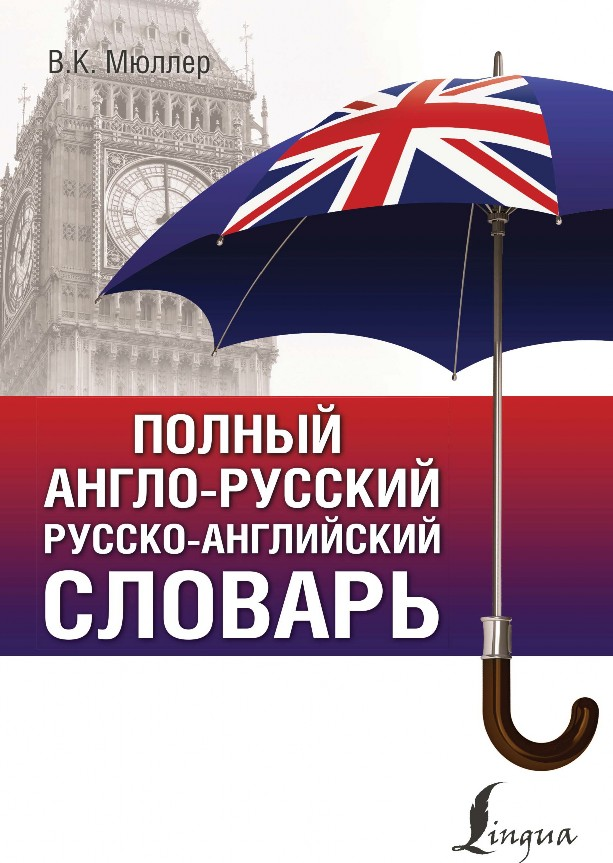
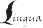
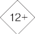
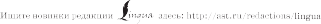
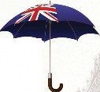
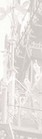
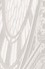
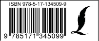
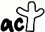

OKOno 30 000 cnoB v1 cnOBOCOYETAHv11/1 COBPEMEHHA51 TPAHCKPv1nl_\v151 TEMATv1YECKv1E BCTABKv1

П
В. К. Мюллер
ПОЛНЫЙ
АНГЛО-РУССКИЙ
РУССКО-АНГЛИЙСКИЙ
СЛОВАРЬ
ДЛЯ НАЧИНАЮЩИХ

Издательство АСТ Москва
УДК 811.111(038) ББК 81.2Англ-4
М98
Дизайн обложки А. Закопайко
Мюллер, Владимир Карлович.
М98 Полный англо-русский русско-английский словарь / В. К. Мюллер. – Москва : Издательство АСТ, 2021. – 320 с. – (Пол- ный курс).
ISBN 978-5-17-134509-9
Великолепное справочное издание, без которого не обойтись при изуче- нии английского языка.
Объем тщательно отобранной лексики и разработка значений рассчитаны на начинающих и продолжающих учить английский язык. Словник дополнен тематическими вставками, призванными расширить словарный запас и круго- зор читателя.
Заголовочные слова в англо-русской части сопровождаются современной транскрипцией, выполненной по британскому изданию Longman Pronunciation Dictionary.
Издание предназначено для всех, кто учит английский язык на курсах или самостоятельно.
УДК 811.111(038) ББК 81.2Англ-4
ISBN 978-5-17-134509-9 © ООО «Издательство АСТ», 2020
О пользовании словарем
Заглавные слова расположены в строго алфавитном порядке. Внутри статьи заглавное слово заменяется знаком тильда (~).
Лексические омонимы обозначены римскими цифрами (I, II и т. д.). Граммати- ческие омонимы отмечены внутри статьи полужирной арабской цифрой. Разные значения слова отделяются друг от друга светлой арабской цифрой со скобкой. Все пояснения отдельных значений слова даны курсивом в скобках.
Синонимы в переводе даны через запятую; точка с запятой разделяет более далекие значения.
За знаком ромб () даются фразеологические сочетания, имеющие идиомати- ческий характер или же не имеющие прямой связи с приведенными значениями. Фразеология и идиоматика включены в настоящий словарь в самом ограниченном объеме.
При каждом заглавном английском слове указана его фонетическая транскрип- ция в знаках международной фонетической системы.
Транскрипционные знаки
Г л а с н ы е
Ö — долгий и
K — краткий, очень открытый и
e — е в словах «шесть», «эти»
{ — более открытый, чем э
¸ — долгий, задний а, похожий на а в слове «палка»
Á — краткий, очень открытый о
þ — долгий, глубокий о
U — краткий у со слабым округлением губ
ü — долгий у без сильного выдвижения губ
ö — краткий а, но менее глубокий; всегда под ударением
@ — неясный безударный звук, близкий к “ö”
Æ: — долгий гласный, напоминающий ё
Д и ф т о н г и
eK ... эй OK ... ой
@U ... оу K@ ... иа
aK ... ай e@ ... эа
aU ... ау U@ ... уа
Ударение в дифтонгах падает на первый элемент.
С о г л а с н ы е
p — п
b — б
m — м
w — звук, близкий к у, но не образующий слога
f — ф
v — в
T — (без голоса), D — (с голосом). Для того чтобы получить эти два щелевых звука — один без голоса, а другой с голосом, — следует образовать щель между передним краем языка и верхними зубами
s — с
z — з
d | — д | ,, | ,, | ,, | ,, | ,, | ,, |
n | — н | ,, | ,, | ,, | ,, | ,, | ,, |
l | — л | ,, | ,, | ,, | ,, | ,, | ,, |
t — т, произнесённый не у зубов, а у дёсен (альвеол)
r — нераскатистый, невибрирующий, очень краткий слабый р (кончик языка, немного завёрнутый назад, находится против той части твёрдого нёба, где производится звук ж)
S — мягкий ш
Z — мягкий ж
tS — ч
dZ — очень слитный мягкий дж (иными словами — ч, произнесённый звонко, с голосом)
k — к
— г
Î — задненёбный н (т. е. н, произнесённый не с помощью кончика языка, а задней части его спинки)
— простой выдох
j — слабый й
Условные сокращения
р у с с к и е
ав — авиация
амер — американизм анат — анатомия архит — архитектура безл — безличная форма биол — биология
бот — ботаника
бухг — бухгалтерия
вводн сл — вводное слово вин п — винительный падеж воен — военное дело
где-л — где-либо геогр — география геол — геология гл — глагол
грам — грамматика
дат п — дательный падеж
дип — дипломатия
ед ч — единственное число
ж-д — железнодорожное дело
зоол — зоология
им п — именительный падеж
и т п — и тому подобное
карт — термин карточной игры
кино — кинематография
комп — компьютер кто-л — кто-либо куда-л — куда-либо кул — кулинария мат — математика
мед — медицина
мест — местоимение
мн ч — множественное число
мор — морское дело
муз — музыка
перен — переносное значение
полигр — полиграфия
поэт — поэтическое выражение превосх ст — превосходная степень предл п — предложный падеж
прил — имя прилагательное
радио — радиотехника
разг — разговорное слово, выраже- ние
род п — родительный падеж
см — смотри
собир — собирательно
спорт — физкультура и спорт
сравнит ст — сравнительная сте- пень
сущ — имя существительное
с-х — сельское хозяйство
тв п — творительный падеж театр — театральное выражение текст — текстильное дело
тех — техника
уст — устаревшее слово, выражение
тж — также
физ — физика
физиол — физиология
филос — философия | шахм — термин шахматной игры |
фото — фотография | эк — экономика |
хим — химия | эл — электротехника |
числит — числительное | юр — юридическое выражение |
что-л — что-либо |
А н г л и й с к и е
adj — adjective имя прилагательное
adv — adverb наречие
conj — conjunction союз
inf — infinitive неопределённая форма глагола
int — interjection междометие n — noun существительное num — numeral числительное part — particle частица
pl — plural множественное число
poss — possessive притяжательное местоимение
p p — past participle причастие прошедшего времени
prep — preposition предлог
pres — present настоящее время
pron — pronoun местоимение
sing — singular единственное число
smb — somebody кто-либо smth — something что-либо v — verb глагол
АНГЛО-РУССКИЙ СЛОВАРЬ
a [eK] грам неопр. артикль
aback [@'b{k] adv: be taken ~ сильно удивиться
abandon [@'b{nd@n] v покидать
abattoir ['{b@"tw¸] n бойня
abbey ['{bK] n монастырь, аббатство
abbot ['{b@t] n аббат
abbreviate [@'brÖvKeKt] v сокращать abbreviation [@brÖvK'eKSn] n сокращение, аббревиатура
abdicate ['{bdKkeKt] v 1) отрекаться (от престола) 2) снимать с себя ответственность
abdomen ['{bd@m@n] n живот
abduct [{b'dökt] v похищать
abide [@'baKd] v: can’t ~ smth ненавидеть ability [@'bKlKtK] n способность, умение ablaze [@'bleKz] adj охваченный огнём
able [eKbl] adj способный; be ~ to мочь, быть в состоянии
aboard [@'bþd] adv на борту; на корабле abolish [@'bÁlKS] v отменять; упразднять abolition [{b@'lKSn] n отмена, упразднение abominable [@'bÁmKn@bl]adj отвратительный, противный
Aborigine ["{b@'rKdZ@nK] n коренной австралиец, абориген
abort [@'bþt] v прерывать, прекращать abound [@'baUnd] v (in) изобиловать about [@'baUt] 1 adv 1) кругом 2) около,
приблизительно 2 prep 1) о, относительно
2) вокруг 3): be ~ to + inf собираться (что-л сделать)
above [@'böv] adv, prep 1) над 2) выше; свыше
abrasion [@'breKZn] n трение, истирание
A
abrasive [@'breKsKv] adj 1) грубый
2) шероховатый, абразивный
abreast [@'brest] adv в ряд, на одной линии keep ~ of smth быть в курсе, идти в ногу abridge [@'brKdZ] v сокращать
abroad [@'brþd] adv за границей; за границу
abrupt [@'bröpt] adj 1) резкий, внезапный
2) крутой, обрывистый abscess ['{bsKs] n нарыв absence ['{bs@ns] n отсутствие
absent ['{bs@nt] adj отсутствующий; be ~ отсутствовать
absentee ["{bs@n'tÖ] n отсутствующий, не явившийся
absent-minded [{bs@nt'maKndKd] adj
рассеянный
absolute ['{bs@lüt] adj 1) абсолютный; безусловный 2) неограниченный absolutely [{bs@'lütlK] adv совсем; совершенно
absorb [@b'zþb] v поглощать; всасывать, впитывать
absorbent [@b'zþb@nt] adj впитывающий, абсорбирующий
abstain [@b'steKn] v воздерживаться abstract ['{bstr{kt] adj отвлечённый, абстрактный
absurd [@b'sÆ:d] adj нелепый; абсурдный absurdity [@b'sÆ:dKtK] n нелепость; абсурд abundance [@'bönd@ns] n избыток, изобилие abundant [@'bönd@nt] adj обильный
abuse 1 v [@'bjüz] 1) злоупотреблять
2) ругать 2 n [@'bjüs] 1) злоупотребление
2) ругань
abusive [@'bjüsKv] adj оскорбительный, грубый
abysmal [@'bKzm@l] adj отвратительный
abyss [@'bKs] n бездна, пропасть Academy [@'k{d@mK] n академия accelerate [{k'selereKt] v ускорять acceleration [@k"sel@'reKSn] n ускорение accelerator [@k'sel@"reKt@] n акселератор accent ['{ks@nt] n 1) ударение
2) произношение, акцент
accentuate [{k'sentSUeKt] v выделять, под- чёркивать
accept [{k'sept] v принимать
acceptable [@k'sept@bl] adj 1) приемлемый
2) разумный
access ['{kses] n доступ
accessible [@k'sesKbl] adj доступный
accession [@k'seSn] n доступ
accessory [@k'ses@rK] n 1) приспособление
2) аксессуар (в одежде) 3) юр сообщник accident ['{ksKd@nt] n (несчастный) случай; by ~ нечаянно
accidental [{ksK'dentl] adj случайный; нечаянный
acclaim [@'kleKm] n шумное приветствие accommodate [@'kÁm@deKt] v принимать, размещать; вмещать
accommodation [@kÁm@'deKSn] n
помещение, место 2) физиол
аккомодация
accompany [@'kömp@nK] v 1) сопровождать
муз аккомпанировать accomplice [@'kömplKs] n сообщник accomplish [@'kömplKS] v выполнять, справляться
accomplished [@'kömplKSt] adj искусный, умелый
accomplishment [@'kömplKSm@nt] n
выполнение, завершение
accord [@'kþd] 1 n согласие; соответствие
2 v согласовать(ся); соответствовать accordance [@'kþd@ns] n: in ~ with согласно, в соответствии с
according [@'kþdKÎ] prep: ~ to согласно accordingly [@'kþdKÎlK] adv соответствен- но
accordion [@'kþdK@n] n аккордеон
account [@'kaUnt] 1 n 1) счёт 2) отчёт on ~ of из-за; on no ~ ни в коем случае 2 v: ~ for давать отчёт; объяснять
accountant [@'kaUnt@nt] n бухгалтер
Accra [@'kr¸] n Аккра
accumulate [@'kjümjUleKt] v накапливать(ся)
accurate ['{kjUrKt] adj точный
accusation [{kjU'zeKSn] n обвинение accusative [@'kjüz@tKv] n грам винительный падеж
accuse [@'kjüz] v обвинять
accustom [@'köst@m] v приучать accustomed [@'köst@md] adj: be/get ~ to smth привыкнуть
ache [eKk] 1 n боль 2 v болеть
achieve [@'tSÖv] v достигать achievement [@'tSÖvm@nt] n достижение acid ['{sKd] 1 adj кислый 2 n кислота acid rain ["{sKd'reKn] n кислотный дождь acknowledge [@k'nÁlKdZ] v 1) признавать
2) подтверждать (получение)
acknowledgement [@k'nÁlKdZm@nt] n
признание 2) подтверждение (получе- ния) 3) pl выражение благодарности
(в книге)
acne ['{knK] n угри
acorn ['eKkþn] n жёлудь
acoustic [@'küstKk] adj акустический acoustics [@'küstKks] n акустика acquaintance [@'kweKnt@ns] n знакомый acquire [@'kwaK@] v приобретать
acquit [@'kwKt] v оправдывать
acre ['eKk@] n акр
acrobat ['{kr@b{t] n акробат
acronym ['{kr@nKm] n акроним
across [@'krÁs] 1 prep через; сквозь 2 adv
поперёк
acrostic [@'krÁstKk] n акростих
acrylic [@'krKlKk] adj акриловый
act [{kt] 1 n 1) действие, поступок 2) те- атр акт 3) закон (принятый парламен- том) 2 v 1) действовать; вести себя
играть (роль)
acting ['{ktKÎ] 1 adj временно исполняющий обязанности 2 n игра
action [{kSn] n 1) действие, поступок 2) юр
иск 3) военные действия activate ['{ktKveKt] v запустить, активировать
active ['{ktKv] adj деятельный, активный; ~ voice грам действительный залог; on ~ service на фронте
activist ['{ktKvKst] n активист activity [{k'tKvKtK] n деятельность, активность
actor ['{kt@] n актёр
actress ['{ktrKs] n актриса
actual ['{ktSU@l] adj действительный actually ['{ktSU@lK] adv фактически, на самом деле
acupuncture ['{kjU"pöÎktS@] n акупунктура, иглоукалывание
acute [@'kjüt] adj острый ~ satisfaction огромное удовлетворение
AD ["eK'dÖ] adv (Anno Domini) нашей эры adamant ['{d@m@nt] adj непреклонный, несокрушимый
adapt [@'d{pt] v приспосабливать(ся)
adaptation [{d{p'teKSn] n
приспособление 2) переделка; обработка (литературного произведения) adaptor [@'d{pt@] n адаптор
add [{d] v 1) прибавлять 2) мат
складывать
adder ['{d@] n гадюка
addict ['{dKkt] n человек, приверженный чему-л; раб привычки
addictive [@'dKktKv] adj вызывающий привыкание
addition [@'dKSn] n 1) добавление 2) мат
сложение
additional [@'dKSn@l] adj добавочный additive ['{d@tKv] n пищевая добавка; консервант
address [@'dres] 1 v 1) адресовать,
направлять 2) обращаться 2 n 1) адрес
обращение, речь
adenoids ['{d@nOKdz] n pl аденоиды
adequate ['{dKkwKt] adj 1) соответствующий
2) достаточный
adhere [@d'hK@] v придерживаться; ~ to a decision придерживаться решения adherent [@d'hK@r@nt] n приверженец, сторонник
adhesive [@d'hÖsKv] n клей
adjacent [@'dZeKs@nt] adj смежный
adjective ['{dZKktKv] n грам имя прилагательное
adjust [@'dZöst] v 1) оправлять (платье и т п) 2) улаживать 3) приспособлять, прилаживать
ad-lib ["{d'lKb] v исполнять без подготовки
administration [@dmKnKs'treKSn] n
администрация 2) правительство admirable ['{dmKr@bl] adj превосходный, замечательный
admiral ['{dm@r@l] n адмирал admiralty ['{dm@r@ltK] n морское министерство
admiration [{dm@'reKSn] n восхищение admire [@d'maK@] v восхищаться admiring [@d'maK@rKÎ] adj восхищённый admission [@d'mKSn] n 1) вход; входная плата 2) признание
admit [@d'mKt] v впускать; перен допускать, признаваться; ~ting that this is the case допустим, что это так
admittance [@d'mKt@ns] n допуск; no ~ вход воспрещён
adolescent [{d@'lesnt] 1 adj юношеский 2 n
юноша, подросток
adopt [@'dÁpt] v 1) усыновлять 2) принимать
adoption [@'dÁpSn] n 1) усыновление
принятие
adorable [@'dþr@bl] adj обожаемый, достойный обожания
adore [@'dþ] v обожать
adorn [@'dþn] v украшать adrenalin [@'dren@lKn] n адреналин adult ['{dölt] n взрослый
advance [@d'v¸ns] 1 v 1) продвигать(ся)
2) повышать(ся) 3) выдвигать 2 n
продвижение 2) аванс
advanced [@d'v¸nst] adj 1) передовой
продвинутый, прогрессивный advantage [@d'v¸ntKdZ] n преимущество adventure [@d'ventS@] n приключение adventurer [@d'ventS@r@] n искатель приключений, авантюрист
adventurous [@d'ventS@r@s] adj отважный, предприимчивый; ~ journey путешествие, полное приключений
adverb ['{dvÆ:b] n грам наречие
adversary ['{dv@s@rK] n противник adverse ['{dvÆ:s] adj неблагоприятный; враждебный
adversity [@d'vÆ:sKtK] n бедствие, несчастье advert ['{dvÆ:t] n рекламное объявление advertise ['{dv@taKz] v рекламировать; давать объявление
advertisement [@d'vÆ:tKsm@nt] n
объявление; реклама
advice [@d'vaKs] n совет (наставление) advisable [@d'vaKz@bl] adj целесообразный, желательный
advise [@d'vaKz] v 1) советовать 2) извещать, уведомлять
advocate 1 v ['{dv@keKt] выступать за; защищать 2 n ['{dv@kKt] сторонник, защитник
aerial ['e@rK@l] 1 adj воздушный 2 n антенна aerobatics [e@r@'b{tKks] n высший пилотаж aerobics [e@'r@UbKks] n аэробика aerodrome ['e@r@dr@Um] n аэродром aeroplane ['e@r@pleKn] n самолёт
aerosol ['e@r@sÁl] n аэрозоль aerospace ['e@r@UspeKs] adj аэрокосмический
aesthetic [Ös'TetKk] adj эстетический
affair [@'fe@] n дело
affect [@'fekt] v 1) (воз)действовать
2) затрагивать 3) поражать affectation [{f@k'teKSn] n притворство affection [@'fekSn] n привязанность affectionate [@'fekSnKt] adj любящий, нежный
affirm [@'fÆ:m] v утверждать
affirmative [@'fÆ:m@tKv] adj утвердительный
afflict [@'flKkt] v 1) огорчать, беспокоить
2) поражать (о болезни)
afford [@'fþd] v 1) доставлять 2) позволять себе; I can’t ~ a car я не в состоянии купить машину
affront [@'frönt] n оскорбление
afloat [@'fl@Ut] adj плывущий по течению afraid [@'freKd] adj: be ~ (of) бояться afresh [@'freS] adv заново
African ['{frKk@n] 1 adj африканский; ~ American афроамериканец 2 n африканец
after ['¸ft@] 1 conj после того как 2 prep после; за; day ~ day день за днём; ~ all в конце концов
afternoon [¸ft@'nün] n послеполуденное время; вторая половина дня; good ~! доб- рый день!
afterwards ['¸ft@w@dz] adv потом, впоследствии
again [@'geKn] adv опять, снова
against [@'genst] prep против
age [eKdZ] 1 n 1) возраст 2) век for ~s дав- но 2 v 1) стареть 2) старить
aged ['eKdZKd] adj престарелый
agency ['eKdZ@nsK] n 1) агентство
средство; by (или through) the ~ of посредством, с помощью
agenda [@'dZend@] n повестка дня; on the ~ на повестке дня
agent ['eKdZ@nt] n агент; представитель; a travel ~ турагент
aggregate ['{grKgeKt] v собирать в одно целое
aggression [@'greSn] n агрессия aggressive [@'gresKv] adj агрессивный aghast [@'g¸st] adj расстроенный agile ['{dZaKl] adj подвижный
agitate I ['{dZKteKt] v волновать, возбуждать
agitate II ['{dZKteKt] v агитировать
agitator ['{dZKteKt@] n агитатор
ago [@'g@U] adv тому назад; long ~ давно agony ['{g@nK] n страдание, мучительная боль
agree [@'grÖ] v 1) соглашаться; договариваться 2) уживаться
соответствовать
agreeable [@'grÖ@bl] adj приятный
agreement [@'grÖm@nt] n 1) согласие
2) соглашение; договор 3) грам
согласование
agriculture ['{grKköltS@] n сельское хозяйство
aground [@'graUnd] adv: run/go ~ сесть на мель
ahead [@'hed] adv вперёд; впереди aid [eKd] 1 n помощь; with the ~ of a microscope c помощью микроскопа 2 v помогать
AIDS [eKdz] n (acquired immune deficiency syndrome) СПИД
ailing ['eKlKÎ] adj недомогающий; хилый; болезненный; находящийся в плохом состоянии
ailment ['eKlm@nt] n недомогание; не- здоровье
aim [eKm] 1 n цель 2 v 1) целиться
2) стремиться
aimless ['eKmlKs] adj бесцельный
air I [e@] 1 n воздух 2 adj 1) воздушный
2) авиационный 3 v проветривать
air II [e@] n вид; an ~ of importance важный вид
airbag ['e@b{g] n подушка безопасности airborne ['e@bþn] adj 1) находящийся в воздухе 2) авиационный
air conditioning ["e@k@n'dKSnKÎ] n
кондиционирование воздуха
aircraft ['e@kr¸ft] n 1) самолёт 2) авиация
airfield ['e@fÖld] n аэродром
air force ['e@"fþs] n военно-воздушные силы, военная авиация
airline ['e@"laKn] n авиакомпания airliner ['e@"laKn@] n авиалайнер air mail ['e@meKl] n авиапочта airport ['e@pþt] n аэропорт airtight ['e@taKt] adj воздухонепроницаемый
airy ['e@rK] adj просторный
aisle [aKl] n проход (между рядами в теа- тре и т п)
ajar [@'dZ¸] adj приоткрытый
alarm [@'l¸m] 1 n тревога 2 v (вс)тре- вожить
alarmclock [@'l¸mklÁk] n будильник
alas! [@'l¸s] int увы!
albatross ['{lb@trÁs] n альбатрос albino [{l'bÖn@U] n альбинос album ['{lb@m] n альбом alcohol ['{lk@hÁl] n алкоголь alert [@'lÆ:t] 1 adj 1) бдительный
2) проворный 2 n: on the ~ настороже
algebra ['{ldZKbr@] n алгебра
alibi ['{lKbaK] n алиби
alien ['eKlj@n] 1 adj 1) иностранный
2) чуждый 2 n иностранец
alight [@'laKt] 1 v 1) сходить (с трамвая и т п) 2) спускаться (о самолёте); сесть
(о птице) 2 adj горящий
alike [@'laKk] 1 adj 1): they are very much ~ они очень похожи друг на друга 2): all children are ~ все дети одинаковы 2 adv одинаково; they dress ~ они одинаково одеваются
alive [@'laKv] adj 1) живой 2): ~ with кишащий be ~ to понимать, осознавать all [þl] 1 adj весь, вся, всё; все once for ~ раз навсегда 2 n всё, все at ~ совсем, во- обще; not at ~! вовсе нет!; пожалуйста!
(в ответ на благодарность); ~ right! ладно!; хорошо!
allege [@'ledZ] v 1) утверждать 2) ссылаться; приводить в подтверждение
allegory ['{l@g@rK] n аллегория allergic [@'lÆ:dZKk] adj аллергический; страдающий аллергией
allergy ['{l@dZK] n аллергия
alley ['{lK] n 1) аллея 2) переулок
alliance [@'laK@ns] n союз
allied [@'laKd] adj 1) союзный
2) родственный
alligator ['{lKgeKt@] n аллигатор allot [@'lÁt] v назначать allotment [@'lÁtm@nt] n участок
allow [@'laU] v 1) позволять 2) допускать, признавать; ~ for принимать во внимание allowance [@'laU@ns] n 1) пособие, регулярная денежная помощь 2) воен паёк
make ~s for учитывать
alloy ['{lOK] n 1) примесь 2) сплав
allude [@'lüd] v (to) 1) упоминать
2) ссылаться
allusion [@'lüZn] n 1) намёк 2) ссылка
ally 1 n ['{laK] союзник 2 v [@'laK] соединять almighty [þl'maKtK] adj всемогущий, всесильный
almond ['¸m@nd] n миндаль
almost ['þlm@Ust] adv почти
alone [@'l@Un] adv один; I’m (all) ~ я (совсем) один; let smb ~ оставлять в покое along [@'lÁÎ] adv вдоль, по
alongside [@'lÁÎsaKd] adv вдоль
aloof [@'lüf] adv hold (или keep) ~ from держаться в стороне
aloud [@'laUd] adv громко, вслух
alphabet ['{lf@bKt] n алфавит, азбука alphabetical ["{lf@'betKk@l] adj алфавитный, по алфавиту
alpine ['{lpaKn] adj альпийский
already [þl'redK] adv уже also ['þls@U] adv также, тоже altar ['þlt@] n алтарь
alter ['þlt@] v (видо)изменять(ся) alteration ['þlt@reKSn] n изменение; перемена
alternate 1 adj [þl'tÆ:nKt] переменный 2 v
['þltÆ:neKt] чередовать(ся)
alternative [þl'tÆ:n@tKv] n выбор; there was no ~ не было другого выхода
although [þl'D@U] conj хотя altitude ['{ltKtjüd] n высота altogether [þlt@'geD@] adv совсем
aluminium [{ljU'mKnK@m] n алюминий
always ['þlweKz] adv всегда
am [{m] 1 л ед ч наст вр гл be
a.m. ['eK'em] adv (ante meridiem) до полудня; 5 a.m. 5 часов утра amalgamated [@'m{lg@meKtKd] adj объеди- нённый, соединённый
amateur ['{m@t@] 1 n любитель 2 adj
любительский
amaze [@'meKz] v удивлять, изумлять amazing [@'meKzKÎ] adj удивительный, поразительный
ambassador [{m'b{s@d@] n посол
amber ['{mb@] 1 n янтарь 2 adj янтарный ambiguous [{m'bKgjU@s] adj двусмысленный
ambition [{m'bKSn] n 1) честолюбие
2) стремление
ambitious [{m'bKS@s] adj честолюбивый ambulance ['{mbjUl@ns] n 1) полевой госпиталь 2) машина скорой помощи ambush ['{mbUS] n засада
amends [@'mendz] n pl возмещение; make ~ (for) искупать вину
American [@'merKk@n] 1 adj американский
2 n американец
amiable ['eKmK@bl] adj любезный, милый
amicable ['{mKk@bl] adj дружеский; дружественный
amid(st) [@'mKd(st)] prep среди ammunition [{mjU'nKSn] n боеприпасы amnesty ['{mnKstK] n амнистия amoeba [@'mÖb@] n амёба
among(st) [@'möÎ(st)] prep между, среди
amount [@'maUnt] 1 n 1) сумма; итог
2) количество 2 v доходить до; равняться amphibian [{m'fKbK@n] n земноводное животное
ample [{mpl] adj достаточный, изобильный amplifier ['{mplKfaK@] n звукоусилитель amplify ['{mplKfaK] v усиливать (звук), делать громче
amputate ['{mpjUteKt] v ампутировать amuse [@'mjüz] v забавлять, развлекать amusement [@'mjüzm@nt] n забава; развлечение
amusing [@'mjüzKÎ] adj забавный, интересный
an [{n] грам неопределённый артикль перед гласными
anaemia [@'nÖmK@] n анемия anaesthetic [{nKs'TetKk] n наркоз; обезболивающее средство anagram ['{n@gr{m] n анаграмма analogue ['{n{lÁg] n аналог
analogy [@'n{l@dZK] n пример, аналогия analyse ['{n@laKz] v анализировать, разбирать
analysis [@'n{l@sKs] n анализ anarchy ['{n@kK] n анархия anatomy [@'n{t@mK] n анатомия ancestor ['{nsKst@] n предок anchor ['{Îk@] n якорь
ancient ['eKnS@nt] adj древний, старинный
and [{nd] conj 1) и 2) а, но
anecdote ['{nKkd@Ut] n забавная история
anemone [@'nem@nK] n бот анемон
angel ['eKndZ@l] n ангел anger ['{Îg@] n гнев angle [{Îgl] n мат угол angler ['{Îgl@] n рыболов
angry ['{ÎgrK] adj сердитый; be ~ сердиться
anguish ['{ÎgwKS] n боль, страдание
angular ['{ÎgjUl@] adj 1) угловой
2) угловатый, неловкий
animal ['{nKm@l] 1 n животное 2 adj
животный
animated ['{nKmeKtKd] adj оживлённый animation ["{nK'meKSn] n оживление; воодушевление
animosity [{nK'mÁsKtK] n враждебность
ankle [{Îkl] n щиколотка
annex 1 v [@'neks] присоединять 2 n ['{neks] 1) приложение 2) пристройка annexation [{nek'seKSn] n присоединение; аннексия
annihilate [@'naK@leKt] v уничтожать annihilation [@naK@'leKSn] n уничтожение anniversary [{nK'vÆ:s@rK] n годовщина; юбилей
annotate ['{n@teKt] v комментировать announce [@'naUns] v объявлять announcement [@'naUnsm@nt] n объявление
annoy [@'nOK] v досаждать, надоедать annoyed [@'nOKd] adj раздражённый annual ['{njU@l] 1 adj годовой, ежегодный 2 n ежегодник
annul [@'nöl] v аннулировать, отменять, уничтожать
anonymous [@'nÁnKm@s] adj анонимный; неизвестный
anorak ['{n@r{k] n куртка
another [@'nöD@] pron другой answer ['¸ns@] 1 n ответ 2 v отвечать ant [{nt] n муравей
antagonize [{n't{g@naKz] v раздражать, вызывать противодействие; отталкивать antarctic [{nt'¸ktKk] adj антарктический antelope ['{ntKl@Up] n антилопа
antenna [{n'ten@] n 1) усик насекомого
2) амер антенна
anthem ['{nT@m] n гимн; national ~ государственный гимн
anthology [{n'TÁl@dZK] n антология anti-aircraft ["{ntK'e@kr¸ft] adj противовоздушный
antibiotic ["{ntKbaK'ÁtKk] n антибиотик
anticipate [{n'tKsKpeKt] v ожидать, предвидеть; ~ smb’s wishes предупреждать чьи-л желания
anticlockwise ["{ntK'klÁkwaKz] adj, adv
против часовой стрелки
antics ['{ntKks] n pl ужимки, кривлянье antidote ['{ntKd@Ut] n противоядие antipathy [{n'tKp@TK] n антипатия antiperspirant ["{ntK'pÆ:spKr@nt] n антиперспирант
antique [{n'tÖk] adj 1) античный
2) антикварный
antiquity [{n'tKkwKtK] n древность; античность
antiseptic ["{ntK'septKk] n антисептик antlers ['{ntl@z] n pl рога о(леня) antonym ['{nt@nKm] n антоним
anvil ['{nvKl] n наковальня
anxiety [{Î'zaK@tK] n беспокойство, забота; тревога
anxious ['{ÎkS@s] adj 1) озабоченный; встревоженный; I am ~ about children я беспокоюсь о детях 2) страстно желающий; he is ~ to see you он очень хотел бы повидать вас
any ['enK] adj, pron какой-нибудь; любой anybody ['enKbÁdK] pron кто-нибудь anyhow ['enKhaU] adv во всяком случае anyone ['enKwön] pron любой, всякий anything ['enKTKÎ] pron что-нибудь; что угодно
anyway ['enKweK] adv во всяком случае anywhere ['enKwe@] adv где-нибудь, куда- нибудь; где угодно, куда угодно
apart [@'p¸t] adv в стороне, отдельно; врозь; take ~ разобрать (на части); ~ from не считая, кроме; joking ~ шутки в сторону apartment [@'p¸tm@nt] n квартира
apathy ['{p@TK] n апатия
ape [eKp] n обезьяна (человекообразная) apex ['eKpeks] n пик, острый верх apiece [@'pÖs] adv за штуку
apologize [@'pÁl@dZaKz] v извиняться apology [@'pÁl@dZK] n извинение apostrophe [@'pÁstr@fK] n апостроф appal [@'pO:l] v ужасать, пугать
apparatus [{p@'reKt@s] n аппарат, прибор
apparent [@'p{r@nt] adj очевидный apparently [@'p{r@ntlK] adv очевидно; по- видимому
appeal [@'pÖl] 1 n 1) призыв; обращение; воззвание 2) юр апелляция 2 v
1) обращаться; взывать 2) юр
апеллировать
appear [@'pK@] v 1) появляться 2) казаться
3) явствовать
appearance [@'pK@r@ns] n 1) появление
2) наружность, вид
appease [@'pÖz] v умиротворять; успокаивать
appendicitis [@"pendK'saKtKs] n аппендицит
appendix [@'pendKks] n 1) приложение
2) анат аппендикс
appetite ['{pKtaKt] n 1) аппетит 2) охота, желание
appetizing ['{p@taKzKÎ] adj аппетитный
applaud [@'plþd] v 1) аплодировать
2) хвалить
applause [@'plþz] n 1) аплодисменты 2) по- хвала
apple [{pl] n яблоко; ~ pie яблочный пирог appliance [@'plaK@ns] n прибор, приспособление
applicant ['{plKk@nt] n 1) проситель
2) претендент (на место, должность) application [{plK'keKSn] n 1) просьба, заявление 2) применение 3) прилежание, старание
applied [@'plaKd] adj прикладной
apply [@'plaK] v 1) (to, for) обращаться к, за
2) прилагать; применять; употреблять (в дело)
appoint [@'pOKnt] v назначать
appointment [@'pOKntm@nt] n 1) назначение
2) должность 3) свидание
appraise [@'preKz] v оценивать appreciable [@'prÖS@bl] adj заметный, ощутимый
appreciate [@'prÖSKeKt] v 1) ценить; отдавать должное 2) оценивать
appreciative [@'prÖS@tKv] adj благодарный apprehensive [{prK'hensKv] adj обеспокоенный, нервный
apprentice [@'prentKs] n ученик, подмастерье
apprenticeship [@'prentKsSKp] n ученичество approach [@'pr@UtS] 1 v приближаться; подходить 2 n приближение; подход approbation [{pr@'beKSn] n одобрение appropriate 1 adj [@'pr@UprKKt] подходящий, соответствующий 2 v [@'pr@UprKeKt] присваивать
approval [@'prüv@l] n одобрение approve [@'prüv] v одобрять approximate [@'prÁksKmKt] adj приблизительный
apricot ['eKprKkÁt] n абрикос April ['eKpr@l] n апрель apron ['eKpr@n] n фартук
apt [{pt] adj 1) подходящий; уместный
2) склонный
aptitude ['{ptKtjüd] n способность aquarium [@'kwe@rK@m] n аквариум aquatic [@'kw{tKk] adj водный; ~ sports водные виды спорта
aquatics [@'kw{tKks] n pl водный спорт aqueduct ['{kwKdökt] n акведук arable ['{r@bl] adj пахотный
arbitrary ['¸bKtr@rK] adj произвольный
arbour ['¸b@] n беседка
arc [¸k] n мат дуга
arcade [¸'keKd] n пассаж (с магазинами)
arch [¸tS] n арка
archaeology [¸kK'Ál@dZK] n археология archaic [¸'keKKk] adj устарелый; архаический
archbishop [¸tS'bKS@p] n архиепископ archery ['¸tS@rK] n стрельба из лука architect ['¸kKtekt] n архитектор architecture ['¸kKtektS@] n архитектура arctic ['¸ktKk] adj полярный, арктический ardent ['¸d@nt] adj пылкий
ardour ['¸d@] n жар; пыл, рвение arduous ['¸djU@s] adj тяжёлый are [¸] мн ч наст вр гл be
area ['e@rK@] n 1) пространство, площадь
район, область; зона arena [@'rÖn@] n арена aren’t [¸nt] разг = are not
argue ['¸gjü] v 1) спорить 2) доказывать
argument ['¸gjUm@nt] n 1) довод 2) спор
arid ['{rKd] adj сухой, засушливый arise [@'raKz] v (arose; arisen) возникать, появляться
arisen [@'rKzn] p p от arise
aristocracy [{rK'stÁkr@sK] n аристократия aristocrat ['{rKst@kr{t] n аристократ arithmetic [@'rKTm@tKk] n арифметика ark [¸k] n библ ковчег
art [¸t] n искусство
artefact ['¸tKf{kt] n артефакт artful ['¸tfUl] adj хитрый, ловкий article ['¸tKkl] n 1) статья; leading ~
передовая статья, передовица 2) предмет
грам артикль, член
artificial [¸tK'fKS@l] adj искусственный; притворный; ~ teeth вставные зубы; ~ limb протез
arm I [¸m] n рука
о(т кисти до плеча);
artillery [¸'tKl@rK] n артиллерия
carry smth under one’s ~ нести что-л под мышкой
arm II [¸m] 1 n обыкн pl оружие 2 v
вооружать(ся)
armada [¸'m¸d@] n 1) армада 2) колонна танков, грузовиков и т п
armaments ['¸m@m@nts] n pl вооружение
armchair ['¸mtSe@] n кресло armistice ['¸mKstKs] n перемирие armour ['¸m@] n броня
armoury ['¸m@rK] n 1) арсенал 2) амер
оружейный завод
army ['¸mK] n армия
aroma [@'r@Um@] n аромат aromatherapy [@"r@Um@'Ter@pK] n ароматерапия
arose [@'r@Uz] past от arise
around [@'raUnd] adv вокруг, кругом arouse [@'raUz] v будить, пробуждать arrange [@'reKndZ] v расставлять, располагать по вкусу (мебель, цветы и т п); устраивать; ~ the children according to height поставить детей по росту arrangement [@'reKndZm@nt] n
устройство, расположение 2) pl
приготовления
array [@'reK] n ряд, группа
arrest [@'rest] 1 v 1) арестовать
приковывать (внимание) 2 n арест
arrival [@'raKv@l] n прибытие
arrive [@'raKv] v прибывать arrogance ['{r@g@ns] n высокомерие, надменность
arrogant ['{r@g@nt] adj надменный
arrow ['{r@U] n стрела arsenal ['¸sn@l] n арсенал arson ['¸s@n] n поджог
artist ['¸tKst] n художник
artistic [¸'tKstKk] adj художественный
as [{z] 1 conj 1) так как 2) в то время как, когда as if как будто; as to что касается 2 adv как; так as far as насколько; as well также; as well as так же как
ascent [@'sent] n восхождение ascertain [{s@'teKn] v установить, удостовериться
ash I [{S] n 1) зола; пепел 2) pl прах
ash II [{S] n ясень
ashamed [@'SeKmd] adj: be ~ стыдиться ashore [@'Sþ] adv на берегу; на берег Asiatic [eKSK'{tKk] adj азиатский
aside [@'saKd] adv в сторону
ask [¸sk] v 1) спрашивать; ~ after справляться о 2) просить
asleep [@'slÖp] adj: be ~ спать; fall ~ заснуть
asp [{sp] n осина
aspect ['{spekt] n 1) вид 2) аспект, сторона
asphalt ['{sf{lt] n асфальт aspiration [{sp@'reKSn] n стремление aspire [@s'paK@] v стремиться
aspirin ['{sprKn] n аспирин
ass [{s] n осёл
assassin [@'s{sKn] n убийца assassination [@"s{sK'neKSn] n убийство assault [@'sþlt] 1 n нападение; штурм 2 v нападать; штурмовать
assemble [@'sembl] v 1) собирать(ся) 2) тех
монтировать
assembly [@'semblK] n собрание; ассамблея assent [@'sent] 1 n согласие 2 v соглашаться assert [@'sÆ:t] v утверждать; ~ oneself отстаивать свои права
assertive [@'sÆ:tKv] adj утвердительный, положительный
assess [@'ses] v оценивать, давать оценку
asset ['{set] n активы; имущество
assign [@'saKn] v 1) назначать 2) ассигновать
assignment [@'saKnm@nt] n 1) назначение
2) передача (имущества, прав)
assimilate [@'sKmKleKt] v 1) усваивать(ся)
2) ассимилировать(ся)
assist [@'sKst] v помогать; содействовать assistance [@'sKst@ns] n помощь; содействие assistant [@'sKst@nt] n помощник, ассистент associate 1 v [@'s@UsKeKt] 1) соединять(ся)
2) общаться 2 n [@'s@UsKKt] коллега; участник
association [@s@UsK'eKSn] n общество; ассоциация
assorted [@'sþtKd] adj неоднородный; многообразный
assortment [@'sþtm@nt] n выбор, ассортимент
assume [@'sjüm] v 1) принимать на себя
2) предполагать, допускать assumption [@'sömpSn] n принятие ответственности
assure [@'Sþ] v уверять; заверять (кого-л)
asterisk ['{st@rKsk] n звёздочка asteroid ['{st@rOKd] n астероид asthma ['{sm@] n астма
astonish [@s'tÁnKS] v удивлять, изумлять astonishment [@s'tÁnKSm@nt] n удивление, изумление
astride [@'straKd] prep верхом astrology [@'strÁl@dZK] n астрология astronaut ['{str@nþt] n астронавт astronomy [@s'trÁn@mK] n астрономия asylum [@'saKl@m] n 1) приют; убежище
2) психиатрическая лечебница asymmetrical [eKsK'metrKk@l] adj асимметричный, несимметричный
at [{t] prep в, на; при, у, около; по at all вообще
ate [et] past от eat
atheist ['eKTKKst] n атеист
athlete ['{TlÖt] n спортсмен; атлет athletics [{T'letKks] n лёгкая атлетика atlas ['{tl@s] n атлас
atmosphere ['{tm@sfK@] n атмосфера
atom ['{t@m] n атом; ~ bomb атомная бомба
atomic [@'tÁmKk] adj атомный
atrocious [@'tr@US@s] adj зверский, жестокий atrocity [@'trÁsKtK] n жестокий поступок attach [@'t{tS] v 1) прикреплять, присоединять; перен привязывать
2) придавать (значение)
attachment [@'t{tSm@nt] n
1) привязанность 2) прикрепление
attack [@'t{k] 1 v атаковать; нападать 2 n
атака; нападение 2) припадок, приступ (болезни)
attain [@'teKn] v достигнуть; добиться
attempt [@'tempt] 1 n 1) попытка
покушение 2 v 1) пытаться
покушаться
attend [@'tend] v 1) уделять внимание; слушать (внимательно); sorry, I wasn’t
~ing простите, я отвлёкся 2) заботиться; I’ll
~ to luggage я позабочусь о багаже
присутствовать, посещать attendance [@'tend@ns] n посещаемость attendant [@'tend@nt] n служитель attention [@'tenSn] n внимание attentive [@'tentKv] adj внимательный attic ['{tKk] n чердак
attitude ['{tKtjüd] n 1) отношение 2) поза attract [@'tr{kt] v притягивать, привлекать attraction [@'tr{kSn] n 1) притяжение, тяготение 2) привлекательность
attractive [@'tr{ktKv] adj привлекательный; заманчивый
attribute 1 n ['{trKbjüt] 1) свойство;
признак 2) грам определение 2 v [@'trKbjüt] приписывать; относить (к) aubergine ['@Ub@ZÖn] n баклажан
auburn ['þb@n] adj каштановый (о волосах)
auction [þkSn] n аукцион
audacious [þ'deKS@s] adj отважный; дерзкий
audacity [þ'd{sKtK] n 1) отвага
2) нахальство
audible ['þd@bl] adj слышный, слышимый audience ['þdj@ns] n 1) аудитория, слушатели 2) аудиенция
audio ['þdK@U] adj аудио August ['þg@st] n август aunt [¸nt] n тётка, тётя
austere [Ás'tK@] adj суровый, строгий
Australian [Ás'treKlK@n] 1 adj австралийский
2 n австралиец
authentic [þ'TentKk] adj подлинный
author ['þT@] n автор authoritative [þ'TÁrKt@tKv] adj авторитетный
authority [þ'TÁrKtK] n 1) власть, полномочие
2) pl власти 3) авторитет autobiography ["þt@UbaK'Ágr@fK] n автобиография
autograph ['þt@gr¸f] n автограф automatic [þt@'m{tKk] adj автоматический automation ["þt@'meKSn] n автоматика automobile ['þt@m@bÖl] n автомобиль autonomous [þ'tÁn@m@s] adj автономный autumn ['þt@m] n осень
auxiliary [þg'zKlj@rK] adj вспомогательный; дополнительный
available [@'veKl@bl] adj наличный, имеющийся в распоряжении; are any tickets ~? нет ли билетов в продаже? avalanche ['{v@l¸nS] n снежный обвал, лавина
avarice ['{v@rKs] n алчность, скупость
avenge [@'vendZ] v (ото)мстить
avenue ['{vKnjü] n проспект; улица; аллея
average ['{v@rKdZ] 1 n: on an ~ в среднем
2 adj средний
aversion [@'vÆ:Sn] n отвращение
avert [@'vÆ:t] v 1) отвернуться 2) отвращать; отводить 3) предотвращать
aviation [eKvK'eKSn] n авиация avid ['{vKd] adj жадный, алчный avocado [{v@'k¸d@U] n авокадо
avoid [@'vOKd] v избегать; уклоняться awake [@'weKk] 1 v (awoke; awoken) проснуться 2 adj: be ~ бодрствовать, не спать
award [@'wþd] v награждать
aware [@'we@] adj: be ~ of знать; I am ~ мне известно
away [@'weK] adv 1) прочь 2): he is ~ его нет awe [þ] n (благоговейный) страх awesome ['þs@m] adj 1) впечатляющий
разг отличный, потрясающий
awful ['þfUl] adj ужасный
awfully adv 1) ['þfUlK] ужасно 2) ['þflK] разг
очень; крайне
awkward ['þkw@d] adj 1) неуклюжий, неловкий 2) неудобный, затруднительный awoke [@'w@Uk] past от awake 1
awoken [@'w@Uk@n] p p от awake 1
axe [{ks] n топор axis ['{ksKs] n ось axle [{ksl] n ось ay(e) [aK] int да
azure ['eKZ@] 1 n небесная лазурь 2 adj
голубой, лазурный
B
babble [b{bl] 1 v бормотать 2 n невнятный шум, бормотание
baby ['beKbK] n ребёнок, младенец babyish ['beKbKKS] adj ребяческий babysat ['beKbKs{t] past u p p от babysit
babysit ['beKbKsKt] v (babysat; babysat) быть приходящей няней
bachelor I ['b{tS@l@] n холостяк
bachelor II ['b{tS@l@] n бакалавр
back [b{k] 1 n 1) спина2) спинка (стула)
тыльная сторона 2 adj задний 3 adv назад 4 v 1) поддерживать 2) пятиться назад; осаживать
backbone ['b{kb@Un] n позвоночник; перен
твёрдость характера
backfire [b{k'faK@] v привести к неожиданным неприятным последствиям background ['b{kgraUnd] n фон; задний план; keep in the ~ перен оставаться
в тени, на заднем плане
backing ['b{kKÎ] n помощь, поддержка backpack ['b{kp{k] n рюкзак backward ['b{kw@d] 1 adv назад 2 adj
1) обратный 2) отсталый
bacon ['beKk@n] n бекон
bacteria [b{k'tK@rK@] n pl бактерии
bad [b{d] adj 1) плохой, нехороший; too ~! обидно 2) испорченный (о пище); go ~ испортиться
badge [b{dZ] n знак, значок
badger ['b{dZ@] n барсук
baffle [b{fl] v озадачивать, сбивать с толку
bag [b{g] n мешок; сумка
baggage ['b{gKdZ] n багаж
baggy ['b{gK] adj мешковатый, широкий, свободный (об одежде)
bagpipes ['b{gpaKps] n pl волынка baguette [b{'get] n длинный французский хлеб, багет
bait [beKt] n приманка bake [beKk] v печь (что-л) baker ['beKk@] n пекарь
bakery ['beKk@rK] n булочная; пекарня
balance ['b{l@ns] 1 n 1) весы 2) равновесие
3) остаток; баланс 2 v балансировать
balcony ['b{lk@nK] n балкон
bald [bþld] adj лысый bale [beKl] n кипа, тюк ball I [bþl] n шар; мяч ball II [bþl] n бал
ballad ['b{l@d] n баллада
ballet ['b{leK] n балет
balloon [b@'lün] n воздушный шар; barrage
~ аэростат заграждения
ballot ['b{l@t] n баллотировка ballpoint ['bþlpOKnt] n шариковая ручка bamboo [b{m'bü] n бамбук
ban [b{n] 1 n запрет, запрещение 2 v
запрещать, налагать запрет
banana [b@'n¸n@] n банан
band I [b{nd] n 1) лента, завязка; тесьма
2) обод, ободок
band II [b{nd] n шайка, банда
band III [b{nd] n духовой оркестр bandage ['b{ndKdZ] 1 n бинт; повязка 2 v перевязывать, бинтовать
bandit ['b{ndKt] n бандит
bandstand ['b{ndst{nd] n эстрада (для оркестра)
bang [b{Î] v ударять; хлопать (дверью)
bangle [b{Îgl] n браслет
banish ['b{nKS] v изгонять; отгонять, избавляться
banisters ['b{nKst@z] n pl перила (лестни- цы)
bank I [b{Îk] n 1) вал, насыпь 2) берег (реки)
bank II [b{Îk] n банк
banknote ['b{Îkn@Ut] n банкнота bankrupt ['b{Îkr@pt] 1 n банкрот 2 adj несостоятельный, обанкротившийся; go ~ обанкротиться
bankruptcy ['b{Îkr@ptsK] n банкротство
banner ['b{n@] n знамя, флаг banquet ['b{ÎkwKt] n банкет baptism ['b{ptKzm] n крещение baptize [b{p'taKz] v крестить
bar I [b¸] 1 n 1) брусок; ~ of chocolate плитка шоколада 2) засов 3) препятствие
2 v 1) запирать на засов 2) преграждать
bar II [b¸] n бар, буфет
bar III [b¸] n: the Bar адвокатура; prisoner at the ~ подсудимый
barbecue ['b¸bKkjü] n барбекю
barbed [b¸bd] adj колючий; ~ wire колючая проволока
barber ['b¸b@] n парикмахер (мужской) bar chart ['b¸"tS¸t] n столбчатый график bar code ['b¸k@Ud] n штрихкод
bare [be@] adj голый, обнажённый barefoot ['be@fUt] adj, adv босой; босиком bare-headed ['be@'hedKd] adj с обнажённой головой
barely ['be@lK] adv едва, только
bargain ['b¸gKn] 1 n 1) сделка 2) удачная покупка 2 v торговаться
barge [b¸dZ] n баржа
bark I [b¸k] n кора
bark II [b¸k] 1 n лай 2 v лаять
barley ['b¸lK] n ячмень
barn [b¸n] n амбар
barometer [b@'rÁmKt@] n барометр
baron ['b{r@n] n барон
baroness ['b{r@nKs] n баронесса
barrack ['b{r@k] n 1) барак 2) pl казармы
barrage ['b{r¸Z] n заграждение
barrel ['b{r@l] n бочка
barren ['b{r@n] adj бесплодный; неплодородный
barricade ["b{rK'keKd] n баррикада barrier ['b{rK@] n 1) барьер 2) преграда barrister ['b{rKst@] n адвокат
barrow ['b{r@U] n тачка
barter ['b¸t@] v менять, обменивать, заниматься бартером
base I [beKs] 1 n 1) основание 2) база 2 v
основывать
base II [beKs] adj подлый, низкий baseball ['beKsbþl] n бейсбол basement ['beKsm@nt] n подвал bash [b{S] v колотить, сильно бить
bashful ['b{Sf@l] adj застенчивый; робкий; скромный
basic ['beKsKk] adj 1) базовый, основной
2) простой, элементарный
basin [beKsn] n 1) таз, чашка, миска 2) геогр
бассейн
basis ['beKsKs] n 1) основание, базис 2) база
basket ['b¸skKt] n корзин(к)а basketball ['b¸skKtbþl] n баскетбол bass [beKs] 1 n бас 2 adj басовый bat I [b{t] n спорт бита
bat II [b{t] n летучая мышь
bath [b¸T] n ванна; have a ~ принять ванну; swimming ~ бассейн для плавания
bathe [beKD] v 1) купаться 2) смачивать bathrobe ['b¸Tr@Ub] n купальный халат bathroom ['b¸TrUm] n ванная (комната) baton ['b{tÁn] n 1) дирижёрская палочка
2) жезл 3) дубинка (полицейского) batsman ['b{tsm@n] n игрок с битой, бэтсмен
battalion [b@'t{lK@n] n батальон batter ['b{t@] v бить, ударять battery ['b{t@rK] n батарея battle [b{tl] n битва, бой
battlements ['b{tlm@nts] n pl стена с бойницами
battleship ['b{tlSKp] n линейный корабль
bay [beK] n бухта; залив
bayonet ['beK@nKt] n штык
bazaar [b@'z¸] n благотворительный базар BC ["bÖ'sÖ] adv (before Christ) до нашей эры be [bÖ] v (was, were; been) быть, существовать
beach [bÖtS] n пляж; взморье
beacon ['bÖk@n] n сигнальный огонь; маяк
ЗНАМЕНИТЫЕ БИТВЫ | |||||
Agincourt | 1415 | Hastings | 1066 | Poltava | 1709 |
Alamo | 1836 | Imphal | 1944 | Prestopans | 1745 |
Arnhem | 1944 | Inkerman | 1854 | Pydna | 168 BC |
Austerlitz | 1805 | Issus | 333 BC | Quatre Bras | 1815 |
Balaklava | Jemappes | 1792 | Roncesvalles | 778 | |
(Balaclava) | 1854 | Jena | 1806 | Saint-Mihiel | 1918 |
Bannockburn | 1314 | Killiecrankie | 1689 | ||
Salamis | 480 BC | ||||
Barnet | 1471 | Kursk | 1943 | ||
Sedgemoor Sempach Somme Stamford Bridge Tannenberg | 1685 1386 1916; 1918 1066 1410; 1914 | ||||
Bautzen | 1813 | Ladysmith | 1899-1900 | ||
Belleau Wood | 1918 | Leipzig | 1813 | ||
Blenheim | 1704 | Lepanto | 1571 | ||
Borodino | 1812 | Leyte Gulf | 1944 | ||
Bosworth Field | 1485 | Little Bighorn | 1876 | ||
Boyne | 1690 | Lutzen | 1632 | ||
Cannae | 216 BC | Marathon | 490 BC | ||
Thermopylae Tobruk | 480 BC 1941; | ||||
Crecy Culloden | 1346 1746 | Marengo Marston Moor | 1800 1644 | ||
1942 1805 | |||||
Edgehill Falkirk | 1642 1298; | Missionary Ridge Navarino | 1863 425 BC | Trafalgar | |
1746 | Philippi | 42 BC | Trenton | 1776 | |
Flodden | 1513 | Plains of Abraham 1759 | Verdun | 1916 | |
Gettysburg | 1863 | Plassey | 1757 | Vitoria | 1813 |
Guadalcanal | 1942-3 | Plataea | 479 BC | Waterloo | 1815 |
bead [bÖd] n 1) бусина 2) pl бусы; чётки
beak [bÖk] n клюв
beaker ['bÖk@] n 1) стакан, бокал
2) мензурка, лабораторный стакан beam [bÖm] 1 n 1) балка, стропило 2) луч 2 v (про)сиять
bean [bÖn] n боб
bear I [be@] v (bore; borne) 1) носить, нести
рождать; ~ fruit приносить плоды
выносить, терпеть bear II [be@] n медведь beard [bK@d] n борода
bearer ['be@r@] n 1) носитель 2) податель, предъявитель
beast [bÖst] n зверь; don’t be such a ~ шутл
не будь таким противным
beastly ['bÖstlK] adj разг противный
beat [bÖt] v (beat; beaten) 1) бить; ~ time отбивать такт 2) победить (в игре, в споре)
3) биться (о сердце)
beaten [bÖtn] p p от beat beautiful ['bjütKfUl] adj красивый, прекрасный
beauty ['bjütK] n 1) красота 2) красавица
beaver ['bÖv@] n бобр
became [bK'keKm] past от become
because [bK'kÁz] conj потому что; так как; ~ of из-за, вследствие
beckon ['bek@n] v манить, кивать
become [bK'köm] v (became; become)
1) становиться, делаться; what has ~ of him? что с ним случилось? 2) идти, быть к лицу
becoming [bK'kömKÎ] adj (идущий) к лицу; it’s a very ~ hat вам эта шляпа очень идёт bed [bed] n 1) постель, кровать; go to ~ ложиться спать 2) клумба; грядка 3) дно (моря, реки)
bedclothes ['bedkl@UDz] n pl постельное бельё
bedding ['bedKÎ] n постельные принадлежности
bedridden ['bedrKdn] adj прикованный к постели
bedroom ['bedrUm] n спальня
bee [bÖ] n пчела
beech [bÖtS] n бук
beef [bÖf] n говядина; horse ~ конина
beehive ['bÖhaKv] n улей been [bÖn] p p от be beer [bK@] n пиво
beet [bÖt] n сахарная свёкла
beetle [bÖtl] n жук
beetroot ['bÖtrüt] n красная свёкла
before [bK'fþ] 1 prep перед; до 2 adv
впереди 2) раньше; ~ long вскоре; long ~ задолго до 3 conj прежде чем
beforehand [bK'fþh{nd] adv заранее
beg [beg] v просить
began [bK'g{n] past от begin
beggar ['beg@] n нищий
begin [bK'gKn] v (began; begun) начинать(ся); to ~ with во-первых beginner [bK'gKn@] n новичок, начинающий beginning [bK'gKnKÎ] n начало
begun [bK'gön] p p от begin
behalf [bK'h¸f] n: on ~ of от имени; on smb’s
~ для, ради, в пользу
behave [bK'heKv] v вести себя, поступать behaviour [bK'heKvK@] n поведение behind [bK'haKnd] prep позади, сзади, за being ['bÖKÎ] n 1) существо 2) бытие, существование
belch [beltS] 1 n отрыжка 2 v страдать отрыжкой
belief [bK'lÖf] n вера
believe [bK'lÖv] v 1) верить 2) думать, полагать
bell [bel] n 1) колокол 2) звонок
bellow ['bel@U] v мычать
belly ['belK] n разг живот
belong [bK'lÁÎ] v принадлежать belongings [bK'lÁÎKÎz] n pl вещи, пожитки beloved [bK'lövKd] adj любимый, возлюбленный
below [bK'l@U] 1 adv внизу 2 prep ниже, под;
~ zero ниже нуля
belt [belt] n 1) пояс; ремень 2) зона bench [bentS] n 1) скамейка 2) верстак, станок
bend [bend] 1 v (bent; bent) сгибать(ся), гнуть(ся); изгибать(ся) 2 n сгиб; изгиб; излучина
beneath [bK'nÖT] 1 prep под, ниже; ~ criticism ниже всякой критики 2 adv внизу benefactor ['benK"f{kt@] n благодетель, благотворитель
beneficial [benK'fKS@l] adj благотворный, полезный
benefit ['benKfKt] n 1) милость 2) выгода
benevolence [bK'nev@l@ns] n
благосклонность
благотворительность
bent [bent] past и p p от bend 1 bereaved [bK'rÖvd] adj потерявший родственников
beret ['bereK] n берет
berry ['berK] n ягода
berserk [b@'zÆ:k] adj: go ~ впасть в ярость berth [bÆ:T] n 1) полка (в поезде); койка (на пароходе) 2) причал
beside [bK'saKd] prep рядом, около ~ oneself вне себя
besides [bK'saKdz] prep, adv кроме того
besiege [bK'sÖdZ] v осаждать
best [best] 1 adj (наи)лучший 2 adv лучше всего
bestseller [best'sel@] n бестселлер bet [bet] 1 v (bet, betted; bet, betted) держать пари 2 n 1) пари 2) ставка betray [bK'treK] v предавать
betrayal [bK'treK@l] n предательство better ['bet@] 1 adj лучший; be ~, get ~ поправляться (о больном) 2 adv лучше between [bK'twÖn] prep между beverage ['bev@rKdZ] n питьё, напиток beware [bK'we@] v (of) остерегаться
bewilder [bK'wKld@] v смущать, озадачивать bewildered [bK'wKld@d] adj поражённый, изумлённый
bewitch [bK'wKtS] v очаровывать; восхищать
beyond [bK'jÁnd] prep 1) по ту сторону, за
вне, сверх
bib [bKb] n слюнявчик biceps ['baKseps] n бицепс bicycle ['baKsKkl] n велосипед
bid [bKd] v (bid; bid) предлагать цену
bide [baKd] v: ~ your time терпеливо ждать, выжидать
big [bKg] adj большой
bike [baKk] n разг велосипед
bikini [bK'kÖnK] n купальник бикини bilingual [baK'lKÎgw@l] adj двуязычный bill I [bKl] n 1) счёт 2) законопроект, билль
юр иск 4) афиша, плакат 5): ~ of fare меню
bill II [bKl] n клюв
billiards ['bKlj@dz] n pl бильярд
billion ['bKlj@n] n биллион; амер миллиард
billy goat ['bKlKg@Ut] n козёл
binary ['baKn@rK] adj 1) комп бинарный 2) из двух частей
bind [baKnd] v (bound; bound) 1) связывать; завязывать; привязывать 2) переплетать (книгу)
binding ['baKndKÎ] n переплёт binoculars [bK'nÁkjUl@z] n pl бинокль biodegradable ["baK@UdK'greKd@bl] adj биоразлагаемый
biography [baK'Ágr@fK] n биография biology [baK'Ál@dZK] n биология birch [bÆ:tS] n 1) берёза 2) розга bird [bÆ:d] n птица
birth [bÆ:T] n 1) рождение 2) роды
3) происхождение
biscuit ['bKskKt] n печенье
bisect [baK'sekt] v 1) разрезать 2) мат
делиться пополам
bishop ['bKS@p] n 1) епископ 2) шахм слон
bison [baKsn] n бизон
bit I [bKt] past и p p от bite 1
bit II [bKt] n кусочек
bit III [bKt] n удила
bite [baKt] 1 v (bit; bit, bitten) кусать 2 n
1) укус 2) кусок
bitten [bKtn] p p от bite 1
bitter ['bKt@] adj горький
bitterly ['bKt@lK] adv: it’s ~ cold ужасно холодно; he said ~ он сказал с горечью bizarre [bK'z¸] adj странный, загадочный blab [bl{b] v разг выбалтывать (секрет) black [bl{k] 1 adj чёрный 2 n чернота blackberry ['bl{kb@rK] n ежевика blackboard ['bl{kbþd] n классная доска black currant [bl{k'kör@nt] n чёрная смородина
blacken ['bl{k@n] v 1) чернить 2) чернеть
black eye ["bl{k'aK] n синяк (под глазом) black hole ["bl{k'h@Ul] n астр чёрная дыра blackmail ['bl{kmeKl] n шантаж
black market ["bl{k'm¸kKt] n чёрный рынок
blackout ['bl{kaUt] n затемнение; прерывание радио- или телепередач blacksmith ['bl{ksmKT] n кузнец bladder ['bl{d@] n мочевой пузырь blade [bleKd] n 1) лезвие 2) лопасть
3) травинка
blame [bleKm] 1 v осуждать, винить 2 n
порицание, упрёк
blank [bl{Îk] 1 adj пустой, незаполненный
2 n пробел
blanket ['bl{ÎkKt] n (шерстяное) одеяло blast [bl¸st] 1 n 1) порыв ветра 2) взрыв 2 v взрывать
blatant ['bleKt@nt] adj вопиющий
blaze [bleKz] 1 n пламя 2 v пылать, гореть
blazer ['bleKz@] n блейзер
bleach [blÖtS] v белить (ткань)
bleat [blÖt] v 1) блеять 2) ныть, жаловаться
bled [bled] past и p p от bleed
bleed [blÖd] v (bled; bled) истекать кровью; кровоточить
bleep [blÖp] n «бип», короткий писк blemish ['blemKS] n пятно; недостаток blend [blend] 1 v смешивать 2 n смесь blender ['blend@] n блендер
bless [bles] v благословлять blessing ['blesKÎ] n благословение blew [blü] past от blow II
blight [blaKt] n то, что портит
blind [blaKnd] 1 adj слепой 2 n штора 3 v
ослеплять
blink [blKÎk] v мигать
blinkers ['blKÎk@z] n pl шоры bliss [blKs] n блаженство, счастье blister ['blKst@] n волдырь blizzard ['blKz@d] n метель, пурга bloated ['bl@UtKd] adj раздутый; чрезмерный
bloc [blÁk] n полит блок
block I [blÁk] 1 n 1) чурбан 2) пробка, затор (движения) 2 v преграждать
block II [blÁk] n квартал
blockade [blÁ'keKd] n блокада
blockage ['blÁkKdZ] n блокировка, пробка blockbuster ['blÁkböst@] n кассовый фильм, блокбастер
blocks [blÁks] n pl кубики
bloke [bl@Uk] n разг мужчина, парень
blond [blÁnd] adj белокурый blonde [blÁnd] n блондинка blood [blöd] n кровь in cold ~ преднамеренно
blood group ['blöd"grüp] n группа крови bloodshed ['blödSed] n кровопролитие bloodthirsty ['blödTÆ:stK] adj кровожадный blood vessel ['blöd"vesl] n кровеносный сосуд
bloody ['blödK] adj кровавый
bloom [blüm] v цвести
blossom ['blÁs@m] 1 n цветок (на деревьях, кустах); in ~ в цвету 2 v расцветать
blot [blÁt] 1 n 1) клякса 2) пятно (тж пе- рен) 2 v промокать
blotch [blÁtS] n пятно; цветное пятнышко
blouse [blaUz] n кофточка, блузка
blow I [bl@U] n удар
blow II [bl@U] v (blew; blown) дуть; раздувать; ~ one’s nose сморкаться; ~ out задувать; тушить; ~ over миновать; ~ up взрывать
blown [bl@Un] p p от blow II blubber ['blöb@] v разг рыдать blue [blü] adj голубой, синий bluebell ['blübel] n колокольчик
blues [blüz] n блюз the ~ хандра, меланхолия
bluff [blöf] 1 v обманывать 2 n обман blunder ['blönd@] n (грубая) ошибка blunt [blönt] adj 1) тупой 2) резкий; прямой
blur [blÆ:] 1 n неясные очертания 2 v делать(ся) неясным, затуманивать(ся) blurb [blÆ:b] n аннотация, реклама книги (на обложке или суперобложке)
blurt [blÆ:t] v: ~ out сболтнуть, выпалить blush [blöS] 1 v (по)краснеть 2 n краска сты- да, смущения
boar [bþ] n дикий кабан
ОТТЕНКИ СИНЕГО | |||
aqua | зеленовато-голубой | peacock blue | переливчатый |
aquamarine | аквамариновый | синий | |
azure Cambridge blue clear blue cobalt blue indigo navy blue Oxford blue | лазурный светло-голубой прозрачно-голубой кобальтовая синь индиго тёмно-синий тёмно-синий с лиловым | royal blue sapphire saxe blue sky blue steel blue turquoise | ярко-синий сапфировый тёмно-голубой небесно-голубой серо-голубой бирюзовый |
оттенком | ultramarine | ультрамарин | |
board [bþd] 1 n 1) доска 2) стол, питание; ~ and lodging квартира и стол 3) правление; комитет on ~ на борту (самолёта, судна) 2 v столоваться
boarder ['bþd@] n постоялец
boarding house ['bþdKÎhaUs] n пансион boarding school ['bþdKÎskül] n школа- интернат
boast [b@Ust] v хвастать(ся)
boat [b@Ut] n лодка; судно
bob [bÁb] 1 v качаться 2 n короткая женская стрижка
body ['bÁdK] n тело in a ~ в полном составе
bodyguard ['bÁdKg¸d] n телохранитель
bog [bÁg] n трясина, болото
bogus ['b@Ug@s] adj поддельный, фиктивный boil [bOKl] v кипеть; кипятить(ся); варить(ся)
boiler ['bOKl@] n котёл
boisterous ['bOKst@r@s] adj неистовый; шумный
bold [b@Uld] adj смелый; дерзкий
bollard ['bÁl¸d] n столбик, препятствующий движению автомобилей bolt [b@Ult] 1 n 1) болт; засов 2): like a ~ from the blue как снег на голову 2 v
запирать на засов 2) понести (о ло- шади)
bomb [bÁm] 1 n бомба 2 v бомбить bombard [bÁm'b¸d] v бомбардировать; ~ smb with questions закидать кого-л вопросами
bond [bÁnd] n 1) узы; связь 2) pl облигации
bondage ['bÁndKdZ] n зависимость
bone [b@Un] n кость
bonfire ['bÁnfaK@] n костёр
bonnet ['bÁnKt] n капот (автомобиля)
bonus ['b@Un@s] n премия
bony ['b@UnK] adj худощавый, костлявый boo [bü] v шикать, выражать неодобрение booby prize ['bübK"praKz] n приз тому, кто пришёл к финишу последним, набрал меньше всех очков и т п
book [bUk] 1 n книга 2 v заказывать билет, столик и т п
bookcase ['bUkkeKs] n книжный шкаф booking office ['bUkKÎÁfKs] n билетная касса
bookmark ['bUkm¸k] n закладка
boom [büm] 1 v 1) гудеть; греметь
производить сенсацию 2 n 1) гул 2) бум, большой спрос
boomerang ['büm@r{Î] n бумеранг
boot [büt] n ботинок; сапог
booth [büD] n будка; палатка
booty ['bütK] n награбленное добро, добыча
border ['bþd@] 1 n 1) граница; край 2) кай-
ма 2 v 1) граничить 2) окаймлять borderline ['bþd@laKn] 1 n граница 2 adj пограничный, стоящий на грани
bore I [bþ] 1 v буравить 2 n высверленное отверстие
bore II [bþ] 1 v надоедать 2 n нудный человек
bore III [bþ] past от bear I
boring ['bþrKÎ] adj скучный, неинтересный
born [bþn] adj (при)рождённый
borne [bþn] p p от bear I
borough ['bör@] n 1) город 2) район (в боль- шом городе)
borrow ['bÁr@U] v 1) занимать
2) заимствовать
bosom ['bÁz@m] n грудь
boss [bÁs] n хозяин; разг босс botany ['bÁt@nK] n ботаника both [b@UT] pron оба
bother ['bÁD@] 1 v беспокоить(ся); надоедать; don’t ~! не беспокойтесь! 2 n беспокойство; хлопоты; what a ~! какая досада!
bottle [bÁtl] n бутылка
box-office ['bÁksÁfKs] n театральная касса
boy [bOK] n мальчик
boycotte ['bOKkÁt] n бойкот
boyfriend ['bOKfrend] n молодой человек, возлюбленный
bra [br¸] n бюстгальтер
brace [breKs] 1 v подпирать, подхватывать
2 n 1) поддержка 2) pl подтяжки
bracelet ['breKsl@t] n браслет
bracket ['br{kKt] 1 n 1) скобка 2) подпорка 3): higher ~s высшие слои общества 2 v плести, заплетать
brag [br{g] 1 v хвастаться 2 n хвастовство
bottom ['bÁt@m] n дно
bottomless ['bÁt@mlKs] adj бездонный
braid [breKd] 1 n 1) коса
2 v плести, заплетать
в(олос) 2) тесьма
bough [baU] n ветвь, сук bought [bþt] past и p p от buy boulder ['b@Uld@] n валун
bounce [baUns] v 1) прыгать (о мяче), отскакивать 2) подкидывать
bouncy ['baUnsK] adj 1) прыгучий
2) пружинящий 3) живой, радостный, энергичный
bound I [baUnd] past и p p от bind
bound II [baUnd] adj: be ~ for направляться
boundary ['baUnd@rK] n граница boundless ['baUndlKs] adj безграничный bouquet [bü'keK] n букет
bourgeoisie [bU@Zw¸'zÖ] n буржуазия
bout [baUt] n 1) период (болезни и т п)
матч, встреча, поединок (боксёров, бор- цов)
boutique [bü'tÖk] n модный магазин, бутик
bow I [baU] 1 n поклон 2 v кланяться
bow II [b@U] n 1) лук (оружие) 2) смычок
бант 4) изгиб
bow III [baU] n нос (корабля) bowels ['baU@lz] n pl кишечник bowl [b@Ul] n чаша; миска; кубок bowling ['b@UlKÎ] n боулинг
bow tie ["b@U'taK] n галстук-бабочка
box I [bÁks] n 1) ящик; коробка 2) ложа (те- атральная)
box II [bÁks] 1 v боксировать 2 n удар; ~ on the ear пощёчина
boxer ['bÁks@] n боксёр
boxing ['bÁksKÎ] n бокс
Braille [breKl] n система чтения для слепых, азбука Брейля
brain [breKn] n мозг; перен ум; he hasn’t got the ~s for it на это у него ума не хватит; he’s got ~s он парень с головой
brainstorm ['breKnstþm] v проводить коллективное обсуждение; решать проблему сообща
brainwave ['breKnweKv] n блестящая идея brainy ['breKnK] adj разг очень умный brake [breKk] 1 n тормоз 2 v тормозить branch [br¸ntS] n 1) ветвь, ветка 2) отрасль
3) филиал 4) рукав (реки)
brand [br{nd] 1 n 1) фирменная марка, бренд 2) сорт 2 v клеймить
brand-new ["br{nd'njü] adj совершенно новый
brandy ['br{ndK] n коньяк, бренди
Brasil [br@'zKl] n Бразилия
brass [br¸s] n жёлтая медь
brat [br{t] n разг сорванец, непослушный ребёнок
brave [breKv] 1 adj храбрый 2 v презирать (опасность и т п)
brawl [brþl] n шумная ссора
brawn [brþn] n сила
brazen [breKzn] adj наглый, бесстыдный Brazilia [br@'zKlK@] n Бразилиа (город) Brazzaville ['br{z@vKl] n Браззавиль breach [brÖtS] n 1) брешь, отверстие
нарушение (закона) 3) разрыв (отно- шений)
bread [bred] n хлеб
breadth [bredT] n ширина
break [breKk] 1 v (broke; broken)
ломать(ся); разрушать(ся) 2) нарушать (закон); ~ out разразиться; вспыхнуть; ~ up расходиться (о собрании) 2 n 1) прорыв
перерыв
breakdown ['breKkdaUn] n 1) упадок сил
2) поломка; авария
breaker ['breKk@] n большая волна breakfast ['brekf@st] 1 n завтрак 2 v завтракать
break-in ['breKkKn] n взлом, незаконное вторжение
breakthrough ['breKkTrü] n прорыв,
bridegroom ['braKdgrUm] n жених bridge [brKdZ] n мост; ~ of one’s nose переносица
bridle [braKdl] 1 n узда, повод 2 v
взнуздывать
brief [brÖf] adj краткий briefcase ['brÖfkeKs] n портфель briefs [brÖfs] n pl трусы; трусики
brigade [brK'geKd] n бригада; отряд
bright [braKt] adj 1) яркий; светлый
2) смышлёный
brighten ['braKt@n] v 1) проясняться
2) наполняться радостью
brilliant ['brKlj@nt] 1 adj блестящий 2 n
бриллиант
достижение
breakwater ['breKkwþt@] n волнорез
brim [brKm] n 1) край 2) поля
brine [braKn] n рассол
ш( ляпы)
breast [brest] n грудь make a clean ~ of it чистосердечно признаться в чём-л breaststroke ['breststr@Uk] n стиль плавания «брасс»
breath [breT] n дыхание; вздох; be out of ~ запыхаться
breathe [brÖD] v 1) дышать 2) тихо говорить
breathing ['brÖDKÎ] n дыхание breathless ['breTlKs] adj запыхавшийся breathtaking ['breTteKkKÎ] adj захватывающий
bred [bred] past и p p от breed 1
breeches ['brÖtSKz] n pl бриджи
breed [brÖd] 1 v (bred; bred) 1) разводить; выводить; вскармливать 2) размножаться 2 n порода
breeding ['brÖdKÎ] n (благо)воспитан- ность, воспитание
breeze [brÖz] n ветерок, бриз
brevity ['brevKtK] n краткость
brew [brü] v 1) варить пиво 2) заваривать (чай, кофе) 3) назревать, надвигаться bribe [braKb] 1 v подкупать, давать взятку 2 n взятка
bribery ['braKb@rK] n взяточничество
brick [brKk] 1 n 1) кирпич 2) разг молодец, славный парень 2 adj кирпичный bricklayer ['brKkleK@] n каменщик
bricks [brKks] n pl кубики (детские)
bride [braKd] n невеста
bring [brKÎ] v (brought; brought)
1) приносить 2) приводить; ~ about осуществлять; ~ up воспитывать
brink [brKÎk] n край (обрыва, пропасти)
brisk [brKsk] adj живой; проворный
bristle [brKsl] 1 n щетина 2 v (о)щетиниться;
~ up вспылить
British ['brKtKS] 1 adj британский 2 n: the ~ англичане
brittle [brKtl] adj хрупкий, ломкий broad [brþd] adj широкий broadcast ['brþdk¸st] 1 v (broadcast;
broadcast) передавать по радио или телевидению 2 n радиопередача; телепередача
broaden ['brþd@n] v расширять(ся)
broccoli ['brÁk@lK] n брокколи
brochure ['br@US@] n рекламная брошюра
broke [br@Uk] past от break 1
broken ['br@Uk@n] 1 p p от break 1 2 adj
1) разбитый; сломанный 2) нарушенный
3) ломаный (о языке)
broker ['br@Uk@] n маклер, брокер bronchitis [brÁÎ'kaKtKs] n бронхит brontosaurus ["brÁnt@'sþr@s] n бронтозавр bronze [brÁnz] n бронза
brooch [br@UtS] n брошь
brood [brüd] 1 v 1) высиживать (цыплят)
2) (on, over) размышлять 2 n выводок
brook [brUk] n ручей
ОТТЕНКИ КОРИЧНЕВОГО | |||
amber | янтарный | ginger | оранжево-коричневый |
auburn | золотисто-каштановый | hazel | ореховый |
bay | каштановый | khaki | хаки |
beige | бежевый | liver | тёмно-каштановый |
biscuit bronze | светло-коричневый бронзовый | mahogany mocha | красно-коричневый кофейный |
burnt sienna burnt umber café au lait camel chestnut | красновато-коричневый тёмно-коричневый кофе с молоком, светло- коричневый жёлто-коричневый каштановый | ||
nutbrown russet rust sable sepia | орехово-коричневый желтовато-коричневый цвета ржавчины тёмно-коричневый сепия | ||
sienna | сиена | ||
chocolate | шоколадный | ||
cinnamon | светло-коричневый | tan | рыжевато-коричневый |
cocoa | светло-шоколадный | taupe | серо-коричневый |
coffee | кофейный | tawny | рыжевато-коричневый |
copper | медный | terracotta | терракотовый |
fawn | желтовато-коричневый | walnut | красновато-коричневый |
broom [brUm] n метла; половая щётка broth [brÁT] n мясной суп с овощами brother ['bröD@] n брат
brotherhood ['bröD@hUd] n братство brother-in-law ['bröD@rKnlþ] n зять brought [brþt] past и p p от bring brow [braU] n бровь
brown [braUn] adj коричневый; бурый browse [braUz] v 1) просматривать, разглядывать, неспешно выбирать
2) искать информацию в Интернете browser ['braUz@] n комп браузер, программа для выхода в Интернет
bruise [brüz] 1 v ушибать 2 n синяк; ушиб
brunette [brü'net] n брюнетка
brush [bröS] 1 n 1) щётка 2) кисть 2 v
чистить щёткой 2) причёсывать (воло- сы)
Brussels [bröslz] n Брюссель brussels sprout ["bröslz'spraUt] n брюссельская капуста
brutal [brütl] adj жестокий, грубый
brute [brüt] n зверь, скотина
bubble [böbl] 1 v кипеть; пузыриться 2 n
пузырь
Bucharest ['bjük@rest] n Бухарест
buck [bök] n амер разг доллар
bucket ['bökKt] n ведро
buckle [bökl] n пряжка
buckwheat ['bökwÖt] n гречиха; гречка (крупа)
bud [böd] 1 n почка; бутон 2 v давать почки; пускать ростки
Budapest ['bjüd@pest] n Будапешт Buddhist ['bUdKst] n буддист budding ['bödKÎ] adj начинающий budge [bödZ] v с трудом сдвигать(ся) budget ['bödZKt] n бюджет
Buenos Aires ['bwen@s'aKrKz] n Буэнос-Айрес
buffalo ['böf@l@U] n буйвол
buffer ['böf@] n буфер
buffet ['bUfeK] n буфет, буфетная стойка bug [bög] n 1) клоп; насекомое 2) вирус (тж комп) 3) подслушивающее устройство bugle [bjügl] n горн, рог
build [bKld] v (built; built) строить builder ['bKld@] n строитель building ['bKldKÎ] n строение, здание built [bKlt] past и p p от build
bulb [bölb] n 1) луковица 2) электрическая лампочка
Bulgaria [böl'ge@rK@] n Болгария
Bulgarian [böl'ge@rK@n] 1 adj болгарский 2 n
болгарин
bulge [böldZ] 1 n выпуклость 2 v
выпячиваться, выпирать bulk [bölk] n (основная) масса bulky ['bölkK] adj громоздкий bull [bUl] n бык
bulldog ['bUldÁg] n бульдог bulldozer ['bUld@Uz@] n бульдозер bullet ['bUlKt] n пуля
bulletin ['bUlKtKn] n бюллетень bulletproof ['bUlKtprüf] adj пуленепробиваемый
bullfight ['bUlfaKt] n бой быков
bullion ['bUlj@n] n слиток (золота и т п)
bullock ['bUl@k] n вол
bull’s-eye ['bUlzaK] n центр мишени bully ['bUlK] 1 n задира; забияка 2 v запугивать; дразнить
bump [bömp] 1 n 1) удар, толчок 2) шишка
2 v ударять(ся); стукаться
bumper ['bömp@] n бампер
bun [bön] n булочка; a currant ~ булочка с изюмом
bunch [böntS] n связка, пучок bundle [böndl] n узел, связка bungalow ['böÎg@l@U] n бунгало
bungle [böÎgl] v портить работу; испортить
bunk [böÎk] n койка
buoy [bOK] n буй, бакен
buoyant ['bOK@nt] adj 1) жизнерадостный, бодрый, весёлый 2) плавучий 3) успешный burden [bÆ:dn] 1 n ноша; бремя 2 v нагружать; обременять
burdensome ['bÆ:dns@m] adj
обременительный
bureau ['bjU@r@U] n 1) бюро; конторка
контора, отдел
burger ['bÆ:g@] n гамбургер
burglar ['bÆ:gl@] n вор-взломщик burglary ['bÆ:gl@rK] n кража со взломом burgle [bÆ:gl] v совершать кражу со взломом
burial ['berK@l] n погребение
burly ['bÆ:lK] adj большой и сильный
burn [bÆ:n] 1 v (burnt; burnt) 1) сжигать
2) гореть 2 n ожог
burnt [bÆ:nt] past и p p от burn 1
burp [bÆ:p] v рыгать
burrow ['bör@U] 1 v 1) прорывать (тоннель)
2) рыться, копаться 2 n нора, норка
burst [bÆ:st] 1 v (burst; burst) 1) лопаться
2) взрывать(ся) 3) (into) разражаться (сме- хом, слезами) 2 n взрыв; вспышка
bury ['berK] v 1) хоронить 2) зарывать
bus [bös] n автобус
bush [bUS] n куст, кустарник
business ['bKznKs] n дело, занятие; бизнес businesslike ['bKznKslaKk] adj деловой businessman ['bKznKsm@n] n бизнесмен busker ['bösk@] n уличный музыкант
bus stop ['bös"stÁp] n автобусная остановка
bust [böst] n бюст
bustle [bösl] 1 v суетиться 2 n суматоха, суета
busy ['bKzK] adj занятый, занятой; be ~ быть занятым
busybody ['bKzK"bÁdK] n разг назойливый человек, сующий нос в чужие дела
but [böt] 1 conj а, но, однако; ~ for если бы не 2 prep кроме, за исключением; the last page ~ one предпоследняя страница butcher ['bUtS@] n 1) мясник 2) убийца, палач
butter ['böt@] n сливочное масло butterfly ['böt@flaK] n бабочка buttocks ['böt@ks] n pl ягодицы
button [bötn] 1 n 1) пуговица 2) кнопка 2 v
застёгивать(ся)
buttonhole ['bötnh@Ul] n петля
buy [baK] v (bought; bought) покупать buzz [böz] 1 v жужжать; гудеть 2 n жужжание; гул
buzzer ['böz@] n звонок; зуммер
by [baK] 1 prep 1) у, при, около; к (о сроке); by two к двум (часам) 2) посредством; by air (train, sea) самолётом (поездом, теплоходом); by kindness добротой; it runs by electricity работает на электричестве; by hand от руки by heart наизусть 2 adv
рядом 2) мимо by and by вскоре; by the way между прочим
by-election ['baKKlekSn] n дополнительные выборы
bypass ['baK"p¸s] 1 n объезд 2 v идти обходным путём
bystander ['baK"st{nd@] n свидетель,
Calcutta [k{l'köt@] n Калькутта calendar ['k{l@nd@] n календарь calf I [k¸f] n телёнок
наблюдатель
calf II [k¸f] n икра
н(оги)
byte [baKt] n комп байт
byway ['baKweK] n уединённая дорога
C
cab [k{b] n 1) такси; уст кэб, экипаж
кабина (грузовика, автобуса) cabaret ['k{b@reK] n эстрадное представление (в ресторане и т п) cabbage ['k{bKdZ] n (кочанная) капуста cabin ['k{bKn] n 1) кабина 2) каюта cabinet ['k{bKnKt] n 1) шкаф 2) кабинет (министров)
cable [keKbl] 1 n 1) канат 2) кабель
телеграмма 2 v телеграфировать cable car ['keKbl"k¸] n вагон канатной дороги
cable television ["keKbl'telKvKZn] n кабельное телевидение
cackle [k{kl] v гоготать, хихикать
cactus ['k{kt@s] n кактус
cadet [k@'det] n курсант
cadge [k{dZ] v выпрашивать, клянчить
café ['k{feK] n кафе
cafeteria ["k{f@'tK@rK@] n ресторан самообслуживания
caffeine ['k{fÖn] n кофеин
cage [keKdZ] 1 n клетка 2 v сажать в клетку cagey ['keKdZK] adj разг неразговорчивый, скрытный
cagoule [k{'gül] n непромокаемая куртка с капюшоном
Cairo ['kaK@r@U] n Каир
cake [keKk] n 1) торт, пирожное 2) кусок, брусок; плитка; ~ of soap кусок мыла caked [keKkt] adj покрытый толстым слоем чего-л
calamity [k@'l{mKtK] n (стихийное) бедствие
calcium ['k{lsK@m] n кальций calculate ['k{lkjUleKt] v 1) вычислять, подсчитывать 2) рассчитывать calculator ['k{lkjUleKt@] n калькулятор
California [k{lK'fþnj@] n Калифорния
call [kþl] 1 n 1) зов, оклик 2) (телефонный)
вызов 3) визит, посещение 2 v 1) звать; окликать 2) называть 3) будить; ~ for а) требовать б) заходить за кем-л, чем-л; ~ on посещать; навещать; ~ up а) звонить (по телефону) б) воен призывать (в армию) calligram ['k{lKgr{m] n каллиграмма, графические стихи (в которых графика строк или букв складывается в рисунок или подчинена теме)
callous ['k{l@s] adj бездушный, чёрствый
calm [k¸m] 1 adj спокойный 2 n 1) тишина
2) безветрие, штиль 3 v успокаивать calorie ['k{l@rK] n калория Cambridge ['keKmbrKdZ] n Кембридж camcorder ['k{m"kþd@] n камкордер came [keKm] past от come
camel ['k{m@l] n верблюд camera ['k{m@r@] n фотоаппарат; кинокамера
cameraman ['k{m@r@m@n] n кинооператор camouflage ['k{mUfl¸Z] n маскировка, камуфляж
camp [k{mp] 1 n лагерь, привал 2 v
располагаться лагерем
campaign [k{m'peKn] n кампания campus ['k{mp@s] n университетский городок
can I [k{n] v (could) мочь
can II [k{n] 1 n консервная банка 2 v
консервировать
Canada ['k{n@d@] n Канада canal [k@'n{l] n канал canary [k@'ne@rK] n канарейка
Canberra ['k{nb@r@] n Канберра cancel ['k{ns@l] v аннулировать cancer ['k{ns@] n мед рак
candid ['k{ndKd] adj честный, искренний; откровенный
candidate ['k{ndK"deKt] n кандидат
candle [k{ndl] n свеча
candlestick ['k{ndlstKk] n подсвечник
candy ['k{ndK] n амер конфета; сладости cane [keKn] n 1) тростник 2) трость canine ['keKnaKn] n анат клык
canned [k{nd] adj консервированный cannibal ['k{nKb@l] n людоед, каннибал cannon ['k{n@n] n пушка, орудие cannonball ['k{n@nbþl] n пушечное ядро cannot ['k{nÁt]: I ~ я не могу
canoe [k@'nü] n чёлн; каноэ canopy ['k{n@pK] n покрывало can’t [k¸nt] разг = cannot canteen [k{n'tÖn] n столовая
canter ['k{nt@] v бежать лёгким галопом (о лошади)
Canterbury ['k{nt@b@rK] n Кентербери canvas ['k{nv@s] n парусина; брезент; холст; полотно (картина)
canvass ['k{nv@s] v агитировать (перед вы- борами)
canyon ['k{nj@n] n каньон
cap [k{p] n шапка; фуражка; кепка capable ['keKp@bl] adj способный capacious [k@'peKS@s] adj просторный, вместительный, объёмистый capacity [k@'p{sKtK] n 1) ёмкость
2) способность in my ~ as a doctor я как врач
cape I [keKp] n капюшон
cape II [keKp] n мыс
Cape Town, Capetown ['keKptaUn] n
Кейптаун
capillary [k@'pKl@rK] n капилляр
capital I ['k{pKtl] 1 n столица 2 adj
превосходный 2): ~ letter заглавная буква ~ punishment смертная казнь capital II ['k{pKtl] n капитал capitalism ['k{pKt@lKzm] n капитализм
capitalist ['k{pKt@lKst] 1 n капиталист 2 adj
капиталистический
capitulate [k@'pKtSUleKt] v капитулировать capsize [k{p'saKz] v перевернуться (о лод- ке)
capsule ['k{psjül] n капсула
captain ['k{ptKn] n капитан
caption [k{pSn] n подпись (под иллюстра- цией)
captivate ['k{ptKveKt] v увлекать, захватывать
captive ['k{ptKv] n, adj пленный
captor ['k{pt@] n тот, кто захватил в плен capture ['k{ptS@] 1 v захватывать 2 n захват car [k¸] n 1) вагон 2) автомобиль
caramel ['k{r@mel] n карамель
carat ['k{r@t] n карат
caravan ['k{r@v{n] n 1) жилой автофургон
караван
carbohydrate ["k¸b@U'haKdreKt] n углевод
carbon ['k¸b@n] n углерод
carbon dioxide ["k¸b@ndaK'ÁksaKd] n
углекислый газ
carbon monoxide ["k¸b@nmÁ'nÁksaKd] n
угарный газ
carbonpaper ['k¸b@n"peKp@] n
копировальная бумага
carburettor ["k¸b@'ret@] n карбюратор carcass ['k¸k@s] n туша (животного) card [k¸d] n 1) карта (игральная)
2) карточка 3) билет (членский, пригласи- тельный)
cardboard ['k¸dbþd] n картон cardigan ['k¸dKg@n] n кардиган cardinal ['k¸dKn@l] 1 adj основной, главный; ~ numbers количественные
числительные; ~ points страны света 2 n
кардинал
care [ke@] 1 n забота; ~ of (с/о) для передачи... (на письмах); Wilson с/о Smith Смиту для передачи Уилсону; take ~ (of) заботиться; take ~! берегитесь! 2 v (for) любить I don’t ~ мне всё равно
career [k@'rK@] n карьера
carefree ['ke@"frÖ] adj беззаботный
careful ['ke@fUl] adj 1) осторожный; be ~! осторожно! 2) заботливый 3) аккуратный careless ['ke@lKs] adj небрежный
caress [k@'res] 1 n ласка 2 v ласкать caretaker ['ke@"teKk@] n сторож, смотритель (здания)
cargo ['k¸g@U] n (корабельный) груз caricature ['k{rKk@¶U@] n карикатура carnation [k¸'neKSn] n (крупная) гвоздика carnival ['k¸nKv@l] n карнавал
carnivore ['k¸nK"vþ] n плотоядное животное
carol ['k{r@l] n рождественское песнопение, хорал, гимн
carp [k¸p] 1 n карп 2 v ныть, жаловаться по пустякам
car park ['k¸"p¸k] n автостоянка Carpathians, the [k¸'peKTK@nz] n Карпаты carpenter ['k¸pKnt@] n столяр
carpet ['k¸pKt] n ковёр
carriage ['k{rKdZ] n 1) экипаж 2) вагон
(ж-д) 3) перевозка 4) стоимость доставки
5) осанка
carriage-free ['k{rKdZ'frÖ] n доставка бесплатно
carriageway ['k{rKdZweK] n полоса движения (на автодороге)
carrier ['k{rK@] n носильщик; (пере)возчик carrier bag ['k{rK@"b{g] n бумажная или пластиковая сумка (даётся в магазине с покупкой)
carrier-rocket ['k{rK@'rÁkKt] n ракета- носитель
carrot ['k{r@t] n морковь
carry ['k{rK] v 1) нести, принести 2) носить
3) перевозить; передавать; ~ on продолжать; ~ out выполнять, осуществлять
cart [k¸t] n телега; повозка
cartilage ['k¸t@lKdZ] n хрящ
carton ['k¸t@n] n картонная коробка (с мо- локом, соком и т п); a ~ of milk пакет мо- лока
cartoon [k¸'tün] n 1) карикатура 2) комикс
3) мультфильм
cartridge ['k¸trKdZ] n 1) картридж
2) патрон
cartwheel ['k¸twÖl] n кувырканье колесом carve [k¸v] v 1) вырезать (по дереву и т п); высекать (из камня) 2) резать мясо (за столом)
cascade [k{'skeKd] v низвергаться (о водо- паде)
case I [keKs] n 1) ящик 2) футляр
case II [keKs] n 1) случай; in any ~ во всяком случае 2) дело (судебное) 3) грам падеж
cash [k{S] 1 n (наличные) деньги; ~ register касса 2 v: ~ a cheque получать деньги по чеку
cashier [k{'SK@] n кассир
cash register ['k{S"redZKst@] n касса (в мага- зине и т п)
casino [k@'sÖn@U] n казино cask [k¸sk] n бочка, бочонок casket ['k¸skKt] n шкатулка
casserole ['k{s@r@Ul] n кастрюлька, горшочек
cassette [k@'set] n кассета
cast [k¸st] 1 v (cast; cast) 1) бросать; сбрасывать 2) лить (металл) 2 n слепок castanets ["k{st@'nets] n pl кастаньеты castaway ['k¸st@weK] n потерпевший кораблекрушение
caster sugar ['k¸st@"SUg@] n сахарная пудра
cast iron ['k¸st'aK@n] n чугун
castle [k¸sl] n 1) замок 2) шахм ладья
casual ['k{ZU@l] adj 1) повседневный
2) случайный
casualty ['k{ZU@ltK] n 1) несчастный случай
2) pl потери (на войне)
cat [k{t] n кот; кошка
catalogue ['k{t@lÁg] n каталог catalyst ['k{t@lKst] n катализатор catamaran ["k{t@m@'r{n] n катамаран catapult ['k{t@pölt] n рогатка
catarrh [k@'t¸] n мед катар
catastrophe [k@'t{str@fK] n катастрофа catch [k{tS] 1 v (caught; caught) ловить, поймать; схватывать; ~ cold простудиться;
~ fire загореться 2 n 1) поимка, захват
улов, добыча
catch phrase ['k{tSfreKz] n броская фраза catchy ['k{tSK] adj привлекающий внимание, легко запоминающийся (о фразе, мелодии) category ['k{t@g@rK] n категория
cater ['keKt@] v поставлять продукты, обслуживать мероприятие
catering ['keKt@rKÎ] n поставка продуктов, обслуживание встреч, свадеб и т п caterpillar ['k{t@pKl@] n гусеница (тж тех) cathedral [k@'TÖdr@l] n собор
cattle [k{tl] n (рогатый) скот
caught [kþt] past и p p от catch 1
cauliflower ['kÁlKflaU@] n цветная капуста
cause [kþz] 1 n 1) причина 2) повод 3) дело
2 v 1) причинять 2) заставлять
caution [kþSn] 1 n 1) осторожность,
осмотрительность 2) предостережение 2 v
предупреждать, предостерегать cautious ['kþS@s] adj осторожный cavalry ['k{v@lrK] n кавалерия, конница cave [keKv] n пещера
cavemen ['keKvmen] n pl пещерные люди
caviare ['k{vK¸] n икра
cavity ['k{vKtK] n впадина; полость
CD ['sÖ'dÖ] n компакт-диск
CE ["sÖ'Ö] n (Common Era) наша эра cease [sÖs] v прекращать(ся) ceaseless ['sÖslKs] adj беспрестанный cedar ['sÖd@] n кедр
ceiling ['sÖlKÎ] n потолок
celebrate ['selKbreKt] v 1) праздновать
прославлять
celebrated ['selKbreKtKd] adj знаменитый celebrity [sK'lebrKtK] n знаменитость celery ['sel@rK] n сельдерей
cell [sel] n 1) тюремная камера 2) ячейка
биол клет(оч)ка
cellar ['sel@] n 1) подвал 2) винный погреб
cello ['tSel@U] n виолончель
cellphone ['self@Un] n амер мобильный телефон
Celsius ['selsK@s] n шкала термометра Цельсия
Celtic ['keltKk] adj кельтский cement [s@'ment] n цемент cemetery ['semKtrK] n кладбище
censor ['sens@] v подвергать цензуре
censorship ['sens@SKp] n цензура
censure ['senS@] 1 v порицать, осуждать 2 n
порицание, осуждение census ['sens@s] n перепись cent [sent] n цент
centenary [sen'tÖn@rK] n столетие, столетняя годовщина
centimetre ['sentK"mÖt@] n сантиметр centipede ['sentK"pÖd] n многоножка central ['sentr@l] adj центральный central heating ["sentr@l'hÖtKÎ] n центральное отопление
centre ['sent@] 1 n центр 2 v сосредо- точивать(ся)
centurion [sen'tjU@rK@n] n ист центурион century ['sentSUrK] n век, столетие ceramic [s@'r{mKk] adj керамический cereals ['sK@rK@lz] n pl хлебные злаки, зерновые
ceremony ['serKm@nK] n обряд; церемония certain [sÆ:tn] adj определённый, известный; be ~ быть уверенным; for ~ наверняка; a ~ некоторый, некий
certainly ['sÆ:tnlK] adv конечно, непременно certainty ['sÆ:tntK] n уверенность certificate [s@'tKfKkKt] n свидетельство, удостоверение
certify ['sÆ:tKfaK] v 1) удостоверять, подтверждать 2) выдавать свидетельство, диплом
certitude ['sÆ:tKtjüd] n уверенность; несомненность
cessation [se'seKSn] n прекращение Ceylon [sK'lÁn] n Цейлон chaffinch ['tS{fKntS] n зяблик chain [tSeKn] 1 n цепь; цепочка 2 v сковывать
chain saw ['tSeKnsþ] n бензопила
chair [tSe@] n 1) стул 2) кафедра
председательское место
chair lift ['tSe@lKft] n кресельный подъёмник (для лыжников)
chairman ['tSe@m@n] n председатель chairperson ['tSe@"pÆ:sn] n председатель chalet ['S{leK] n шале
chalk [tSþk] n мел
challenge ['tS{lKndZ] 1 n вызов 2 v вызывать
chamber ['tSeKmb@] n палата chameleon [k@'mÖlK@n] n хамелеон champagne [S{m'peKn] n шампанское
champion ['tS{mpK@n] n 1) борец; поборник
2) чемпион
championship ['tS{mpK@nSKp] n
чемпионат 2) звание чемпиона chance [tS¸ns] 1 n возможность; случай 2 adj случайный
chancellor ['tS{ns@l@] n канцлер
chandelier ["S{nd@'lK@] n люстра
change [tSeKndZ] 1 v 1) менять(ся);
~ one’s mind передумать
пересаживаться, делать пересадку 2 n
1) изменение; перемена 2) сдача, мелочь
3) пересадка
changeable ['tSeKndZ@bl] adj изменчивый channel [tS{nl] n 1) русло 2) канал; пролив chant [tS¸nt] v скандировать
chaos ['keKÁs] n хаос, полный беспорядок chap [tS{p] n разг парень, малый; old ~ ста- рина, приятель
chapel [tS{pl] n часовня
chatty ['tS{tK] adj разговорчивый; болтливый
chauffeur ['S@Uf@] n шофёр (у кого-л) cheap [tSÖp] 1 adj дешёвый2 adv дёшево cheat [tSÖt] 1 v обманывать, надувать 2 n обманщик, плут
check [tSek] 1 n 1) проверка 2) амер чек
3) амер счёт 4) шахм шах 5) клетка (на материи) 2 v 1) сдерживать 2) проверять, контролировать
checkmate ['tSekmeKt] n 1) шах и мат
2) полное поражение
chapter ['tS{pt@] n глава
к(ниги)
checkout ['tSekaUt] n 1) касса в магазине
char [tS¸] 1 n pl работа по дому 2 v делать уборку
character ['k{rKkt@] n характер characteristic [k{rKkt@'rKstKk] 1 n характерная черта, свойство 2 adj характерный, присущий, типичный charades [S@'r¸dz] n шарады charcoal ['tS¸k@Ul] n древесный уголь
charge [tS¸dZ] 1 n 1) попечение; be in ~ of заведовать; отвечать за (кого-л, что-л)
2) юр обвинение 3) цена; free of ~ бесплатно 2 v 1) поручать; возлагать на (кого-л) 2) юр обвинять 3) заряжать
4) назначать цену
chariot ['tS{rK@t] n ист колесница
charitable ['tS{rKt@bl] adj
1) благотворительный 2) милосердный
3) терпимый
charity ['tS{rKtK] n 1) благотворительность
2) милосердие
charm [tS¸m] 1 n обаяние, очарование 2 v
очаровывать
charming ['tS¸mKÎ] adj очаровательный, прелестный
chart [tS¸t] n 1) (морская) карта
2) диаграмма
charter ['tS¸t@] n полит пакт charwoman ['tS¸wUm@n] n уборщица chase [tSeKs] 1 n погоня 2 v 1) охотиться
2) гнаться, преследовать 3) прогонять chat [tS{t] n непринуждённый разговор, дружеская беседа
chatter ['tS{t@] 1 v болтать 2 n болтовня
самообслуживания 2) время выезда из гостиницы
checkup ['tSeköp] n осмотр (медицинский) cheek [tSÖk] n 1) щека 2р) азг нахальство cheeky ['tSÖkK] adj развязный
cheer [tSK@] 1 n приветственное восклицание, ура; give a ~ кричать ура, приветствовать криками; three ~s for! да здравствует..! 2 v 1) приветствовать
2) ободрять; ~ up приободрять(ся) cheerful ['tSK@fUl] adj бодрый, весёлый, жизнерадостный
cheerio ["tSK@rK'@U] int разг за ваше здоровье; будьте здоровы
cheery ['tSK@rK] adj бодрый, оживлённый
cheese [tSÖz] n сыр
cheetah ['tSÖt@] n гепард
chef [Sef] n главный повар, шеф-повар chemical ['kemKk@l] adj химический chemist ['kemKst] n 1) химик 2) аптекарь chemistry ['kemKstrK] n химия
cheque [tSek] n чек; to pay by ~ платить чеком
chequered ['tSek@d] adj клетчатый, в клетку
cherry ['tSerK] n вишня; черешня
chess [tSes] n шахматы
chessmen ['tSesmen] n pl шахматные фигуры
chest [tSest] n 1) сундук; ящик; ~ of drawers комод 2) грудь
chestnut ['tSesnöt] 1 n каштан 2 adj
каштановый (о цвете)
chew [tSü] v жевать
chewing gum ['tSüKÎgöm] n жевательная резинка
Chicago [Si'k¸g@U] n Чикаго
chick [tSKk] n птенец
chicken ['tSKkKn] n 1) цыплёнок 2) курица (как кушанье)
chickenpox ['tSKkKnpÁks] n ветряная оспа, ветрянка
chief [tSÖf] 1 n глава, руководитель, начальник 2 adj главный
chiefly ['tSÖflK] adv главным образом chieftain ['tSÖft@n] n вождь (племени) child [tSaKld] n дитя, ребёнок childhood ['tSaKldhUd] n детство
childish ['tSaKldKS] adj детский, ребяческий childminder ['tSaKld"maKnd@] n приходящая няня
childproof ['tSaKldprüf] adj недоступный для детей
children ['tSKldr@n] pl от child
Chile ['tSKlK] n Чили
chill [tSKl] n 1) простуда; you’ll get a ~ вы простудитесь 2) озноб
chilli ['tSKlK] n 1) перец чили 2) чили (мекси- канское блюдо из мяса в остром соусе с фасолью и перцем)
chilly ['tSKlK] adj холодный (тж перен) chime [tSaKm] v звучать, звонить, звенеть chimney ['tSKmnK] n труба дымовая chimpanzee ["tSKmp{n'zÖ] n шимпанзе chin [tSKn] n подбородок
China ['tSaKn@] n Китай
china ['tSaKn@] 1 n фарфор 2 adj фарфоровый Chinese ['tSaKnÖz] 1 adj китайский 2 n китаец
chink [tSKÎk] n 1) щель 2) звон, звяканье chip [tSKp] 1 n щепка; стружка 2 v откалывать; отбивать
chirp [tSÆ:p] 1 n чириканье 2 v чирикать chirpy ['tSÆ:pK] adj жизнерадостный; весё- лый
chisel [tSKzl] n стамеска; зубило; долото; резец
chivalrous ['SKv@lr@s] adj рыцарский chivalry ['SKv@lrK] n галантность chlorine ['klþrÖn] n хлор chlorophyll ['klÁr@fKl] n хлорофилл
chock-full ["tSÁk'fUl] adj битком набитый, переполненный
chocolate ['tSÁklKt] n шоколад
choice [tSOKs] n выбор
choir ['kwaK@] n хор
choke [tS@Uk] v 1) душить 2) задыхаться
cholera ['kÁl@r@] n холера
cholesterol [k@'lest@rÁl] n холестерин choose [tSüz] v (chose; chosen) выбирать chop [tSÁp] 1 v рубить 2 n (отбивная) котлета
chopper ['tSÁp@] n разг вертолёт
choppy ['tSÁpK] adj неспокойный (о воде), покрытый рябью
chopsticks ['tSÁpstKks] n pl палочки (для еды)
choral ['kþr@l] adj хоровой
chord I [kþd] n 1) струна 2а) нат связка; spinal ~ спинной мозг; vocal ~s голосовые связки
chord II [kþd] n аккорд
chore [tSþ] n 1) работа по дому 2) тяжёлая
или неприятная задача
chorus ['kþr@s] n хор
chose [tS@Uz] past от choose
chosen [tS@Uzn] p p от choose
christen [krKsn] v крестить; давать имя Christian ['krKs¶@n] 1 adj христианский; ~ name имя (в отличие от фамилии) 2 n христианин
Christmas ['krKsm@s] n Рождество chromosome ['kr@Um@s@Um] n хромосома chronic ['krÁnKk] adj хронический chronicle ['krÁnKkl] 1 n летопись, хроника 2 v отмечать
chronological ["krÁn@'lÁdZKk@l] adj
хронологический chrysanthemum [krK's{nTKm@m] n хризантема
chubby ['tSöbK] adj разг полноватый, пухлый
chuck [tSök] v разг 1) бросать, швырять
2) избавляться 3) переставать дружить, прекращать отношения
chuckle [tSökl] 1 n сдавленный смех, фырканье, хихиканье 2 v посмеиваться, фыркать, хихикать
chug [tSög] v пыхтеть; двигаться с пыхтением
chum [tSöm] n разг друг, приятель
chunk [tSöÎk] n ломоть, большой кусок
church [tSÆ:tS] n церковь churchyard ['tSÆ:tSj¸d] n кладбище churn [tSÆ:n] v сводить, сжиматься chute [Süt] n скат, жёлоб
chutney ['tSötnK] n чатни (индийская кисло- сладкая фруктово-овощная приправа к мясу)
cider ['saKd@] n сидр
cigarette [sKg@'ret] n сигарета cinder ['sKnd@] n 1) шлак 2) pl зола cinema ['sKnKm@] n кино
cinquain [sKÎ'keKn] n пятистрочная строфа cipher ['saKf@] 1 n 1) шифр 2) цифра 3) нуль; перен ничтожество 2 v зашифровывать circle [sÆ:kl] n круг; окружность
circuit ['sÆ:kKt] n 1) объезд 2) округ 3) эл цепь; short ~ короткое замыкание circular ['sÆ:kjUl@] 1 adj 1) круглый
2) круговой 2 n циркуляр
circulate ['sÆ:kjUleKt] v 1) циркулировать
обращаться (о деньгах)
распространяться
circulation [sÆ:kjU'leKSn] n
кровообращение 2) тираж circumference [s@'kömfer@ns] n окружность circumstance ['sÆ:k@mst@ns] n обстоятельство
circus ['sÆ:k@s] n цирк
cistern ['sKst@n] n цистерна; бак
citizen ['sKtKzn] n 1) гражданин
горожанин
citrus fruit ['sKtr@s"früt] n цитрусовый фрукт
city ['sKtK] n (большой) город
civic ['sKvKk] adj городской
civil [sKvl] adj 1) гражданский, штатский
2) вежливый
civilian [sK'vilj@n] adj штатский
civility [sK'vKlKtK] n любезность, вежливость civilization [sKvKlaK'zeKSn] n цивилизация civilized ['sKvKlaKzd] adj 1) цивилизованный
2) вежливый, разумный
civil rights ["sKvKl'raKts] n pl гражданские права
civil service ["sKvKl'sÆ:vKs] n государственная служба
civil war ["sKvKl'wþ] n гражданская война
claim [kleKm] 1 v 1) требовать
2) претендовать 3) утверждать 2 n
1) требование 2) претензия
clam [kl{m] n съедобный морской моллюск clamber ['kl{mb@] v карабкаться, взбираться с трудом
clammy ['kl{mK] adj холодный и влажный
clamour ['kl{m@] n шум, крики clamp [kl{mp] n зажим; скоба clan [kl{n] n клан
clang [kl{Î] v лязгать, бренчать
clank [kl{Îk] v лязгнуть, звякнуть
clap [kl{p] 1 v хлопать; аплодировать 2 n
удар; хлопок
clarify ['kl{rKfaK] v разъяснять, пояснять
clarinet ["kl{rK'net] n кларнет
clarity ['kl{rKtK] n 1) ясность ума 2) ясность, прозрачность
clash [kl{S] 1 n 1) столкновение 2) лязг 2 v
сталкивать
clasp [kl¸sp] 1 v прижимать (к груди); обнимать; сжимать (в руке) 2 n
1) рукопожатие; объятия 2) застёжка, пряжка
class [kl¸s] n 1) (общественный) класс; working ~ рабочий класс 2) класс, разряд
3) класс (в школе)
class-consciousness ["kl¸s'kÁnS@snKs] n
классовое сознание
classic ['kl{sKk] adj 1) типичный
2) классический
classical ['kl{sKk@l] adj 1) классический
2) античный; ~ mythology античная мифология
classified ['kl{sKfaKd] adj засекреченный classify ['kl{sKfaK] v классифицировать classmate ['kl¸smeKt] n одноклассник classroom ['kl¸srUm] n класс
clatter ['kl{t@] 1 n стук; звон 2 v стучать, греметь
clause [klþz] n 1) статья, пункт 2) грам
предложение
claustrophobia ["klþstr@'f@UbK@] n
клаустрофобия
claw [klþ] n 1) коготь 2) клешня
clay [kleK] n глина
clean [klÖn] 1 adj 1) чистый
2) чистоплотный 2 v чистить; ~ up убирать cleanliness ['klenlKnKs] n чистоплотность cleanse [klenz] v очищать, делать чистым clear [klK@] 1 adj 1) ясный 2) светлый; чистый; ~ conscience чистая совесть; ~ sky чистое небо 2 v очищать; ~ up а) проясниться б) выяснять в) убирать clearing ['klK@rKÎ] n поляна
clench [klentS] v сжимать (кулаки, зубы) clergy ['klÆ:dZK] n духовенство clergyman ['klÆ:dZKm@n] n священник clerk [kl¸k] n чиновник; служащий clever ['klev@] adj 1) умный; способный
2) искусный
clichе ['klÖSeK] n избитая фраза, штамп, кли- ше
click [klKk] 1 v щёлкать 2 n щёлканье; щелчок
client ['klaK@nt] n клиент; покупатель
cliff [klKf] n утёс, скала
cliffhanger ['klKf"h{Î@] n разг конец части романа, оставляющий читателя в напряжении
climate ['klaKmKt] n климат
climax ['klaKm{ks] n кульминационный пункт
climb [klaKm] v подниматься; карабкаться; лазить
cling [klKÎ] v (clung; clung) 1) цепляться
2) (при)льнуть
clingfilm ['klKÎfKlm] n пищевая плёнка
clink [klKÎk] v звякать, бренчать
clip I [klKp] v 1) стричь; отрезать; отсекать
ударять, задевать
clip II [klKp] n зажим; скрепка
clippers ['klKp@z] n pl 1) машинка для стрижки (волос) 2) кусачки (для ногтей) clipping ['klKpKÎ] n 1) вырезка (из журнала, газеты) 2) обрезки
cloak [kl@Uk] n плащ
cloakroom ['kl@UkrUm] n 1) раздевалка, гардероб 2) камера хранения (багажа)
clock [klÁk] n часы (стенные, настольные, башенные)
clockwise ['klÁkwaKz] adj, adv по часовой стрелке
clockwork ['klÁkwÆ:k] n: like ~ гладко, как по маслу; (as) regular as ~ чётко, как по часам
clog [klÁg] n засорение
cloister ['klOKst@] n монастырь
close I [kl@Uz] 1 v закрывать(ся) 2 n конец close II [kl@Us] adj 1) близкий 2) душный closet ['klÁzKt] n чулан
cloth [klÁT] n 1) ткань 2) сукно 3) скатерть clothe [kl@UD] v (clothed; clothed) одевать clothes [kl@UDz] n pl одежда
cloud [klaUd] 1 n облако, туча 2 v
омрачать(ся); затемнять
clout [klaUt] n разг сила, влияние clover ['kl@Uv@] n клевер be in ~ жить припеваючи
club I [klöb] n клуб
club II [klöb] n дубинка; клюшка
cluck [klök] v кудахтать
clue [klü] n ключ (к разгадке); улика clueless ['klülKs] adj разг невежественный, неумный
clump [klömp] n купа, группа (деревьев)
clumsy ['klömzK] adj неуклюжий
clung [klöÎ] past и p p от cling
cluster ['klöst@] 1 n гроздь 2 v скопляться; тесниться
clutch [klötS] v схватить, зажать
clutter ['klöt@] v наваливать, приводить в беспорядок
coach I [k@UtS] n 1) экипаж 2) ж-д вагон coach II [k@UtS] 1 n тренер; инструктор; репетитор 2 v тренировать, подготовлять coal [k@Ul] n (каменный) уголь
coalition ["k@U@'lKSn] n коалиция
coarse [kþs] adj грубый
coast [k@Ust] n морской берег, побережье coastguard ['k@Ustg¸d] n береговая охрана coastline ['k@UstlaKn] n береговая линия coat [k@Ut] 1 n 1) пальто 2) пиджак; жакет
шерсть (животных) 4) слой (краски и т п) 2 v покрывать (краской и т п)
coating ['k@UtKÎ] n покров; слой
coax [k@Uks] v уговаривать
cobalt ['k@U"bþlt] n, adj сине-зелёный (цвет)
cobbler ['kÁbl@] n сапожник cobblestone ['kÁblst@Un] n булыжник cobra ['k@Ubr@] n кобра
cobweb ['kÁbweb] n паутина
cock I [kÁk] n петух
cock II [kÁk] n 1) кран 2) курок cockerel ['kÁk@r@l] n петушок cockle [kÁkl] n съедобный морской моллюск
cockney ['kÁknK] n лондонский говор, кокни cockpit ['kÁkpKt] n кабина (пилота, авто- гонщика)
cockroach ['kÁkr@UtS] n таракан
cocktail ['kÁkteKl] n коктейль
cocky ['kÁkK] adj разг самоуверенный, нахальный
cocoa ['k@Uk@U] n какао coconut ['k@Uk@nöt] n кокос cocoon [k@'kün] n кокон
c.o.d. ['sÖ'@U'dÖ] (cash on delivery) наложенным платежом
cod [kÁd] n треска
code [k@Ud] 1 n 1) кодекс 2) шифр; код
3) система сигналов 2 v шифровать по коду
co-education ['k@UedjU'keKSn] n совместное обучение
coexistence ['k@UKg'zKst@ns] n
сосуществование
coffee ['kÁfK] n кофе
coffee beans ['kÁfK'bÖnz] n pl кофе в зёрнах
coffeepot ['kÁfKpÁt] n кофейник
coffin ['kÁfKn] n гроб
cog [kÁg] n зубец (колеса)
coil [kOKl] 1 v свёртываться кольцом, спиралью 2 n кольцо; спираль; бухта (троса)
coin [kOKn] 1 n монета 2 v чеканить (моне- ту)
coincidence [k@U'KnsKd@ns] n совпадение
coke [k@Uk] n кокс
cola ['k@Ul@] n кока-кола; пепси-кола
colander ['köl@nd@] n дуршлаг
cold [k@Uld] 1 adj холодный; it’s ~ холодно
2 n 1) холод 2) простуда, насморк
cold-blooded ["k@Uld'blödKd] adj
жестокий, безжалостный
холоднокровный (о животном) coleslaw ['k@Ulslþ] n салат из свежей капусты и моркови с майонезом collaborate [k@'l{b@reKt] v 1) сотрудничать
сотрудничать с врагом collaboration [k@"l{b@'reKSn] n сотрудничество
collage ['kÁl¸Z] n коллаж
collapse [k@'l{ps] 1 n 1) обвал 2) провал
упадок сил 2 v 1) рушиться, обвалиться
2) спускать (о мяче, камере) collapsible [k@'l{ps@bl] adj складной (о стуле, столе и т п)
collar ['kÁl@] n 1) воротник; воротничок
2) ошейник 3) хомут
colleague ['kÁlÖg] n коллега, сотрудник collect [k@'lekt] v собирать(ся) collection [k@'lekSn] n 1) собирание
коллекция 3) сбор
collective [k@'lektKv] adj коллективный
college ['kÁlKdZ] n колледж collide [k@'laKd] v сталкиваться collie ['kÁlK] n колли, шотландская овчарка
collier ['kÁlK@] n углекоп, шахтёр collision [k@'lKZn] n столкновение colloquial [k@'l@UkwK@l] adj разговорный collusion [k@'lüZn] n тайный сговор Colombo [k@'lömb@U] n Коломбо
colon ['k@Ul@n] n 1) двоеточие 2) анат
прямая кишка
colonel ['kÆ:n@l] n полковник
colonial [k@'l@Unj@l] adj колониальный colonize ['kÁl@naKz] v заселять, колонизировать
colony ['kÁl@nK] n колония Colorado [kÁl@'r¸d@U] n Колорадо colossal [k@'lÁs@l] adj огромный, колоссальный
colour ['köl@] 1 n цвет 2 v окрашивать colour blind ['köl@"blaKnd] adj не различающий цветов
colt [k@Ult] n жеребёнок
Columbia [k@'lömbK@] n Колумбия
column ['kÁl@m] n 1) колонка 2) столб(ик)
столбец
coma ['k@Um@] n кома
comb [k@Um] 1 n гребень, гребёнка 2 v
чесать; расчёсывать
combat ['kÁmb@t] n сражение combination [k@mbK'neKSn] n сочетание combine 1 v [k@m'baKn] 1) объединять(ся)
2) комбинировать 2 n ['kÁmbaKn] 1) с-х
комбайн 2) объединение
combine harvester [k@m"baKn'h¸v@st@] n с-х
комбайн
combustion [k@m'böstSn] n горение, сгорание
come [köm] v (came; come) приходить; приезжать it didn’t ~ off! не вышло! comedian [k@'mÖdK@n] n комик, комедийный актёр
comedy ['kÁmKdK] n комедия
comet ['kÁmKt] n комета
comfort ['kömf@t] 1 n 1) утешение 2) pl
удобства 2 v утешать
comfortable ['kömf@t@bl] adj удобный; уютный
comic ['kÁmKk] adj смешной, комический coming ['kömKÎ] adj будущий, наступающий comma ['kÁm@] n запятая
command [k@'m¸nd] 1 v 1) приказывать
2) командовать 3) господствовать 2 n
приказ 2) командование commander [k@'m¸nd@] n командир, военачальник; командующий
commandment [k@'m¸ndm@nt] n заповедь commando [k@'m¸nd@U] n командос, служащий десантно-диверсионных войск commemorate [k@'mem@reKt] v устраивать в память, ознаменовывать
commence [k@'mens] v начинать(ся) commend [k@'mend] v хвалить comment ['kÁment] 1 n примечание;
толкование; any ~s? есть замечания? 2 v
комментировать
commentary ['kÁm@nt@rK] n комментарий commentator ['kÁmenteKt@] n комментатор commerce ['kÁmÆ:s] n торговля
commercial [k@'mÆ:S@l] 1 adj торговый, коммерческий 2 n коммерческая реклама (на радио, телевидении)
commission [k@'mKSn] n 1) комиссия
заказ (художнику и т п)
commit [k@'mKt] v совершать (преступле- ние)
committee [k@'mKtK] n комитет; комиссия commodity [k@'mÁdKtK] n товар, предмет потребления
common ['kÁm@n] adj 1) общий 2) обычный, обыкновенный
common denominator ["kÁm@n- dK'nÁmKneKt@] n мат общий знаменатель common factor ["kÁm@n'f{kt@] n мат общий множитель
commonplace ['kÁm@npleKs] 1 n банальность, общее место 2 adj обыденный; банальный
common sense ["kÁm@n'sens] n здравый смысл
commotion [k@'m@USn] n 1) смятение
2) волнение
communal ['kÁmjUn@l] adj общий, общественный
commune ['kÁmjün] n коммуна
communicate [k@'mjünKkeKt] v 1) сообщать
2) передавать
communication [k@mjünK'keKSn] n сообщение; связь; коммуникация communion [k@'mjünK@n] n общность communism ['kÁmjUnKzm] n коммунизм communist ['kÁmjUnKst] 1 n коммунист 2 adj коммунистический
community [k@'mjünKtK] n 1) община
общность
commuter [k@'mjüt@] n житель пригорода, ежедневно ездящий на работу в город (на поезде)
compact 1 adj [k@m'p{kt] компактный; плотный; сжатый 2 n ['kÁmp{kt] пудреница
companion [k@m'p{nj@n] n товарищ; спутник, попутчик
company ['kömp@nK] n общество; компания; товарищество
comparable ['kÁmp@r@bl] adj сравнимый
comparative [k@m'p{r@tKv] 1 adj сравнительный; относительный 2 n грам сравнительная степень
compare [k@m'pe@] v сравнивать; ~d with по сравнению с
comparison [k@m'p{rKsn] n сравнение; in ~ with по сравнению с
compartment [k@m'p¸tm@nt] n отделение; купе
compass ['kömp@s] n 1) диапазон 2) компас
pl циркуль
compassion [k@m'p{Sn] n жалость, сострадание
compatible [k@m'p{tKbl] adj совместимый compatriot [k@m'p{trK@t] n соотечественник
compel [k@m'pel] v заставлять, вынуждать compensate ['kÁmpenseKt] v возмещать; вознаграждать; компенсировать
compete [k@m'pÖt] v состязаться; конкурировать
competence ['kÁmpKt@ns] n 1) умение, квалификация 2) компетентность competent ['kÁmpKt@nt] adj 1) умелый
2) компетентный
competition [kÁmpK'tKSn] n 1) соревнование; конкурс 2) конкуренция
competitive [k@m'petKtKv] adj основанный на конкуренции; конкурентоспособный competitor [k@m'petKt@] n конкурент; участник соревнования
compile [k@m'paKl] v компилировать complacent [k@m'pleKsnt] adj самодовольный
complain [k@m'pleKn] v жаловаться complaint [k@m'pleKnt] n 1) жалоба; недовольство; he intends to make a ~ он намеревается подать жалобу 2) болезнь complement ['kÁmplKm@nt] n дополнение (тж грам)
complementary ["kÁmplK'ment@rK] adj
сочетающийся
complete [k@m'plÖt] 1 adj полный 2 v
1) заканчивать, завершать 2) пополнять completely [k@m'plÖtlK] adv совершенно, полностью
completion [k@m'plÖSn] n завершение, выполнение
complex ['kÁmpleks] adj сложный complexion [kÁm'plekSn] n цвет лица compliance [k@m'plaK@ns] n: in ~ with в соответствии с, согласно
complicate ['kÁmplKkeKt] v усложнять complicated [kÁmplK'keKtKd] adj сложный, запутанный
complication ["kÁmplK'keKSn] n 1) сложность; затруднение 2) осложнение
compliment 1 n ['kÁmplKm@nt]
1) комплимент 2) pl привет 2 v ['kÁmplKment] делать комплимент(ы) complimentary [kÁmplK'ment@rK] adj
лестный 2) дарственный; даровой; ~ ticket бесплатный билет; ~ copy бесплатный экземпляр
comply [k@m'plaK] v 1) соглашаться
исполнять (просьбу, желание) component [k@m'p@Un@nt] n деталь compose [k@m'p@Uz] v 1) составлять
2) сочинять 3) набирать 4): ~ oneself успокаиваться
composed [k@m'p@Uzd] adj спокойный composer [k@m'p@Uz@] n композитор composition [kÁmp@'zKSn] n 1) композиция
2) состав, смесь 3) музыкальное произведение 4) школьное сочинение compositor [k@m'pÁzKt@] n наборщик compost ['kÁmpÁst] n компост composure [k@m'p@UZ@] n спокойствие, самообладание
compound ['kÁmpaUnd] 1 n смесь 2 adj
составной
comprehend ["kÁmprK'hend] v понимать comprehensible ["kÁmprK'hensKbl] adj понятный, постижимый comprehensive [kÁmprK'hensKv] adj всесторонний; исчерпывающий compress 1 n ['kÁmpres] компресс
2 v [k@m'pres] сжимать, сдавливать comprise [k@m'praKz] v охватывать; заключать (в себе)
compromise ['kÁmpr@maKz] 1 n компромисс
2 v 1) пойти на компромисс
2) компрометировать
compulsory [k@m'pöls@rK] adj принудительный; обязательный computer [k@m'pjüt@] n компьютер computerize [k@m'pjüt@raKz] v применять вычислительную технику
comrade ['kÁmrKd] n товарищ
con [kÁn] разг 1 n обман, вымогательство денег 2 v обманывать, мошенничать Conakry ['kÁn@krK] n Конакри
concave ['kÁnkeKv] adj вогнутый
conceal [k@n'sÖl] v скрывать
concede [k@n'sÖd] v 1) уступать 2) допускать (возможность и т п)
conceit [k@n'sÖt] n самомнение conceited [k@n'sÖtKd] adj самодовольный, тщеславный
conceivable [k@n'sÖv@bl] adj постижимый, возможный
conceive [k@n'sÖv] v 1) задумывать, замышлять 2) представлять, воображать concentrate [kÁns@n'treKt] v сосредо- точиться
concentration [kÁns@n'treKSn] n сосре- доточение
concentration camp [kÁns@n'treKSn"k{mp] n
концентрационный лагерь concentric [k@n'sentrKk] adj концентрический
concept ['kÁns@pt] n понятие, общее представление
conception [k@n'sepSn] n 1) понятие; представление 2) зачатие
concern [k@n'sÆ:n] 1 n 1) дело, отношение; it’s no ~ of mine это меня не касается
2) предприятие 3) огорчение 2 v касаться; интересоваться; as far as I am ~ed что касается меня
concerned [k@n'sÆ:nd] adj 1) заинте- ресованный 2) озабоченный; огорчён- ный
concerning [k@n'sÆ:nKÎ] prep относительно concert ['kÁns@t] n концерт in ~ with вместе с
concertina ["kÁns@'tÖn@] n концертина (гар- моника)
concerto [k@n'tSe@t@U] n концерт (произве- дение)
concession [k@n'seSn] n 1) уступка 2) эк
концессия
conciliate [k@n'sKlKeKt] v примирять concise [k@n'saKs] adj краткий, чёткий conclude [k@n'klüd] v 1) заканчивать; заключать 2) делать вывод concluding [k@n'klüdKÎ] adj заключительный
conclusion [k@n'klüZn] n 1) окончание; заключение; in ~ в заключение 2) вывод conclusive [k@n'klüsKv] adj окончательный, решающий
concrete ['kÁnkrÖt] 1 adj 1) конкретный
2) бетонный 2 n бетон
concur [k@n'kÆ:] v 1) совпадать
2) соглашаться
concussion [k@n'köSn] n сотрясение (мозга) condemn [k@n'dem] v осуждать; приговаривать
condensation ["kÁnden'seKSn] n конденсация condensed [k@n'denst] adj сгущённый condescend [kÁndK'send] v снисходить condescending [kÁndK'sendKÎ] adj снисходительный
condition [k@n'dKSn] n 1) условие
2) состояние; in good ~ в хорошем состоянии 3) pl обстоятельства conduct 1 v [k@n'dökt] 1) вести
2) дирижировать 2 n ['kÁnd@kt] поведение conduction [k@n'dökSn] n физ проводимость conductor [k@n'dökt@] n 1) кондуктор (трамвая и т п) 2) дирижёр 3) проводник (тж физ)
cone [k@Un] n 1) конус 2) шишка (еловая и т п)
confectionery [k@n'fekSn@rK] n кондитерские изделия
confer [k@n'fÆ:] v совещаться, обсуждать conference ['kÁnf@r@ns] n конференция confess [k@n'fes] v 1) признаваться
2) исповедоваться
confession [k@n'feSn] n 1) признание
2) исповедь
confetti [k@n'fetK] n конфетти
confide [k@n'faKd] v 1) доверять
2) полагаться
confidence ['kÁnfKd@ns] n 1) доверие
2) уверенность
confident ['kÁnfKd@nt] adj уверенный confidential [kÁnfK'denS@l] adj конфиденциальный, секретный confine [k@n'faKn] v 1) ограничивать
2) заключать в тюрьму
confinement [k@n'faKnm@nt] n тюремное заключение
confirm [k@n'fÆ:m] v подтверждать confirmation [kÁnf@'meKSn] n подтверждение
confiscate ['kÁnfKskeKt] v конфисковать
conflict 1 n ['kÁnflKkt] конфликт
2 v [k@n'flKkt] (with) противоречить
conform [k@n'fþm] v 1) соответствовать
2) подчиняться
conformity [k@n'fþmKtK] n: in ~ with в соответствии с
confront [k@n'frönt] v 1) стоять лицом к ли- цу 2) дать кому-л очную ставку confrontation ["kÁnfrön'teKSn] n конфронтация
confuse [k@n'fjüz] v 1) смешивать; спутывать 2) смущаться
confusion [k@n'fjüZn] n 1) путаница, беспорядок 2) смущение
congenial [k@n'dZÖnK@l] adj 1) подходящий, благоприятный 2) близкий по духу congested [k@n'dZestKd] adj перегруженный, переполненный
Congo ['kÁÎg@U] n Конго
congratulate [k@n'gr{tSUleKt] v поздравлять congregation ["kÁÎgrK'geKSn] n конгрегация congress ['kÁÎgres] n съезд; конгресс congruent ['kÁÎgrU@nt] adj мат конгруэнтный
conical ['kÁnKk@l] adj конический conifer ['kÁnKf@] n хвойное дерево conjecture [k@n'dZektS@] 1 n догадка, предположение 2 v предполагать conjugation [kÁndZU'geKSn] n грам спряжение
conjunction [k@n'dZöÎkSn] n 1) соединение
2) грам союз
conjurer ['köndZ@r@] n фокусник
conker ['kÁÎk@] n разг конский каштан
connect [k@'nekt] v соединять(ся); связывать(ся)
Connecticut [k@'netKk@t] n Коннектикут
connection [k@'nekSn] n связь
connective [k@'nektKv] adj соединительный, связующий
conquer ['kÁÎk@] v завоёвывать; побеждать conqueror ['kÁÎk@r@] n завоеватель; победитель
conquest ['kÁÎkwest] n завоевание conscience ['kÁnS@ns] n совесть conscientious [kÁnSK'enS@s] adj добросовестный
conscious ['kÁnS@s] adj 1) сознающий; ощущающий; be ~ of знать, сознавать
2) сознательный
consciousness ['kÁnS@snKs] n 1) сознание
2) сознательность consecutive [k@n'sekjUtKv] adj последовательный
consent [k@n'sent] 1 n согласие 2 v
соглашаться
consequence ['kÁnsKkw@ns] n
последствие 2) значение; it’s of no ~ это не имеет значения, неважно
consequently ['kÁnsKkw@ntlK] adv
следовательно, поэтому
conservation [kÁnsÆ:'veKSn] n сохранение conservative [kÁn'sÆ:v@tKv] 1 adj консервативный at a ~ estimate без преувеличения 2 n консерватор conservatory [k@n'sÆ:v@t@rK] n оранжерея conserve [k@n'sÆ:v] v сохранять, беречь consider [k@n'sKd@] v 1) считать, полагать
рассматривать, обсуждать considerable [k@n'sKd@r@bl] adj значительный
considerate [k@n'sKd@rKt] adj внимательный (к другим), чуткий
consideration [k@nsKd@'reKSn] n
размышление; рассмотрение
соображение; take into ~ принять во внимание; have ~ for others считаться с другими
considering [k@n'sKd@rKÎ] prep учитывая, принимая во внимание
consignment [k@n'saKnm@nt] n 1) отправка товаров 2) партия товара
consist [k@n'sKst] v (of) состоять (из) consistency [k@n'sKst@nsK] n последовательность, логичность consistent [k@n'sKst@nt] adj последовательный
consolation [kÁns@'leKSn] n утешение
console [k@n's@Ul] v утешать
consolidate [k@n'sÁlKdeKt] v укреплять(ся) consonant ['kÁns@n@nt] adj согласный (звук)
conspicuous [k@n'spKkjU@s] adj заметный; выдающийся
conspiracy [k@n'spKr@sK] n заговор
conspire [k@n'spaK@] v тайно договариваться constable ['könst@bl] n констебль constancy ['kÁnst@nsK] n постоянство constant ['kÁnst@nt] adj постоянный constellation [kÁnst@'leKSn] n созвездие constituency [k@n'stKtjU@nsK] n избирательный округ
constituent [k@n'stKtjU@nt] 1 adj составной 2 n 1) составная часть 2) избиратель constitute ['kÁnstKtjüt] v составлять, образовывать
constitution [kÁnstK'tjüSn] n конституция constitutional [kÁnstK'tjüSn@l] adj конституционный
construct [k@n'strökt] v строить
construction [k@n'strökSn] n
строительство 2) здание constructive [k@n'ströktKv] adj созидательный, конструктивный consul [kÁnsl] n консул
consult [k@n'sölt] v 1) советоваться
справляться (по книгам)
consultant [k@n'sölt@nt] n 1) консультант
2) врач-консультант
consume [k@n'sjüm] v потреблять consumer [k@n'sjüm@] n потребитель; ~ goods товары народного потребления consumption I [k@n'sömpSn] n потребление consumption II [k@n'sömpSn] n туберкулёз лёгких, чахотка
contact ['kÁnt{kt] n (со)прикосновение; контакт
contact lenses ['kÁnt{kt"lenzKz] n pl
контактные линзы
contagious [k@n'teKdZ@s] adj заразный contain [k@n'teKn] v содержать; вмещать container [k@n'teKn@] n контейнер, ёмкость, коробка
contaminate [k@n't{mKneKt] v 1) загрязнять
2) заражать
contamination [k@nt{mK'neKSn] n загрязнение (окружающей среды) contemplate ['kÁntempleKt] v 1) созерцать
2) предполагать, намереваться contemporary [k@n'temp@r@rK] 1 adj современный 2 n современник contempt [k@n'tempt] n презрение contemptible [k@n'tempt@bl] adj презренный, ничтожный
contend [k@n'tend] v 1) бороться 2) (that) утверждать 3) спорить
content [k@n'tent] 1 adj довольный 2 v
удовлетворять
contented [k@n'tentKd] adj довольный
contents ['kÁntents] n pl 1) содержание
2) содержимое 3) оглавление
contest 1 n ['kÁntest] спор; состязание 2 v
[k@n'test] оспаривать
contestant [k@n'test@nt] n участник соревнования
context ['kÁntekst] n 1) контекст
2) ситуация
continent ['kÁntKn@nt] n материк, континент continental ["kÁntK'nent@l] adj континентальный
contingency [k@n'tKndZ@nsK] n случай; случайность
continual [k@n'tKnjU@l] adj беспрестанный continually [k@n'tKnjU@lK] adv постоянно continuation [k@ntKnjU'eKSn] n продолжение continue [k@n'tKnjü] v продолжаться continuous [k@n'tKnjU@s] adj непрерывный contour ['kÁntU@] n контур, очертания contract ['kÁntr{kt] n контракт; договор contraction [k@n'tr{kSn] n сжатие, сокращение
contradict [kÁntr@'dKkt] v 1) опровергать
2) противоречить
contradiction [kÁntr@'dKkSn] n
опровержение 2) противоречие contraption [k@n'tr{pSn] n хитрое изобретение, хитрый аппарат contrary ['kÁntr@rK] 1 adj 1) про-
тивоположный 2) встречный (о ветре)
2 n: on the ~ наоборот
contrast 1 n ['kÁntr{st] контраст
2 v [k@n'tr{st] 1) сопоставлять
составлять контраст
contribute [k@n'trKbjüt] v 1) делать вклад
жертвовать (деньги) 3) (to) способствовать; that will not ~ much to my happiness это не очень способствует мое- му счастью 4) сотрудничать (в газете, журнале)
contribution [kÁntrK'bjüSn] n 1) вклад; ~ to science вклад в науку 2) содействие
сотрудничество
contrivance [k@n'traKv@ns] n изобретение; приспособление
control [k@n'tr@Ul] 1 n 1) управление; have ~ over one’s feelings владеть собой
2) контроль 2 v 1) управлять
2) контролировать
controversial ["kÁntr@'vÆ:Sl] adj спорный, дискуссионный
controversy ['kÁntr@vÆ:sK] n спор; полемика conundrum [k@'nöndr@m] n загадка, головоломка
convalescence [kÁnv@'lesns] n
выздоровление
convalescent ["kÁnv@'les@nt] adj выздоравливающий, поправляющийся convene [k@n'vÖn] v созывать convenience [k@n'vÖnI@ns] n удобство convenient [k@n'vÖnI@nt] adj удобный convent ['kÁnv@nt] n монастырь (женский)
convention [k@n'venSn] n принятое правило, обычай
conventional [k@n'venSn@l] adj 1) обычный, принятый 2) чопорный, благовоспитанный converge [k@n'vÆ:dZ] v съезжаться, сходиться
conversation [kÁnv@'seKSn] n разговор, беседа
conversion [k@n'vÆ:Sn] n превращение
convert [k@n'vÆ:t] v 1) превращать
2) обращать (в другую веру) convex [kÁn'veks] adj выпуклый convey [k@n'veK] v 1) перевозить
2) передавать (мысль, звук)
conveyor belt [k@n'veK@"belt] n ленточный транспортёр
convict 1 v [k@n'vKkt] признавать виновным; осуждать 2 n ['kÁnvKkt] осуждённый, за- ключённый; каторжник
conviction [k@n'vKkSn] n 1) убеждение 2) юр
осуждение
convince [k@n'vKns] v убеждать convincing [k@n'vKnsKÎ] adj убедительный convoy ['kÁnvOK] n конвой, сопровождение cook [kUk] 1 v готовить пищу 2 n кухарка; повар
cooker ['kUk@] n (кухонная) плита
cool [kül] 1 adj 1) прохладный, свежий
хладнокровный 3) разг классный, крутой 2 v 1) охлаждать 2) остывать coop [küp] n клетка (для кур, кроликов) cooperate [k@U'Áp@reKt] v сотрудничать coordinate 1 v [k@U'þdKneKt] координировать 2 n [k@U'þd@nKt] координата
coordinated [k@U'þdKneKtKd] adj
согласованный
coordination [k@U"þdK'neKSn] n координация
cop [kÁp] n разг полицейский
cope [k@Up] v справляться (с делом, зада- чей)
Copenhagen [k@Upn'heKg@n] n Копенгаген
copper ['kÁp@] n медь
copy ['kÁpK] 1 n 1) копия 2) экземпляр
репродукция 2 v 1) снимать копию
копировать 3) подражать кому-л copyright ['kÁpKraKt] n авторское право coral ['kÁr@l] n коралл
cord [kþd] n 1) верёвка; шнур 2) анат
связка
cordial ['kþdI@l] adj сердечный, тёплый Cordilleras, the [kþdK'lje@r@z] n Кордильеры corduroy ['kþd@rOK] n вельвет
core [kþ] n 1) сердцевина 2) сущность, суть cork [kþk] 1 n пробка 2 v затыкать пробкой corkscrew ['kþkskrü] n штопор
corn I [kþn] n 1) зерно 2) хлеба 3а) мер
кукуруза, маис
corn II [kþn] n мозоль
corner ['kþn@] n угол
corn flour ['kþn"flaU@] n кукурузная мука corn-flower ['kþnflaU@] n василёк Cornwall ['kþnw@l] n Корнуолл
corny ['kþnK] adj старомодный; a ~ joke надоевший анекдот
coronation ["kÁr@'neKSn] n коронация coroner ['kÁr@n@] n коронер corporal ['kþp@r@l] n капрал
corporal punishment ["kþp@r@l'pönKSm@nt] n
телесное наказание
corporation ["kþp@'reKSn] n корпорация, крупная компания
corps [kþ] n воен корпус
corpse [kþps] n труп
correct [k@'rekt] 1 adj правильный 2 v корректировать; исправлять correction [k@'rekSn] n исправление correspond [kÁrKs'pÁnd] v
соответствовать 2) переписываться corridor ['kÁrKdþ] n коридор corroborate [k@'rÁb@reKt] v подтверждать corrode [k@'r@Ud] v 1) разъедать
корродировать corrugated ['kÁr@"geKtKd] adj гофрированный, рифлёный
corrupt [k@'röpt] 1 v 1) портить; развращать
2) подкупать 2 adj 1) испорченный; раз- вращённый 2) продажный
corruption [k@'röpSn] n 1) коррупция, продажность 2) искажение
corset ['kþsKt] n корсет
cosmetics [kÁz'metKks] n pl косметика cosmic ['kÁzmKk] adj космический cosmodrome ['kÁzm@dr@Um] n космодром cosmonaut ['kÁzm@nþt] n космонавт cosmos ['kÁzmÁs] n космос, вселенная cost [kÁst] 1 n 1) цена; стоимость 2) pl
судебные издержки 2 v (cost; cost) стоить, обходиться
costly ['kÁstlK] adj дорогостоящий, требующий затрат
costume ['kÁstjüm] n костюм (сценический, исторический)
cosy ['k@UzK] adj уютный cot [kÁt] n детская кроватка cottage ['kÁtKdZ] n коттедж
cottage cheese ["kÁtKdZ'tSÖz] n домашний сыр; творог
cotton [kÁtn] 1 n 1) хлопок 2) (хлопчато)- бумажная ткань 2 adj (хлопчато)- бумажный; ~ wool вата
couch [kaUtS] n кушетка
cough [kÁf] 1 n кашель 2 v кашлять
could [kUd] past от can I
council [kaUnsl] n 1) совет (организация)
2) совещание
counsel ['kaUns@l] 1 n 1) совет (указание)
2) адвокат 2 v советовать counsellor ['kaUns@l@] n советник count [kaUnt] 1 v считать; ~ on
рассчитывать (на кого-л, что-л) 2 n счёт countdown ['kaUnt"daUn] n 1) обратный счёт 2) решающий момент
counter ['kaUnt@] n прилавок; стойка counteract [kaUnt@'r{kt] v противодействовать
counterfeit ['kaUnt@fKt] adj подложный, поддельный
countermand [kaUnt@'m¸nd] v отменять (приказание, заказ)
countess ['kaUntKs] n графиня
countless ['kaUntlKs] adj бесчисленный, не- счётный
country ['köntrK] n 1) страна 2) деревня countryman ['köntrKm@n] n соотечественник
countryside ['köntrKsaKd] n сельская местность
county ['kaUntK] n графство couple [köpl] n пара; чета coupon ['küpÁn] n купон
courage ['körKdZ] n мужество; храбрость courageous [k@'reKdZ@s] adj храбрый courgette [kþ'Zet] n кабачок
courier ['kUrK@] n курьер
course [kþs] n 1) курс 2) ход, течение; let things take their ~ пусть всё идёт своим чередом 3) блюдо (за обедом и т п) of ~ конечно
court [kþt] 1 n 1) двор 2) суд 2 v ухаживать
courteous ['kÆ:tK@s] adj вежливый, учтивый courtesy ['kÆ:tKsK] n вежливость, учтивость courtyard ['kþtj¸d] n внутренний двор cousin [közn] n двоюродный брат, двоюродная сестра
cove [k@Uv] n небольшая бухта
Coventry ['kÁv@ntrK] n Ковентри
cover ['köv@] 1 v 1) закрывать; покрывать
2) охватывать 2 n 1) (по)крышка; покрывало; чехол; take ~ прятаться
прибор (обеденный) coverage ['köv@rKdZ] n репортаж, информация, сообщение
covet ['kövKt] v жаждать; домогаться covetous ['kövKt@s] adj алчный, скупой cow [kaU] n корова
coward ['kaU@d] n трус
cowardice ['kaU@dKs] n трусость cowardly ['kaU@dlK] adj трусливый; малодушный
cowboy ['kaUbOK] n 1) ковбой 2) разг
безответственный человек
cower ['kaU@] v сжиматься (от холода, страха)
co-worker ['k@U"wÆ:k@] n cотрудник
cox [kÁks] 1 n рулевой 2 v управлять лодкой coy [kOK] adj прикидывающийся скромным crab [kr{b] n краб
crack [kr{k] 1 v 1) раскалывать(ся), трескаться 2) щёлкать ~ a joke рассказать анекдот 2 n трещина at a ~ of dawn на рассвете
cracker ['kr{k@] n 1) печенье 2) хлопушка crackle [kr{kl] v хрустеть; потрескивать cradle [kreKdl] n колыбель
craft [kr¸ft] n 1) ремесло 2) судно; собир
суда
craftsman ['kr¸ftsm@n] n ремесленник
crag [kr{g] n скала, утёс
cram [kr{m] v 1) запихивать 2) пичкать
учить наспех; зубрить
cramp [kr{mp] n судорога, спазм cramped [kr{mpt] adj сведённый судорогой
crane [kreKn] n 1) журавль 2) подъёмный кран
crank I [kr{Îk] n рукоятка, ручка
crank II [kr{Îk] n чудак
cranny ['kr{nK] n трещина, щель
crash [kr{S] 1 n 1) треск, грохот 2) авария
3) крах, банкротство 2 v 1) разбить(ся) (о самолёте, машине) 2) потерпеть крах crash helmet ['kr{S"helmKt] n шлем мотоциклиста, автогонщика и т п
crate [kreKt] n упаковочная корзина, ящик
crater ['kreKt@] n 1) кратер (вулкана)
2) воронка (от взрыва)
crave [kreKv] v страстно желать, жаждать
crawl [krþl] v ползать
crayon ['kreKÁn] n цветной мелок; цветной карандаш; пастель
craze [kreKz] n мания; увлечение
crazy ['kreKzK] adj помешанный (на чём-л) creak [krÖk] 1 n скрип 2 v скрипеть cream [krÖm] 1 n 1) сливки 2) кpeм 2 adj кремовый
crease [krÖs] 1 n складка; морщина 2 v
1) делать складки 2) мяться
create [krÖ'eKt] v творить; coздавать creation [krÖ'eKSn] n создание; (со)творение creative [krÖ'eKtKv] adj творческий
creator [krÖ'eKt@] n творец, создатель
creature ['krÖtS@] n создание
crèche [kreS] n ясли
credentials [krK'denS@lz] n pl 1) верительные грамоты 2) рекомендация
credible ['kredKbl] adj 1) правдоподобный, вероятный 2) надёжный
credit ['kredKt] n 1) доверие 2) честь
3) кредит
credit card ['kredKt"k¸d] n кредитная карта credulity [krK'djülKtK] n легковерие credulous ['kredjUl@s] adj легковерный creed [krÖd] n 1) вероучение 2) кредо creek [krÖk] n небольшой залив
creep [krÖp] v (crept; crept) 1) ползать
2) красться
creeper ['krÖp@] n вьющееся растение creepy ['krÖpK] adj разг вызывающий мурашки, бросающий в дрожь
cremate [krK'meKt] v сжигать, кремировать crematorium ["krem@'tþrK@m] n крематорий crepe [kreKp] n 1) креп (натуральный кау- чук) 2) креп (ткань) 3) тонкий блинчик
crept [krept] past и p p от creep crescent [kresnt] n полумесяц cress [kres] n кресс-салат
crest [krest] n 1) гребешок, хохолок
2) гребень (волны, горы)
Crete [krÖt] n Крит
crevice ['krevKs] n трещина, расщелина crew [krü] n экипаж, команда (судна) crib [krKb] n амер детская кроватка cricket I ['krKkKt] n сверчок
cricket II ['krKkKt] n спорт крикет crime [kraKm] n преступление criminal ['krKmKn@l] 1 adj преступный; уголовный 2 n преступник
crimson [krKmzn] adj алый; малиновый cringe [krKndZ] v раболепствовать crinkle [krKÎkl] v морщить(ся)
cripple [krKpl] 1 n калека 2 v калечить crisis ['kraKsKs] n 1) кризис 2) перелом (в ходе болезни)
crisp [krKsp] adj рассыпчатый, хрустящий
critic ['krKtKk] n критик
critical ['krKtKk@l] adj критический
criticism ['krKtKsKzm] n критика
criticize ['krKtKsaKz] v критиковать; порицать croak [kr@Uk] v 1) хрипеть 2) квакать Croatia [kr@U'eKS@] n Хорватия
crochet ['kr@USeK] v вязать крючком crockery ['krÁk@rK] n посуда crocodile ['krÁk@daKl] n крокодил crocus ['kr@Uk@s] n крокус croissant ['krw{sÁÎ] n круассан
crook [krUk] n 1) изгиб 2) разг жулик, мошенник
crooked ['krUkKd] adj 1) кривой
2) нечестный
crop [krÁp] 1 n 1) урожай; посев 2) зоб 2 v
подстригать (волосы) 2) щипать траву (о животных)
cross I [krÁs] 1 n крест 2 v 1) пересекать
переезжать, переходить (реку, дорогу)
скрещивать (породы); ~ out вычёрки- вать
cross II [krÁs] adj сердитый
crossbow ['krÁsb@U] n самострел, арбалет cross-country ["krÁs'köntrK] adj проходящий прямиком, без дороги
cross-eyed ["krÁs'aKd] adj косоглазый
crossing ['krÁsKÎ] n переправа
cross-legged ["krÁs'legKd] adj сидящий положив ногу на ногу
crossroads ['krÁsr@Udz] n перекрёсток crossword ['krÁswÆ:d] n кроссворд crouch [kraUtS] v притаиться
crow I [kr@U] v петь, кричать (о петухе)
crow II [kr@U] n ворона
crowbar ['kr@Ub¸] n лом лапчатый; вага crowd [kraUd] 1 n толпа 2 v толпиться; тесниться
crown [kraUn] 1 n 1) корона 2) венок
3) макушка 2 v 1) короновать
2) увенчивать; to ~ all в довершение всего crucial ['krüS@l] adj решающий, критический
crucifix ['krüsKfKks] n распятие
crucify ['krüsKfaK] v 1) распинать
2) разносить, подвергать критике
crude [krüd] adj 1) сырой, незрелый; перен
примитивный 2) необработанный
cruel [krU@l] adj жестокий
cruelty ['krU@ltK] n жестокость
cruise [krüz] 1 v крейсировать 2 n круиз
cruiser ['krüz@] n крейсер crumb [kröm] n крошка crumble [krömbl] v крошить(ся)
crumpet ['krömpKt] n 1) сдобная лепёшка
2) разг башка
crumple [krömpl] v мять(ся)
crunch [kröntS] 1 v грызть с хрустом; хрустеть 2 n хруст
crusade [krü'seKd] n кампания в защиту (чего-л), поход против (чего-л)
crush [kröS] 1 v 1) (раз)давить 2) (с)мять
2 n давка
crust [kröst] n корка
crustacean [krö'steKSn] n биол ракообразное
crutch [krötS] n костыль
cry [kraK] 1 v 1) кричать, восклицать
2) плакать 2 n крик
crypt [krKpt] n склеп; место для погребения под церковью
crystal ['krKst@l] n 1) кристалл 2) хрусталь
crystallize ['krKst@laKz] v
кристаллизовать(ся) 2) делать(ся) опре- делённым и понятным
cub [köb] n детёныш (зверя)
Cuba ['kjüb@] n Куба
cube [kjüb] n куб
cubic ['kjübKk] adj кубический
cubicle ['kjübKkl] n небольшая комнатка
cuckoo ['kUkü] n кукушка
cucumber ['kjük@mb@] n огурец cuddle [ködl] 1 v крепко обнимать; ~ up крепко прижиматься 2 n объятие cuddly ['ködlK] adj приятный, привлекательный
cue [kjü] n 1) сигнал; намёк 2) реплика (актёра) 3) кий
cuff [köf] n 1) манжета; обшлаг 2) шлепок cul-de-sac ['köld@"s{k] n тупик, глухой переулок
culprit ['kölprKt] n 1) обвиняемый
преступник
cult [költ] 1 n культ 2 adj культовый; a ~ film культовый фильм
cultivate ['költKveKt] v 1) возделывать (зем- лю) 2) развивать (таланты)
culture ['költS@] n культура
cultured ['költS@d] adj культурный
cunning ['könKÎ] 1 n хитрость 2 adj хитрый, коварный
cup [köp] n 1) чашка 2) кубок cupboard ['köb@d] n шкаф, буфет curator [kjU'reKt@] n хранитель музея
curb [kÆ:b] 1 n 1) узда 2) край тротуара 2 v
обуздывать
curdle [kÆ:dl] v свёртываться (о молоке)
curds [kÆ:dz] n pl творог
cure [kjU@] 1 v лечить 2 n средство; лекарство
curfew ['kÆ:fjü] n комендантский час curiosity [kjU@rK'ÁsKtK] n любопытство curious ['kjU@rK@s] adj 1) любопытный
2) любознательный 3) курьёзный, странный
curl [kÆ:l] 1 v виться; завивать(ся) 2 n
локон, завиток
currant ['kör@nt] n 1) изюминка
2) смородина
currency ['kör@nsK] n 1) (денежное) обращение 2) валюта
current ['kör@nt] 1 adj 1) текущий
2) ходячий (о выражении и т п) 2 n
1) поток; течение 2) струя 3э)л ток curriculum [k@'rKkjUl@m] n учебное расписание, учебный план
curry ['körK] n карри (индийское блюдо, приправленное карри)
curse [kÆ:s] 1 v проклинать 2 n проклятие
cursor ['kÆ:s@] n комп курсор
cursory ['kÆ:s@rK] adj: ~ reading беглое чтение
curt [kÆ:t] adj сухой, резкий (об ответе и т п)
curtail [kÆ:'teKl] v сокращать, урезывать curtain [kÆ:tn] 1 n занавес, занавеска 2 v за(на)вешивать
curtsy ['kÆ:tsK] n реверанс, приседание curve [kÆ:v] 1 n кривая (линия) 2 v изгибать(ся)
cushion ['kUS@n] n (диванная) подушка custard ['köst@d] n заварной крем custody ['köst@dK] n 1) опека 2): in ~ под арестом
custom ['köst@m] n 1) обычай 2) привычка customary ['köst@m@rK] adj обычный customer ['köst@m@] n покупатель; заказчик customs ['köst@mz] n pl таможня
cut [köt] 1 n порез; разрез 2 v (cut; cut)
резать 2) рубить 3) стричь; ~ out вырезать; кроить he is ~ting his teeth у него прорезываются зубы; ~ smb dead делать вид, что не замечаешь кого-л
cute [kjüt] adj милый
cutlery ['kötl@rK] n столовые приборы
cutlet ['kötlKt] n котлета
cutting ['kötKÎ] 1 n газетная вырезка 2 adj острый, резкий; ~ remark язвительное замечание
cybernetics [saKb@'netKks] n кибернетика cycle [saKkl] 1 n 1) цикл 2) велосипед 2 v ехать на велосипеде
cyclist ['saKklKst] n велосипедист cyclone ['saKkl@Un] n циклон cygnet ['sKgnKt] n молодой лебедь cylinder ['sKlKnd@] n цилиндр
cymbals ['sKmb@lz] n pl муз тарелки
cypress ['saKprKs] n кипарис
Cyprus ['saKpr@s] n Кипр
Czech [tSek] 1 n чех 2 adj чешский
Czechia ['tSekK@] n Чехия
D
dab [d{b] 1 v слегка прикасаться, прикладывать 2 n лёгкое прикосновение, мазок be a ~ hand at smth собаку съесть на чём-л
dabble [d{bl] v заниматься поверхностно, по-любительски
dachshund ['d{kshUnd] n такса (порода собак)
dad, daddy [d{d, 'd{dK] n разг папа, папочка
daffodil ['d{f@dKl] n нарцисс daft [d¸ft] adj тупой, глупый dagger ['d{g@] n кинжал
daily ['deKlK] 1 adj ежедневный 2 adv
ежедневно
dainty ['deKntK] adj изящный
dairy ['de@rK] n молочный магазин dairyfarm ['de@rKf¸m] n молочная ферма daisy ['deKzK] n маргаритка
dale [deKl] n долина
Dalmatian [d{l'meKSn] n далматинский дог dam [d{m] 1 n дамба, плотина 2 v запруживать
damage ['d{mKdZ] 1 n 1) вред 2) ущерб 3) pl юр убытки; вознаграждение за убытки
2 v 1) повреждать 2) наносить ущерб
damp [d{mp] 1 n 1) сырость, влажность
уныние, подавленность 2 adj сырой, влажный
dampen ['d{mp@n] v 1) сглаживать, заглушать 2) увлажнять
dance [d¸ns] 1 n 1) танец 2) бал 2 v
танцевать
dancer ['d¸ns@] n танцовщица; танцор; танцовщик
dandelion ['d{ndKlaK@n] n одуванчик
dandruff ['d{ndr@f] n перхоть Dane [deKn] n датчанин danger ['deKndZ@] n опасность
dangerous ['deKndZ@r@s] adj опасный
dangle [d{ngl] v 1) качаться
2) подвешивать
Danish ['deKnKS] adj датский
dappled [d{pld] adj испещрённый, пё- стрый; с пятнами света
Dardanelles [d¸d@'nelz] n Дарданеллы dare [de@] v 1) сметь, отваживаться 2) (smb to) вызывать на I ~ say вероятно daredevil ['de@"devl] n смельчак, сорвиголо- ва
Dar es Salaam ['d¸ress@'l¸m] n Дар-эс-
Салам
daring ['de@rKÎ] 1 n смелость, отвага 2 adj
смелый, отважный
dark [d¸k] 1 adj 1) тёмный 2) смуглый 2 n
темнота
darken ['d¸k@n] v делать(ся) тёмным, темнеть
darkness ['d¸knKs] n темнота
darling ['d¸lKÎ] 1 adj любимый; милый, дорогой 2 n любимец
darn [d¸n] v штопать
dart [d¸t] n 1) дротик 2) рывок, бросок dartboard ['d¸tbþd] n мишень для игры в дротики
dash [d{S] 1 v промчаться 2 n тире dashboard ['d{Sbþd] n приборная доска в( автомобиле)
data ['deKt@] n pl 1) данные 2) факты database ['deKt@beKs] n комп база данных date I [deKt] 1 n 1) дата, число; время; out of
~ устарелый; up to ~ современный 2) амер разг свидание; make a ~ назначать свидание 2 v датировать; ~ from относиться (к какому-л времени)
date II [deKt] n финик
daughter ['dþt@] n дочь
daughter-in-law ['dþt@rKnlþ] n невестка, сноха
daw [dþ] n галка
dawdle [dþdl] v плестись, отставать, медленно идти
dawn [dþn] 1 v рассветать 2 n рассвет, (утренняя) заря
day [deK] n день; ~ оff выходной день; the ~ before yesterday позавчера; the ~ after tomorrow послезавтра
daybreak ['deKbreKk] n рассвет daydream ['deKdrÖm] 1 n мечтания 2 v грезить, предаваться мечтам daylight ['deKlaKt] n дневной свет daytime ['deKtaKm] n световой день
day-to-day ["deKt@'deK] adj ежедневный, будничный
daze [deKz] n: be in a ~ изумиться, поразиться
dazed [deKzd] adj ошеломлённый dazzle [d{zl] v ослеплять; прельщать dead [ded] adj мёртвый; he is ~ он умер deaden ['ded@n] v снижать, уменьшать dead end ["ded'end] n тупик
deadline ['dedlaKn] n срок deadlock ['dedlÁk] n безвыходное положение
deadly ['dedlK] 1 adj смертельный 2 adv
абсолютно, совершенно
deaf [def] adj глухой; ~-mute глухонемой deafen [defn] v 1) оглушать 2) заглушать deal [dÖl] 1 v (dealt; dealt) сдавать (карты);
~ in торговать; ~ out распределять; ~ with иметь дело (с кем-л) 2 n 1) количество; a great ~ of много 2) сделка, дело
dealer ['dÖl@] n дилер
dealings ['dÖlKÎz] n pl деловые отношения
dealt [delt] past и p p от deal 1
dean [dÖn] n 1) декан 2) настоятель собора dear [dK@] 1 adj дорогой; my ~ мой милый; ~ Sir уважаемый господин (в письмах) 2 adv дорого
death [deT] n смерть; put to ~ казнить; starve to ~ умереть от голода
deathrate ['deTreKt] n смертность, процент смертности
debase [dK'beKs] v 1) снижать 2) унижать
debatable [dK'beKt@bl] adj спорный
debate [dK'beKt] 1 v обсуждать 2 n 1) дебаты,
прения 2) спор
debris ['debrÖ] n 1) строительный мусор
2) развалины
debt [det] n долг; I’m forever in your ~ я ваш должник навеки
debtor ['det@] n должник debut ['deKbjü] n дебют decade ['dekeKd] n десятилетие
decaffeinated [dÖ'k{fKneKtKd] adj без кофеина
decathlon [dK'k{TlÁn] n десятиборье
decay [dK'keK] 1 v 1) гнить, разлагаться
2) приходить в упадок 2 n 1) гниение, разложение; распад 2) упадок deceased [dK'sÖst] n (the) покойник, умерший
deceit [dK'sÖt] n обман
deceive [dK'sÖv] v обманывать December [dK'semb@] n декабрь decency ['dÖsnsK] n приличие, благопристойность
decent [dÖsnt] adj приличный deception [dK'sepSn] n обман deceptive [dK'septKv] adj обманчивый decibel ['desKbel] n децибел
decide [dK'saKd] v решать
deciduous [dK'sKdjU@s] adj лиственный decimal ['desKm@l] 1 adj десятичный 2 n десятичная дробь
decipher [dK'saKf@] v расшифровывать
decision [dK'sKZn] n 1) решение
2) решимость
decisive [dK'saKsKv] adj 1) решающий
2) решительный
deck [dek] n палуба
deckchair ['dektSe@] n складной стул, шезлонг
declaration [dekl@'reKSn] n 1) заявление; декларация 2) объявление
declare [dK'kle@] v 1) объявлять; провозглашать 2) заявлять
declension [dK'klenSn] n грам склонение
decline [dK'klaKn] 1 v 1) отклонять;
отказывать(ся) 2) грам склонять 2 n
упадок, падение
decode [dÖ'k@Ud] v декодировать, расшифровывать
decompose ["dÖk@m'p@Uz] v разрушаться, разлагаться
decorate ['dek@reKt] v 1) украшать
2) награждать 3) делать ремонт (квартиры)
decoration [dek@'reKSn] n 1) украшение
2) награда 3) ремонт, отделка (квартиры) decoy [dK'kOK] 1 n 1) западня 2) приманка 2 v заманивать в ловушку
decrease 1 v [dK'krÖs] уменьшаться 2 n
['dÖkrÖs] уменьшение; убыль
decree [dK'krÖ] 1 n декрет, указ 2 v издавать декрет; постановлять
decrepit [dK'krepKt] adj 1) ветхий 2) дряхлый
dedicate ['dedKkeKt] v посвящать
deduce [dK'djüs] v делать вывод, заключать deduct [dK'dökt] v вычитать, отнимать deduction [dK'dökSn] n 1) вычитание; вычет; удержание 2) вывод, заключение
deed [dÖd] n 1) дело, поступок 2) юр
документ, акт
deep [dÖp] 1 adj глубокий 2 adv глубоко deepen ['dÖp@n] v углублять(ся), делать(ся) глубже
deeplу ['dÖplK] adv глубоко
deer [dK@] n олень; лань
deface [dK'feKs] v исписать, изрисовать (сте- ну и т п)
default [dK'fþlt] 1 n комп умолчание; by ~ по умолчанию 2 v 1) не выполнять своих обязательств 2) уклоняться от явки в суд defeat [dK'fÖt] 1 v побеждать, наносить поражение 2 n поражение
defect [dK'fekt] n недостаток; недочёт defective [dK'fektKv] adj неисправный; недостаточный, неполноценный; дефективный
defence [dK'fens] n защита; оборона defenceless [dK'fenslKs] adj беззащитный defend [dK'fend] v защищать
defensive [dK'fensKv] 1 adj оборонительный
2 n оборона
defer [dK'fÆ:] v откладывать
deference ['def@r@ns] n почтительность defiant [dK'faK@nt] adj вызывающий, дерзкий deficiency [dK'fKS@nsK] n недостаток; дефицит
deficit ['defKsKt] n дефицит
define [dK'faKn] v определять, устанавливать definite ['defKnKt] adj определённый definitely ['defKnKtlK] adv точно, определён- но
definition [defK'nKSn] n определение
deflate [dÖ'fleKt] v 1) выпускать воздух
2) спускать (о шине) 3) ставить на место (кого-л), обрезать (кого-л)
deflect [dK'flekt] v переводить критику (на кого-л), перекладывать вину (на кого-л) deforestation [dÖ"fÁrK'steKSn] n вырубка деревьев, уничтожение лесов
deformed [dK'fþmd] adj обезображенный deft [deft] adj ловкий, искусный, проворный
defy [dK'faK] v 1) действовать наперекор; ~ smb to вызывать на спор; I ~ you to find ручаюсь, что не найдёте 2) пренебрегать (опасностью и т п)
degenerate 1 v [dK'dZen@reKt] вырождаться 2 adj [dK'dZen@rKt] вырождающийся 3 n [dK'dZen@rKt] дегенерат
degrade [dK'greKd] v понижать; разжаловать
degraded [dK'greKdKd] adj 1) разжалованный
опустившийся
degree [dK'grÖ] n 1) ступень; степень; by ~s постепенно 2) градус 3) учёная степень dehydrated [dÖ'haKdreKtKd] adj обессиленный; обезвоженный
deity ['dÖKtK] n божество
dejected [dK'dZektKd] adj удручённый, угне- тённый
Delaware ['del@we@] n Делавэр
delay [dK'leK] 1 v задерживать; откладывать; медлить 2 n задержка; промедление delegate 1 v ['delKgeKt] посылать делегатом 2 n ['delKgKt] делегат
delete [dK'lÖt] v комп удалять
Delhi ['delK] n Дели
deliberate [dK'lKb@rKt] adj обдуманный, намеренный
delicacy ['delKk@sK] n 1) деликатность; тонкость 2) нежность (красок)
хрупкость, болезненность 4) лакомство
delicate ['delKkKt] adj 1) тонкий
2) болезненный, слабый 3) щекотливый (вопрос, дело) 4) тактичный delicatessen ["delKk@'tes@n] n гастрономический магазин
delicious [dK'lKS@s] adj 1) восхитительный, прелестный 2) вкусный
delight [dK'laKt] 1 n наслаждение; восторг
2 v приводить в восторг
delightful [dK'laKtfUl] adj прелестный, восхитительный
delinquent [dK'lKÎkw@nt] 1 adj виновный 2 n
правонарушитель
delirious [dK'lKrK@s] adj 1) безумный, сумасшедший 2) вне себя от счастья, восторга
delirium [dK'lKrK@m] n бред
deliver [dK'lKv@] v 1) доставлять
2) освобождать; избавлять 3) сделать (до- клад); произносить (речь)
deliverance [dK'lKv@r@ns] n освобождение, избавление
delivery [dK'lKv@rK] n 1) доставка 2) роды
delta ['delt@] n дельта
deluge ['deljüdZ] n 1) лавина, поток (дел, работы) 2) ливень
delusion [dK'lüZn] n заблуждение
de luxe [d@'löks] adj роскошный, высшего разряда
demand [dK'm¸nd] 1 v 1) требовать
2) спрашивать 2 n 1) требование 2) эк
спрос; in ~ имеющий спрос demerara ['dem@re@r@] n светло- коричневый тростниковый сахар
demobilize [dÖ'm@UbKlaKz] v демобилизовать democracy [dK'mÁkr@sK] n демократия democrat ['dem@kr{t] n демократ democratic [dem@'kr{tKk] adj демократический
demolish [dK'mÁlKS] v разрушать
demon ['dÖm@n] n демон
demonstrate ['dem@nstreKt] v 1) показывать; демонстрировать 2) доказывать demonstration [dem@n'streKSn] n 1) показ; демонстрация 2) доказательство demoralized [dK'mÁr@laKzd] adj
обескураженный; деморализованный
опустившийся
demote [dÖ'm@Ut] v понижать в должности
den [den] n 1) берлога 2) притон
denial [dK'naK@l] n отрицание
denim ['denKm] n 1) джинсовая ткань 2) pl
джинсы
Denmark ['denm¸k] n Дания
denomination [dKnÁmK'neKSn] n 1) название; наименование 2) вероисповедание, конфессия
denote [dK'n@Ut] v о(бо)значать
denounce [dK'naUns] v обвинять, обличать
dense [dens] adj густой, плотный density ['densKtK] n плотность dent [dent] v продавливать dental ['dent@l] adj зубной dentist ['dentKst] n зубной врач
dentures ['dentS@z] n pl искусственные зубы
deny [dK'naK] v 1) отрицать
отказывать(ся)
deodorant [dK'@Ud@r@nt] n дезодорант depart [dK'p¸t] v отбывать, уезжать department [dK'p¸tm@nt] n 1) отдел; ~ store универмаг 2) ведомство; департамент
амер министерство
departure [dK'p¸tS@] n 1) отбытие, отъезд
2) отклонение
depend [dK'pend] v (on) 1) зависеть (от)
2) полагаться (на)
dependable [dK'pend@bl] adj зависимый dependant [dK'pend@nt] n иждивенец dependence [dK'pend@ns] n зависимость dependent [dK'pend@nt] adj зависимый depict [dK'pKkt] v описывать
deplorable [dK'plþr@bl] adj плачевный
deplore [dK'plþ] v сожалеть
deport [dK'pþt] v депортировать, высылать deposit [dK'pÁzKt] 1 v 1) класть 2) положить (в банк) 3) отлагать, давать осадок 2 n
вклад 2) задаток 3) осадок
depot ['dep@U] n 1) депо 2) склад 3) амер
железнодорожная станция
depraved [dK'preKvd] adj испорченный; раз- вращённый
depreciate [dK'prÖSKeKt] v обесценивать(ся) depress [dK'pres] v удручать, угнетать depression [dK'preSn] n 1) уныние 2) эк депрессия
deprive [dK'praKv] v лишать
depth [depT] n глубина
deputy ['depjUtK] n 1) депутат; делегат
заместитель; ~ director заместитель директора
derail [dÖ'reKl] v сходить с рельсов; пустить под откос
derby ['d¸bK] n разг соревнование, гонки derelict ['der@lKkt] adj покинутый владельцем, брошенный
derisive [dK'raKsKv] adj насмешливый, иронический
derivation [derK'veKSn] n источник, происхождение, начало
derive [dK'raKv] v получать, извлекать derrick ['derKk] n подъёмная грузовая стре- ла
descant ['desk{nt] n дискант; сопрано descend [dK'send] v спускаться; be ~ed from происходить от
descendant [dK'send@nt] n потомок
descent [dK'sent] n 1) спуск 2) склон
десант 4) происхождение describe [dKs'kraKb] v описывать description [dKs'krKpSn] n описание
desert 1 v [dK'zÆ:t] 1) покидать, бросать
дезертировать 2 n ['dez@t] пустыня 3 adj
['dez@t] необитаемый
deserted [dK'zÆ:tKd] adj брошенный, пустынный
deserter [dK'zÆ:t@] n дезертир
deserts [dK'zÆ:ts] n pl заслуги; according to one’s ~ по заслугам
deserve [dK'zÆ:v] v заслуживать
design [dK'zaKn] 1 n 1) замысел 2) проект
узор 2 v 1) замышлять; намереваться
2) проектировать
designate ['dezKgneKt] v (пред)назначать desirable [dK'zaK@r@bl] adj желательный desire [dK'zaK@] 1 n желание 2 v желать desirous [dK'zaK@r@s] adj: be ~ of желать desk [desk] n 1) письменный стол
2) конторка 3) парта
desktop ['desktÁp] 1 adj настольный 2 n комп рабочий стол
desolate ['des@lKt] adj покинутый, заброшенный
despair [dKs'pe@] 1 n отчаяние 2 v (of) отчаиваться
despatch [dKs'p{tS] см dispatch
desperate ['desp@rKt] adj отчаянный, безна- дёжный
despise [dKs'paKz] v презирать
despite [dKs'paKt] adv несмотря на, вопреки despondent [dK'spÁnd@nt] adj мрачный, подавленный
despotic [des'pÁtKk] adj деспотический
dessert [dK'zÆ:t] n десерт destination [destK'neKSn] n 1) (пред)- назначение 2) место назначения destiny ['destKnK] n судьба
destitute ['destKtjüt] adj обездоленный, нуждающийся; ~ of лишённый чего-л destroy [dKs'trOK] v разрушать; уничтожать destroyer [dKs'trOK@] n эскадренный миноносец
destruction [dKs'trökSn] n разрушение, уничтожение
detach [dK't{tS] v 1) отделять 2) воен
посылать
detached [dK't{tSt] adj 1) независимый, беспристрастный 2) стоящий отдельно detachment [dK't{tSm@nt] n 1) отделение
2) отряд
detail ['dÖteKl] n подробность, деталь
detain [dK'teKn] v 1) задерживать
2) удерживать (зарплату) detect [dK'tekt] v обнаруживать detective [dK'tektKv] n сыщик detector [dK'tekt@] n детектор
detention [dK'tenSn] n 1) задержание; арест
2) оставление ученика после уроков (в виде наказания)
deter [dK'tÆ:] v удерживать, останавливать detergent [dK'tÆ:dZ@nt] n средство для стирки
deteriorate [dK'tK@rK@reKt] v ухудшаться, портиться
determination [dKtÆ:mK'neKSn] n
определение 2) решимость
determine [dK'tÆ:mKn] v 1) определять
решать(ся)
determined [dK'tÆ:mKnd] adj решительный, полный решимости
determiner [dK'tÆ:mKn@] n грам
определяющее слово
deterrent [dK'ter@nt] n удерживающее средство, средство устрашения detest [dK'test] v ненавидеть
detonate ['det@neKt] v взрывать(ся), детонировать
detour ['dÖtU@] n окольный путь, объезд, обход
Detroit [d@'trOKt] n Детройт
deuce [djüs] n счёт «ровно» (в теннисе) devastate ['dev@steKt] v опустошать, разорять
develop [dK'vel@p] v 1) развивать(ся) 2) фо- то проявлять
development [dK'vel@pm@nt] n 1) развитие
2) фото проявление
deviation [dÖvK'eKSn] n 1) отклонение 2) по- лит уклон
device [dK'vaKs] n 1) план, схема, проект
2) девиз 3) приспособление; механизм
devil [devl] n дьявол, чёрт
devise [dK'vaKz] v придумывать; изобретать devoid [dK'vOKd] adj (of) лишённый чего-л devolution ["dÖv@'lüSn] n передача обязанностей, полномочий
devote [dK'v@Ut] v посвящать (себя) devoted [dK'v@UtKd] adj преданный devotion [dK'v@USn] n преданность devour [dK'vaU@] v пожирать
dew [djü] n роса
dexterity [deks'terKtK] n проворство, ловкость
diabetes ["daK@'bÖtÖz] n диабет
diagnose ['daK@gn@Uz] v ставить диагноз diagonal [daK'{g@n@l] adj диагональный diagram ['daK@gr{m] n диаграмма; схема dial ['daK@l] 1 n циферблат 2 v набирать номер
dialect ['daK@lekt] n диалект, говор dialogue ['daK@lÁg] n диалог diameter [daK'{mKt@] n диаметр
diamond ['daK@m@nd] n алмаз; бриллиант
diaper ['daK@p@] n пелёнка diaphragm ['daK@fr{m] n диафрагма diarrhoea ["daK@'rÖ@] n диарея, понос diary ['daK@rK] n дневник
dice [daKs] 1 n pl игральные кости 2 v резать кубиками
dictate [dKk'teKt] v диктовать dictation [dKk'teKSn] n диктант dictatorship [dKk'teKt@SKp] n диктатура
dictionary ['dKkS@n@rK] n словарь
did [dKd] past от do
die [daK] v умирать; ~ away замирать (о зву- ке)
diesel ['dÖz@l] n дизельное топливо
diet ['daK@t] n 1) пища 2) диета
differ ['dKf@] v 1) отличаться 2) расходиться во мнениях
difference ['dKfr@ns] n 1) разница, различие
2) разногласие
different ['dKfr@nt] adj 1) другой 2) разный
difficult ['dKfKk@lt] adj трудный difficulty ['dKfKk@ltK] n трудность; затруднение
diffidence ['dKfKd@ns] n неуверенность в себе
diffident ['dKfKd@nt] adj неуверенный; застенчивый
dig [dKg] v (dug; dug) рыть, копать, закапывать
digest 1 v [dK'dZest] 1) переваривать
2) усваивать 2 n ['daKdZest] краткое изложение
digestion [dK'dZestSn] n пищеварение digital ['dKdZKt@l] adj цифровой; ~ television цифровое телевидение
dignified ['dKgnKfaKd] adj достойный
dignity ['dKgnKtK] n 1) достоинство
2) звание, сан
dilapidated [dK'l{pKdeKtKd] adj ветхий, обветшалый; полуразвалившийся dilemma [dK'lem@] n дилемма, необходимость выбора; затруднительное положение
diligence ['dKlKdZ@ns] n прилежание diligent ['dKlKdZ@nt] adj прилежный dill [dKl] n укроп
dilute [daK'lüt] v разбавлять
dim [dKm] adj 1) тусклый, неясный
2) слабый (о зрении) 3) туманный, смутный
dime [daKm] n амер монета в 10 центов dimension [dK'menSn] n 1) измерение 2) pl размеры, величина
diminish [dK'mKnKS] v уменьшать(ся)
diminutive [dK'mKnjUtKv] adj
миниатюрный 2) грам уменьшительный
dimple [dKmpl] n ямочка (на щеке) din [dKn] n назойливый шум, грохот dine [daKn] v обедать
dingy ['dKndZK] adj грязный, закопчённый, покрытый сажей
dining car ['daKnKÎk¸] n вагон-ресторан dining room ['daKnKÎrUm] n столовая dinner ['dKn@] n 1) обед 2) ужин dinosaur ['daKn@sþ] n динозавр
dip [dKp] 1 v окунать; ~ the flag спустить флаг 2 n: have a ~ искупаться
diploma [dK'pl@Um@] n диплом diplomacy [dK'pl@Um@sK] n дипломатия diplomat ['dKpl@m{t] n дипломат diplomatic [dKpl@'m{tKk] adj дипломатический
dire ['daK@] adj ужасный, страшный, зловещий
direct [daK'rekt] 1 adj прямой 2 v
направлять 2) руководить
приказывать
direction [daK'rekSn] n 1) направление
2) указание 3) руководство
directly [daK'rektlK] adv 1) прямо 2) тотчас
director [daK'rekt@] n 1) режиссёр
2) директор, управляющий
directory [daK'rekt@rK] n адресная книга, справочник
direct speech [daI'rekt'spÖtS] n прямая речь
dirt [dÆ:t] n грязь
dirty ['dÆ:tK] adj грязный
disability ["dKs@'bKlKtK] n неспособность disabled [dKs'eKbld] adj искалеченный; выведенный из строя
disadvantage [dKs@d'v¸ntKdZ] n неудобство, минус; невыгода; catch smb at a ~ застать кого-л врасплох
disagree [dKs@'grÖ] v 1) не соглашаться
2) расходиться, противоречить disagreeable [dKs@'grÖ@bl] adj неприятный disappear [dKs@'pK@] v исчезать
disappoint [dKs@'pOKnt] v 1) разочаровывать
2) обмануть (надежды)
disapproval [dKs@'prüv@l] n неодобрение disarm [dKs'¸m] v 1) обезоруживать; ~ing smile обезоруживающая улыбка
2) разоружать(ся)
disaster [dK'z¸st@] n катастрофа; бедствие disastrous [dK'z¸str@s] adj гибельный; катастрофический
disband [dKs'b{nd] v распускать (войска)
disc [dKsk] n диск
discard [dKs'k¸d] v избавляться, выбрасывать
discern [dK'sÆ:n] v различать, видеть
discharge [dKs'tS¸dZ] 1 v 1) разгружать
2) эл разряжать 3) выстрелить
ДИНОЗАВРЫ | |||
allosaur(us) | аллозавр | megalosaur(us) | мегалозавр |
ankylosaur(us) | анкилозавр | mosasaur(us) | мозазавр |
apatosaur(us) | апатозавр | oviraptor | овираптор |
atlantosaur(us) | атлантозавр | plesiosaur(us) | плезиозавр |
brachiosaur(us) | бранхиозавр | pteranodon | птеранодон |
brontosaur(us) | бронтозавр | pterodactyl | птеродактиль |
ceratosaur(us) | цератозавр | (pterosaur) | (птерозавр) |
compsognathus | компсогнат | protoceratops | протоцератопс |
dimetrodon | диметродон | stegodon(t) | стегодон |
diplodocus | диплодок | stegosaur(us) | стегозавр |
dolichosaur(us) | долихозавр | theropod | теропод |
dromiosaur(us) | дромиозавр | titanosaur(us) | титанозавр |
elasmosaur(us) | эласмозавр | trachodon | траходон |
hadrosaur(us) | гадрозавр | triceratops | трицератопс |
ichthyosaur(us) | ихтиозавр | tyrannosaur(us) тиранозавр | |
iguanodon(t) | игуанодон | velociraptor | велоцераптор |
увольнять 5) выписывать (из больницы) 2 n 1) эл разряд 2) выстрел 3) увольнение disciple [dK'saKpl] n ученик, последователь discipline ['dKsKplKn] n дисциплина
disclose [dKs'kl@Uz] v раскрывать, обнаруживать
disco ['dKsk@U] n дискотека disconnect ["dKsk@'nekt] v отсоединять, разъединять; разобщать
discontent ["dKsk@n'tent] n недовольство discontented ["dKsk@n'tentKd] adj недовольный
discord ['dKskþd] n 1) раздоры 2) муз
диссонанс
discount 1 v [dKs'kaUnt] делать скидку 2 n
['dKskaUnt] скидка
discourage [dKs'körKdZ] v отбивать желание discover [dKs'köv@] v открывать; обнаруживать
discovery [dKs'köv@rK] n открытие
discreet [dKs'krÖt] adj 1) осторожный
2) сдержанный
discrepancy [dKs'krep@nsK] n разногласие; противоречие
discretion [dKs'kreSn] n 1) такт; сдержанность 2): at your ~ на ваше усмотрение
discriminate [dKs'krKmKneKt] v 1) различать
2) проявлять пристрастие, дискриминировать discrimination [dKskrKmK'neKSn] n
предпочтение 2) дискриминация
discus ['dKsk@s] n спорт диск discuss [dKs'kös] v обсуждать discussion [dKs'köSn] n обсуждение; дискуссия
disdain [dKs'deKn] 1 v презирать; пренебрегать 2 n презрение; пренебрежение
disease [dK'zÖz] n болезнь
diseased [dK'zÖzd] adj больной; ~ liver больная печень
disembark ["dKsKm'b¸k] v сходить с корабля, высаживаться, выходить из самолёта disfigure [dKs'fKg@] v обезображивать; портить
disgrace [dKs'greKs] 1 n 1) позор, бесчестье 2): be in ~ быть в немилости 2 v позорить disgraceful [dKs'greKsfUl] adj позорный disguise [dKs'gaKz] 1 v 1) переодеваться;
маскироваться 2) скрывать 2 n маскировка;
перен маска; in ~ переодетый
disgust [dKs'göst] 1 n отвращение 2 v вызывать отвращение; be ~еd чувствовать отвращение
dish [dKS] n блюдо
disheartened [dKs'h¸t@nd] adj сломленный, лишённый энтузиазма
dishevelled [dK'Sev@ld] adj растрёпанный; взъерошенный
dishonest [dKs'ÁnKst] adj нечестный
dishonour [dKs'Án@] n позор
dishonourable [dKs'Án@r@bl] adj бесчестный, позорный
dishwasher ['dKSwÁS@] n посудомоечная машина
disillusion [dKsK'lUZn] 1 v разочаровывать
2 n разочарование
disinfect ["dKsKn'fekt] v дезинфицировать disinfectant ["dKsKn'fekt@nt] n дезинфицирующее средство disintegrate [dKs'KntKgreKt] v распадаться, измельчаться
disinterested [dKs'KntrKstKd] adj бескорыстный; беспристрастный disk [dKsk] n диск
diskette [dKs'ket] n дискета
dislike [dKs'laKk] 1 n нелюбовь, неприязнь
2 v не любить
dislocate ['dKsl@keKt] v вывихнуть dislodge [dKs'lÁdZ] v сдвигать, смещать disloyal [dKs'lOK@l] adj неверный, вероломный
dismal ['dKzm@l] adj мрачный, унылый dismantle [dKs'm{ntl] v разбирать, демонтировать
dismay [dKs'meK] n ужас
dismiss [dKs'mKs] v 1) распускать (учеников)
выгонять, увольнять 3): ~ an idea выбросить из головы
dismount [dKs'maUnt] v спешиваться; слезать
disobey ["dKs@'beK] v не повиноваться; не слушаться
disorder [dKs'þd@] n беспорядок disown [dKs'@Un] v отказываться, отступаться
dispatch [dKs'p{tS] 1 v отправлять; посылать
2 n 1) отправка 2) донесение
dispensary [dK'spens@rK] n аптека (в больни- це)
dispense [dKs'pens] v раздавать; ~ with обходиться без чего-л
dispenser [dK'spens@] n торговый автомат; банкомат
dispersal [dK'spÆ:s@l] n рассредоточение
disperse [dKs'pÆ:s] v 1) рассеивать(ся)
2) разгонять
displace [dKs'pleKs] v перемещать
display [dKs'pleK] 1 n показ, выставка 2 v
выставлять; показывать 2) проявлять, обнаруживать
displease [dKs'plÖz] v сердить, раздражать displeased [dKs'plÖzd] adj недовольный displeasure [dKs'pleZ@] n неудовольствие, недовольство; досада
disposable [dK'sp@Uz@bl] adj одноразовый disposal [dKs'p@Uz@l] n: at my ~ в моём распоряжении
dispose [dKs'p@Uz] v располагать ~ of избавляться от
disposition [dKsp@'zKSn] n характер disprove [dKs'prüv] v опровергать, доказывать ложность (чего-л)
dispute [dKs'pjüt] 1 v спорить; оспаривать
2 n спор
disqualify [dKs'kwÁlKfaK] v лишать права, дисквалифицировать
disregard [dKsrK'g¸d] 1 v пренебрегать 2 n
пренебрежение
disrespect ["dKsrK'spekt] n неуважение, пренебрежение
disrupt [dKs'röpt] v прерывать, срывать dissect [dK'sekt] v препарировать, анатомировать, вскрывать
dissension [dK'senSn] n 1) разногласие
разлад
dissent [dK'sent] n разногласие, расхождение во взглядах
dissolution [dKs@'lüSn] n 1) распад
2) роспуск 3) расторжение
dissolve [dK'zÁlv] v 1) растворять(ся)
2) распускать 3) расторгать dissuade [dK'sweKd] v отговаривать distance ['dKst@ns] n расстояние
distant ['dKst@nt] adj отдалённый, далёкий distil [dK'stKl] v дистиллировать, очищать distillery [dK'stKl@rK] n спиртоводочный завод
distinct [dKs'tKÎkt] adj отчётливый, ясный distinction [dKs'tKÎkSn] n 1) различие, отличие 2) знак отличия
distinguish [dKs'tKÎgwKS] v 1) различать
2) отличать
distinguished [dKs'tKÎgwKSt] adj
выдающийся; почётный
distort [dK'stþt] v искажать; перекашивать; искривлять
distract [dKs'tr{kt] v отвлекать
distress [dKs'tres] 1 n 1) горе 2) нужда 2 v
огорчать, расстраивать
distribute [dKs'trKbjüt] v распределять distribution [dKstrK'bjüSn] n распределение district ['dKstrKkt] n район; округ
distrust [dKs'tröst] 1 n недоверие 2 v не доверять
disturb [dKs'tÆ:b] v 1) беспокоить, мешать
2) тревожить
disturbance [dK'stÆ:b@ns] n 1) волнения, беспорядки 2) нарушение покоя disused ['dKs'jüzd] adj вышедший из употребления
ditch [dKtS] n канава
dither ['dKD@] v находиться в крайнем возбуждении
ditto ['dKt@U] n то же самое
divan [dK'v{n] n тахта; диван
dive [daKv] 1 v 1) нырять 2) ав пикировать
2 n ныряние
diver ['daKv@] n водолаз
diverse [daK'vÆ:s] adj разный, различный diversion [daK'vÆ:Sn] n 1) отвлечение (вни- мания) 2) отклонение, отход
diversity [daK'vÆ:sKtK] n разнообразие, различие
divert [daK'vÆ:t] v 1) отводить 2) отвлекать
divide [dK'vaKd] v делить(ся); разделять(ся) divine [dK'vaKn] adj божественный divisible [dK'vKz@bl] adj делимый
division [dK'vKZn] n 1) (раз)деление 2) часть, раздел; отдел 3) воен дивизия
divisor [dK'vaKz@] n мат делитель
divorce [dK'vþs] 1 n развод 2 v
разводить(ся) 2) разъединять
DIY ["dÖaK'waK] n (do-it-yourself) ремонт и т п своими руками
DJ ['dÖ'dZeK] n диск-жокей
Djakarta [dZ@'k¸t@] n Джакарта
do [dü] v (did; done) 1) делать; do one’s bed стелить постель; do a room убирать комнату; do one’s hair причёсываться
как вспомогат глагол в вопросит и отрицат формах: didn’t you see me? разве вы меня не видели?; I don’t speak French я не говорю по-французски 3) для усиления: do come! пожалуйста, приходите!; do up застёгивать; do without обходиться без that will do! а) хватит!; довольно! б) это подходит; how do you do! здравствуйте!; this will never do это никуда не годится docile ['d@UsaKl] adj послушный, покорный dock I [dÁk] n скамья подсудимых
dock II [dÁk] n 1) док 2) пристань
docker ['dÁk@] n докер, рабочий порта doctor ['dÁkt@] n врач, доктор document ['dÁkjUm@nt] n документ documentary ["dÁkjU'ment@rK] adj
документальный; a ~ film документальный фильм
dodge [dÁdZ] v увёртываться, уклоняться dodgy ['dÁdZK] adj нечестный, ненадёжный doesn’t [döznt] разг = does not
dog [dÁg] n собака
dogged ['dÁgKd] adj упорный doldrums ['dÁldr@mz] n pl: be in the ~ хандрить
dole [d@Ul] n разг пособие по безработице
doll [dÁl] n кукла
dollar ['dÁl@] n доллар
dolphin ['dÁlfKn] n дельфин
domain [d@U'meKn] n 1) область, сфера деятельности 2) комп домен
dome [d@Um] n купол
domestic [dÁ'mestKk] adj 1) домашний
2) внутренний
domesticated [d@'mestKkeKtKd] adj домашний (о животном)
dominant ['dÁmKn@nt] adj господствующий
dominate ['dÁmKneKt] v 1) преобладать
2) господствовать
dominion [d@'mKnj@n] n 1) владычество
2) владение 3) доминион
domino ['dÁmKn@U] n 1)pl домино 2) кость домино
donate [d@U'neKt] v 1) передавать в дар
2) давать в качестве донора done [dön] p p от do donkey ['dÁÎkK] n осёл donor ['d@Un@] n донор
don’t [d@Unt] разг = do not; не надо; нельзя doodle [düdl] v машинально рисовать, чертить
doom [düm] 1 n 1) рок, судьба 2) (по)- гибель 2 v осуждать, обрекать
door [dþ] n дверь
doorbell ['dþbel] n дверной звонок
doorway ['dþweK] n дверной проём
dope [d@Up] разг 1 n тупица, дубина, идиот
v давать допинг
dormant ['dþm@nt] adj спящий, скрытый, потенциальный
dormice ['dþmaKs] pl от dormouse dormitory ['dþmKtrK] n дортуар, общая спальня
dormouse ['dþmaUs] n (pl dormice) зоол
соня
dose [d@Us] n доза
dot [dÁt] n точка
double [döbl] 1 adj двойной 2 adv вдвойне
v удваивать 4 n двойник
double-cross ["döbl'krÁs] v обманывать, надувать
double-decker ["döbl'dek@] n двухэтажный автобус
doubly ['döblK] adv вдвое
doubt [daUt] 1 n сомнение; no ~ несомненно 2 v сомневаться
doubtful ['daUtfUl] adj сомнительный; be ~ сомневаться
doubtless ['daUtlKs] adv несомненно
dough [d@U] n тесто
douse [daUs] v обливать, заливать
dove [döv] n голубь
Dover ['d@Uv@] n Дувр
Dover, Strait of ['streKt @v 'd@Uv@] n Па-де-
Кале
dowdy ['daUdK] adj немодный, неизящный down I [daUn] 1 adv 1) вниз 2) внизу 2 prep вниз; по
down II [daUn] n пух
downcast ['daUnk¸st] adj печальный, расстроенный
downfall ['daUnfþl] n падение, крушение, крах, разорение
downhill ["daUn'hKl] adv вниз, под уклон, под гору
download ["daUn'l@Ud] v комп загружать (информацию), переслать
downpour ['daUn"pþ] n ливень downright ['daUnraKt] adv полностью, совершенно, явно
downstairs ["daUn'ste@z] adv 1) вниз (по лестнице) 2) внизу, на нижнем этаже downstream ["daUn'strÖm] adv по течению doze [d@Uz] v дремать
dozen [dözn] n дюжина
drab [dr{b] adj однообразный, скучный draft [dr¸ft] n 1) см draught 2) воен набор в армию
drag [dr{g] v тащить(ся)
dragon ['dr{g@n] n дракон
dragonfly ['dr{g@nflaK] n стрекоза drain [dreKn] 1 v 1) осушать 2) истощать (силы, средства) 2 n pl канализация; ~ pipe водоотвод
drake [dreKk] n селезень
drama ['dr¸m@] n 1) пьеса, драма
2) драматургия 3) драматическое событие dramatic [dr@'m{tKk] adj драматический dramatist ['dr{m@tKst] n драматург dramatize ['dr{m@taKz] v 1) инсценировать
2) драматизировать, преувеличивать
drank [dr{Îk] past от drink 1
drape [dreKp] v украшать тканями, изящно набрасывать, драпировать
drapery ['dreKp@rK] n 1) ткани 2) драпировка
drastic ['dr{stKk] adj: ~ measures решительные меры; ~ remedy сильное средство
draught [dr¸ft] n 1) сквозняк 2) набросок; черновик
draw [drþ] 1 v (drew; drawn) 1) тянуть, тащить; ~ near приближаться
2) привлекать 3) чертить; рисовать
4) черпать 2 n ничья в(игре); the match ended in a ~ игра окончилась вничью drawback ['drþb{k] n недостаток drawbridge ['drþbrKdZ] n подъёмный, разводной мост
drawer [drþ] n ящик (выдвижной)
drawing ['drþKÎ] n рисунок
drawl [drþl] n протяжное, медлительное произношение
drawn [drþn] p p от draw 1
dread [dred] 1 v страшиться 2 n страх dreadful ['dredfUl] adj ужасный, страшный dreadlocks ['dredlÁks] n pl заплетённые пряди волос, дреды
dream [drÖm] 1 n 1) сон 2) мечта 2 v
(dreamt; dreamt) 1) видеть во сне
2) мечтать
dreamt [dremt] past и p p от dream 2 dreary ['drK@rK] adj мрачный, унылый dredge [dredZ] v чистить дно (реки, озера), драгировать
drenched [drentSt] adj пропитанный влагой, промокший
dress [dres] 1 n платье, одежда 2 v
одевать(ся) 2) перевязывать (рану) dresser ['dres@] n шкаф, сервант dressing ['dresKÎ] n 1) приправа, соус
повязка, перевязка
dressing gown ['dresKÎgaUn] n халат dressing table ['dresKÎteKbl] n туалетный столик
dressmaker ['dresmeKk@] n портниха
drew [drü] past от draw 1
dried [draKd] adj сушёный
drift [drKft] 1 n 1) течение 2) стремление
сугроб 2 v относить течением; плыть по течению
drill I [drKl] n воен строевое учение
drill II [drKl] 1 n сверло 2 v сверлить
drink [drKÎk] 1 v (drank; drunk) пить 2 n питьё; напиток; to have a ~ попить, напиться
drip [drKp] v капать
drive [draKv] 1 v (drove; driven) 1) гнать
везти, ехать (в машине, экипаже); управлять (машиной) 3) вбивать (гвоздь) 2 n поездка, прогулка (на машине)
driven [drKvn] p p от drive 1 driver ['draKv@] n водитель drizzle [drKzl] n морось, изморось
drone [dr@Un] 1 v бубнить; гудеть, говорить монотонно и невнятно 2 n гул, шум
drool [drül] v 1) любоваться 2) смотреть облизываясь
droop [drüp] v поникать
drop [drÁp] 1 n 1) капля 2) понижение;
падение 2 v 1) капать 2) ронять
опускать, бросать 4) понижать(ся); ~ in зайти (мимоходом)
drought [draUt] n засуха
drove [dr@Uv] past от drive 1
drown [draUn] v 1) тонуть 2) топить(ся)
3) заглушать
drowsy ['draUzK] adj сонный
drudgery ['drödZ@rK] n нудная работа drug [drög] n 1) медикамент 2) наркотик druggist ['drögKst] n амер аптекарь drugstore ['drögstþ] n амер аптека druid ['drüKd] n друид, жрец
drum [dröm] 1 n барабан 2 v барабанить; стучать
drumstick ['drömstKk] n 1) барабанная палочка 2) куриная ножка
drunk [dröÎk] 1 p p от drink 1 2 adj пьяный
drunkard ['dröÎk@d] n пьяница
dry [draK] 1 adj сухой 2 v 1) сушить
2) сохнуть
dry-cleaning ["draK'klÖnKÎ] n химическая чистка
dual ['djü@l] adj двойной; двойственный dual carriageway ["djü@l'k{rKdZweK] n дорога с двусторонним движением
dub [döb] v 1) давать прозвище
2) дублировать (фильм)
dubious ['djübK@s] adj сомнительный
Dublin ['döblKn] n Дублин
duchess ['dötSKs] n герцогиня
duck [dök] n утка
duckling ['döklKÎ] n утёнок
duct [dökt] n анат проток; канал
dud [död] n что-л бесполезное, негодное
due [djü] adj 1) должный
причитающийся 3) обусловленный, вызванный; ~ to благодаря, вследствие duel ['djü@l] n поединок, дуэль
dues [djüz] n pl 1) сборы 2) взносы
duet [djü'et] n дуэт
dug [dög] past и p p от dig
dugout ['dögaUt] n блиндаж, убежище
duke [djük] n герцог
dull [döl] adj 1) тупой, глупый 2) скучный
тусклый, пасмурный 4) притупленный;
~ edge тупое лезвие
dumb [döm] adj 1) немой 2) бессловесный
3) амер бестолковый dumbfounded [döm'faUndKd] adj ошарашенный, ошеломлённый
dummy ['dömK] n 1) манекен 2) макет dump [dömp] v 1) выбрасывать, избавляться 2) разг небрежно бросить
3) разг бросить, разорвать отношения
dumpling ['dömplKÎ] n клёцка
dune [djün] n дюна
dung [döÎ] n навоз
dungarees ["döÎg@'rÖz] n pl рабочий комбинезон
dungeon ['döndZ@n] n подземная тюрьма, темница
dunk [döÎk] v макать, окунать
duo ['djü@U] n дуэт
dupe [djüp] 1 n жертва обмана; простак 2 v
обманывать, водить за нос
duplicate ['djüplKkKt] n дубликат, копия
durable ['djU@r@bl] adj прочный
duration [djU'reKSn] n продолжительность during ['djU@rKÎ] adv в течение, в продолжение
dusk [dösk] n сумерки
dust [döst] 1 n пыль 2 v стирать пыль dustbin ['döstbKn] n мусорный контейнер, мусорное ведро
dustеr ['döst@] n тряпка для пыли
dustpan ['döstp{n] n совок
dustу ['döstK] adj пыльный
Dutch [dötS] 1 adj голландский 2 n: the ~ голландцы
Dutchman ['dötSm@n] n голландец Dutchwoman ['dötSwUm@n] n голландка duty ['djütK] n 1) долг, обязанность
2) пошлина on ~ дежурный duvet ['düveK] n пуховое одеяло dwarf [dwþf] n карлик
dwell [dwel] v (dwelt; dwelt) жить; ~ on распространяться (о чём-л)
dwelling ['dwelKÎ] n жильё dwelt [dwelt] past и p p от dwell dye [daK] 1 n краска 2 v красить
dyed [daKd] adj крашеный; ~ hair крашеные волосы
dying ['daKKÎ] adj 1) умирающий 2) пред- смертный
dyke [daKk] n дамба, насыпь
dynamic [daK'n{mKk] adj 1) энергичный
2) изменяющийся, развивающийся
dynamite ['daKn@maKt] n динамит
dynamo ['daKn@m@U] n 1) генератор 2) разг
энергичный человек
dynasty ['dKn@stK] n династия dysentery ['dKsntrK] n дизентерия dystrophy ['dKstr@fK] n дистрофия
E
each [ÖtS] adj каждый; ~ other друг друга eager ['Ög@] adj пылкий; be ~ to гореть желанием
eagerness ['Ög@nKs] n пыл, рвение, желание
eagle [Ögl] n орёл
ear I [K@] n ухо
ear II [K@] 1 n колос 2 v колоситься earache ['K@reKk] n боль в ухе eardrums ['K@drömz] n pl барабанные перепонки
earl [Æ:l] n граф
early ['Æ:lK] 1 adj ранний 2 adv рано
earn [Æ:n] v 1) зарабатывать 2) заслуживать
earnest ['Æ:nKst] 1 adj 1) серьёзный
2) убедительный 2 n: in ~ всерьёз earnings ['Æ:nKÎz] n pl заработок earring ['K@rKÎ] n серьга
earth [Æ:T] n земля what on ~ is the matter? в чём же дело?
earthlу ['Æ:TlK] adj земной it’s no ~ use asking him бесполезно его спрашивать earthquake ['Æ:TkweKk] n землетрясение earthworm ['Æ:TwÆ:m] n земляной червь earthy ['Æ:TK] adj 1) земляной; землистый
2) простецкий, приземлённый
ease [Öz] 1 n лёгкость; at ~ непринуждённо; ill at ~ неловко 2 v облегчать (боль и т п) easel [Özl] n мольберт
easily ['ÖzKlK] adv легко
east [Öst] 1 n восток 2 adj восточный 3 adv
на восток(е), к востоку
Easter ['Öst@] n Пácxa
easterly ['Öst@lK] adj, adv восточный; на восток
eastern ['Öst@n] adj восточный
easy ['ÖzK] adj 1) лёгкий; it’s ~ это легко
2) непринуждённый (о манерах)
eat [Öt] v (ate; eaten) есть
eaten [Ötn] p p от eat
eavesdrop ['ÖvzdrÁp] v подслушивать
ebb [eb] 1 n отлив 2 v убывать ebony ['eb@nK] n чёрное дерево eccentric [Kk'sentrKk] 1 adj странный, эксцентричный 2 n эксцентричный человек
echo ['ek@U] 1 n 1) эхо 2) подражание 2 v
вторить, подражать
eclipse [K'klKps] 1 n затмение 2 v затмевать
ecology [K'kÁl@dZK] n экология
economic [Ök@'nÁmKk] adj экономический economical [Kk@'nÁmKk@l] adj бережливый, экономный
economics [Ök@'nÁmKks] n экономика; народное хозяйство
economy [Ö'kÁn@mK] n 1) экономия; бережливость 2) (народное) хозяйство political ~ политическая экономия ecosystem ['Ök@U"sKst@m] n экосистема ecstasy ['ekst@sK] n 1) восторг, экстаз 2) разг наркотик экстази
eczema ['eksKm@] n экзема
edge [edZ] n край; остриё; кромка edgy ['edZK] adj раздражённый, беспокойный
edible ['edKbl] adj съедобный Edinburgh ['edKnb@r@] n Эдинбург edit ['edKt] v редактировать edition [K'dKSn] n издание
editor ['edKt@] n редактор
editorial [edK'tþrK@l] 1 adj редакционный 2 n амер передовая статья
educate ['edjUkeKt] v давать образование; воспитывать
educated ['edjUkeKtKd] adj образованный
education [edjU'keKSn] n образование
eel [Öl] n угорь (рыба)
eerie ['K@rK] adj странный; жуткий, пугающий
effect [K'fekt] n 1) результат 2) действие effective [K'fektKv] adj эффективный, действенный
efficient [K'fKS@nt] adj 1) дельный, толковый, умелый 2) эффективный
effort ['ef@t] n усилие
effortless ['ef@tlKs] adj без усилий
e.g. ['ÖdZÖ] (exempli gratia) например
egg [eg] n яйцо
Egypt ['ÖdZKpt] n Египет
Egyptian [K'dZKpSn] 1 adj египетский 2 n
египтянин
eight [eKt] num восемь
eighteen ["eK'tÖn] num восемнадцать eighteenth ["eK'tÖnT] adj восемнадцатый eighth [eKtT] adj восьмой
eightieth ['eKtKKT] adj восьмидесятый
eighty ['eKtK] num восемьдесят
either ['aKD@] 1 adj, pron каждый, любой (из двух) 2 adv, соnj: ~... or или... или
eject [K'dZekt] v 1) выталкивать, толкать
катапультироваться
elaborate [K'l{b@rKt] adj тщательно разработанный; подробный; ~ lie искусная ложь; ~ explanation пространное объяснение
elapse [K'l{ps] v проходить (о времени) elastic [K'l{stKk] 1 adj эластичный, упругий 2 n резинка
elated [K'leKtKd] adj окрылённый
elation [K'leKSn] n бурная радость, восторг
elbow ['elb@U] n локоть
elder ['eld@] adj старший
elderly ['eld@lK] adj пожилой
eldest ['eldKst] adj (самый) старший elect [K'lekt] v выбирать, избирать election [K'lekSn] n 1) выборы; general ~ всеобщие выборы 2) избрание
elective [K'lektKv] adj выборный; избирательный
elector [K'lekt@] n избиратель
electric(al) [K'lektrKk(@l)] adj электрический electrician [K"lek'trKSn] n электрик electricity [Klek'trKsKtK] n электричество electrocution [Klektr@'kjüSn] n казнь на электрическом стуле
electronic ["elek'trÁnKk] adj электронный electronics [Klek'trÁnKks] n электроника elegant ['elKg@nt] adj изящный
element ['elKm@nt] n 1) элемент 2) стихия
pl основы (науки и т п)
elementary [elK'ment@rK] adj элементарный; (перво)начальный
elephant ['elKf@nt] n слон
elevate ['elKveKt] v поднимать, возвышать
elevator ['el@veKt@] n амер лифт eleven [K'levn] num одиннадцать eleventh [K'levnT] adj одиннадцатый elf [elf] n эльф
eligible ['elKdZKbl] adj 1) имеющий право быть избранным 2) подходящий, приемлемый
eliminate [K'lKmKneKt] v исключать; устранять
elite [K'lÖt] 1 adj лучший 2 n элита
elk [elk] n лось
ellipse [K'lKps] n эллипс, овал ellipses [K'lKpsÖs] pl от ellipsis ellipsis [K'lKpsKs] n (pl ellipses) лингв эллипсис
elm [elm] n вяз
elocution ['el@kjüSn] n ораторское искусство, красноречие
elongated ['ÖlÁÎgeKtKd] adj вытянутый, растянутый
eloquent ['el@kw@nt] adj красноречивый else [els] adv 1) ещё; кроме; what ~? что ещё?; who ~? кто ещё?; somebody ~ кто- нибудь другой; no one ~ больше никого 2): or ~ иначе
elsewhere [els'we@] adv где-нибудь в другом месте
elude [K'lüd] v ускользать elusive [K'lüsKv] adj неуловимый, ускользающий
elves [elvz] pl от elf
E-mail ['ÖmeKl] n электронная почта emancipation [Km{nsK'peKSn] n освобождение, эмансипация
embankment [Km'b{Îkm@nt] n набережная
embargo [em'b¸g@U] n эмбарго
embark [Km'b¸k] v садиться на корабль; ~ for отплывать; ~ upon приступить к чему-л embarrass [Km'b{r@s] v смущать
embassy ['emb@sK] n посольство
embedded [Km'bedKd] adj 1) вмурованный
2) комп встроенный
embers ['emb@z] n pl тлеющие угольки emblem ['embl@m] n эмблема; символ embody [Km'bÁdK] v воплощать embrace [Km'breKs] 1 v 1) обнимать(ся)
2) охватывать 2 n объятия
embroider [Km'brOKd@] v 1) вышивать
2) приукрашивать
embroiderу [Km'brOKd@rK] n вышивка embryo ['embrK@U] n эмбрион, зародыш emerald ['em@r@ld] n изумруд
emerge [K'mÆ:dZ] v появляться emergency [K'mÆ:dZ@nsK] n критическое положение; крайность; in case of ~ при
крайней необходимости; ~ exit запасный выход
emigrate ['emKgreKt] v эмигрировать eminent ['emKn@nt] adj выдающийся emission [K'mKSn] n испускание, излучение emit [K'mKt] v испускать (свет, звук) emotion [K'm@USn] n волнение; чувство emotional [K'm@USn@l] adj эмоциональный empathize ['emp@TaKz] v сочувствовать emperor ['emp@r@] n император
emphasis ['emf@sKs] n ударение emphasize ['emf@saKz] v подчёркивать emphatic [Km'f{tKk] adj 1) выразительный; многозначительный 2) решительный; ~ refusal решительный отказ
empire ['empaK@] n империя
employ [Km'plOK] v 1) держать на службе
2) употреблять, применять
employee [emplOK'Ö] n служащий employer [Km'plOK@] n предприниматель, работодатель
employment [Km'plOKm@nt] n работа; служба; занятие; find ~ найти работу empower [Km'paU@] v уполномочивать empress ['empr@s] n императрица
empty ['emptK] 1 adj пустой 2 v опорожнять emulation [emjU'leKSn] n соревнование enable [K'neKbl] v давать возможность (сде- лать что-л)
enamel [K'n{m@l] n эмаль
enchanted [Kn'tS¸ntKd] adj заворожённый enchanting [Kn'tS¸ntKÎ] adj завораживающий, пленительный encircle [Kn'sÆ:kl] v окружать
enclose [Kn'kl@Uz] v 1) огораживать; заключать 2) вкладывать (в конверт) encore ['ÁÎkþ] n исполнение на бис encounter [Kn'kaUnt@] 1 n 1) встреча
2) столкновение 2 v 1) встречать(ся)
2) сталкиваться (с кем-л, с чем-л)
encourage [Kn'körKdZ] v 1) ободрять
поощрять
encyclopedia [Kn"saKkl@'pÖdK@] n
энциклопедия
end [end] 1 n конец 2 v кончать(ся) endeavour [Kn'dev@] 1 v пытаться, стараться 2 n попытка, старание
endless ['endlKs] adj бесконечный endurance [Kn'djU@r@ns] n выносливость; терпение
endure [Kn'djU@] v вынести, вытерпеть, выдержать
enemy ['enKmK] n враг, неприятель energetic [en@'dZetKk] adj энергичный energy ['en@dZK] n энергия, сила enforce [Kn'fþs] v 1) принуждать; настаивать 2) проводить в жизнь engage [Kn'geKdZ] v 1) нанимать 2) (in)
вступать (в сражение, в разговор) be ~d а) быть занятым б) быть помолвленным engaged [Kn'geKdZd] adj 1) занятый 2) при- глашённый 3) помолвленный
engagement [Kn'geKdZm@nt] n 1) дело, занятие 2) приглашение; свидание
помолвка
engine ['endZKn] n 1) мотор, двигатель
2) локомотив; ~ driver машинист
engineer [endZK'nK@] n 1) инженер; механик
2) амер машинист
engineering [endZK'nK@rKÎ] n техника; производство
England ['KÎgl@nd] n Англия
English ['KÎglKS] 1 adj английский 2 n 1): the
англичане 2) английский язык
English Channel ['KÎglKS 'tS{nl] n Ла-Манш Englishman ['KÎglKSm@n] n англичанин Englishwoman ['KÎglKSwUm@n] n англичанка engrave [Kn'greKv] v гравировать
engrossed [Kn'gr@Ust] adj поглощённый (иде- ей и т п)
enhance [Kn'h¸ns] v увеличивать, усиливать enjoy [Kn'dZOK] v наслаждаться; получать удовольствие
enjoyment [Kn'dZOKm@nt] n удовольствие, наслаждение
enlarge [Kn'l¸dZ] v 1) расширять(ся)
2) увеличивать(ся)
enlighten [Kn'laKtn] v просвещать enlist [Kn'lKst] v поступать на военную службу
enmity ['enmKtK] n вражда
enormous [K'nþm@s] adj громадный enough [K'nöf] adv довольно; достаточно; not ~ мало, недостаточно; have you ~ money? у вас хватит денег?; that’s ~! довольно!; is that ~? хватит?
enquire [Kn'kwaK@] см inquire enrage [Kn'reKdZ] v сердить, злить, приводить в ярость
enrich [Kn'rKtS] v обогащать enrol(l) [Kn'r@Ul] v регистрировать enslave [Kn'sleKv] v порабощать ensure [Kn'Sþ] v обеспечивать, гарантировать
entangled [Kn't{Îgld] adj запутанный
enter ['ent@] v 1) входить 2) вносить (в кни- гу, в список); ~ into вступать (в переговоры и т п)
enterprise ['ent@praKz] n 1) предприятие
предприимчивость enterprising ['ent@praKzKÎ] adj предприимчивый
entertain [ent@'teKn] v 1) развлекать; принимать (гостей) 2) питать (надежду) enthusiasm [Kn'TjüzK{zm] n энтузиазм; восторг; увлечённость
enthusiastic [KnTjüzK'{stKk] adj
восторженный
entice [Kn'taKs] v соблазнять
entire [Kn'taK@] adj полный; целый; весь entirely [Kn'taK@lK] adv всецело, вполне, совершенно
entitle [Kn'taKtl] v давать право; be ~d (to) иметь право
entrance ['entr@ns] n вход entreat [Kn'trÖt] v умолять entreaty [Kn'trÖtK] n мольба
entry ['entrK] n 1) вход 2) вступление
запись
enumerate [K'njüm@reKt] v перечислять envelop [Kn'vel@p] v заворачивать; закутывать
envelope ['envKl@Up] n конверт envious ['envK@s] adj завистливый environment [Kn'vaK@r@nm@nt] n среда, окружение
envy ['envK] 1 n зависть 2 v завидовать epic ['epKk] n эпическая поэма; эпопея epidemic [epK'demKk] 1 adj эпидемический 2 n эпидемия
epilogue ['epKlÁg] n эпилог
epoch ['Öp@k] n эпоха
equal ['Ökw@l] 1 adj равный 2 v равняться
equality [Ö'kwÁlKtK] n равенство equator [K'kweKt@] n экватор equestrian [K'kwestrK@n] adj конный, верховой
equilateral ["ÖkwK'l{t@r@l] adj мат
равносторонний
equinox ['ÖkwKnÁks] n равноденствие
equip [K'kwKp] v снаряжать
equipment [K'kwKpm@nt] n 1) оборудование; снаряжение 2) обмундирование
equivalent [K'kwKv@l@nt] adj: be ~ to равняться
era ['K@r@] n эра
eradicate [K'r{dKkeKt] v искоренять
erase [K'reKz] v стирать (резинкой); перен
изглаживать
erect [K'rekt] 1 v воздвигать, сооружать 2 adj
прямой
Erie, Lake ['leKk'K@rK] n озеро Эри erode [K'r@Ud] v разъедать, разрушать erosion [K'r@UZn] n эрозия, разъедание, разрушение
errand ['er@nd] n поручение erratic [K'r{tKk] adj беспорядочный, непредсказуемый
erroneous [K'r@UnK@s] adj ошибочный error ['er@] n ошибка, заблуждение erupt [K'röpt] v извергаться (о вулкане) eruption [K'röpSn] n извержение
escalate ['esk@leKt] v обострять (конфликт); обостряться
escalator ['esk@leKt@] n эскалатор
escape [Ks'keKp] 1 v 1) убежать 2) избежать
3) ускользать 2 n бегство; избавление; he had a narrow ~ он едва спасся
escort 1 n ['eskþt] охрана, конвой 2 v [Ks'kþt] сопровождать, конвоировать
especially [Ks'peS@lK] adv особенно espionage ['espK@n¸Z] n шпионаж essay ['eseK] n очерк, эссе
essence ['es@ns] n 1) сущность, существо
2) эссенция
essential [K'senSl] adj существенный establish [Ks't{blKS] v устанавливать; основывать
establishment [Ks't{blKSm@nt] n учреждение estate [Ks'teKt] n 1) имение 2): real ~ недвижимое имущество
estate agent [K'steKt"eKdZ@nt] n агент по продаже недвижимости
esteem [Ks'tÖm] 1 v уважать, почитать 2 n
уважение
estimate 1 v ['estKmeKt] оценивать 2 n
['estKmKt] 1) оценка 2) смета
estuary ['estjU@rK] n устье (реки); эстуарий, дельта
etc. [Kt'setr@] (et cetera) и т. д., и т. п. (и так далее, и тому подобное)
etch [etS] v 1) гравировать, протравливать
2) врезаться в память eternal [K'tÆ:n@l] adj вечный eternity [K'tÆ:nKtK] n вечность ether ['ÖT@] n эфир
Ethiopia [ÖTK'@UpK@] n Эфиопия ethnic ['eTnKk] adj этнический etiquette ['etKket] n этикет etymology ["etK'mÁl@dZK] n этимология eucalyptus ["jük@'lKpt@s] n эвкалипт euro ['jU@r@U] n евро
Europe ['jU@r@p] n Европа
European [jU@r@'pÖ@n] 1 adj европейский 2 n
европеец
euthanasia ["jüT@'neKzK@] n эвтаназия evacuate [K'v{kjUeKt] v эвакуировать evade [K'veKd] v 1) избегать 2) уклоняться; обходить (закон)
evaluate [K'v{ljUeKt] v оценивать, давать оценку
evaporate [K'v{p@reKt] v 1) испаряться
2) выпаривать
evasion [K'veKZn] n уклонение; обход (зако- на)
evasive [K'veKsKv] adj 1) уклончивый 2) еле заметный, неуловимый
eve [Öv] n канун; on the ~ накануне
even I ['Öv@n] adj ровный
even II ['Öv@n] adv даже
evening ['ÖvnKÎ] n вечер; ~ party вечеринка event [K'vent] n событие, происшествие; at all ~s во всяком случае
eventful [K'ventfUl] adj полный событий, знаменательный
eventually [K'ventSU@lK] adv в конце концов ever ['ev@] adv когда-либо; for ~ навсегда evergreen ['ev@grÖn] adj вечнозелёный every ['evrK] adj каждый; ~ other day через день
everybody ['evrKbÁdK] pron каждый; все everyday ['evrKdeK] adj ежедневный, повседневный
everyone ['evrKwön] pron каждый everything ['evrKTKÎ] pron всё everywhere ['evrKwe@] adv всюду evict [K'vKkt] v выселять
evidence ['evKd@ns] n 1) доказательство
2) юр улика; свидетельское показание evidently ['evKd@ntlK] adv очевидно evil [Övl] 1 adj дурной 2 n зло
evince [K'vKns] v проявлять, выказывать evoke [K'v@Uk] v вызывать (в памяти) evolution ["Öv@'lüSn] n эволюция
exact [Kg'z{kt] adj точный
exactlу [Kg'z{ktlK] adv точно
exaggerate [Kg'z{dZ@reKt] v преувеличивать
exalt [Kg'zþlt] v 1) возвышать
2) превозносить
examination [Kgz{mK'neKSn] n 1) экзамен
2) осмотр; исследование
examine [Kg'z{mKn] v 1) экзаменовать
2) осматривать; исследовать
example [Kg'z¸mpl] n пример, образец; for ~ например
exasperate [Kg'z¸sp@reKt] v раздражать, выводить из себя
exasperation [Kgz¸sp@'reKSn] n раздражение; ожесточение excavate ['eksk@veKt] v выкапывать; раскапывать
excavator ['eksk@veKt@] n экскаватор; walking ~ шагающий экскаватор exceed [Kk'sÖd] v 1) превышать
2) превосходить 3) преувеличивать exceedingly [Kk'sÖdKÎlK] adv чрезвычайно excel [Kk'sel] v 1) превосходить 2) (in, at) отличаться
excellent ['eks@l@nt] adj превосходный, отличный
except [Kk'sept] adv исключая, кроме excepting [Kk'septKÎ] prep за исключением exception [Kk'sepSn] n исключение exceptional [Kk'sepSn@l] adj исклю- чительный
excerpt ['eksÆ:pt] n отрывок, выдержка, цитата
excess [Kk'ses] n излишек; to ~ до крайности excessive [Kk'sesKv] adj чрезмерный exchange [Kks'tSeKndZ] 1 n 1) обмен; currency ~ обмен валюты 2) биржа 2 v обменивать
excite [Kk'saKt] v возбуждать
excitement [Kk'saKtm@nt] n возбуждение, волнение
exclaim [Kks'kleKm] v восклицать exclamation [ekskl@'meKSn] n восклицание exclude [Kks'klüd] v исключать
exclusive [Kks'klüsKv] adj эксклюзивный; for the ~ use of исключительно для excruciating [Kk'skrüSKeKtKÎ] adj мучительный
excursion [Kks'kÆ:Sn] n экскурсия; поездка excuse 1 v [Kks'kjüz] извинять; прощать 2 n [Kks'kjüs] оправдание; a good ~ предлог execute ['eksKkjüt] v 1) исполнять
2) казнить
execution [eksK'kjüSn] n 1) выполнение
2) казнь
executive [Kg'zekjUtKv] adj
исполнительный 2) амер
административный
exempt [Kg'zempt] adj свободный; привилегированный
exercise ['eks@saKz] 1 n упражнение; take ~ двигаться; заниматься спортом 2 v упражнять(ся)
exert [Kg'zÆ:t] v 1) напрягать (силы); ~ oneself стараться 2) оказывать (действие, влияние и т п)
exertion [Kg'zÆ:Sn] n напряжение, усилие
exhale [eks'heKl] v выдыхать
exhaust [Kg'zþst] 1 v исчерпывать; истощать
2 n тех выхлоп
exhausted [Kg'zþstKd] adj истощённый; измученный
exhaustion [Kg'zþstSn] n истощение; изнеможение
exhaust pipe [Kg'zþstpaKp] n выхлопная труба
exhibit [Kg'zKbKt] 1 v 1) показывать
выставлять 2 n экспонат
exhibition [eksK'bKSn] n выставка
exile ['eksaKl] 1 n 1) ссылка 2) изгнанник
2 v ссылать
exist [Kg'zKst] v существовать existence [Kg'zKst@ns] n существование exit ['eksKt] n выход
expand [Kks'p{nd] v pacширять(ся)
expanse [Kk'sp{ns] n пространство; простор
expansion [Kks'p{nSn] n 1) расширение
2) экспансия
expatriate [eks'p{trKeKt] v изгонять из отечества
expect [Kks'pekt] v ожидать; надеяться expectation [ekspek'teKSn] n ожидание expedition [ekspK'dKSn] n экспедиция expel [Kks'pel] v выгонять, исключать expenditure [Kks'pendKtS@] n трата, расход expense [Kks'pens] n расход; at smb’s ~ за счёт кого-л
expensive [Kks'pensKv] adj дорогой (о цене)
experience [Kks'pK@rK@ns] 1 n 1) опыт
2) переживание 2 v испытывать experienced [Kks'pK@rK@nst] adj опытный experiment 1 n [Kks'perKm@nt] опыт, эксперимент 2 v [Kks'perKment] экспериментировать
expert ['ekspÆ:t] 1 adj опытный, искусный
2 n знаток, эксперт
expertise ["eksp@'tÖz] n специальные знания, компетентность
expire [Kks'paK@] v истекать (о сроке) explain [Kks'pleKn] v объяснять explanation [ekspl@'neKSn] n объяснение, толкование
explicit [Kks'plKsKt] adj ясный, высказанный до конца, определённый; категорический explode [Kks'pl@Ud] v взрывать(ся)
exploit I [Kks'plOKt] v 1) разрабатывать
2) эксплуатировать
exploit II ['eksplOKt] n подвиг explore [Kks'plþ] v исследовать explorer [Kks'plþr@] n исследователь explosion [Kks'pl@UZn] n взрыв
explosive [Kks'pl@UsKv] 1 adj взрывчатый 2 n
взрывчатое вещество
export 1 v [Kks'pþt] экспортировать, вывозить 2 n ['ekspþt] экспорт, вывоз expose [Kks'p@Uz] v 1) выставлять
2) подвергать 3) разоблачать
express I [Kks'pres] v выражать
express II [Kks'pres] adj 1) определённый, ясно выраженный 2) срочный; ~ train экспресс
expression [Kks'preSn] n выражение
expressive [Kks'presKv] adj выразительный
expressly [Kks'preslK] adv 1) точно, ясно; категорически 2) нарочно, специально expulsion [Kk'spölSn] n изгнание, исключение
exquisite [Kk'skwKzKt] adj изысканный; совершенный; утончённый
extend [Kks'tend] v 1) простираться
2) выказывать (сочувствие)
extension [Kks'tenSn] n 1) протяжение
2) расширение, распространение extensive [Kks'tensKv] adj обширный extent [Kks'tent] n протяжение; to what ~? до какой степени?
extenuating [Kks'tenjUeKtKÎ] adj: ~ circumstances смягчающие (вину) обстоятельства
exterior [Kks'tK@rK@] 1 adj внешний 2 n
внешность, внешний вид
external [Kks'tÆ:n@l] adj внешний
extinct [Kks'tKÎkt] adj 1) потухший (о вулка- не) 2) вымерший
extinguish [Kks'tKÎgwKS] v гасить
extort [Kks'tþt] v 1) вымогать 2) выпытывать extra ['ekstr@] adj добавочный; сверх extract 1 v [Kks'tr{kt] удалять, извлекать 2 n ['ekstr{kt] 1) экстракт 2) выдержка (из книги)
extraordinary [Kks'trþdKnrK] adj
1) необычайный 2) чрезвычайный extraterrestrial ["ekstr@t@'restrK@l] adj внеземной, относящийся к внеземному пространству
extravagant [Kks'tr{v@g@nt] adj
экстравагантный; сумасбродный; ~ speeches сумасбродные речи
расточительный 3) преувеличенный
extreme [Kks'trÖm] 1 adj крайний
2 n крайность
extremely [Kks'trÖmlK] adv крайне, очень
extremity [Kks'tremKtK] n 1) конец, край
2) крайность 3) конечность
exuberant [Kg'zjüb@r@nt] adj жизнерадостный, полный сил и веселья exult [Kg'zölt] v ликовать, радоваться
eye [aK] 1 n глаз 2 v рассматривать, смотреть
eyeball ['aKbþl] n глазное яблоко
eyebrow ['aKbraU] n бровь
eyelash ['aKl{S] n ресница eyelid ['aKlKd] n веко eyesight ['aKsaKt] n зрение
eyesore ['aKsþ] n уродство; что-л противное (для глаза)
eyewitness ['aK"wKtnKs] n очевидец, свидетель
F
fable [feKbl] n басня
fabric ['f{brKk] n ткань
fabricate ['f{brKkeKt] v 1) выдумывать, сочинять 2) производить, изготовлять fabulous ['f{bjUl@s] adj потрясающий, невероятный
facade [f@'sA:d] n фасад
face [feKs] 1 n лицо; make ~s гримасничать; ~ of the clock циферблат (у часов) in the ~ of вопреки, наперекор 2 v 1) быть обращённым к 2) встречать (трудности и т п); we must ~ facts надо прямо смотреть фактам в лицо; the problem that ~s us стоящая перед нами проблема
facetious [f@'sÖS@s] adj игривый
facile ['f{saKl] adj лёгкий, не требующий усилий
facilitate [f@'sKlKteKt] v облегчать, способствовать
facility [f@'sKlKtK] n 1) лёгкость 2) pl
средства; удобства
fact [f{kt] n факт; in ~ действительно
faction [f{kSn] n фракция
factor ['f{kt@] n фактор
factory ['f{kt@rK] n фабрика, завод factual ['f{ktSU@l] adj фактический faculty ['f{k@ltK] n 1) дар, способность
2) факультет
fad [f{d] n временное увлечение
fade [feKd] v увядать
fail [feKl] v 1) недоставать, не хватать
2) обмануть ожидания 3) провалиться (на экзамене) 4) не удаваться
failing ['feKlKÎ] n ошибка; недостаток ~ that или, если не удастся
failure ['feKlj@] n 1) неудача; провал; the party was a total ~ вечеринка не удалась
2) банкротство
faint [feKnt] 1 adj слабый 2 v падать в обморок
fair I [fe@] n ярмарка; book ~ книжная ярмарка
fair II [fe@] adj 1) честный; справедливый; ~ enough справедливо, согласен
2) белокурый
fairground ['fe@graUnd] n ярмарочная площадь
fairlу ['fe@lK] adv 1) честно, справедливо
2) довольно, достаточно; ~ well неплохо fairy tale ['fe@rKteKl] n (волшебная) сказка faith [feKT] n вера
faithful ['feKTfUl] adj верный, предан- ный
fake [feKk] 1 n подделка 2 adj поддельный, фальшивый 3 v подделывать, фальсифицировать
falcon ['fþlk@n] n сокол
fall [fþl] 1 v (fell; fallen) 1) падать; понижаться 2) впадать в 3) пасть (в бою)
4) наступать (о ночи); ~ asleep засыпать; ~ in love влюбляться; ~ out разг ссориться; I’d ~en out with my parents я повздорил с родителями 2 n 1) падение 2) амер осень fallacy ['f{l@sK] n ложное заключение; ошибка
fallen ['fþl@n] p р от fall 1
fallout ['fþlaUt] n радиоактивные осадки false [fþls] adj 1) ложный 2) лживый; фальшивый 3) искусственный
falsehood ['fþlshUd] n ложь
fame [feKm] n слава; известность familiar [f@'mKlK@] adj 1) знакомый, общеизвестный 2) дружеский
3) фамильярный
familiarity [f@"mKlK'{r@tK] n 1) близкое знакомство 2) фамильярность
family ['f{mKlK] n 1) семья 2) род family planning ["f{mKlK'pl{nKÎ] n планирование семьи
family tree ["f{mKlK'trÖ] n родословная
famine ['f{mKn] n голод
famished ['f{mKSt] adj голодный
famous ['feKm@s] adj знаменитый, известный
fan I [f{n] 1 n 1) веер 2) вентилятор
3) веялка 2 v обмахивать(ся) веером
fan II [f{n] n разг 1) поклонник; фэн; Madonna ~s поклонники Мадонны; ~ mail письма почитателей (актёру и т п)
2) спорт болельщик
fanatic [f@'n{tKk] n фанатик
fanciful ['f{nsKf@l] adj воображаемый
fancy ['f{nsK] 1 n 1) воображение, фантазия
пристрастие; take a ~ to облюбовать
каприз 2 adj 1) причудливый
2) дорогой; ~ hotel модный отель 3 v
хотеть; do you ~ a cup of tea? хотите чаю? 2) представлять себе, воображать fancy dress ["f{nsK'dres] n маскарадный костюм
fang [f{Î] n клык
fantastic [f{n't{stKk] adj 1) фантасти- ческий 2) причудливый
fantasy ['f{nt@sK] n фантазия, воображение
far [f¸] 1 adv далеко as ~ as поскольку; so
~ до сих пор, пока 2 adj дальний, далёкий
farce [f¸s] n фарс
fare [fe@] n плата за проезд
farewell ["fe@'wel] 1 n прощание 2 int
прощайте!, до свидания!
far-fetched ["f¸'fetSt] adj неестественный, натянутый
farm [f¸m] 1 n 1) (крестьянское) хозяйство
ферма 2 v обрабатывать землю
farmer ['f¸m@] n фермер
farmhouse ['f¸mhaUs] n жилой дом на ферме
Faroe Isls, Faroes ['fe@r@U'aKl@ndz, 'fe@r@Uz]
n Фарерские о-ва
farther ['f¸D@] adv дальше fascinate ['f{sKneKt] v очаровывать fashion [f{Sn] n мода
fashionable ['f{Sn@bl] adj 1) модный
2) светский
fast [f¸st] 1 adj 1) скорый, быстрый; be ~ спешить (о часах) 2) прочный (о краске) 2 adv 1) быстро 2) крепко
fasten [f¸sn] v прикреплять, скреплять; привязывать
fast food ['f¸stfüd] n еда быстрого приготовления
fat [f{t] 1 adj толстый 2 n жир, сало
fatal [feKtl] adj 1) роковой 2) смертельный; пагубный
fatality [f@'t{lKtK] n несчастье, смерть
fate [feKt] n судьба, рок
father ['f¸D@] n отец
father-in-law ['f¸D@rKnlþ] n тесть; свёкор fathom ['f{T@m] n фатом, морская сажень (= 1,83 м)
fatigue [f@'tÖg] 1 n усталость 2 v
утомлять(ся)
fatten [f{tn] v откармливать (на убой)
fatty ['f{tK] adj жирный (о пище)
fault [fþlt] n 1) недостаток 2) ошибка, вина; it’s my ~ я виноват
favour ['feKv@] n 1) благосклонность
2) одолжение in smb’s ~ в чью-л пользу; in
of в защиту, за
favourable ['feKv@r@bl] adj 1) благоприятный
2) благосклонный
favourite ['feKv@rKt] 1 adj любимый 2 n
любимец
fax [f{ks] 1 n 1) факс (аппарат) 2) факс (документ) 2 v посылать факс
fear [fK@] 1 n страх 2 v бояться
fearful ['fK@f@l] adj 1) испытывающий страх
2) ужасный, пугающий
fearless ['fK@lKs] adj бесстрашный fearsome ['fK@s@m] adj страшный, вызывающий страх
feasible ['fÖz@bl] adj осуществимый, выполнимый
feast [fÖst] n пир
feat [fÖt] n подвиг
feather ['feD@] n перо (птичье)
feature ['fÖtS@] n 1) особенность; признак
2) pl черты лица
featuring ['fÖtS@rKÎ] adj, adv с участием (о фильме)
February ['febrU@rK] n февраль
fed [fed] past и p p от feed
federal ['fed@r@l] adj федеральный, союзный federation ["fed@'reKSn] n федерация federative ['fed@r@tKv] adj федеративный fee [fÖ] n гонорар
feeble [fÖbl] adj слабый
feed [fÖd] v (fed; fed) кормить I’m fed up with your story я сыт по горло этой твоей историей
feedback ['fÖdb{k] n ответная реакция; обратная связь
feel [fÖl] v (felt; felt) 1) чувствовать
щупать; прощупывать
feeler ['fÖl@] n усик (насекомого)
feeling ['fÖlKÎ] n чувство
feet [fÖt] pl от foot
fell I [fel] v рубить, валить (деревья)
fell II [fel] past от fall 1
fellow ['fel@U] n 1) парень; old ~ дружище, старина; poor ~ бедняга 2) товарищ, собрат
член учёного общества felt I [felt] n войлок; фетр felt II [felt] past и p p от feel
female ['fi:meKl] 1 adj женского пола; женский 2 n самка
feminine ['femKnKn] adj 1) женский 2) грам
женского рода
fence I [fens] 1 n изгородь, забор 2 v
огораживать
fence II [fens] v фехтовать
fend [fend] v отражать, парировать ferment 1 n ['fÆ:ment] закваска; фермент 2 v [f@'ment] бродить (о вине, варенье) fern [fÆ:n] n бот папоротник
ferocious [f@'r@US@s] adj свирепый ferocity [f@'rÁsKtK] n свирепость ferret ['ferKt] n хорёк
ferry ['ferK] 1 n паром 2 v перевозить, переезжать (на лодке, пароме) fertile ['fÆ:taKl] adj 1) плодородный
2) плодовитый, изобретательный fertilizer ['fÆ:tKlaKz@] n удобрение fervent ['fÆ:v@nt] adj горячий, пылкий fervour ['fÆ:v@] n жар, пыл, страсть festival ['festKv@l] n 1) празднество
2) фестиваль
fetch [fetS] v 1) принести 2) сходить за кем-л, чем-л
fete [feKt] n празднество, праздник (на от- крытом воздухе)
feud [fjüd] n вражда
feudal [fjüdl] adj феодальный
feudalism ['fju:d@lKzm] n феодализм fever ['fi:v@] n жар, лихорадка feverish ['fi:v@rKS] adj лихорадочный
few [fju:] adv 1) немногие; немного, мало 2): a ~ несколько
fiancé [fK'A:nseK] n жених
fiancée [fK'A:nseK] n невеста
fiasco [fK'{sk@U] n фиаско, провал, неудача fib [fKb] 1 n выдумка, неправда 2 v выдумать, приврать
fibre ['faKb@] n волокно; нить fickle [fKkl] adj непостоянный fiction [fKkSn] n 1) вымысел
2) беллетристика
fiddle [fKdl] 1 v 1) вертеть в руках 2) разг
мошенничать 2 n 1) разг мошенничество
2) скрипка
fiddly ['fKdlK] adj маленький; кропотливый
fidelity [fK'delKtK] n верность
fidget ['fKdZKt] v ёрзать, вертеться
field [fi:ld] n 1) поле 2) сфера, поприще in the ~ в естественных условиях
field-glass ['fi:ldglA:s] n (полевой) бинокль fiend [fÖnd] n 1) злой дух; дьявол 2) злодей, изверг
fierce [fK@s] adj свирепый, лютый fiery ['faK@rK] adj огненный fifteen ["fKf'ti:n] num пятнадцать
fifteenth ["fKf'ti:nT] adj пятнадцатый
fifth [fKfT] adj пятый
fiftieth ['fKftKKT] adj пятидесятый
fifty ['fKftK] num пятьдесят
fig [fKg] n инжир
fight [faKt] 1 v (fought; fought) сражаться; бороться 2 n бой; драка
fighter ['faKt@] n 1) боец 2) ав истребитель figurative ['fKg@r@tKv] adj переносный, образный
figure ['fKg@] n 1) фигура 2) цифра figure of speech ["fKg@r@v'spÖtS] n фигура речи
filament ['fKl@m@nt] n 1) нить, волокно
бот тычиночная нить
file I [faKl] 1 n напильник 2 v подпиливать; шлифовать
file II [faKl] 1 n шеренга; строй; ряд 2 v идти шеренгой
file III [faKl] 1 n 1) файл 2) папка, дело
картотека 2 v регистрировать (докумен- ты)
fill [fKl] v 1) наполнять(ся) 2) пломбировать (зуб)
fillet ['fKlKt] n филе
filling ['fKlKÎ] n 1) пломба 2) начинка film [fKlm] 1 n фильм; плёнка 2 v производить киносъёмку
filter ['fKlt@] 1 n фильтр 2 v 1) фильтровать
2) просачиваться
filth [fKlT] n грязь; запущенность; нечистоты
fin [fKn] n плавник; swim ~s спорт ласты final ['faKn@l] adj конечный, заключительный; последний
finale [fK'n¸lK] n финал, заключительная часть (симфонии, представления) finalist ['faKn@lKst] n финалист (соревнова- ний)
finally ['faKn@lK] adv наконец finance [faK'n{ns] 1 n финансы 2 v финансировать
financial [faK'n{nSl] adj финансовый find [faKnd] v (found; found) находить; ~ out узнавать; обнаруживать
fine I [faKn] 1 n штраф 2 v штрафовать
fine II [faKn] adj 1) превосходный
2) изящный, тонкий 3) мелкий finely ['faKnlK] adv 1) мелко, мелкими кусочками 2) точно, тщательно finger ['fKÎg@] n палец
fingernail ['fKÎg@neKl] n ноготь пальца (ру- ки)
fingerprint ['fKÎg@prKnt] n отпечаток пальца
fingertip ['fKÎg@tKp] n кончик пальца
finish ['fKnKS] v кончать Finland ['fKnl@nd] n Финляндия Finn [fKn] n финн
Finnish ['fKnKS] adj финский
fir [fÆ:] n ель
fire ['faK@] 1 n 1) огонь; set on ~, set ~ to поджигать; be on ~ гореть 2) пожар 2 v стрелять
firearm ['faK@rA:m] n огнестрельное оружие fire brigade ['faK@brK"geKd] n пожарная команда
fire drill ['faK@drKl] n пожарное учение fire escape ['faK@rK"skeKp] n пожарный выход; пожарная лестница
firefighter ['faK@faKt@], fireman ['faK@m@n] n
пожарный
fireplace ['faK@pleKs] n очаг, камин fireproof ['faK@pru:f] adj огнеупорный fire station ['faK@"steKSn] n пожарное депо firewood ['faK@wUd] n дрова
fireworks ['faK@wÆ:ks] n pl фейерверк
firm I [fÆ:m] n фирма; a law ~ юридическая фирма
firm II [fÆ:m] adj 1) твёрдый 2) стойкий first [fÆ:st] 1 аdj первый 2 adv сначала; at ~ сначала
firstrate ['fÆ:st"reKt] adj первоклассный fish [fKS] 1 n рыба 2 v ловить, удить рыбу fisherman ['fKS@m@n] n рыбак
fishy ['fKSK] adj разг подозрительный, сомнительный
fist [fKst] n кулак
fit I [fKt] n 1) припадок 2) порыв
fit II [fKt] 1 adj годный 2 v быть впору fitness ['fKtnKs] n натренированность fitter ['fKt@] n слесарь-монтажник
fitting ['fKtKÎ] 1 adj подходящий, годный 2 n
приспособление, деталь 2) примерка
five [faKv] num пять
fix [fKks] v 1) укреплять; устанавливать
фиксировать
fixed [fKkst] adj 1) неподвижный
2) установленный
fixture ['fKkstS@] n заранее назначенный день спортивного состязания
fizz [fKz] v шипеть, пениться
fizzle [fKzl] v слегка шипеть
fizzy ['fKzK] adj шипучий, пенящийся flabbergasted ['fl{b@g¸stKd] adj изумлён- ный, поражённый
flabby ['fl{bK] adj вялый, дрябрый, отвислый
flag [fl{g] n флаг, знамя
flakes [fleKks] n pl хлопья
flame [fleKm] 1 n пламя 2 v пылать flamingo [fl@'mKÎg@U] n фламинго flammable ['fl{m@bl] adj огнеопасный, воспламеняющийся
flan [fl{n] n открытый пирог (сладкий или острый), флан
flank [fl{Îk] n фланг
flannel ['fl{n@l] n фланель
flap [fl{p] 1 v 1) развеваться 2) взмахивать
(крыльями) 2 n 1) взмах (крыльев) 2) кла- пан
flare [flе@] 1 v вспыхивать 2 n 1) вспышка
2) осветительная ракета
flash [fl{S] 1 v 1) сверкать 2) мелькать; промелькнуть 2 n вспышка; проблеск flashback ['fl{Sb{k] n прерывание последовательности действия (в романе, фильме и т п), возвращение к прошлому flashlight ['fl{SlaKt] n 1) сигнальный огонь
2) вспышка магния 3) ручной электрический фонарь
flashy ['fl{SK] adj показной, кричащий
flask [flA:sk] n фляжка
flat I [fl{t] adj плоский
flat II [fl{t] n квартира; a block of ~s многоквартирный дом
flatten [fl{tn] v делать(ся) плоским, разглаживать(ся)
flatter ['fl{t@] v льстить
flattering ['fl{t@rKÎ] adj 1) льстивый
2) лестный
flatterу ['fl{t@rK] n лесть
flaunt [flþnt] v щеголять, афишировать flavour ['fleKv@] 1 n приятный вкус 2 v приправлять
flaw [flO:] n изъян, недостаток flawless ['flO:lKs] adj безукоризненный flax [fl{ks] n лён
flea [fli:] n блоха
fled [fled] past и p p от flee
fledgling ['fledZlKÎ] n оперившийся птенец flee [fli:] v (fled; fled) бежать, спасаться бегством
fleece [flÖs] 1 n овечья шерсть 2 v разг
обирать, вымогать деньги
fleet [fli:t] n флот(илия) fleeting ['flÖtKÎ] adj мимолётный, скоротечный
flesh [fleS] n 1) плоть; тело 2) мякоть (пло- дов)
flew [flu:] past от fly I 1
flex [fleks] 1 n электрический шнур 2 v
сгибать, гнуть
flexible ['fleks@bl] adj гибкий
flick [flKk] v щёлкнуть, слегка ударить flicker ['flKk@] 1 v мерцать 2 n мерцание flier ['flaK@] n лётчик
flight I [flaKt] n 1) полёт 2): ~ of stairs про- лёт (лестницы)
flight II [flaKt] n бегство, побег flight attendant ["flaKt@'tend@nt] n бортпроводник; бортпроводница
flimsy ['flKmzK] adj 1) хрупкий, непрочный
2) неосновательный, неубедительный flinch [flKntS] v вздрагивать, передёргивать- ся
fling [flKÎ] v (flung; flung) бросать(ся); швырять(ся)
flint [flKnt] n кремень
flip [flKp] v 1) быстро перелистывать, быстро перевёртывать 2) слегка ударить, щёлкнуть 3) разг беситься; потерять голову
flippant ['flKp@nt] adj легкомысленный flipper ['flKp@] n 1) плавник; ласт (живот- ного) 2) pl ласты
flirt [flÆ:t] 1 v 1) флиртовать, кокетничать
ненадолго увлечься (идеей и т п)
играть (чем-л опасным) 2 n кокетка; любитель пофлиртовать
flit [flKt] v перелетать, перепархивать float [fl@Ut] 1 v плавать (на поверхности воды) 2 n поплавок
floating ['fl@UtKÎ] adj изменчивый; a ~ exchange rate плавающий обменный курс flock [flÁk] 1 n стадо; стая 2 v собираться толпой, толпиться
flog [flÁg] v 1) стегать, сечь 2) разг
продавать
flood [flöd] 1 n наводнение; потоп 2 v
затоплять, заливать
floodlight ['flödlaKt] n прожектор
floor [flO:] n 1) пол 2) этаж take the ~ выступать, брать слово
floorboard ['flþbþd] n половица, доска пола flop [flÁp] 1 v 1) хлопнуться, плюхнуться, бухнуться 2) разг провалиться, потерпеть неудачу 2 n разг неудача, провал
floppy ['flÁpK] adj висящий, болтающийся floppy disk ["flÁpK'dKsk] n дискета, гибкий диск
floral ['flþr@l] adj цветочный
Florida ['flÁrKd@] n Флорида
florist ['flþrKst] n 1) торговец цветами
2) цветочный магазин
floss [flÁs] n нить
flounder ['flaUnd@] v 1) барахтаться, стараться выбраться 2) сбиваться, путаться
flour ['flaU@] n мука
flourish ['flörKS] 1 v 1) процветать
2) размахивать 2 n росчерк
flow [fl@U] 1 v течь 2 n течение; a ~ of information поток информации; the ~ of his thoughts течение его мыслей
flow chart ['fl@UtS¸t] n график последовательности операций flower ['flaU@] 1 n цветок 2 v цвести flowerbed ['flaU@bed] n клумба flowerу ['flaU@rK] adj цветистый flown [fl@Un] p p от fly I 1
flu [flü] n грипп
fluctuate ['flöktSUeKt] v колебаться
flue [flü] n вытяжная труба
fluent ['flu:@nt] adj беглый; гладкий; his ~ German его беглый немецкий
fluently ['flu:@ntlK] adv бегло; гладко fluff [flöf] 1 n пух, ворс 2 v 1) взбивать, распушить 2) разг забыть слова, сбиться (об актёре)
fluffy ['flöfK] adj пушистый, мягкий fluid ['flu:Kd] 1 adj жидкий 2 n жидкость fluke [flük] n счастливая случайность, неожиданная удача
flung [flöÎ] past и p p от fling fluorescent [flU@'res@nt] adj флюоресцирующий
fluoride ['flU@raKd] n хим фторид
flush [flöS] 1 v 1) вспыхнуть, покраснеть
2) спускать (воду в унитазе) 2 n флеш, пять карт одной масти (в покере) 3 adj
находящийся на одном уровне 2) разг
богатый
flustered ['flöst@d] adj взволнованный, воз- буждённый
flute [flu:t] n флейта
flutter ['flöt@] v 1) махать, бить крыльями; перепархивать 2) развеваться; колыхаться fly I [flaK] 1 v (flew; flown) летать 2 n полёт fly II [flaK] n муха
flyer ['flaK@] см flier
flying saucer ["flaKKÎ'sþs@] n «летающая тарелка», НЛО
flyover ['flaK@Uv@] n эстакада foal [f@Ul] n жеребёнок foam [f@Um] n пена
f.o.b. ['ef'@U'bi:] (free on board) с бесплатной погрузкой, франко-борт focus ['f@Uk@s] 1 v 1) сфокусировать(ся)
концентрироваться (на чём-л) 2 n
средоточие, центр; the ~ of the conversation главная тема разговора
фокус; be in ~ быть в фокусе fodder ['fÁd@] n фураж; корм foe [f@U] n враг, недруг
foetus ['fÖt@s] n зародыш fog [fÁg] n (густой) туман foggy ['fÁgK] adj туманный
foil [fOKl] 1 v расстраивать, срывать планы 2 n
фольга
fold [f@Uld] 1 v 1) складывать; сгибать
скрещивать (руки) 2 n складка
folder ['f@Uld@] n 1) папка (для дел) 2) амер
брошюра
folding ['f@UldKÎ] adj складной
foliage ['f@UlKKdZ] n листва
folk [f@Uk] n 1) люди 2) pl разг родня
folklore ['f@UklO:] n фольклор
folk song ['f@UksÁÎ] n народная песня follow ['fÁl@U] v 1) следовать 2) следить follower ['fÁl@U@] n последователь following ['fÁl@UKÎ] adj следующий folly ['fÁlK] n глупость; безумие; безрассудство
fond [fÁnd] adj: be ~ of быть привязанным, любить кого-л, что-л
fondle [fÁndl] v ласкать, нежно поглаживать
font [fÁnt] n комплект шрифта
food [fu:d] n пища
food chain ['füdtSeKn] n биол пищевая цепь
foodstuffs ['fu:dstöfs] n pl продукты, продовольствие
fool [fu:l] 1 n дурак; make a ~ of oneself поставить себя в глупое положение; play the ~ валять дурака 2 v 1) дурачиться, шутить 2) одурачивать; обманывать foolish ['fu:lKS] adj глупый
foolproof ['fülprüf] adj верный, надёжный
foot [fUt] n 1) нога; on ~ пешком 2) фут
подножие
football ['fUtbO:l] n 1) футбол
2) футбольный мяч
foothills ['fUthKlz] n pl предгорье footing ['fUtKÎ] n опора; устойчивое положение ног
footlights ['fUtlaKts] n pl рампа, огни рампы footnote ['fUtn@Ut] n подстрочное примечание, сноска
footpath ['fUtp¸T] n дорожка, тропинка footstep ['fUtstep] n след; поступь, походка for [fO:] 1 prep 1) для; it’s good ~ you вам это полезно 2) из-за 3) на (определённое вре- мя); ~ a few minutes на несколько минут
4) в течение, в продолжение; ~ the past six weeks за последние 6 недель 5) за, вместо; pay ~ me! заплати за меня! 2 conj ибо, по- тому что
forbade [f@'beKd] past от forbid forbid [f@'bKd] v (forbade; forbidden) запрещать
forbidden [f@'bKdn] p p от forbid
force [fO:s] 1 n сила; armed ~s вооружённые силы 2 v 1) заставлять; принуждать
2) взламывать
forced [fO:st] adj 1) вынужденный
2) натянутый (об улыбке и т п)
forceps ['fþseps] n pl пинцет
forcible ['fO:sKbl] adj 1) насильственный
2) убедительный
ford [fO:d] 1 n брод 2 v переходить вброд forecast ['fþk¸st] 1 v предсказывать, делать прогноз 2 n предсказание, прогноз forefinger ['fþfKÎg@] n указательный палец foreground ['fO:graUnd] n передний план forehead ['fÁrKd] n лоб
foreign ['fÁrKn] adj иностранный; Foreign Office министерство иностранных дел (Ан- глии)
foreigner ['fÁrKn@] n иностранец foreman ['fO:m@n] n мастер, старший рабочий; техник, прораб
foremost ['fO:m@st] adj передний, передовой forename ['fþneKm] n имя (в отличие от фамилии)
foresaw [fO:'sO:] past oт foresee foresee [fO:'si:] v (foresaw; foreseen) предвидеть
foreseen [fO:'si:n] p p от foresee
foresight ['fO:saKt] n 1) предвидение
2) предусмотрительность
forest ['fÁrKst] n лес
forestry ['fÁrKstrK] n лесоводство foretell [fO:'tel] v (foretold; foretold) предсказывать
foretold [fO:'t@Uld] past и p p от foretell foreword ['fO:wÆ:d] n предисловие forfeit ['fþfKt] v лишаться
forgave [f@'geKv] past от forgive
forge [fO:dZ] 1 n кузница 2 v 1) ковать
подделывать
forgery ['fO:dZ@rK] n подделка, подлог forget [f@'get] v (forgot; forgotten) забывать forgetful [f@'getfUl] adj забывчивый
forget-me-not [f@'getmKnÁt] n незабудка forgive [f@'gKv] v (forgave; forgiven) прощать forgiven [f@'gKvn] p p от forgive
forgot [f@'gÁt] past от forget forgotten [f@'gÁtn] p p от forget fork [fO:k] 1 n 1) вилка 2) вилы
разветвление 2 v разветвляться forlorn [f@'lþn] adj 1) одинокий, заброшенный, несчастный
отчаявшийся; a ~ attempt безнадёжная попытка
form [fO:m] 1 n 1) форма 2) формальность
бланк, анкета 4) класс (в школе) 2 v
придавать форму 2) образовывать; составлять
formal ['fO:m@l] adj 1) формальный; официальный 2) внешний
formality [fþ'm{lKtK] n формальность
format ['fþm{t] n формат
formation [fO:'meKSn] n образование; составление
former ['fO:m@] adj 1) прежний
предшествующий 3): the ~ первый (из упомянутых)
formerly ['fO:m@lK] adv прежде; когда-то formidable ['fþmKd@bl] adj грозный; труднопреодолимый; внушительный formula ['fO:mjUl@] n формула
forsake [f@'seKk] v (forsook; forsaken) оставлять, покидать, отказываться forsaken [f@'seKkn] p p от forsake forsook [f@'sUk] past от forsake
fort [fþt] n форт, укрепление
forth [fO:T] adv вперёд
forthcoming [fO:T'kömKÎ] adj предстоящий, грядущий
fortieth ['fO:tKKT] adj сороковой fortifications [fO:tKfK'keKSnz] n pl укрепления
fortify ['fO:tKfaK] v укреплять
fortitude ['fO:tKtju:d] n стойкость, мужество
fortnight ['fO:tnaKt] n две недели fortress ['fO:trKs] n крепость fortunate ['fO:tSnKt] adj счастливый fortunately ['fO:tSnKtlK] adv к счастью
fortune ['fO:tS@n] n 1) счастье, удача 2) судь- ба 3) состояние, богатство
forty ['fO:tK] num сорок
forward ['fO:w@d] 1 adv 1) вперёд 2) впредь
2 v отправлять, пересылать forwards ['fO:w@dz] см forward 1 fossil [fÁsl] n ископаемое
foster ['fÁst@] v воспитывать чужого ребён- ка
fought [fO:t] past и р p от fight 1
foul [faUl] adj 1) загрязнённый; грязный
2) бесчестный; ~ play мошенничество found I [faUnd] past и p p от find found II [faUnd] v основывать foundation [faUn'deKSn] n основание, фундамент
founder I ['faUnd@] n основатель founder II ['faUnd@] n литейщик foundry ['faUndrK] n литейный завод fountain ['faUntKn] n фонтан
fountain pen ['faUntKnpen] n авторучка
four [fO:] num четыре
fourteen ["fO:'ti:n] num четырнадцать fourteenth ["fO:'ti:nT] adj четырнадцатый fourth [fO:T] adj четвёртый
fowl [faUl] n (домашняя) птица
fox [fÁks] n лисица
foyer ['fOKeK] n фойе, вестибюль
fraction [fr{kSn] n 1) дробь 2) частица
fracture ['fr{ktS@] 1 n 1) перелом 2) излом
2 v ломать
fragile ['fr{dZaKl] adj хрупкий
fragment ['fr{gm@nt] n 1) обломок
2) отрывок
fragrance ['freKgr@ns] n аромат
frail [freKl] adj хрупкий; хилый
frame [freKm] 1 v обрамлять 2 n 1) рама
остов
frameup ['freKmöp] n амер судебная инсценировка
framework ['freKmwÆ:k] n каркас; остов
France [fr¸ns] n Франция
frank [fr{Îk] adj искренний, откровенный frantic ['fr{ntKk] adj неистовый, безумный fraternal [fr@'tÆ:n@l] adj братский
fraud [frO:d] n 1) обман 2) обманщик fraught [frO:t] adj (with) чреватый freak [frÖk] 1 n чудак 2 adj странный, причудливый
freckle [frekl] n веснушка
free [fri:] 1 adj 1) свободный 2) бесплатный
открытый (о конкурсе и т п) 2 v
освобождать
freedom ['fri:d@m] n свобода
freelance ['frÖl¸ns] adj, adv нештатный, внештатный; внештатно
free-range ["frÖ'reKndZ] adj с-х находящийся на свободном выгуле
freeway ['frÖweK] n амер скоростная автострада
freeze [fri:z] v (froze; frozen)
1) замораживать 2) замерзать, мёрзнуть
freezer ['frÖz@] n морозильник freezing point ['frÖzKÎpOKnt] n точка замерзания
freight [freKt] n груз
French [frentS] 1 adj французский 2 n: the ~ французы
French fries ["frentS'fraKz] n pl картофель, жаренный соломкой
Frenchman ['frentSm@n] n француз french window ["frentS'wKnd@U] n двустворчатые стеклянные двери, выходящие в сад или на балкон Frenchwoman ['frentSwUm@n] n француженка
frenzy ['frenzK] n безумие, неистовство frequency ['fri:kw@nsK] n частота frequent 1 adj ['fri:kw@nt] частый 2 v [frK'kwent] часто посещать
frequently ['fri:kw@ntlK] adv часто
fresh [freS] adj 1) свежий 2) пресный (о во- де)
freshwater ["freS'wþt@] adj пресноводный fret [fret] v раздражаться, беспокоиться friction [frKkSn] n трение
Friday ['fraKdeK] n пятница fridge [frKdZ] n холодильник friend [frend] n друг; товарищ
friendless ['frendlKs] adj одинокий friendly ['frendlK] adj дружеский; дружелюбный
friendship ['frendSKp] n дружба frieze [frÖz] n архит фриз; бордюр frigate ['frKgKt] n фрегат
fright [fraKt] n испуг
frighten [fraKtn] v пугать
frightful ['fraKtfUl] adj страшный; ужасный
frill [frKl] n оборка, рюш
fringe [frKndZ] 1 n 1) бахрома 2) кайма
3) чёлка 2 v окаймлять; украшать бахромой
frisk [frKsk] v 1) резвиться, прыгать 2) разг
обыскивать, ощупывать
frisky ['frKskK] adj резвый, игривый fritter ['frKt@] 1 v растрачивать 2 n что-л, обжаренное в кляре
frivolous ['frKv@l@s] adj легкомысленный
frizzy ['frKzK] adj кудрявый
fro [fr@U] adv: to and ~ взад и вперёд
frock [frÁk] n платье frog [frÁg] n лягушка frolic ['frÁlKk] v резвиться
from [frÁm] prep от, из, с; по
front [frönt] 1 n 1) передняя сторона; фасад; in ~ of впереди; перед 2) фронт 2 adj передний; ~ door парадная дверь frontier ['fröntK@] n граница
frontierguard ['fröntK@gA:d] n пограничник
frost [frÁst] n мороз
frostbitten ['frÁstbKtn] adj обмороженный
frostу ['frÁstK] adj морозный
froth [frÁT] 1 n пена 2 v пениться frown [fraUn] 1 v нахмуриться 2 n недовольное выражение лица froze [fr@Uz] past от freeze frozen [fr@Uzn] p p от freeze
fruit [fru:t] n плод; фрукт; bear ~ приносить плоды
fruitful ['frütf@l] adj плодотворный fruitless ['fru:tlKs] adj бесплодный fruity ['frütK] adj фруктовый, напоминающий фрукты
frustrate [frös'treKt] v расстраивать, срывать (планы)
fry [fraK] v жарить(ся)
frying-pan ['fraKKÎp{n] n сковорода fudge [födZ] n сливочная помадка fuel ['fjü@l] n топливо
fugitive ['fju:dZKtKv] 1 adj 1) беглый 2) ми- молётный 2 n беглец
fulfil [fUl'fKl] v 1) выполнять; осуществлять
2) завершать
full [fUl] adj полный (чего-л) ~ dress парадная форма
full moon ["fUl'mün] n полная луна
full stop ['fUlstÁp] n точка
full-time ["fUl'taKm] adj, adv (занимающий) полный рабочий день
fully ['fUlK] adv вполне; совершенно
fumble [fömbl] v нащупывать
fun [fön] n шутка; забава; веселье; have ~ веселиться; for ~ в шутку; make ~ of высмеивать
function [fönkSn] 1 n 1) функция
2) обязанности 2 v функционировать; действовать
fund [fönd] n 1) запас 2) фонд fundamental [fönd@'mentl] adj основной; коренной
funeral ['fju:n@r@l] 1 n похороны 2 adj
похоронный
fungus ['föÎg@s] n биол гриб
gadget ['g{dZKt] n приспособление, устройство
gag [g{g] 1 n 1) повязка на рот, кляп
funnel ['fön@l] n 1) воронка 2) труба
за, парохода)
п(арово-
2) разг шутка комика 2 v 1) затыкать рот, вставлять кляп 2) давиться
funny ['fönK] adj 1) смешной, забавный
2) странный
fur [fÆ:] n мех; ~ coat меховое пальто furious ['fjU@rK@s] adj 1) взбешённый; be ~ беситься 2) бешеный, неистовый furlough ['fÆ:l@U] n воен отпуск
furnace ['fÆ:nKs] n печь, топка; горн
furnish ['fÆ:nKS] v 1) снабжать
2) меблировать, обставлять
furniture ['fÆ:nKtS@] n мебель, обстановка
furrow ['för@U] n борозда furrowed ['för@Ud] adj: ~ cheeks морщинистые щёки
furrу ['fÆ:rK] adj пушистый
further ['fÆ:D@] 1 adv дальше 2 adj 1) более
отдалённый 2) дальнейший 3 v
способствовать
furtive ['fÆ:tKv] adj скрытый, незаметный, тайный; ~ glance взгляд украдкой
fury ['fjU@rK] n неистовство, бешенство, ярость
fuse I [fju:z] v 1) плавить(ся), сплавлять(ся)
перегорать; the bulb is ~d лампа перегорела
fuse II [fju:z] n 1) взрыватель 2) эл (плавкий) предохранитель fuselage ['fjüz@l¸Z] n ав фюзеляж fuss [fös] 1 n суета; make a ~ about
суетиться, поднимать шум (вокруг чего-л) 2 v суетиться; беспокоиться; хлопотать futile ['fju:taKl] adj 1) бесполезный, тщетный 2) пустой (о человеке)
future ['fju:tS@] 1 adj будущий; ~ tense грам
будущее время 2 n будущее
fuzzy ['fözK] adj неясный, размытый, нечёт- кий
G
gabble [g{bl] v быстро говорить, тараторить
gadfly ['g{dflaK] n овод, слепень
gaily ['geKlK] adv весело
gain [geKn] 1 v 1) получать 2) достигать
выигрывать 4) прибавлять (в весе) 2 n
преимущество
gait [geKt] n походка
gala ['g¸l@] n празднество
galaxy ['g{l@ksK] n галактика
gale [geKl] n сильный ветер, шторм gallant ['g{l@nt] adj храбрый, доблестный gallery ['g{l@rK] n галерея
galley ['g{lK] n 1) мор камбуз 2) кухня на борту самолёта 3) ист галера
gallon ['g{l@n] n галлон (= 4,56 л)
gallop ['g{l@p] n галоп
gallows ['g{l@Uz] n pl виселица
galore [g@'lþ] adj в изобилии, изобильный
galoshes [g@'lÁSKz] n pl галоши
gamble [g{mbl] v играть (в азартные игры)
gambler ['g{mbl@] n игрок game I [geKm] n игра game II [geKm] n дичь
gammon ['g{m@n] n окорок
gander ['g{nd@] n гусак
gang I [g{Î] n бригада, партия; артель
gang II [g{Î] n шайка, банда
gangster ['g{Îst@] n бандит, гангстер gangway ['g{ÎweK] n проход между рядами (кресел и т п)
gaol [dZeKl] = jail
gap [g{p] n 1) пролом 2) пробел
3) промежуток
gape [geKp] v зевать, глазеть garage ['g{r¸Z] n гараж garbage ['gA:bKdZ] n мусор garbled [g¸bld] adj искажённый
garden [gA:dn] n сад; ~ flowers садовые цветы
gardener ['gA:dn@] n садовник gargoyle ['g¸gOKl] n горгулья garland ['gA:l@nd] n гирлянда garlic ['gA:lKk] n чеснок
garment ['gA:m@nt] n одежда, одеяние garret ['g{r@t] n мансарда; чердак garrison ['g{rKsn] 1 n гарнизон 2 v ставить гарнизон
garter ['gA:t@] n (круглая) подвязка gas [g{s] n 1) газ 2) амер горючее gash [g{S] v наносить глубокую рану gasolene ['g{s@li:n] n амер бензин gasp [gA:sp] v задыхаться
gas ring ['g{srKÎ] n конфорка gastric ['g{strKk] adj желудочный, относящийся к желудку
gate [geKt] n 1) калитка; ворота 2) выход на посадку (в аэропорту)
gateau ['g{t@U] n торт, пирожное с кремом
gateway ['geKtweK] n вход, ворота
gather ['g{D@] v собирать(ся)
gaudy ['gþdK] adj слишком яркий, кричащий
gauge [geKdZ] 1 n измерительный прибор 2 v подсчитывать, измерять, оценивать gauze [gþz] n марля
gave [geKv] past от give
gay [geK] adj уст 1) весёлый 2) беспутный gaze [geKz] 1 v пристально глядеть 2 n пристальный взгляд
gazelle [g@'zel] n газель
gazette [g@'zet] n газета; журнал gear [gK@] n 1) приспособления; принадлежности 2) тех шестерня;
передача; привод; in ~ включённый; out ~ выключенный
geese [gi:s] pl от goose
gel [dZel] n гель
gem [dZem] n драгоценный камень
gender ['dZend@] n грам род
gene [dZÖn] n ген
general ['dZen@r@l] 1 adj 1) общий; in ~ во- обще 2) обычный 2 n генерал
general election ["dZenr@lK'lekSn] n
всеобщие выборы
generally ['dZ@n@r@lK] adv вообще; обычно generation [dZene'reKSn] n поколение generosity [dZеn@'rÁsKtK] n 1) великодушие
2) щедрость
generous ['dZеn@r@s] adj 1) великодушный; благородный 2) щедрый
genetic [dZK'netKk] adj генетический
Geneva [dZK'ni:v@] n Женева
genial ['dZi:nK@l] adj приветливый genitals ['dZenKt@lz] n pl половые органы, гениталии
genitive ['dZenKtKv] n грам родительный падеж
genius ['dZÖnK@s] n гений
genre ['ZÁnr@] n жанр
gentle [dZentl] adj ласковый, нежный; мягкий
gentleman ['dZentlm@n] n господин, джентльмен
gently ['dZentlK] adv 1) мягко, нежно
2) осторожно; спокойно
genuine ['dZenjUKn] adj 1) подлинный, настоящий 2) искренний
geography [dZK'Ágr@fK] n география geology [dZK'Ál@dZK] n геология geometry [dZK'ÁmKtrK] n геометрия Georgia I ['dZO:dZ@] n Джорджия (штат США)
Georgia II ['dZO:dZ@] n Грузия
geranium [dZe'reKnK@m] n герань
germ [dZÆ:m] n 1) биол зародыш 2) микроб German ['dZÆ:m@n] 1 adj германский, немецкий 2 n немец
Germany ['dZÆ:m@nK] n Германия germinate ['dZÆ:mKneKt] v прорастать gesticulate [dZe'stKkjUleKt] v жестикулировать
gesture ['dZestS@] n жест
get [get] v (got; got) 1) получать; доставать
становиться; ~ warm согреться; ~ better поправляться; ~ wet промокнуть 3) в кон- струкциях с have не переводится: have you got a pencil? есть у вас карандаш?; I’ve got one у меня есть; ~ in входить; ~ off выходить; уезжать; ~ on а) уживаться б) делать успехи; how are you ~ting on? как дела?; ~ out (of) выходить; ~ up вставать getaway ['get@weK] n бегство
geyser ['gÖz@] n гейзер
Ghana ['gA:n@] n Гана
ghastly ['g¸stlK] adj страшный, кошмарный, ужасный
ghetto ['get@U] n гетто
ghost [g@Ust] n привидение, дух
giant ['dZaK@nt] n великан, гигант gibberish ['dZKb@rKS] n невнятная речь, тарабарщина
Gibraltar [dZK'brO:lt@] n Гибралтар
giddy ['gKdK] adj : I am ~ у меня кружится голова
gift [gKft] n подарок; дар
gifted ['gKftKd] adj одарённый gigantic [dZaK'g{ntKk] adj гигантский giggle [gKgl] v хихикать
gild [gKld] v золотить
gilded ['gKldKd] adj позолоченный
gill [gKl] n жабры
gilt [gKlt] 1 n позолота 2 adj золочёный gimmick ['gKmKk] n хитроумное приспособление; трюк, уловка
ginger ['dZKndZ@] n имбирь
gingerbread ['dZKndZ@bred] n имбирный пряник, коврижка
gingerly ['dZKndZ@lK] adv осторожно, осмотрительно
Gipsy ['dZKpsK] 1 adj цыганский 2 n
цыган(ка)
giraffe [dZK'r¸f] n жираф
girder ['gÆ:d@] n спец балка, балочная ферма
girl [gÆ:l] n 1) девочка 2) девушка girth [gÆ:T] n обхват; in ~ в обхвате gist [dZKst] n суть
give [gKv] v (gave; given) 1) давать
доставлять (удовольствие и т п); причинять (боль и т п); ~ in уступать; ~ up бросить (привычку)
given [gKvn] p p от give
glacier ['gl{sK@] n ледник, глетчер
glad [gl{d] adj: be ~ радоваться; I am ~ я рад, доволен
glade [gleKd] n поляна
gladiator ['gl{dKeKt@] n гладиатор glamour ['gl{m@] n обаяние, очарование glance [glA:ns] 1 n быстрый взгляд 2 v мельком взглянуть
gland [gl{nd] n анат железа
glare [gle@] 1 v сердито смотреть 2 n тяжё- лый, сердитый взгляд
glaring ['gle@rKÎ] adj очевидный
Glasgow ['glA:sg@U] n Глазго
glass [glA:s] n 1) стекло 2) стакан; бокал
зеркало 4) pl очки
glasshouse ['glA:shaUs] n оранжерея gleam [gli:m] 1 n проблеск 2 v светиться glee [glÖ] n ликование
glide [glaKd] v 1) скользить 2) ав
планировать
glider ['glaKd@] n планёр
glimmer ['glKm@] n мерцание; a ~ of hope проблеск надежды
glimpse [glKmps] n: have a ~, get a ~ увидеть мельком
glint [glKnt] v вспыхивать, сверкать glisten ['glKs@n] v блестеть, сверкать glitter ['glKt@] 1 v блестеть, сверкать 2 n блеск
gloat [gl@Ut] v злорадствовать; торжествовать; радоваться чужому несчастью
global ['gl@Ub@l] adj глобальный global warming ["gl@Ub@l'wþmKÎ] n глобальное потепление
globe [gl@Ub] n 1) (земной) шар 2) глобус gloom [glu:m] n 1) мрак 2) уныние gloomy ['glu:mK] adj 1) мрачный
2) угрюмый
glorify ['glO:rKfaK] v прославлять
glorious ['glO:rK@s] adj 1) славный
2) великолепный
glory ['glO:rK] n 1) слава 2) великолепие gloss [glÁs] n блеск, лоск, глянец glossary ['glÁs@rK] n глоссарий
glossy ['glÁsK] adj глянцевитый; блестящий (о волосах)
glove [glöv] n перчатка
glow [gl@U] 1 v пылать 2 n 1) пыл, жар
румянец evening ~ вечерняя заря glower ['glaU@] v сердито смотреть glucose ['glük@Us] n глюкоза
glue [glu:] 1 n клей 2 v клеить; приклеивать glum [glöm] adj угрюмый, хмурый, мрачный
glutton [glötn] n обжора
gnarled [n¸ld] adj шишковатый, искрив- лённый, грубоватый
gnash [n{S] v скрежетать (зубами)
gnat [n{t] n мошка
ДРЕВНЕГРЕЧЕСКИЕ БОГИ
Aeolus | Эол | ветры | Hephaestus Гефест | огонь, кузнеч- |
Aphrodite | Афродита | красота и лю- | ное ремесло |
бовь Hera Гера покровительни-
война
Apollo Аполлон свет, юность, ца брака
Ares Арес
музыка Hermes Гермес торговля; по-
Artemis Артемида луна, охота сланник богов Asclepius Эсклепий целительство Horae Оры времена года Athene Афина мудрость (Hours)
(Pallas Athene) (Афина Паллада) Hymen Гименей брачный союз
Hyperion Гиперион солнце
Bacchus Бахус вино
Boreas Борей северный ветер
Cronos Кронос плодородность
Hypnos Гипнос сон
земли Iris Ирида радуга Demeter Деметра земледелие Morpheus Морфей сон и сновиде- Dionysus Дионис вино ния
Eos Эос заря Nemesis Немезида возмездие
Nike Ника победа
Eros Эрос любовь
Fates парки судьба
Gaea Гея земля
Pan Пан лес и пастухи
(Gaia) Poseidon Посейдон море и земле-
Graces грации красота, очаро- трясения
вание Rhea Рея плодородие
Selene Селена луна
Hades Аид царство теней
Uranus Уран небо
Hebe Геба весна и юность
ство | Zephyrus | Зефир | западный ветер | ||
Hellios | Гелий | солнечный свет | Zeus | Зевс | верховный бог |
Hecate Геката подземное цар- ~
ДРЕВНЕРИМСКИЕ БОГИ
Aesculapius Эскулап | медицина | Mars | Марс | война |
Apollo Аполлон | свет, юность и | Mercury | Меркурий | посланник |
музыка богов
Aurora Аврора утренняя заря Minerva Минерва мудрость Bacchus Вакх, Бахус вино Neptune Нептун море Bellona Беллона война Phoebus Феб солнце
Ceres Церера земледелие Pluto Плутон подземное цар-
Cupid Купидон любовь ство
Sol Соль солнце
Faunus Фавн леса
Diana Диана луна, охота Saturn Сатурн земледелие
Flora Флора цветы
Juno Юнона семейные узы
Jupiter Юпитер верховный
Somnus Сомнус сон
Venus Венера любовь
(Jove) бог Victoria Виктория победа
Lares лары домашний очаг Vulcan Вулкан огонь, кузнеч-
Luna Луна луна ное ремесло
gnaw [nO:] v грызть, глодать; ~ at smb угнетать, глодать
gnome [n@Um] n гном
go [g@U] v (went; gone) 1) идти, ходить
уходить; уезжать; ~ in войти; ~ on продолжать; ~ out выйти
goal [g@Ul] n 1) цель 2) спорт гол goalkeeper ['g@Ul"kÖp@] n вратарь goat [g@Ut] n козёл; коза
gobble [gÁbl] v быстро и жадно есть
goblet ['gÁblKt] n бокал goblin ['gÁblKn] n гоблин god [gÁd] n Бог
goddess ['gÁdKs] n богиня
goggles [gO:glz] n pl защитные очки, очки- консервы
go-kart ['g@Uk¸t] n карт (гоночный микро- литражный автомобиль)
gold [g@Uld] 1 n золото 2 adj золотой goldеn ['g@Uld@n] adj золотой; золотистый golf [gÁlf] n гольф
gondola ['gÁnd@l@] n гондола
gone [gÁn] p p от go
good [gUd] 1 adj 1) хороший 2) добрый 2 n
польза, добро for ~ навсегда good-bye [gUd'baK] int до свидания!, прощайте!
good-looking ["gUd'lUkKÎ] adj красивый good-natured ["gUd'neKtS@d] adj добродушный
goodness ['gUdnKs] n доброта goods [gUdz] n pl товары goose [gu:s] n гусь
gooseberry ['gUzb@rK] n крыжовник
gore [gþ] v бодать, пронзить рогами
gorge [gþdZ] 1 n узкое ущелье 2 v: ~ oneself объедаться
gorgeous ['gþdZ@s] adj привлекательный, яркий, превосходный
gorilla [g@'rKl@] n горилла
gory ['gþrK] adj покрытый кровью, окровавленный
gosling ['gÁzlKÎ] n гусёнок
gospel ['gÁsp@l] n евангелиe
gossip ['gÁsKp] 1 n 1) сплетня 2) болтовня
сплетник 2 v 1) сплетничать 2) болтать
got [gÁt] past и p p от get
gouge [g@UdZ] v выдавливать, выдалбливать govern ['göv@n] v управлять; править government ['göv@nm@nt] n правительство governоr ['göv@n@] n губернатор
gown [gaUn] n платье grab [gr{b] v хватать grace [greKs] n грация
graceful ['greKsfUl] adj грациозный gracious ['greKS@s] adj добрый, любезный grade [greKd] 1 n 1) класс (в школе)
2) степень; ранг 3) качество, сорт 2 v
сортировать
gradual ['gr{dZU@l] adj постепенный graduate 1 v ['gr{³UeKt] кончать (высшую) школу 2 n ['gr{³UKt] окончивший высшую школу
graffiti [gr{'fÖtK] n граффити (рисунки и надписи на стенах)
grain [greKn] n 1) зерно 2) крупинка 3) гран
4) волокно
grammar ['gr{m@] n грамматика grammatical [gr{'m{tKk@l] adj грамматический
gramme [gr{m] n грамм
granary ['gr{n@rK] n амбар; житница
grand [gr{nd] adj 1) величественный
2) разг замечательный
grandchild ['gr{ntSaKld] n внук; внучка granddaughter ['gr{ndO:t@] n внучка grandeur ['gr{n³@] n 1) величие
2) великолепие, грандиозность grandfather ['gr{nfA:D@] n дед(ушка) grandmother ['gr{nmöD@] n бабушка grandson ['gr{nsön] n внук
granite ['gr{nKt] n гранит
grant [grA:nt] 1 v 1) удовлетворить (прось- бу) 2) жаловать, дарить take for ~ed считать само собой разумеющимся 2 n
субсидия; грант 2) дар
grape [greKp] n виноград
grapefruit ['greKpfrüt] n грейпфрут grapevine ['greKpvaKn] n виноградная лоза graphic ['gr{fKk] adj 1) графический
наглядный, образный
grapple [gr{pl] v бороться, сцепиться, схватиться
grasp [grA:sp] 1 v 1) зажимать в руке; схватывать 2) улавливать смысл 2 n: hold in one’s ~ держать в руках; be in his ~ быть в его власти; have a good ~ (of) хорошо схватывать (смысл)
grass [grA:s] n трава
grasshopper ['gr¸shÁp@] n кузнечик grate I [greKt] n каминная решётка grate II [greKt] v 1) скрести; тереть
2) скрипеть
grateful ['greKtfUl] adj благодарный
grater ['greKt@] n тёрка
gratitude ['gr{tKtju:d] n благодарность
grave I [greKv] n могила
grave II [greKv] adj серьёзный; важный
gravel ['gr{v@l] n гравий
gravestone ['greKvst@Un] n надгробье, надгробный камень
gravity ['gr{vKtK] n 1) серьёзность; важность 2) физ сила тяжести gravy ['greKvK] n подливка; соус gray [greK] см grey
graze I [greKz] v пасти(сь)
graze II [greKz] v 1) задевать 2) оцарапать; содрать (кожу)
grease 1 n [gri:s] 1) жир, сало 2) мазь, смазка 2 v [gri:z] смазывать (жиром и т п) greasy ['gri:zK] adj жирный, сальный
great [greKt] adj 1) великий 2) большой; a ~ deal много
Great Britain ['greKt'brKt@n] n
Великобритания
Greece [gri:s] n Греция
greedy ['gri:dK] adj жадный
Greek [gri:k] 1 adj греческий 2 n грек
green [gri:n] adj зелёный
greengrocer ['grÖn"gr@Us@] n продавец овощей и фруктов
greenhouse ['grÖnhaUs] n теплица greenhouse effect ["grÖnhaUsK'fekt] n парниковый эффект
Greenland ['gri:nl@nd] n Гренландия Greenwich ['grKnKdZ] n Грин(в)ич greet [gri:t] v приветствовать greeting ['gri:tKÎ] n приветствие grenade [grK'neKd] n граната
grew [gru:] past от grow
grey [greK] adj 1) серый 2) седой
grid [grKd] n решётка
grief [gri:f] n гópe
grievance ['gri:v@ns] n 1) обида 2) жалоба grieve [gri:v] v 1) горевать 2) огорчать grill [grKl] n гриль
grim [grKm] adj 1) мрачный 2) неумолимый
grimace [grK'meKs] n гримаса
grime [graKm] n глубоко въевшаяся грязь grin [grKn] 1 v 1) ухмыляться 2) скалить зубы 2 n усмешка
grind [graKnd] v (ground; ground) 1) молоть; толочь 2) точить ~ one’s teeth скрежетать зубами
grindstone ['graKndst@Un] n точильный камень
grip [grKp] 1 n пожатие; хватка 2 v
схватывать 2) зажимать
grisly ['grKzlK] adj страшный, леденящий душу
gristle [grKsl] n хрящ
grit [grKt] 1 n 1) песок; гравий 2) сила воли, твёрдость характера 2 v посыпать песком groan [gr@Un] 1 n стон 2 v стонать
grocer ['gr@Us@] n бакалейщик
ОТТЕНКИ ЗЕЛЁНОГО | |||
apple green | светло-зелёный | Nile green | жёлто-зелёный |
aquamarine | голубовато-зелёный | olive | оливковый |
avocado emerald green jade | тёмно-зелёный изумрудный жадеитовый | pea green pistachio | нежно-зелёный фисташковый |
lime green | лаймовый | sea green | цвета морской волны |
Lincoln green | ярко-зелёный | turquoise | бирюзовый |
grocerу ['gr@Us@rK] n 1) продуктовый магазин 2) pl бакалея
groin [grOKn] n пах
groove [gru:v] n жёлоб
grope [gr@Up] v ощупывать
gross [gr@Us] adj 1) грубый 2) валовой; оптовый
grotesque [gr@U'tesk] n гротеск
grotto ['grÁt@U] n грот, пещера
grotty ['grÁtK] adj разг безобразный, никуда не годный
ground I [graUnd] past и p p от grind ground II [graUnd] n 1) земля, почва; ~ floor нижний этаж 2) основание, мотив 3) жив грунт, фон
grounds [graUndz] n pl 1) сад, парк, участок земли вокруг дома 2) основания, причины group [gru:p] 1 n группа 2 v группировать(ся)
grouse [graUs] n куропатка; тетерев
grove [gr@Uv] n книжн лесок, рощица grovel [grÁvl] v унижаться, подхалимничать grow [gr@U] v (grew; grown) 1) расти
выращивать; разводить 3) становиться
growl [graUl] 1 v 1) рычать 2) ворчать 2 n
1) рычание 2) ворчание
grown [gr@Un] p p от grow
grownup ['gr@Unöр] adj взрослый
growth [gr@UT] n 1) рост 2) увеличение
3) опухоль
grubby ['gröbK] adj неопрятный, грязный grudge [grödZ] 1 n: bear a ~ against smb затаить злобу, иметь зуб на кого-л 2 v
1) завидовать 2) жалеть (время, деньги) gruelling ['gru:@lKÎ] adj суровый, изнурительный
gruesome ['grüs@m] adj страшный, ужасный
gruff [gröf] adj резкий, неприветливый grumble [grömbl] v ворчать, жаловаться grumpy ['grömpK] adj сердитый, сварливый, раздражительный
grunt [grönt] 1 v хрюкать 2 n хрюканье guarantee [g{r@n'ti:] 1 n гарантия; залог 2 v гарантировать
guard [gA:d] 1 n 1) стража; охрана 2) рl
гвардия 3) сторож 4) проводник (в поезде)
5) бдительность; be on (one’s) ~ быть на- стороже 2 v охранять; сторожить guardian ['gA:dI@n] n опекун, попечитель Guatemala [gw{tK'mA:l@] n Гватемала guerilla [g@'rKl@] n партизан; ~ war партизанская война
guess [ges] 1 v 1) угадывать 2) догадываться
3) амер считать, полагать 2 n предположение, догадка guest [gest] n гость
guidance ['gaKd@ns] n руководство, помощь, совет
guide [gaKd] 1 n 1) проводник, гид
2) руководитель 3) путеводитель 2 v
1) руководить 2) вести
guidebook ['gaKdbUk] n путеводитель guideline ['gaKdlaKn] n руководящее указание
guillotine ['gKl@tÖn] n гильотина guilt [gKlt] n вина; виновность guilty ['gKltK] adj виновный Guinea ['gKnK] n Гвинея
guitar [gK't¸] n гитара
gulf [gölf] n 1) залив 2) пропасть, бездна
3) водоворот
Gulf Stream, the ['gölfstri:m] n Гольфстрим
gull [göl] n чайка
gullet ['gölKt] n пищевод
gullible ['gölKbl] adj легковерный, доверчивый
gulp [gölp] 1 v глотать с жадностью 2 n
большой глоток
gum [göm] 1 n смола; клей 2 v
склеивать(ся)
gumboots ['gömbüts] n pl резиновые сапоги
gums [gömz] n pl дёсны
gun [gön] n 1) огнестрельное оружие; ру- жьё 2) пушка 3) амер пистолет gunpowder ['gönpaUd@] n порох
gurgle [gÆ:gl] v булькать, журчать gush [göS] v хлынуть, литься потоком gushing ['göSKÎ] adj разг чрезмерный gust [göst] n порыв (ветра)
guts [göts] n pl кишки
gutted ['götKd] adj разг разочарованный
gutter ['göt@] n 1) водосточный жёлоб
2) канава
guy [gaK] n разг парень
guzzle [gözl] v питьили есть с жадностью gym [dZKm] n гимнастический зал gymnast ['dZKmn{st] n гимнаст gymnastics [dZKm'n{stKks] n гимнастика Gypsy ['dZKpsK] см Gipsy
Н
haberdashery ['h{b@d{S@rK] n галантерея habit ['h{bKt] n 1) привычка; have the ~ иметь привычку 2) обычай
habitat ['h{bKt{t] n биол место распространения, ареал, среда обитания habitual [h@'bK¶U@l] adj привычный, обычный
hack [h{k] v рубить, разрубать
hacker ['h{k@] n взломщик (компьютерной системы), хакер
hacksaw ['h{ksþ] n слесарная ножовка; ножовка по металлу
had [h{d] past и p p oт have haddock ['h{d@k] n пикша hadn’t [h{dnt] разг = had not
hag [h{g] n уродливая старуха, карга haggard ['h{g@d] adj измождённый, измученный
haggle [h{gl] v торговаться, спорить
Hague, the [heKg] n Гаага
haiku ['haKkü] n хайку, хокку (японское трёхстишие)
hail I [heKl] 1 n град 2 v сыпаться градом; it
~s, it is ~ing идёт град
hail II [heKl] v 1) приветствовать
2) окликать, звать
hailstone ['heKlst@Un] n градина
hair [he@] n волос; волосы hairdresser ['he@dres@] n парикмахер hairpin ['he@pKn] n шпилька
hair-raising ['he@"reKzKÎ] adj страшный, ужасный
hairy ['he@rK] adj волосатый
half [hA:f] 1 n половина 2 adv наполовину half-baked ["h¸f'beKkt] adj разг непродуманный, неразработанный
half-heartedly ['hA:f'hA:tKdlK] adv
нерешительно
halfpenny ['heKpnK] n полпенса
half-time ["hA:f'taKm] n спорт перерыв между таймами
halfway ["h¸f'weK] adv, adj (лежащий) на полпути
hall [hO:l] n 1) зал 2) передняя, вестибюль, холл
hallo [h@'l@U] int алло! hallucinate [h@'lüsKneKt] v страдать галлюцинациями
halo ['heKl@U] n 1) астр гало, кольцо вокруг планет 2) нимб
halt [hO:lt] 1 n остановка; привал 2 v
останавливать(ся) 3 int стой! halter ['hþlt@] n повод, недоуздок halve [h¸v] v 1) делить пополам
2) уменьшать наполовину
ham [h{m] n ветчина; окорок hamburger ['h{mbÆ:g@] n гамбургер hammer ['h{m@] 1 n молот(ок) 2 v
1) вбивать 2) колотить
hammock ['h{m@k] n гамак
hamper ['h{mp@] 1 n большая корзина с крышкой (для пикника и т п) 2 v мешать, препятствовать
hamster ['h{mst@] n хомяк
hand [h{nd] 1 n 1) рука 2) стрелка (часов)
2 v вручать; передавать
handbag ['h{ndb{g] n дамская сумочка handbook ['h{ndbUk] n справочник, руководство
handcuffs ['h{ndköfs] n pl наручники
handful ['h{ndfUl] n пригоршня
handicap ['h{ndKk{p] n 1) физический или
умственный недостаток 2) препятствие
3) спорт гандикап
handicraft ['h{ndKkrA:ft] n рукоделие; ручная работа
handiwork ['h{ndKwÆ:k] n изделие ручной работы
handkerchief ['h{Îk@tSKf] n носовой платок handle [h{ndl] 1 n ручка; рукоять 2 v трогать, хватать
handlebar ['h{ndlb¸] n руль (велосипеда)
handsome ['h{ns@m] adj красивый, интересный
handwriting ['h{ndraKtKÎ] n почерк handy ['h{ndK] adj 1) удобный 2) ловкий, искусный
hang [h{Î] v (hung; hung) 1) висеть
2) вешать; подвешивать hangar ['h{Î@] n ангар hanger ['h{Î@] n вешалка
hangover ['h{Î@Uv@] n 1) амер пережиток
разг похмелье
hanker ['h{Îk@] v страстно желать; хотеть
hanky ['h{ÎkK] n носовой платок
Hanoi [h{'nOK] n Ханой
haphazard [h{p'h{z@d] adj случайный, необдуманный, незапланированный
happen ['h{p@n] v 1) случаться 2) случайно оказаться
happiness ['h{pKnKs] n счастье
happy ['h{pK] adj счастливый
harass ['h{r@s] v тревожить, беспокоить harbour ['hA:b@] 1 n гавань 2 v таить (мыс- ли, злобу и т п)
hard [hA:d] 1 adj 1) твёрдый; жёсткий; ~ disk комп жёсткий диск 2) суровый
трудный, тяжёлый 2 adv 1) сильно
2) усердно
hardback ['h¸db{k] n книга в твёрдой обложке
harden [hA:dn] v 1) твердеть; грубеть
2) черстветь 3) закаливать
hardly ['hA:dlK] adv 1) едва (ли) 2) с трудом hardship ['hA:dSKp] n лишение; it is no ~ (это) не трудно
hardware ['h¸dwe@] n компьютерное оборудование
hard-wearing ["h¸d'we@rKÎ] adj прочный, ноский, практичный
hardy ['h¸dK] adj выносливый; морозоустойчивый
hare [he@] n заяц
harm [hA:m] 1 n вред 2 v вредить harmless ['hA:mlKs] adj безвредный, безобидный
harmonica [h¸'mÁnKk@] n гармоника; губная гармоника
harmonious [hA:'m@UnK@s] adj
гармоничный 2) дружный harmony ['hA:m@nK] n 1) гармония; созвучие 2) согласие
harness ['hA:nKs] 1 n упряжь 2 v запрягать harp [h¸p] 1 n арфа 2 v твердить, бубнить одно и то же
harpoon [h¸'pün] n гарпун
harrow ['h{r@U] n борона
harsh [hA:S] adj 1) жёсткий; грубый
суровый; жестокий
harvest ['hA:vKst] n 1) жатва 2) урожай harvester ['hA:vKst@] n 1) жнец 2) жатвенная машина
hash [h{S] n блюдо из мелко нарезанного мяса и овощей make a ~ of a job испортить всё дело
hasn’t [h{znt] разг = has not
hassle [h{sl] 1 n разг трудность, препятствие 2 v надоедать, приставать haste [heKst] n поспешность; make ~ торопиться
hasten [heKsn] v торопить(ся)
hastily ['heKstKlK] adv 1) поспешно
2) опрометчиво 3) запальчиво
hasty ['heKstK] adj 1) поспешный
2) опрометчивый 3) запальчивый
hat [h{t] n шляпа
hatch [h{tS] v высиживать (цыплят); be
~ed вылупливаться
hatchet ['h{tSKt] n топор(ик)
hate [heKt] 1 v ненавидеть 2 n ненависть hateful ['heKtfUl] adj ненавистный hatred ['heKtrKd] n ненависть
hat-stand ['h{tst{nd] n вешалка для шляп haughty ['hO:tK] adj высокомерный, надменный
haul [hO:l] 1 v тянуть, буксировать 2 n
тяга, волочение 2) улов
haunt [hO:nt] v 1) преследовать (о мыслях и т п) 2) появляться (как призрак)
Havana [h@'v{n@] n Гавана
have [h{v] v (had; had) 1) иметь
получать; (will you) ~ a cup of tea? хотите чашку чая? 3): ~ to + inf быть должным, вынужденным что-л сделать; I ~ to go мне нужно идти, я должен идти
haven [heKvn] n 1) гавань 2) убежище
Hawaii [hA:'waKi:] n Гавайи
hawk [hO:k] n ястреб
hay [heK] n сено
hayfever ['heKfÖv@] n поллиноз haystack ['heKst{k] n стог сена hazard ['h{z@d] n опасность, риск haze [heKz] n дымка, лёгкий туман hazel [heKzl] 1 n орешник 2 adj светло- коричневый; карий
hazy ['heKzK] adj смутный
he [hi:] pron он
head [hed] 1 n 1) голова 2) глава; руководитель 2 v возглавлять headache ['hedeKk] n головная боль headed ['hedKd] adj озаглавленный, под заголовком
heading ['hedKÎ] n заголовок headlight ['hedlaKt] n фара (машины) headlong ['hedlÁÎ] adv очертя голову
headmaster ['hedmA:st@] n директор школы head-on ["hed'Án] adj лобовой, фронтальный
headphones ['hedf@Unz] n pl наушники headquarters ["hed'kwO:t@z] n pl штаб headrest ['hedrest] n подголовник (сиденья) headstrong ['hedstrÁÎ] adj своевольный, упрямый, упорный
heal [hi:l] v 1) излечивать 2) заживать health [helT] n здоровье; ~ resort курорт healthy ['helTK] adj здоровый
heap [hi:p] 1 n куча; груда 2 v
нагромождать
hear [hK@] v (heard; heard) 1) слышать 2) юр
слушать
heard [hÆ:d] past u p p от hear
hearer ['hK@r@] n слушатель
hearing ['hK@rKÎ] n 1) слух 2)юр слушание дела
hearing aid ['hK@rKÎeKd] n слуховой аппарат
hearse [hÆ:s] n катафалк
heart [hA:t] n 1) сердце; at ~ в глубине души 2) сердцевина by ~ наизусть heart attack ['h¸t@"t{k] n сердечный приступ
heartbroken ['h¸t"br@Uk@n] adj с разбитым сердцем
hearth [hA:T] n очаг
heartless ['h¸tlKs] adj бессердечный hearty ['hA:tK] adj искренний; (чисто)- сердечный; радушный
heat [hi:t] 1 n 1) тепло, жара 2) пыл2 v
нагревать(ся) 2) топить heater ['hÖt@] n нагреватель heather ['heD@] n вереск heating ['hi:tKÎ] n 1) нагревание
отопление
heatwave ['hÖtweKv] n период сильной жары heave [hÖv] v 1) двигать с усилием 2) делать рвотные движения; сводить (о желудке) heaven [hevn] n небеса, небо
heavy ['hevK] adj тяжёлый
heavy-duty ["hevK'djütK] adj сверхпрочный
Hebrew ['hi:bru:] n иврит
hectare ['hektA:] n гектар
hectic ['hektKk] adj беспокойный, напря- жённый
hedge [hedZ] n живая изгородь
hedgehog ['hеdZhÁg] n ёж
heedless ['hi:dlKs] adj невнимательный, небрежный
heel [hi:l] n 1) пятка 2) каблук
hefty ['heftK] adj большой, здоровенный
height [haKt] n 1) высота; вышина, рост
2) возвышенность 3) перен: the ~ of верх (глупости и т п)
heir [е@] n наследник
held [held] past и p p от hold I helicopter ['helKkÁpt@] n вертолёт helium ['hÖlK@m] n гелий
hell [hel] n ад
he’ll [hi:l] разг = he will
hello [h@'l@U] int алло!; привет!; эй!
helm [helm] n руль
helmet ['helmKt] n шлем, каска
help [help] 1 v помогать 2 n 1) помощь
2) амер прислуга
helpful ['helpfUl] adj полезный helpless ['helplKs] adj беспомощный Helsinki ['helsKnkK] n Хельсинки
hem [hem] 1 n 1) рубец 2) кромка; кайма 2 v
подшивать, подрубать
hemisphere ['hemKsfK@] n полушарие
hemp [hemp] n конопля; пенька
hen [hen] n курица
hence [hens] adv следовательно henceforward [hens'fO:w@d] adv впредь, отныне
heptagon ['hept@g@n] n семиугольник her [hÆ:] pron 1) ей; её 2) свой, своя, своё herald ['her@ld] 1 n вестник 2 v возвещать heraldry ['her@ldrK] n геральдика
herb [hÆ:b] n (лекарственная) трава herbivore ['hÆ:bKvþ] n травоядное животное herd [hÆ:d] n стадо
here [hK@] adv 1) здесь, тут 2) сюда ~ you are! вот, пожалуйста!
hereby ["hK@'baK] pron этим; при сём hereditary [hK'redKt@rK] adj наследственный heredity [hK'redKtK] n наследственность herein ["hK@r'Kn] adv в этом; при сём
heresy ['her@sK] n ересь
herewith ["hK@'wKD] adv при сём; настоящим
heritage ['herKtKdZ] n наследство hermit ['hÆ:mKt] n отшельник hero ['hK@r@U] n герой
heroic [hK'r@UKk] adj героический; геройский
heroine ['her@UKn] n героиня heroism ['her@UKzm] n героизм heron ['hеr@n] n цапля herring ['herKÎ] n сельдь
hers [hÆ:z] pron её
herself [hÆ:'self] pron 1) себя; -ся 2) сама
he’s [hi:z] разг = he is; he has hesitant ['hezKt@nt] adj колеблющийся, нерешительный, сомневающийся hesitate ['hezKteKt] v колебаться hexagon ['heks@g@n] n шестиугольник
hibernate ['haKb@neKt] v находиться в зимней спячке
hiccup ['hKköp] n икота
hid [hKd] past и p p от hide I hidden [hKdn] p p от hide I hide I [haKd] v (hid; hid, hidden) прятать(ся); скрывать(ся)
hide II [haKd] n шкура
hide-and-seek ["haKd@n'sÖk] n игра в прятки hidebound ['haKdbaUnd] adj ограниченный hideous ['hKdK@s] adj безобразный, уродливый, страшный
hideout ['haKdaUt] n укрытие, убежище hieroglyphics ["haK@r@'glKfKks] n иероглифическое письмо
hi-fi ['haKfaK] n (high fidelity) стереоаппаратура с высокой точностью воспроизведения звука
higgledy-piggledy ["hKgldK'pKgldK] adj, adv беспорядочный; в беспорядке, как попало high [haK] adj высокий ~ school средняя школа
higher education ["haK@edjU'keKSn] n высшее образование
highlight ['haKlaKt] 1 v 1) привлекать внимание (к проблеме) 2) выделять маркером 2 n основной момент, самое интересное
highly ['haKlK] adv весьма
high tide ["haK'taKd] n прилив
highway ['haKweK] n большая дорога; шоссе hijack ['haKdZ{k] v угонять (самолёт, поезд и т п)
hike [haKk] n длительная прогулка hilarious [hK'le@rK@s] adj весёлый, смешной hill [hKl] n холм
hilt [hKlt] n рукоятка (шпаги, ножа)
him [hKm] pron ему; его
Himalaya(s), the [hKm@'leK@(z)] n Гималаи himself [hKm'self] pron 1) себя; -ся 2) сам hind [haKnd] adjзадний; ~ legs задние ноги hinder ['hKnd@] v мешать; препятствовать hindrance ['hKndr@ns] n помеха, препятствие
Hindu ['hKndu:] 1 adj индусский 2 n индус
hinge [hKndZ] 1 n петля; шарнир 2 v
висеть, вращаться на петлях 2): ~ on smth зависеть от чего-л
hint [hKnt] 1 n намёк 2 v намекать
hip [hKp] n бедро
hippo ['hKp@U] n разг бегемот hippopotamus ["hKp@'pÁt@m@s] n гиппопотам, бегемот
hire ['haK@] v нанимать; for ~ выдаётся напрокат
his [hKz] pron его; свой
hiss [hKs] 1 n шипение; свист 2 v 1) шипеть; свистеть 2) освистать
historic(al) [hKs'tÁrKk(@l)] adj исторический
history ['hKst@rK] n история
hit [hKt] 1 v (hit; hit) 1) ударять 2) попадать
2 n удача; гвоздь (сезона); хит
hitch [hKtS] 1 n помеха, задержка, препятствие 2 v 1)разг путешествовать
«автостопом» 2) зацеплять, прицеплять
hitchhiking ['hKtShaKkKÎ] n путешествие
«автостопом»
hi tech ["haK'tek] adj высокотехнологичный
hither ['hKD@] adv уст сюда
hitherto ['hKD@'tu:] adv прежде, до сих пор
hive [haKv] n улей
hoard [hO:d] 1 n запас 2 v запасать; копить
hoarfrost ['hO:frÁst] n иней
hoarse [hO:s] adj хриплый
hoax [h@Uks] n злая шутка, обман hobble [hÁbl] v прихрамывать, ковылять hobby ['hÁbK] n хобби
hockey ['hÁkK] n хоккей
hoe [h@U] n мотыга
hog [hÁg] n свинья; боров
hoist [hOKst] v поднимать (флаг, парус)
hold I [h@Uld] v (held; held) 1) держать
вмещать; содержать (в себе); ~ out а) выдерживать б) протягивать; ~ up задерживать
hold II [h@Uld] n трюм
holdall ['h@Uldþl] n сумка, мешок
hold-up ['h@Uldöр] n разг налёт, ограбление hole [h@Ul] n 1) дыра; all my socks have ~s in them все мои носки с дырками 2) нора holiday ['hÁl@deK] n 1) праздник 2) отпуск; on ~ в отпуске 3) pl каникулы; the summer
~s летние каникулы
Holland ['hÁl@nd] n Голландия
hollow ['hÁl@U] 1 adj 1) полый, пустой
2) впалый 3) глухой (о звуке) 2 n 1) пусто- та 2) дупло 3) выбоина 3 v выдалбливать holly ['hÁlK] n остролист
holocaust ['hÁl@kþst] n уничтожение; геноцид, холокост
holster ['h@Ulst@] n кобура
holy ['h@UlK] adj священный, святой homage ['hÁmKdZ] n: do (или pay) ~ воздавать почести, свидетельствовать почтение
home [h@Um] 1 n жилище; дом; at ~ дома
2 adj 1) домашний 2) внутренний; Home Office министерство внутренних дел 3 adv домой
homeland ['h@Uml{nd] n родина homeless ['h@UmlKs] adj бездомный, бесприютный
homeopathy ["h@UmK'Áp@TK] n гомеопатия homesick ['h@UmsKk] adj тоскующий по родине, по дому
homework ['h@UmwÆ:k] n домашнее задание, уроки
homograph ['hÁm@gr¸f] n грам омограф homonym ['hÁm@nKm] n грам омоним homophone ['hÁm@f@Un] n грам омофон honest ['ÁnKst] adj честный
honesty ['ÁnKstK] n честность; in all ~ честно говоря
honey ['hönK] n мёд
honeycomb ['hönKk@Um] n соты honeymoon ['hönKmu:n] n медовый месяц honeysuckle ['hönKsökl] n жимолость honk [hÁÎk] v гудеть
honorary ['Án@r@rK] adj почётный honour ['Án@] 1 n 1) честь 2) почёт 3) pl почести 2 v почитать
honourable ['Án@r@bl] adj 1) почётный
2) почтенный 3) честный
hood [hUd] n 1) капюшон; капор 2) тех
крышка, колпак
hoof [hu:f] n копыто
hook [hUk] 1 n крюк 2 v 1) зацеплять 2) за- стёгивать (на крючок)
hoop [hu:p] n обруч
hoot [hüt] v ухать (о сове)
hoover ['hüv@] 1 n пылесос 2 v чистить пылесосом
hop I [hÁp] n бот хмель
hop II [hÁp] 1 v скакать 2 n прыжок hope [h@Up] 1 n надежда 2 v надеяться hopeful ['h@UpfUl] adj 1) надеющийся; оптимистически настроенный
2) подающий надежды, многообещающий
hopeless ['h@UplKs] adj безнадёжный
horde [hþd] n 1) куча людей, толпа 2) стая, рой
horizon [h@'raKzn] n 1) горизонт
2) (умственный) кругозор
horizontal [hÁrK'zÁnt@l] adj горизонтальный
hormone ['hþm@Un] n гормон
horn [hO:n] n рог
horoscope ['hÁr@sk@Up] n гороскоп horrible ['hÁr@bl] adj ужасный; отвратительный
horrid ['hÁrKd] adj противный, отталкивающий
horrify ['hÁrKfaK] v ужасать, страшить
horror ['hÁr@] n ужас
horse [hO:s] n лошадь
horseback ['hO:sb{k] adv: on ~ верхом horseman ['hO:sm@n] n всадник horsepower ['hþspaU@] n тех лошадиная сила
horseshoe ['hO:sSu:] n подкова horticulture ['hþtK"költS@] n садоводство hose [h@Uz] n рукав, шланг
hosiery ['h@UZ@rK] n чулочные изделия; трикотаж
hospice ['hÁspKs] n хоспис, больница для безнадёжных больных
hospitable ['hÁspKt@bl] adj гостеприимный hospital ['hÁspKtl] n больница; госпиталь hospitality ["hÁspK't{lKtK] n гостеприимство host I [h@Ust] n хозяин
host II [h@Ust] n множество; толпа hostage ['hÁstKdZ] n заложник hostel [hÁstl] n молодёжный лагерь, турбаза
hostess ['h@UstKs] n хозяйка
hostile ['hÁstaKl] adj враждебный
hostility [hÁs'tKlKtK] n 1) враждебность 2) pl
военные действия
hot [hÁt] adj 1) горячий, жаркий 2) пылкий hot dog ["hÁt'dÁg] n булочка с горячей сосиской, хот-дог
hotel [h@U'tel] n гостиница, отель hothouse ['hÁthaUs] n оранжерея; теплица hotpot ['hÁtpÁt] n тушёное мясо с картофелем
hound [haUnd] n охотничья собака
hour ['аU@] n час
hourly ['aU@lK] adv каждый час, ежечасно
house 1 n [haUs] 1) дом; ~ painter маляр
2) палата; the House of Commons палата общин; the House of Lords палата лордов 2 v [haUz] 1) поселить 2) приютить(ся) household ['haUsh@Uld] n 1) семья
2) хозяйство
householder ['haUsh@Uld@] n съёмщик (дома, квартиры)
housekeeper ['haUski:p@] n экономка housemaid ['haUsmeKd] n горничная housewife ['haUswaKf] n домашняя хозяйка hover ['hÁv@] v 1) парить 2) вертеться hovercraft ['hÁv@kr¸ft] n транспортное средство на воздушной подушке
how [haU] adv как?, каким образом? however [haU'еv@] adv однако; всё-таки, тем не менее
howl [haUl] 1 v выть 2 n вой
hub [höb] n ступица (колеса)
hubbub ['höböb] n шум, гам, суматоха huff [höf] n: in a ~ раздражённый, обиженный, рассерженный
hug [hög] v обнимать
huge [hju:dZ] adj огромный, громадный hulk [hölk] n 1) громадина; большой неуклюжий человек 2) корпус старого ко- рабля
hull [höl] n корпус корабля
hum [höm] v жужжать, гудеть human ['hju:m@n] adj человеческий human being ["hjüm@n'bÖKÎ] n человеческое существо, человек humane [hju:'meKn] adj человечный, гуманный
humanity [hju:'m{nKtK] n 1) человечество
2) гуманность
humble [hömbl] 1 adj 1) скромный
2) покорный, смиренный 2 v унижать humbug ['hömbög] n обманщик, мошенник humid ['hjümKd] adj влажный, сырой humiliate [hju:'mKlKeKt] v унижать humorous ['hju:m@r@s] adj юмористический; забавный, смешной humour ['hju:m@] n 1) юмор 2) настроение; out of ~ не в духе
hump [hömp] n горб
hunch [höntS] 1 n подозрение, предчувствие
2 v горбиться, сутулиться hunchback ['höntSb{k] n горбун hundred ['höndr@d] num сто; сотня hundredth ['höndr@dT] adj сотый
hundredweight ['höndr@dweKt] n центнер hung [höÎ] past и p p от hang Hungarian [höÎ'ge@rK@n] 1 adj венгерский 2 n венгр
Hungary ['höÎg@rK] n Венгрия hunger ['höÎg@] n голод hungry ['höÎgrK] adj голодный
hunk [höÎk] n 1) большой кусок, ломоть
2) разг привлекательный мужчина, хороший, «что надо»
hunt [hönt] 1 n охота 2 v 1) охотиться
2) гнаться; ~ for искать
hunter ['hönt@] n охотник
hurdle [hÆ:dl] n 1) спорт барьер
2) препятствие, проблема hurl [hз:l] v швырять hurrah [hU'rA:] int ура!
hurricane ['hörKk@n] n ураган
hurry ['hörK] 1 v торопить(ся); ~ up! скорее! 2 n спешка; in a ~ второпях; I’m in a great ~ я очень спешу
hurt [hÆ:t] v (hurt; hurt) причинять боль;
перен задевать
hurtle [hÆ:tl] v нестись, мчаться
husband ['hözb@nd] n муж
hush [höS] v 1) заставлять замолчать
2) замять, скрывать
husk [hösk] 1 n шелуха, скорлупа; наружная оболочка 2 v очищать от шелухи husky ['höskK] 1 adj хриплый 2 n хаски (по- рода собак)
hustle [hösl] v толкать, теснить
hut [höt] n хижина
hutch [hötS] n клетка для кролика и т п
hyacinth ['haK@sKnT] n гиацинт hybrid ['haKbrKd] n гибрид hydrant ['haKdr@nt] n гидрант
hydraulic [haK'drÁlKk] adj гидравлический hydrogen ['haKdr@dZ@n] n водород hydrophobia [haKdr@'f@UbI@] n водобоязнь, бешенство
hyena [haK'Ön@] n гиена
hygienic [haK'dZi:nKk] adj гигиенический hymn [hKm] n церковный гимн hyperactive ["haKp@'r{ktKv] adj гипер- активный
hypermarket ['haKp@m¸kKt] n гипермаркет
hyphen ['haKf@n] n дефис
hypnosis [hKp'n@UsKs] n гипноз hypnotize ['hKpn@taKz] v гипнотизировать hypocrisy [hK'pÁkr@sK] n лицемерие hypocrite ['hKp@krKt] n лицемер hypotenuse [haK'pÁtKnjüz] n мат гипотенуза
hypothermia ["haKp@U'TÆ:mK@] n переохлаждение (организма) hypothetical [haKp@'TetKk@l] adj гипотетический, предположительный hysterical [hKs'terKk@l] adj истерический
I
I [aK] pron я
ice [aKs] n лёд
iceberg ['aKsbÆ:g] n айсберг icecream ["aKs'kri:m] n мороженое Iceland ['aKsl@nd] n Исландия Icelander ['aKsl@nd@] n исландец
Icelandic [aKs'l{ndKk] adj исландский
icicle ['aKsKkl] n сосулька
icing ['aKsKÎ] n сахарная глазурь
icon ['aKkÁn] n 1) комп иконка 2) икона
icy ['aKsK] adj ледяной
I’d [aKd] разг = I should, I would, I had
Idaho ['aKd@h@U] n Айдахо
idea [aK'dK@] n идея; представление; мысль ideal [aK'dK@l] 1 adj идеальный 2 n идеал identical [aK'dentKk@l] adj тождественный identification [aK"dentKfK'keKSn] n
удостоверение личности
опознавание, идентификация
identify [aK'dentKfaK] v 1) отождествлять(ся)
2) опознавать
identity [aK'dentKtK] n личность
ideology [aKdK'Ál@dZK] n идеология
idiom ['KdK@m] n идиома, идеоматическое выражение
idiot ['KdK@t] n идиот
idle [aKdl] adj 1) праздный, ленивый
2) тщетный; бесполезный
idol [aKdl] n 1) идол 2) кумир
idolize ['aKd@laKz] v боготворить
i.e. ['aK'i:] (id est) то есть, a именно
if [Kf] conj если; if only если бы; хотя бы; I don’t know if he is here я не знаю, здесь ли он
igloo ['Kglü] n иглу (жилище канадских эскимосов)
ignition [Kg'nKSn] n тех зажигание
ignorance ['Kgn@r@ns] n 1) невежество
2) незнание
ignorant ['Kgn@r@nt] adj 1) невежественный
2) неосведомлённый; несведущий ignore [Kg'nO:] v игнорировать; пренебрегать
iguana [K'gw¸n@] n игуана
I’ll [aKl] разг = I shall, I will
ill [Kl] adj больной; be ~ быть больным; fall ~ заболеть
ill-bred ['Kl'bred] adj невоспитанный illegal [K'li:g@l] adj незаконный, нелегальный
illegible [K'ledZKbl] adj неразборчивый, трудный для чтения
illegitimate ["KlK'dZKtKmKt] adj незаконнорож- дённый
Illinois [KlK'nOK] n Иллинойс illiterate [K'lKt@rKt] adj неграмотный illness ['KlnKs] n болезнь
ill-treat ["Kl'trÖt] v плохо, жестоко обращаться
illuminate [K'lu:mKneKt] v освещать
illusion [K'lüZn] n иллюзия
illustrate ['KlUstreKt] v иллюстрировать
I’m [aKm] разг = I am
image ['KmKdZ] n образ; изображение imaginary [K'm{dZKn@rK] adj воображаемый imagination [Km{dZK'neKSn] n воображение imaginative [K'm{dZKn@tKv] adj обладающий творческим воображением
imagine [K'm{dZKn] v воображать, представлять себе
imitate ['KmKteKt] v подражать
imitation [KmK'teKSn] n 1) подражание
2) имитация
immaculate [K'm{kjUlKt] adj 1) чистый, безукоризненный 2) абсолютно правильный, без ошибок
immature ["Km@'tSU@] adj неспелый; незрелый
immediate [K'mÖdKKt] adj немедленный, безотлагательный
immediately [K'mi:dI@tlK] adv немедленно immense [K'mens] adj огромный, необъятный
immigrant ['KmKgr@nt] n иммигрант imminent ['KmKn@nt] adj неминуемый; грозящий
immoral [K'mÁr@l] adj безнравственный immortal [K'mO:tl] adj бессмертный immunity [K'mju:nKtK] n неприкосновенность
imp [Kmp] n чертёнок, бесёнок
impact ['Kmp{kt] n 1) влияние, воздействие
2) удар, толчок
impair [Km'pe@] v ухудшать, портить impale [Km'peKl] v накалывать, прокалывать impartial [Km'pA:S@l] adj беспристрастный impatience [Km'peKS@ns] n нетерпение impatient [Km'peKS@nt] adj нетерпеливый; be ~ to + inf гореть желанием
impediment [Km'pedKm@nt] n препятствие
impel [Km'pel] v побуждать impenetrable [Km'penKtr@bl] adj непроницаемый
imperative [Km'per@tKv] 1 adj
повелительный 2) насущный (о потреб- ностях) 2 n грам повелительное наклонение
imperfect [Km'pÆ:fKkt] adj несовершенный imperialism [Km'pK@rK@lKzm] n империализм imperialistic [KmpK@rK@'lKstKk] adj империалистический
impersonal [Km'pÆ:sn@l] adj безличный (тж грам)
impertinence [Km'pÆ:tKn@ns] n дерзость imperturbable [KmpÆ:'tÆ:b@bl] adj невозмутимый, спокойный
impetuous [Km'petSU@s] adj стремительный, порывистый, бурный
implement ['KmplKm@nt] n орудие, инструмент
implore [Km'plO:] v умолять
imply [Km'plaK] v подразумевать; намекать impolite [Kmp@'laKt] adj грубый, невежливый
import 1 v [Km'pO:t] ввозить 2 n ['KmpO:t] импорт; ввоз
importance [Km'pO:t@ns] n важность, значительность
important [Km'pO:t@nt] adj важный, значительный
importunity [KmpO:'tju:nKtK] n назойливость impose [Km'p@Uz] v 1) налагать; облагать (налогом, штрафом) 2) навязывать; ~ up(оn) злоупотреблять (гостеприим- ством, доверием)
impossible [Km'pÁs@bl] adj невозможный; it is ~ невозможно
impostor [Km'pÁst@] n самозванец impoverish [Km'pÁv@rKS] v 1) доводить до нищеты 2) истощать
impractical [Km'pr{ktKk@l] adj
непрактичный
impress [Km'pres] v 1) производить впечатление 2) внушать
impression [Km'preSn] n 1) впечатление
отпечаток
impressive [Km'presKv] adj впечатляющий, выразительный
imprint ['KmprKnt] n след, отпечаток imprison [Km'prKzn] v заключать в тюрьму improbable [Km'prÁb@bl] adj неправдо- подобный; it is ~ маловероятно, вряд ли improper [Km'prÁp@] adj 1) незаконный
2) неподобающий, неприличный; неправильный
improve [Km'pru:v] v улучшать(ся), совершенствовать(ся)
improvement [Km'pru:vm@nt] n улучшение, усовершенствование
improvise ['Kmpr@vaKz] v импровизировать impudent ['KmpjUd@nt] adj дерзкий, наглый impulse ['Kmpöls] n побуждение; порыв impunity [Km'pju:nKtK] n: with ~ безнаказанно
in [Kn] 1 prep в, во 2 adv внутри; внутрь; is he in? он дома?
inability [Kn@'bKlKtK] n неспособность
inaccessible [Kn{k'ses@bl] adj недоступный inadequate [Kn'{dKkwKt] adj не отвечающий требованиям; недостаточный inappropriate ["Kn@'prÁprKKt] adj неуместный, неподходящий
inasmuch [Kn@z'mötS] adv: ~ as поскольку; принимая во внимание, что
inattentive [Kn@'tentKv] adj невнимательный inaudible [Kn'O:d@bl] adj неслышный inauguration [KnO:gj@'reKSn] n
торжественное открытие
инаугурация, торжественное вступление в должность
incapable [Kn'keKp@bl] adj (of) неспособный (к)
incendiary [Kn'sendK@rK] 1 adj зажигательный; ~ bomb зажигательная бомба 2 n поджигатель
incentive [Kn'sentKv] n стимул, побуждение incessant [Kn'sesnt] adj непрерывный, вечный
inch [KntS] n дюйм
incident ['KnsKd@nt] n случай, происшествие incidentally [KnsK'dent@lK] adv между прочим
incisor [Kn'saKz@] n резец, передний зуб incite [Kn'saKt] v возбуждать; подстрекать inclination [KnklK'neKSn] n склонность inclined [Kn'klaKnd] adj наклонный; ~ to склонный
include [Kn'klu:d] v заключать, содержать, включать
including [Kn'klu:dKÎ] adv включая, в том числе
inclusive [Kn'klu:sKv] adj включающий в се- бя, содержащий
income ['Knk@m] n доход
income tax ['Knk@mt{ks] n подоходный налог
incompatible ["Knk@m'p{tKbl] adj
несовместимый
incompetent [Kn'kÁmpKt@nt] adj несведущий, неумелый, некомпетентный incomprehensible [KnkÁmprK'hens@bl] adj непонятный, непостижимый
incongruous [Kn'kÁÎgrU@s] adj
несообразный, неуместный
inconsiderate [Knk@n'sKd@rKt] adj невнимательный (к другим), нечуткий inconsistent [Knk@n'sKst@nt] adj непоследовательный
inconvenient [Knk@n'vi:nI@nt] adj
неудобный
incorrect [Knk@'rekt] adj неверный, неправильный
increase 1 v [Kn'kri:s] увеличивать(ся); усиливать(ся) 2 n ['KÎkri:s] возрастание; увеличение; прирост
incredible [Kn'kred@bl] adj невероятный incredulous [Kn'kredjUl@s] adj недоверчивый, скептический
incubator ['KÎkjUbeKt@] n инкубатор incumbent [Kn'kömb@nt]: it is ~ upon me мне приходится, я обязан
incur [Kn'kÆ:] v подвергаться чему-л, навлечь на себя
incurable [Kn'kjU@r@bl] adj неизлечимый indebted [Kn'detKd] adj: be ~ быть обязанным, быть в долгу
indecent [Kn'di:snt] adj неприличный indeed [Kn'di:d] adv в самом деле, действительно
indefinite [Kn'defKnKt] adj 1) неопределён- ный 2) неограниченный
independence [KndK'pend@ns] n
независимость
independent [KndK'pend@nt] adj
независимый
index ['Kndeks] n 1) указатель; индекс
2) показатель
index finger ["Kndeks'fKÎg@] n указательный палец
India ['KndK@] n Индия
Indian ['KndK@n] 1 adj 1) индийский
2) индейский ~ summer «бабье лето» 2 n
индиец 2) индеец
Indiana [KndK'{n@] n Индиана
Indian Ocean ['KndK@n'@USn] n Индийский океан
indicate ['KndKkeKt] v 1) указывать; показывать 2) требовать (лечения) indicative [Kn'dKk@tKv] n грам изъявительное наклонение
indicator ['KndKkeKt@] n 1) указатель, показатель 2) хим индикатор
indict [Kn'daKt] v предъявлять обвинение indifference [Kn'dKfr@ns] n равнодушие, безразличие
indifferent [Kn'dKfr@nt] adj равнодушный, безразличный
indigestion ["KndK'dZestSn] n расстройство пищеварения
indignant [Kn'dKgn@nt] adj негодующий, возмущённый
indignation [KndKg'neKSn] n негодование, возмущение
indigo ['KndKg@U] n, adj сине-фиолетовый (цвет)
indirect [KndK'rekt] adj косвенный
indiscreet [KndKs'krÖt] adj 1) неосторожный
нескромный; ~ question нескромный вопрос
indispensable [KndKs'pens@bl] adj необходимый; обязательный; nobody is ~! незаменимых людей нет!
indistinct ["KndK'stKÎkt] adj неясный, неот- чётливый, смутный
individual [KndK'vK³U@l] 1 adj 1) личный;
индивидуальный 2) отдельный 2 n
индивидуум 2) человек indivisible [KndK'vKz@bl] adj неделимый Indonesia [Knd@U'ni:Z@] n Индонезия
indoors [Kn'dO:z] adv дома, в помещении induce [Kn'dju:s] v 1) убеждать 2) побуждать indulge [Kn'döldZ] v 1) потворствовать, баловать 2) (in) предаваться (удовольствиям)
industrial [Kn'döstrK@l] adj промышленный; производственный; ~ estate промышленный район
industrious [Kn'döstrK@s] adj трудолюбивый, прилежный
industry ['Knd@strK] n 1) промышленность
прилежание
inedible [Kn'edKbl] adj несъедобный inefficient [KnK'fKS@nt] adj 1) неспособный; неумелый 2) неэффективный
inert [K'nÆ:t] adj вялый, медлительный, неактивный, инертный
inertia [K'nÆ:S@] n 1) инерция 2) инертность
inevitable [Kn'evKt@bl] adj неизбежный inexhaustible ["KnKg'zþstKbl] adj неисчерпаемый, неистощимый inexorable [Kn'eks@r@bl] adj неумолимый inexplicable ["KnIk'splKk@bl] adj необъяснимый
infant ['Knf@nt] n младенец
infantile ['Knf@ntaKl] adj инфантильный, глупый (о поведении)
infantry ['Knf@ntrK] n пехота
infatuated [Kn'f{tSUeKtKd] adj потерявший голову; ослеплённый (страстью)
infect [Kn'fekt] v заражать infection [Kn'fekSn] n инфекция infectious [Kn'fekS@s] adj заразный
infer [Kn'fÆ:] v заключать, делать вывод inferior [Kn'fK@rK@] adj 1) низший (по чину, положению) 2) плохой; худший (по каче- ству)
infertile [Kn'fÆ:taKl] adj неплодородный, бесплодный
infinite ['KnfKnKt] adj безграничный, бесконечный
infinitive [Kn'fKnKtKv] n грам неопределён- ная форма глагола
infinity [Kn'fKnKtK] n бесконечность inflammable [Kn'fl{m@bl] adj воспламеняющийся
inflammation [Knfl@'meKSn] n воспаление inflexible [Kn'fleksKbl] adj несгибаемый, жёсткий; непоколебимый
inflict [Kn'flKkt] v 1) наносить (удар)
2) налагать (взыскание) 3) причинять (боль, горе и т п)
influence ['KnflU@ns] 1 n влияние 2 v влиять;
~ people’s behaviour оказывать влияние на поведение людей
inform [Kn'fO:m] v 1) сообщать; уведомлять
2) доносить (на кого-л)
informal [Kn'fO:m@l] adj неофициальный; on an ~ basis на дружеской основе information [Knf@'meKSn] n сообщение; сведения
information technology [Knf@"meKSntek'nÁl@- dZK] n информационные технологии informative [Kn'fþm@tKv] adj информативный; поучительный
informer [Kn'fþm@] n информатор, осведомитель
infuriate [Kn'fjU@rKeKt] v приводить в ярость
ingenious [Kn'dZi:nI@s] adj
изобретательный; остроумный
находчивый
ingenuous [Kn'dZenjU@s] adj
бесхитростный, простодушный
искренний
ingratitude [Kn'gr{tKtju:d] n
неблагодарность
ingredient [Kn'gri:dI@nt] n составная часть, ингредиент
inhabit [Kn'h{bKt] v жить, обитать inhabitant [Kn'h{bKt@nt] n житель inhale [Kn'heKl] v вдыхать
inherit [Kn'herKt] v (у)наследовать; he ~ed the business from his father он унаследовал бизнес от отца
inheritance [[Kn'herKt@ns] n наследство inhuman [Kn'hju:m@n] adj бесчеловечный initial [K'nKS@l] 1 adj (перво)начальный 2 n pl инициалы
initiative [K'nKSK@tKv] n почин, инициатива inject [Kn'dZekt] v делать инъекцию injure ['KndZ@] v 1) повредить; ранить
2) оскорбить
injury ['KndZ@rK] n 1) повреждение; вред
2) оскорбление; обида
injustice [Kn'dZöstKs] n несправедливость
ink [KÎk] n чернила
inkling ['KÎklKÎ] n предположение, подозрение, осторожный намёк
inkpot ['KÎkpÁt], inkstand ['KÎkst{nd] n
чернильница
inland 1 adj ['Knl@nd] внутренний 2 adv
[Kn'l{nd] внутрь; внутри страны
in-line skates [KnlaKn'skeKts] n pl роликовые коньки
inn [Kn] n гостиница, постоялый двор
inner ['Kn@] adj 1) внутренний 2) скрытый;
~ meaning скрытый смысл
innocence ['Kn@sns] n 1) невинность 2) юр
невиновность
innocent ['Kn@snt] adj 1) невинный 2) юр
невиновный
innovation [Kn@U'veKSn] n новшество
innumerable [K'nju:m@r@bl] adj
бесчисленный
inoculation [KnÁkjU'leKSn] n прививка
input ['KnpUt] 1 n 1) вложение, вклад
2) комп ввод данных 2 v комп вводить данные
inquest ['KÎkwest] n юр следствие inquire [Kn'kwaK@] v 1) спрашивать; справляться, осведомляться 2) (into) исследовать, разузнавать
inquiry [Kn'kwaK@rK] n 1) запрос
2) расследование
inquiry office [Kn"kwaK@rK'ÁfKs] n справочное бюро
inquisitive [Kn'kwKzKtKv] adj любопытный insane [Kn'seKn] adj душевнобольной, ненормальный
inscribe [Kn'skraKb] v 1) вырезать (надпись), написать 2) делать дарственную надпись inscription [Kn'skrKpSn] n надпись
insect ['Knsekt] n насекомое insecure [KnsK'kjU@] adj ненадёжный, небезопасный
insensitive [Kn'sensKtKv] adj нечувствительный, неотзывчивый inseparable [Kn'sep@r@bl] adj неотделимый; неразлучный
insert [Kn'sÆ:t] v 1) вставлять 2) помещать (в газете)
inside ['Kn"saKd] 1 n внутренняя сторона; внутренность; изнанка; ~ out наизнанку 2 adj внутренний ~ information секретные сведения 3 adv внутри, внутрь
insight ['KnsaKt] n проницательность, понимание
insignificant [KnsKg'nKfKk@nt] adj незначительный; ничтожный insincere [KnsKn'sK@] adj неискренний insipid [Kn'sKpKd] adj безвкусный; бесцветный
insist [Kn'sKst] v настаивать
insolent ['Kns@l@nt] adj наглый, дерзкий; оскорбительный
insomnia [Kn'sÁmnK@] n бессонница
inspect [Kn'spekt] v 1) осматривать
2) инспектировать
inspection [Kn'spekSn] n 1) осмотр
2) инспекция
inspector [Kn'spekt@] n контролёр; инспектор
inspiration [Knsp@'reKSn] n вдохновение
inspire [Kn'spaK@] v 1) вдохновлять
2) внушать 3) инспирировать
install [Kn'stO:l] v 1) водворять; устраивать
2) устанавливать
instalment [Kn'stO:lm@nt] n 1) очередной взнос; by ~s в рассрочку 2) выпуск, серия (об издании)
instance ['Knst@ns] n пример; for ~ например instant ['Knst@nt] n мгновение; this ~ сейчас же
instantaneous ["Knst@n'teKnK@s] adj мгновенный, моментальный instantly ['Knst@ntlK] adv немедленно, сейчас же
instead [Kn'sted] prep вместо; взамен; ~ of вместо того чтобы
instinct ['KnstKÎkt] n инстинкт institute ['KnstKtju:t] n институт, учреждение
institution [KnstK'tju:Sn] n 1) учреждение
2) установление
instruct [Kn'strökt] v учить, инструктировать instruction [Kn'strökSn] n инструкция instructor [Kn'strökt@] n инструктор instrument ['KnstrUm@nt] n инструмент; орудие; прибор
insufficient ["Kns@'fKS@nt] adj недостаточный, неполный
insult 1 n ['Knsölt] оскорбление 2 v [Kn'sölt] оскорблять
insurance [Kn'SU@r@ns] n страхование insure [Kn'SU@] v страховать insurrection [Kns@'rekSn] n восстание intact [Kn't{kt] adj неповреждённый, целый, нетронутый
integral ['Knt@gr@l] adj существенный, неотъемлемый
intellect ['KntKlekt] n ум, интеллект intellectual [KntK'lek¶U@l] adj интеллектуальный; умственный
intelligence [Kn'telKdZ@ns] n 1) ум; понятливость 2) сведения ~ service разведывательная служба, разведка intelligent [Kn'telKdZ@nt] adj 1) развитой, умный 2) толковый, смышлёный intelligible [Kn'telKdZKbl] adj понятный, доступный
intend [Kn'tend] v намереваться
intended [Kn'tendKd] adj предназначенный, предполагаемый
intense [Kn'tens] adj 1) сильный 2) крайне напряжённый; интенсивный
intensify [Kn'tensKfaK] v усиливать(ся) intent [Kn'tent] 1 n намерение 2 adj полный решимости, настойчиво стремящийся intention [Kn'tenSn] n намерение; умысел intentional [Kn'tenSn@l] adj умышленный interact ["Knt@'r{kt] v взаимодействовать interactive ["Knt@'r{ktKv] adj взаимодействующий, согласованный; интерактивный; ~ TV интерактивное телевидение
intercept [Knt@'sept] v перехватывать
interchange 1 v [Knt@'tSeKndZ]
обменивать(ся) 2) чередоваться 2 n ['Knt@tSeKndZ] 1) обмен 2) смена, чередова- ние
intercom ['Knt@kÁm] n двусторонняя связь; домофон
interest ['KntrKst] 1 n 1) интерес 2) эк процент 2 v интересовать; заинтересовывать
interesting ['KntrKstKÎ] adj интересный interface ['Knt@feKs] n область взаимодействия
interfere [Knt@'fK@] v 1) вмешиваться
помешать
interference [Knt@'fK@r@ns] n
1) вмешательство 2) помеха
interior [Kn'tK@rK@] 1 adj внутренний 2 n
внутренность 2) внутренние области страны
interjection [Knt@'dZekSn] n 1) восклицание
грам междометие
interlude ['Knt@lüd] n перерыв intermediary [Knt@'mi:dI@rK] 1 n посредник 2 adj промежуточный
intermission ["Knt@'mKSn] n антракт internal [Kn'tÆ:n@l] adj внутренний international [Knt@'n{Sn@l] adj международный; интернациональный internationalism [Knt@'n{Sn@lKzm] n интернационализм
Internet ['Knt@net] n Интернет
interpret [Kn'tÆ:prKt] v 1) переводить (уст- но) 2) объяснять, толковать
interpretation [KntÆ:prK'teKSn] n толкование; интерпретация
interpreter [Kn'tÆ:prKt@] n переводчик (уст- ный)
interrogate [Kn'ter@geKt] v 1) спрашивать
2) допрашивать
interrupt [Knt@'röpt] v прерывать interval ['Knt@v@l] n 1) промежуток; интервал; at regular ~s с одинаковыми
интервалами 2) пауза; перерыв; перемена; антракт
intervene [Knt@'vi:n] v вмешиваться
intervention [Knt@'venSn] n 1) интервенция
2) вмешательство
interview ['Knt@vju:] 1 n 1) свидание; беседа
интервью; he doesn’t give ~s to the press он не даёт интервью прессе 2 v иметь беседу, интервью
intestine [Kn'testKn] n кишка
intimacy ['KntKm@sK] n интимность; близость
intimate ['KntKmKt] adj интимный; близкий;
~ knowledge близкое знакомство; a small hotel with an ~ atmosphere маленькая гостиница с уютной атмосферой
into ['KntU] prep в, во
intolerable [Kn'tÁl@r@bl] adj невыносимый, нестерпимый
intolerant [Kn'tÁl@r@nt] adj нетерпимый intonation ["Knt@'neKSn] n интонация intoxicate [Kn'tÁksKkeKt] v опьянять; возбуждать
intransitive [Kn'tr{nsKtKv] adj грам
непереходный (о глаголе)
intrepid [Kn'trepKd] adj бесстрашный intricate ['KntrKkKt] adj запутанный intrigue [Kn'tri:g] n интрига
introduce [Kntr@'dju:s] v 1) вносить на обсуждение (вопрос и т п) 2) вводить
представлять, знакомить
introduction [Kntr@'dökSn] n 1) предисловие
2) введение чего-л
introductory ["Kntr@'dökt@rK] adj базовый, начальный
intrude [Kn'tru:d] v 1) вторгаться; вмешиваться 2) навязываться intuition ["KntjU'KSn] n интуиция invade [Kn'veKd] v 1) вторгаться 2) на- хлынуть
invader [Kn'veKd@] n захватчик; оккупант invalid I ['Knv@li:d] n больной, инвалид invalid II [Kn'v{lKd] adj юр недействительный
invaluable [Kn'v{ljU@bl] adj неоценимый invasion [Kn'veKZn] n вторжение, нашествие invent [Kn'vent] v 1) изобретать
2) выдумывать
invention [Kn'venSn] n изобретение inventоr [Kn'vent@] n изобретатель inventory ['Knv@ntrK] n опись
invest [Kn'vest] v вкладывать, инвестировать (капитал)
investigate [Kn'vestKgeKt] v 1) исследовать
2) расследовать investigation [KnvestK'geKSn] n расследование
investment [Kn'vestm@nt] n (капитало)- вложение, инвестиция
inveterate [Kn'vet@rKt] adj закоренелый; an ~ smoker заядлый курильщик; an ~ foe заклятый враг
invisible [Kn'vKz@bl] adj невидимый invitation [KnvK'teKSn] n приглашение invite [Kn'vaKt] v приглашать
invoice ['KnvOKs] n счёт-фактура involuntary [Kn'vÁl@nt@rK] adj невольный involve [Kn'vÁlv] v вовлекать
Iowa ['aK@U@] n Айова Iran [K'rA:n] n Иран Iraq [K'rA:k] n Ирак
Ireland ['aK@l@nd] n Ирландия
iris ['aK@rKs] n 1) радужная оболочка (глаза)
2) бот ирис
Irish ['aK@rKS] 1 adj ирландский 2 n: the ~ ирландцы
Irishman ['aK@rKSm@n] n ирландец iron ['aK@n] 1 n 1) железо 2) утюг 2 adj железный 3 v гладить, утюжить
ironclad [aK@n'kl{d] adj бронированный ironical [aK'rÁnKk@l] adj иронический irony ['aKr@nK] n ирония
irrational [K'r{Sn@l] adj неразумный, нелогичный
irregular [K'regjUl@] adj 1) неправильный
2) беспорядочный 3) неровный
4) несимметричный
irrelevant [K'relKv@nt] adj неуместный, ненужный; that’s ~ это к делу не относится irresistible [KrK'zKst@bl] adj неотразимый, непреодолимый
irresolute [K'rez@lu:t] adj нерешительный irresponsible [KrKs'pÁns@bl] adj безответственный
irrigation [KrK'geKSn] n орошение irritable ['KrKt@bl] adj раздражительный, легко возбудимый
irritate ['KrKteKt] v раздражать is [Kz] 3 л ед ч наст вр гл be island ['aKl@nd] n остров
isle [aKl] n остров(ок)
isn’t [Kznt] разг = is not
isolate ['aKs@leKt] v изолировать, отделять isosceles [aK'sÁsKlÖz] adj мат равнобедренный
Israel ['KzreK@l] n Израиль
issue ['KSu:] 1 n 1) выход 2) исход
3) издание, выпуск 2 v 1) выходить
2) издавать
Istanbul [Kst{n'bu:l] n Стамбул
isthmus ['Ksm@s] n перешеек
it [Kt] pron 1) он, она, оно 2) это Italian [K't{lj@n] 1 adj итальянский 2 n итальянец
italics [K't{lKks] n pl курсив
Italy ['Kt@lK] n Италия
itch [KtS] n зуд
item ['aKt@m] n 1) пункт, параграф; статья; предмет (в списке) 2) номер программы itinerary [K'tKn@r@rK] n маршрут, путь
its [Kts] pron его, её; свой
it’s [Kts] разг = it is; it has
itself [Kt'self] pron 1) себя; -ся 2) само, сам, сама
I’ve [aKv] разг = I have
ivory ['aKv@rK] n слоновая кость
ivy ['aKvK] n плющ
J
jab [dZ{b] 1 v тыкать, пихать 2 n толчок, пинок
jabber ['dZ{b@] v разг тараторить, говорить быстро и невнятно
jack [dZ{k] n домкрат jackal ['dZ{kO:l] n шакал jackdaw ['dZ{kdO:] n галка
jacket ['dZ{kKt] n 1) жакет, куртка
суперобложка
jackpot ['dZ{kpÁt] n главный выигрыш в азартной игре, джекпот hit the ~ сорвать
jaunty ['dZþntK] adj живой, весёлый; a ~ tune весёлый мотив
javelin ['dZ{vlKn] n спорт копьё
jaw [dZO:] n челюсть
jazz [dZ{z] n джаз
jealous ['dZel@s] adj ревнивый jealousy ['dZel@sK] n ревность jeans [dZÖnz] n pl джинсы
jeer [dZK@] v высмеивать; насмехаться jelly ['dZеlK] n 1) желе 2) студень jellyfish ['dZеlKfKS] n медуза jeopardize ['dZep@daKz] v подвергать опасности; рисковать
jerk [dZÆ:k] 1 n 1) резкий толчок 2) подёр- гивание 2 v резко толкать, дёргать
jersey ['dZÆ:zK] n вязаный жакет, фуфайка
Jerusalem [dZ@'ru:s@l@m] n Иерусалим
jest [dZest] 1 n шутка; half in ~ полушутливо
2 v шутить; высмеивать
jester ['dZest@] n шут
куш
jet [dZet] n струя
в(оды, пара, газа)
Jacuzzi [dZ@'küzK] n ванна джакузи
jade [dZeKd] n жадеит, гагат
jagged ['dZ{gKd] adj зубчатый, зазубренный
jaguar ['dZ{gjU@] n ягуар
jail [dZeKl] n тюрьма
jam I [dZ{m] 1 n пробка, затор (уличного движения) 2 v 1) зажимать, сжимать 2) ра- дио заглушать
jam II [dZ{m] n повидло, джем, варенье
Jamaica [dZ@'meKk@] n Ямайка
jamboree ["dZ{mb@'rÖ] n веселье, шумная компания
jammy ['dZ{mK] adj разг везучий, удачливый
jangle [dZ{Îgl] v бренчать
janitor ['dZ{nKt@] n сторож; дворник January ['dZ{njU@rK] n январь Japan [dZ@'p{n] n Япония
Japanese [dZ{p@'ni:z] 1 adj японский 2 n
японец
jar [dZA:] n банка
jargon ['dZ¸g@n] n профессиональный язык, жаргон
jaundice ['dZþndKs] n желтуха (болезнь) jaunt [dZþnt] n разг увеселительная прогулка, поездка
jet lag ['dZetl{g] n нарушение ритма организма из-за долгого перелёта Jew [dZu:] n еврей
jewel ['dZu:@l] n драгоценный камень jewellеr ['dZu:@l@] n ювелир jewellеrу ['dZu:@lrK] n драгоценности Jewish ['dZu:KS] adj еврейский
jibe [dZaKb] n злое замечание, насмешка jigsaw ['dZKgsþ] n картинка-головоломка, пазл
jingle [dZKÎgl] 1 n 1) рекламная песенка (звучащая в рекламном ролике или пере- даче) 2) звон, звяканье 2 v звенеть
jinx [dZKÎks] 1 n сглаз, проклятие 2 v
приносить несчастье, сглазить
job [dZÁb] n работа, служба; find a ~ найти работу
jockey ['dZÁkK] 1 n жокей 2 v добиваться путём махинаций
jog [dZÁg] v бегать трусцой
join [dZOKn] v 1) связывать(ся); соединять(ся) 2) присоединять(ся)
вступать, поступать
joiner ['dZOKn@] n плотник; столяр joint [dZOKnt] 1 adj соединённый; совместный 2 n сустав
joke [dZ@Uk] 1 n шутка 2 v шутить
jolly ['dZÁlK] adj 1) весёлый 2) разг славный jolt [dZ@Ult] v 1) трясти(сь) 2) наносить удар, потрясать, неприятно удивлять Jordan [dZO:dn] n Иордания
jostle [dZÁsl] v толкать, теснить
jot [dZÁt] 1 v сделать краткую запись 2 n
ничтожное количество jotter ['dZÁt@] n блокнот journal ['dZÆ:n@l] n журнал
journalist ['dZÆ:n@lKst] n журналист journey ['dZÆ:nK] n путешествие; поездка joust [dZaUst] n ист рыцарский поединок jovial ['dZ@UvK@l] adj весёлый, общительный joy [dZOK] n радость
joyful ['dZOKfUl], joyous ['dZOK@s] adj
радостный, весёлый
joyride ['dZOKraKd] n поездка на угнанном автомобиле
joystick ['dZOKstKk] n ручка управления (са- молёта, игрального автомата и т п) jubilation ["dZübK'leKSn] n торжество, ликование
jubilee ['dZu:bKli:] n юбилей
judge [dZödZ] 1 n 1) судья 2) знаток 2 v
судить
judgement ['dZödZm@nt] n 1) приговор
2) суждение
judo ['dZüd@U] n дзюдо (японская борьба)
jug [dZög] n кувшин
juggle [dZögl] v жонглировать
juice [dZu:s] n сок
juicy ['dZu:sK] adj сочный
jukebox ['dZükbÁks] n музыкальный автомат
July [dZu:'laK] n июль
jumble [dZömbl] 1 n 1) куча, беспорядочная смесь 2) подержанные вещи для продажи 2 v перемешивать
jumble sale ['dZömblseKl] n распродажа подержанных вещей в благотворительных целях
jumbo ['dZömb@U] 1 n большой лайнер 2 adj
большой, огромный
jump [dZömp] 1 v прыгать 2 n прыжок
jumper ['dZömp@] n джемпер
junction [dZöÎkSn] n 1) соединение 2) ж-д
узел
June [dZu:n] n июнь
jungle [dZöÎgl] n джунгли
junior ['dZu:nK@] adj младший
junk [dZöÎk] n 1) утиль, отбросы, хлам, ста- рьё 2) дрянь, барахло
junk food ['dZöÎkfüd] n нездоровая еда в( закусочных, автоматах и т п)
jury ['dZU@rK] n 1) присяжные 2) жюри
just I [dZöst] adj справедливый
just II [dZöst] adv 1) точно, как раз
2) только; ~ now сейчас; только что justice ['dZöstKs] n 1) справедливость; do ~ воздавать должное (человеку)
2) правосудие
justify ['dZöstKfaK] v оправдывать
jute [dZu:t] n джут
juvenile ['dZu:vKnaKl] adj юный, юношеский
K
Kabul [k@'bu:l] n Кабул
kaleidoscope [k@'laKd@sk@Up] n калейдоскоп
kangaroo ["k{Îg@'rü] n кенгуру Kansas ['k{nz@s] n Канзас karaoke ["k{rK'@UkK] n караоке karate [k@'r¸tK] n каратэ
keel [ki:l] n киль
keen [ki:n] adj 1) острый
2) пронизывающий 3) резкий
проницательный (об уме, взгляде)
тонкий (о слухе)
keep [ki:p] v (kept; kept) 1) хранить
2) держать 3) соблюдать
keeper ['ki:p@] n хранитель; смотритель; сторож
kennel [kenl] n (собачья) конура; pl
собачий приют
Kentucky [ken'tökK] n Кентукки kept [kept] past и p p от keep kerb [kÆ:b] n обочина
kernel ['kÆ:n@l] n ядро, зерно kerosene ['ker@sÖn] n керосин ketchup ['ketS@p] n кетчуп
kettle [ketl] n (металлический) чайник
key [ki:] n 1) ключ 2) клавиша
keyboard ['kÖbþd] n клавиатура keyhole ['ki:h@Ul] n замочная скважина Khart(o)um [kA:'tu:m] n Хартум
kick [kKk] 1 v лягать, толкать (ногой); брыкаться 2 n пинок
kick-off ['kKkÁf] n начало футбольного матча
kid [kKd] n 1) козлёнок 2) разг малыш kidgloves ['kKdglövz] n pl лайковые перчатки
kidnap ['kKdn{p] v похищать (человека) kidnapping ['kKdn{pKÎ] n похищение (лю- дей)
kidney ['kKdnK] n анат почка
Kiev ['ki:ev] n Киев
kill [kKl] v убивать
kiln [kKln] n печь для сушки или обжига kilt [kKlt] n юбка шотландского горца, килт kimono [kK'm@Un@U] n кимоно
Kinchasa [kKn'SA:sA:] n Киншаса
kind I [kaKnd] adj добрый; любезный; you are very ~ очень любезно с вашей стороны kind II [kaKnd] n 1) род 2) сорт kindergarten ['kKnd@g¸tn] n детский сад kindly ['kaKndlK] 1 adj добрый; добродушный 2 adv ласково; любезно kindness ['kaKndnKs] n доброта
king [kKÎ] n король
kingdom ['kKÎd@m] n королевство, царство
kingfisher ['kKÎ"fKS@] n зимородок
kiosk ['kÖÁsk] n киоск
kip [kKp] разг 1 v спать 2 n сон kipper ['kKp@] n копчёная селёдка kiss [kKs] 1 n поцелуй 2 v целовать
kit [kKt] n комплект принадлежностей (для спорта, путешествия и т п); снаряжение; набор
kitchen ['kKtSKn] n кухня; ~ garden огород
kite [kaKt] n бумажный змей
kitten [kKtn] n котёнок
kiwi ['kÖwÖ] n киви (птица)
kiwi fruit ['kÖwÖfrüt] n киви (фрукт) Klondike ['klÁndaKk] n Клондайк knack [n{k] n умение, ловкость knave [neKv] n 1) плут 2) карт валет knee [ni:] n колено
kneel [ni:l] v (knelt; knelt) 1) становиться на колени 2) (to) стоять на коленях (перед кем-л)
knelt [nelt] past и p p от kneel knew [nju:] past от know knickers ['nKk@z] n pl бриджи knife [naKf] n нож
knight [naKt] n 1) рыцарь 2) шахм конь knit [nKt] v 1) вязать 2): ~ one’s brows хмурить брови
knob [nÁb] n шарообразная ручка (двери) knock [nÁk] 1 n стук 2 v стучать; ~ down сбивать с ног
knot [nÁt] 1 n узел 2 v завязывать узел know [n@U] v (knew; known) 1) знать; быть знакомым 2) узнавать
knowing ['n@UKÎ] adj знающий, понимающий
knowledge ['nÁlKdZ] n знание known [n@Un] 1 p p от know 2 adj известный
koala [k@U'¸l@] n коала, сумчатый медведь
Konakri ['kÁn@krK] n Конакри
Korea [k@'rK@] n Корея
Korean [k@'rK@n] 1 adj корейский 2 n кореец kung fu [köÎ'fü] n кунг-фу (китайская борьба)
L
lab [l{b] n разг лаборатория
label [leKbl] 1 n ярлык; этикетка 2 v
наклеивать ярлык
laboratory [l@'bÁr@t@rK] n лаборатория laborious [l@'bþrK@s] adj трудный, трудоём- кий
labour ['leKb@] 1 n 1) труд; работа
2) рабочий класс 2 v трудиться, работать labrador ['l{br@dþ] n лабрадор (порода собак)
labyrinth ['l{b@rKnT] n лабиринт
lace [leKs] n 1) кружево 2) шнурок
lack [l{k] 1 n отсутствие, недостаток 2 v
недоставать
lacquer ['l{k@] n лак (для волос, древесины)
lad [l{d] n парень
ladder ['l{d@] n лестница (приставная)
laden [leKdn] adj нагруженный
lady ['leKdK] n дама, леди
ladybird ['leKdKbÆ:d] n божья коровка lag [l{g] v: ~ behind отставать lagoon [l@'gün] n лагуна
laid [leKd] past и p p от lay II
lain [leKn] p p от lie II
lake [leKk] n озеро
lamb [l{m] n ягнёнок; перен агнец
lame [leKm] adj 1) хромой
2) неубедительный; ~ excuse слабое оправдание
lament [l@'ment] v плакать, оплакивать
lamp [l{mp] n лампа
lamppost ['l{mpp@Ust] n фонарный столб
lampshade ['l{mpSeKd] n абажур
lance [l¸ns] 1 n пика, копьё 2 v вскрывать нарыв
land [l{nd] 1 n 1) земля, суша 2) страна 2 v
высаживаться на берег 2) приземляться landing ['l{ndKÎ] n лестничная площадка landlady ['l{nleKdK] n хозяйка (дома, гости- ницы)
landlord ['l{nlþd] n 1) хозяин (дома, го- стиницы) 2) помещик
landowner ['l{nd@Un@] n землевладелец
landscape ['l{nskeKp] n пейзаж
lane [leKn] n 1) просёлочная дорога
переулок
language ['l{ÎgwKdZ] n язык (речь); bad ~ брань
languish ['l{ÎgwKS] v вянуть, хиреть, слабеть
lanky ['l{ÎkK] adj долговязый и неуклюжий
lantern ['l{nt@n] n фонарь
lap I [l{p] n колени; перен лоно; in the ~ of luxury в роскоши
lap II [l{р] v лакать
lapse [l{ps] 1 n 1) упущение, промах, ошибка 2) промежуток (времени), период 2 v отклоняться, впадать
laptop ['l{ptÁp] adj: ~ computer портативный компьютер
lard [lA:d] n топлёное свиное сало
large [lA:dZ] 1 adj большой; крупный 2 n: at
~ на свободе
lark [lA:k] n жаворонок
lasagne [l@'z{nj@] n лазанья
laser ['leKz@] n лазер
lash [l{S] 1 v хлестать; ударять 2 n плеть
lass [l{s] n девушка
last I [lA:st] 1 adj 1) последний 2) прошлый
2 n: at ~ наконец; to the ~ до конца
last II [lA:st] v 1) длиться 2) сохраняться; хватать; that’ll ~ me for a week мне хватит этого на неделю
latch [l{tS] n задвижка, щеколда
latchkey ['l{tSki:] n ключ от квартиры
late [leKt] 1 adj 1) поздний; запоздавший; be
опоздать 2) недавний, последний 2 n: the
покойный, умерший of ~ недавно; за последнее время 3 adv поздно
lately ['leKtlK] adv за последнее время
later ['leKt@] 1 adj более поздний 2 adv
позже, потом
lateral ['l{tr@l] adj боковой
lathe [leKD] n токарный станок
latitude ['l{tKtju:d] n геогр широта
latter ['l{t@] adj 1) последний 2) недавний
laugh [lA:f] 1 v смеяться 2 n смех
laughter ['lA:ft@] n смех
launch [lþntS] v 1) спускать (на воду); запускать (ракету) 2) выпускать (новый продукт)
launch pad ['lþntSp{d] n стартовая площадка (на космодроме) laund(e)rette ["lþnd(@)'ret] n прачечная самообслуживания
laundry ['lO:ndrK] n прачечная laurel ['lÁr@l] n 1) лавр 2) pl лавры lava ['l¸v@] n лава
lavatory ['l{v@t@rK] n туалет, уборная
lavender ['l{vKnd@] n лаванда
lavish ['l{vKS] adj щедрый, расточительный
law [lO:] n закон; право lawn I [lO:n] n газон lawn II [lO:n] n батист
lawnmower ['lþn"m@U@] n газонокосилка
lawyer ['lO:j@] n адвокат; юрист
lax [l{ks] adj нестрогий, нетвёрдый; a ~ policeman мягкий полицейский
lay I [leK] past от lie II
lay II [leK] v (laid; laid) класть; положить
laziness ['leKzKnKs] n лень
lazy ['leKzK] adj ленивый
lead I [li:d] v (led; led) 1) вести
2) руководить
lead II [led] n 1) свинец 2) грифель
leader ['li:d@] n 1) вождь; руководитель
2) передовая статья
leadership ['li:d@SKp] n руководство leaf [li:f] n 1) лист 2) страница leaflet ['lÖflKt] n листовка
league [li:g] n лига, союз
leak [li:k] 1 n течь 2 v протекать, просачиваться
lean I [li:n] v (leaned, leant; leaned, leant)
наклонять(ся) 2) прислонять(ся) lean II [li:n] adj худощавый, тощий leant [lent] past и p p от lean I
leap [li:p] 1 v (leapt, leaped; leapt, leaped) прыгать 2 n прыжок
legal ['li:g@l] adj 1) юридический
законный
legend ['ledZ@nd] n 1) легенда 2) надпись legible ['ledZ@bl] adj разборчивый, чёткий
legion ['lÖdZ@n] n легион
legislation [ledZKs'leKSn] n законодательство legislature ['ledZKsleKtS@] n законодательная власть
legitimate [lK'dZKtKmKt] adj законный
leisure ['lеZ@] n досуг
leisurely ['lеZ@lK] adj неторопливый
lemon ['lеm@n] n лимон
lemonade [lem@'neKd] n лимонад
lend [lend] v (lent; lent) давать взаймы length [leÎT] n длина at ~ наконец; at great ~ подробно
lengthen [leÎTn] v удлинять(ся)
leapfrog ['lÖpfrÁg] n чехарда
и(гра)
lenient ['lÖnK@nt] adj мягкий,
leapt [lept] past и p p от leap 1 leap year ['li:pjK@] n високосный год learn [lÆ:n] v (learnt, learned; learnt,
learned) 1) учить; учиться 2) узнавать
learnt [lÆ:nt] past и p p от learn
lease [li:s] 1 n аренда 2 v сдавать; брать в аренду
least [li:st] 1 adj наименьший 2 adv наименее 3 n (the) самое меньшее at ~ по крайней мере; not in the ~ ничуть leather ['lеD@] 1 n кожа 2 adj кожаный leave I [li:v] v (left; left) 1) покидать
оставлять 3) уезжать; ~ out пропускать leave II [li:v] n 1) разрешение 2) отпуск 3): take ~ (of) прощаться
leaves [li:vz] n pl от leaf
lecture ['lektS@] 1 n лекция 2 v читать лекции
led [led] past и p p от lead I
leech [li:tS] n пиявка Leeds [li:dz] n Лидс leek [lÖk] n лук-порей
leer [lK@] v смотреть злобно
left I [left] past и p p от leave I
left II [left] 1 adj левый 2 adv налево; слева
leftovers ['left"@Uv@z] n pl остатки еды
leg [leg] n 1) нога 2) ножка (стола и т п)
legacy ['leg@sK] n наследство
снисходительный
lens [lenz] n линза
Lent [lent] n Великий пост lent [lent] past и p p от lend lentil ['lentKl] n чечевица leopard ['lep@d] n леопард
leprosy ['lepr@sK] n проказа (болезнь)
less [les] 1 adj меньший 2 adv меньше, менее
lessen [lesn] v уменьшать(ся)
lesson [lesn] n урок
let [let] v (let; let) 1) давать; позволять; пускать 2) в повелительном наклонении как вспомогат глагол: ~’s go пойдёмте
сдавать внаём; ~ in впускать; ~ out выпускать ~ smb know сообщать; ~ alone оставлять в покое
lethal ['lÖT@l] adj смертельный
let’s [lets] = let us
letter ['let@] n 1) буква 2) письмо 3) pl
литература
letterbox ['let@bÁks] n почтовый ящик lettuce ['letKs] n салат (растение) leukaemia [lü'kÖmK@] n лейкемия; белокровие
level [levl] 1 n уровень 2 adj ровный
level crossing ["levl'krÁsKÎ] n железнодорожный переезд со шлагбаумом lever ['lÖv@] n рычаг, рукоятка
levitation ["levK'teKSn] n левитация
levy ['levK] n сбор (налогов)
liable ['laK@bl] adj (to) 1) подверженный
2) обязанный
liar ['laK@] n лгун
libel ['laKb@l] 1 n клевета 2 v клеветать
liberal ['lKb@r@l] 1 adj 1) либеральный
2) щедрый 2 n либерал liberate ['lKb@reKt] v освобождать liberty ['lKb@tK] n свобода
librarian [laK'bre@rK@n] n библиотекарь
library ['laKbr@rK] n библиотека
lice [laKs] pl от louse
licence ['laKs@ns] n разрешение; лицензия
lick [lKk] v лизать
lid [lKd] n крышка
lie I [laK] 1 n ложь 2 v лгать
lie II [laK] v (lay; lain) лежать; ~ on the beach лежать на пляже; ~ in ruins лежать в руинах; ~ down ложиться
lie detector ['laKdK"tekt@] n детектор лжи
lieutenant [lef'ten@nt] n лейтенант
life [laKf] n жизнь; that’s ~ это жизнь, такова жизнь
lifeboat ['laKfb@Ut] n cпасательная шлюпка life cycle ["laKf'saKkl] n жизненный цикл lifeguard ['laKfg¸d] n спасатель на воде life jacket ["laKf'dZ{kKt] n спасательный жилет
lift [lKft] 1 v поднимать 2 n 1) лифт 2): give a
~ подвезти (кого-л)
liftoff ['lKftÁf] n отрыв от земли (ракеты)
light I [laKt] 1 n свет; pl огни 2 adj
1) светлый 2) слабый, лёгкий 3 v (lit, lighted; lit, lighted) зажигать(ся); освещать(ся)
light II [laKt] adj лёгкий (о весе) lighten ['laKt@n] v 1) светлеть 2) делать более лёгким
light-headed ["laKt'hedKd] adj бездумный, легкомысленный
light-hearted ["laKt'h¸tKd] adj беззаботный
lighthouse ['laKthaUs] n маяк
lightning ['laKtnKÎ] n молния
light year ['laKtjK@] n астр световой год like I [laKk] 1 adj похожий, подобный 2 adv пoxóже; подобно; как
like II [laKk] v любить; I ~ мне нравится; я люблю; I should ~ я хотел бы
likely ['laKklK] adv вероятно; скорее всего
likeness ['laKknKs] n сходство
lilac ['laKl@k] 1 n сирень 2 adj сиреневый lily ['lKlK] n лилия; ~ of the valley ландыш limb [lKm] n aнат конечность, член lime [laKm] n известь
limelight ['laKmlaKt] n известность, всеобщее внимание; be in the ~ быть в центре внимания
lime(-tree) ['laKm(tri:)] n липа limit ['lKmKt] 1 n граница, предел 2 v ограничивать
limitation [lKmK'teKSn] n ограничение
limp [lKmp] v хромать
line I [laKn] 1 n 1) линия 2) ряд 3) строка
область (деятельности) 2 v: ~ up выстраивать в ряд
line II [laKn] v класть на подкладку
linen ['lKnKn] 1 adj полотняный 2 n 1) полот-
но 2) бельё
liner ['lаKn@] n лайнер
linesman ['laKnzm@n] n судья на линии linger ['lKÎg@] v медлить, задерживаться lingerie ['l{nZ@rÖ] n женское бельё linguist ['lKÎgwKst] n лингвист, языковед lining ['laKnKÎ] n подкладка
link [lKÎk] 1 n 1) звено; связь 2) тех шарнир 2 v соединять, связывать lino ['laKn@U] n разг линолеум linoleum [lK'n@UlK@m] n линолеум lion ['laK@n] n лев
lip [lKp] n губа
lipstick ['lKpstKk] n помада
liquid ['lKkwKd] 1 adj жидкий 2 n жидкость liquidizer ['lKkwKdaKz@] n соковыжималка liquor ['lKk@] n алкогольный напиток liquorice ['lKk@rKs] n лакрица
Lisbon ['lKzb@n] n Лиссабон
list [lKst] n список
listen [lKsn] v слушать listener ['lKs@n@] n слушатель lit [lKt] past и p p от light I 3
literacy ['lKtr@sK] n грамотность literal ['lKt@r@l] adj буквальный literary ['lKt@r@rK] adj литературный
literate ['lKt@rKt] adj грамотный literature ['lKt@rKtS@] n литература litre ['li:t@] n литр
litter ['lKt@] n 1) носилки 2) подстилка 3) по- мёт (поросят, щенят) 4) сор
little [lKtl] 1 adj маленький 2 adv мало; a ~ немного
live [lKv] v жить
livelihood ['laKvlKhUd] n средства к существованию
lively ['laKvlK] adj живой, полный жизни
liver ['lKv@] n печень
Liverpool ['lKv@pu:l] n Ливерпуль livestock ['laKvstÁk] n домашний скот livid ['lKvKd] adj разозлённый, обозлённый
living ['lKvKÎ] 1 n средства к существованию
2 adj живой; живущий livingroom ['lKvKÎrUm] n гостиная lizard ['lKz@d] n ящерица
llama ['l¸m@] n лама (животное)
load [l@Ud] 1 n 1) груз 2) бремя 2 v
1) грузить 2) обременять 3) заряжать
loaf I [l@Uf] n булка, каравай, хлеб
loaf II [l@Uf] v бездельничать, слоняться
loan [l@Un] n заём
loathe [l@UD] v испытывать отвращение loathsome ['l@UTs@m] adj противный, отвратительный
loaves [l@Uvz] pl от loaf
lob [lÁb] 1 v высоко подбрасывать в воздух
2 n спорт свеча
lobby ['lÁbK] n вестибюль lobe [l@Ub] n мочка уха lobster ['lÁbst@] n омар local ['l@Uk@l] adj местный
locality [l@U'k{lKtK] n местность lock I [lÁk] 1 n 1) замок 2) шлюз 2 v запирать(ся)
lock II [lÁk] n локон
locker ['lÁk@] n запирающийся шкафчик (в школе, спортивном клубе и т п) locksmith ['lÁksmKT] n слесарь locomotive ["l@Uk@'m@UtKv] n локомотив locust ['l@Uk@st] n саранча
lodger ['lÁdZ@] n жилец lodgings ['lÁdZKÎz] n pl квартира loft [lÁft] n 1) сеновал 2) чердак
lofty ['lÁftK] adj 1) высокий 2) возвышенный
log [lÁg] n колода; бревно; чурбан
logic ['lÁdZKk] n логика
logo ['lÁg@U] n логотип, товарный знак loiter ['lOKt@] v слоняться без дела lollipop ['lÁlKpÁp] n леденец на палочке lolly ['lÁlK] n 1) = lollipop 2) мороженое на палочке 3) разг деньги
London ['lönd@n] n Лондон lonely ['l@UnlK] adj одинокий; be ~ чувствовать себя одиноким
long I [lÁÎ] 1 adj 1) длинный 2) долгий
2 adv долго; ~ ago давно
long II [lÁÎ] v 1) стремиться 2) (for) жаждать 3) (to) тосковать, томиться (по) longitude ['lÁÎgKtju:d] n геогр долгота long-term ["lÁÎ'tÆ:m] adj долгосрочный long-winded ["lÁÎ'wKndKd] adj скучный, нудный
loo [lü] n разг туалет
look [lUk] 1 v 1) смотреть 2) выглядеть
3) выходить на (о комнате, окнах); ~ after заботиться; ~ for искать; ~ on наблюдать; ~ out остерегаться; ~ over просматривать; ~ up справляться (по книге) 2 n 1) взгляд
2) вид
lookalike ['lUk@laKk] n подобие, двойник looking-glass ['lUkKÎglA:s] n зеркало lookout ['lUkaUt] n 1) наблюдатель
2) наблюдательный пост; on the ~ насторо- же
loom [lu:m] n ткацкий станок
loony ['lu:nK] adj разг странный, не в себе loop [lu:p] n петля; ав мёртвая петля loophole ['lu:ph@Ul] n 1) бойница; амбразура 2) лазейка, увёртка
loose [lu:s] adj 1) свободный 2) неприкре- плённый
loosen [lu:sn] v 1) развязывать, распускать
ослаблять
loot [lüt] 1 v мародёрствовать 2 n
украденные вещи или деньги lopsided ["lÁp'saKdKd] adj искривлённый, неровный, кривобокий
lord [lO:d] n лорд
lorry ['lÁrK] n грузовик
Los Angeles [lÁs'{ndZKli:z] n Лос-Анджелес
lose [lu:z] v (lost; lost) 1) терять; ~ interest терять интерес; ~ hope терять надежду
2) проигрывать be lost заблудиться loser ['lu:z@] n 1) проигравший 2) разг неудачник
loss [lÁs] n 1) потеря 2) убыток; проигрыш
be at a ~ быть в затруднении
lost [lÁst] 1 past и р p от lose 2 adj
погибший; потерянный 2) проигранный
lot [lÁt] n 1) жребий 2) участь; доля
3) участок земли 4) разг: a ~ of множество, масса
lotion [l@USn] n лосьон
lottery ['lÁt@rK] n лотерея
loud [laUd] 1 adj 1) громкий; ~ speaker громкоговоритель 2) шумный 3) кричащий (о цвете) 2 adv громко
Louisiana [lUi:zK'{n@] n Луизиана lounge [laUndZ] n салон, комната для отдыха
louse [laUs] n вошь
lousy ['laUzK] adj 1) разг бросовый, вшивый
2) больной и несчастный; I woke up feeling
~ я проснулся, чувствуя себя отвратительно
lout [laUt] n хам, наглец
love [löv] 1 n любовь; in ~ with влюблённый в; make ~ to уст ухаживать 2 v любить lovelу ['lövlK] adj прелестный, красивый lover ['löv@] n 1) любовник; возлюбленный
2) любитель
low [l@U] 1 adj 1) низкий 2) тихий (о голосе) 3): ~ spirits уныние 2 adv низко
lower ['l@U@] 1 adj низший, нижний 2 adv
ниже 3 v понижать(ся)
low tide ["l@U'taKd] n отлив
loyal ['lOK@l] adj верный, преданный loyalty ['lOK@ltK] n верность, преданность lozenge ['lÁzKndZ] n пастилка, леденец (от кашля и т п)
lubricate ['lübrKkeKt] v смазывать (машину и т п)
lucid ['lüsKd] adj 1) ясный, понятный
2) ясный, ясномыслящий
luck [lök] n счастье, удача; I’m in ~ мне ве- зёт
luckilу ['lökKlK] adv к счастью
luckу ['lökK] adj счастливый; удачный; this is a ~ day for me мне сегодня везёт ludicrous ['lüdKkr@s] adj нелепый, глупый, неподходящий
lug [lög] v разг тащить с трудом
luggage ['lögKdZ] n багаж
lukewarm ["lük'wþm] adj тепловатый, тё- плый
lull [löl] 1 v 1) убаюкивать 2) стихать 2 n
затишье
lullaby ['löl@baK] n колыбельная lumber ['lömb@] n лесоматериалы lumberjack ['lömb@dZ{k] n лесоруб luminous ['lümKn@s] adj светящийся lump [lömp] n кусок, комок
lunar ['lün@] adj лунный
lunatic ['lu:n@tKk] adj сумасшедший
lunch [löntS] n обед
lunch break ['löntSbreKk] n обеденный перерыв
lung [löÎ] n анат лёгкое
lure [ljU@] 1 n приманка 2 v завлекать; заманивать
lurk [lÆ:k] v прятаться, скрываться luscious ['löS@s] adj сочный и сладкий lust [löst] n сильное желание
lustre ['löst@] n 1) блеск; лоск; глянец
люстра
lute [lüt] n лютня
Luxemburg ['löks@mbÆ:g] n Люксембург luxurious [lög'ZU@rK@s] adj роскошный luxury ['lökS@rK] n роскошь
Lycra ['laKkr@] n лайкра (синтетический блестящий эластичный материал) lying ['laKKÎ] pres p от lie I 2 и II
lynch [lKntS] v линчевать
lynx [lKÎks] n рысь
lyric ['lKrKk] 1 n лирическое стихотворение
2 adj лирический
lyrical ['lKrKk@l] adj лирический
M
macaroni ["m{k@'r@UnK] n макароны machine [m@'Si:n] n машина machine-gun [m@'Si:ngön] n пулемёт
machinery [m@'Si:n@rK] n 1) машины
2) механизмы
mackintosh ['m{kKntÁS] n плащ, непромокаемое пальто
mad [m{d] adj 1) сумасшедший, безумный; be ~ about быть помешанным на (чём-л)
2) бешеный (о собаке)
made [meKd] past и p p от make Madrid [m@'drKd] n Мадрид magazine [m{g@'zi:n] n журнал
maggot ['m{g@t] n личинка (особ, мухи) magic ['m{dZKk] adj волшебный magician [m@'dZKSn] n волшебник magnet ['m{gnKt] n магнит magnificent [m{g'nKfKsnt] adj великолепный, пышный
magnify ['m{gnKfaK] v 1) увеличивать
2) преувеличивать
magnifying glass ['m{gnKfaKKÎgl¸s] n
увеличительное стекло
magnitude ['m{gnKtjüd] n величина; значительность
magpie ['m{gpaK] n сорока
maid [meKd] n горничная, служанка
mail [meKl] 1 n почта 2 v посылать почтой
maim [meKm] v калечить, увечить main [meKn] adj главный; in the ~ в основном
Maine [meKn] n Мэн
mainland ['meKnl@nd] n материк mainly ['meKnlK] adv главным образом maintain [meKn'teKn] v 1) поддерживать
2) содержать 3) утверждать 4) продолжать maintenance ['meKnt@n@ns] n поддержание, сохранение
maize [meKz] n кукуруза
majestic [m@'dZestKk] adj величественный, величавый
majesty ['m{dZKstK] n 1) величественность
2) величество (титул)
major ['meKdZ@] 1 adj 1) главный 2) муз
мажорный 2 n майор
majority [m@'dZÁrKtK] n 1) большинство
2) совершеннолетие
make [meKk] v (made; made) 1) делать; производить; совершать 2) заставлять; ~
up а) выдумывать б) гримировать ~ up one’s mind решиться
makeshift ['meKkSKft] adj самодельный, временный
make-up ['meKköp] n макияж
malaria [m@'le@rK@] n малярия
male [meKl] 1 adj мужской 2 n самец malevolent [m@'lev@l@nt] adj злой, злобный, недоброжелательный
malfunction [m{l'föÎkSn] v неисправно срабатывать, отказывать
Mali ['mA:li:] n Мали
malice ['m{lKs] n злоба
malicious [m@'lKS@s] adj злобный malignant [m@'lKgn@nt] adj 1) злобный, злостный 2) злокачественный
mall [mO:l] n большой торговый центр (с развлечениями), молл
mallet ['m{lKt] n деревянный молоток malnutrition ["m{lnjU'trKSn] n недостаточное питание, недоедание mammal [m{ml] n млекопитающее mammoth ['m{m@T] n мамонт
man [m{n] n 1) человек 2) мужчина manage ['m{nKdZ] v 1) руководить; управлять 2) справляться, суметь manageable ['m{nKdZ@bl] adj управляемый, выполнимый
management ['m{nKdZm@nt] n управление manager ['m{nKdZ@] n заведующий; управляющий, менеджер
Manchester ['m{ntSKst@] n Манчестер
mane [meKn] n грива
mango ['m{Îg@U] n манго
manhole ['m{nh@Ul] n люк; смотровой колодец
mania ['meKnI@] n мания
manifest ['m{nKfest] 1 adj явный 2 v
проявлять(ся)
manifesto [m{nK'fest@U] n манифест manipulate [m{'nKpjUleKt] v 1) влиять (на кого-л), управлять (кем-л)
2) манипулировать; управлять (механиз- мом)
mankind [m{n'kaKnd] n человечество; род человеческий
manner ['m{n@] n 1) способ; стиль; манера; in this ~ таким образом 2) pl манеры; поведение
mannerism ['m{n@rKzm] n манера, особенность
manoeuvre [m@'nüv@] 1 v маневрировать, ловко проводить 2 n ловкий манёвр, интрига; have room for ~ иметь возможность маневрировать
manor ['m{n@] n поместье
mansion [m{nSn] n большой особняк manslaughter ['m{n"slþt@] n человекоубийство
mantelpiece ['m{ntlpÖs] n каминная доска manual ['m{njU@l] 1 n руководство, справочник 2 adj ручной; ~ labour физический труд
manufacture [m{njU'f{ktS@] n производство, изготовление manure [m@'njU@] n удобрение
manuscript ['m{njUskrKpt] n рукопись many ['menK] 1 adj многие; много; how ~? сколько?; as ~ as столько же сколько 2 n: a great ~ множество
map [m{p] n 1) карта (географическая)
2) план
maple [meKpl] n клён
mar [m¸] v портить, повреждать marathon ['m{r@T@n] n марафон; марафонский бег
marble [mA:bl] n мрамор
March [mA:tS] n март
march [mA:tS] 1 v маршировать; идти 2 n марш, дневной переход ~ of events ход, развитие событий
mare [me@] n кобыла
margarine ["m¸dZ@'rÖn] n маргарин margin ['mA:dZKn] n 1) край 2) поле (стра- ницы) 3) запас (времени, денег и т п) marginal ['m¸dZKn@l] adj
незначительный, второстепенный
маргинальный, еле-еле достаточный marigold ['m{rKg@Uld] n 1) ноготки, календула 2) бархатцы
marine [m@'ri:n] 1 adj морской 2 n 1) флот; mercantile ~ торговый флот 2) pl морская пехота
mariner ['m{rKn@] n моряк
mark [mA:k] 1 n 1) знак 2) признак
мишень 4) отпечаток; след 5) отметка up to the ~ на должной высоте 2 v отмечать; замечать
market ['mA:kKt] n рынок (тж эк) marksman ['m¸ksm@n] n отличный стрелок
marmalade ['m¸m@leKd] n цитрусовый джем
maroon [m@'rün] n, adj тёмно-бордовый (цвет)
marriage ['m{rKdZ] n брак; женитьба, замужество
married ['m{rKd] adj женатый, замужняя
marrow ['m{r@U] n кабачок
marry ['m{rK] v 1) женить(ся), выходить замуж; выдавать замуж 2) венчаться marsh [mA:S] n болото
marshal ['mA:S@l] n маршал
marshmallow ["m¸S'm{l@U] n зефир (кон- дитерское изделие)
marsupial [m¸'süpK@l] n зоол сумчатое животное
martial ['mA:S@l] adj военный; воинственный ~ law военное положение; court ~ военно-полевой суд; ~ arts боевые искусства
martyr ['mA:t@] 1 n мученик, жертва 2 v
мучить
marvellous ['mA:vKl@s] adj удивительный, замечательный
Maryland ['me@rKl{nd] n Мэриленд
marzipan ['m¸zKp@n] n марципан
mascot ['m{sk@t] n талисман; человек или
животное, приносящее удачу
masculine ['m{skjUlKn] adj 1) мужской
грам мужского рода mash [m{S] v разминать mask [mA:sk] n маска mason [meKsn] n каменщик
masquerade [m{sk@'reKd] 1 n маскарад 2 v
маскироваться
mass [m{s] n 1) масса; множество 2) pl
народные массы Massachusetts [m{s@'tSu:sets] n Массачусетс
massacre ['m{s@k@] n резня, избиение
massive ['m{sKv] adj массивный
mast [mA:st] n мачта
master ['mA:st@] 1 n 1) хозяин 2) учитель
мастер 2 v овладеть
masterpiece ['mA:st@pi:s] n шедевр
mat [m{t] n 1) подставка, салфетка (под блюдо, лампу и т п) 2) коврик
match I [m{tS] n спичка
match II [m{tS] 1 n 1) ровня, пара 2) брак
3) состязание, матч 2 v подходить друг другу; сочетаться
mate [meKt] n 1) товарищ 2) самец, самка
3) помощник капитана на торговом судне
material [m@'tK@rK@l] 1 adj 1) материальный
2) существенный 2 n 1) материал
материя, ткань
materialistic [m@tK@rK@'lKstKk] adj
материалистический
maternal [m@'tÆ:n@l] adj материнский mathematics [m{TK'm{tKks] n математика matinée ['m{tKneK] n дневной спектакль или концерт
matt [m{t] adj матовый, неблестящий
matter ['m{t@] 1 n 1) вещество 2) материя
дело, вопрос; what’s the ~? в чём дело?; as a ~ of fact на самом деле 2 v иметь значение; it doesn’t ~ неважно, ничего mattress ['m{trKs] n матрас
mature [m@'¶U@] 1 adj зрелый; созревший
2 v созревать
mauve [m@Uv] n, adj розовато-лиловый (цвет)
maximum ['m{ksKm@m] adj максимальный
May [meK] n май; ~ Day Первое мая
may [meK] v (might) мочь
maybe ['meKbi:] adv может быть mayonnaise ["meK@'neKz] n майонез mayor [me@] n мэр
maze [meKz] n лабиринт me [mi:] pron мне; меня meadow ['med@U] n луг meal [mi:l] n еда, трапеза
mean I [mi:n] v (meant; meant)
намереваться; хотеть; what d’you ~? что вы хотите этим сказать? 2) иметь в виду; подразумевать 3) значить; it ~s значит
mean II [mi:n] adj 1) подлый 2) скупой mean III [mi:n] 1 adj средний 2 n середина meaning ['mi:nKÎ] n значение; смысл; what’s the ~ of this? это что значит?
means [mi:nz] n pl средства; by ~ of посредством; by all ~ во что бы то ни стало; by no ~ отнюдь не; ни в коем случае
meant [ment] past и p p от mean I meantime ['mi:ntaKm] n: in the ~ между тем, тем временем
meanwhile ['mi:nwaKl] adv тем временем
measles [mi:zlz] n корь
measure ['mеZ@] 1 n 1) мера 2) мерка 3) муз
такт 4) размер (стиха) 2 v 1) измерять; отмерять 2) иметь (определённый) размер measurement ['mеZ@m@nt] n 1) измерение
pl размеры
meat [mi:t] n мясо
mechanic [mK'k{nKk] n механик mechanical [mK'k{nKk@l] adj механический mechanics [mK'k{nKks] n механика mechanism ['mek@nKzm] n механизм medal [medl] n медаль
medallion [mK'd{lK@n] n медальон
meddle [medl] v вмешиваться
media, the ['mi:dK@] n средства массовой информации
medical ['medKk@l] adj медицинский medication ["medK'keKSn] n лекарство, лекарственное средство
medicine ['medsKn] n 1) медицина
2) лекарство
medieval ["medK'Övl] adj средневековый mediocre ["mÖdK'@Uk@] adj посредственный, невысокого качества
meditate ['medKteKt] v размышлять; обдумывать
Mediterranean Sea, the [medKt@'reKnK@n 'si:]
n Средиземное море
medium ['mi:dK@m] 1 n 1) средство 2) физ
среда 2 adj средний
medium-sized ["mi:dK@m'saKzd] adj среднего размера
medley ['medlK] n 1) попурри 2) смесь
meek [mi:k] adj кроткий
meet [mi:t] v (met; met) 1) встречать(ся)
2) собираться
meeting ['mi:tKÎ] n 1) встреча 2) собрание, митинг
melancholy ['mel@nk@lK] adj унылый, печальный, подавленный
mellow ['mel@U] adj 1) расслабленный, подобревший 2) мягкий, приятный melodramatic ["mel@dr@'m{tKk] adj нарочито эмоциональный
melody ['mel@dK] n мелодия
melon ['mel@n] n дыня
melt [melt] v 1) таять; перен смягчать
2) плавить(ся)
member ['memb@] n член membership ['memb@SKp] n членство membrane ['membreKn] n оболочка, перепонка
memorable ['mem@r@bl] adj памятный memorial [mK'mO:rK@l] n 1) памятник 2) pl историческая хроника
memorize ['mem@raKz] v запоминать memory ['mem@rK] n 1) память 2) pl воспоминания
men [men] pl от man
menace ['men@s] 1 n 1) угроза, опасность
2) разг досада, неприятность; нудный человек 2 v угрожать
mend [mend] v исправлять, чинить; штопать
mental [mentl] adj 1) умственный
2) мысленный
mention [menSn] 1 v упоминать; don’t ~ it не стоит благодарности; not to ~ не говоря уже о2 n упоминание
menu ['menju:] n меню
mercenary ['mÆ:sKn@rK] 1 adj корыстный; продажный 2 n наёмник
merchant ['mÆ:tS@nt] n купец, торговец merciful ['mÆ:sKfUl] adj милосердный mercury ['mÆ:kjUrK] n ртуть
mercy ['mÆ:sK] n 1) милосердие 2) милость; помилование
mere [mK@] adj простой; a ~ child ещё ребё- нок; it was a ~ chance это было случайно merely ['mK@lK] adv только, просто meridian [m@'rKdK@n] n меридиан
merit ['merKt] 1 n 1) заслуга 2) достоинство
2 v заслуживать
mermaid ['mÆ:meKd] n русалка merry ['merK] adj весёлый, радостный merry-go-round ["merKg@U'raUnd] n карусель
mesh [meS] n сетка
mess [mes] n 1) беспорядок, путаница
2) столовая (в армии)
message ['mesKdZ] n 1) сообщение
2) послание 3) поручение
messenger ['mesKndZ@] n 1) курьер
2) вестник 3) рассыльный met [met] past и p p от meet metal [metl] n металл metaphor ['met@f@] n метафора meteor ['mi:tK@] n метеор
meteorite ['mÖtK@raKt] n метеорит meteorology ["mÖtK@'rÁl@dZK] n метеорология meter ['mi:t@] n счётчик
method ['meT@d] n 1) метод; способ
система
meticulous [mK'tKkjUl@s] adj педантичный, придирчивый
metre ['mi:t@] n 1) метр 2) размер (стиха)
mew [mjü] v мяукать
Mexico ['meksKk@U] n Мексика mice [maKs] pl от mouse Michigan ['mKSKg@n] n Мичиган microbe ['maKkr@Ub] n микроб
microchip ['maKkr@UtSKp] n микрочип microphone ['maKkr@f@Un] n микрофон microscope ['maKkr@sk@Up] n микроскоп microwave ['maKkr@weKv] n микроволновая печь
midday ['mKddeK] n полдень
middle [mKdl] 1 n середина 2 adj средний; ~ classes средние классы общества
middle-aged ["mKdl'eKdZd] adj среднего возраста, в возрасте от 40 до 60 лет Middle Ages ["mKdl'eKdZKz] n Средние века midnight ['mKdnaKt] n полночь
midwife ['mKdwaKf] n акушерка
might I [maKt] past от may
might II [maKt] n могущество; сила mightу ['maKtK] adj могущественный migraine ['mÖgreKn] n мигрень mike [maKk] разг = microphone
mild [maKld] adj 1) мягкий (климат, харак- тер и т п) 2) неострый (о пище); слабый (о пиве, вине)
mile [maKl] n миля
mileage ['maKlKdZ] n расстояние в милях; число пройденных миль
militant ['mKlKt@nt] n активист, борец military ['mKlKt@rK] adj военный, воинский milk [mKlk] 1 n молоко 2 v доить
milk tooth ['mKlktüT] n молочный зуб mill [mKl] n 1) фабрика 2) мельница millennium [mK'lenK@m] n тысячелетие miller ['mKl@] n мельник
millet ['mKlKt] n просо; пшено million ['mKlj@n] n миллион millionaire [mKlj@'ne@] n миллионер
mime [maKm] n жестикуляция; пантомима mince [mKns] 1 v крошить, рубить not to ~ words говорить без обиняков 2 n фарш mincemeat ['mKnsmÖt] n начинка из рубленного изюма, миндаля и пр.
mind [maKnd] 1 n 1) разум; ум 2): bear in ~ помнить, иметь в виду 2 v возражать, иметь что-л против; do you ~ if I close the window? вы не возражаете, если я закрою окно?; I don’t ~ мне всё равно never ~! ничего!, не беспокойтесь!
mine I [maKn] pron мой
mine II [maKn] 1 n 1) шахта, рудник 2) воен мина 2 v 1) разрабатывать рудник; добывать руду 2) минировать
подкапываться
miner ['maKn@] n горняк, шахтёр mineral ['mKn@r@l] 1 n минерал 2 adj минеральный
mineral salts ["mKnKr@l'sþlts] n pl
минеральные соли
mineral water ['mKnKr@l"wþt@] n
минеральная вода
miniature ['mKnKtS@] adj миниатюрный minibus ['mKnKbös] n микроавтобус minimum ['mKnKm@m] n минимум minister ['mKnKst@] n 1) министр
2) посланник 3) священник ministry ['mKnKstrK] n министерство mink [mKÎk] n норка
Minnesota [mKnK's@Ut@] n Миннесота
minor ['maKn@] 1 adj 1) второстепенный
2) младший 3) муз минорный 2 n несовершеннолетний, подросток minority [maK'nÁrKtK] n меньшинство minstrel ['mKnstr@l] n менестрель mint I [mKnt] n мята
mint II [mKnt] n монетный двор
minus ['maKn@s] n минус
minute I ['mKnKt] n 1) минута 2) pl
протокол(ы)
minute II [maK'nju:t] adj 1) крошечный
2) подробный, детальный miracle ['mKr@kl] n чудо mirage ['mKr¸Z] n мираж mirror ['mKr@] n зеркало
mirth [mÆ:T] n веселье, радость misadventure ["mKs@d'ventS@] n несчастье; несчастный случай
miscellaneous [mKsK'leKnK@s] adj смешанный, разнообразный
mischief ['mKstSKf] n 1) зло; беда; make ~ сеять раздоры 2) шалость, озорство mischievous ['mKstSKv@s] adj
злонамеренный, злобный
шаловливый, озорной
miser ['maKz@] n скряга
miserable ['mKz@r@bl] adj несчастный; жалкий
misery ['mKz@rK] n 1) несчастье 2) нищета misfire [mKs'faK@] v 1) давать осечку 2) не состояться
misfit [mKs'fKt] v плохо сидеть (о платье); не подходить
misfortune [mKs'fO:tSn] n несчастье mishap ['mKsh{p] n неприятное происшествие
mislay [mKs'leK] v засунуть куда-л, потерять mislead [mKs'li:d] v (misled; misled) вводить в заблуждение
misled [mKs'led] past и p p от mislead
misprint ['mKsprKnt] n опечатка
miss I [mKs] 1 v 1) промахнуться, не попасть
упустить; пропустить 3) скучать по 2 n
промах
miss II [mKs] n мисс (незамужняя женщина) missile ['mKsaKl] n реактивный снаряд; ракета
missing ['mKsKÎ] adj 1) недостающий, отсутствующий 2) пропавший (без вести) mission [mKSn] n 1) миссия 2) поручение; командировка 3) призвание
Mississippi [mKsK'sKpK] n Миссисипи Missouri [mK'sU@rK] n Миссури misspell [mKs'spel] v делать орфографические ошибки
mist [mKst] n туман, мгла
mistake [mKs'teKk] 1 v (mistook; mistaken) ошибаться; be ~n ошибаться 2 n ошибка; make a ~ ошибаться
mistaken [mKs'teKkn] p p от mistake 1
mistletoe ['mKslt@U] n омела mistook [mKs'tUk] past от mistake 1 mistreat [mKs'trÖt] v дурно, плохо обращаться
mistress ['mKstrKs] n 1) хозяйка
учительница 3) любовница mistrust [mKs'tröst] 1 n недоверие 2 v не доверять
misty ['mKstK] adj туманный misunderstand ["mKsönd@'st{nd] v (misunderstood; misunderstood) неправильно понять misunderstanding ["mKsönd@'st{ndKÎ] n недоразумение
misunderstood ["mKsönd@'stUd] past и p p от misunderstand
misuse [mKs'jüz] v 1) неправильно употреблять 2) дурно обращаться mitten [mKtn] n варежка
mix [mKks] v смешивать(ся); ~ up спутать, перепутать
mixture ['mKkstS@] n смесь
moan [m@Un] 1 n стон 2 v стонать moat [m@Ut] n крепостной ров mob [mÁb] n толпа, сборище
mobile ['m@UbaKl] adj подвижной; ~ phone мобильный телефон
mobilization [m@UbKlaK'zeKSn] n
мобилизация
mocassin ['mÁk@sKn] n мокасин
mock [mÁk] v высмеивать; издеваться mockery ['mÁk@rK] n издевательство mode [m@Ud] n способ
model [mÁdl] n 1) образец 2) модель
натурщик, натурщица
modem ['m@Udem] n комп модем moderate ['mÁd@rKt] adj умеренный modern ['mÁd@n] adj современный; сегодняшний; ~ times новые времена modest ['mÁdKst] adj скромный
modify ['mÁdKfaK] v видоизменять; смягчать, снижать
module ['mÁdjül] n модуль; элемент конструкции
moist [mOKst] adj влажный moisten [mOKsn] v смачивать; увлажнять(ся)
moisture ['mOKstS@] n влажность molar ['m@Ul@] n моляр, коренной зуб mole I [m@Ul] n родинка
mole II [m@Ul] n крот
molecule ['mÁlKkjül] n молекула mollusc ['mÁl@sk] n моллюск moment ['m@Um@nt] n миг, момент monarch ['mÁn@k] n монарх monarchy ['mÁn@kK] n монархия monastery ['mÁn@strK] n (мужской) монастырь
Monday ['möndeK] n понедельник monetary ['mönKt@rK] adj денежный money ['mönK] n деньги; ~ order денежный перевод
Mongol ['mÁÎgÁl] 1 adj монгольский 2 n
монгол
Mongolia [mÁÎ'g@UlK@] n Монголия mongrel ['möÎgr@l] n помесь, полукровка monitor ['mÁnKt@] n комп монитор
monk [möÎk] n монах
monkey ['möÎkK] n обезьяна monologue ['mÁn@lÁg] n монолог monopoly [m@'nÁp@lK] n монополия monotonous [m@'nÁt@n@s] adj одно- образный, монотонный
monsoon [mÁn'sün] n муссон
monster ['mÁnst@] n чудовище monstrous ['mÁnstr@s] adj чудовищный Montana [mÁn't{n@] n Монтана
month [mönT] n месяц
monthly ['mönTlK] 1 adj (еже)месячный
adv ежемесячно
monument ['mÁnjUm@nt] n памятник
mood I [mu:d] n настроение
mood II [mu:d] n грам наклонение moody ['müdK] adj унылый, угрюмый moon [mu:n] n луна
moor [mU@] 1 n местность, поросшая вереском 2 v швартоваться
mop [mÁp] 1 n швабра 2 v мыть (шваброй); вытирать, осушать
mope [m@Up] v быть в подавленном состоянии
moped ['m@Uped] n мопед
moral ['mÁr@l] 1 adj моральный; нравственный 2 n 1) мораль 2) pl нравы; нравственность
morale [m@'r¸l] n моральное состояние, боевой дух
morbid ['mþbKd] adj болезненный, нездоровый
more [mO:] 1 adj больший 2 adv больше, более
moreover [mO:'r@Uv@] adv более того, кроме того
morgue [mþg] n морг
morning ['mO:nKÎ] n утро
moron ['mþrÁn] n слабоумный, идиот
morose [m@'r@Us] adj yгрюмый Morse [mO:s] n азбука Морзе morsel ['mO:s@l] n кусочек mortal [mO:tl] adj 1) смертный
2) смертельный
mortality [mO:'t{lKtK] n 1) смертность
2) смертельность
mortgage ['mO:gKdZ] 1 n 1) заклад
2) закладная 2 v закладывать Moscow ['mÁsk@U] n Москва mosquito [m@s'ki:t@U] n комар moss [mÁs] n мох
most [m@Ust] 1 adj наибольший 2 adv наиболее, больше всего 3 n большинство, большая часть
mostly ['m@UstlK] adv главным образом; чаще всего
moth [mÁT] n 1) моль 2) мотылёк
mother ['möD@] n мать; ~ of pearl перламутр mother-in-law ['möD@rKnlO:] n тёща; свекровь
motion [m@USn] n 1) движение, ход; ~ picture кинофильм 2) предложение (на собрании)
motionless ['m@USnlKs] adj неподвижный motive ['m@UtKv] 1 n мотив; побуждение 2 adj движущий; ~ power движущая сила motor ['m@Ut@] n двигатель, мотор motorbike ['m@Ut@baKk] n 1) мотоцикл
2) мопед
motorcar ['m@Ut@kA:] n автомобиль motorcycle ['m@Ut@saKkl] n мотоцикл motorway ['m@Ut@weK] n автомагистраль motto ['mÁt@U] n девиз, лозунг
mould [m@Uld] 1 n 1) плесень 2) форма,
шаблон 2 v 1) покрываться плесенью
2) формовать 3) формировать, создавать moult [m@Ult] v линять (о животных) mound [maUnd] n насыпь; холмик mount [maUnt] v 1) подниматься
вскочить (на коня) 3) монтировать; вставлять
mountain ['maUntKn] n гора mountaineer ["maUntK'nK@] v совершать восхождение, лазить по горам
mourn [mO:n] v горевать, оплакивать mournful ['mO:nfUl] adj грустный mourning ['mO:nKÎ] n траур
mouse [maUs] n мышь (тж комп)
mousse [müs] n мусс
moustache [m@s'tA:S] n усы
mouth [maUT] n 1) рот 2) отверстие
устье
mouth organ ['maUT"þg@n] n губная гармоника
mouthpiece ['maUTpÖs] n мундштук
move [mu:v] 1 v 1) двигать(ся)
2) переезжать 3) трогать; ~ smb to tears растрогать кого-л до слёз 4) вносить предложение 2 n ход (в игре); перен поступок, шаг
movement ['mu:vm@nt] n движение; ~s передвижения, действия
movies ['mu:vKz] n pl разг кино movie star ['mu:vK"stA:] n кинозвезда moving ['mu:vKÎ] adj трогательный mow [m@U] v (mowed; mown) косить mown [m@Un] p p от mow
Mr. ['mKst@] n (mister) господин
Mrs. ['mKsKz] n (mistress) госпожа
much [mötS] adv много; гораздо; how ~? сколько?; as ~ as столько же
muck [mök] n навоз
mud [möd] n грязь
muddy ['mödK] adj 1) грязный 2) мутный
muesli ['mjüzlK] n мюсли
muffin ['möfKn] n маленький кекс, маффин muffled [möfld] adj закутанный, обмотанный
mug [mög] 1 n 1) кружка 2) разг
простофиля 2 v разг ограбить
muggy ['mögK] adj сырой и тёплый (о пого- де)
mule [mjül] n мул
multiplication [möltKplK'keKSn] n умножение
multiply ['möltKplaK] v 1) увеличивать(ся)
2) умножать
multistage ['möltKsteKdZ] adj
многоступенчатый
multitude ['möltKtju:d] n 1) множество
2) толпа
mumps [mömps] n паротит, свинка (бо- лезнь)
munch [möntS] v с трудом грызть munitions [mju:'nKSnz] n pl военные запасы; снаряжение
mural ['mjU@r@l] n стенная роспись, фреска murder ['mÆ:d@] 1 n убийство 2 v убивать murderer ['mÆ:d@r@] n убийца
murky ['mÆ:kK] adj тёмный, мрачный
murmur ['mÆ:m@] 1 n 1) журчание
2) бормотание 3) ропот 2 v 1) журчать
2) (про)бормотать 3) ворчать, роптать muscle [mösl] n мускул, мышца muscular ['möskjUl@] adj 1) мускульный
2) мускулистый
museum [mju:'zK@m] n музей
mushroom ['möSrUm] n гриб
mushy ['möSK] adj мягкий; кашицеобразный music ['mju:zKk] n 1) музыка 2) ноты musician [mju:'zKSn] n музыкант
musket ['möskKt] n мушкет
must [möst] v быть обязанным; I ~ go я должен идти
mustard ['möst@d] n горчица
mutate [mjü'teKt] v видоизменять(ся) mute [mju:t] adj 1) молчаливый 2) немой mutilate ['mju:tKleKt] v 1) увечить
уродовать, портить
mutiny ['mju:tKnK] 1 n мятеж 2 v поднять мятеж
mutter ['möt@] v бормотать mutton [mötn] n баранина mutual ['mju:tSU@l] adj взаимный, обоюдный
muzzle [mözl] n 1) морда 2) намордник
дуло
my [maK] pron мой, моя, моё; мои
myself [maK'self] pron 1) себя; -ся 2) сам, сама, само
mysterious [mKs'tK@rK@s] adj таинственный
mystery ['mKst@rK] n тайна
myth [mKT] n миф
mythology [mK'TÁl@dZK] n мифология
N
nag [n{g] v 1) придираться, ворчать
2) беспокоить, изводить, мучить nail [neKl] 1 n 1) ноготь 2) гвоздь 2 v прибивать; пригвождать
naive [naK'Öv] adj наивный
naked ['neKkKd] adj голый with ~ eye нево- оружённым глазом
name [neKm] 1 n имя; фамилия 2 v называть
namely ['neKmlK] adv именно, то есть
nan [n{n] n разг бабушка
nanny ['n{nK] n 1) няня 2) разг бабушка
nap [n{p] v вздремнуть
nape [neKp] n: ~ of the neck затылок napkin ['n{pkKn] n салфетка nappy ['n{pK] n пелёнка, подгузник
narrative ['n{r@tKv] n повествование, рассказ
narrow ['n{r@U] adj узкий I had a ~ escape я с трудом избежал опасности
narrow-minded ['n{r@U'maKndKd] adj
ограниченный, узкий
nasal ['neKz@l] adj 1) для носа; a ~ spray спрей для носа 2) носовой (о звуке) nasty ['nA:stK] adj 1) гадкий, скверный
2) непристойный, грязный
nation [neKSn] n нация, народ national ['n{Sn@l] adj национальный, народный
nationality [n{S@'n{lKtK] n национальность native ['neKtKv] 1 adj 1) родной 2) туземный 2 n уроженец; туземец
natural ['n{tSr@l] adj естественный, природный
natural history ["n{tSr@l'hKst@rK] n естество- знание
naturally ['n{tSr@lK] adv конечно nature ['neKtS@] n 1) природа 2) натура, характер
naughty ['nO:tK] adj нехороший; капризный (о ребёнке)
nausea ['nþzK@] n тошнота
naval ['neKv@l] adj военно-морской
nave [neKv] n неф (церкви)
navel [neKvl] n пупок
navigable ['n{vKg@bl] adj судоходный navigation [n{vK'geKSn] n судоходство; плавание, навигация
navy ['neKvK] n военный флот
near [nK@] adv близко, около
nearly ['nK@lK] adv почти; приблизительно
neat [ni:t] adj 1) опрятный, аккуратный
2) точный, чёткий 3) чистый (о спирте) Nebraska [nK'br{sk@] n Небраска necessary ['nes@s@rK] adj необходимый necessity [nK'sesKtK] n 1) необходимость
2) нужда
neck [nek] n 1) шея 2) горлышко necklace ['neklKs] n ожерелье nectar ['nekt@] n нектар nectarine ['nekt@rÖn] n нектарин
need [ni:d] 1 n надобность, потребность; нужда; be in ~ of нуждаться в чём-л 2 v нуждаться
needle [ni:dl] n 1) иголка; игла 2) стрелка (компаса)
needlework ['nÖdlwÆ:k] n рукоделие
negative ['neg@tKv] 1 adj отрицательный 2 n
отрицание 2) негатив
neglect [nK'glekt] 1 v пренебрегать, запускать 2 n пренебрежение negligence ['neglKdZ@ns] n небрежность
negotiate [nK'g@USKeKt] v вести переговоры; договариваться
negotiation [nKg@USK'eKSn] n переговоры Negro ['nÖgr@U] пренебр 1 adj негритянский 2 n негр
neigh [neK] v ржать
neighbour ['neKb@] n сосед
neighbourhood ['neKb@hUd] n 1) соседство
окрестности
neighbouring ['neKb@rKÎ] adj соседний neither ['naKD@] 1 adv также не; ~ ... nor ни... ни 2 adj никакой 3 pron ни тот, ни другой
neon ['nÖÁn] n неон
nephew ['nefju:] n племянник
nerve [nÆ:v] n нерв
nervous ['nÆ:v@s] adj нервный; взволнованный; I’m ~ about him я очень беспокоюсь о нём
nervous breakdown ["nÆ:v@s'breKkdaUn] n
нервное расстройство
nest [nest] 1 n гнездо 2 v гнездиться
net I [net] n сетка, сеть
net II [net] adj чистый, n нетто (о весе) Netherlands ['neD@l@ndz] n Нидерланды nettle [netl] n крапива
network ['netwÆ:k] n сетка; переплетение neuter ['nju:t@] n грам среднего рода neutral ['njütr@l] adj нейтральный neutrality [nju:'tr{lKtK] n нейтралитет Nevada [ne'vA:d@] n Невада
never ['nev@] adv никогда
nevertheless [nev@D@'les] adv тем не менее new [nju:] adj 1) новый 2) свежий; ~ potatoes молодой картофель
new-born ['nju:bO:n] adj новорождённый Newcastle ['nju:kA:sl] n Ньюкасл newcomer ['nju:köm@] n вновь прибывший New Hampshire [nju:'h{mpSK@] n Нью- Гемпшир
New Jersey [nju:'dZÆ:zK] n Нью-Джерси
New Mexico [nju:'meksKk@U] n Нью-Мексико new moon ["njü'mün] n молодой месяц news [nju:z] n (употр как sing) новость, известия
newsagent ['nju:zeK³@nt] n газетный киоск
newspaper ['nju:zpeKp@] n газета
ВЫМЕРШИЕ МЛЕКОПИТАЮЩИЕ | |||
apeman | питекантроп | mastodon | мастодонт |
aurochs | тур | megathere | мегатерий |
australopithecine | австралопитек | quagga | квагга |
eohippus | эогиппус | sabre-toothed tiger | саблезубый |
glyptodont | глиптодонт | тигр | |
mammoth | мамонт | tarpan | тарпан |
newsreel ['nju:zri:l] n кинохроника, киножурнал
New York ['nju:'jO:k] n Нью-Йорк New Zealand [nju:'zi:l@nd] n Новая Зеландия
next [nekst] 1 adj следующий (по порядку); ближайший 2 adv после этого; потом
prep рядом, около
nib [nKb] n перо (писчее)
nibble [nKbl] v щипать, покусывать
nice [naKs] adj 1) хороший; симпатичный; how ~ of him! как мило с его стороны!
2) вкусный
nick [nKk] 1 v 1) порезать 2) разг украсть
2 n лёгкий порез in the ~ of time как раз вовремя; in good ~ разг в прекрасном состоянии
nickel [nKkl] n 1) никель 2) амер монета в 5 центов
nickname ['nKkneKm] n прозвище
niece [ni:s] n племянница
night [naKt] n ночь; вечер
nightgown ['naKtgaUn] n ночная рубашка nightingale ['naKtKÎgeKl] n соловей nightmare ['naKtme@] n кошмар
Nile [naKl] n Нил
nimble [nKmbl] adj живой, гибкий (об уме)
nine [naKn] num девять
nineteen ["naKn'ti:n] num девятнадцать nineteenth ["naKn'ti:nT] adj девятнадцатый ninetieth ['naKntKKT] adj девяностый ninety ['naKntK] num девяносто
ninth [naKnT] adj девятый
nip [nKp] v 1) разг быстро идти; бежать
2) щипать
nipple [nKpl] n сосок
nitrogen ['naKtr@dZ@n] n азот
no [n@U] 1 part нет; no bread хлеба нет 2 adv не (при сравнит степени); no more нет (больше)
noble [n@Ubl] adj благородный nobleman ['n@Ublm@n] n дворянин nobody ['n@Ub@dK] pron никто nocturnal [nÁk'tÆ:nl] adj ночной; a ~ journey ночное путешествие
nod [nÁd] 1 v 1) кивать головой 2) дремать
2 n кивок
noise [nOKz] n шум
noiseless ['nOKzlKs] adj бесшумный
noisy ['nOKzK] adj шумный
nominate ['nÁmKneKt] v 1) назначать
2) выставлять кандидатуру
nomination [nÁmK'neKSn] n 1) назначение (на должность) 2) выставление кандидатуры
nominative ['nÁmKn@tKv] n грам
именительный падеж
nonchalant ['nÁnS@l@nt] adj беззаботный, беспечный
none [nön] 1 adj никакой; have you some coffee? – I have ~ у вас есть кофе? – Нет 2 pron никто; ~ of us knew him никто из нас его не знал
non-fiction ["nÁn'fKkSn] adj докумен- тальный, научный (о книгах и т п) nonflammable ["nÁn'fl{m@bl] adj невоспламеняющийся
nonsense ['nÁns@ns] n вздор, бессмыслица, чепуха
nonsmoking ["nÁn'sm@UkKÎ] adj: a ~ area зона для некурящих
noodle [nüdl] n лапша
noon [nu:n] n полдень
nor [nO:] conj и не; также не; neither... ~ ... ни... ни...
normal ['nO:m@l] adj обычный, нормальный
normally ['nO:m@lK] adv обычно
north [nO:T] 1 n север 2 adj северный 3 adv
на сéвер(е), к северу
North Carolina ['nO:Tk{r@'laKn@] n Северная Каролина
North Dakota ['nO:Td@'k@Ut@] n Северная Дакота
northern ['nO:D@n] adj северный
North Sea, the ['nO:T'si:] n Северное море
Norway ['nO:weK] n Норвегия
Norwegian [nO:'wi:dZn] 1 adj норвежский
2 n норвежец
nose [n@Uz] n нос
nostalgia [nÁ'st{ldZ@] n тоска по родине, ностальгия
nostril ['nÁstrKl] n ноздря nosy ['n@UzK] adj любопытный not [nÁt] part не, нет, ни
note [n@Ut] 1 n 1) примечание; замечание
2) записка; make a ~ записать 3) дип, муз
нота 2 v 1) замечать; отмечать
2) записывать
notebook ['n@UtbUk] n ноутбук nothing ['nöTKÎ] pron ничто, ничего notice ['n@UtKs] 1 n 1) извещéние;
предупреждение 2) заметка 3) внимание
2 v замечать
noticeboard ['n@UtKsbþd] n доска для объявлений
notify ['n@UtKfaK] v извещать, уведомлять notion [n@USn] n понятие; представление notorious [n@U'tO:rK@s] adj 1) известный
2) отъявленный
notwithstanding [nÁtwKD'st{ndKÎ] 1 prep несмотря на2 adv тем не менее, однако nougat ['nüg¸] n нуга
nought [nþt] n мат ноль
noun [naUn] n грам имя существительное nourish ['nörKS] v питать; кормить nourishing ['nörKSKÎ] adj питательный nourishment ['nörKSm@nt] n 1) питание
2) пища
novel [nÁvl] 1 n роман 2 adj оригинальный novelty ['nÁv@ltK] n 1) новизна 2) новинка November [n@U'vemb@] n ноябрь
now [nаU] adv теперь ~ and again, ~ and then время от времени; just ~ только что nowadays ['naU@deKz] adv в наше время nowhere ['n@Uwe@] adv нигде; никуда nozzle [nÁzl] n носик, насадка, наконечник nuclear ['nju:klK@] adj ядерный; ~ disarmament ядерное разоружение; ~ reactor ядерный реактор; ~ test испытание термоядерной бомбы; ~ weapons ядерное оружие
nucleus ['nju:klK@s] n ядро (клетки)
nude [njüd] adj обнажённый
nudge [nödZ] v слегка подталкивать локтем nugget ['nögKt] n самородок (золота) nuisance [nju:sns] n 1) неприятность, досада; what a ~! какая досада!
2) неприятный, надоедливый человек numb [nöm] adj онемелый, оцепенелый number ['nömb@] 1 n 1) число; количество
номер 2 v 1) считать 2) нумеровать
насчитывать
numeral ['nju:m@r@l] n грам числительное numerous ['nju:m@r@s] adj многочисленный numerously ['nju:m@r@slK] adv в большом количестве
nun [nön] n монахиня
nurse [nÆ:s] 1 n 1) няня 2) сиделка, сестра
2 v 1) нянчить 2) ухаживать (за больным)
3) кормить (ребёнка)
nursery ['nÆ:srK] n детская (комната); ~ school детский сад
nursery rhyme ['nÆ:srKraKm] n детский стишок, песенка
nursing home ['nÆ:sKÎh@Um] n платный интернат для престарелых
nut [nöt] n орех
nutritious [nju:'trKS@s] adj питательный
nutty ['nötK] adj разг чокнутый
nuzzle [nözl] v тыкаться носом, тереться; прижиматься
nylon ['naKlÁn] n нейлон
nymph [nKmf] n нимфа
O
oak [@Uk] n дуб
oakеn ['@Uk@n] adj дубовый
oar [O:] n весло
oasis [@U'eKsKs] n оазис
oath [@UT] n клятва; присяга oatmeal ['@Utmi:l] n овсянка oat(s) [@Ut(s)] n овёс
obedience [@'bi:dK@ns] n послушание obedient [@'bi:dK@nt] adj послушный obey [@'beK] v слушаться, повиноваться
obituary [@'bKtSU@rK] n сообщение о смерти, некролог (в газете и т п)
object 1 n ['ÁbdZekt] 1) предмет; объект
2) цель 3) грам дополнение 2 v [@b'dZekt] возражать
objection [@b'dZekSn] n возражение
objective [@b'dZektKv] 1 n 1) цель; задача
2) грам объектный падеж 2 adj
объективный
obligation [ÁblK'geKSn] n 1) обязательство
2) обязанность
oblige [@'blaKdZ] v 1) обязывать 2) делать одолжение
obliged [@'blaKdZd] adj обязанный oblique [@'blÖk] adj косой, наклонный oblong ['ÁblÁÎ] adj продолговатый obnoxious [@b'nÁkS@s] adj оскорбитель- ный
oboe ['@Ub@U] n гобой
obscene [@b'sÖn] adj неприличный
obscure [@b'skjU@] adj 1) неясный
2) неизвестный; an ~ little village затерянная деревушка
observance [@b'zÆ:v@ns] n соблюдение (за- кона, обычая и т п)
observation [ÁbzÆ:'veKSn] n 1) наблюдение
замечание
observe [@b'zÆ:v] v 1) наблюдать 2) замечать
соблюдать
observer [@b'zÆ:v@] n наблюдатель obsolete ['Ábs@lÖt] adj устарелый, вышедший из употребления obstacle ['Ábst@kl] n препятствие obstinate ['ÁbstKnKt] adj упрямый
obstruct [@b'strökt] v заграждать путь; чинить препятствия
obtain [@b'teKn] v доставать, получать
obtuse [@b'tjüs] adj 1) тупой; тупоугольный
2) тупой, глухой (о боли и т п) 3) глупый, недалёкий, бестолковый
obvious ['ÁbvK@s] adj очевидный; ясный occasion [@'keKZn] n 1) случай 2) повод; there is no ~ for wonder нет оснований удивляться
occasional [@'keKZn@l] adj случайный, редкий
occasionally [@'keKZn@lK] adv случайно; изредка
occupation [ÁkjU'peKSn] n 1) занятие
2) оккупация
occupy ['ÁkjUpaK] v 1) занимать
2) оккупировать
occur [@'kÆ:] v 1) случаться, иметь место
приходить на ум; it ~s to me мне пришло в голову
occurrеnсе [@'kör@ns] n событие, случай, происшествие
ocean [@USn] n океан
o’clock [@'klÁk] adv: at three ~ в три часа octagon ['Ákt@g@n] n восьмиугольник octahedron ["Ákt@'hÖdr@n] n восьмигранник, октаэдр
octave ['ÁkteKv] n муз октава October [Ák't@Ub@] n октябрь octopus ['Ákt@p@s] n осьминог
odd [Ád] adj 1) нечётный 2) непарный
странный, необычный 4) случайный
ode [@Ud] n ода
of [Áv, @v] предлог, с помощью которого образуются родительный и предложный падежи of course конечно, разумеется off [O:f, Áf] 1 prep с, со; от; take the book ~ the table сними книгу со стола 2 adv: hands ~! руки прочь!
offence [@'fens] n 1) обида; give ~ обижать, оскорблять; take ~ обижаться
2) нарушение (закона) offend [@'fend] v обижать offender [@'fend@] n 1) обидчик
2) нарушитель
offensive [@'fensKv] 1 adj 1) оскорбительный
отвратительный 3) наступательный 2 n
наcтyпление
offer ['Áf@] 1 v предлагать 2 n предложение
office ['ÁfKs] n 1) должность 2) функция
контора, офис 4) (О.) управление officer ['ÁfKs@] n 1) офицер 2) должностное лицо; чиновник
official [@'fKS@l] 1 adj официальный; служебный 2 n должностное лицо, чиновник, ответственный служащий officially [@'fKS@lK] adv официально
off-key ["Áf'kÖ] adj фальшивый (о звуке) offside ["Áf'saKd] adv спорт вне игры offspring ['ÁfsprKÎ] n отпрыск, потомство often [Áfn] adv часто
ogre ['@Ug@] n великан-людоед (в сказках)
Ohio [@U'haK@U] n Огайо
oil [OKl] 1 n 1) растительное масло;
sunflower ~ подсолнечное масло 2) нефть
2 v смазывать
oilcloth ['OKlklÁT] n клеёнка
oilpaint ['OKlpeKnt] n масляная краска oil painting ['OKl"peKntKÎ] n живопись масляными красками
ointment ['OKntm@nt] n мазь
O.K.! ['@U'keK] adj, adv амер ладно!; everything’s О.К. всё в порядке Oklahoma [@Ukl@'h@Um@] n Оклахома
old [@Uld] adj старый; ~ age старость; ~ boy разг старина; ten years ~ десяти лет; how ~ are you? сколько вам лет?
oldfashioned ["@Uld'f{S@nd] adj
старинный 2) старомодный
olive ['ÁlKv] 1 n олива, маслина 2 adj оливкового цвета; ~ oil оливковое масло omelette ['ÁmlKt] n омлет
ominous ['ÁmKn@s] adj зловещий omit [@'mKt] v опускать; пропускать, упускать
omnivore ['ÁmnKvþ] n всеядное существо (человек или животное)
on [Án] 1 prep 1) на 2) (по определённым дням): on Monday в понедельник; I’ll see you on the third я увижу вас третьего 2 adv вперёд, дальше
once [wöns] adv (один) раз; однажды, некогда, когда-то ~ more ещё раз; at ~ сразу, сейчас же
one [wön] 1 num один 2 pron 1) некто, кто- то; ~ another друг друга 2) в безл выраже-
нии не переводится: ~ can’t help liking him его трудно не любить; ~ feels so helpless чувствуешь себя такой беспомощной
oneself [wön'self] pron 1) -ся; excuse ~ извиняться 2) (самого) себя
one-way ['wönweK] adj с односторонним движением
onion ['önj@n] n лук
online ['ÁnlaKn] adj существующий в Интернете, подключённый к Интернету; an ~ bookshop книжный интернет-магазин
onlooker ['Án"lük@] n зритель, наблюдатель; зевака
only ['@UnlK] 1 adv только 2 adj
единственный
onward ['Ánw@d] 1 adv вперёд, далее 2 adj
продвигающийся вперёд
ooze [üz] v медленно течь, сочиться opaque [@U'peKk] adj непрозрачный; непроницаемый
open ['@Up@n] 1 adj открытый 2 v
открывать(ся)
opening ['@UpnKÎ] 1 n 1) отверстие
начало 3) открытие; the ~ ceremony церемония открытия 4) шахм дебют 2 adj вступительный
open-minded ["@Up@n'maKndKd] adj широких взглядов; восприимчивый
opera ['Áр@r@] n опера
operaglasses ['Áр@r@glA:sKz] n pl бинокль (театральный)
operate ['Áр@reKt] v 1) действовать
2) управлять 3) мед оперировать operation [Áp@'reKSn] n операция; действие opinion [@'рKnK@n] n мнение; public ~ общественное мнение
opponent [@'p@Un@nt] n противник, оппонент
opportunity [Áp@'tju:nKtK] n удобный случай; возможность
oppose [@'p@Uz] v 1) противопоставлять
противиться
opposite ['Áp@zKt] 1 adj противоположный 2 рrер, adv (на)против 3 n противоположность; quite the ~ совсем наоборот
opposition [Áp@'zKSn] n 1) coпротивление
оппозиция
oppress [@'pres] v угнетать oppression [@'preSn] n угнетение oppressive [@'presKv] adj гнетущий oppressor [@'pres@] n угнетатель opt [Ápt] v выбирать; предпочитать optician [Áp'tKSn] n оптик optimistic ["ÁptK'mKstKk] adj оптимистический
option [ÁpSn] n 1) выбор 2) предмет выбора
or [O:] conj или
oral ['O:r@l] adj устный
orange ['ÁrKndZ] 1 n апельсин 2 adj
оранжевый (о цвете)
orbit ['þbKt] n орбита
orchard ['O:tS@d] n фруктовый сад orchestra ['O:kKstr@] n оркестр ordeal [þ'dÖl] n тяжёлое испытание
order ['O:d@] 1 n 1) порядок 2) приказ
заказ 4) орден 5) воен строй in ~ that с тем, чтобы 2 v 1) приказывать
2) заказывать
ordinal ['O:dKn@l] n грам порядковое числительное
ordinary ['O:dnrK] adj обычный, обыкновенный
ore [O:] n руда
Oregon ['ÁrKg@n] n Орегон
organ ['O:g@n] n 1) орган 2) муз орган organic [O:'g{nKk] adj органический organism ['O:g@nKzm] n организм organization [O:g@naK'zeKSn] n организация organize ['O:g@naKz] v организовывать organizer ['O:g@naKz@] n организатор oriental [O:rK'entl] adj восточный
origin ['ÁrKdZKn] n 1) источник, начало
2) происхождение
original [@'rKdZ@n@l] 1 adj
первоначальный 2) подлинный
3) оригинальный 4) незаурядный 2 n
подлинник
originate [@'rKdZKneKt] v возникать, происходить
ornament 1 n ['O:n@m@nt] украшение; орнамент 2 v ['O:n@ment] украшать ornithology ["þnK'TÁl@dZK] n орнитология
orphan ['O:f@n] 1 n сирота 2 adj сиротский
osier ['@UZ@] n ива; ивовая лоза
Oslo ['Ázl@U] n Осло
ostrich ['ÁstrKtS] n страус
other ['öD@] adj, pron другой, иной the ~ day на днях; every ~ day через день otherwise ['öD@waKz] adv иначе; в противном случае
Ottawa ['Át@w@] n Оттава
ouch [aUtS] int ай!, ой! (восклицание при боли или испуге)
ought [O:t] v: you ~ to know that... вам бы следовало знать, что...; it ~ to be ready это должно было бы быть готово
ounce [aUns] n унция
our, ours ['aU@, 'aU@z] pron наш, наша, наше; наши
ourselves [aU@'selvz] pron 1) себя; -сь
(мы) сами
out [aUt] prep из; вне; наружу; he is ~ его нет дома
outbreak ['aUtbreKk] n 1) взрыв, вспышка
2) начало (войны и т п) outcast ['aUtk¸st] n изгнанный, отверженный
outcome ['aUtköm] n результат, исход outcry ['aUtkraK] n 1) крик 2) протест outdated ["aUt'deKtKd] adj устаревший outer ['aUt@] adj внешний, наружный outer space ["aUt@'speKs] n космическое пространство
outfit ['aUtfKt] n 1) одежда, костюм; наряд
2) снаряжение; обмундирование 3) разг
организация, небольшая фирма
outline ['aUtlaKn] 1 n очертания, контур 2 v
набросать в общих чертах
outlook ['aUtlUk] n вид, перспектива
out-of-doors ['aUt@v'dO:z] adv на открытом воздухе
output ['aUtpUt] n 1) добыча; продукция
2) производительность outrageous [aUt'reKdZ@s] adj возмутительный
outside [aUt'saKd] 1 n наружная сторона
2 adj наружный 3 adv снаружи
outskirts ['aUtskÆ:ts] n pl 1) окраина (горо- да) 2) опушка (леса)
outstanding [aUt'st{ndKÎ] adj выдающийся; (хорошо) известный
outward ['aUtw@d] adj внешний, наружный
oven [övn] n печь
ovenproof ['övnprüf] adj жаропрочный over ['@Uv@] 1 prep над; через, на, по; за; influence ~ влияние на; travel all ~ the
world путешествовать по всему свету 2 adv больше (чем); старше (о возрасте); he is ~ fifty ему за 50 be ~ быть оконченным overall ['@Uv@rþl] adj полный, общий overalls ['@Uv@rþlz] n рабочий комбинезон overburden [@Uv@'bÆ:dn] v перегружать overcame [@Uv@'keKm] past от overcome overcast ["@Uv@'k¸st] 1 n облака, сплошная облачность 2 adj покрытый облаками; мрачный, хмурый (о небе)
overcoat ['@Uv@k@Ut] n пальто
overcome [@Uv@'köm] v (overcame; overcome) побороть; преодолеть he was
~ with gratitude он был преисполнен благодарности
overflow [@Uv@'fl@U] v 1) переливаться через край; заливать 2) переполнять overfulfil [@Uv@fUl'fKl] v перевыполнять overhead 1 adv [@Uv@'hed] наверху; над головой 2 adj ['@Uv@hed] 1) верхний 2): ~ charges, ~ expenses накладные расходы overhear [@Uv@'hK@] v (overheard; overheard) нечаянно услышать
overheard [@Uv@'hÆ:d] past и p p от
overhear
overlook [@Uv@'lUk] v 1) не заметить, проглядеть 2) смотреть сквозь пальцы; простить
over-production ['@Uv@pr@'dökSn] n
перепроизводство
oversea ["@Uv@'si:] 1 adv за морем 2 adj
заморский, заокеанский overseas ["@Uv@'si:z] см oversea 1 overshoe ["@Uv@'Su:] n галоша
overtake [@Uv@'teKk] v (overtook, overtaken)
догнать 2) застигнуть врасплох overtaken [@Uv@'teKkn] p p от overtake overthrew [@Uv@'Tru:] past от overthrow 1
overthrow 1 v [@Uv@'Tr@U] (overthrew; overthrown) 1) опрокидывать 2) свергать 2 n ['@Uv@Tr@U] ниспровержение
overthrown [@Uv@'Tr@Un] p р от overthrow 1
overtook [@Uv@'tUk] past от overtake
оverturn [@Uv@'tÆ:n] v 1) oпрокидывать(ся)
ниспровергать
overwhelm [@Uv@'welm] v 1) засыпать; забрасывать (вопросами и т п)
2) сокрушать; be ~ed быть ошеломлённым owe [@U] v быть должным; быть обязанным owing ['@UKÎ] adv: ~ to благодаря
owl [aUl] n сова
own [@Un] 1 v 1) обладать; владеть
2) признавать(ся); ~ one’s faults признать свои ошибки 2 adj 1) собственный 2): my ~ мой дорогой
owner ['@Un@] n обладатель; владелец, собственник
ownership ['@Un@SKp] n владение; право собственности
ox [Áks] n бык; вол
oxеn ['Áks@n] pl от ох
Oxford ['Áksf@d] n Оксфорд
oxide ['ÁksaKd] n хим окись, окисел oxygen ['ÁksKdZ@n] n кислород oyster ['OKst@] n устрица
ozone ['@Uz@Un] n озон; ~ layer озоновый слой
Р
расе [peKs] 1 n шаг 2 v шагать
pacific [p@'sKfKk] adj мирный; миролюбивый
the Pacific Тихий океан
pack [p{k] 1 n 1) упаковка 2) колода
(карт) 3) рюкзак 2 v упаковывать(ся) package ['p{kKdZ] n пакет; свёрток packet ['p{kKt] n связка, пачка
pact [p{kt] n пакт, договор
pad [p{d] 1 n мягкая прокладка, подушка
2 v подбивать (ватой)
paddle I [p{dl] 1 n короткое весло 2 v
грести одним веслом
paddle II [p{dl] v шлёпать по воде
paddock ['p{d@k] n огороженный пастбищный участок, выгул (для лошадей) paddy ['p{dK] n рисовое поле
padlock ['p{dlÁk] n висячий замок
page [peKdZ] n страница
pageant ['p{dZ@nt] n парад, пышное зрелище
pagoda [p@'g@Ud@] n пагода paid [peKd] past и p p от pay 1 pail [peKl] n ведро
pain [peKn] 1 n боль take ~s стараться 2 v
причинять боль
painful ['peKnfUl] adj 1) болезненный
2) печальный (о событии и т п) painkiller ['peKnkKl@] n болеутоляющее painless ['peKnlKs] adj безболезненный painstaking ['peKnz"teKkKÎ] adj кропотливый, тщательный
paint [peKnt] 1 n краска 2 v 1) красить
2) писать красками
painter ['peKnt@] n живописец
painting ['peKntKÎ] n 1) живопись
2) картина
pair [рe@] n пара; чета
Pakistan [pA:kK'stA:n] n Пакистан
pal [p{l] n разг приятель, товарищ, дружок
palace ['p{l@s] n дворец
pale [peKl] 1 adj бледный 2 v бледнеть
palette ['p{lKt] n палитра palm I [pA:m] n ладонь palm II [pA:m] n пальма
pamper ['p{mp@] v нежить, баловать pamphlet ['p{mflKt] n брошюра; памфлет pan [p{n] n кастрюля
Panama ['р{n@mA:] n Панама pancake ['p{nkeKk] n блин panda ['p{nd@] n панда
pandemonium ["p{ndK'm@UnK@m] n шум, скандал
pane [peKn] n оконное стекло
panel [p{nl] n панель
pang [p{Î] n острая боль; ~s of conscience угрызения совести
panic ['p{nKk] n паника
pansy ['p{nzK] n бот анютины глазки
pant [p{nt] v задыхаться
panther ['р{nT@] n пантера
pantry ['p{ntrK] n кладовая
pants [p{nts] n pl 1) трусы; кальсоны
амер брюки
paper ['реKp@] 1 n 1) бумага 2) обои
газета 4) pl документы 2 v: ~ a room оклеивать комнату обоями
parachute ['p{r@Su:t] n парашют
parade [p@'reKd] 1 n парад 2 v 1) выступать, участвовать в параде 2) выставлять напоказ
paradise ['p{r@daKs] n 1) рай 2) театр га- лёрка
paragraph ['р{r@grA:f] n абзац parallel ['p{r@lel] adj параллельный parallelogram ["p{r@'lel@gr{m] n параллелограмм
paralyse ['p{r@laKz] v парализовать parapet ['p{r@pKt] n парапет; перила paraphernalia ["p{r@f@'neKlK@] n принадлежности; личные вещи parasite ['p{r@saKt] n паразит parasol ['p{r@sÁl] n зонтик от солнца parcel [pA:sl] n пакет; посылка pardon [pA:dn] 1 n прощение;
помилование; I beg your ~! простите! 2 v
прощать; (по)миловать
parenthesis [p@'renTKsKs] n вводное слово
или конструкция
parents ['pe@r@nts] n pl родители
Paris ['p{rKs] n Париж
parish ['p{rKS] n церковный приход park [pA:k] 1 n парк 2 v поставить на стоянку (автомашину); парковать
parking ['pA:kKÎ] n парковка; стоянка; no ~ стоянка запрещена
parliament ['pA:l@m@nt] n парламент
parlour ['рA:l@] n гостиная
parody ['р{r@dK] n пародия
parole [p@'r@Ul] n досрочное освобождение (заключённого)
parrot ['p{r@t] n попугай
parsley ['pA:slK] n бот петрушка
part [pA:t] 1 n 1) часть 2) участие 3) роль
амер пробор in ~ частично, в некоторой степени; for the most ~ большей частью, в целом 2 v 1) делить(ся); разделять(ся) 2) расставаться
partial ['pA:S@l] adj 1) частичный
пристрастный
partially ['pA:S@lK] adv частично participate [pA:'tKsKpeKt] v (in) принимать участие, участвовать
participation [p¸"tKsK'peKSn] n участие participle ['p¸tKsKpl] n грам причастие particle ['p¸tKkl] n частица; not a ~ of truth in it ни крупицы истины в этом
particular [p@'tKkjUl@] 1 adj 1) особый,
особенный 2) определённый
привередливый 2 n подробность; in ~ в частности, в особенности
particularly [p@'tKkjUl@lK] adv особенно; did you have a good time? — Not ~ хорошо провёл время? — Не очень
parting ['pA:tKÎ] 1 n 1) расставание;
разлука 2) пробор 2 adj прощальный partisan [p¸tK'z{n] n 1) сторонник, приверженец 2) партизан
partition [p¸'tKSn] n 1) раздел(ение), расчленение 2) перегородка; переборка partly ['pA:tlK] adv частично, отчасти, частью
partner ['pA:tn@] n 1) компаньон; he is my tennis ~ я с ним играю в теннис 2) партнёр partnership ['pA:tn@SKp] n сотрудничество, партнёрство
partridge ['рA:trKdZ] n куропатка
part-time ["pA:t'taKm] adj занимающий не всё время; a ~ student учащийся без отрыва от работы
party ['pA:tK] n 1) группа 2) полит партия
3) юр сторона 4) участник 5) компания
6) вечеринка; tea ~ чаепитие
pass [pA:s] 1 v 1) проходить, проезжать
2) миновать 3) сдать (экзамен)
4) передавать 2 n 1) перевал; ущелье
2) пропуск 3) успешная сдача экзамена; she got a ~ in math она сдала экзамен по математике
passage ['p{sKdZ] n 1) проход; проезд
2) коридор 3) отрывок (из книги) the ~ of time течение времени
passenger ['p{sKndZ@] n пассажир
passerby [p¸s@'baK] n прохожий
passion [p{Sn] n 1) страсть, пыл 2) гнев, ярость
passionate ['p{S@nKt] adj страстный passive ['p{sKv] adj 1) пассивный, бездеятельный 2) грам страдательный passport ['pA:spO:t] n паспорт
past [pA:st] 1 adj 1) прошлый, минувший; for some time ~ последнее время 2) грам прошедший 2 n прошлое 3 adv мимо; she walked ~ она прошла мимо 4 prep за, после;
~ four пятый час; ten minutes ~ four 10 минут пятого
pasta ['p{st@] n макаронные изделия, паста
paste [peKst] 1 n 1) паштет; паста
2) клейстер 2 v клеить
pastel [p{stl] 1 adj бледный, приглушён- ный; пастельный 2 n пастель pasteurized ['p{stS@raKzd] adj пастеризованный
pastime ['pA:staKm] n приятное времяпрепровождение, развлечение pastry ['peKstrK] n 1) сдобное тесто
2) пирожное
pasture ['pA:stS@] n пастбище
pat [p{t] v похлопать
patch [p{tS] 1 n 1) заплата 2) пятно 2 v
класть заплаты, чинить
patchwork ['p{tSwÆ:k] n пэчворк, лоскутное шитьё
pâté ['p{teK] n паштет
patent ['peKt@nt] 1 n патент 2 adj 1) явный
2) патентованный; ~ leather лакированная кожа 3 v брать патент (на что-л)
paternal [p@'tÆ:n@l] adj отцовский; отеческий
path [pA:T] n 1) дорожка; тропинка 2) путь pathetic [p@'TetKk] adj трогательный patience [peKSns] n терпение
patient [peKSnt] 1 n пациент, больной 2 adj
терпеливый
patriot ['p{trK@t] n патриот
patriotic [p{trK'ÁtKk] adj патриотический patriotism ['р{trK@tKzm] n патриотизм patronize ['p{tr@naKz] v
покровительствовать 2) относиться свы- сока
pattern ['p{t@n] n 1) образец; модель
выкройка 3) узор
pause [pO:z] 1 n пауза; передышка 2 v
останавливать(ся); делать паузу pave [peKv] v мостить; ~ the way прокладывать путь, подготовлять
pavement ['peKvm@nt] n 1) тротуар 2) амер
мостовая
pavilion [p@'vKlI@n] n 1) палатка 2) павильон
paw [pO:] n лапа
pawn I [рO:n] n шахм пешка
pawn II [рO:n] v закладывать
pay [peK] 1 v (paid; paid) платить; оплачивать ~ smb a compliment говорить кому-л комплимент 2 n плата, жалованье payment ['peKm@nt] n платёж
PE ["pÖ'Ö] n физкультура (в школе)
pea [pi:] n горох
peace [pi:s] n 1) мир; ~ policy мирная политика 2) покой
peaceable ['pi:s@bl] adj миролюбивый; мирный
peaceful ['pi:sfUl] adj мирный; спокойный, тихий
peach [pi:tS] n персик peacock ['pi:kÁk] n павлин peak [pi:k] n пик, вершина
peanut ['pi:nöt] n земляной орех, арахис peanut butter ["pÖnöt'böt@] n арахисовое масло
pear [pe@] n груша
pearl [pÆ:l] n жемчуг
peasant [peznt] n крестьянин
peat [pi:t] n торф pebble [pebl] n галька peck [pek] v клевать
peckish ['pekKS] adj разг голодный peculiar [pK'kju:lI@] adj 1) необычный, странный 2) особенный; ~ to свойственный
peculiarity [pK"kju:lK'{rKtK] n особенность
pedal [pedl] n педаль
peddle [pedl] v торговать вразнос pedestrian [pK'destrK@n] n пешеход pedigree ['pedKgrÖ] n родословная
peel [pi:l] 1 n 1) кожура; шелуха 2) корка
2 v 1) чистить, обдирать (кожу, кору)
2) шелушиться
peep [pi:p] v 1) проглядывать
2) выглядывать
peer I [рK@] n пэр, лорд
peer II [рK@] v всматриваться
peg [peg] n 1) бельевая прищепка
2) крючок 3) колышек Peking [pi:'kKÎ] n Пекин pelican ['pelKk@n] n пеликан pelt [pelt] v бросать, швырять
pen [pen] n ручка; a ballpoint ~ шариковая ручка; a fountain ~ авторучка
penalty ['pen@ltK] n наказание; штраф
реnсе [pens] n pl пенсы
pencil [pensl] n карандаш
pendant ['pend@nt] n подвеска (ювелирное украшение)
pendulum ['pendjUl@m] n маятник penetrate ['penKtreKt] v проникать внутрь penguin ['peÎgwKn] n пингвин
penholder ['реnh@Uld@] n ручка (для пера) penicillin ["penK'sKlKn] n пенициллин peninsula [pK'nKnsjUl@] n полуостров penknife ['pennaKf] n перочинный ножик pennant ['pen@nt] n вымпел, флажок Pennsylvania [pensKl'veKnI@] n Пенсильвания
penny ['penK] n пенни
pension [penSn] n пенсия pensioner ['penSn@] n пенсионер pensive ['pensKv] adj задумчивый
pentagon ['pent@g@n] n пятиугольник pentathlon [pen't{Tl@n] n пятиборье people [pi:pl] 1 n народ; люди; young ~ мо- лодёжь 2 v населять; заселять
pepper ['рер@] n перец; black ~ чёрный перец; white ~ белый перец peppermint ['рер@mKnt] n мята
per [pÆ:] prep 1) через, посредством 2) в; на; ~ annum в год; ~ head на человека perceive [p@'si:v] v 1) воспринимать
2) ощущать
per cent [p@'sent] n процент
perception [p@'sepSn] n восприятие
perch [pÆ:tS] 1 v 1) садиться на насест
2) усесться, взгромоздиться 2 n 1) жёрдоч- ка 2) окунь
percolator ['pÆ:k@leKt@] n кофейник percussion [p@'köSn] n муз ударные инструменты
perennial [p@'renK@l] 1 adj постоянный, вечный 2 n многолетнее растение perfect 1 adj ['pÆ:fKkt] совершенный 2 n ['pÆ:fKkt] грам перфект, совершенная форма 3 v [p@'fekt] совершенствовать perfection [p@'fekSn] n совершенство perforated ['pÆ:f@reKtKd] adj перфорированный, продырявленный
perform [р@'fO:m] v исполнять, выполнять
performаnсе [р@'fO:m@ns] n 1) исполнение
2) театр представление
perfume 1 n ['pÆ:fju:m] 1) аромат 2) духи
2 v [р@'fju:m] (на)душить
perhaps [p@'h{ps, pr{ps] adv может быть, возможно
peril ['perKl] n опасность
perilous ['perKl@s] adj опасный, рискованный
period ['pK@rK@d] n период, эпоха
perish ['perKS] v гибнуть, погибать
perk [pÆ:k] 1 n дополнительные льготы (к зарплате: автомобиль, страховка и т п) 2 v разг: ~ up взбодриться, оживиться permanent ['рÆ:m@n@nt] adj постоянный permission [p@'mKSn] n позволение, разрешение
permit 1 v [p@'mKt] разрешать, позволять 2 n
['pÆ:mKt] пропуск
perpendicular [pÆ:p@n'dKkjUl@] adj
перпендикулярный
perpetual [p@'petjU@l] adj вечный; постоянный
perplex [p@'pleks] v смущать, озадачивать persecute ['pÆ:sKkju:t] v преследовать perseverance [pÆ:sK'vK@r@ns] n настойчивость, упорство
Persian ['pÆ:S@n] 1 adj персидский ~ cat ангорская кошка 2 n перс, иранец persist [p@'sKst] v упорствовать persistent [p@'sKst@nt] adj настойчивый, упорный
person [pÆ:sn] n лицо; особа; человек
personal ['рÆ:sn@l] adj личный; частный personality [pÆ:s@'n{lKtK] n личность, индивидуальность; strong ~ сильная личность
perspire [p@s'paK@] v потеть persuade [p@'sweKd] v убеждать pertain [р@'teKn] v принадлежать, относиться
perverse [p@'vÆ:s] adj 1) извращённый, испорченный 2) превратный pessimistic ["pesK'mKstKk] adj пессимистический
pest [pest] n паразит, вредитель; перен язва, бич
pester ['pest@] v докучать, надоедать
pesticide ['pestKsaKd] n пестицид pet [pet] 1 n любимец, баловень 2 v баловать
petal [petl] n лепесток
petition [pK'tKSn] 1 n петиция, прошение 2 v
подавать петицию
petrol ['petr@l] n бензин
petroleum [pK'tr@UlK@m] n 1) нефть
2) керосин
petticoat ['petKk@Ut] n (нижняя) юбка
petty ['petK] adj мелкий pharaoh ['fe@r@U] n фараон pharmacy ['fA:m@sK] n аптека phase [feKz] n фаза phenomenal [fK'nÁmKn@l] adj феноменальный
Philadelphia [fKl@'delfK@] n Филадельфия philologist [fK'lÁl@dZKst] n филолог philology [fK'lÁl@dZK] n филология philosopher [fK'lÁs@f@] n философ philosophy [fK'lÁs@fK] n философия phoenix ['fÖnKks] n феникс (мифическая птица)
phone [f@Un] разг 1 n телефон 2 v звонить по телефону
phoney ['f@UnK] 1 adj разг липовый, поддельный 2 n обманщик, притворщик photograph ['f@Ut@grA:f] 1 n фотография, снимок 2 v фотографировать
phrase [freKz] n фраза; выражение physical ['fKzKk@l] adj физический physician [fK'zKSn] n врач
physicist ['fKzKsKst] n физик
physics ['fKzKks] n физика
piano [pK'{n@U] n пианино; grand ~ рояль pick [pKk] v 1) рвать, собирать (цветы, фрукты) 2) ковырять; ~ your nose ковырять в носу 3) выбирать; ~ out выдёр- гивать; ~ out a tune подбирать мелодию; ~ up а) поднимать, подбирать б) схватывать, воспринимать
pickle [pKkl] 1 n 1) маринованные или солё- ные овощи или фрукты 2): be in a ~ быть
в неприятном положении 2 v солить; мариновать
pickpocket ['pKk"pÁkKt] n вор-карманник
picnic ['pKknKk] n пикник
pictogram ['pKkt@gr{m] n пиктограмма pictorial [pKk'tþrK@l] adj иллюстрированный picture ['pKktS@] n 1) картина; иллюстрация
2) изображение 3): the ~s кинокартины, кино
picturesque [pKktS@'resk] adj живописный; образный, яркий
pie [paK] n пирог
piece [pi:s] n 1) кусок 2) произведение; пьеса
piecework ['pi:swÆ:k] n сдельная работа pier [рK@] n 1) пристань 2) мол 3) свая, бык
pierce [pK@s] v 1) пронзать; протыкать
2) пронизывать 3) проникать
pig [pKg] n свинья
pigeon ['pKdZKn] n голубь pigsty ['pKgstaK] n свинарник pike [paKk] n щука
pile [paKl] 1 n куча; груда; штабель 2 v
нагромождать
pilfer ['pKlf@] v воровать, таскать
pill [pKl] n пилюля
pillar ['рKl@] n колонна; столб pillarbox ['рKl@bÁks] n почтовый ящик pillow ['pKl@U] n подушка
pillowcase ['pKl@UkeKs] n наволочка
pilot ['paKl@t] 1 n 1) пилот; лётчик 2) лоцман
2 v вести, управлять; пилотировать pimple [pKmpl] n прыщ, угорь; пупырышек pin [pKn] 1 n булавка 2 v прикалывать pinafore ['pKn@fþ] n фартук, передник
pincers ['pKns@z] n pl клещи; щипцы
pinch [pKntS] 1 v 1) щипать 2) прищемить
2 n щипок
pine I [paKn] n сосна
pine II [paKn] v (for) тосковать pineapple ['paKn{pl] n ананас pinecone ['paKnk@Un] n сосновая шишка
pink [pKÎk] 1 adj розовый 2 n бот гвоздика pinnacle ['pKn@kl] n 1) пик, вершина 2) пик (горы)
pinpoint ['pKnpOKnt] adj очень точный pint [paKnt] n пинта (0,57 литра) pioneer [раK@'nK@] n пионер
pious ['paK@s] adj набожный
pipe [paKp] n 1) труба; lay water ~s укладывать водопроводные трубы
2) (курительная) трубка 3) дудка pipeline ['paKplaKn] n трубопровод piqued [pÖkt] adj уязвлённый piracy ['paKr@sK] n пиратство piranha [p@'rA:n@] n пиранья
pirate ['paKr@t] 1 n пират 2 v нарушать авторское право
pistol [pKstl] n револьвер; пистолет
pit [pKt] n 1) яма; впадина 2) шахта, копь; карьер 3) театр задние ряды партера pitch I [pKtS] n спорт поле, площадка; a football ~ футбольное поле
pitch II [pKtS] n смола
pitch-dark ['pKtS'dA:k] adv темно, хоть глаз выколи
pitchfork ['pKtSfþk] n сенные вилы piteous ['pKtK@s] adj жалкий, жалобный pitiless ['pKtKlKs] adj безжалостный pity ['pKtK] 1 n жалость 2 v жалеть pivot ['pKv@t] n ось, стержень
pizza ['pi:ts@] n пицца
placard ['pl{k¸d] n афиша; объявление place [pleKs] 1 n место take ~ иметь место; состояться 2 v класть; помещать
placid ['pl{sKd] adj спокойный, безмятежный
plague [pleKg] n чума
plain [pleKn] 1 adj 1) ясный; простой
2) некрасивый 2 n равнина plaintive ['pleKntKv] adj жалобный, заунывный
plait [pl{t] n коса
в(олос)
интриговать, придумывать 2) устраивать
plan [pl{n] 1 n 1) план 2) схема; проект 2 v
составлять план; планировать
plane I [pleKn] n 1) плоскость 2) самолёт plane II [pleKn] 1 n рубанок 2 v строгать planet ['pl{nKt] n планета
plank [pl{Îk] n доска
plankton ['pl{Îkt@n] n планктон
plant [plA:nt] 1 n 1) растение 2) завод,
фабрика 2 v 1) сажать 2) насаждать
plantation [pl{n'teKSn] n плантация
заговор
plough [plaU] 1 n плуг 2 v пахать
pluck I [plök] v 1) ощипывать, выщипывать
2) рвать (цветы)
pluck II [plök] n смелость, отвага plucky ['plökK] adj смелый, отважный plum [рlöm] n слива
plumber ['plöm@] n водопроводчик plump [plömp] adj пухлый, полный plunder ['plönd@] 1 n добыча 2 v грабить
plaque [pl{k] n 1) мемориальная доска стене и т п) 2) зубной налёт, зубной камень
н(а
plunge [plöndZ] 1 v окунать(ся), погружать(ся) 2 n погружение
plural ['plU@r@l] n грам множественное чис-
plaster ['plA:st@] 1 n 1) пластырь; put a ~ on накладывать пластырь 2) штукатурка 2 v штукатурить
Plasticine ['pl{stKsÖn] n пластилин plastic surgery ["pl{stKk'sÆ:dZ@rK] n пластическая хирургия
plate [pleKt] n тарелка
platform ['pl{tfO:m] n 1) платформа
2) трибуна
platypus ['pl{tKp@s] n утконос
plausible ['plþzKbl] adj правдоподобный play [pleK] 1 n 1) игра 2) пьеса 2 v играть playground ['pleKgraUnd] n игровая площадка
playwright ['pleKraKt] n драматург
plead [pli:d] v 1) защищать дело (в суде)
оправдывать(ся) 3) (for) просить (о чём-л)
pleasant [pleznt] adj приятный
please [pli:z] v доставлять удовольствие; be
~d быть довольным; ~ пожалуйста pleasure ['pleZ@] n удовольствие pleat [pli:t] n складка
pledge [pledZ] v заверять, давать торжественное обещание
plenty ['plentK] n (из)обилие; множество; ~ of много, сколько угодно
plod [plÁd] v 1) брести, тащиться 2) упорно работать, корпеть
plop [plÁp] v шлёпнуться, хлопнуться
plot [plÁt] 1 n 1) заговор 2) фабула, сюжет
участок (земли) 2 v 1) замышлять;
ло
plus [plös] n плюс
Plymouth ['plKm@T] n Плимут
plywood ['plaKwUd] n фанера
p. m. ['pi:'em] adv (post meridiem) после полудня
pneumonia [njü'm@UnK@] n воспаление лёг- ких, пневмония
poach [p@UtS] v незаконно охотиться pocket ['pÁkKt] 1 n карман 2 v 1) класть в карман 2) присваивать
pocketbook ['pÁkKtbUk] n бумажник
pod [pÁd] n стручок
poem ['p@UKm] n поэма; стихотворение
poet ['p@UKt] n поэт
poetrу ['p@UKtrK] n поэзия; стихи
point [pOKnt] 1 n 1) точка 2) пункт; вопрос; the ~ is дело в том 3) очко 4) остриё 2 v показывать (пальцем); ~ out указывать pointed ['pOKntKd] adj 1) острый
многозначительный 3) совершенно очевидный
poison [pOKzn] 1 n яд 2 v отравлять
poisonous ['pOKzn@s] adj ядовитый
poke [p@Uk] v тыкать, толкать, пихать; ~ out высовываться
poker ['p@Uk@] n кочерга Poland ['p@Ul@nd] n Польша polar ['p@Ul@] adj полярный Pole [р@Ul] n поляк
pole I [p@Ul] n шест; столб pole II [р@Ul] n полюс police [p@'li:s] n полиция
policeman [p@'li:sm@n] n полицейский police station [p@'li:ssteKSn] n полицейский участок
policy I ['pÁlKsK] n политика
policy II ['pÁlKsK] n страховой полис
Polish ['p@UlKS] adj польский
polish ['pÁlKS] 1 v полировать, шлифовать 2 n
полировка 2) лоск; глянец polite [p@'laKt] adj вежливый, любез- ный
political [p@'lKtKk@l] adj политический politician [pÁlK'tKSn] n политический деятель, политик
politics ['pÁlKtKks] n политика
poll [p@Ul] 1 n 1) подсчёт (голосов)
голосование 2 v 1) голосовать
2) подсчитывать голоса
pollute [p@'lüt] v загрязнять pomp [pÁmp] n пышность, помпа pond [pÁnd] n пруд
poodle [püdl] n пудель
pool [pu:l] n лужа
poor [рU@] adj 1) бедный 2) скудный; жалкий 3) плохой, неважный
pop [pÁp] 1 n 1) отрывистый звук, хлопок, треск, щелчок 2) поп-музыка 3) шипучие
безалкогольные напитки 2 v 1) хлопать, щёлкать 2) быстро поставить; I’d just ~ped the pie in the oven я только что сунула пирог в духовку 3) быстро идти (куда-л) popcorn ['pÁpkþn] n воздушная кукуруза pope [p@Up] n папа (римский)
poplar ['рÁрl@] n тополь
poppy ['pÁpK] n мак
popular ['pÁpjUl@] adj 1) народный
2) популярный
popularity [pÁpjU'l{rKtK] n популярность population [pÁpjU'leKSn] n население porcelain ['pO:slKn] n фарфор
porch [pO:tS] n 1) крыльцо 2) амер веранда, терраса
роrе [pO:] n пора
pork [pO:k] n свинина
porridge ['pÁrKdZ] n (овсяная) каша
port [pO:t] n порт, гавань
portcullis [pþt'kölKs] n опускная решётка (крепостных ворот)
porter ['рO:t@] n 1) носильщик 2) швейцар porthole ['pþth@Ul] n иллюминатор portion [pO:Sn] n часть, доля
Portsmouth ['pO:tsm@T] n Портсмут Portugal ['pO:¶Ug@l] n Португалия Portuguese [pO:¶U'gi:z] 1 adj португальский 2 n португалец
posh [pÁS] adj разг шикарный, отличный, модный, роскошный; классный
position [p@'zKSn] n положение; be in a ~ to +
inf быть в состоянии, мочь (сделать что-л)
positive ['pÁzKtKv] 1 adj 1) положительный
умеренный 2 n грам положительная степень
posse ['pÁsK] n разг группа, ватага
possess [p@'zes] v владеть, обладать possession [p@'zeSn] n владение, обладание possessive [p@'zesKv] adj грам притяжательный; ~ case притяжательный падеж
possibility [pÁsK'bKlKtK] n возможность possible ['pÁsKbl] adj возможный possibly ['pÁsKblK] adv возможно possum ['pÁs@m] n опоссум
post I [p@Ust] 1 n столб 2 v вывешивать объявление
post II [p@Ust] n пост
post III [p@Ust] 1 n почта (утренняя и т п)
2 v отправлять почтой
postage ['p@UstKdZ] n почтовые расходы
postal ['p@Ust@l] adj почтовый poster ['pÁst@] n плакат posterity [pÁs'terKtK] n потомство
postman ['p@Ustm@n] n почтальон
post office ['p@UstÁfKs] n почта, почтовое отделение
postpone [p@Ust'p@Un] v откладывать, отсрочивать
pot [pÁt] n горшок
potato(es) [p@'teKt@U(z)] n картофель pothole ['pÁth@Ul] n рытвина, выбоина poultry ['p@UltrK] n домашняя птица pounce [paUns] v схватить
pound I [paUnd] v 1) толочь 2) колотить pound II [paUnd] n 1) фунт 2) фунт стерлингов
pour [рO:] v лить(ся); it’s ~ing идёт сильный дождь; ~ out а) наливать б) изливать poverty ['pÁv@tK] n бедность
powder ['paUd@] 1 n 1) порошок 2) пудра
порох 2 v 1) превращать в порошок
пудрить(ся)
powder puff ['paUd@рöf] n пуховка
power ['раU@] n 1) сила; мощность 2) власть
держава; the Great Powers великие державы 4) мат степень
powerful ['раU@fUl] adj могущественный,
сильный; мощный
powerless ['раU@lKs] adj бессильный practical ['pr{ktKk@l] adj практический practical joke ["pr{ktKk@l'dZ@Uk] n розыгрыш
practically ['pr{ktKk@lK] adv фактически practice ['pr{ktKs] n 1) практика 2) воен учение
practise ['pr{ktKs] v 1) упражнять(ся)
2) практиковать (о враче, юристе) practised ['pr{ktKst] adj опытный, умелый Prague [prA:g] n Прага
praise [preKz] 1 v хвалить 2 n (по)хвала
pram [pr{m] n детская коляска pray [preK] v просить; молить(ся); ~! пожалуйста!
prayer [рre@] n 1) молитва 2) просьба preach [pri:tS] v проповедовать precarious [prK'ke@rK@s] adj 1) случайный
2) ненадёжный
precaution [prK'kO:Sn] n предосторожность precede [prK'si:d] v предшествовать precedent ['presKdent] n прецедент preceding [prK'si:dKÎ] adj предшествующий precinct ['prÖsKÎkt] n район; shopping ~ торговый район, пассаж
precious ['preS@s] adj драгоценный precipice ['presKpKs] n пропасть; обрыв precise [prK'saKs] adj точный
precision [prK'sKZn] n точность predator ['pred@t@] n хищник predecessor ['pri:dK"ses@] n
предшественник 2) предок predicament [prK'dKk@m@nt] n затруднительное положение predicate ['predKkKt] n грам сказуемое
predict [prK'dKkt] v предсказывать prediction [prK'dKkSn] n предсказание preface ['prefKs] n предисловие prefer [prK'fÆ:] v предпочитать
preference ['pref@r@ns] n 1) предпочтение
преимущество
prefix ['pri:fKks] n грам префикс, приставка
pregnant ['pregn@nt] adj 1) беременная
2) чреватый (последствиями и т п)
prejudice ['predZUdKs] 1 n 1) предубеждение
2) предрассудок 3) вред, ущерб 2 v
предубеждать 2) наносить ущерб, причинять вред
preliminary [prK'lKmKn@rK] adj
предварительный
premise ['premKs] n 1) предпосылка 2) pl
помещение
premium ['prÖmK@m] n 1) (страховая) премия 2) страховой взнос
preparation [prep@'reKSn] n приготовление; подготовка
prepare [рrK'рe@] v приготавливать(ся), подготавливать(ся)
preposition [prep@'zKSn] n грам предлог
prescription [prKs'krKpSn] n 1) предписание
рецепт
presence [prezns] n присутствие
present I [preznt] 1 adj 1) присутствующий
2) теперешний, настоящий; ~ tense грам настоящее время 2 n настоящее время; at ~ теперь, в данное время; for the ~ пока present II 1 n [preznt] подарок 2 v [prK'zent]
представлять 2) преподносить, дарить presentation [prez@n'teKSn] n презентация, сообщение, демонстрация
presentiment [prK'zentKm@nt] n
предчувствие
presently ['prezntlK] adv вскоре; I’m coming
я сейчас приду
preservation [prezÆ:'veKSn] n 1) сохранение
сохранность 3) консервирование
preserve [prK'zÆ:v] v 1) сохранять
2) консервировать
preside [prK'zaKd] v председательствовать
president ['prezKd@nt] n 1) председатель
президент
press [pres] 1 v 1) нажимать; выжимать; прижимать 2) гладить 3) настаивать 2 n
пресс 2) печать, пресса; ~ conference пресс-конференция
pressing ['presKÎ] adj 1) неотложный, спешный 2) настоятельный
pressure ['preS@] n давление; нажим; be under ~ быть под давлением presumptuous [pr@'zömp¶U@s] adj самонадеянный; нахальный
pretend [prK'tеnd] v притворяться, делать вид
pretended [prK'tendKd] adj притворный pretext ['pri:tekst] n предлог, отговорка Pretoria [pr@'tO:rK@] n Претория
pretty ['prKtK] 1 adj хорошенький 2 adv разг довольно; it’s ~ hot here здесь довольно жарко
prevail [prK'veKl] v 1) преобладать; господствовать 2) (over) побеждать; truth will ~ правда победит; ~ (up)on убеждать, уговаривать
prevalent ['prev@l@nt] adj преобладающий
prevent [prK'vent] v 1) предотвращать
мешать
prevention [prK'venSn] n предотвращение; предупреждение
previous ['pri:vK@s] 1 adj предыдущий, предшествующий 2 adv: ~ to до
previously ['pri:vK@slK] adv предварительно, заранее
pre-war ['pri:'wO:] adj довоенный
prey [preK] n добыча; перен жертва; beast of
~ хищное животное; fall a ~ to стать жертвой
price [praKs] n цена
priceless ['praKslKs] adj бесценный prick [prKk] v (у)колоть(ся) prickly ['prKklK] adj колючий
pride [praKd] n гордость; take a ~ in гордиться чем-л
priest [pri:st] n священник
primary ['praKm@rK] adj (пepво)начальный, первичный; основной
prime [praKm] 1 adj главный; prime minister премьер-министр 2 n: in the ~ of life во цвете лет
primitive ['prKmKtKv] adj 1) примитивный
первобытный
prince [prKns] n принц; князь principal ['prKns@p@l] adj главный, основной; важнейший
principle ['prKns@pl] n принцип; правило; on ~ из принципа, принципиально
print [prKnt] 1 n 1) оттиск 2) печать
шрифт 4) ситец 2 v печатать printer ['prKnt@] n принтер; laser ~ лазерный принтер
priority [praK'ÁrKtK] n приоритет
prison [prKzn] n тюрьма
prisoner ['prKz@n@] n 1) заключённый
2) (военно)пленный
private ['praKvKt] 1 adj частный; личный 2 n
рядовой
privilege ['prKvKlKdZ] n привилегия, преимущество
privileged ['prKvKlKdZd] adj
привилегированный
prize [praKz] 1 n 1) премия; награда; приз
2) выигрыш 2 v высоко ценить probability [prÁb@'bKlKtK] n вероятность probably ['prÁb@blK] adv вероятно probe [pr@Ub] 1 v зондировать, прощупывать 2 n мед зонд
problem ['prÁbl@m] n проблема; задача
proceed [рr@'si:d] v 1) продолжать
2) происходить 3) приступать, переходить (к чему-л)
proceeding [рr@'si:dKÎ] n 1) поступок
2) мероприятие 3) pl протоколы; записки
process ['pr@Uses] n процесс procession [pr@'seSn] n процессия proclaim [pr@'kleKm] v провозглашать; объявлять
proclamation [prÁkl@'meKSn] n воззвание; прокламация
procure [pr@'kjU@] v доставать, добывать
prod [prÁd] v тыкать, колоть
prodigy ['prÁdKdZK] n необыкновенно ода- рённый ребёнок
produce 1 v [pr@'dju:s] 1) производить
2) предъявлять 2 n ['prÁdju:s] продукция, продукт
producer [pr@'dju:s@] n продюсер; постановщик
product ['prÁd@kt] n продукт; результат; плоды
production [pr@'dökSn] n 1) производство
2) продукция
profession [pr@'feSn] n профессия professional [pr@'feSn@l] 1 adj профессиональный 2 n профессионал; специалист
professor [pr@'fes@] n профессор
profile ['pr@UfaKl] n 1) профиль (лица)
2) описание чьей-л жизни, характера, способностей
profit ['prÁfKt] 1 n 1) выгода, польза
2) прибыль 2 v 1) приносить пользу
2) извлекать пользу
profitable ['prÁfKt@bl] adj 1) прибыльный; выгодный 2) полезный
profound [pr@'faUnd] adj глубокий program(me) ['pr@Ugr{m] n программа programmer ['pr@Ugr{m@] n программист programming ['pr@Ugr{mKÎ] n программирование
progress 1 n ['pr@Ugres] продвижение; развитие, прогресс 2 v [pr@'gres] продвигаться; делать успехи progressive [pr@'gresKv] adj
прогрессивный, передовой
возрастающий; прогрессирующий prohibit [pr@'hKbKt] v запрещать prohibition [pr@UK'bKSn] n 1) запрещение
2) «сухой» закон
project 1 n ['prÁdZekt] проект 2 v [pr@'dZekt]
проектировать 2) выдаваться prologue ['pr@UlÁg] n пролог prolong [pr@'lÁÎ] v продлевать
prominent ['prÁmKn@nt] adj выдающийся, видный
promise ['prÁmKs] 1 n обещание 2 v обещать promote [pr@'m@Ut] v 1) повышать; производить (в чин) 2) содействовать promotion [pr@'m@USn] n 1) повышение; выдвижение 2) содействие
prompt [prÁmpt] 1 adj быстрый, немедленный 2 v 1) побуждать
подсказывать
prompter ['prÁmpt@] n суфлёр
pronoun ['pr@UnaUn] n грам местоимение pronounce [pr@'naUns] v произносить pronunciation [pr@nönsK'eKSn] n произношение
proof [pru:f] 1 n 1) доказательство
2) корректура; оттиск 2 adj: ~ against smth
неуязвимый
prop [рrÁр] 1 n 1) подпорка 2) опора 2 v
подпирать
propaganda [prÁр@'g{nd@] n пропаганда
proper ['prÁp@] adj 1) свойственный
2) правильный; надлежащий 3): ~ name, ~ noun грамимя собственное
properly ['prÁp@lK] adv как следует
property ['prÁp@tK] n 1) собственность, имущество 2) свойство
prophecy ['prÁfKsK] n предсказание prophesy ['prÁfKsaK] v пророчить prophet ['prÁfKt] n пророк
prophetic [pr@'fetKk] adj пророческий proportion [pr@'pO:Sn] n пропорция, отношение
proposal [pr@'р@Uz@l] n предложение propose [pr@'p@Uz] v 1) предлагать 2) делать предложение
proposition [prÁp@'zKSn] n 1) предложение
2) план, проект
proprietor [pr@'prаK@t@] n собственник, владелец
prose [pr@Uz] n проза
prosecute ['prÁsKkju:t] v преследовать по суду
prospect 1 n ['prÁspekt] 1) перспектива
2) вид 2 v [pr@s'pekt] разведывать (земные недра)
prosper ['prÁsp@] v процветать
prosperity [prÁs'perKtK] n процветание prosperous ['prÁsp@r@s] adj процветающий protect [pr@'tekt] v 1) защищать
2) покровительствовать
protection [pr@'tekSn] n 1) защита
2) покровительство
protectоr [pr@'tekt@] n защитник; покровитель
protest 1 v [pr@'test] протестовать
2 n ['pr@Utest] протест
protractor [pr@'tr{kt@] n транспортир proud [praUd] adj гордый; be ~ of гордиться prove [pru:v] v 1) доказывать
2) оказываться (кем-л, чем-л) proverb ['prÁvÆ:b] n пословица provide [pr@'vaKd] v 1) снабжать
2) обеспечивать
provided [pr@'vaKdKd] conj если, при условии providence ['prÁvKd@ns] n провидение province ['prÁvKns] n 1) провинция; область
2) сфера деятельности
provision [pr@'vKZn] n 1) обеспечение, снабжение 2) pl провизия 3) условие provocation [prÁv@'keKSn] n провокация provocative [pr@'vÁk@tKv] adj
вызывающий 2) провокационный
provoke [pr@'v@Uk] v 1) вызывать
провоцировать
prudent ['pru:d@nt] adj осторожный, благоразумный
prune [prün] n чернослив pseudonym ['sjüd@nKm] n псевдоним psychiatrist [saK'kaK@trKst] n психиатр psychology [saK'kÁl@dZK] n психология public ['pöblKk] 1 adj публичный; общественный 2 n: the ~ публика publication [pöblK'keKSn] n
опубликование; публикация 2) издание
publicity [pöb'lKsKtK] n 1) гласность
реклама
publicly ['pöblKklK] adv публично publish ['pöblKS] v издавать publisher ['pöblKS@] n издатель pudding ['pUdKÎ] n пудинг puddle [pödl] n лужа, лужица
puff [рöf] 1 n 1) дымок 2) дуновение (ве- тра) 2 v дымить, попыхивать
pull [pUl] 1 v 1) тянуть, тащить 2) дёргать
нажать (курок) 2 n рывок
pullover ['pUl"@Uv@] n пуловер
pulp [рölр] n 1) мякоть 2) бумажная масса pulse [рöls] 1 n пульс 2 v пульсировать pumice ['pömKs] n пемза
pump [рömр] 1 n насос; помпа 2 v качать, выкачивать
pumpkin ['рömpkKn] n тыква
punch I [pöntS] v пробивать (отверстия) punch II [pöntS] 1 v ударять кулаком 2 n удар кулаком
punch III [pöntS] n пунш
punctual ['pöÎk¶U@l] adj пунктуальный, аккуратный
punctuation [pöÎk¶U'eKSn] n: ~ marks знаки препинания
punish ['pönKS] v наказывать punishment ['pönKSm@nt] n наказание pupil I [pju:pl] n ученик
pupil II [pju:pl] n зрачок puppet ['pöpKt] n марионетка puppy ['pöpK] n щенок
purchase ['pÆ:tS@s] 1 v покупать 2 n покупка
pure [pjU@] adj 1) чистый; беспримесный
2) непорочный 3) чистейший; ~ imagination чистейшая выдумка purge [pÆ:dZ] n чистка
purity ['pjU@rKtK] n чистота; непорочность purple [pÆ:pl] adj лиловый; фиолетовый purpose ['рÆ:р@s] n цель, намерение; on ~ нарочно; to no ~ тщетно
purse [pÆ:s] n кошелёк; перен деньги
pursue [p@'sju:] v преследовать
ОТТЕНКИ ЛИЛОВОГО | |||
amethyst | аметистовый | magenta | малиново-розовый |
aubergine | баклажановый | mauve | розовато-лиловый |
burgundy claret heather | бордовый тёмно-красный лилово-розовый | mulberry plum | тёмно-красный сливовый |
Tyrian purple | тёмно-красный | ||
indigo | сине-фиолетовый | ||
lavender | лавандовый | violet | фиолетовый |
lilac | сиреневый | wine | бордовый |
pursuit [p@'sju:t] n 1) преследование; погоня 2) занятие
pus [pös] n гной
push [pUS] 1 v 1) толкать, продвигать
2) проталкиваться 2 n 1) толчок; удар
2) энергия, решимость
put [pUt] v (put; put) класть; ставить; ~ down записывать; ~ in вставлять; ~ off откладывать; ~ on надевать; ~ out тушить puzzle [pözl] 1 n задача; загадка 2 v озадачивать, ставить в тупик; ~ over ломать себе голову над
pyjamas [pK'dZA:m@z] n pl пижама pyramid ['pKr@mKd] n пирамида Pyrenees, the [pKr@'ni:z] n Пиренеи python ['paKT@n] n питон
Q
quack [kw{k] v крякать
quake [kweKk] v трястись, дрожать
qualification [kwÁlKfK'keKSn] n
1) квалификация 2) оговорка, ограничение
3) свойство, качество
quality ['kwÁlKtK] n 1) качество; достоинство
свойство
quantity ['kwÁntKtK] n количество quarrel ['kwÁr@l] 1 n ссора 2 v ссориться quarry ['kwÁrK] n каменоломня, карьер
quarter ['kwO:t@] 1 n 1) четверть 2) квартал
амер монета в 25 центов 4) pl жилище; воен квартиры; казарма 2 v (on) расквартировывать
quaver ['kweKv@] v дрожать, вибрировать
quay [kÖ] n набережная
Quebec [kwK'bek] n Квебек
queen [kwÖn] n 1) королева 2) шахм ферзь
quench [kwentS] v утолять (жажду) query ['kwK@rK] 1 n вопрос 2 v задавать вопрос
quest [kwest] n поиски
question [kwestSn] 1 n вопрос 2 v
задавать вопрос(ы), спрашивать
подвергать сомнению
questionnaire [kwestS@'ne@] n вопросник, анкета
queue [kju:] 1 n очередь 2 v (up) стоять в очереди
quiche [kÖS] n пирог с острой начинкой, несладкий пирог, киш
quick [kwKk] 1 adj быстрый; be ~! скорее!
2 adv быстро
quickly ['kwKklK] adv быстро, проворно
quicksilver ['kwKksKlv@] n ртуть
quiet ['kwaK@t] 1 n покой, тишина 2 adj спокойный, тихий 3 v успокаивать(ся); ~ down утихать
quietly ['kwaK@tlK] adv тихо, спокойно
quilt [kwKlt] n стёганое одеяло
quit [kwKt] v оставлять, покидать quite [kwaKt] adv совершенно, вполне, совсем, всецело
quits [kwKts] adj: be ~ расквитаться quiver ['kwKv@] 1 v дрожать; трепетать 2 n дрожь; трепет
quiz show ['kwKz'S@U] n викторина quotation [kw@U'teKSn] n цитата quotation marks [kw@U'teKSnmA:ks] n pl кавычки
quote [kw@Ut] v цитировать; ссылаться
R
rabbit ['r{bKt] n кролик rabble [r{bl] n толпа raccoon [r@'kün] n енот
race I [reKs] n гонка; pl бега, скачки
race II [reKs] n раса
racial ['reKS@l] adj расовый
racist ['reKsKst] n расист
rack [r{k] 1 n вешалка; полка 2 v терзать, мучить; ~ one’s brains разг ломать голову racket ['r{kKt] n 1) шум, гам; грохот
2) обман, мошенничество, вымогательство
3) = racquet
racquet ['r{kKt] n ракетка (теннисная и т п)
radar ['reKd¸] n радар
radiant ['reKdK@nt] adj 1) лучистый
сияющий; лучезарный radiation ["reKdK'eKSn] n радиация radiator ['reKdKeKt@] n радиатор
radical ['r{dKk@l] 1 adj коренной; основной; радикальный 2 n радикал
radio ['reKdK@U] n радио radioactive ["reKdK@U'{ktKv] adj радиоактивный
radish ['r{dKS] n редиска radius ['reKdK@s] n радиус raft [r¸ft] n плот
rafter ['r¸ft@] n стр стропило
rag [r{g] n 1) тряпка 2) pl лохмотья rage [reKdZ] 1 n ярость 2 v беситься; бушевать
ragged ['r{gKd] adj истрёпанный; оборванный; рваный
raid [reKd] n налёт
rail [reKl] n 1) перила 2) перекладина
рельс; go by ~ ехать поездом
railing ['reKlKÎ] n ограда; перила
railroad ['reKlr@Ud] n амер железная дорога
railway ['reKlweK] n железная дорога rain [reKn] 1 n дождь 2 v: it ~s, it is ~ing дождь идёт
rainbow ['reKnb@U] n радуга
raincoat ['reKnk@Ut] n дождевик, плащ raindrop ['reKndrÁp] n капля дождя rainfall ['reKnfþl] n количество атмосферных осадков
rainforest ['reKn"fÁrKst] n тропический лес rainwater ['reKn"wO:t@] n дождевая вода rainy ['reKnK] adj дождливый
raise [reKz] 1 v 1) поднимать; ~ one’s hopes возбуждать надежды; ~ one’s voice повышать голос 2) воспитывать
3) выращивать; разводить 2 n амер
повышение (зарплаты)
raisin [reKzn] n изюм
rake [reKk] 1 n грабли 2 v сгребать
rally ['r{lK] n 1) собрание, митинг
2) авторалли 3) обмен ударами (в тенни- се)
ram [r{m] n баран
ramble [r{mbl] v 1) гулять, бродить
2) говорить несвязно
ramp [r{mp] n рампа, пандус
rampage ['r{mpeKdZ] v буйствовать, рвать и метать
ramshackle ['r{mS{kl] adj ветхий, полуразвалившийся
ran [r{n] past от run 1
ranch [rA:ntS] n ранчо, (скотоводческая) ферма
rancid ['r{nsKd] adj протухший, прогорклый
random ['r{nd@m] adj: at ~ наугад, наобум
rang [r{Î] past от ring II 1
range [reKndZ] 1 n 1) горная цепь 2) предел; размах, диапазон 3) кухонная плита 2 v
1) простираться 2) выстраивать(ся) в ряд; ставить в порядке
ranger ['reKndZ@] n лесник; смотритель парка
rank [r{Îk] n 1) ряд, шеренга 2) чин, ранг, разряд
ransack ['r{ns{k] v обыскивать
ransom ['r{ns@m] 1 n выкуп 2 v выкупать rant [r{nt] v говорить громко и сердито rap [r{p] 1 n 1) стук; a ~ on the door стук в дверь 2) рэп (речитатив под музыку) 2 v
стучать 2) исполнять рэп
rapid ['r{pKd] 1 adj быстрый, скорый 2 n pl
пороги (реки)
rapture ['r{ptS@] n восторг; восхищение rаrе [rе@] adj редкий; необыкновенный rascal [r¸skl] n плут, мошенник, негодник rash I [r{S] adj стремительный; поспешный; опрометчивый
rash II [r{S] n сыпь
rasher ['r{S@] n тонкий ломтик бекона
raspberry ['rA:zb@rK] n малина
rat [r{t] n крыса
rate [reKt] 1 n 1) норма; расценка; ставка
темп; скорость 3) налог at any ~ во всяком случае; at this ~ в таком случае, при таких условиях 2 v оценивать
rather ['rA:D@] adv 1) скорее, лучше 2) слег-
ка; несколько ~ than вместо того чтобы; would ~ предпочитать, лучше; you don’t need to come if you’d ~ not не нужно приходить, если не хочешь
ratify ['r{tKfaK] v ратифицировать
ration [r{Sn] n паёк
rational ['r{Sn@l] adj разумный, рациональный
rattle [r{tl] 1 v трещать; греметь; грохотать 2 n 1) треск, грохот 2) погремушка; трещотка
rave [reKv] 1 v 1) неистовствовать, бушевать
разг восторгаться, восхищаться 2 adj разг восторженный; a ~ review for a film восторженный отзыв о фильме 3 n разг танцы под электронную музыку, вечеринка
raven [reKvn] n ворон
ravioli ["r{vK'@UlK] n равиоли (род пельме- ней)
raw [rO:] adj сырой; необработанный; ~ material сырьё
ray [reK] n луч
razor ['reKz@] n бритва
re [rÖ] v юр: ~ your letter ссылаясь на Ваше письмо
re- [rÖ] pref пере-, снова, обратно reach [rÖtS] 1 v 1) достигать; доходить; доезжать 2) доставать; дотягиваться
простираться 2 n: within ~ в пределах досягаемости; под рукой; out of ~ вне пределов досягаемости
reaction [rÖ'{kSn] n реакция
reactor [rK'{kt@] n реактор
read [rÖd] v (read [red]; read [red]) читать reader ['rÖd@] n 1) читатель 2) чтец reading ['ri:dKÎ] n 1) чтение 2) вариант текста, разночтение
ready ['redK] adj готовый ~ money наличные деньги
ready-made ['redK'meKd] adj готовый (о пла- тье)
real [rK@l] adj 1) действительный, настоящий 2): ~ estate недвижимость realistic [rK@'lKstKk] adj реалистический; трезвый
reality [rÖ'{lKtK] n действительность
realize ['rK@laKz] v 1) осуществлять
2) понимать; представлять себе
really ['rK@lK] adv действительно, в самом деле
reap [rÖp] v 1) жать 2) пожинать
reaper ['ri:р@] n 1) жнец, жница
2) жатвенная машина, жатка
rear I [rK@] 1 adj задний 2 n тыл; задняя сто- рона; in the ~ в тылу
rear II [rK@] v 1) становиться на дыбы
2) воспитывать, выращивать
reason [rÖzn] 1 n 1) причина, основание; довод 2) разум, благоразумие 2 v рассуждать
reasonable ['rÖz@n@bl] adj 1) разумный
приемлемый (о цене)
reassure [rÖ@'Sþ] v успокаивать
rebel 1 n [rebl] повстанец; бунтовщик 2 v
[rK'bel] восставать
rebellion [rK'belj@n] n восстание; бунт rebellious [rK'belK@s] adj мятежный, бунтарский
rebuke [rK'bjük] v упрекать, укорять
recall [rK'kO:l] 1 v 1) отзывать 2) отменять
вспоминать 2 n отозвание (представи- теля, посланника и т п)
recede [rK'sÖd] v отступать
receipt [rK'sÖt] n 1) получение 2) расписка, квитанция
receive [rK'sÖv] v 1) получать 2) принимать (гостей)
receiver [rK'sÖv@] n 1) получатель 2) тех
приёмник 3) трубка (телефонная)
recent [rÖsnt] adj недавний, новый, свежий
recently ['rÖsntlK] adv недавно
reception [rK'sepSn] n 1) приём
восприятие
recess [rK'ses] n 1) перерыв в работе (парла- мента и т п); the Christmas ~ рождественские каникулы 2) углубление (в стене)
recipe ['resKpK] n рецепт (кулинарный) recital [rK'saKtl] n концерт одного исполнителя
recite [rK'saKt] v читать, декламировать reckless ['reklKs] adj отчаянный; безрассудный; опрометчивый
reckon ['rek@n] v считать, подсчитывать; ~ on рассчитывать на
recline [rK'klaKn] v откидываться назад recognition [rek@g'nKSn] n признание recognize ['rek@gnaKz] v признавать; узнавать
recoil [rK'kOKl] v отскочить, отпрянуть
recollect [rek@'lekt] v припоминать recollection [rek@'lekSn] n воспоминание recommend [rek@'mend] v рекомендовать, советовать
recommendation [rek@men'deKSn] n
рекомендация
recompense ['rek@mpens] 1 v вознаг- раждать; компенсировать 2 n вознаграждение; компенсация reconcile ['rek@nsaKl] v примирять reconnaissance [rK'kÁnKs@ns] n разведка reconstruct ["rÖk@n'strökt] v реконструировать
reconstruction ["rÖk@n'strökSn] n
реконструкция
record 1 v [rK'kO:d] записывать; регистрировать 2 n ['rekO:d] 1) запись; протокол 2) граммофонная пластинка
рекорд 4) личное дело; ~ of service послужной список bad ~ плохая репутация; off the ~ не подлежащий оглашению
recover [rK'köv@] v 1) возвращать
2) выздоравливать, поправляться
recoverу [rK'köv@rK] n 1) выздоровление
2) восстановление
recruit [rK'kru:t] 1 n новобранец, рекрут 2 v
вербовать
rectify ['rektKfaK] v исправлять, выправлять
recur [rK'kÆ:] v 1) возвращаться (к чему-л)
повторяться
recycle [rK'saKkl] v перерабатывать
red [red] adj красный
redeem [rK'dÖm] v 1) выкупать 2) искупать
выполнять (обещание и т п)
red herring ["red'herKÎ] n нечто, сбивающее с толку, отвлекающее внимание
reduce [rK'dju:s] v 1) уменьшать; понижать
2) (to) доводить до; снижать до reduction [rK'dökSn] n снижение; скидка; уменьшение
redundant [rK'dönd@nt] adj 1) сокращённый, уволенный 2) лишний
reed [rÖd] n тростник; камыш
reef [rÖf] n риф, подводная скала
ОТТЕНКИ КРАСНОГО
auburn | красновато-коричневый | mulberry | багровый |
baby pink | нежно-розовый | old rose | цвет «мёртвая роза», |
burgundy | тёмно-красный | серо-розовый | |
burnt sienna | красно-коричневый | oyster pink | желтовато-розовый |
cardinal red | пунцовый | peach | персиковый |
carmine | карминный | pink | розовый |
carnation ярко-розовый plum сливовый
carroty морковный poppy ярко-красный cerise светло-вишнёвый raspberry малиновый cherry вишнёвый rose розовый chestnut красновато-коричневый roseate розовый cinnabar ярко-красный rosy розовый copper / coppery оранжево-красный ruby рубиновый
damask алый
coral коралловый russet красновато-коричневый
crimson тёмно-красный rust цвет ржавчины
flame огненный
foxy красно-бурый
sandy рыжеватый
scarlet алый
fuchsia лилово-розовый strawberry густо-красный ginger оранжево-коричневый tea rose цвет чайной розы henna красновато-коричневый terracotta терракотовый
magenta малиново-розовый Titian золотисто-каштановый
maroon тёмно-бордовый wine винный
reel I [rÖl] n 1) катушка 2) тех барабан
reel II [rÖl] v пошатываться
refer [rK'fÆ:] v 1) ссылаться на 2) направлять кому-л
referеnсе ['refr@ns] n 1) справка 2) ссылка; упоминание; with ~ to a) ссылаясь на б) относительно
reference book ['refr@nsbUk] n справочник referendum ["ref@'rend@m] n референдум reflect [rK'flekt] v 1) отражать(ся)
2) размышлять
reflection [rK'flekSn] n 1) отражение
2) размышление
reform [rK'fO:m] 1 v реформировать; исправлять(ся) 2 n реформа
refrain [rK'freKn] v (from) воздерживаться (от)
refresh [rK'freS] v освежать
refreshment [rK'freSm@nt] n
подкрепление (сил и т п) 2) pl закуски и напитки; ~ room буфет
refrigerator [rK'frKdZ@reKt@] n холодильник refuge ['refju:dZ] n убежище; take ~ спасаться
refugee [refju:'dZÖ] n 1) беженец
эмигрант
refusal [rK'fju:z@l] n отказ refuse [rK'fju:z] v отказывать(ся) refute [rK'fju:t] v опровергать
regain [rK'geKn] v достичь; ~ the shore возвратиться к берегу ~ consciousness прийти в себя; ~ one’s health поправиться regard [rK'gA:d] 1 v 1) смотреть
2) рассматривать, считать 3) касаться; as
~s что касается 2 n 1) уважение 2) pl поклон, привет; best ~s с наилучшими пожеланиями (в конце письма) in (with)
to относительно
regarding [rK'g¸dKÎ] prep относительно, касательно
regardless [rK'g¸dlKs] prep, adv не принимая во внимание, не считаясь
regatta [rK'g{t@] n регата
reggae ['regeK] n регги (музыкальный стиль)
regiment ['redZKm@nt] n полк
region ['ri:dZ@n] n 1) область 2) сфера
regional ['ri:dZ@n@l] adj региональный, местный
register ['redZKst@] 1 n журнал (записей) 2 v регистрировать; ~ed letter заказное пись- мо
regret [rK'gret] 1 v сожалеть; раскаиваться
2 n сожаление
regular ['regjUl@] adj правильный; регулярный
regulate ['regjUleKt] v 1) регулировать
2) приспосабливать
regulation [regjU'leKSn] n 1) регулирование
2) pl правила
rehearsal [rK'hÆ:s@l] n репетиция rehearse [rK'hÆ:s] v репетировать reign [reKn] 1 n царствование; перен господство 2 v царствовать; перен господствовать
reindeer ['reKndK@] n северный олень reinforce [rÖKn'fO:s] v усиливать, подкреплять; укреплять
reins [reKnz] n pl поводья, вожжи the ~ of government бразды правления
reiterate [rÖ'Kt@reKt] v повторять reject [rÖ'dZekt] v отвергать rejoice [rK'dZOKs] v радовать(ся)
relate [rK'leKt] v устанавливать связь, увязывать, соотносить
relation I [rK'leKSn] n 1) отношение
2) родственник
relation II [rK'leKSn] n повествование, изложение
relationship [rK'leKSnSKp] n 1) родство
2) (взаимо)отношение; связь relative ['rel@tKv] 1 adj относительный; сравнительный 2 n родственник relatively ['rel@tKvlK] adv относительно relax [rK'l{ks] v 1) ослаблять; смягчать
2) отдыхать, делать передышку relay ['rÖleK] 1 n спорт эстафета 2 v передавать (информацию)
release [rK'lÖs] 1 v 1) освобождать
2) отпускать; выпускать 2 n освобождение
relent [rK'lent] v смягчаться
relentless [rK'lentlKs] adj безжалостный relevant ['relev@nt] adj уместный reliable [rK'laK@bl] adj надёжный
reliance [rK'laK@ns] n доверие; уверенность
relic ['relKk] n 1) след, остаток; пережиток
2) реликвия
relief [rK'lÖf] n 1) облегчение 2) помощь; пособие 3) смена (дежурных и т п) relief map [rK'lÖfm{p] n рельефная карта relieve [rK'lÖv] v 1) облегчать 2) оказывать помощь 3) освобождать 4) сменять religion [rK'lKdZn] n религия
religious [rK'lKdZ@s] adj религиозный reluctant [rK'lökt@nt] adj нерасположенный; be ~ быть нерасположенным
reluctantly [rK'lökt@ntlK] adv неохотно
rely [rK'laK] v (upon) полагаться (на)
remain [rK'meKn] 1 v оставаться 2 n обыкн pl
остатки 2) останки
remainder [rK'meKnd@] n остаток
remark [rK'mA:k] 1 v замечать 2 n замечание remarkable [rK'mA:k@bl] adj замечательный remedy ['remKdK] 1 n 1) средство
лекарство 2 v исправлять remember [rK'memb@] v помнить, вспоминать
remembrance [rK'membr@ns] n
воспоминание; память
remind [rK'maKnd] v напоминать reminiscence [remK'nKsns] n воспоминание remnant ['remn@nt] n остаток
remorse [rK'mO:s] n угрызение совести remote [rK'm@Ut] adj отдалённый; уединён- ный
remote control [rK"m@Utk@n'tr@Ul] n дистанционное управление removal [rK'mu:v@l] n 1) удаление;
устранение 2) переезд на другую квартиру remove [rK'mu:v] v 1) удалять; устранять; снимать 2) переезжать
renew [rK'nju:] v возобновлять
renounce [rK'naUns] v 1) отказываться (от прав и т п) 2) отрекаться (от друзей)
rent [rent] 1 n арендная плата 2 v нанимать
или сдавать в аренду
repaid [rÖ'peKd] past и p p от repay
repair [rK'ре@] 1 v ремонтировать; исправлять 2 n починка, ремонт; in good ~ в хорошем состоянии
repay [ri:'peK] v (repaid; repaid) возмещать; отплачивать
repeal [rK'pi:l] 1 v аннулировать, отменять
2 n аннулирование, отмена
repeat [rK'pi:t] v повторять
repel [rK'pel] v отталкивать; внушать отвращение
repent [rK'pent] v раскаиваться repentance [rK'pent@ns] n раскаяние repetition [repK'tKSn] n повторение replace [ri:'pleKs] v 1) положить обратно
2) заменять; замещать
reply [rK'plaK] 1 v отвечать 2 n ответ
report [rK'pO:t] 1 n 1) доклад; донесение; рапорт; отчёт 2) звук взрыва, выстрела 2 v сообщать; докладывать
reporter [rK'pO:t@] n 1) докладчик 2) репор- тёр
repose [rK'p@Uz] 1 v 1) отдыхать 2) лежать
2 n отдых; покой
represent [reprK'zent] v 1) представлять
2) изображать
representation [reprKzen'teKSn] n
представление 2) изображение representative [reprK'zent@tKv] 1 n представитель 2 adj представляющий; представительный
repress [rK'pres] v подавлять
reprimand ['reprKm¸nd] v делать выговор, объявлять выговор
reprisal [rK'praKzl] n ответное действие, ответный удар
reproach [rK'pr@UtS] 1 n упрёк; осуждение
2 v упрекать
reproduce [rÖpr@'dju:s] v воспроизводить reproduction [rÖpr@'dökSn] n воспроизведение, репродукция
reproof [rK'pru:f] n порицание; выговор reprove [rK'pru:v] v порицать; делать выговор
reptile ['reptaKl] n пресмыкающееся republic [rK'pöblKk] n республика Republic of South Africa [rK'pöblKk @v
'saUT'{frKk@] n Южно-Африканская Респуб- лика
repulse [rK'pöls] 1 v 1) отражать (врага)
отвергать; отталкивать 2 n отпор
repulsive [rK'pölsKv] adj отталкивающий, омерзительный
reputation [repju:'teKSn] n peпутация request [rK'kwest] 1 n просьба 2 v просить require [rK'kwaK@] v 1) нуждаться (в чём-л)
2) требовать
requirement [rK'kwaK@m@nt] n
потребность 2) требование
rescue ['reskju:] 1 v спасать 2 n спасение; to the ~ на помощь
research [rK'sÆ:tS] n исследование; научная работа
resemblance [rK'zembl@ns] n сходство resemble [rK'zembl] v походить, иметь сходство
resent [rK'zent] v обижаться; возмущаться resentment [rK'zentm@nt] n возмущение reservation [rez@'veKSn] n 1) оговорка
резервация
reserve [rK'zÆ:v] 1 v 1) сберегать; запасать
2) резервировать 2 n 1) запас, резерв
2) сдержанность 3) заповедник reserved [rK'zÆ:vd] adj скрытный; сдержанный
reside [rK'zaKd] v проживать
residence ['rezKd@ns] n местожительство; резиденция
resident ['rezKd@nt] n постоянный житель resign [rK'zaKn] v уходить в отставку; ~ oneself to подчиняться, покоряться resignation [rezKg'neKSn] n 1) отставка; заявление об отставке 2) покорность; смирение
resigned [rK'zaKnd] adj покорный, безропотный
resin ['rezKn] n смола, канифоль
resist [rK'zKst] v сопротивляться resistance [rK'zKst@ns] n сопротивление resolute ['rez@lu:t] adj решительный resolution [rez@'lu:Sn] n 1) решение, резолюция 2) решимость
resolve [rK'zÁlv] v решать(ся); принимать решение
resort [rK'zO:t] 1 v (to) прибегать (к) 2 n
прибежище; summer ~ дачное место
resound [rK'zaUnd] v 1) звучать; оглашать(ся) 2) греметь, производить сенсацию
resource [rK'zþs] n 1) средство, способ
обыкн pl ресурсы, запасы
возможность
respect [rKs'pekt] 1 n 1) уважение 2): in ~ to в отношении 2 v уважать
respectаble [rKs'pekt@bl] adj 1) почтенный
2) порядочный
respectful [rKs'pektfUl] adj почтительный respective [rKs'pektKv] adj соответственный respite ['respaKt] n передышка
respond [rKs'pÁnd] v отвечать; отзываться response [rKs'pÁns] n ответ; отклик responsibility [rKspÁns@'bKlKtK] n
1) ответственность 2) обязанность responsible [rKs'pÁns@bl] adj ответственный; be ~ for отвечать за
responsive [rKs'pÁnsKv] adj отзывчивый
rest I [rest] 1 n 1) отдых, покой 2) опора 2 v
1) отдыхать; покоиться 2) опираться rest II [rest] n: the ~ остальное restart ['rÖst¸t] n комп перезапуск restaurant ['rest@rÁnt] n ресторан restful ['restf@l] adj успокаивающий restless ['restlKs] adj беспокойный, неугомонный
restoration [rest@'reKSn] n восстановление, реставрация
restore [rK'stþ] v 1) восстанавливать, реставрировать 2) возвращать restrain [rKs'treKn] v сдерживать restriction [rKs'trKkSn] n oгpaничение
result [rK'zölt] 1 n результат, следствие 2 v: ~ in кончаться, иметь результатом
resume [rK'zjüm] v возобновлять Resurrection ["rez@'rekSn] n Воскресение Христа
retail 1 n ['rÖteKl] розничная продажа 2 adv ['rÖteKl] в розницу 3 v [rÖ'teKl] продавать(ся) в розницу
retain [rK'teKn] v сохранять
retire [rK'taK@] v 1) удаляться 2) уходить в отставку; ~d people пожилые люди
3) ложиться спать
retirement [rK'taK@m@nt] n 1) отставка
2) уединение
retreat [rK'trÖt] 1 v отступать 2 n
отступление 2) убежище
retrieve [rK'trÖv] v возвращать, доставать; получать обратно
return [rK'tÆ:n] 1 v 1) возвращать(ся)
отвечать 2 n 1) возвращение; in ~ for в ответ на 2) возврат, отдача; in ~ в оплату; в обмен 3) доход, прибыль
rev [rev] 1 v разг увеличивать число оборотов (двигателя), газовать 2 n тех оборот (при вращении)
reveal [rK'vÖl] v открывать, обнаруживать
revel [revl] v пировать revelation [revK'leKSn] n открытие, обнаружение
revenge [rK'ven³] 1 n месть 2 v мстить revenue ['revKnjü] n годовой доход reverence ['rev@r@ns] n почтение; благоговение
reverse [rK'vÆ:s] 1 adj обратный; перевёрну- тый 2 v 1) перевёртывать 2) менять направление (движения, вращения) 3 n
противоположное, обратное; quite the
~! совсем наоборот! 2) неудача, превратность
review [rK'vjü] 1 n 1) обзор 2) обозрение;
журнал 3) рецензия 2 v 1) пересматривать
делать обзор, рецензировать revise [rK'vaKz] v исправлять; пересматривать
revive [rK'vaKv] v 1) оживать 2) оживлять
восстанавливать; возобновлять
revolt [rK'v@Ult] 1 v восставать 2 n восстание; мятеж
revolution I [rev@'lüSn] n революция revolution II [rev@'lüSn] n вращение; оборот revolutionary [rev@'lüSn@rK] 1 adj революционный 2 n революционер
revolve [rK'vÁlv] v вращать(ся)
reward [rK'wþd] 1 n награда 2 v награждать Reykjavik ['reKkj@vÖk] n Рейкьявик rheumatism ['rüm@tKzm] n ревматизм rhinoceros [raK'nÁs@r@s] n носорог
Rhode Island [r@Ud'aKl@nd] n Род-Айленд
rhombus ['rÁmb@s] n ромб
rhubarb ['rüb¸b] n ревень
rhyme [raKm] 1 n рифма 2 v рифмовать
rhythm [rKDm] n ритм rib [rKb] n ребро ribbon ['rKb@n] n лента rice [raKs] n рис
rich [rK¶] adj 1) богатый 2) плодородный
3) жирный (о пище)
riches ['rK¶Kz] n pl 1) богатство 2) изобилие rid [rKd] v (rid, ridded; rid, ridded) освобождать, избавлять; get ~ of отделываться, избавляться
ridden [rKdn] p p от ride 1
riddle [rKdl] n загадка
ride [raKd] 1 v (rode; ridden) 1) ехать верхом
2) ехать 2 n 1) езда 2) прогулка (в маши- не)
rider ['raKd@] n наездник, всадник
ridge [rK³] n 1) горный хребет 2) гребень (горы и т п) 3): ~ of the roof конёк (крыши)
ridiculous [rK'dKkjUl@s] adj смехотворный, нелепый
rifle [raKfl] n винтовка
rifleman ['raKflm@n] n стрелок
rift [rKft] n 1) трещина, щель 2) ущелье rig [rKg] 1 v добиваться обманным путём, действовать нечестно 2 n буровая вышка rigging ['rKgKÎ] n мор такелаж
right [raKt] 1 adj 1) правильный, верный; you are ~ вы правы; ~ you are! правильно!
2) правый 3) прямой; ~ angle прямой угол
2 n 1) право 2) правая сторона; turn to the
поверните направо 3 adv 1) правильно; all ~ хорошо 2) прямо 3) направо
rigid ['rK³Kd] adj застывший; негнущийся; жёсткий
rim [rKm] n ободок, край
rind [raKnd] n 1) кожура, кора 2) корка ring I [rKÎ] n 1) круг 2) кольцо 3) ринг, арена
ring II [rKÎ] 1 v (rang; rung) 1) звонить
звучать; ~ off давать отбой; ~ up звонить (по телефону) 2 n звон; звонок
rinse [rKnz] v полоскать
Rio de Janeiro ['rÖ@Ude³@'nK@r@U] n Рио-де- Жанейро
riot ['raK@t] n 1) бунт 2) разгул ripe [raKp] adj спелый; созревший ripen ['raKp@n] v зреть, созревать
rise [raKz] 1 v (rose; risen) 1) вставать; подниматься 2) в(о)сходить (о солнце)
восставать 4) увеличиваться 2 n
1) подъём 2) начало 3) восход (солнца)
4) увеличение (зарплаты)
risen [rKzn] p p от rise 1
risk [rKsk] 1 n риск 2 v рисковать rival ['raKv@l] n соперник; конкурент river ['rKv@] n река
road [r@Ud] n дорога
roam [r@Um] v бродить, скитаться
roar [rþ] 1 v реветь 2 n 1) рёв 2) хохот roast [r@Ust] 1 v жарить(ся) 2 adj жареный 3 n жаркое
rob [rÁb] v грабить, обворовывать robber ['rÁb@] n грабитель, разбойник robbеrу ['rÁb@rK] n кража, грабёж robin ['rÁbKn] n малиновка
robot ['r@UbÁt] n робот
rock I [rÁk] n 1) скала 2а) мер камень rock II [rÁk] v качать(ся); убаюкивать Rocky Mountains ['rÁkK'maUntKnz] n Скалистые горы
rod [rÁd] n 1) прут 2) удочка rode [r@Ud] past от ride 1 rodent ['r@Ud@nt] n грызун roe [r@U] n икра
rogue [r@Ug] n плут; мошенник
role [r@Ul] n роль
roll [r@Ul] 1 v 1) катить(ся)
2) свёртывать(ся) 3) раскатывать (тесто)
2 n 1) свёрток 2) список 3) рулон
4) булочка 5) качка
rollcall ['r@Ulkþl] n перекличка
roller ['r@Ul@] n каток, валик
rollerblades ['r@Ul@bleKdz] n pl ролики roller coaster ['r@Ul@"k@Ust@] n «американ- ские горки» (аттракцион)
rolling pin ['r@UlKÎpKn] n скалка Roman ['r@Um@n] 1 adj римский 2 n римлянин
rоmanсе [r@'m{ns] n 1) романтика
2) романтическая история
romantic [r@'m{ntKk] adj романтический; романтичный
Rome [r@Um] n Рим
romp [rÁmp] v возиться, шумно играть roof [rüf] 1 n крыша; кров 2 v настилать, крыть крышу
rook I [rUk] n грач
rook II [rUk] n шахм ладья
room [rüm] n 1) комната 2) место, пространство
root [rüt] 1 n корень; take ~ пускать корни
2 v: ~ out искоренять
rоре [r@Up] n верёвка, канат rosary ['r@Uz@rK] n чётки rose I [r@Uz] past от rise 1 rose II [r@Uz] n роза
rosy ['r@UzK] adj розовый; румяный rot [rÁt] 1 v гнить 2 n гниение; гниль rotation [r@U'teKSn] n 1) вращение
чередование
rotten [rÁtn] adj 1) гнилой, тухлый 2) разг
отвратительный
rough [röf] adj 1) грубый; неровный; шероховатый 2) буйный, бурный
неотделанный; ~ copy черновик Ro(u)mania [r@U'meKnK@] n Pyмыния Ro(u)manian [r@U'meKnK@n] 1 adj румынский 2 n pyмын
round [raUnd] 1 adj круглый 2 n 1) круг
2) обход 3) раунд, тур 3 adv 1) вокруг
2) по кругу
rouse [raUz] v 1) будить 2) побуждать
route [rüt] n маршрут
routine [rü'tÖn] n заведённый порядок, определённый режим, распорядок дня
rove [r@Uv] v скитаться
row I [r@U] n ряд
row II [r@U] v грести
row III [raU] n разг ссора, скандал; свалка
royal ['rOK@l] adj королевский
rub [röb] v 1) тереть(ся) 2) натирать rubber ['röb@] n 1) резина; каучук 2) рl амер галоши
rubbish ['röbKS] n 1) хлам, мусор 2) вздор
rucksack ['röks{k] n рюкзак
rudder ['röd@] n руль
rude [rüd] adj грубый; невежливый
ruffle [röfl] v 1) ерошить (волосы) 2) рябить (воду)
rug [rög] n 1) коврик; ковёр 2) плед
ruin ['ru:Kn] 1 n 1) гибель, крушение
2) обыкн pl развалина 2 v 1) (по)губить
2) разрушать; разорять
rule [rül] 1 n 1) правило; as a ~ обычно
2) правление 2 v 1) править, управлять
2) линовать
ruler ['rül@] n 1) правитель 2) линейка
rumble [römbl] v 1) греметь, грохотать
2) разг видеть насквозь, понимать
rumour ['rüm@] n слух, молва
rump [römp] n кострец (часть туши)
rumple [römpl] v мять
run [rön] 1 v (ran; run) 1) бегать, бежать
2) идти (о поезде, машине) 3) течь
4) гласить 5) вecти (дело, предприятие); управлять (машиной); ~ over задавить 2 n
бег 2) ход; in the long ~ в конечном счё- те 3) работа, действие (машины)
rung [röÎ] p p от ring II 1
runner ['rön@] n бегун
runner beans ['rön@"bÖnz] n стручковая зе- лёная фасоль
running ['rönKÎ] adj: ~ fire беглый огонь; ~ jump прыжок с разбега; three days ~ три дня подряд
runway ['rönweK] n взлётно-посадочная полоса
rush [röS] v мчаться; ~ into врываться
rush hour ['röSaU@] n час пик rusk [rösk] n галета, сухарь Russia ['röS@] n Россия
Russian ['röS@n] 1 adj русский 2 n 1) русский
русский язык
rust [röst] 1 n ржавчина 2 v ржаветь rustle [rösl] 1 n шелест; шорох 2 v шелестеть, шуршать
rustproof ['röstprüf] adj нержавеющий
rusty ['röstK] adj 1) заржавленный
2) порыжевший
rut [röt] n колея, выбоина
ruthless ['rüTlKs] adj безжалостный
rye [raK] n рожь
S
sable [seKbl] n 1) соболь 2) соболий мех
sabotage ['s{b@tA:Z] n диверсия
sachet ['s{SeK] n порционный пакетик (с сахаром, шампунем и т п)
sack [s{k] n мешок
sacred ['seKkrKd] adj 1) священный
2) неприкосновенный
sacrifice ['s{krKfaKs] 1 n
жертвоприношение 2) жертва 2 v
приносить в жертву; жертвовать
sad [s{d] adj печальный; it is ~ that, it’s a ~ fact that жаль, что; печально, что
sadden [s{dn] v печалить
saddle [s{dl] 1 n седло 2 v седлать sadly ['s{dlK] adv печально, жаль safari [s@'fA:rK] n сафари
safari park [s@'f¸rKp¸k] n парк сафари (с бесклеточным содержанием зверей) safe [seKf] 1 adj 1) невредимый
безопасный 2 n сейф
safeguard ['seKfg¸d] 1 n гарантия; предосторожность 2 v охранять; a plan to ~ the environment план по охране окружающей среды
safety ['seKftK] n безопасность; ~ measures меры предосторожности; ~ razor безопасная бритва; a ~ helmet защитный шлем
safety pin ['seKftKpKn] n безопасная булавка
saffron ['s{fr@n] n шафран
saga ['sA:g@] n сага
sage [seK³] n шалфей
said [sed] past и p p от say
sail [seKl] 1 n 1) парус 2) плавание (на кора- бле) 2 v плавать (на корабле)
sailboard ['seKlbþd] n виндсёрфер, доска с парусом
sailor ['seKl@] n моряк; матрос
saint [seKnt] adj святой
sake [seKk] n: for the ~ of ради
salad ['s{l@d] n салат
salami [s@'l¸mK] n салями (копчёная колба- са)
salary ['s{l@rK] n жалованье, оклад
sale [seKl] n продажа; распродажа
salesman ['seKlzm@n] n продавец salmon ['s{m@n] n лосось; сёмга salon ['s{lÁn] n салон; beauty ~ косметический салон
saloon [s@'lün] n 1) седан (тип кузова лег- кового автомобиля) 2) амер салун, питейное заведение
salt [sþlt] 1 n соль 2 adj солёный 3 v солить
salty ['sþltK] adj солёный
salute [s@'lüt] 1 n приветствие; салют 2 v
приветствовать; салютовать
same [seKm] adj тот же, одинаковый; it’s all the ~ to me мне это безразлично; all the ~ всё же
sample [s¸mpl] 1 n образец; проба 2 v
пробовать
Sana(a) [s¸'n¸] n Сана
sanction [s{ÎkSn] 1 n санкция; разрешение
2 v санкционировать
sanctuary ['s{ÎktSU@rK] n 1) убежище, приют 2) заповедник
sand [s{nd] n песок
sandal ['s{nd@l] n сандалия, босоножка sandbag ['s{ndb{g] n мешок с песком sandpaper ['s{ndpeKp@] n наждачная бумага
sandpit ['s{ndpKt] n песочница sands [s{ndz] n pl песок, пляж sandstone ['s{ndst@Un] n песчаник
sandwich ['s{nwK³] n сандвич, бутерброд sane [seKn] adj нормальный, в здравом уме San Francisco [s{nfr@n'sKsk@U] n Сан-
Франциско
sang [s{Î] past от sing
sanitary ['s{nKt@rK] adj санитарный; гигиенический
sanity ['s{nKtK] n нормальная психика, здравый ум
sank [s{Îk] past от sink I Santiago ["s{ntK'¸g@U] n Сантьяго sap I [s{p] n сок (растений)
sap II [s{p] v подрывать
sarcastic [s¸'k{stKk] adj саркастический,
sat [s{t] past и p p от sit
satchel ['s{tS@l] n ранец, сумка для книг satellite ['s{t@laKt] n 1) сателлит, приспешник 2) астр спутник
satellite dish ['s{t@laKt"dKS] n спутниковая антенна, «тарелка»
satellite television ["s{t@laKttele'vKZn] n
спутниковое телевидение
satin ['s{tKn] 1 n атлас 2 adj атласный
satire ['s{taK@] n сатира
satisfaction [s{tKs'f{kSn] n удовлетворение satisfactory [s{tKs'f{kt@rK] adj удовлетворительный
satisfy ['s{tKsfaK] v удовлетворять
saturated ['s{tS@reKtKd] adj 1) промокший
2) хим насыщенный Saturday ['s{t@deK] n суббота sauce [sþs] n соус
sauceраn ['sþsp@n] n кастрюля
saucer ['sþs@] n блюдце
saucy ['sþsK] adj наглый, дерзкий
sauna ['sþn@] n сауна
saunter ['sþnt@] v прогуливаться, неторопливо двигаться
sausage ['sÁsK³] n сосиска; колбаса
savage ['s{vK³] 1 adj 1) дикий 2) свирепый, жестокий 2 n дикарь
save I [seKv] v 1) спасать 2) экономить, беречь; ~ up копить деньги
save II [seKv] adv кроме, исключая savings bank ['seKvKÎzb{Îk] n сберегательный банк
savoury ['seKv@rK] adj острый, пикантный
saw I [sþ] past от see
saw II [sþ] 1 n пила 2 v (sawed; sawn, sawed) пилить
sawdust ['sþdöst] n древесные опилки
sawn [sþn] p p от saw II 2
say [seK] v (said; said) говорить, сказать
saying ['seKKÎ] n поговорка
scab [sk{b] n корка (на ссадине, ране)
scabbard ['sk{b@d] n ножны
scaffold ['sk{f@ld] n эшафот
язвительный
sardine [s¸'dÖn] n сардина
scaffolding ['sk{f@ldKÎ] n леса
ные)
с(троитель-
sash [s{S] n 1) пояс, кушак 2) шарф, повязанный через плечо
scald [skþld] 1 v обваривать, ошпаривать
2 n ожог
scale I [skeKl] n чешуя
scale II [skeKl] n 1) чаша весов 2) pl весы scale III [skeKl] n 1) шкала; масштаб 2) муз гамма
scamper ['sk{mp@] v бегать
scan [sk{n] v 1) бегло просматривать, пробегать глазами 2) комп сканировать scandal [sk{ndl] n 1) скандал; позор
2) злословие, сплетни scanner ['sk{n@] n комп сканер scanty ['sk{ntK] adj скудный scar [sk¸] n шрам, рубец
scarce [ske@s] adj 1) недостаточный, скудный 2) редкий; дефицитный scarcely ['ske@slK] adv 1) едва, с трудом
едва ли, вряд ли
scarcity ['ske@sKtK] n нехватка, недостаток scare [ske@] v пугать; be ~d испугаться; бояться
scarecrow ['ske@kr@U] n пугало
scarf [sk¸f] n шарф
scarlet ['sk¸lKt] adj алый ~ fever скарлатина
scatter ['sk{t@] v 1) разбрасывать; рассыпать 2) рассеивать, разгонять
рассыпаться
scavenge ['sk{vKndZ] v рыться в мусоре scene [sÖn] n 1) явление (в пьесе) 2) место действия 3) скандал; make a ~ устраивать скандал, сцену behind the ~s за кулисами scenerу ['sÖn@rK] n 1) пейзаж 2) деко-
рации
scent [sent] 1 n 1) запах 2) духи 3) след 2 v
почуять 2) нюхать
schedule ['Sedjül] n расписание, график scheme [skÖm] 1 n 1) схема; план 2) pl интриги, происки, козни 2 v замышлять, интриговать
scholar ['skÁl@] n учёный
scholarship ['skÁl@SKp] n 1) учёность
стипендия
school [skül] n школа
schoolbag ['skülb{g] n школьный рюкзак schoolbоу ['skülbOK] n школьник schoolgirl ['skülgÆ:l] n школьница schoolmaster ['skülm¸st@] n учитель
schoolmistress ['skülmKstrKs] n учительница
schoolroom ['skülrUm] n класс science ['saK@ns] n наука scientific [saK@n'tKfKk] adj научный scientist ['saK@ntKst] n учёный scissors ['sKz@z] n pl ножницы
scoff [skÁf] v 1) насмехаться, осмеивать
разг жадно есть
scold [sk@Uld] v бранить, ругать scooter ['sku:t@] n 1) самокат 2) скутер scope [sk@Up] n 1) кругозор; простор;
размах 2): it is beyond my ~ это вне моей компетенции
scorch [skþ¶] v обжигать(ся); (с)палить score [skþ] 1 n 1) счёт; what is the ~ now? спорт какой сейчас счёт?; on that ~ на этот счёт 2) два десятка 3) муз партитура 2 v 1) делать отметки 2) спорт вести счёт
выигрывать
scorn [skþn] 1 n презрение 2 v презирать scornful ['skþnfUl] adj презрительный Scot [skÁt] n шотландец
Scotch tape ['skÁ¶'teKp] n клейкая лента Scotland ['skÁtl@nd] n Шотландия Scotsman ['skÁtsm@n] n шотландец Scotswoman ['skÁtswUm@n] n шотландка Scottish ['skÁtKS] adj шотландский scoundrel ['skaUndr@l] n негодяй
scour ['skaU@] v 1) чистить, отчищать (ка- стрюлю и т п) 2) обыскивать (место) scout [skaUt] n разведчик
scowl [skaUl] v сердито хмуриться
scrabble [skr{bl] v скрестись, царапаться scramble [skr{mbl] v карабкаться ~d eggs яичница-болтунья
scrap [skr{p] 1 n 1) клочок, лоскуток; кусочек 2) лом 3) брак (испорченная вещь) 2 v браковать
scratch [skr{¶] 1 v царапать(ся); чесать(ся)
2 n царапина
scrawl [skrþl] v быстро и небрежно писать scream [skrÖm] 1 v пронзительно кричать 2 n вопль, крик
screech [skrÖtS] v скрипеть, визжать
screen [skrÖn] 1 n 1) ширма; экран 2) воен
завеса 2 v 1) загораживать, защищать, укрывать 2) демонстрировать на экране screenplay ['skrÖnpleK] n киносценарий
screw [skrü] 1 n винт 2 v завинчивать
scribble [skrKbl] v 1) небрежно писать
2) выводить каракули, чертить (о ребёнке) scrounge ['skraUndZ] v разг выпрашивать, попрошайничать
scrub [skröb] v 1) чистить, мыть, скрести
2) разг забыть, удалить, вычеркнуть из памяти
scruffy ['skröfK] adj неряшливый
scruple [skrüpl] 1 n сомнение, колебание
2 v колебаться; не решаться на что-л
scrupulous ['skrüpjUl@s] adj 1) щепетильный
2) добросовестный
scuba diving ['skjüb@"daKvKÎ] n плавание со скубой
scuffle [sköfl] n драка, стычка, потасовка
scull [sköl] n весло
sculptor ['skölpt@] n скульптор sculpture ['skölp¶@] n скульптура scum [sköm] n пена, накипь
scuttle [skötl] v стремительно идти, бежать
scythe [saKD] n с-х коса
sea [sÖ] n море, океан
sea-calf ['sÖk¸f] n тюлень seafood ['sÖfu:d] n морепродукты seagull ['sÖgöl] n чайка
seahorse ['sÖhþs] n морской конёк
seal I [sÖl] n тюлень
seal II [sÖl] 1 n печать; пломба 2 v скреплять печатью; запечатывать
sea level ['sÖ"levl] n уровень моря
seam [sÖm] n шов
seaman ['sÖm@n] n моряк; матрос
search [sÆ:¶] 1 v 1) искать 2) обыскивать 2 n
поиски 2) обыск
seasick ['sÖsKk] adj: be ~ страдать морской болезнью
seasickness ['sÖsKknKs] n морская болезнь seaside ['sÖsaKd] n морской берег, побережье
season [sÖzn] 1 n время года; сезон 2 v
приправлять (пищу)
seasoned [sÖznd] adj выдержанный (о вине, дереве); закалённый (о человеке)
seat [sÖt] 1 n 1) стул, сиденье; take a ~ садиться 2) место (в аудитории) 2 v
усадить, посадить; вмещать; ~ oneself caдиться, сесть
second I ['sek@nd] 1 adj второй 2 v поддерживать (предложение) second II ['sek@nd] n секунда
secondary ['sek@nd@rK] adj второстепенный
~ school средняя школа second-hand ["sek@nd'h{nd] adj подержанный; ~ bookshop букинистический магазин
second-rate ["sek@nd'reKt] adj второсортный, второразрядный
secret ['sÖkrKt] 1 n секрет, тайна 2 adj
секретный, тайный
secretary ['sekr@trK] n 1) секретарь
министр; Secretary of State министр (в Англии); Государственный секретарь (в США)
section [sekSn] n секция; отдел; часть; отделение
secure [sK'kjU@] 1 adj 1) прочный, надёжный
2) обеспеченный 2 v 1) обеспечивать, гарантировать 2) закреплять, скреплять security [sK'kjU@rKtK] n 1) безопасность
2) гарантия; обеспечение
sediment ['sedKm@nt] n осадок
see [sÖ] v (saw; seen) видеть; смотреть; ~ off провожать (уезжающего) ~ smb home проводить кого-л домой; I ~ понимаю; let me ~ дайте подумать
seed [sÖd] n семя
seek [sÖk] v (sought; sought) 1) искать
2) пытаться, стараться (to)
seem [sÖm] v казаться
seen [sÖn] p p от see
seethe [sÖD] v 1) кипеть (внутри от гнева)
кипеть, бурлить (народом)
seize [sÖz] v 1) схватывать 2) захватывать
понимать (смысл, мысль)
seldom ['seld@m] adv редко
select [sK'lekt] 1 v выбирать 2 adj избранный, отборный
selection [sK'lekSn] n выбор self [self] pron сам, себя self- [self] само-
self-confident ['self'kÁnfKd@nt] adj
самоуверенный
self-conscious ['self'kÁnS@s] adj застенчивый self-control ['selfk@n'tr@Ul] n самообладание selfish ['selfKS] adj эгоистичный
self-support ['selfs@'pþt] n независимость sell [sel] v (sold; sold) продавать(ся) seller ['sel@] n пpoдавец
selves [selvz] pl от self
semicolon ['semKk@Ul@n] n точка с запятой semifinal ["semK'faKnl] n полуфинал senate ['senKt] n сенат
senator ['sen@t@] n сенатор
send [send] v (sent; sent) 1) посылать, отправлять; ~ for вызывать; посылать за
2) передавать (по радио)
senior ['sÖnK@] adj 1) старший 2) пожилой sensation [sen'seKSn] n 1) ощущение, чувство 2) сенсация
sense [sens] 1 n 1) чувство; сознание
2) смысл 2 v чувствовать
senseless ['senslKs] adj 1) бессмысленный
2) бесчувственный
sensible ['sens@bl] adj (благо)разумный; be
~ of сознавать, чувствовать
sensitive ['sensKtKv] adj чувствительный sensual ['sensjU@l] adj чувственный sent [sent] past и p p от send
sentence ['sent@ns] 1 n 1) фраза,
предложение 2) приговор 2 v осуждать, приговаривать
sentiment ['sentKm@nt] n чувство sentimental [sentK'mentl] adj сентиментальный
sentry ['sentrK] n часовой
separate 1 adj ['sep@rKt] отдельный; особый 2 v ['sep@reKt] 1) отделять(ся) 2) разлу- чать(ся)
separation [sep@'reKSn] n 1) отделение, разделение 2) разлука
September [s@p'temb@] n сентябрь
sequel ['sÖkw@l] n 1) продолжение (книги, фильма) 2) результат
sequence ['sÖkw@ns] n последовательность; ряд; порядок
Serbia ['sÆ:bK@] n Сербия
serf [sÆ:f] n ист крепостной; раб sergeant ['s¸³@nt] n сержант series ['sK@rÖz] n серия; ряд
serious ['sK@rK@s] adj серьёзный; важный
sermon ['sÆ:m@n] n проповедь serpent ['sÆ:p@nt] n змея; змей servant ['sÆ:v@nt] n слуга; прислуга
serve [sÆ:v] v 1) служить 2) подавать (на стол) 3) обслуживать 4) отбывать (срок) service ['sÆ:vKs] n 1) служба
2) обслуживание 3) услуга 4) сервиз
5) спорт подача (мяча)
servile ['sÆ:vaKl] adj раболепный, угодливый
session [seSn] n 1) сессия 2) заседание
set [set] 1 v (set; set) 1) ставить, класть
2) вправлять (кость) 3) приводить (в по- рядок, в движение); ~ free освобождать
4) полигр набирать 5) садиться (о солнце) 2 n 1) набор, комплект 2) группа; круг (лиц) 3) сет (в теннисе) 4) прибор, аппарат
setback ['setb{k] n задержка, препятствие settee [se'tÖ] n канапе, небольшой диван setting ['setKÎ] n оправа (камня)
settle [setl] v 1) поселить(ся), устроить(ся)
улаживать(ся); устанавливать(ся)
решать
settlement ['setlm@nt] n 1) поселение; колония 2) урегулирование, решение (во- проса)
seven [sevn] num семь
seventeen ["sevn'ti:n] num семнадцать seventeenth ["sevn'tÖnT] adj семнадцатый seventh [sevnT] adj седьмой
seventieth ['sevntKKT] adj семидесятый seventy ['sevntK] num семьдесят several ['sevr@l] pron несколько
severe [sK'vK@] adj суровый; строгий sew [s@U] v (sewed; sewed, sewn) шить sewn [s@Un] p p от sew
sex [seks] n 1) биол пол 2) секс; ~ appeal сексуальная привлекательность
sexual ['sekSU@l] adj половой, сексуальный
sexy ['seksK] adj сексуальный shabby ['S{bK] adj потрёпанный, поношенный
shade [SeKd] 1 n 1) тень 2) оттенок 3) амер штора 2 v заслонять (от света); затемнять shadow ['S{d@U] 1 n тень 2 v следить, выслеживать
shady ['SeKdK] adj 1) тенистый
сомнительный, тёмный
shaft [S¸ft] n 1) древко 2) ручка, рукоятка
тех вал
shaggy ['S{gK] adj лохматый
shake [SeKk] 1 v (shook; shaken) 1) трясти, встряхивать; ~ hands обменяться рукопожатием 2) дрожать 2 n встряска shaken [SeKkn] p p от shake 1
shall [S{l] v (should) 1) как вспомогат гла- гол служит для образования будущего времени 1-го л ед и мн ч 2)во 2 и 3 л вы- ражает долженствование, уверенность в чём-л: he ~ be there at six ему нужно быть там в 6
shallow ['S{l@U] 1 adj 1) мелкий
2) поверхностный 2 n (от)мель
sham [S{m] n подделка, подлог shambles [S{mblz] n беспорядок, хаос, путаница
shame [SeKm] 1 n стыд, позор 2 v стыдить shameful ['SeKmfUl] adj позорный shameless ['SeKmlKs] adj бесстыдный Shanghai [S{Î'haK] n Шанхай
shape [SeKp] n форма; очертание shapeless ['SeKplKs] adj бесформенный share [Se@] 1 n 1) часть, доля 2) пай, акция
2 v 1) делить(ся) 2) разделять; иметь долю (в чём-л); участвовать
shareholder ['Se@h@Uld@] n пайщик
shark [S¸k] n акула
sharp [S¸p] 1 adj 1) острый; a ~ pain острая боль 2) резкий; be in ~ contrast to резко контрастировать с 2 n муз диез
sharpen ['S¸p@n] v точить
shatter ['S{t@] v 1) разбить(ся) вдребезги
2) расшатать (здоровье)
shattered ['S{t@d] adj 1) расстроенный
разг уставший, измотанный shave [SeKv] 1 v брить(ся) 2 n бритьё shawl [Sþl] n платок, шаль
she [SÖ] pron она
shear [SK@] v стричь (овец)
shed I [Sed] v (shed; shed) 1) ронять, терять (шерсть, листья) 2) проливать, лить (слё- зы, кровь)
shed II [Sed] n сарай
sheep [SÖp] n овца
sheepdog ['SÖpdÁg] n овчарка
sheet [SÖt] n 1) простыня 2) листб(умаги, железа)
Sheffield ['SefÖld] n Шеффилд
shelf [Self] n полка
she’ll [Si:l] разг = she will
shell [Sel] 1 n 1) скорлупа 2) раковина
оболочка 4) гильза (патрона) 5) снаряд
2 v 1) чистить, снимать скорлупу
2) бомбардировать
shelter ['Selt@] 1 n приют, кров; убежище 2 v
приютить; укрыть(ся) shelves [Selvz] pl от shelf shepherd ['Sep@d] n пастух sherbet ['SÆ:b@t] n шербет sheriff ['SerKf] n шериф
Shetland Islands ['Setl@nd'aKl@ndz] n Шет- ландские о-ва
shield [SÖld] 1 n щит 2 v защищать; прикрывать
shift [SKft] 1 v перекладывать; передвигать
2 n смена (рабочая)
shilling ['SKlKÎ] n шиллинг
shimmer ['SKm@] n мерцание; мерцающий свет
shin [SKn] n голень
shine [SaKn] v (shone; shone) сиять, светить(ся); блестеть
shingle [SKÎgl] n галька
ship [SKp] 1 n корабль, судно 2 v отправлять (пароходом)
shipment ['SKpm@nt] n погрузка, груз shipwreck ['SKprek] n кораблекрушение shipyard ['SKpj¸d] n верфь
shirt [SÆ:t] n мужская рубашка shiver ['SKv@] 1 v дрожать 2 n дрожь shock [SÁk] 1 n 1) удар, толчок
потрясение, шок 2 v потрясать; шокировать
shocking ['SÁkKÎ] adj возмутительный, ужасный
shod [SÁd] past и p p от shoe 2
shoddy ['SÁdK] n нечто низкопробное, де- шёвка
shое [Sü] 1 n ботинок, туфля 2 v (shod; shod) подковывать
shоеmaker ['SümeKk@] n сапожник shone [SÁn] past и p p от shine shook [SUk] past от shake 1
shoot [Süt] 1 v (shot; shot) 1) стрелять
застрелить 3) пускать ростки 2 n побег, росток
shooting star ["SütKÎ'st¸] n метеор, падающая звезда
shop [SÁp] n 1) лавка, магазин; ~ window витрина 2) мастерская; цех
shopping ['SÁpKÎ] n: go ~ делать покупки
shore [Sþ] n берег
short [Sþt] adj 1) короткий; низкорослый 2): be ~ of испытывать недостаток в shortage ['SþtK³] n недостаток (в чём-л) shortbread ['Sþtbred] n песочное печенье short circuit ["Sþt'sÆ:kKt] n короткое замыкание
shorten [Sþtn] v сокращать(ся), укорачивать(ся)
shorthand ['Sþth{nd] n стенография
shortly ['SþtlK] adv 1) незадолго 2) вскоре
резко
shorts [Sþts] n pl 1) трусы 2) шорты
short-sighted ["Sþt'saKtKd] adj близорукий;
перен недальновидный
short-tempered ["Sþt'temp@d] adj вспыльчивый, невыдержанный shot I [SÁt] past и p p от shoot 1
shot II [SÁt] n 1) выстрел 2) дробь 3) стрелок should [SUd] v 1) past от shall 2) как мо- дальный глагол выражает необходи- мость совершения действия, совет: you ~ read this book тебе нужно прочитать эту книгу
shoulder ['S@Uld@] 1 n плечо 2 v
проталкиваться 2) взвалить (на спину);
shower ['SaU@] 1 n 1) ливень, дождь 2) душ
2 v лить(ся) ливнем
shown [S@Un] p p от show 1
showy ['S@UK] adj эффектный, яркий, броский
shrank [Sr{Îk] past от shrink
shrewd [Srüd] adj 1) проницательный
ловкий (делец)
shriek [SrÖk] 1 v кричать; вскрикнуть 2 n
пронзительный крик
shrill [SrKl] adj резкий, пронзительный shrine [SraKn] n гробница, усыпальница; рака, ковчег
shrink [SrKÎk] v (shrank, shrunk; shrunk)
отпрянуть 2) садиться (о материи)
shrub [Sröb] n кустарник
shrug [Srög] v: ~ one’s shoulders пожимать плечами
shrunk [SröÎk] past и р p от shrink shudder ['Söd@] 1 n дрожь 2 v вздрагивать; содрогаться
shuffle [Söfl] v 1) шаркать, волочить ноги
тасовать (карты)
shunt [Sönt] v разг передвигать, сдвигать shut [Söt] v (shut; shut) закрывать(ся); ~ in запирать; ~ off выключать (ток, воду и т п); ~ up: ~ up! молчи!
shutter ['Söt@] n 1) ставень 2) затвор shuttle [Sötl] n 1) регулярное сообщение между двумя пунктами (воздушное, желез- нодорожное и т п) 2) космический
корабль (многоразового использования)
shuttlecock ['SötlkÁk] n воланчик
shy [SaK] adj робкий, застенчивый; bе ~ стесняться; робеть
sick [sKk] adj больной; be ~ of пресытиться; I am ~ of мне надоело
брать на себя
о(тветственность, вину)
sickle [sKkl] n серп
shoulder-strap ['S@Uld@str{p] n воен погон
shout [SaUt] 1 v кричать 2 n крик shove [Söv] 1 v толкать(ся), пихать 2 n толчок
shovel [Sövl] n лопата
show [S@U] 1 v (showed; shown) показывать(ся); ~ in ввести (в дом, в ком- нату); ~ off хвастаться 2 n 1) выставка
2) спектакль
sickly ['sKklK] adj хилый, болезненный sickness ['sKknKs] n 1) болезнь 2) тошнота, рвота
side [saKd] n сторона; бок; ~ by ~ рядом sideboard ['saKdbþd] n сервант, буфет sidewalk ['saKdwþk] n амер тротуар sideways ['saKdweKz] adv 1) боком
2) косвенно
siege [sÖ³] n осада
sieve [sÖv] n решето, сито
sigh [saK] 1 v вздыхать 2 n вздох
sight [saKt] n 1) зрение 2) вид; зрелище; catch ~ оf увидеть 3) pl достопримеча- тельности
sign [saKn] 1 n 1) знак 2) признак 2 v расписываться, подписывать(ся) signal ['sKgn@l] 1 n сигнал, знак 2 v сигнализировать
signature ['sKgnK¶@] n подпись
signboard ['saKnbþd] n вывеска significance [sKg'nKfKk@ns] n значение; the historical ~ of историческое значение чего-л
significant [sKg'nKfKk@nt] adj важный, существенный; a ~ amount of time значительное количество времени signify ['sKgnKfaK] v 1) значить, означать
иметь значение
silence ['saKl@ns] 1 n молчание, тишина 2 v
заставить замолчать; заглушить silent ['saKl@nt] adj безмолвный, молчаливый
silk [sKlk] n шёлк
sill [sKl] n подоконник
silly ['sKlK] adj глупый
silver ['sKlv@] 1 n серебро 2 adj серебряный similar ['sKmKl@] adj сходный, подобный similarity ["sKm@'l{rKtK] n сходство
simple [sKmpl] adj простой, несложный simply ['sKmplK] adv просто simultaneous [sKm@l'teKnK@s] adj одновременный
sin [sKn] 1 n грех 2 v (со)грешить
since [sKns] 1 prep c; she hasn’t seen him ~ last year она не видела его с прошлого года
2 conj 1) с тех пор как; where have you been
I saw you last? где вы были с тех пор, как я вас видел в последний раз? 2) так как; sit down ~ you are here садитесь, раз уж вы тут 3 adv с тех пор; I’ve never been there ~ с тех пор я там не был
sincere [sKn'sK@] adj искренний
sincerity [sKn'serKtK] n искренность
sing [sKÎ] v (sang; sung) 1) петь 2) воспевать
Singapore [sKÎg@'pþ] n Сингапур
singеr ['sKÎ@] n певец; певица
single [sKÎgl] 1 adj 1) единственный; not a ~ ни одного 2) отдельный 3) холостой; незамужняя 2 v выбирать, отбирать
single file ['sKÎgl"faKl] n: walk in ~ идти гуськом
singular ['sKÎgjUl@] 1 adj странный; необычный 2 n грам единственное число sink I [sKÎk] v (sank; sunk) 1) тонуть, погружаться 2) опускаться; оседать
топить; ~ a ship потопить корабль sink II [sKÎk] n раковина (водопроводная) sir [sÆ:] n сэр, господин
sister ['sKst@] n сестра
sister-in-law ['sKst@rKnlþ] n невестка; золовка
sit [sKt] v (sat; sat) 1) сидеть 2) заседать; ~ down садиться
site [saKt] n место, площадка
sitting ['sKtKÎ] n заседание
sitting room ['sKtKÎrUm] n гостиная situated ['sKtSUeKtKd] adj расположенный situation [sKtSU'eKSn] n 1) местоположение
2) должность 3) обстоятельства, ситуация
six [sKks] num шесть
sixteen ["sKks'tÖn] num шестнадцать sixteenth ["sKks'tÖnT] adj шестнадцатый sixth [sKksT] adj шестой
sixtieth ['sKkstKKT] adj шестидесятый
sixty ['sKkstK] num шестьдесят size [saKz] n размер, величина sizzle [sKzl] v шипеть
skate [skeKt] 1 n спорт конёк 2 v кататься на коньках
skateboard ['skeKtbþd] n скейтборд skating rink ['skeKtKÎrKÎk] n каток skein [skeKn] n моток пряжи skeleton ['skelKtn] n скелет; остов sketch [ske¶] 1 n 1) эскиз; набросок,
рисунок 2) скетч 2 v набрасывать (план, рисунок и т п)
ski [skÖ] 1 n лыжа; лыжи 2 v (ski’d; ski’d) ходить на лыжах
ski’d [skÖd] past и p p от ski 2
skilful ['skKlfUl] adj искусный, умелый skill [skKl] n искусство, мастерство; ловкость
skilled [skKld] adj квалифицированный; искусный
skin [skKn] 1 n кожа; шкура; кожура 2 v
сдирать кожу
skin-diving ['skKndaKvKÎ] n подводное плавание в маске
skirt [skÆ:t] n юбка skull [sköl] n череп sky [skaK] n небо
skylark ['skaKl¸k] n жаворонок skylight ['skaKlaKt] n световой люк; слуховое окно
sky-scraper ['skaKskreKp@] n небоскрёб
slab [sl{b] n большой кусок
slacken [sl{kn] v ослаблять; ослабевать slander ['sl¸nd@] 1 n клевета 2 v клеветать slang [sl{Î] n жаргон
slate [sleKt] n 1) сланец; шифер
2) грифельная доска
slaughter ['slþt@] 1 n резня; убой 2 v резать; убивать
Slav [sl¸v] 1 adj славянский 2 n славянин
slave [sleKv] n раб
slaverу ['sleKv@rK] n рабство sled [sled] см sledge sledge [sle³] n сани
sleek [slÖk] adj гладкий и блестящий
sleep [slÖp] 1 n сон 2 v (slept; slept) спать; ~ on smth откладывать что-л до утра sleeping bag ['slÖpKÎ"b{g] n спальный мешок
sleeping-car ['slÖpKÎk¸] n спальный вагон sleeping-draught ['slÖpKÎdr¸ft] n сно- творное (средство)
slееру ['slÖpK] adj сонный; сонливый
slееt [slÖt] n дождь со снегом
sleeve [slÖv] n рукав
slender ['slend@] adj тонкий, стройный
slept [slept] past и p p от sleep 2
slice [slaKs] n ломтик
slid [slKd] past и p p от slide 1
slide [slaKd] 1 v (slid; slid) 1) скользить
просовывать, задвигать 2 n 1) детская горка 2) слайд 3) заколка; ~ fastener за- стёжка «молния»
slide rule ['slaKdrül] n логарифмическая линейка
slight [slaKt] adj лёгкий, незначительный slightest ['slaKtKst] adj малейший slightly ['slaKtlK] adv слегка
slim [slKm] adj тонкий, стройный
slime [slaKm] n 1) слизь 2) липкая грязь, ил
slip [slKp] 1 v 1) скользить 2) поскользнуться
выскользнуть 4) сделать ошибку 2 n
1) скольжение 2) ошибка; обмолвка; промах; make a ~ сделать ошибку
3) комбинация (бельё) ~ of paper бумажка
slipper ['slKp@] n 1) туфля-лодочка
2) комнатная туфля
slippery ['slKp@rK] adj скользкий
slob [slÁb] n разг лентяй, разгильдяй slog [slÁg] v разг 1) много и упорно работать 2) сильно ударять
slogan ['sl@Ug@n] n лозунг; слоган slop [slÁp] v проливать(ся), выплёскивать(ся)
slope [sl@Up] n откос; склон
sloth [sl@UT] n 1) лень, безделье 2) ленивец (животное)
Slovenia [sl@U'vÖnK@] n Словения
slow [sl@U] 1 adj медленный; медлительный; my watch is ~ мои часы отстают 2 v: ~ down замедлять(ся)
slowdown ['sl@U"daUn] n снижение, спад
slowlу ['sl@UlK] adv медленно
sludge [slödZ] n грязь, слякоть
sly [slaK] 1 adj хитрый 2 n: on the ~ тайком
small [smþl] adj маленький
smart [sm¸t] adj 1) нарядный, изящный
2) сообразительный, толковый
smash [sm{S] 1 v 1) разбить, расколотить
2) бить изо всех сил 2 n 1) разг огромный успех, хит; this film is a ~ этот фильм настоящий хит 2) столкновение (автомо- билей), авария 3) смэш, удар по высоко летящему мячу (в теннисе)
smashing ['sm{SKÎ] adj разг отличный, потрясающий, первоклассный
smear [smK@] v размазывать
smell [smel] 1 n 1) запах 2) обоняние 2 v
(smelt; smelt) 1) пахнуть 2) обонять; нюхать
smelly ['smelK] adj вонючий
smelt I [smelt] past и р p от smell 2
smelt II [smelt] v плавить
smile [smaKl] 1 n улыбка 2 v улыбаться smirk [smÆ:k] v насмешливо усмехаться smock [smÁk] n рабочий халат; длинная блуза
smoke [sm@Uk] 1 n дым 2 v 1) дымить(ся)
2) курить 3) окуривать, коптить
smoked [sm@Ukt] adj копчёный
smooth [smüD] 1 adj 1) гладкий, ровный
2) плавный 2 v сглаживать; ~ over смягчать
smother ['smöD@] v 1) гасить, тушить
2) душить 3) чрезмерно опекать (ребёнка)
4) подавлять, сдерживать (эмоции) smoulder ['sm@Uld@] v 1) тлеть 2) таить (чувство)
snack [sn{k] n лёгкая закуска snag [sn{g] v зацепить, порвать snail [sneKl] n улитка
snake [sneKk] n змея
snap I [sn{p] v 1) цапнуть, укусить
2) огрызаться 3) щёлкать (чем-л)
snap II [sn{p] n 1) щёлканье 2) треск 3) за- щёлка, щеколда
snap-fastener ["sn{p'f¸sn@] n кнопка (за- стёжка)
snappy ['sn{pK] adj отрывистый, сухой, холодный
snare [sne@] n ловушка
snarl [sn¸l] 1 v рычать; огрызаться 2 n
рычание 2) ворчание
snatch [sn{¶] v хватать(ся), схватить(ся) sneak [snÖk] 1 v красться 2 n разг ябеда, доносчик
sneaky ['snÖkK] adj подлый, трусливый sneer [snK@] 1 n усмешка; насмешка 2 v насмехаться, издеваться
sneeze [snÖz] 1 v чихать 2 n чиханье
sniff [snKf] v сопеть; ~ at нюхать
snigger ['snKg@] v хихикать, посмеиваться snip [snKp] 1 v резать, разом отхватить, отрезать ножницами 2 n разг сделка sniper ['snaKp@] n снайпер
snippet ['snKpKt] n отрывок, кусок, фрагмент, обрывок (новостей)
snivel [snKvl] v шмыгать носом, сопеть
snob [snÁb] n сноб
snooker ['snük@] n снукер (игра) snoop [snüp] v разг тайно обыскивать snooze [snüz] v разг вздремнуть snore [snþ] 1 v храпеть 2 n храп
snorkel [snþkl] n дыхательная трубка (для подводного плавания)
snout [snaUt] n рыло, морда (животного) snow [sn@U] 1 n снег 2 v: it ~s, it is ~ing идёт снег
snowball ['sn@Ubþl] n снежок snowboarding ['sn@U"bþdKÎ] n сноубординг snowdrift ['sn@UdrKft] n снежный занос snowdrop ['sn@UdrÁp] n подснежник snowflake ['sn@UfleKk] n снежинка snowman ['sn@Um{n] n снеговик snowshoes ['sn@USüz] n pl снегоступы snowstorm ['sn@Ustþm] n метель
snug [snög] adj уютный
so [s@U] adv так; таким образом; итак; so far до сих пор, пока; so long! амер пока!
soak [s@Uk] v 1) намочить; пропитывать
просачиваться
so-and-so ['s@U@ns@U] adj такой-то (вместо имени)
soap [s@Up] 1 n мыло 2 v намыливать soap opera ['s@Up"Ápr@] n сериал, многосерийная передача, «мыльная опера»
soar [sþ] v 1) парить, высоко летать, взмывать 2) стремительно повышаться sob [sÁb] 1 n рыдание; всхлипывание 2 v рыдать, всхлипывать
sober ['s@Ub@] adj трезвый
soccer ['sÁk@] n футбол
sociable ['s@US@bl] adj общительный social ['s@US@l] adj общественный; социальный
socialist ['s@US@lKst] 1 n социалист 2 adj
социалистический
social worker ['s@USl"wÆ:k@] n социальный работник
society [s@'saK@tK] n общество
sock [sÁk] n носок
socket ['sÁkKt] n 1) патрон (эл лампочки)
глазная впадина sofa ['s@Uf@] n диван Sofia ['s@UfK@] n София
soft [sÁft] adj мягкий, нежный, тихий
soft drink ['sÁft"drKÎk] n прохладительный безалкогольный напиток
soften [sÁfn] v смягчать(ся)
software ['sÁftwe@] n комп программное обеспечение
soggy ['sÁgK] adj сырой, болотистый
soil I [sOKl] n земля, почва
soil II [sOKl] v пачкать(ся), грязнить(ся) solar ['s@Ul@] adj солнечный; ~ system солнечная система
sold [s@Uld] past и p p от sell
solder ['sÁld@] v паять
soldier ['s@Ul³@] n солдат, воин
sole I [s@Ul] 1 n подошва; подмётка 2 v
ставить подмётку
sоlе II [s@Ul] adj единственный solemn ['sÁl@m] adj серьёзный; торжественный
solicitor [s@'lKsKt@] n присяжный, стряпчий; поверенный
solid ['sÁlKd] 1 adj 1) твёрдый 2) сплошной
крепкий 4) солидный; основательный
2 n физ твёрдое тело
solitary ['sÁlKt@rK] adj одинокий; уединён- ный
solitude ['sÁlKtjüd] n одиночество; уединение
solstice ['sÁlstKs] n астр солнцестояние solution [s@'lüSn] n 1) решение 2) раствор solve [sÁlv] v решать, разрешать
some [söm] 1 adj 1) какой-либо, какой- нибудь; некоторый, некий 2) несколько 2 pron 1) некоторые 2) некоторое количество
somebody ['sömb@dK] pron кто-то; некто somehow ['sömhaU] adv как-нибудь someone ['sömwön] см somebody something ['sömTKÎ] pron что-то, кое-что, нечто
sometimes ['sömtaKmz] adv иногда somewhat ['sömwÁt] adv несколько, до некоторой степени
somewhere ['sömwe@] adv где-нибудь; куда- нибудь
son [sön] n сын
sonar ['s@Un@] n сонар, эхолокатор
song [sÁÎ] n песня
son-in-law ['sönKnlþ] n зять
sonnet ['sÁnKt] n сонет
soon [sün] adv вскоре, скоро; as ~ as как только
soot [sUt] n сажа
soothe [süD] v 1) успокаивать, утешать
2) облегчать (боль)
sophisticated [s@'fKstKkeKtKd] adj утончённый, изощрённый, изысканный
soppy ['sÁpK] adj разг глупо- сентиментальный, слезливый sorcerer ['sþs@r@] n колдун, чародей, волшебник
sordid ['sþdKd] adj 1) бесчестный, отвратительный 2) грязный, отталкивающий
sore [sþ] 1 adj 1) чувствительный, болезненный; I have a ~ throat у меня болит горло 2) огорчённый; обиженный; my heart is ~ у меня болит сердце 2 n болячка; рана
sorrow ['sÁr@U] n горе, печаль; скорбь sorrowful ['sÁr@UfUl] adj печальный; скорбный
sorry ['sÁrK] adj: be ~ жалеть; быть огорчён- ным; ~! виноват!; I’m (so) ~! простите!
sort [sþt] 1 n сорт, род, вид 2 v сортировать, разбирать
sought [sþt] past и p p от seek
soul [s@Ul] n душа
sound I [saUnd] 1 n звук 2 v звучать
sound II [saUnd] adj 1) здоровый, крепкий; safe and ~ цел и невредим 2) здравый, правильный
sound III [saUnd] v измерять глубину soundproof ['saUndprüf] adj звуконепроницаемый
soundtrack ['saUndtr{k] n звуковая дорожка (фильма)
soup [süp] n суп
sour ['saU@] adj кислый; turn ~ прокисать source [sþs] n 1) источник 2) начало south [saUT] 1 n юг 2 adj южный 3 adv на юг(е), к югу
South Carolina ['saUTk{r@'laKn@] n Южная Каролина
South Dakota ['saUTd@'k@Ut@] n Южная Дакота
southern ['söD@n] adj южный
souvenir ["süv@'nK@] n сувенир
sovereign ['sÁvrKn] n 1) монарх; повелитель
2) соверен (золотая монета в 1 фунт стерлингов)
sovereignty ['sÁvr@ntK] n суверенитет Soviet ['s@UvKet] adj ист советский; ~ Union ист Советский Союз
sow [s@U] v (sowed; sown, sowed) сеять
sown [s@Un] p p от sow
soya ['sOK@] n соя
space [speKs] n 1) пространство
2) расстояние; протяжение
spaceman ['speKsm@n] n космонавт spaceship ['speKsSKp] n космический корабль space station ["speKs'steKSn] n космическая станция
spacesuit ['speKssüt] n скафандр
spacious ['speKS@s] adj 1) просторный; обширный; поместительный 2) широкий, большой
spade [speKd] n лопата; заступ call a ~ a ~ называть вещи своими именами
spaghetti [sp@'getK] n спагетти
Spain [speKn] n Испания
span [sp{n] 1 n 1) расстояние от одного конца до другого 2) интервал, промежуток времени 2 v 1) охватывать, включать, продолжаться 2) перекрывать (о крыше, мосте)
Spaniard ['sp{nj@d] n испанец
spaniel ['sp{nK@l] n спаниель (порода со- бак)
Spanish ['sp{nKS] adj испанский spanner ['sp{n@] n гаечный ключ spare [spe@] 1 v 1) щадить; беречь
экономить 3) уделять (время и т п)
2 adj запасный, лишний
spark [sp¸k] n искра, вспышка sparkle [sp¸kl] v сверкать; искриться sparrow ['sp{r@U] n воробей
sparse [sp¸s] adj редкий, неплотный, рассеянный
spasm [sp{zm] n судорога, спазм
spat [sp{t] past и p p от spit
spatter ['sp{t@] v брызгать, разбрызгивать speak [spÖk] v (spoke; spoken) говорить, разговаривать
speaker ['spÖk@] n 1) оратор 2): the Speaker спикер (в парламенте)
spear [spK@] n дротик; копьё
special ['speS@l] adj 1) специальный; ~ effects кино спецэффекты 2) особый
экстренный
specialist ['speS@lKst] n специалист specialize ['speS@laKz] v специализироваться species ['spÖSÖz] n род, порода; разновидность
specific [spK'sKfKk] adj 1) характерный
2) определённый 3) физ удельный; ~ weight удельный вес
specify ['spesKfaK] v точно определять, устанавливать
specimen ['spesKmKn] n образец, образчик speck [spek] n пятнышко, крапинка speckled [spekld] adj в крапинку spectacle ['spekt@kl] n зрелище
speсtacles ['spekt@klz] n pl очки (тж specs) spectacular [spek't{kjUl@] adj эффектный, захватывающий, зрелищный
spectator [spek'teKt@] n зритель spectre ['spekt@] n привидение spectrum ['spektr@m] n спектр
speculate ['spekjUleKt] v 1) размышлять; строить догадки 2) спекулировать speculation [spekjU'leKSn] n
размышление; предположение
спекуляция
sped [sped] past и p p от speed 2
speech [spÖ¶] n речь
speechless ['spÖ¶lKs] adj безмолвный speed [spÖd] 1 n скорость, быстрота 2 v (sped; sped) спешить; ~ up ускорять spell I [spel] n чары, обаяние
spell II [spel] v (spelt; spelt) писать или
произносить по буквам spelling ['spelKÎ] n правописание spelt [spelt] past и p p от spell II
spend [spend] v (spent; spent) 1) тратить, расходовать 2) проводить (время)
spent [spent] past и p p от spend
sphere [sfK@] n 1) шар 2) сфера; поле деятельности
sphinx ['sfKÎks] n сфинкс
spice [spaKs] n специя
spicy ['spaKsK] adj пряный, острый spider ['spaKd@] n паук; ~’s web паутина spike [spaKk] n шип; зубец
spill [spKl] v (spilt; spilt) 1) проливать(ся)
2) рассыпать(ся)
spilt [spKlt] past и p p от spill
spin [spKn] v (spun; spun) 1) прясть
2) крутить(ся)
spinach ['spKnKdZ] n шпинат
spine [spaKn] n позвоночный столб spinning wheel ['spKnKÎwÖl] n прялка spinster ['spKnst@] n незамужняя женщина; девица
spire ['spaK@] n шпиль
spirit I ['spKrKt] n 1) дух 2) pl настроение; high ~s хорошее настроение; low ~s плохое настроение
spirit II ['spKrKt] n 1) спирт 2) pl спиртные напитки
spirited ['spKrKtKd] adj живой; бойкий spiritual ['spKrKtSU@l] adj духовный spit [spKt] v (spat; spat) плеваться
spite [spaKt] n злость, злоба in ~ of несмо- тря на
spiteful ['spaKtfUl] adj злобный
splash [spl{S] 1 v брызгать(ся); забрызгать; плескать(ся) 2 n плеск; брызги
splatter ['spl{t@] v плескать, брызгать splendid ['splendKd] adj великолепный, роскошный; блестящий
splendour ['splend@] n великолепие, роскошь; блеск
splinter ['splKnt@] n 1) щепка; осколок
2) заноза
split [splKt] 1 v (split; split) колоть; раскалывать(ся) 2 n 1) раскол 2) трещина splutter ['splöt@] v 1) шипеть, трещать
2) говорить сбивчиво
spoil [spOKl] 1 v (spoilt, spoiled; spoilt, spoiled) 1) портить(ся) 2) баловать 2 n добыча
spoilsport ['spOKlspþt] n тот, кто портит другим удовольствие
spoilt [spOKlt] past и p p от spoil 1 spoke I [sp@Uk] n спица (в колесе) spoke II [sp@Uk] past от speak spoken ['sp@Uk@n] p p от speak
sponge [spön³] 1 n губка 2 v 1) мыть губкой
2) жить на чей-л счёт sponsor ['spÁns@] n спонсор spontaneous [spÁn'teKnK@s] adj
самопроизвольный
непосредственный
spooky ['spükK] adj страшный, похожий на привидение
spool [spül] n катушка
spoon [spün] n ложка
sport [spþt] n 1) спорт 2) развлечение
sportsman ['spþtsm@n] n спортсмен
spot [spÁt] n 1) пятно 2) место 3) прыщик spotless ['spÁtlKs] adj безупречный spotlight ['spÁtlaKt] n прожектор
spouse [spaUz] n супруг; супруга
spout [spaUt] n 1) носик (посуды) 2) жёлоб sprain [spreKn] v растянуть связку; ~ one’s ankle растянуть лодыжку
sprang [spr{Î] past oт spring I 1 sprawl [sprþl] v сидеть развалившись spray [spreK] n 1) брызги, водяная пыль
2) спрей; hair ~ лак для волос
spread [spred] v (spread; spread)
расстилать (скатерть и т п)
распространяться 3) простираться
spring I [sprKÎ] 1 v (sprang; sprung)
1) прыгать; вскакивать 2) проистекать 2 n
1) прыжок 2) пружина 3) источник, ключ
spring II [sprKÎ] n весна
springboard ['sprKÎbþd] n спорт трамплин
sprinkle [sprKÎkl] v брызгать
sprout [spraUt] 1 v пускать ростки 2 n
отросток, побег
spruce [sprüs] n ель
sprung [spröÎ] p p от spring I 1
spume [spjüm] n пена
spun [spön] past и p p от spin
spur [spÆ:] 1 n 1) шпора 2) стимул 2 v
1) пришпоривать 2) подстрекать
spurt [spÆ:t] 1 v хлынуть, забить струёй 2 n
1) струя 2) неожиданный прилив энергии
spy [spaK] 1 n шпион 2 v шпионить
squabble [skwÁbl] v вздорить, cсориться из-за пустяков
squad [skwÁd] n группа, команда squadron ['skwÁdr@n] n 1) эскадрон 2) мор эскадра
squall [skwþl] n шквал, порывистый ветер, шторм
squander ['skwÁnd@] v растрачивать, проматывать
square [skwe@] 1 adj квадратный 2 n
1) квадрат; прямоугольник 2) площадь
3) сквер
square root ["skwe@'rüt] n мат квадратный корень
squash [skwÁS] 1 v расплющивать, раздавливать 2 n спорт сквош
squat [skwÁt] v 1) сидеть на корточках
2) вселяться в пустующий дом без разрешения владельца
squeamish ['skwÖmKS] adj чувствительный, ранимый, обидчивый, нервный
squeeze [skwÖz] 1 v 1) выжимать
2) сжимать; давить 3) впихивать
4) протискиваться 2 n сжатие; давка
squelch [skweltS] v хлюпать
squid [skwKd] n кальмар
squiggle [skwKgl] n загогулина, завиток, каракули
squint [skwKnt] 1 n косоглазие 2 v косить (о глазах)
squirrel ['skwKr@l] n белка
stab [st{b] 1 v заколоть; ударить ножом 2 n
удар (ножом и т п)
stability [st@'bKlKtK] n 1) устойчивость
2) стойкость, прочность
stable I [steKbl] adj 1) устойчивый
2) стойкий, прочный
stable II [steKbl] n конюшня
stack [st{k] n 1) стог 2) куча, груда
stadium ['steKdK@m] n стадион
staff [st¸f] n 1) штат; персонал 2) воен
штаб
stag [st{g] n олень
stage I [steK³] 1 n сцена 2 v инсценировать, ставить (пьесу)
stage II [steK³] n фаза, стадия
stagger ['st{g@] v шататься
stagnation [st{g'neKSn] n застой; стагнация stain [steKn] 1 n пятно 2 v пятнать; пачкать stainless ['steKnlKs] adj безупречный; ~ steel нержавеющая сталь
stair [ste@] n 1) ступенька 2) pl лестница
staircase ['ste@keKs] n лестница
stake [steKk] n ставка, заклад (в пари) stale [steKl] adj 1) чёрствый 2) затхлый; ~ joke избитая шутка
stalemate ['steKlmeKt] n шахм пат
stalk [stþk] n стебель
stall [stþl] n 1) стойло 2) ларёк; киоск; прилавок 3) pl театр партер
stallion ['st{lj@n] n жеребец
stammer ['st{m@] v заикаться, запинаться
stamp [st{mp] 1 v 1) топать ногой
2) накладывать штамп 3) наклеивать марку 2 n 1) почтовая марка 2) штамп; штемпель
stand [st{nd] 1 v (stood; stood) 1) стоять
поставить 3) выдерживать, выносить; ~ up for защищать 2 n 1) позиция 2) стойка; стенд
standard ['st{nd@d] 1 n 1) знамя 2) мерило, стандарт; ~ of living жизненный уровень 2 adj стандартный
standpoint ['st{ndpOKnt] n точка зрения standstill ['st{ndstKl] n: be at a ~ остановиться на мёртвой точке
staple [steKpl] v скреплять
stapler ['steKpl@] n сшиватель, степлер
star [st¸] n звезда
starch [st¸¶] 1 n крахмал 2 v крахмалить stare [ste@] 1 v пристально смотреть; глазеть; he ~d at her он уставился на неё 2 n пристальный взгляд
starfish ['st¸fKS] n морская звезда
starling ['st¸lKÎ] n скворец
starry ['st¸rK] adj звёздный (о небе)
start [st¸t] 1 v 1) начинать 2) отправляться
вскочить 4) вздрагивать 2 n 1) начало; for a ~ для начала, во-первых 2) спорт старт; at the ~ на старте
startle [st¸tl] v 1) испугать 2) поражать starvation [st¸'veKSn] n голод; истощение starve [st¸v] v 1) голодать; умирать от голода 2) морить голодом
state I [steKt] n 1) государство 2) штат state II [steKt] 1 n состояние 2 v заявлять; формулировать
stately ['steKtlK] adj величавый, величественный
statement ['steKtm@nt] n заявление, утверждение
statesman ['steKtsm@n] n государственный деятель
station [steKSn] 1 n 1) станция, вокзал
2) общественное положение 2 v ставить, размещать
stationary ['steKSn@rK] adj 1) неподвижный
2) постоянный; ~ troops постоянные вой- ска
stationery ['steKSn@rK] n писчебумажные принадлежности
statistics [st@'tKstKks] n статистика
statue ['st{¶ü] n статуя; памятник stature ['st{¶@] n рост; of high ~ высокого роста
statute ['st{¶üt] n 1) закон 2) устав
stay [steK] 1 v 1) оставаться; ~ late at work задерживаться на работе
2) останавливаться; гостить (у кого-л) 2 n
пребывание 2) остановка
steady ['stedK] 1 adj 1) устойчивый
постоянный; ровный 2 v делать(ся) устойчивым
steak [steKk] n бифштекс
steal [stÖl] v (stole; stolen) красть, воровать stealth [stelT] n хитрость, уловка; by ~ тайком
steam [stÖm] 1 n пар 2 v 1) выпускать пар
stepladder ['stepl{d@] n стремянка stepmother ['stepmöD@] n мачеха stepson ['stepsön] n пасынок
stern I [stÆ:n] adj суровый, строгий
stern II [stÆ:n] n мор корма
stew [stjü] 1 v тушить (мясо и т п); ~ed fruit компот 2 n тушёное мясо
steward ['stjU@d] n 1) заведующий хозяйством 2) официант (на корабле, в самолёте) 3) управляющий (имением) stick I [stKk] n палка, трость
stick II [stKk] v (stuck; stuck) 1) втыкать
2) приклеивать(ся); ~ in застревать; ~ to быть верным; придерживаться
sticky ['stKkK] adj липкий, клейкий
stiff [stKf] adj негнущийся; застывший; пе- рен холодный, натянутый
stiffеn [stKfn] v (о)коченеть; (о)деревенеть
still I [stKl] 1 adj 1) тихий 2) неподвижный
waters run deep в тихом омуте черти водятся 2 n тишина 3 v успокаивать still II [stKl] adv 1) до сих пор; всё ещё;
однако 2) ещё (в сравнении); ~ better ещё лучше
stimulant ['stKmjUl@nt] n 1) возбуждающее средство 2) стимул
stimulate ['stKmjUleKt] v побуждать, стимулировать
sting [stKÎ] 1 v (stung; stung) жалить 2 n
жало 2) укус
stir [stÆ:] 1 v 1) шевелить(ся)
размешивать 3) возбуждать 2 n движение, оживление; make a ~ возбудить общий интерес
2) разводить пары
steamer ['stÖm@], steamship ['stÖmSKp] n
stitch [stK¶] 1 n стежок; петля
2 v шить; ~ up зашивать
в(вязании)
пароход
steel [stÖl] 1 n сталь 2 adj стальной
steep [stÖp] adj крутой
steer [stK@] v 1) править рулём, управлять (машиной) 2) направлять
stellar ['stel@] adj звёздный
stem [stem] n ствол; стебель
step [step] 1 n 1) шаг; keep in ~ идти в ногу
2) ступенька 2 v ступать, шагать stepdaughter ['stepdþt@] n падчерица stepfather ['stepf¸D@] n отчим
stock [stÁk] n 1) род, порода 2) запас; фонд;
exchange биржа 3) акционерный капитал
4) акция
Stockholm ['st@Ukh@Um] n Стокгольм
stocking ['stÁkKÎ] n чулок
stoker ['st@Uk@] n кочегар, истопник
stole [st@Ul] past от steal
stolen ['st@Ul@n] p p от steal
stomach ['stöm@k] n желудок; живот
stone [st@Un] 1 n 1) камень 2) косточка
(плода) 2 adj каменный 3 v 1) побить
камнями 2) вынимать косточки (из пло- дов)
stood [stUd] past и p p от stand 1
stool [stül] n табуретка
stoop [stüp] v 1) наклонять(ся), нагибать(ся) 2) сутулиться, горбиться stop [stÁp] 1 v 1) останавливать(ся); прекращать(ся) 2) затыкать, заделывать; пломбировать (зуб) 2 n 1) остановка;
задержка 2) знак препинания; full ~ точка stopper ['stÁp@] n пробка; затычка stopwatch ['stÁpwÁtS] n секундомер storage ['stþrK³] n хранение
store [stþ] 1 n 1) запас 2) склад 3) магазин; pl универмаг set great ~ by очень ценить, дорожить 2 v 1) запасать 2) хранить на складе
storey ['stþrK] n этаж
stork [stþk] n аист
storm [stþm] 1 n 1) буря; гроза 2в)оен штурм 2 v 1) бушевать 2) воен штурмовать stormy ['stþmK] adj бурный
story ['stþrK] n рассказ, повесть; история
stout [staUt] adj 1) толстый, полный
2) крепкий
stove [st@Uv] n печь, печка stowaway ['st@U@"weK] n безбилетный пассажир (на судне, самолёте)
straggle [str{gl] v двигаться в беспорядке straight [streKt] 1 adj прямой; I want a ~ answer я хочу прямой ответ 2 adv прямо straightеn [streKtn] v выпрямлять(ся) strain [streKn] 1 v 1) натягивать
2) напрягать(ся) 2 n напряжение
strait [streKt] 1 adj узкий 2 n 1) пролив
2) обыкн pl затруднительное материальное положение, нужда
strange [streKn³] adj 1) странный; for some
reason по непонятной причине 2) чужой; незнакомый
stranger ['streKn³@] n незнакомец; чужой, посторонний человек
strangle [str{Îgl] v 1) (за)душить
2) задыхаться 3) подавлять
strap [str{p] 1 n ремень 2 v стягивать рем- нём
strategy ['str{tKdZK] n стратегия
straw [strþ] 1 n солома; соломинка 2 adj
соломенный
strawberry ['strþb@rK] n земляника; клубника
stray [streK] 1 v сбиваться с пути 2 adj заблудившийся ~ bullet шальная пуля stream [strÖm] 1 n 1) поток; ручей
2) течение 2 v 1) течь, струиться
2) развеваться
street [strÖt] n улица
streetсar ['strÖtk¸] n амер трамвай
strength [streÎT] n сила
strengthеn ['streÎT@n] v усиливать(ся); крепить, укреплять
stress [stres] 1 n 1) нажим, давление
2) ударение 2 v подчёркивать; ставить ударение
stretch [stre¶] 1 v 1) протягивать
2) растягивать(ся) 3) тянуться 2 n
1) вытягивание 2) протяжение at a ~ без перерыва, подряд
stretcher ['stre¶@] n носилки
strict [strKkt] adj 1) строгий 2) точный
strike I [straKk] v (struck; struck)
1) ударять(ся) 2): ~ a match зажечь спичку
поражать 4) бить (о часах)
strike II [straKk] 1 n стачка, забастовка 2 v
бастовать
striker ['straKk@] n забастовщик
string [strKÎ] 1 n 1) верёвка; тесёмка, шнурок; завязка 2) нитка (бус) 3) струна
ряд, вереница 2 v (strung; strung)
1) завязывать 2) натягивать (струну)
3) нанизывать
strip [strKp] 1 v 1) обдирать 2) раздевать(ся)
2 n лоскут; полоска; полоса
stripe [straKp] n 1) полоса 2) нашивка
striped [straKpt] adj полосатый
strive [straKv] v (strove; striven)
стараться 2) бороться
striven [strKvn] p p от strive
stroke [str@Uk] 1 n 1) удар 2) взмах 2 v
гладить, поглаживать
stroll [str@Ul] 1 v бродить, прогуливаться 2 n
прогулка
strong [strÁÎ] adj сильный; крепкий
strove [str@Uv] past от strive
struck [strök] past и p p от strike I structure ['strök¶@] n 1) строение, структура 2) постройка
struggle [strögl] 1 v бороться 2 n борьба strung [ströÎ] past и p p от string 2 stubborn ['stöb@n] adj упрямый; упорный stuck [stök] past и p p от stick II
stud [stöd] n запонка
student ['stjüd@nt] n 1) студент; учащийся
изучающий что-л
studio ['stjüdK@U] n студия
study ['stödK] 1 n 1) изучение 2) предмет
изучения 3) кабинет 4) этюд 2 v 1) изучать
2) учиться, заниматься
stuff [stöf] 1 n вещество; материал 2 v
набивать 2) фаршировать 3) затыкать
stumble [stömbl] v 1) спотыкаться
запинаться
stumbling block ['stömblKÎblÁk] n камень преткновения
stump [stömp] n 1) пень 2) обрубок stun [stön] v оглушать; ошеломлять stung [stöÎ] past и p p от sting 1 stupid ['stjüpKd] adj глупый, тупой
style [staKl] n 1) стиль; слог 2) мода; фасон
subdue [s@b'djü] v подчинять
subdued [s@b'djüd] adj подавленный
subject 1 adj ['söb³ekt] 1) подчинённый;
подвластный 2) (to) подверженный 2 n
['söb³ekt] 1) подданный 2) предмет, тема
грам подлежащее 3 v [s@b'³ekt]
подчинять 2) подвергать (действию чего-л)
subjunctive [s@b'³öÎktKv] n грам
сослагательное наклонение
submarine ['söbm@rÖn] 1 adj подводный 2 n
подводная лодка
submerge [s@b'mÆ:³] v погружать(ся) в воду
submission [s@b'mKSn] n подчинение; покорность
submit [s@b'mKt] v 1) подчиняться; покоряться 2) представлять на рассмотрение
subordinate [s@'bþdKnKt] adj, n подчинён- ный
subscribe [s@b'skraKb] v подписываться
subscriber [s@b'skraKb@] n подписчик
subscription [s@b'skrKpSn] n 1) подпись
подписка
subsequent ['söbsKkw@nt] adj последующий subsequently ['söbsKkw@ntlK] adv впоследствии, потом
subside [s@b'saKd] v 1) падать; убывать
2) утихать, умолкать
substance ['söbst@ns] n 1) сущность 2) ве- щество; материя
substantial [s@b'st{nSl] adj прочный, крепкий, солидный
substitute ['söbstKtjüt] 1 n 1) заместитель
2) заменитель; суррогат 2 v заменять; замещать
subtitle ['söb"taKtl] n субтитр
subtle [sötl] adj тонкий, неуловимый
subtlety ['sötltK] n тонкость
subtract [s@b'tr{kt] v мат вычитать subtraction [s@b'tr{kSn] n мат вычита- ние
suburb ['söbÆ:b] n 1) пригород 2) pl предместье, окрестности (города) suburbаn [s@'bÆ:b@n] adj пригородный subway ['söbweK] n 1) тоннель 2) амер метрополитен
succeed [s@k'sÖd] v 1) следовать (за чем-л); быть преемником 2) достигать цели; иметь успех; I ~ed in мне удалось
success [s@k'ses] n успех successful [s@k'sesfUl] adj удачный, успешный
succession [s@k'seSn] n 1) последова- тельность 2) непрерывный ряд successively [s@k'sesKvlK] adv последовательно, по порядку
successor [s@k'ses@] n преемник, наследник
such [sö¶] pron такой
suck [sök] v сосать
Sudan, the [sü'd¸n] n Судан
sudden [södn] 1 adj внезапный 2 n: all of a ~ вдруг, внезапно
suddenlу ['södnlK] adv вдруг, внезапно
suds [södz] n pl мыльная пена
sue [sjü] v преследовать судебным порядком, возбуждать дело в суде suede [sweKd] n замша
Suez Canal ['süKzk@'n{l] n Суэцкий канал
suffer ['söf@] v страдать
suffering ['söf@rKÎ] n страдание sufficient [s@'fKS@nt] adj достаточный suffix ['söfKks] n грам суффикс suffocate ['söf@keKt] v 1) душить
2) задыхаться
suffrage ['söfrK³] n право голоса; universal
всеобщее избирательное право
sugar ['SUg@] n сахар
sugar beet ['SUg@bÖt] n сахарная свёкла sugar cane ['SUg@keKn] n сахарный тростник sugary ['SUg@rK] adj 1) сахарный 2) льстивый suggest [s@'³est] v 1) предлагать
2) внушать; намекать
suggestion [s@'³es¶n] n 1) предложение
2) внушение
suicide ['sUKsaKd] n 1) самоубийство; commit
покончить с собой 2) самоубийца
suit I [süt] n прошение; юр иск
suit II [süt] 1 n 1) костюм 2) комплект,
набор 2 v 1) подходить; годиться 2) быть к лицу
suitable ['süt@bl] adj подходящий
suitcase ['sütkeKs] n чемодан
suite [swÖt] n 1) свита 2) несколько комнат, апартаменты
sulk [sölk] v дуться, быть мрачным sullen ['söl@n] adj угрюмый; сердитый, мрачный
sulphur ['sölf@] n сера
sultana [söl't¸n@] n изюм
sultry ['söltrK] adj знойный, душный
sum [söm] 1 n 1) сумма, итог
2) арифметическая задача 2 v: ~ up подводить итог
summary ['söm@rK] n краткое изложение, резюме, сводка
summer ['söm@] n лето
summit ['sömKt] n 1) вершина 2) предел; верх
summon ['söm@n] v 1) вызывать (в суд)
2) созывать
sun [sön] n солнце
sunbeam ['sönbÖm] n солнечный луч
sunburn ['sönbÆ:n] n загар
sunburnt ['sönbÆ:nt] adj загорелый
sundae ['söndeK] n мороженое с кремом, фруктами и орехами
Sunday ['söndeK] n воскресенье sunflower ['sönflaU@] n подсолнух sung [söÎ] p p от sing
sunk [söÎk] p p от sink I
sunlight ['sönlaKt] n солнечный свет
sunny ['sönK] adj 1) солнечный
2) радостный
sunrise ['sönraKz] n восход солнца
sunset ['sönset] n закат
sunshine ['sönSaKn] n солнечный свет sunstroke ['sönstr@Uk] n солнечный удар superficial [süp@'fKS@l] adj поверхностный, внешний
superfluous [sü'pÆ:flU@s] adj излишний, чрезмерный, (из)обильный
superintend [süp@rKn'tend] v надзирать (за) superintendent [süp@rKn'tend@nt] n управляющий, заведующий
superior [sU'pK@rK@] 1 adj высший, превосходящий; лучший 2 n старший, начальник
superiority [süpK@rK'ÁrKtK] n превосходство Superior, Lake ['leKksU'pK@rK@] n озеро Верхнее
superlative [su'pÆ:l@tKv] n грам
превосходная степень
supermarket ['süp@m¸kKt] n супермаркет superstition [süp@'stKSn] n суеверие; предрассудки
supper ['söp@] n ужин
supplement 1 n ['söplKm@nt] дополнение, приложение 2 v ['söplKment] пополнять supply [s@'plaK] 1 v снабжать; поставлять 2 n
снабжение 2) запас 3) эк предложение
support [s@'pþt] 1 v 1) поддерживать
содержать 2 n поддержка supportеr [s@'pþt@] n сторонник, приверженец, болельщик
suppose [s@'p@Uz] v предполагать; полагать
suppress [s@'pres] v 1) подавлять
2) запрещать (газету) 3) скрывать (прав- ду)
suppression [s@'preSn] n 1) подавление
запрещение (газеты и т п)
supreme [sU'prÖm] adj высший; верховный
sure [Sþ] 1 adj уверенный; несомненный; be
~ быть уверенным; a ~ way надёжный способ 2 adv несомненно, наверняка surelу ['SþlK] adv несомненно, конечно; ~ you don’t mean that! неужели вы это все- рьёз?
surf [sÆ:f] 1 n прибой 2 v скользить на сёр- фере
surface ['sÆ:fKs] n поверхность
surfing ['sÆ:fKÎ] n сёрфинг
surge [sÆ:dZ] n внезапный подъём surgeon [sÆ:³n] n 1) хирург 2) военный врач
surgery ['sÆ:³@rK] n 1) хирургия 2) приём- ная (хирурга)
surly ['sÆ:lK] adj грубый, угрюмый, сердитый
surname ['sÆ:neKm] n фамилия surpass [sÆ:'p¸s] v превосходить surplus ['sÆ:pl@s] 1 n излишек 2 adj
излишний; ~ value прибавочная стоимость surprise [s@'praKz] 1 v 1) удивлять; be ~d удивляться 2) захватить врасплох 2 n
удивление 2) неожиданность, сюрприз; take smb by ~ захватить кого-л врасплох surrender [s@'rend@] 1 n сдача, капитуляция 2 v сдавать(ся); капитулировать
surround [s@'raUnd] v окружать
surroundings [s@'raUndKÎz] n pl
окрестности 2) среда, окружение
survey 1 n ['sÆ:veK] 1) обозрение, осмотр
топографическая съёмка 2 v [sÆ:'veK]
обозревать 2) межевать, делать съёмку survive [s@'vaKv] v пережить, выжить survivor [s@'vaKv@] adj уцелевший; оставшийся в живых
suspect 1 v [s@s'pekt] подозревать 2 n ['söspekt] подозреваемый (человек) suspend [s@s'pend] v 1) подвешивать
приостанавливать, отсрочивать
suspenders [s@s'pend@z] n pl 1) подвязки
2) амер подтяжки
suspension bridge [sös"penSn'brKdZ] n
висячий мост
suspicion [s@s'pKSn] n подозрение suspicious [s@s'pKS@s] adj подозрительный sustain [sö'steKn] v 1) продолжать, удерживать 2) поддерживать
swagger ['sw{g@] v расхаживать с важным видом
swallow I ['swÁl@U] 1 v глотать, поглощать
2 n глоток; at a ~ одним глотком swallow II ['swÁl@U] n ласточка swam [sw{m] past от swim swamp [swÁmp] n болото, топь swan [swÁn] n лебедь
swap [swÁp] v менять
swarm [swþm] 1 n 1) рой 2) толпа 2 v
роиться 2) толпиться
swat [swÁt] v ударить, прихлопнуть
sway [sweK] v качать(ся); раскачивать(ся) swear [swe@] v (swore; sworn) 1) клясться, присягать 2) ругаться
swearword ['swe@wÆ:d] n ругательное слово
sweat [swet] 1 n пот 2 v 1) потеть
эксплуатировать sweater ['swet@] n свитер Swede [swÖd] n швед Sweden [swÖdn] n Швеция
Swedish ['swÖdKS] adj шведский
sweep [swÖp] 1 v (swept; swept) 1) нестись
2) мести, выметать 3) сметать 2 n взмах, размах
sweet [swÖt] 1 adj 1) сладкий 2) милый 2 n
1) сладкое 2) pl конфеты, сласти sweetheart ['swÖth¸t] n 1) возлюбленный; возлюбленная 2) дорогой; дорогая (как обращение)
swell [swel] v (swelled; swollen) распухать, вздуваться
swelling ['swelKÎ] n выпуклость; опухоль swept [swept] past и p p от sweep 1 swift [swKft] adj скорый, быстрый
swim [swKm] v (swam; swum) плыть; плавать
swimmer ['swKm@] n пловец
swindle [swKndl] 1 n обман 2 v обманывать, надувать
swing [swKÎ] 1 v (swung; swung)
качать(ся) 2) размахивать 2 n 1) размах
качание 3) качели
Swiss [swKs] 1 adj швейцарский 2 n
швейцарец
switch [swK¶] 1 n 1) ж-д стрелка 2) эл выключатель 2 v переключать; ~ off выключать; ~ on включать Switzerland ['swKts@l@nd] n Швейцария swollen ['sw@Ul@n] p p от swell
sword [sþd] n меч; шпага; сабля swore [swþ] past от swear sworn [swþn] p p от swear swum [swöm] p p от swim
swung [swöÎ] past и p p от swing 1 syllable ['sKl@bl] n слог; перен слово; not a ~ ни слова
symbol ['sKmb@l] n символ, знак sympathize ['sKmp@TaKz] v сочувствовать sympathy ['sKmp@TK] n сочувствие symphony ['sKmf@nK] n симфония symptom ['sKmpt@m] n признак, симптом synchronize ['sKÎkr@naKz] v синхронизировать; согласовывать synonym ['sKn@nKm] n синоним synthetic [sKn'TetKk] adj синтетический syringe [sK'rKndZ] n шприц
syrup ['sKr@p] n сироп system ['sKst@m] n система systematic ["sKstK'm{tKk] adj
систематический, систематичный
Т
table [teKbl] n 1) стол 2) пища, стол
таблица
tablecloth ['teKblklþT] n скатерть tablespoon ['teKblspün] n столовая ложка tablet ['t{blKt] n таблетка
table tennis ['teKbl"tenKs] n настольный теннис
tacit ['t{sKt] adj молчаливый tacky ['t{kK] adj 1) липкий 2) разг невзрачный, безвкусный, жалкий tact [t{kt] n такт
tactful ['t{ktfUl] adj тактичный tactless ['t{ktlKs] adj бестактный tadpole ['t{dp@Ul] n головастик
tag [t{g] 1 n 1) ярлык, этикетка 2) салки,
пятнашки (игра) 2 v 1) наклеивать, навешивать ярлычок, бирку 2) идти (за кем-л), следовать, преследовать
tail [teKl] n хвост
tailback ['teKlb{k] n длинный хвост автомобилей в пробке
tailor ['teKl@] n портной
Taiwan [taK'w{n] n Тайвань
take [teKk] v (took; taken) брать; взять; ~ off снимать; ~ out вынимать ~ care (по)- заботиться; ~ care! осторожнее!; ~ place случаться
taken [teKkn] p p от take
tale [teKl] n 1) рассказ, повесть 2): tell ~s сплетничать
talent ['t{l@nt] n талант
talented ['t{l@ntKd] adj талантливый
talk [tþk] 1 v говорить; разговаривать 2 n
разговор
tall [tþl] adj высокий
tame [teKm] 1 adj ручной 2 v приручать; укрощать
tamper ['t{mp@] v трогать, соваться, портить
tan [t{n] 1 n загар 2 v 1) загорать 2) дубить кожу
tandem ['t{nd@m] n тандем, велосипед для двоих
Tanganyika [t{Îg@'njÖk@] n Танганьика tangerine [t{n³@'rÖn] n мандарин (плод) tangle [t{Îgl] 1 n сплетение, путаница 2 v запутывать(ся)
tank [t{Îk] n 1) бак; резервуар 2) танк tantalize ['t{nt@laKz] v мучить, дразнить tantrum ['t{ntr@m] n вспышка раздражения
Tanzania [t{n'z¸nK@] n Танзания
tap I [t{p] 1 v (по)стучать; (по)хлопать (по плечу) 2 n стук; постукивание
tap II [t{p] n кран (водопроводный и т п) tape [teKp] n 1) тесьма 2) телеграфная лента tape-recorder ['teKprKkþd@] n магнитофон tar [t¸] 1 n смола; дёготь 2 v мазать дёгтем; смолить
target ['t¸gKt] n мишень
tarnish ['t¸nKS] v 1) тускнеть, терять блеск
порочить, позорить
task [t¸sk] n задание; задача
tassel [t{sl] n кисточка (украшение)
taste [teKst] 1 n 1) вкус 2) склонность 2 v
пробовать 2) иметь (при)вкус tatters ['t{t@z] n pl лохмотья taught [tþt] past и p p от teach
tawny ['tþnK] adj рыжевато-коричневый tax [t{ks] 1 n налог 2 v облагать налогом taxi ['t{ksK] n такси
tea [tÖ] n чай
teach [tÖ¶] v (taught; taught) учить, обучать
teachеr ['tÖ¶@] n учитель
teaching ['tÖ¶KÎ] n 1) обучение 2) чаще рl
учение
team [tÖm] n 1) упряжка 2) спорт команда
3) бригада рабочих 4) экипаж судна teapot ['tÖpÁt] n чайник (для заварки) tear I [tK@] n слеза
tear II [te@] 1 v (tore; torn) рвать(ся); отрывать(ся); раздирать 2 n дыра, прореха tease [tÖz] 1 v дразнить 2 n задира teaspoon ['tÖspün] n чайная ложка technical ['teknKk@l] adj технический technique [tek'nÖk] n техника
technology [tek'nÁl@³K] n технология teddy ['tedK] n игрушечный медведь tedious ['tÖdK@s] adj скучный; утомительный
teem [tÖm] n кишеть
teenager ['tÖneKdZ@] n подросток teeth [tÖT] pl от tooth Teh(e)ran [tK@'r¸n] n Тегеран Tel Aviv ['tel¸'vÖv] n Тель-Авив
telecommunications [telKk@"mjünK'keKSnz] n дальняя связь, дистанционная связь telegram ['telKgr{m] n телеграмма telegraph ['telKgr¸f] 1 n телеграф 2 v телеграфировать
telepathy [tK'lep@TK] n телепатия telephone ['telKf@Un] 1 n телефон 2 v звонить по телефону
telescope ['telKsk@Up] n телескоп teletext ['telKtekst] n телетекст television ['telKvKZn] n телевидение
tell [tel] v (told; told) 1) сказать; говорить; ~ him to come попроси его прийти
2) рассказывать 3) (on) сказываться; his years are beginning to ~ on him его возраст начинает сказываться
telly ['telK] n разг телевизор
temper ['temp@] n 1) характер
настроение; lose one’s ~ выйти из себя temperate ['temp@rKt] adj воздержанный; умеренный
temperature ['temprK¶@] n температура
temple I [templ] n храм
temple II [templ] n висок
temporary ['temp@r@rK] adj временный tempt [tempt] v искушать, соблазнять temptation [temp'teKSn] n искушение, соблазн
ten [ten] num десять
tenant ['ten@nt] n 1) арендатор 2) житель
tend [tend] v склоняться
tendency ['tend@nsK] n наклонность, тенденция
tender ['tend@] adj нежный Tennessee [ten@'sÖ] n Теннесси tennis ['tenKs] n теннис
tense [tens] n грам время
tent [tent] n палатка
tentacle ['tent@kl] n щупальце tenth [tenT] adj десятый tepid ['tepKd] adj тепловатый
term [tÆ:m] n 1) срок 2) семестр 3) термин; выражение 4) pl условия 5) pl отношения terminal ['tÆ:mKn@l] n терминал
terminate ['tÆ:mKneKt] v кончать(ся) termination [tÆ:mK'neKSn] n конец; окончание
terminology ["tÆ:mK'nÁl@dZK] n терминология
terrace ['ter@s] n терраса; уступ terrible ['terKbl] adj страшный, ужасный terrify ['terKfaK] v ужасать
territory ['terKt@rK] n территория terror ['ter@] n 1) ужас 2) террор terrorist ['ter@rKst] n террорист
test [test] 1 n 1) испытание; nuclear weapon
испытание ядерного оружия 2) тест, проба 2 v подвергать испытанию, тесту; тестировать
testify ['testKfaK] v свидетельствовать testimony ['testKm@nK] n показание; свидетельство
test tube ['testtjüb] n пробирка
Texas ['teks@s] n Техас
text [tekst] n текст
textbook ['tekstbUk] n учебник textile ['tekstaKl] adj текстильный Thames [temz] n Темза
than [D{n] conjчем; нежели
thank [T{Îk] 1 v благодарить; ~ you!, ~s! cпacибо! 2 n обыкн pl благодарность; ~s to
thin [TKn] adj 1) тонкий 2) худой 3) редкий;
hair редкие волосы
thing [TKÎ] n 1) вещь; предмет 2) дело, факт
pl вещи, принадлежности
think [TKÎk] v (thought; thought) думать
thinkеr ['TKÎk@] n мыслитель
third [TÆ:d] adj третий
благодаря
ч(ему-л)
thirst [TÆ:st] 1 n жажда 2 v испытывать
thankful ['T{ÎkfUl] adj благодарный
that [D{t] 1 pron 1) (э)тот, (э)та, (э)то
2) который 2 conj 1) что 2) чтобы; in order
для того, чтобы
thaw [Tþ] 1 v таять 2 n оттепель
the [DK перед гласным, D@ перед согласным] 1 грам определённый артикль 2 adv тем; ~ more ~ better чем больше, тем лучше theatre ['TK@t@] n театр
theft [Teft] n кража
their, theirs [De@, De@z] pron их; свой
them [Dem] pron им; их
theme [TÖm] n тема
themselves [D@m'selvz] pron 1) себя; -ся
2) (они) сами
then [Den] 1 pron 1) тогда 2) затем, потом 2 conj в таком случае; ~ I’ll go в таком случае я уйду
theory ['TK@rK] n теория
therapy ['Ter@pK] n лечение, терапия there [De@] adv 1) там 2) туда 3) здесь, тут 4): ~ is, ~ are есть, имеется, имеются therebу ['De@baK] adv тем самым
therefore ['De@fþ] adv поэтому; следовательно
thereupon ['De@r@'pÁn] adv 1) после чего
2) на что
thermal ['TÆ:m@l] adj тёплый; горячий; термальный
thermometer [T@'mÁmKt@] n термометр thermostat ['TÆ:m@st{t] n термостат these [DÖz] pron эти
they [DeK] pron они
thick [TKk] adj 1) толстый; плотный
2) густой; ~ hair густые волосы
thief [TÖf] n вор
thieves [TÖvz] pl от thief
thigh [TaK] n бедро
thimble [TKmbl] n напёрсток
жажду; ~ for жаждать
thirsty ['TÆ:stK] adj: be ~ хотеть пить thirteen ["TÆ:'tÖn] num тринадцать thirteenth ["TÆ:'tÖnT] adj тринадцатый thirtieth ['TÆ:tKKT] adj тридцатый thirty ['TÆ:tK] num тридцать
this [DKs] pron этот, эта, это
thorn [Tþn] n шип; колючка thornу ['TþnK] adj колючий; перен тернистый
thorough ['Tör@] adj полный, совершенный; тщательный
thoroughfare ['Tör@fe@] n: nо ~ проезд вос- прещён (надпись)
those [D@Uz] pron те
though [D@U] 1 conj хотя; as ~ как будто бы
2 adv однако
thought I [Tþt] past и p p от think thought II [Tþt] n мысль; мышление thoughtful ['TþtfUl] adj 1) задумчивый, погружённый в размышления 2) глубокий (анализ и т п) 3) заботливый, внимательный
thoughtless ['TþtlKs] adj 1) необдуманный
2) беспечный 3) эгоистичный thousand ['TaUz@nd] n тысяча thrash [Tr{S] v 1) молотить 2) бить thread [Tred] n нить, нитка
threat [Tret] n угроза threaten [Tretn] v угрожать three [TrÖ] num три
thresh [TreS] cм thrash threshold ['TreSh@Uld] n порог threw [Trü] past от throw thrift [TrKft] n бережливость
thrifty ['TrKftK] adj 1) бережливый, экономный 2) процветающий
thrill [TrKl] 1 n трепет, содрогание 2 v
сильно взволновать(ся)
throat [Tr@Ut] n горло; глотка
throb [TrÁb] v сильно биться
throbbing ['TrÁbKÎ] n пульсация, биение
throne [Tr@Un] n трон
through [Trü] adv 1) через, сквозь; see ~ a telescope видеть в телескоп
2) посредством, благодаря
throughout [Trü'aUt] 1 adv повсюду, везде; the epidemic spread ~ the country эпидемия распространилась по всей стра- не 2 prep в продолжение (всего времени);
~ the century на протяжении всего века throw [Tr@U] v (threw; thrown) бросать, кидать
thrown [Tr@Un] p p от throw
thrust [Tröst] 1 v (thrust; thrust) 1) толкать
2) вонзать 2 n 1) толчок 2) удар; выпад thumb [Töm] n большой палец (руки) thunder ['Tönd@] 1 n гром 2 v греметь thunderstorm ['Tönd@stþm] n гроза Thursday ['TÆ:zdeK] n четверг
thus [Dös] adv так, таким образом
Tibet [tK'bet] n Тибет
ticket ['tKkKt] n 1) билет 2) ярлык
tickle [tKkl] v щекотать
tide [taKd] n прилив и отлив
tidings ['taKdKÎz] n pl новости
tidy ['taKdK] 1 adj аккуратный, опрятный 2 v
прибирать
tie [taK] 1 v связывать; привязывать 2 n
связь; pl перен узы 2) галстук 3) тех
скрепа
tiger ['taKg@] n тигр
tight [taKt] adj 1) тугой; крепкий 2) тесный
tightеn [taKtn] v натягивать(ся)
tights [taKts] n pl колготки
tile [taKl] n 1) черепица 2) кафель
till [tKl] 1 prep до 2 conj до тех пор пока, пока не; I won’t go to bed ~ you come я не лягу спать, пока ты не придёшь
timber ['tKmb@] n строевой лес
time [taKm] 1 n 1) время 2) срок; in ~ вовремя 3) раз 2 v 1) приурочить ко
времени 2) хронометрировать
timer ['taKm@] n таймер
timetable ['taKmteKbl] n расписание
timid ['tKmKd] adj робкий, застенчивый
tin [tKn] n 1) олово 2) жесть 3) банка (кон- сервов)
tinkle [tKÎkl] v звенеть; позвякивать tint [tKnt] n оттенок, тон; краска tiny ['taKnK] adj крошечный
tip I [tKp] 1 n кончик 2 v: ~ over, ~ up опрокидывать
tip II [tKp] 1 n 1) чаевые 2) намёк, совет 2 v
давать «на чай»
tiptoe ['tKpt@U] n: on ~ на цыпочках
Tirana [tK'r¸n@] n Тирана
tire I ['taK@] v утомлять(ся); I am ~d я устал
tire II ['taK@] n шина
tiresome ['taK@s@m] adj надоедливый, скучный
tiring ['taK@rKÎ] adj утомительный
title [taKtl] n 1) заглавие, название 2) титул; звание
titter ['tKt@] v хихикать
to [tü, tU] prep 1) указывает направление к, в, на; he goes to school он ходит в школу; come to me! подойдите ко мне!; he has gone to a concert он пошёл на концерт
соответствует русскому дательному падежу: to my friend моему другу 3) о вре- мени до; from four to six от 4 до 6 4) ста- вится при инфинитиве: to be быть
toad [t@Ud] n жаба
toast I [t@Ust] 1 n тост 2 v пить за чьё-л здоровье
toast II [t@Ust] 1 n подсушенный ломтик хлеба; гренок; тост 2 v подсушивать (хлеб) toaster ['t@Ust@] n тóстер
tobacco [t@'b{k@U] n табак
today [t@'deK] adv сегодня
toddler ['tÁdl@] n ребёнок, начинающий ходить
toe [t@U] n 1) палец ноги 2) носок (чулка, башмака)
together [t@'geD@] adv вместе
toil [tOKl] 1 v трудиться 2 n (тяжёлый) труд toilet ['tOKlKt] 1 n 1) унитаз 2) туалет 2 adj туалетный; ~ paper туалетная бумага toiletries ['tOKlKtrKz] n pl туалетные принадлежности
token ['t@Uk@n] n 1) знак 2) примета, признак
Tokyo ['t@Ukj@U] n Токио
told [t@Uld] past и p p от tell tolerable ['tÁl@r@bl] adj сносный, допустимый
tolerant ['tÁl@r@nt] adj терпимый tomato [t@'m¸t@U] n помидор tomb [tüm] n могила, гробница
tomboy ['tÁmbOK] n девчонка-сорванец
tomorrow [t@'mÁr@U] adv завтра
ton [tön] n тонна
tone [t@Un] n 1) тон 2) мед тонус tongs [tÁÎz] n pl щипцы; клещи tongue [töÎ] n язык
tongue twister ['töÎtwKst@] n скороговорка tonight [t@'naKt] adv сегодня вечером, сегодня ночью
too [tü] adv 1) также, тоже; к тому же
слишком, чересчур
took [tUk] past от take
tool [tül] n инструмент, орудие
tooth [tüT] n зуб
toothache ['tüTeKk] n зубная боль toothbrush ['tüTbröS] n зубная щётка toothpaste ['tüTpeKst] n зубная паста tooth powder ['tüTpaUd@] n зубной порошок
top [tÁp] 1 n 1) верх 2) вершина; макушка
2 adj верхний; высший
topic ['tÁpKk] n предмет, тема
topicаl ['tÁpKk@l] adj злободневный
topping ['tÁpKÎ] n глазурь, украшение (тор- та)
topple [tÁpl] v опрокидывать(ся)
torch [tþ¶] n факел
tore [tþ] past от tear II 1
torment 1 v [tþ'ment] мучить 2 n ['tþment] мука, мучение
torn [tþn] p p от tear II 1 tornado [tþ'neKd@U] n торнадо torrent ['tÁr@nt] n поток
torso ['tþs@U] n торс, туловище tortoise ['tþt@s] n черепаха torture ['tþ¶@] 1 n пытка 2 v пытать
toss [tÁs] v 1) качать(ся) 2) ворочаться
швырять
total [t@Utl] 1 adj 1) весь 2) полный, абсолютный 2 n общая сумма; итог
touch [tö¶] 1 v трогать; (при)касаться 2 n
1) прикосновение 2) осязание
touching ['tö¶KÎ] adj трогательный
tough [töf] adj 1) жёсткий 2) выносливый
3) упорный; упрямый
tour [tU@] 1 n путешествие; турне 2 v
путешествовать
tow [t@U] 1 v буксировать 2 n: take in ~ брать на буксир
toward(s) [t@'wþd(z)] adv (пo направлению) к
towel ['taU@l] n полотенце
tower ['taU@] 1 n башня 2 v (over) выситься (над)
town [taUn] n город
town hall ['taUnhþl] n ратуша
toy [tOK] n игрушка
trace [treKs] 1 n след 2 v 1) проследить
чертить
track [tr{k] 1 n 1) след 2) ж-д колея
тропинка, дорога 2 v выслеживать tracksuit ['tr{ksjüt] n спортивный костюм tractor ['tr{kt@] n трактор
trade [treKd] 1 n 1) торговля 2) ремесло, профессия; ~ union профсоюз 2 v торговать
tradition [tr@'dKSn] n 1) традиция
2) предание
traditional [tr@'dKSn@l] adj традиционный traffic ['tr{fKk] n уличное движение; транспорт
traffic lights ['tr{fKk"laKts] n pl светофор
tragedy ['tr{³KdK] n трагедия
tragic ['tr{³Kk] adj трагический
trail [treKl] 1 v 1) волочить(ся), тащить(ся)
выслеживать 2 n след
trailer ['treKl@] n прицеп к автомобилю
train I [treKn] n 1) поезд 2) шлейф (платья)
свита
train II [treKn] v 1) обучать; воспитывать
2) тренировать(ся)
trainers ['treKn@z] n pl кроссовки
training ['treKnKÎ] n 1) обучение
2) тренировка
traitor ['treKt@] n изменник, предатель
tram [tr{m] n трамвай
tramp [tr{mp] 1 v 1) бродить 2) громко топать 2 n бродяга
trample [tr{mpl] v топтать
tranquil ['tr{ÎkwKl] adj спокойный tranquillity [tr{Î'kwKlKtK] n спокойствие transaction [tr{n'z{kSn] n 1) дело, сделка
2) ведение (дел) 3) pl труды, протоколы (общества)
transfer 1 v [tr{ns'fÆ:] 1) перемещать;
переносить 2) передавать 2 n ['tr{nsfÆ:]
перенос 2) передача 3) перевод transform [tr{ns'fþm] v пpевращать transit ['tr{nzKt] n транзит, перевозка transition [tr{n'zKSn] n переход
transitive ['tr{nzKtKv] adj грам переходный (о глаголе)
translate [tr{ns'leKt] v переводить(ся) translation [tr{ns'leKSn] n перевод transmission [tr{nz'mKSn] n передача transparent [tr{ns'pe@r@nt] adj прозрачный transport 1 n ['tr{nspþt] перевозка; транспорт 2 v [tr{ns'pþt] перевозить
trap [tr{p] n западня, ловушка, капкан
trapdoor ['tr{pdþ] n люк
travel [tr{vl] 1 v 1) путешествовать
передвигаться 2 n путешествие traveller ['tr{vl@] n путешественник traverse ['tr{vÆ:s] v пересекать trawler ['trþl@] n траулер
tray [treK] n поднос
treacherous ['tre¶@r@s] adj предательский treachery ['tre¶@rK] n предательство, измена treacle [trÖkl] n патока
tread [tred] v (trod; trodden) ступать; наступать
treason [trÖzn] n (государственная) измена treasure ['treZ@] 1 n сокровище, клад 2 v ценить, дорожить
treat [trÖt] v 1) обращаться, обходиться; ~ smb as обращаться с кем-л как 2) угощать; he ~ed us to dinner он угостил нас обедом
лечить
treatment ['trÖtm@nt] n 1) обхождение
2) обработка 3) лечение; the ~ of tropical diseases лечение тропических болезней treaty ['trÖtK] n договор
tree [trÖ] n дерево
tremble [trembl] v дрожать, трепетать tremendous [trK'mend@s] adj огромный trench [tren¶] n ров; окоп
trespass ['tresp@s] v преступать, нарушать границу (владения); ~ on злоупотреблять trial ['traK@l] 1 n 1) испытание 2) суд, судебное разбирательство 2 adj пробный triangle ['traK{Îgl] n треугольник
tribe [traKb] n племя; род
tribute ['trKbjüt] n дань
trick [trKk] n 1) хитрость, уловка 2) фокус, трюк
trifle [traKfl] n пустяк
trigger ['trKg@] n курок
trim [trKm] 1 adj подтянутый 2 v
подравнивать, подстригать
отделывать; украшать
Trinity ['trKnKtK] n рел Троица
trip [trKp] n 1) экскурсия; поездка
2) плавание, рейс (корабля)
tripod ['traKpÁd] n тренога, треножник triumph ['traKömf] 1 n торжество 2 v (вос)- торжествовать
triumphаl [traK'ömf@l] adj триумфальный
triumphant [traK'ömf@nt] adj
торжествующий 2) победоносный
trod [trÁd] past от tread
trodden [trÁdn] p p от tread
trolley ['trÁlK] n 1) вагонетка 2) тележка для продуктов
trolleybus ['trÁlKbös] n троллейбус
troops [trüps] n pl войска
trophy ['tr@UfK] n трофей
tropic ['trÁpKk] n тропик; the ~s тропики
tropical ['trÁpKk@l] adj тропический
trot [trÁt] 1 n рысь, рысца 2 v бежать рысью
trouble [tröbl] 1 n 1) беспокойство
забота, хлопоты 3) горе, беда 2 v
беспокоить(ся)
troublesome ['tröbls@m] adj 1) трудный, неприятный 2) капризный (о ребёнке) trousers ['traUz@z] n pl брюки
truce [trüs] n 1) перемирие 2) передышка; затишье
truck [trök] n 1) грузовик 2) вагон- платформа
true [trü] adj 1) истинный; правильный
2) подлинный 3) верный, преданный truly ['trülK] adv: yours ~ преданный вам (в конце письма)
trumpet ['trömpKt] n муз труба
trunk [tröÎk] n 1) ствол 2) туловище; корпус 3) чемодан; сундук 4) хобот
trust [tröst] 1 n 1) доверие 2) трест 2 v
верить 2) надеяться, полагаться trustее [trös'tÖ] n опекун; попечитель truth [tru:T] n правда; истина truthful ['trüTfUl] adj правдивый
try [traK] v 1) пытаться; стараться
пробовать, испытывать 3) судить; ~ on примерять (платье)
T-shirt ['tÖSÆ:t] n футболка
tub [töb] n кадка; лохань; ушат
tube [tjüb] n 1) трубка 2) тюбик 3): the ~ метрополитен (в Лондоне)
tuck [tök] v 1) прятать; she ~ed the letter into her handbag она спрятала письмо в сумку 2) заправлять; he ~ed his shirt into his trousers он заправил рубашку в брюки
pass быть скрытым
tuck shop ['tökSÁp] n школьный буфет
Tuesday ['tjüzdeK] n вторник
tuft [töft] n пучок
tug [tög] 1 v тащить, тянуть 2 n 1) рывок, дёрганье 2) буксирное судно
tug-of-war ["tög@v'wþ] n перетягивание каната
tulip ['tjülKp] n тюльпан
tumble [tömbl] v упасть, скатиться
tummy ['tömK] n разг живот
tuna ['tjün@] n тунец
tune [tjün] 1 n мелодия; out of ~ расстроенный; фальшивый 2 v настраивать
tunnel ['tön@l] n туннель
turf [tÆ:f] n дёрн
Turk [tÆ:k] n тýpoк
Turkey ['tÆ:kK] n Турция
turkey ['tÆ:kK] n индюк; индюшка
Turkish ['tÆ:kKS] adj турецкий
turn [tÆ:n] 1 v 1) вертеть(ся); крутить(ся)
2) поворачивать(ся) 3) делаться, становиться; ~ pale побледнеть; ~ off
закрывать (кран); ~ on открывать (кран); включать (свет); ~ out a) выключать (свет) б) оказываться 2 n 1) поворот
2) очередь 3) виток turner ['tÆ:n@] n токарь turnip ['tÆ:nKp] n репа
turpentine ['tÆ:p@ntaKn] n скипидар
turret ['törKt] n башенка
turtle [tÆ:tl] n морская черепаха tusk [tösk] n клык, бивень tussle [tösl] v бороться, драться tutor ['tjüt@] n репетитор
TV ["ti:'vi:] n 1) телевизор 2) телевидение tweak [twÖk] v 1) крутить, тянуть 2) разг настраивать (что-л)
tweed [twÖd] n твид
tweezers ['twÖz@z] n pl пинцет twelfth [twelfT] adj двенадцатый twelve [twelv] num двенадцать twentieth ['twentKKT] adj двадцатый twenty ['twentK] num двадцать twice [twaKs] adv дважды; ~ as вдвое
twig [twKg] 1 n вет(оч)ка; прутик 2 v разг
понимать
twilight ['twaKlaKt] n сумерки
twinge [twKndZ] n приступ резкой боли; внезапное неприятное ощущение twinkle [twKÎkl] v 1) мерцать; сверкать; мигать 2) мелькать
twins [twKnz] n pl близнецы
twirl [twÆ:l] v вертеть, кружить
twist [twKst] 1 v 1) крутить; скручивать(ся)
2) искажать 2 n 1) искривление, изгиб
верёвка
twit [twKt] n разг кретин, простофиля twitch [twKtS] v подёргиваться, дёргаться twitter ['twKt@] v щебетать, чирикать
two [tü] num два
two-dimensional ["tüdaK'menSn@l] adj
двухмерный, плоский
type [taKp] 1 n 1) тип 2) шрифт 2 v печатать на машинке
typewriter ['taKpraKt@] n пишущая машинка typhoid ['taKfOKd] n: ~ fever брюшной тиф typhoon [taK'fün] n тайфун
typical ['tKpKk@l] adj типичный
typist ['taKpKst] n машинистка
tyrannosaurus [tK"r{n@'sþr@s] n тиранозавр tyranny ['tKr@nK] n тирания; деспотизм tyrant ['taK@r@nt] n тиран
tyre ['taK@] см tire II
U
udder ['öd@] n вымя
UFO ['jüf@U] n (unidentified flying object)
НЛО, неопознанный летающий объект ugly ['öglK] adj некрасивый; отталкивающий Ulan Bator ['ül¸n'b¸tþ] n Улан-Батор
ulcer ['öls@] n язва (болезнь) ultimate ['öltKmKt] adj окончательный ultraviolet ["öltr@"vaK@lKt] adj ультрафиолетовый
umbrella [öm'brel@] n зонтик
umpire ['ömpaK@] n посредник, третейский судья
un- [ön] не-, без-
unable [ön'eKbl] adj неспособный; be ~ не быть в состоянии; I am ~ я не могу unaided [ön'eKdKd] adv, adj без помощи, ли- шённый помощи
unanimous [jü'n{nKm@s] adj единодушный, единогласный
unbutton [ön'bötn] v расстёгивать uncertainty [ön'sÆ:tntK] n 1) неопределён- ность; неизвестность 2) неуверенность uncle [öÎkl] n дядя
uncomfortable [ön'kömf@t@bl] adj
неудобный
uncommon [ön'kÁm@n] adj необыкновенный unconscious [ön'kÁnS@s] adj
бессознательный 2): be ~ of не сознавать 3) невольный
uncouth [ön'küT] adj грубый, неотёсанный undeniable [öndK'naK@bl] adj неоспоримый, несомненный
under ['önd@] prep 1) под 2) при; ~ modern conditions при современных условиях; ~ no circumstances ни при каких обстоятельствах 3) меньше (чем); ниже; he is ~ fifty ему нет и 50
undercarriage ['önd@"k{rKdZ] n ав шасси
underclothes ['önd@kl@UDz] n pl (нижнее) бельё
underestimate [önd@r'estKmeKt] v недо- оценивать
undergo [önd@'g@U] v (underwent; undergone) подвергаться; испыты- вать
undergone [önd@'gÁn] p p от undergo underground 1 adv [önd@'graUnd] под зем- лёй 2 adj ['önd@graUnd] 1) подземный
подпольный 3 n ['önd@graUnd]: the ~ метро
underhand ["önd@'h{nd] adj неискренний, нечестный, скрытый
underline [önd@'laKn] v подчёркивать undermine [önd@'maKn] v подрывать, подкапывать
underneath [önd@'nÖT] 1 adv вниз; внизу
2 prep под
understand [önd@'st{nd] v (understood; understood) понимать
understood [önd@'stUd] past и р р от
understand
undertake [önd@'teKk] v (undertook; undertaken) 1) предпринимать 2) pyчаться undertaken [önd@'teKkn] p p от undertake undertaker’s ['önd@teKk@z] n похоронное бюро
undertaking [önd@'teKkKÎ] n 1) предприятие
2) обязательство
undertook [önd@'tUk] past от undertake underwater ["önd@'wþt@] 1 adv под водой 2 adj 1) подводный 2) водонепрони- цаемый; an ~ watch водонепроницаемые часы
underwear ['önd@we@] n нижнее бельё underwent [önd@'went] past от undergo underworld ['önd@wÆ:ld] n разг мир организованной преступности, преступный мир
undid [ön'dKd] past от undo undo [ön'dü] v (undid; undone) развязывать; расстёгивать undone [ön'dön] p p от undo
undoubted [ön'daUtKd] adj несомненный undoubtedly [ön'daUtKdlK] adv несомненно undress [ön'dres] v раздевать(ся)
uneasiness [ön'ÖzKnKs] n 1) тревога
2) неловкость
uneasy [ön'ÖzK] adj 1) встревоженный
2) неловкий
unemployed ["önKm'plOKd] adj безработный unemployment ["önKm'plOKm@nt] n безработица
unequal [ön'Ökw@l] adj неравный unexpected ["önKks'pektKd] adj неожиданный
unfinished [ön'fKnKSt] adj незаконченный unfit [ön'fKt] adj негодный, неподходящий unfortunate [ön'fþ¶nKt] adj 1) несчастный; несчастливый 2) неудачный
unfortunatelу [ön'fþ¶nKtlK] adv к несчастью ungrateful [ön'greKtfUl] adj неблагодарный unhappy [ön'h{pK] adj несчастный; несчастливый
unhealthy [ön'helTK] adj нездоровый unicorn ['jünKkþn] n единорог (мифическое животное)
uniform ['jünKfþm] 1 n форма, мундир 2 adj
единообразный; однородный unify ['jünKfaK] v объединять uninterrupted ["önKnt@'röptKd] adj непрерывный
union ['jünI@n] n 1) союз 2) объединение unique [jU'nÖk] adj уникальный, единственный в своём роде
unisex ['jünKseks] adj годный для обоих полов
unison ['jünKs@n] n муз унисон
unit ['jünKt] n 1) единица 2) воинская часть unite [jU'naKt] v соединять(ся); объеди- нять(ся)
United Kingdom of Great Britain and Northern Ireland [jU'naKtKd 'kKÎd@m @v greKt 'brKt@n @nd 'nþD@n 'aK@l@nd] n Соеди- нённое Королевство Великобритании и Северной Ирландии
United States of America [jU'naKtKd steKts @v @'merKk@] n Соединённые Штаты Америки, США
unity ['jünKtK] n 1) единство 2) мат
единица
universal [jünK'vÆ:s@l] adj универсальный; всеобщий
universe ['jünKvÆ:s] n мир, вселенная university [jünK'vÆ:sKtK] n университет unjust [ön'dZöst] adj несправедливый unkind [ön'kaKnd] adj злой, жестокий unknown [ön'n@Un] adj неизвестный unless [ön'les] adv если не; I won’t go ~ the weather is fine я не поеду, если не будет хорошей погоды
unlike [ön'laKk] 1 adj непохожий 2 prep в отличие от
unlimited [ön'lKmKtKd] adj неограниченный
unload [ön'l@Ud] v 1) разгружать(ся)
2) разряжать (оружие)
unlock [ön'lÁk] v отпирать
unlucky [ön'lökK] adj несчастливый, неудачный
unmoved [ön'müvd] adj равнодушный unnatural [ön'n{¶r@l] adj неестественный, противоестественный
unnecessary [ön'nes@s@rK] adj ненужный, излишний
unpleasant [ön'pleznt] adj неприятный unprofitable [ön'prÁfKt@bl] adj невыгодный; нерентабельный
unravel [ön'r{vl] v 1) распутывать
2) разгадывать
unreasonable [ön'rÖz@n@bl] adj неразумный, неблагоразумный
unrest [ön'rest] n беспокойство, волнение unruly [ön'rülK] adj неуправляемый; ~ children неуправляемые дети
unscathed [ön'skeKDd] adj невредимый, не- повреждённый
unscrupulous [ön'skrüpjUl@s] adj
беспринципный
unselfish [ön'selfKS] adj бескорыстный; самоотверженный
unsteady [ön'stedK] adj неустойчивый, не- твёрдый
until [ön'tKl] 1 prep до 2 conj пока не unusual [ön'jüZU@l] adj необыкновенный, необычный
unwelcome [ön'welk@m] adj 1) нежеланный
неприятный
unwilling [ön'wKlKÎ] adj несклонный, нерасположенный; I am ~ to refuse him я бы не хотел ему отказать
unwise [ön'waKz] adj не(благо)разумный unworthy [ön'wÆ:DK] adj недостойный up [öp] 1 adv наверх; вверх; up and down
вверх и вниз; взад и вперёд 2 prep вверх upbringing ['öpbrKÎKÎ] n воспитание upheaval [öp'hÖvl] n сдвиг, переворот uphold [öp'h@Uld] v поддерживать upholstery [öp'h@Ulst@rK] n мебельная обивка
upkeep ['öpkÖp] n содержание (в порядке); уход
upon [@'pÁn] см on 1
upper ['öp@] adj верхний; высший
upright ['öpraKt] adj 1) прямой; вертикальный 2) честный; справедливый; an ~ citizen честный гражданин
uproar ['öprO:] n шум; волнение
uproot [öp'rüt] v вырывать с корнем; перен
искоренять
upset [öp'set] v (upset; upset)
опрокидывать(ся) 2) огорчать; расстраивать
upside-down ['öpsaKd'daUn] adv вверх дном upstairs 1 adv [öp'ste@z] вверх (по лестнице) 2 adj ['öpste@z] (находящийся) на верхнем этаже
up-to-date ["öpt@'deKt] adj современный; передовой; модный
upward ['öpw@d] adj направленный вверх
upwards ['öpw@dz] adv вверх
urban ['Æ:b@n] adj городской
urge [Æ:³] v убеждать (настойчиво); ~ the horse понукать лошадь
urgent ['Æ:³@nt] adj срочный; важный; настоятельный
urn [Æ:n] n урна
us [ös] pron нам; нас
usage ['jüsK³] n 1) употребление 2) обычай
use 1 n [jüs] 1) польза 2) пользование,
употребление 2 v [jüz] 1) употреблять; пользоваться 2) обращаться; ~ up использовать
used [jüst]: he is ~ to он привык; he ~ to work at home раньше он работал дома useful ['jüsfUl] adj полезный; пригод- ный
useless ['jüslKs] adj бесполезный
user-friendly ["jüz@'frendlK] adj удобный в пользовании
usher ['öS@] n билетёр, капельдинер
usual ['jüZU@l] adj обычный, обыкновенный usually ['jüZU@lK] adv обычно, обыкновенно usurp [jU'zÆ:p] v узурпировать
Utah ['jüt¸] n Юта
utensil [jU'tensl] n утварь
utility [jU'tKlKtK] n 1) полезность; выгодность
pl удобства, коммунальные услуги utilize ['jütKlaKz] v использовать utmost ['ötm@Ust] 1 adj предельный 2 n
самое большое; do one’s ~ делать всё, что в чьих-л силах
utter I ['öt@] adj полный; крайний; ~ darkness кромешная тьма
utter II ['öt@] v издавать (звуки); произносить; вымолвить utterly ['öt@lK] adv совершенно
V
vacancy ['veKk@nsK] n 1) пустота, пустое пространство 2) вакансия
vacant ['veKk@nt] adj 1) пустой
2) вакантный; свободный 3) рассеянный; бессмысленный (взгляд)
vacation [v@'keKSn] n 1) каникулы 2) амер
отпуск
vaccinate ['v{ksKneKt] v делать прививку
vaccine ['v{ksÖn] n вакцина
vacuum cleaner ["v{kjU@m'klÖn@] n пылесос vague [veKg] adj смутный; неопределённый vain [veKn] adj 1) тщетный; in ~ напрасно
2) пустой; тщеславный; самодовольный valentine ['v{lKntaKn] n «валентинка», открытка, посылаемая в день св.
Валентина
valiant ['v{lK@nt] adj храбрый, отважный valid ['v{lKd] adj 1) юр действительный, имеющий силу 2) веский, обоснованный valley ['v{lK] n долина
valour ['v{l@] n отвага, доблесть valuable ['v{ljU@bl] 1 adj ценный 2 n pl драгоценности
value ['v{ljü] 1 n 1) ценность 2) эк
стоимость 3) мат величина 2 v
оценивать 2) ценить
valve [v{lv] n 1) клапан 2) створка 3) радио
электронная лампа
vampire ['v{mpaK@] n вампир
van I [v{n] n 1) фургон 2) багажный вагон
van II [v{n] см vanguard vandal [v{ndl] n варвар, вандал vanguard ['v{ng¸d] n авангард vanilla [v@'nKl@] n ваниль vanish ['v{nKS] v исчезать vanity ['v{nKtK] n тщеславие
vanquish ['v{ÎkwKS] v побеждать; преодолевать
vapour ['veKp@] n 1) пар 2) пары variable ['ve@rK@bl] 1 adj изменчивый 2 n мат переменная (величина)
variation ["ve@rK'eKSn] n изменение, перемена
variety [v@'raK@tK] n 1) разнообразие
разновидность 3) варьете
various ['ve@rK@s] adj различный, разный varnish ['v¸nKS] 1 n 1) лак 2) лоск 2 v лакировать
vary ['ve@rK] v 1) (из)меняться
2) разнообразить
vase [v¸z] n ваза
vast [v¸st] adj обширный, гpoмадный
veal [vÖl] n телятина
veer [vK@] v менять направление
vegan ['vÖg@n] n строгий вегетарианец vegetable ['ve³Kt@bl] 1 adj растительный 2 n овощ
vegetarian ["vedZK'te@rK@n] n вегетарианец vehement ['vÖKm@nt] adj страстный, неистовый
vehicle ['vÖKkl] n транспортное средство veil [veKl] 1 n вуаль 2 v завуалировать vein [veKn] n 1) вена 2) жила; жилка Velcro ['velkr@U] n застёжка «липучка» velocity [vK'lÁsKtK] n скорость
velvet ['velvKt] n бархат
vendetta [ven'det@] n вендетта vending machine ['vendKÎm@"SÖn] n торговый автомат
venerable ['venKr@bl] adj 1) почтенный, достойный почитания (по возрасту и т п)
2) древний, освящённый веками vengeance ['ven³@ns] n месть, мщение venison ['venKsn] n оленина
venom ['ven@m] n 1) яд (животных)
2) злоба
ventilate ['ventKleKt] v проветривать, вентилировать
venture ['ven¶@] v рискнуть; отважиться
veranda [vK'r{nd@] n веранда
verb [vÆ:b] n глагол
verbal ['vÆ:b@l] adj 1) устный 2) грам
глагольный
verdict ['vÆ:dKkt] n приговор
verdure ['vÆ:³@] n зелень
verge [vÆ:³] 1 n грань; перен край 2 v: ~ on граничить; быть на грани
verify ['verKfaK] v проверять vermin ['vÆ:mKn] n pl паразиты Vermont [vÆ:'mÁnt] n Вермонт
versatile ['vÆ:s@taKl] adj разносторонний verse [vÆ:s] n 1) стих(и) 2) строфа version [vÆ:Sn] n версия, вариант; интерпретация
vertical ['vÆ:tKk@l] adj вертикальный very ['verK] 1 adv очень; весьма 2 adj истинный, сущий; the ~ (тот) самый vessel [vesl] n 1) сосуд 2) корабль, судно vest [vest] n амер 1) жилет 2) майка
veteran ['vet@r@n] n 1) ветеран 2) (бывший) участник войны
veterinary ['vet@nrK] adj ветеринарный
vex [veks] v раздражать, сердить
vexation [vek'seKSn] n досада, раздражение
viaduct ['vaK@dökt] n виадук vibrate [vaK'breKt] v вибрировать vice [vaKs] n порок
vice- [vaKs] вице-
vicinity [vK'sKnKtK] n 1) окрестности
2) соседство, близость
vicious ['vKS@s] adj 1) порочный 2) злобный
victim ['vKktKm] n жертва
victorious [vKk'tþrK@s] adj победоносный
victory ['vKkt@rK] n победа victuals [vKtlz] n pl провизия, продовольствие
video ['vKdK@U] n видео; ~ recorder видео- магнитофон; ~ camera видеокамера Vienna [vK'en@] n Вена
Vietnam ['vjet'n{m] n Вьетнáм
view [vjü] 1 n 1) вид 2) взгляд; point of ~ точка зрения 2 v 1) осматривать
2) рассматривать
vigilance ['vK³Kl@ns] n бдительность vigorous ['vKg@r@s] adj сильный, энергичный Viking ['vaKkKÎ] n викинг
vile [vaKl] adj подлый
village ['vKlKdZ] n деревня, село villager ['vKlKdZ@] n сельский житель villain ['vKl@n] n злодей, негодяй vindicate ['vKndKkeKt] v оправдывать vine [vaKn] n виноградная лоза vinegar ['vKnKg@] n уксус
vineyard ['vKnj@d] n виноградник
vinyl ['vaKn@l] n винил
violate ['vaK@leKt] v 1) нарушать, попирать
2) насиловать
violence ['vaK@l@ns] n 1) сила, неистовство
2) насилие
violent ['vaK@l@nt] adj 1) сильный, неистовый, буйный 2) насильственный violet ['vaK@lKt] 1 n фиалка 2 adj фиолетовый violin [vaK@'lKn] n скрипка
viper ['vaKp@] n гадюка
Virginia [v@'³KnK@] n Виргиния virtual ['vÆ:tSU@l] adj 1) фактический, действительный 2) виртуальный
virtually ['vÆ:tSU@lK] adv фактически, в действительности
virtual reality ["vÆ:tSU@lrK'{lKtK] n
виртуальная реальность
virtue ['vÆ:¶ü] n 1) добродетель
2) достоинство
virus ['vaKr@s] n вирус
visa ['vÖz@] n виза
visible ['vKzKbl] adj видимый; очевидный vision [vKZn] n 1) зрение 2) видение visit ['vKzKt] 1 v посещать 2 n визит, посещение
visitоr ['vKzKt@] n гость, посетитель
visual ['vKZU@l] adj зрительный; наглядный vital [vaKtl] adj 1) жизненный 2) насущный; важный
vitamin ['vKt@mKn] n витамин vivid ['vKvKd] adj живой, яркий vixen ['vKks@n] n лисица
vocabulary [v@'k{bjUl@rK] n словарь, запас слов
vocal ['v@Uk@l] v голосовой vocation [v@U'keKSn] n призвание voice [vOKs] n 1) голос 2) грам залог void [vOKd] adj 1) лишённый 2) юр недействительный (тж null and ~) volcano [vÁl'keKn@U] n вулкан volume ['vÁljUm] n 1) объём 2) том
voluntary ['vÁl@nt@rK] adj добровольный volunteer [vÁl@n'tK@] 1 n доброволец 2 v вызваться (что-л сделать)
vomit ['vÁmKt] v страдать рвотой
vote [v@Ut] 1 n 1) голос (на выборах)
2) голосование 2 v голосовать
voter ['v@Ut@] n избиратель
vow [vaU] 1 n обет; клятва 2 v давать обет; клясться
vowel ['vaU@l] adj гласный (звук)
voyage ['vOKK³] n путешествие (по воде); плавание
voyager ['vOK@³@] n путешественник (по морю)
vulgar ['völg@] adj 1) вульгарный, пошлый
2) грубый
vulnerable ['völn@r@bl] adj ранимый, уязвимый
W
wacky ['w{kK] adj разг со странностями, дурацкий, сумасшедший
wad [wÁd] n пачка (бумаг, денег)
waddle [wÁdl] v ковылять, ходить вразвалку wade [weKd] v 1) переходить вброд, брести по воде, грязи 2) читать с трудом, осилить,
с трудом разобраться
wafer ['weKf@] n вафля; ice cream with a ~ мороженое с вафлей
waffle [wÁfl] 1 v трепаться, болтать вздор 2 n 1) длинная, туманная речь
2) вафля
wag [w{g] v махать (хвостом); ~ one’s finger грозить пальцем
wage | 172 | ||
ВУЛКАНЫ | |||
Antisana | Антисана | Kenya | Кения |
Apo | Апо | Krakatau | Кракатау |
Askja | Аскья | Lassen Peak | Лассен Пик |
Cameroon | Камерун | Mauna Kea | Мауна-Кеа |
Chimborazo | Чимборасо | Mauna Loa | Мауна-Лоа |
Citlaltepetl | Ситлалтепетль | Mayon | Майон |
Corcovado | Корковадо | Mount St. Helens | Сент-Хеленс |
Cotopaxi | Котопакси | Nevado de Colima | Невадо-де-Колима |
Egmont | Эгмонт | Nevado de Toluca | Невадо-де-Толука |
Elgon | Элгон | Paricutin | Парикутин |
El Misti | Эль Мисти | Pelee | Пеле |
Erebus | Эребус | Popocatepetl | Попокатепетль |
Etna | Этна | Santa Maria | Санта-Мария |
Fuji | Фудзи | Semeru | Семеру |
Haleakala | Халеакала | Soufriere | Суфриер |
Hekla | Гекла | Stromboli | Стромболи |
Helgafell | Хельгафелл | Suribachi | Сурибати |
Huascaran / | Уаскаран | Taal | Тааль |
Huascan | Tambora | Тамбора | |
Iliamna | Илиамна | Teide | Тейде |
Ixtaccihuatl | Истаксиуатль | Tolima | Толима |
Katmai | Катмай | Tristan da Cunha | Тристан-да-Кунья |
Kazbek | Казбек | Vesuvius | Везувий |
wage I [weK³] v: ~ war вести войну wage II [weK³] n 1) pl заработная плата (рабочего) 2): living ~ прожиточный минимум
waggle [w{gl] v помахивать; покачиваться, раскачиваться
wail [weKl] 1 n вопль; вой 2 v вопить; выть
waist [weKst] n талия waistcoat ['weKsk@Ut] n жилет wait [weKt] 1 v (for) ждать; ~ on
прислуживать 2 n: lie in ~ for поджидать, подстерегать
waiter ['weKt@] n официант
waitress ['weKtrKs] n официантка wake [weKk] v (woke; woken) будить; пробуждать(ся)
Wales [weKlz] n Уэльс
walk [wþk] 1 n прогулка; go for a ~ идти гулять 2 v идти пешком; гулять; ~ a dog выгуливать собаку
Walkman ['wþkm@n] n плеер
walkover ['wþk"@Uv@] n разг лёгкая победа (в состязании)
wall [wþl] n стена
wallet ['wÁlKt] n бумажник
wallop ['wÁl@p] v разг сильно ударить; избить
wallpaper ['wþlpeKp@] n обои
wally ['wÁlK] n разг глупый человек walnut ['wþln@t] n грецкий орех walrus ['wþlr@s] n морж
waltz [wþls] n вальс
wander ['wÁnd@] v 1) бродить; странствовать 2) блуждать wanderer ['wÁnd@r@] n странник wane [weKn] v 1) утихать, слабеть
2) убывать (о Луне)
wannabe ['wÁn@bK] n разг человек, стремящийся к славе
want [wÁnt] 1 n 1) недостаток, отсутствие
2) нужда; be in ~ нуждаться 3) pl
потребности 2 v 1) желать, хотеть
2) нуждаться
wanted ['wÁntKd] adj разыскиваемый полицией
war [wþ] 1 n война 2 adj военный
war criminal ['wþ"krKmKn@l] n военный преступник
ward [wþd] 1 n 1) отделение (больницы); больничная палата 2) лицо, находящееся под опекой 2 v отражать, отвращать (опас- ность)
wardrobe ['wþdr@Ub] n платяной шкаф; гардероб
warehouse ['we@haUs] n склад; пакгауз
warfare ['wþfe@] n война
warhead ['wþhed] n боевая часть (ракеты); боезаряд, боеголовка
warm [wþm] 1 adj тёплый; перен сердечный; горячий 2 v греть(ся); ~ up подогревать(ся), согревать(ся)
warmth [wþmT] n 1) тепло; теплота
2) сердечность
warn [wþn] v предупреждать; предостерегать
warning ['wþnKÎ] n предупреждение; предостережение
warp [wþp] v коробиться, деформироваться
warrant ['wÁr@nt] 1 n 1) полномочие
ордер 2 v гарантировать warrior ['wÁrK@] n воин Warsaw ['wþsþ] n Варшава
warship ['wþSKp] n военный корабль
wart [wþt] n бородавка
wary ['we@rK] adj осторожный, осмотрительный
was [wÁz, w@z] past sing от be
wash [wÁS] 1 v 1) мыть(ся) 2) смывать
стирать (бельё) 2 n стирка washable ['wÁS@bl] adj стирающийся, моющийся (без ущерба)
washing machine ["wÁSKÎm@'SÖn] n
стиральная машина
Washington ['wÁSKÎt@n] n Вашингтон washing-up ["wÁSKÎ'öp] n: do the ~ мыть посуду
washstand ['wÁSst{nd] n умывальник
wasp [wÁsp] n оса
wastage ['weKstKdZ] n убыток; утечка; a ~ of heat трата отопления впустую
waste I [weKst] n пустыня
waste II [weKst] 1 n 1) отбросы 2) излишняя трата 2 v тратить; терять (время)
watch I [wÁ¶] 1 v 1) следить, наблюдать
2) сторожить 2 n 1) бдительность; be on the ~ остерегаться; keep ~ сторожить
2) стража, караул 3) мор вахта
watch II [wÁ¶] n часы
watchful ['wÁ¶fUl] adj бдительный watchman ['wÁ¶m@n] n (ночной) сторож water ['wþt@] 1 n вода 2 v поливать watercolour ['wþt@köl@] n акварель waterfall ['wþt@fþl] n водопад
watering can ['wþt@rKÎ"k{n] n лейка
watering-place ['wþt@rKÎpleKs] n 1) водопой
2) курорт
watermark ['wþt@mA:k] n водяной знак watermelon ['wþt@mel@n] n арбуз waterproof ['wþt@prüf] 1 adj непромокаемый 2 n непромокаемый плащ water-skiing ['wþt@"skÖKÎ] n воднолыжный спорт
watertight ['wþt@taKt] adj непромокаемый waterworks ['wþt@wÆ:ks] n 1) система водоснабжения 2) разг почки, мочевыводящие органы
wave [weKv] 1 n 1) волна 2) взмах 2 v
1) колыхаться, развеваться 2) махать
3) завивать(ся)
wavelength ['weKvleÎT] n физ длина волны
be on the same ~ одинаково смотреть на вещи, понимать друг друга
wax [w{ks] 1 n воск 2 adj восковой waxworks ['w{kswÆ:ks] n pl выставка восковых фигур
way [weK] n 1) дорога, путь 2) манера, способ ~ out выход; by the ~ между прочим; a long ~ off далеко; get one’s own ~ добиться своего
WC ['döblju:'sÖ] n туалет, уборная
we [wÖ] pron мы
weak [wÖk] adj слабый
weakеn ['wÖk@n] v 1) слабеть 2) ослаблять
weakness ['wÖknKs] n слабость wealth [welT] n богатство wealthy ['welTK] adj богатый weapon ['wep@n] n оружие
wear [we@] v (wore; worn) носить (одежду);
out изнашивать(ся)
weariness ['wK@rKnKs] n усталость
weary ['wK@rK] 1 adj 1) усталый
2) утомительный 2 v 1) утомлять(ся)
2) потерять терпение
weather ['weD@] n погода
weave [wÖv] v (wove; woven) 1) ткать
плести
weaver ['wÖv@] n ткач
web [web] n паутина
website ['websaKt] n (веб-)сайт
we’d [wÖd] разг 1) = we had 2) = we should, we would
wed [wed] v уст жениться; вступить в брак
wedding ['wedKÎ] n свадьба
wedge [we³] 1 n клин 2 v вбивать клин
Wednesday ['wenzdeK] n среда weed [wÖd] 1 n сорняк 2 v полоть week [wÖk] n неделя
weekend ["wÖk'end] n отдых (с субботы до понедельника), уик-энд
weekly ['wÖklK] 1 adj еженедельный 2 n еженедельник 3 adv еженедельно weep [wÖp] v (wept; wept) плакать
weigh [weK] v 1) весить 2) взвешивать(ся)
иметь вес, значение
weight [weKt] n 1) вес 2) тяжесть; груз
3) гиря 4) значение
weightу ['weKtK] adj веский
weir [wK@] n плотина, запруда
weird [wK@d] adj странный, непонятный welcome ['welk@m] 1 n приветствие; warm ~ радушный приём 2 adj желанный 3 v
приветствовать 2) радушно встречать
4 int добро пожаловать!
weld [weld] v тех сваривать
welfare ['welfe@] n 1) благополучие
социальное пособие
we’ll [wÖl] разг = we shall, we will
well I [wel] n 1) колодец 2) родник
well II [wel] 1 adv хорошо; ~ off богатый, состоятельный; ~ done! прекрасно! 2 adj: be ~ чувствовать себя хорошо 3 int ну?; ну что же?
Wellington ['welKÎt@n] n Веллингтон wellingtons ['welKÎt@nz] n pl высокие резиновые сапоги
well-read ["wel'red] adj начитанный
well-to-do ["welt@'dü] adj состоятельный, зажиточный
Welsh [welS] adj уэльский, валлийский
went [went] past от go
wept [wept] past и p p от weep
we’re [wK@] разг = we are
were [wÆ:, w@] past pl от be
weren’t [wÆ:nt] разг = were not werewolf ['we@wUlf] n человек-волк, оборотень
west [west] 1 n запад 2 adj западный 3 adv
на запад(е), к западу
westеrn ['west@n] adj западный
West Virginia ['westv@'³KnK@] n Западная Виргиния
wet [wet] 1 adj 1) мокрый, влажный
2) дождливый 2 v смачивать, увлажнять wet suit ['wetsüt] n костюм для подводного плавания
whale [weKl] n кит
what [wÁt] pron что; какой
whatever [wÁt'ev@] conj всё что; что бы ни
wheat [wÖt] n пшеница
wheel [wÖl] 1 n 1) колесо 2) руль, штурвал
2 v катить, везти
wheelbarrow ['wÖlb{r@U] n тачка wheelchair ['wÖltSe@] n инвалидная коляска when [wen] conj когда
whenever [wen'ev@] conj всякий раз как; когда бы ни
where [we@] conjгде; куда
whereas [we@r'{z] conj 1) принимая во внимание 2) тогда как
wherever [we@r'ev@] conj где бы ни, куда бы ни
whether ['weD@] conj ли; или
which [wK¶] pron который, какой; ~ of you? кто из вас?
whiff [wKf] n запах; дуновение, струя; a ~ of garlic запах чеснока; a ~ of scandal запах скандала
while [waKl] 1 conj пока; в то время как 2 n время, промежуток времени; for a ~ на время
whim [wKm] n причуда; каприз
whine [waKn] 1 n визг 2 v скулить
whip [wKp] 1 n кнут; хлыст 2 v 1) хлестать; сечь 2) взбивать (сливки, яйца) whirlwind ['wÆ:lwKnd] n вихрь
whiskers ['wKsk@z] n pl 1) бакенбарды
2) усы (у животных)
whisper ['wKsp@] 1 v шептать 2 n шёпот
whistle [wKsl] 1 n 1) свист 2) свисток 2 v
1) свистеть 2) давать свисток, гудок
white [waKt] 1 adj 1) белый 2) седой 2 n
белизна 2) белок
White Sea ["waKt'sÖ] n Белое море whitewash ['waKtwÁS] 1 n побелка 2 v белить who [hü] pron кто; который
whoever [hü'ev@] pron кто бы ни; который бы ни
whole [h@Ul] 1 adj весь; целый 2 n целое wholesale ['h@UlseKl] 1 n оптовая торговля 2 adj оптовый 3 adv оптом
wholesome ['h@Uls@m] adj полезный, здоровый, благотворный
whom [hüm] pron кого, кому
whose [hüz] pron чей
why [waK] 1 adv почему 2 int да ведь, но ведь
wicked ['wKkKd] adj 1) злой; плохой
безнравственный
wide [waKd] 1 adj широкий; обширный 2 adv
широко
widely ['waKdlK] adv широко widen [waKdn] v расширять(ся) widow ['wKd@U] n вдова widowеr ['wKd@U@] n вдовец width [wKdT] n ширина
wife [waKf] n жена
wig [wKg] n парик
wild [waKld] adj дикий; ~ flower полевой цветок
wilderness ['wKld@nKs] n пустыня; глушь
wilful ['wKlfUl] adj 1) своевольный, упрямый
2) преднамеренный; умышленный will I [wKl] n 1) воля; желание; at ~ пo желанию 2) завещание
will II [wKl] v (would) 1) как вспомогат гла- гол служит для образования будущего времени 2-го и 3-го л ед и мн ч: he ~ do it он сделает это 2) в 1 л выражает обеща-
ние, намерение: I ~ help you я охотно вам помогу
willing ['wKlKÎ] adj: he is ~ он согласен, он готов (сделать что-л)
willingly ['wKlKÎlK] adv охотно
willow ['wKl@U] n ива
wily ['waKlK] adj умный, хитрый, коварный wimp [wKmp] n разг безответный человек; тряпка
win [wKn] n (won; won) 1) выигрывать
2) одержать победу
wince [wKns] v вздрагивать; отшатываться; морщиться
wind I [wKnd] n ветер
wind II [waKnd] v (wound; wound)
наматывать 2) заводить (часы, меха- низм); ~ up а) кончать б) уладить, разрешить (вопрос и т п)
windcheater ['wKndtSÖt@] n ветровка wind instrument ['wKnd"KnstrUm@nt] n духовой инструмент
windmill ['wKndmKl] n ветряная мельница
window ['wKnd@U] n окно
windowраnе ['wKnd@UpeKn] n оконное стек- ло
windowsill ['wKnd@UsKl] n подоконник; карниз
wine [waKn] n вино
wineglass ['waKngl¸s] n бокал; рюмка wing [wKÎ] n 1) крыло 2) флигель 3) воен фланг 4): the ~s театр кулисы wingspan ['wKÎsp{n] n размах крыльев wink [wKÎk] 1 v моргать, мигать; ~ at а) подмигивать кому-л б) смотреть сквозь пальцы 2 n моргание; мигание
winner ['wKn@] n победитель (в соревнова- нии)
Winnipeg ['wKnKpeg] n Виннипег
winter ['wKnt@] 1 n зима 2 v зимовать
wipe [waKp] v вытирать; осушать; ~ your feet before you come inside когда входите, вытирайте ноги; ~ out уничтожать
wire ['waK@] 1 n 1) проволока; провод
телеграмма 2 v телеграфировать wireless ['waK@lKs] 1 adj беспроволочный 2 n радио
Wisconsin [wKs'kÁnsKn] n Висконсин
wisdom ['wKzd@m] n мудрость
wisdom tooth ['wKzd@mtüT] n зуб мудрости wise [waKz] adj мудрый, благоразумный wish [wKS] 1 v желать; I ~ he’d come хоть бы он пришёл 2 n желание
wistful ['wKstS@l] adj тоскующий
wit [wKt] n 1) ум; остроумие 2) остроумный человек, остряк
witchcraft ['wKtSkr¸ft] n колдовство
with [wKD] prep 1) с, вместе с 2) переводит- ся творит падежом: ~ a knife ножом 3) по причине от; tremble ~ fear дрожать от страха
withdraw [wKD'drþ] v (withdrew; withdrawn) отдёргивать; брать назад withdrawn [wKD'drþn] p p от withdraw withdrew [wKD'drü] past от withdraw wither ['wKD@] v вянуть, cóxнуть
withering ['wKD@rKÎ] adj уничтожающий; a ~ look испепеляющий взгляд
within [wKD'Kn] adv 1) внутри 2) в пределах (чего-л)
without [wK'DaUt] prep без
witness ['wKtnKs] 1 n свидетель; очевидец; be a ~ to свидетельствовать 2 v 1) быть свидетелем 2) свидетельствовать
заверять (подпись) witty ['wKtK] adj остроумный wives [waKvz] pl от wife
wizard ['wKz@d] n волшебник, чародей, маг
wobble [wÁbl] v 1) качаться, шататься
дрожать
wok [wÁk] n котелок с выпуклым днищем, вок (для блюд китайской кухни)
woke [w@Uk] past om wake
woken ['w@Uk@n] p p om wake
wolf [wUlf] n волк
wolves [wUlvz] pl от wolf woman ['wUm@n] n женщина women ['wKmKn] pl от woman won [wön] past и p p от win
wonder ['wönd@] 1 n 1) удивление; it’s a ~ удивительно; no ~ неудивительно 2) чудо 2 v удивляться; I ~ xoтел бы я знать wonderful ['wönd@fUl] adj замечательный, удивительный
won’t [w@Unt] разг = will not
wood [wUd] n 1) лес 2) дерево (материал)
дрова
wooden [wUdn] adj деревянный woodpecker ['wUdpek@] n дятел wool [wUl] n шерсть
woollen ['wUlKn] adj шерстяной
word [wÆ:d] n слово
wording ['wÆ:dKÎ] n редакция, форма выражения, формулировка
word processor ["wÆ:d'pr@Uses@] n программное средство для ввода и обработки текстов
wore [wþ] past от wear
work [wÆ:k] 1 n 1) работа; труд
2) произведение 2 v работать; трудиться workbench ['wÆ:kbentS] n верстак workbook ['wÆ:kbUk] n сборник упражнений, рабочая тетрадь
worker ['wÆ:k@] n рабочий
working ['wÆ:kKÎ] adj работающий, рабочий
works [wÆ:ks] n завод
worksheet ['wÆ:kSÖt] n письменное задание (школьное)
workshop ['wÆ:kSÁp] n мастерская
world [wÆ:ld] 1 n мир; свет 2 adj мировой
ВОДОПАДЫ | |||
Angel Falls | Анхель | Ribbon | Риббон |
Churchill Falls | водопад Черчилла | Roraima | Рорайма |
Cuquenan | Кукенан | Sutherland Falls Сазерленд | |
Itatinga | Итатинга | Tysse | Тюссе |
Kaieteur Falls | Кайетур | Vestre Mardola | Вестре-Мардола |
Niagara Falls | Ниагарский водопад | Victoria Falls | водопад Виктория |
Ormeli | Ормели | Yellowstone Falls Йеллоустоун | |
Pilao | Пилау | Yosemite Falls | Йосемитский водопад |
worm [wÆ:m] 1 n червь; глист; перен ничтожество 2 v: ~ out выведать worn [wþn] p p от wear
worry ['wörK] 1 v беспокоить(ся) 2 n
беспокойство, тревога, забота worse [wÆ:s] 1 adj худший 2 adv хуже worship ['wÆ:SKp] 1 n поклонение 2 v боготворить; поклоняться
worst [wÆ:st] 1 adj наихудший 2 adv хуже всего 3 n самое плохое
worth [wÆ:T] 1 n 1) достоинство 2) цена
2 adj стоящий; be ~ стоить
worthless ['wÆ:TlKs] adj ничего не стоящий, дрянной
worthу ['wÆ:DK] adj достойный
would [wUd] past от will II
wound I [wünd] 1 n рана 2 v ранить wound II [waUnd] past и p p от wind II wove [w@Uv] past от weave
woven [w@Uvn] p p от weave
wrap [r{p] 1 v завёртывать; ~ oneself up кутаться 2 n 1) шаль; плед 2) обёртка wrath [rÁT] n гнев, ярость
wreath [rÖT] n венок
wreck [rek] 1 n крушение 2 v 1) вызвать крушение 2) рухнуть (о планах и т п) wrestle [resl] v бороться
wretched ['re¶Kd] adj несчастный; жалкий
wring [rKÎ] v (wrung; wrung) 1) скручивать
2) выжимать
wrinkle [rKÎkl] 1 n морщина 2 v
морщить(ся)
wrist [rKst] n запястье
wrist-watch ['rKstwÁ¶] n ручные часы write [raKt] v (wrote; written) писать; ~ down записывать
writer ['raKt@] n писатель
writhe [raKD] v корчиться, извиваться writing ['raKtKÎ] n 1): in ~ в письменной форме 2) почерк
writing-pad ['raKtKÎp{d] n блокнот
written [rKtn] p p от write
wrong [rÁÎ] 1 adj неправильный; не тот; something is ~ что-то не в порядке 2 adv неправильно 3 n несправедливость 4 v быть несправедливым (к кому-л)
wrote [r@Ut] past от write
wrung [röÎ] past и p p от wring
wry [raK] adj иронический, насмешливый
X
Xerox ['zK@rÁks] n ксерокс
X-ray ['eks'reK] 1 n обыкн pl рентгеновские лучи 2 v просвечивать рентгеновскими лучами
xylophone ['zaKl@f@Un] n ксилофон
Y
yacht [jÁt] n яхта yard I [j¸d] n ярд yard II [j¸d] n двор
yawn [jþn] 1 v зевать 2 n зевота
year [jK@] n год
yearly ['jK@lK] 1 adj ежегодный 2 adv
ежегодно
yeast [jÖst] n дрожжи
yell [jel] 1 n пронзительный крик 2 v
кричать, вопить
yellow ['jel@U] adj 1) жёлтый
2) завистливый, ревнивый 3) разг
трусливый
Yellow Pages ['jel@U'peK³Kz] n pl телефонный справочник, «жёлтые страницы»
yelp [jelp] v визжать; вскрикнуть
yes [jes] adv да
yesterday ['jest@deK] adv вчера
yet [jet] 1 adv ещё; вдобавок 2 conj однако; несмотря на это; and ~ и всё же
yeti ['jetK] n йети, «снежный человек»
yield [jÖld] 1 v 1) уступать, сдаваться
2) приносить (урожай); производить 2 n
1) урожай 2) продукция yoga ['j@Ug@] n йога yoke [j@Uk] n иго, ярмо yolk [j@Uk] n желток you [jü, jU] pron вы, ты
young [jöÎ] adj молодой, юный
your, yours [jþ, jþz] pron ваш, твой; ваши, твои
yourself, yourselves [jþ'self, jþ'selvz] pron
себя, -ся 2) (ты) сам; (вы) сами
ОТТЕНКИ ЖЁЛТОГО | |||
amber | янтарный | mustard | горчичный |
buff | светло-жёлтый | oatmeal | коричневатый |
canary yellow | канареечный | ochre | красновато-жёлтый |
champagne | бледно-жёлтый | old gold | цвет старого золота |
cinnamon | коричневато-жёлтый | primrose | бледно-жёлтый |
daffodil | густо-жёлтый | saffron | тёмно-оранжевый |
gold / golden | золотистый | straw | соломенный |
lemon | лимонный | tea rose | цвет чайной розы |
maize | ярко-жёлтый | topaz | красновато-жёлтый |
youth [jüT] n 1) молодость, юность 2) моло- дёжь 3) юноша
youthful ['jüTfUl] adj юный, юношеский
yummy ['jömK] adj разг вкусный
Z
zeal [zÖl] n усердие, рвение
zealous ['zel@s] adj усердный, ревностный
zenith ['zenKT] n зенит
zero ['zK@r@U] n нуль; ничто
zink [zKÎk] 1 n цинк 2 adj цинковый 3 v
оцинковывать
zip-fastener ['zKpf¸sn@] n застёжка-молния
zipper ['zKp@] см zip-fastener
zone [z@Un] n зона, пояс; полоса; район
zoo [zü] n зоопарк
zoology [z@U'Ál@³K] n зоология
РУССКО-АНГЛИЙСКИЙ СЛОВАРЬ
a but; and; а то or (else); а именно that is; námely
абажур lámpshade
абзац páragraph
абонемент subscríption; sеason-tícket; líbrary card (библиотечный)
абонент subscríber абрикос ápricot абсолютно útterly
абсолютный ábsolute; ~ слух ábsolute pitch
абстрактный ábstract абсурд absúrdity авангард vánguard аванс advánce авансом in advánce авантюрa advеnture авантюрист advеnturer
авария áccident (несчастный случай); crash (крушение); морwreck
август Áugust
авиабаза air base авиазавод áircraft works авианосец áircraft cárrier авиапочта air mail авиасъёмка air photógraphy
авиационный air(-); áircraft(-); aviátion(-) авиация aviátion, áircraft; разведыва- тельная ~ recónnaissance áircraft; истребительная ~ fíghter-áircraft; гражданская ~ cívil air fleet
авось perháps; на ~ on the off chance
Австралия Austrália
Австрия Áustria
автобиография autobiógraphy автобус bus; (на дальние расстояния) coach
А
автограф áutograph
автозавод áutomobile plant
автомат 1) automátic machíne 2) (телефон) (públic) tеlephone 3) (билетный и т п) slót-machíne; tícket machíne 4) воен súbmachine-gun
автоматическ||ий automátic; ~ая камера хранения lúggage lócker
автомобиль (mótor)car, áutomobile, áuto; грузовой ~ lórry; truck (амер) автономия autónomy
автономн||ый autónomous; ~ая республика autónomous repúblic
автор áuthor
авторитет authórity
авторитетный authóritative авторск||ий áuthor’s; ~ое право cópyright авторство áuthorship
автотранспорт mótor tránsport
агат ágate
агент ágent
агентство ágency агентуpa ágency; ágents агония death throes (мн ч) аграрный agrárian агрегат únit агрессивный aggrеssive агрессия aggrеssion агрессop aggrеssor агроном agrónomist
агрономический agronómic(al)
агрономия agrónomy
ад hell
адвокат láwyer
адвокатуpa the bar
Аддис-Абеба Áddis Ábaba
административный admínistrative администратор administrátor, mánager администрация administrátion адмирал ádmiral
адрес addrеss
адресат addressеe
адресн||ый: ~ стол inquíry óffice; ~ая книга dirеctory
адресовать addrеss; send (направлять)
азарт pássion, excítement
азартн||ый rеckless, pássionate; ~ая игра game of chance
азбука álphabet Азербайджан Azerbaiján азербайджанец Azerbaijánian
азербайджанский Azerbaiján(ian)
азиатский Asiátic
Азия Ásia
Азовское море Sea of Ázov
азот nítrogen аист stork айва quince
академик mеmber of an Acádemy; academícian
академический acadеmic академия Acádemy акваланг áqualung аквапарк áquapark акварель wátercolours (мн ч)
аккомпанемент accómpaniment аккомпанировать accómpany аккорд муз chord
аккредитив lеtter of crеdit
аккумулятор stórage báttery аккуратность punctuálity, regulárity (точ- ность); nеatness, tídiness (опрятность) аккуратный púnctual, rеgular (точный); neat, tídy (опрятный); consciеntious (до- бросовестный)
акробат ácrobat
акробатический acrobátic
акт 1) act 2) (документ, протокол) deed
актёр áctor
актив 1) áctive mеmbers 2) фин ássets
активность actívity активный áctive актриса áctress
актуальный of prеsent ínterest; úrgent (неотложный)
акула shark
акцент áccent
акционер sháreholder
акционерн||ый: ~ое общество jóint-stock cómpany
акция share албанец Albánian Албания Albánia албанский Albánian алгебра álgebra
Алжир 1) (страна) Algеria 2) (город)
Algíers алименты álimony алкоголь álcohol
аллегория állegory аллея álley; ávenue алло! helló!
Алма-Ата Álma-Atá алмаз díamond Алтай Altái алфавит álphabet
алфавитный alphabеtical
алчный ávid
алый scárlet
альбом álbum; skеtch-book (для эскизов)
альпинист mountainеer Альпы the Alps алюминий alumínium амбар barn, gránary амбулатория dispеnsary Америка Amеrica американец Amеrican американский Amеrican Амман Ámman амнистия ámnesty ампутация amputátion ампутировать ámputate Аму-Дарья Amú Daryá Амур Amúr
амфитеатр театр ámphitheatre, circle
анализ análysis
анализировать ánalyse аналогичный análogous, párallel аналогия análogy
анархизм ánarchism
анархия ánarchy анатом anátomist анaтомировать dissеct анатомия anátomy ангар hángar
Ангара the Angará ангина tonsillítis английский Еnglish англичанин Еnglishman Англия Еngland анекдот ánecdote, stóry Анкара Ánkara
анкета form, questionnáire аннексия annexátion аннулировать annúl, cáncel анонимный anónymous Антарктида the Antárctic Cóntinent Антарктика the Antárctic
антенна antеnna, áerial
антивоенный ánti-wár
антисанитарный insánitary антифашист ánti-fáscist антифашистский ánti-fáscist античный clássical; antíque антракт ínterval
апатичный apathеtic апатия ápathy апеллировать appеal апелляция appеal апельсин órange аплодировать appláud
аплодисменты appláuse (ед ч)
аппарат apparátus аппетит áppetite аппетитный áppetizing апрель Ápril
аптека dispеnsing chеmist’s; drúgstore (амер)
араб Árab
арабский Arábian Аральское море Áral Sea арбитраж arbitrátion арбуз wátermelon Аргентина Argentína аргумент árgument
арена arеna, ring; перен scene, field
аренда lease
арендатор tеnant, lеaseholder
арендовать rent
арест arrеst
арестовать, арестовывать arrеst
арифметика aríthmetic
ария ária, air арка arch Арктика Árctic
арктический Árctic Армения Armеnia армия ármy армянин Armеnian армянский Armеnian аромат pеrfume ароматный frágrant арсенал ársenal артерия ártery
артиллерийский artíllery(-) артиллерист artílleryman артиллерия artíllery; зенитная ~ ánti- áircraft artíllery
артист áctor (актёр); sínger (певец); perfórmer (музыкант, танцор и т п) артистический artístic
Архангельск Arkhángelsk архив árchives (мн ч) архитектор árchitect архитектура árchitecture
архитектурный architéctural
аспект áspect
аспирант póst-gráduate stúdent аспирантура póst-gráduate course, resеarch schólarship
ассамблея assеmbly ассигновать assígn; apprópriate ассистент assístant ассоциация associátion астроном astrónomer астрономия astrónomy
атакa attáck
атаковать attáck; charge атлантический Atlántic; А. океан the Atlántic Ócean
атлас геогр átlas
атлет áthlete
атлетика athlеtics; лёгкая ~ track and field evénts
атмосфера átmosphere (тж перен)
атмосферный atmosphеric
атом átom
атомн||ый atómic; ~ вес atómic weight; ~ая бомба átom bomb; ~ая энергия atómic еnergy; ~ое ядро atómic núcleus; ~ое оружие atómic wеapons
атташе attachе
аттестат certíficate; ~ зрелости schóol- leaving certíficate
аттестовать cеrtify; rеgister аттракцион amúsement (в парках); númber (в цирке)
аудитория 1) (помещение) lеcture hall
(слушатели) áudience
аукцион áuction
аул aúl
Афганистан Afghánistan афера разг fraud, swindle Афины Áthens
афиша póster Африка África африканский Áfrican Ашхабад Ashkhabád аэробика aeróbics
аэровокзал air tеrminal аэродром áerodrome аэрозоль aerosól аэроклуб flýing club аэропорт áirport аэросалон air show
аэрофотосъёмка air photógraphy
АЭС (атомная электростанция) atómic pówer státion
Б
баба разг wóman снежная ~ snówman бабочка bútterfly; ночная ~ moth бабушка grándmother; gránny (разг) багаж lúggage; bággage (амер); сдавать вещи в ~ rеgister one’s lúggage, have one’s lúggage rеgistered
багажник авто boot Багдад Bag(h)dád багровый deep red, crímson бадминтон bádminton
база base; перен básis
базар márket; (книжный, новогодний) fair
базилик básil
базировать base
базироваться (на чём-л) base one’s árguments upón
базис básis байдарка canóe Байкал Baikál байт byte
бак tank, cístern
бакалейный: ~ магазин grócery бакалея gróceries (мн ч) баклажан áubergine, еggplant бактериолог bacteriólogist
бактериологический bacteriológical бактериология bacteriólogy бактерия bactеrium
Баку Bakú
бал ball
баланс bálance, bálance-sheet
балерина bállet dáncer
балет bállet балка beam Балканы Bálkans балкон bálcony
балласт bállast; перен dead weight баллотировать vote, bállot баллотироваться stand for баловать spoil
баловаться (шалить) be náughty, be nóisy; не балуйся! beháve yoursеlf, don’t be náughty!
Балтийское море Báltic Sea
Бамако Bamakó
банда band; gang
бандероль prínted mátter; páckage бандит bándit; gángster (амер) банк bank
банка 1) (стеклянная) jar; (жестяная) tin; can (амер) 2) медcúpping glass
банкет bánquet банкротство bánkruptcy бант bow
баня báthhouse бар bar барабан drum
барабанить drum барак bárracks (мн ч) баран ram
баранина mútton, lamb Баренцево море Bárents Sea баржа barge
баррикада barricáde бархат vеlvet бархатный vеlvet барьер bárrier
бас bass
баскетбол básketball
басня fable
бассейн básin, rеservoir (водохранилище); плавательный ~ (swímming) pool; каменно- угольный ~ cóalfield
бастовать strike, be on strike
батарейка эл báttery
батарея 1) воен báttery 2) rádiator
батрак fárm hand башмак shoe башня tówer
баян муз accórdion бдительность vígilance бдительный vígilant бег rún(ning)
бега ráces бегать run беглец fúgitive
беглый 1) (о чтении, речи) flúent 2) (убе- жавший) rúnaway
бегом at a run, rúnning
бегство flight
бегун спорт rúnner
беда misfórtune; ~ в том, что... the trouble is that…
бедность póverty беднота собир the poor бедный poor
бедняга poor thing
бедняк poor man
бедняки собир poor people бедро thigh (ляжка); hip (бок) бедствие disáster, calámity бежать run; flee (убегать) беженец refugеe
без withóut; ~ пяти шесть five minutes to six
безболезненный páinless безвкусный tásteless; insípid безводный wáterless; árid (сухой) безвозвратный irrеvocable безвоздушн||ый: ~ое пространство vácuum
безвозмездный grátis безволие wеakness of will безвольный wеak-wílled безвредный hármless
безвыходный hópeless, dеsperate безграмотность illíteracy безграмотный illíterate безграничный bóundless; перен ínfinite
бездарный wórthless, bad (о художнике и т п); poor, mеdiocre (о произведении и т п) бездействие ináction
бездействовать be out of órder (о машине); idle (о человеке)
безделье ídleness бездельник ídler, lóafer бездельничать idle, loaf бездна abуss
бездомн||ый hómeless; ~ая собака stray dog
бездушный hеartless, cállous безжалостный rúthless безжизненный lífeless беззаботный líght-hеarted, cárefrеe беззаконие láwlessness беззащитный defеnceless, hеlpless безличный impеrsonal безмолвный tácit
безнадёжный hópeless безнаказанно with impúnity безнравственный immóral
безобразие 1) úgliness 2): ~! outrágeous!
безобразный 1) úgly 2) (о поступке) outrágeous
безоговорочн||ый úncondítional; ~ая капитуляция úncondítional surrеnder безопасность sáfety; secúrity безопасный safe
безоружный únármed
безответственный irrespónsible
безошибочный corrеct, right безработица únemplóyment безработный únemplóyed, out of work безразлично it’s all the same безразличный indífferent безрассудный rеckless, fóolhardy безрезультатно in vain безрезультатный ineffеctual; fútile безукоризненный irrepróachable безумие mádness; fólly
безумный mad, crázy безумство см безумие безупречный irrepróachable
безусловно undóubtedly, cеrtainly; of course
безуспешно in vain; únsuccéssfully безуспешный únsuccéssful безучастный indífferent
Белград Belgráde
белеть 1) (вдали) gleam white 2) (стано- виться белым) whíten, becóme white белизна whíteness
белила emúlsion белка squírrel беллетристика fíction Белое море White Sea
белок 1) (яйца, глаза) the white 2) хим, биол prótein, álbumen
белорус Byelorússian Белоруссия Byelorússia белорусский Byelorússian белоснежный snów-whíte белуга white stúrgeon белый white
бельгиец Bеlgian бельгийский Bеlgian Бельгия Bеlgium
бельё línen (постельное); únderwear (ниж- нее)
бемоль муз flat
бензин pеtrol; gas (амер) бензоколонка pеtrol, амер gas pump берег shore; cóast; bank (реки) берегись! look out!, take care!; cáution! (автомобиля и т п)
береговой cóastal
бережливый económical, thrífty
берёза birch беременная prеgnant беременность prеgnancy
беречь take care of (заботиться); guard (хранить); spare (щадить)
Берингово море Bеring Sea
Берлин Berlín берлога den, lair Берн Bern(e)
беседа conversátion, talk; chat беседка árbour, súmmerhouse беседовать talk, chat бесконечный еndless, intеrminable бескорыстный disínterested беспамятный forgеtful беспечность cárelessness беспечный cáreless, únconcеrned бесплатно grátis; free оf charge бесплатный free
бесплодие sterílity
бесплодный stеrile; bárren (о почве); пе- рен frúitless, fútile
бесповоротный irrеvocable
беспокоить 1) (волновать) wórry 2) (тре- вожить) distúrb, trouble
беспокоиться 1) (волноваться) wórry, be ánxious 2) (утруждать себя) bóther; не беспокойтесь! don’t bóther! беспокойный rеstless; fídgety беспокойство 1) (тревога) anxíety, unеasiness 2) (хлопоты) trouble бесполезный úseless
беспомощный hеlpless
беспорядок disórder; confúsion (путани- ца)
беспосадочный: ~ перелёт nón-stóp flight
беспошлинный dúty-frеe беспощадный rúthless, relеntless бесправный depríved of rights беспредел láwlessness беспредельный bóundless беспрерывный úninterrúpted беспрестанный incеssant беспризорный 1 прил hómeless 2 сущ street úrchin
беспристрастный impártial
беспроволочный wíreless
беспросветный black беспроцентный bеaring no ínterest бессвязный (о речи) incohеrent бессилие pówerlessness; ímpotence бессильный pówerless; ímpotent бесследно lеaving no trace бессмертн||ый immórtal; ~ая слава undуing fame
бессмысленный absúrd бессмыслица nónsense бессовестный únscrúpulous бессодержательный wórthless; еmpty бессознательный úncónscious бессонница insómnia; slеeplessness бессонный slеepless
бесспорно cеrtainly бесспорный indispútable бессрочный pеrmanent бесстрашный fеarless, intrеpid бесстыдный shámeless бестактный táctless
бестолковый 1) stúpid; múddle-hеaded
2) (путаный) confúsed бесхарактерный weak бесцветный cólourless бесцельный áimless бесценный inváluable бесчеловечный inhúman бесчестный dishónourable бесчисленный innúmerable
бесчувственный (жестокий) cállous
бесшумный nóiseless
бетон cóncrete
бешенство 1) fúry 2) мед hydrophóbia; rábies
бешеный mad; fúrious библиотека líbrary библиотекарь librárian Библия the Bible бигуди cúrlers
бидон can
биение beat; thrób(bing), palpitátion
бизнес búsiness
билет 1) tícket 2) (документ) card билетн||ый: ~ая касса bóoking óffice (теа- тральная); tícket óffice (транспортная) бильярд bílliards (мн ч)
бинокль binóculars (мн ч); (театральный) ópera-gláss(es)
бинт bándage бинтовать bándage биография biógraphy биолог biólogist
биологический biológical
биология biólogy биржа (stock) exchánge бирка námeplate; tag
бис encóre!; на ~ as an encóre, by way of encóre
бисквит sponge
битва battle
бить 1) beat 2) (разбивать) break 3) (о ча- сах) strike ~ тревогу sound the alárm биться 1) (бороться) fight 2) (о сердце) beat 3) (стараться) struggle
бич whip; перен scourge благо сущ wеlfare благодарить thank
благодарност||ь grátitude; не стоит ~и don’t mеntion it
благодарный gráteful; thánkful благодаря ówing to; thanks to благожелательный kind благонадёжный relíable благополучие wеll-bеing
благополучно well; прибыть ~ arríve sáfely благополучный succеssful благоприятный fávourable
благоразумие prúdence, cómmon sense благоразумный prúdent, rеasonable благородный noble; gеnerous благородство generósity благосклонный wеll-dispósed благотворительность chárity благотворный whólesome благоустроенный cómfortable; equípped with módern convеniences
благоухать smell sweet блаженство bliss бланк form
блат connеctions; по ~y through connéctions
бледнеть turn pale
бледность pállor
бледный pale
блеск lústre, brílliance блеснуть flash блестеть shine; glítter
блестящий brílliant; shíning
ближе nеarer
близ near
близк||ий 1) near; close; ~ое расстояние short dístance 2) (о друге) íntimate близко nеar (by), close (to)
близнецы twins близорукий shórt-síghted близорукость мед myópia
близость 1) proxímity 2) (об отношениях) íntimacy
блин páncake
блистать shine
блок 1) тех block, púlley 2) полит bloc, coalítion
блокада blockáde блокнот nótebook блоха flea блуждать roam блузка blouse блюдо dish блюдце sáucer боб bean
Бог God
богатство wealth; riches (мн ч)
богатый rich, wеalthy
богатырь 1) lеgendary hеro 2) (силач)
Hеrcules
богач 1) rich man 2) мн собир the rich
бодрость chеerfulness
бодрствовать be awáke; sit up (ночью)
бодрый brisk, chеerful боевой fíghting; mílitant боеприпасы ammunítion (ед ч) боеспособный effícient
боец fíghter, sóldier бой fight, battle бойкий lívely
бойня sláughterhouse; перен mássacre
бок side
боковой láteral, side
боком sídeways
бокс bóxing
боксёр bóxer, púgilist болгарин Bulgárian Болгария Bulgária
более more; ~ или менее more or less; ~ того more; тем ~ all the more; тем ~, что espеcially as; не ~ не менее как áctually болезненный 1) (слабый) dеlicate 2) (при- чиняющий боль) páinful
болезнь íllness; disеase (определённая)
болельщик fan
болеть 1) ache, hurt 2) (хворать) be ill
болото bog; swamp, marsh болтать (говорить) chátter болтливый gárrulous
боль pain, ache
больница hóspital
больно 1 наречие bádly; делать кому-л ~ hurt smb 2 безл it is páinful, it hurts больной 1 сущ pátient, ínvalid 2 прил sick; ill; disеased (о печени и т п); sore (оцара- панный, стёртый); ~ ребёнок sick child; он болен he is ill
больше 1 прил bígger, lárger 2 наречие
more
большинство majórity
большой big, large; перен great; ~ палец thumb (на руке); big toe (на ноге) бомба bomb
бомбардировать bombárd; bomb разг бомбардировка bombárdment бомбардировщик bómber
бомбёжка разг bómbing бомбить разг bomb бомбоубежище bómb-shelter Бонн Bonn
бор||ец 1) (сторонник) chámpion; ~цы за мир chámpions of peace 2) спорт wrеstler бормотать mútter
борода beard борозда fúrrow борона hárrow
бороться 1) fight, struggle 2) спорт wrestle борт board; на ~у on board; за ~ом óverboard борьба 1) struggle 2) спорт wrеstling босиком bárefoot
босой bárefóoted
босоножки sándals ботаник bótanist ботаника bótany
ботанический botánical; ~ сад botánical gárdens (мн ч)
ботинки boots, shoes
Ботнический залив Gulf of Bóthnia
бочка bárrel
боязнь fear
бояться be afráid (of), fear
Браззавиль Brázzaville
Бразилия 1) (страна) Brasíl 2) (город)
Brazília
брак I márriage
брак II тех réjects; flaw
бранить scold браслет brácelеt брат bróther
Братислава Bratisláva братский brótherly, fratеrnal братство brótherhood
брать take
браться 1) (предпринимать) undertáke
(руками) touch бревно beam; log бред delírium
бредить rave, be delírious брезгливость fastídiousness брезент tarpáulin
бремя búrden бригада brigáde бригадир team lеader бриллиант díamond
бриллиантовый díamond
британский Brítish
бритва rázor; безопасная ~ sáfety rázor
бритый clеan-shaven
брить shave
бриться shave; have a shave
бровь еyebrow
брод ford
бродить I wánder; ramble бродить II хим fermеnt бродяга tramp, vágabond бродячий wándering, róving
брожение 1) fermentátion 2) (недоволь- ство) únrеst
бронза 1) bronze 2) (изделия) brónzes (мн ч)
бронированный ármoured
бронхит bronchítis
броня ármour
бросать 1) throw 2) (покидать) abándon
(переставать) give up, stop бросаться throw onesеlf, rush ~ в глаза strike
бросить(ся) см бросать(ся) брошюра pámphlet, bóoklet брызгать splash; spátter брызги spláshes; spray (мелкие) брюки tróusers
Брюссель Brússels
брюшной abdóminal; ~ тиф tуphoid fеver
бублик bágel Будапешт Búdapést будильник alárm clock будить wake
будка booth; hut; sеntry-box (караульная)
будни wеek day(s)
будничный еveryday; перен dull
будто as if, as though
будущее the fúture
будущ||ий fúture; в ~ем году next year
буйвол búffalo
буйный víolent
буйствовать rage, storm
буквa lеtter; прописная ~ cápital lеtter
буквальный líteral
букварь АВС
букет bóuquet, bunch of flówers букинистический: ~ магазин sеcond-hand bóokshop
буксир túg(boat)
булавка pin; безопасная ~ sáfety pin
булка loaf булочка roll булочная báker’s
булыжник cóbblestone бульвар bóulevard бульон clear soup, broth бумага páper
бумажник wállet, pócketbook
бумажный páper
бунт ríot; (на корабле) mútiny
бунтовать ríot бунтовщик rеbel буран snówstorm бурение drílling, bóring буржуазия bourgeoisíe буржуазный bóurgeois бурить bore; pеrforate бурный stórmy, víolent бурый brown
буря storm
бусы beads бутерброд sándwich бутик boutíque бутон bud
бутылка bottle
буфер búffer
буфет 1) snack bar 2) (шкаф) sídeboard
Бухарест Búcharest
бухгалтер bóok-keeper, accóuntant бухгалтерия accóunts óffice бухта bay
бушевать storm, rage
бы: кто бы это мог быть? who could that be?; вы бы присели sit down, won’t you?; я хотел бы I would like
бывать 1) (находиться) be 2) (случаться) háppen 3) (посещать) vísit
бывший fórmer, late; ex-
бык bull
быстрый quick; rápid, fast
быт еveryday lífe
бытие bеing, exístence
бытов||ой еveryday; ~ые условия lífe condítions
быть be
бюджет búdget
бюллетен||ь 1) búlletin; избирательный ~ vóting páper 2) (больничный лист) mеdical certíficate; быть на ~е be off sick бюро óffice, ágency; справочное ~ inquíry óffice
бюрократ búreaucrat бюрократический bureaucrátic, red tape бюрократия burеaucracy
бюстгальтер bra
В
в 1) (указывает на местонахождение) in; at (подразумевает посещение); в вашем доме in your house; at your house (у вас); в театре in the thеatre (в здании театра); at the thеatre (на представлении) 2) (в зна- чении «вовнутрь») in, ínto; класть в ящик put in a box; войти в дом go ínto a house
3) (указывает на направление) to, for; ехать в Москву go to Móscow; уезжать в Мо- скву leave for Móscow 4) (указывает
на время) in (о годе, месяце); on (о дне); at (о часе); в 1990 году in 1990; в июне in June; в среду on Wеdnesday; в три часа at three o’clóck; в прошлом году, месяце last year, month
вагон cárriage; car (амер)
важничать put on airs, give onesеlf airs
важно it is impórtant
важность 1) impórtance 2) (надменность) pompósity
важный 1) impórtant 2) (надменный) pómpous
ваза vase
вакансия vácancy
вал I (насыпь) bank; воен rámpart
вал II тех shaft
вал III (волна) wave валенки felt boots валить throw down валиться fall (down) валюта cúrrency валяться lie abóut вам you
вами (by, with) you
ванн||а bath; принять ~у have a bath
ванная báthroom варёный boiled варенье jam
вариант vеrsion; rеading, váriant (текста); óption (возможность)
варить boil; cook (готовить)
Варшава Wársaw
вас you
василёк córnflower
вата cótton wool; cótton (амер); wádding (для подкладки)
вафли waffles
ваш your; yours
Вашингтон Wáshington
вбегать, вбежать run in, come rúnning in
вбивать, вбить drive in
вблизи near
вброд: переходить ~ ford введение introdúction ввезти см ввозить
вверх up, úpwards вверху at the top вверять entrúst ввести см вводить
ввиду in view (of); ~ того, что since, as
вводить bring in; introdúce
ввоз ímport
ввозить impórt
вглубь deep (ínto); ~ страны ínland вглядываться look intеntly, peer ínto вдалеке, вдали in the dístance вдаль ínto the dístance
вдвое double the (с существительным); twice as (с прилагательным)
вдвоём togеther
вдвойне double; twice
вдевать, вдеть: ~ нитку в иголку thread a needle
вдобавок besídes вдова wídow вдовец wídower
вдоволь to one’s heart’s contеnt вдогонку in pursúit of; áfter вдоль 1 предлог alóng 2 наречие
lеngthways ~ и поперёк far and wíde вдохновение inspirátion вдохновить(ся) см вдохновлять(ся) вдохновлять inspíre
вдохновляться becóme inspíred
вдохнуть см вдыхать
вдребезги (разбить) ínto smítherеens
вдруг súddenly вдумчивый thóughtful вдыхать breathe in, inhále
ведом||о: без его ~а withóut his consеnt
ведомость rеgister; платёжная ~ páyroll
ведомство depártment
ведро pail ведущий lеading ведь but, why ведьма witch веер fan
вежливость cóurtesy, políteness вежливый cóurteous, políte везде еverywhere
везти 1) см возить 2) безл: ему везёт he álways has luck, he is álways lúcky
век age (эпоха); cеntury (столетие)
веко еyelid
вексель bill of exchánge; prómissory note (амер)
велеть allów, permít
великан gíant
велик||ий 1) great 2) (только кратк форм
— слишком большой) too big (for); сапоги ему ~и the boots are too big for him Великобритания Great Brítain великодушие generósity, magnanímity великодушный gеnerous, magnánimous великолепный splеndid, magníficent величественный majеstic
величие májesty
величина 1) size 2) мат quántity, válue
велогонка (bí)cycle race велосипед bícycle велосипедист cýclist Bенa Viеnna
вена vein
венгерский Hungárian венгр Hungárian Венгрия Húngary веник broom
венок wreath
вентилятор vеntilator; fan вентиляция ventilátion вера faith; belíef
верба pússy wíllow
верблюд cámel; drómedary (одногорбый)
вербовать recrúit
вербовка recrúitment
верёвка cord; rope (толстая); string (бе- чёвка)
вереск hеather
верить belíeve
верно 1) (правильно) corrеctly; right
2) (преданно) fáithfully
верность 1) (преданность) fáithfulness
2) (правильность) truth, corrеctness вернуть (отдать обратно) give back вернуться come back, retúrn
верный 1) (правильный) corrеct, right
2) (преданный) fáithful, true 3) (надёжный) sure
вероломный perfídious, trеacherous вероятно próbably; I dare say вероятность probabílity вероятный próbable
вертеть turn вертеться turn (round) вертикальный vеrtical вертолёт hеlicopter верфь shípyard
верх 1) top 2) (высшая степень) height одержать ~ preváil
верхний úpper, top; óuter (об одежде)
верховный suprеme
верхом on hórseback; ездить ~ ride вершина súmmit (горы); top (холма) вес weight
веселиться have fun; make mеrry
весёлый mеrry, chеerful веселье fun, mеrriment весенний spring(-) весить weigh
весло oar; scull весна spring весной in spring
вести condúct, lead ~ дневник keep a díary; ~ войну wage war; ~ себя beháve вестибюль lóbby
вест||ь news; пропасть без ~и be míssing
весы scales; bálance (ед ч)
весь all
весьма híghly ветвь branch, bough ветер wind ветеран vеteran
ветеринар vеterinary súrgeon
ветка branch железнодорожная ~ bránch line
ветхий old, rámshackle
ветчина ham
вечер еvening
вечером in the еvening; сегодня ~ toníght; вчера ~ last night
вечный etеrnal
вешалка hátstand; peg (крючок); cóathanger (плечики)
вешать 1) hang 2) (взвешивать) weigh
вещество súbstance, mátter
вещь thing
веялка wínnowing-machíne веять I (о ветре) blow веять II (зерно) wínnow
взад: ~ и вперёд up and down, to and fro, back and forth
взаимность reciprócity взаимный mútual, recíprocal взаимодействие interáction
взаимоотношения relátions, ínterrelátions взаимопомощ||ь mútual aid; касса ~и mútual aid fund
взаймы: брать ~ bórrow; давать ~ lend
взамен in exchánge взбесить infúriate взбеситься go mad
взбешённый fúrious, enráged взвесить, взвешивать weigh взвод platóon
взволновать ágitate, excíte; upsеt (рас- строить); move (растрогать)
взгляд 1) look; glance 2) (мнение) view
вздор nónsense
вздох deep breath; sigh (как выражение чувства)
вздохнуть draw, take a deep breath; sigh вздрагивать, вздрогнуть start, give a start вздыхать sigh
взлёт ав tákeóff
взлететь fly up; ав take off ~ на воздух (взорваться) blow up
взломать break ópen
взмах stroke, flap
взмахивать, взмахнуть wave; flap (крылья- ми)
взморье beach, sеashóre, sеasíde
взнос páyment; членский ~ mеmbership fee; вступительный ~ еntrance fee
взойти см всходить
взор look; gaze (пристальный)
взорвать(ся) см взрывать(ся)
взрослый 1 сущ ádult2 прил grówn-úp взрыв explósion ~ смеха burst of láughter взрывать blow up
взрываться explóde, burst взрывчат||ый: ~ое вещество explósive взятка bribe
взяточник bríbetaker
взять take; ~ себя в руки take onesеlf in hand, pull onesеlf togеther
взяться см браться
вид 1) (внешность) appеarance, look, air, áspect 2) (пейзаж) view 3) (разновид- ность) varíety 4) биол spеcies
видеть see видимость visibílity видимый vísible
видно безл 1) one can see; отсюда всё ~ you can see еverything from here 2) (заметно) it is óbvious
видный 1) vísible 2) (выдающийся) próminent
виза vísa
визг squeal; yelp (собаки) визжать squeal; yelp (о собаке) визит vísit; call
вилка fork вилы pítchfork Вильнюс Vílnius вина guilt, fault
винегрет béetroot sálad винительный: ~ падеж accúsative case винить blame
вино wine
виновник cúlprit; перен cause
виновный guílty виноград grapes (мн ч) виноградник víneyard винт screw
винтовка rifle
винтов||ой: ~ ая лестница wínding stáircase
виселица gállows
висеть hang
висок temple
високосный: ~ год lеap year
витрина shop wíndow
вить twist; ~ гнездо build a nest; ~ венки weave wreaths
виться 1) (о волосах) curl 2) (о реке, дороге) wind 3) (кружиться) dance; hóver (о пти- це)
вихрь whírlwind
вишня 1) chеrry 2) (дерево) chеrry-tree вклад depósit; invеstment; перен contribútion
вкладчик depósitor; invеstor вкладывать 1) put in; enclóse 2) (деньги) invеst
включать 1) inclúde 2) (свет, радио) switch on; turn on
включаться join in включение inclúsion включительно inclúsive включить(ся) см включать(ся) вкратце bríefly
вкрутую: яйцо ~ hárd-boiled egg; сварить яйцо ~ boil an egg hard
вкус taste
вкусный delícious, nice влага móisture владелец ówner владение possеssion
владеть own, possеss; ~ собой have sеlf- contról; ~ языком know a lánguage Владивосток Vladivostók
влажность móisture, humídity; dámpness (сырость)
влажный moist, húmid; damp (сырой) властвовать dóminate, rule (óver) властный impеrious, despótic
власть 1) pówer; authórity 2) (владыче- ство) rule
влево to the left
влезать, влезть get (куда-л); climb (на что-л)
влетать, влететь fly ínto влечь: ~ за собой invólve, entáil вливать pour in
вливаться flow ínto
влить(ся) см вливать(ся)
влияние ínfluence влиятельный influеntial влиять ínfluence; have ínfluence вложить см вкладывать влюбиться см влюбляться влюблённый in love with влюбляться fall in love with
вместе togеther ~ с тем at the same time
вместимость capácity вместительный spácious вместить см вмещать вместо instеad of вмешательство interfеrence
вмешаться, вмешиваться interfеre
вмещать contáin, hold
вмиг in the twínkling of an eye
внаём: сдавать ~ let
вначале at first
вне óutsíde, out of; ~ себя besíde onesеlf
внедрять introdúce внезапно súddenly внезапный súdden внести см вносить
внешний 1) óutward, extеrnal 2) (о полити- ке, торговле) fóreign
внешность extеrior; appеarance (человека) вниз dówn(wards); ~ по лестнице dównstáirs внизу belów; dównstáirs (в нижнем этаже) внимание attеntion принимать во ~ take ínto considerátion
внимательный attеntive вничью: сыграть ~ draw вновь agáin
вносить 1) cárry in, bring in 2) (плату) pay (in) ~ предложение make a propósal; ~ изменения make alterátions; ~ в список еnter on a list
внук grándson
внутренний 1) ínner; insíde 2) (о полити- ке, торговле) home(-)
внутренности intеstines внутренность intеrior внутри ínsíde; in
внутрь in; ínto; ínsíde
внучка gránddaughter
внушать inspíre (with); ~ мысль give smb the idéa (of); put it ínto smb’s head (that)
внушение suggеstion; inspirátion внушительный impósing внушить см внушать
внятный distínct; ~ шёпот áudible whísper
вовлекать draw in вовлечение dráwing-in вовлечь см вовлекать вовремя in time
вовсе at all; ~ нет not at all вовсю with all one’s might во-вторых sеcondly
вода wáter
водитель (автомашины) dríver
водить 1) lead; condúct 2) (автомобиль) drive
водный wáter(-); aquátic (о спорте)
водоворот whírlpool; еddy
водолаз díver
водопад wáterfall
водопой wátering-place
водопровод wáter supplý sýstem; wáter- pipe (в доме)
водопроводчик plúmber водород hуdrogen водоросль sеaweed водоснабжение wáter-supply водохранилище rеservoir водянистый wátery водяной wáter(-)
воевать make war (on); wage war (upón); be at war
военнообязанный súbject to mílitary sеrvice
военнопленный prísoner of war военн||ый 1 прил war(-); mílitary; ~ая служба mílitary sérvice 2 сущ mílitary man вождь léader; chíef(tain)
вожжи reins
воз cart
возбудить, возбуждать excíte, stímulate
возбуждение excítement
возврат retúrn
возвратить(ся) см возвращать(ся) возвратный грам reflеxive возвращать retúrn
возвращаться retúrn, come back
возвращение retúrn
возвысить, возвышать raise возвышение elevátion; еminence; plátform (помост)
возвышенность height
возвышенный high, еlevated возглавить, возглавлять be at the head of возглас exclamátion; óutcry
воздвигать, воздвигнуть erеct воздействие ínfluence воздействовать ínfluence воздержание abstеntion (from)
воздержаться, воздерживаться abstáin (from)
воздух air
воздушн||ый air(-); ~ое сообщение air tránsport
воззвание appéal
возить cárry (груз); drive, take (кого-л на автомобиле и m n)
возиться 1) be búsy with 2) (резвиться) romp
возлагать lay (on); ~ надежды place one’s hopes (on)
возле by, near
возложить см возлагать возлюбленная сущ swеetheart, belóved; místress (любовница)
возлюбленный 1 прил belóved 2 сущ swеetheart, belóved; lóver (любовник) возмезди||е vеngeance; retribútion; акт ~я véngeance
возместить, возмещать cómpensate возможно 1 безл it is póssible 2 вводн сл póssibly; perháps; очень ~ vеry líkely 3 наре- чие as... as póssible
возможност||ь possibílity; opportúnity (удобный случай); при первой ~и as soon as póssible
возможный póssible
возмутительный outrágeous возмутиться, возмущаться be indígnant возмущение (негодование) indignátion возмущённый indígnant
вознаградить, вознаграждать rewárd, rеcompense
вознаграждение rewárd, rеcompense
возникать aríse
возникновение órigin, rise, begínning
возникнуть см возникать
возня 1) (шум) noise 2) (хлопоты) bóther возобновить см возобновлять возобновление renеwal
возобновлять renеw возражать objеct возражение objеction возразить см возражать возраст age
возрастать, возрасти grow, incréase возродить revíve; regеnerate возродиться revíve возрождать(ся) см возродить(ся)
возрождение revíval; эпоха Возрождения Renáissance
воин wárrior, sóldier
воинск||ий mílitary; ~ая обязанность mílitary dúty
воинственный wárlike; mártial
вой howl война war войска troops
войти см входить вокзал (ráilway) státion вокруг (a)róund
вол ox
волан 1) flounce 2) (для бадминтона) shúttlecock
Волга the Vólga Волгоград Vólgográd волевой stróng-willed волейбол vólleyball волк wolf
волна wave
волнение 1) (душевное) agitátion, emótion
2) (народное) unrést
волнистый wávy
волновать excíte (возбуждать); upsеt, wórry (беспокоить)
волноваться be excíted (быть возбуждён- ным); be upsеt, wórry (беспокоиться) волокно fíbre, fílament
волос a hair волосы hair (ед ч) волчий wólfish
волшебник magícian
волшебный mágic, enchánting
вольный free
вол||я 1) will; сила ~и wíll-power 2) (свобо- да) frеedom
вон! get out!
вонь a bad smell, stink
вонять stink
воображать imágine, fáncy воображение imaginátion вообразить см воображать
вообще gеnerally, on the whole; ~ не at all; я его ~ не знаю I don’t know him at all воодушевить см воодушевлять воодушевление enthúsiasm воодушевлять inspíre
вооружать arm вооружаться arm onesеlf вооружение ármament
вооружённ||ый armed; ~ое восстание armed rísing
вооружить(ся) см вооружать(ся)
во-первых in the first place
вопиющ||ий crуing; ~ая несправедливость crуing injústice
воплотить, воплощать embódy
вопль cry, wail
вопреки in spite of, despíte, cóntrary to
вопрос quеstion
вопросительный interrógative; ~ знак quеstionmark
вор thief
ворваться burst ínto воробей spárrow воровать steal воровство theft ворон ráven
ворона crow
воронка fúnnel; cráter (от снаряда)
ворота gate
воротник, воротничок cóllar ворчать grumble; growl (о собаке) восемнадцатый еightéenth восемнадцать еightéen
восемь eight восемьдесят еighty восемьсот eight húndred воск wax
воскликнуть excláim
восклицание exclamátion восклицательный exclámatory; ~ знак exclamátion mark
воскресенье Súnday
воспаление inflammátion; ~ лёгких pneumónia
воспитание educátion; úp-bringing
воспитанник púpil
воспитанный wеll-brеd
воспитать, воспитывать bring up; raise (амер)
воспламениться, воспламеняться be
inflámed (тж перен); catch fíre (загореть- ся)
воспользоваться use, make use of; ~ случаем seize the opportúnity воспоминание recollеction, remеmbrance воспоминания лит reminíscences, mеmoirs воспрещать prohíbit, forbíd воспрещаться: курить воспрещается! no smóking!
восприимчивый suscеptible воспринимать grasp восприятие percеption воспроизвести, воспроизводить
1) reprodúce 2) (в памяти) recáll воспрянуть: ~ духом cheer up восставать rise; revólt, rebеl
восстанавливать 1) restóre 2) (силы, здоро- вье) recóver 3) (в памяти) revíve one’s mеmory of 4) (кого-л против) put smb agáinst
восстание revólt, insurrеction, rebеllion восстановить см восстанавливать восстановление restorátion
восстать см восставать
восток east; Дальний В. the Far East; Ближний В. the Near East; Средний В. the Middle East
восторг delíght, enthúsiasm восторгаться be delíghted, be enthusiástic восточный еastern, oriеntal востребован||ие: до ~ия poste rеstante восхитительный delíghtful; delícious (вкусный)
восхитить, восхищать delíght; enchánt
восхищаться admíre восхищение admirátion восход: ~ солнца súnrise восхождение ascеnt (of) восьмидесятый еightieth восьмой eighth
вот here; ~ он! here he is!; ~ этот this one; ~ хорошо! splеndid!; ~ как? rеally?; ~ и всё that’s all
воткнуть thrust in вошь louse воюющий bellígerent впадать fall ínto
впадина hóllow; глазная ~ еye-socket
впасть см впадать впервые for the first time вперёд fórward
впереди in front of; befóre, ahеad (of) впечатление imprеssion впечатляющий spectácular
вписать, вписывать insеrt; еnter (в спи- сок)
впитать, впитывать absórb; перен imbíbe
вплотную close (by)
вплоть до down to, up to
вполголоса in an úndertone, in a low voice; напевать ~ hum
вполне quite, pеrfectly
впопыхах in one’s haste
впору: быть ~ fit (об одежде, обуви) впоследствии áfterwards, láter впотьмах in the dark
вправить, вправлять (о кости) set (a bone)
вправо to the right
впредь in fúture
в продолжение dúring впрочем howеver; but впрыскивание injеction
впрыскивать, впрыснуть injеct впускать, впустить let in впустую all for nóthing
враг еnemy; поэт foe вражда hostílity враждебный hóstile вражеский hóstile, еnemy(’s) вразброд in disórder
вразрез cóntrary (to) врасплох únawáres; by surpríse вратарь спорт góalkeeper врать lie, tell lies
врач dóctor
врачебный mеdical
вращать, вращаться revólve; turn
вращение rotátion
вред harm, ínjury; dámage
вредитель с-х pest
вредить harm, ínjure; dámage; ~ здоровью be dángerous for one’s health
вредный hármful, bad; unhеalthy (нездоро- вый)
временно tеmporarily
временн||ый tеmporary; provísional; ~ые меры ínterim méasures
врем||я 1) time 2) грам tense ~ от ~ени at times
вроде like, such as врождённый inhеrent, ínbórn врозь apárt, sеparately вручать hand (in), delíver
вручение delívery; bestówal (ордена и т п)
вручить см вручать
врываться см ворваться
вряд ли scárcely; (be) unlíkely (to) всадник ríder, hórseman всасывать soak up, absórb
все all; еverybody
всё all; еverything; ~ равно it’s all the same всевозможный várious, all kinds of всегда álways
вселить, вселять instáll; перен inspíre всемирный world(-); univеrsal всенародный nátional, nátionwide всеобщ||ий gеneral, univеrsal; ~ее избирательное право univеrsal súffrage всесторонний áll-róund
всё-таки yet, still, neverthelеss
всецело entírely вскакивать jump up вскапывать dig up
вскипать, вскипеть boil up; перен seethe
вскипятить boil
вскользь cásually, in pássing
вскоре soon, in a short time
вскочить см вскакивать
вскрикивать, вскрикнуть cry out вскрывать 1) ópen 2) (обнаруживать) find out, discóver; expóse (разоблачать)
3) (труп) make a póstmórtem examinátion вскрытие анат póst-mórtem, áutopsy вскрыть см вскрывать
вслед áfter
вследствие in cónsequence of, ówing to
вслух alóud
всматриваться см вглядываться всмятку: яйцо ~ sóft-boiled egg; сварить яйцо ~ boil an egg líghtly
всосать см всасывать
вспахать, вспахивать plough up всплывать, всплыть come to the súrface; emеrge
вспоминать, вспомнить recolléct, remеmber; recáll вспомогательный auxíliary вспылить fire up, flare up, blaze up вспыльчивость irascibílity вспыльчивый hót-tеmpered
вспыхивать, вспыхнуть flash; flare up;
перен burst out, break out
вспышка flare, flash; перен óutburst, óutbreak
вставать get up; rise
вставить см вставлять
вставка 1) insеrtion 2) (в платье) ínset
вставлять insеrt; put in встать см вставать встревожить alárm
встревожиться be alármed; take fright (ис- пугаться)
встретить(ся) см встречать(ся)
встреча 1) mеeting 2) (приём) recеption
встречать 1) meet 2) (принимать) recеive
встречаться meet
встречный cóntrary; cóunter(-) вступать еnter; ~ в партию join the párty вступительн||ый еntrance(-); introdúctory; ~ взнос еntrance fee; ~ое слово ópening addrеss
вступить см вступать
вступление 1) (куда-л) еntry 2) (к чему-л) introdúction
всходить 1) (подниматься) ascеnd; mount
2) (о светилах) rise 3) (о семенах) sprout
всходы shoots всюду еverywhere вся all
всякий 1 прил ány; еvery (каждый) 2 в знач сущ ányone, еveryone
всяческий in еvery way
втайне sеcretly, in sеcret
в течение dúring; ~ недели шёл дождь it rained for a week; ~ всего дня the whole day long
вторгаться, вторгнуться inváde вторжение intrúsion (ínto); invásion (of) вторично for the sеcond time
вторник Túesday
второй sеcond
второстепенный sеcondary; mínor
втрое three times (as)
втроём the three of (us, you, them), all three втягивать, втянуть 1) draw in 2) (вовле- кать) invólve
вуз (высшее учебное заведение) hígher educátional ínstitute; univеrsity, cóllege вулкан volcáno
вход еntrance; ~ воспрещается! no admíttance!
входить go in, come in, еnter; войдите! come in!; come! (амер)
вчера yеsterday
вчерашний yеsterday’s; ~ день yеsterday
вчетверо four times (as)
вчетвером the four of (us, you, them), all four
въезд drive, éntry
въезжать, въехать 1) drive (in); ride in (на велосипеде, верхом на лошади) 2) (в квар- тиру) move (ínto)
вы you
выбирать 1) choose; selеct (отбирать)
2) (голосованием) elеct
выбор choice; selеction (отбор) выборы elеction (ед ч) выбрасывать throw out; throw awáy выбрать см выбирать
выбросить см выбрасывать
выбывать, выбыть leave
вывезти см вывозить
вывернуть см выворачивать вывернуться wriggle out (of a dífficulty); еxtricate onesеlf
вывесить см вывешивать вывеска sígn(board) вывести см выводить вывешивать hang out вывих мед dislocátion вывихнуть díslocate
вывод 1) (войск) evacuátion, remóval 2) (за- ключение) conclúsion
выводить 1) lead out 2) (уничтожать) extеrminate; remóve (пятна) 3) (делать заключение) conclúde
вывоз еxport
вывозить expórt
выворачивать (наизнанку) turn insíde out
выгибать bend выгладить см гладить 2) выглядеть look
выглядывать, выглянуть look out
выгнать см выгонять
выгнуть см выгибать
выговор 1) rеprimand 2) (произношение) pronunciátion
выгодa prófit; advántage выгодный prófitable; advantágeous выгон pásture land
выгонять drive awáy, turn out выгружать, выгрузить únlóad выгрузка únlóading
выдавать, выдать 1) give out, distríbute
2) (предавать) give awáy, betráy выдача 1) delívery; distribútion 2) (пре- ступника) extradítion
выдающийся outstánding; (о человеке тж) próminent
выдвигать, выдвинуть put fórward; promóte (на должность, работу) выделить см выделять
выделка 1) (изготовление) manufácture
2) (качество) make
выделывать 1) make, manufácture; prodúce
2) (обрабатывать кожу) dress lеather выделять 1) (отбирать) pick out 2) (от- личать) distínguish; single smb out
выдержанный 1) sеlf-contrólled 2) (сыр, табак и т п) ripe, sеasoned
выдержать см выдерживать; ~ экзамен pass an examinátion
выдерживать bear, endúre, stand выдержка I (самообладание) sеlf-contról, fírmness
выдержка II (из статьи, книги) еxtract
выдох expirátion выдумать см выдумывать выдумка invеntion
выдумывать invеnt; make up (сочинять)
выезд depárture
выезжать, выехать go awáy; leave; depárt выжать, выжимать squeeze out; wring out (бельё)
вызвать см вызывать
выздоравливать, выздороветь get well, recóver
выздоровление convalеscence, recóvery вызов 1) call 2) (обществу и т п) chállenge вызывать 1) call 2) (на соревнование) chállenge 3) (возбуждать) cause; ~
интерес aróuse ínterest вызывающий defíant выиграть, выигрывать win выигрыш gain; wínnings
выигрышный advantágeous; ~ заём prémium loan
выйти см выходить 1) и 2) выкидывать throw out выкидыш miscárriage выкинуть см выкидывать выкладывать spread, lay out выключатель switch
выключать, выключить turn out (свет); turn off (газ, воду)
выкопать dig up; dig out (откопать) выкормить 1) (ребёнка) bring up 2) (до- машних животных) rear; raise (амер) выкорчевать, выкорчёвывать stub (up); перен root out; erádicate
выкроить cut out
выкройка páttern
выкупать redеem; ránsom (пленного) выкуривать, выкурить (откуда-л) smoke out
вылавливать fish out
вылазка sálly
вылезать, вылезти 1) get out (of) 2) см
выпадать 2)
вылетать, вылететь fly out; ав start вылечивать, вылечить cure выливать, вылить pour out выловить см вылавливать выложить см выкладывать
вымереть, вымирать die out; becóme extínct (о породе животных) вымогательство extórtion
вымогать extórt
вымысел fíction, invеntion
вымыть wash
вынести см выносить
вынимать take out; extráct (извлекать) выносить 1) take out, cárry out 2) (тер- петь) endúre; я не выношу его! I can’t
bear (stand) him! ~ приговор sеntence; ~ резолюцию pass a resolútion; ~ решение make a decísion
выносливость endúrance
выносливый hárdy
вынудить, вынуждать force, compеl
вынуть см вынимать
выпад attáck
выпадать, выпасть 1) fall 2) (о волосах) come out
выпекать, выпечь bake
выпивать drink; take (кофе, чай)
выписать, выписывать 1) write out 2) (за- казать) órder
выпить см выпивать
выплавить smelt
выплавка 1) smеlting 2) (металл) smеlted mеtal
выплавлять smelt
выплата páyment
выплатить, выплачивать pay (off) выполнение fulfílment; (обязанностей и т п) execútion
выполнить, выполнять cárry out, fulfíl выправить, выправлять 1) stráighten (out) 2) (исправлять) corrеct
выпуклый 1) cónvéx 2) (рельефный) in relíef 3) (выступающий) próminent; búlging (о глазах)
выпуск 1) (продукции) óutput 2) (журна- ла, денег) íssue
выпускать, выпустить 1) (на свободу) relеase; let out (из окна, двери и т п)
2) (издавать) públish; íssue 3) (часть текста и т п) omít
выпутаться, выпутываться еxtricate onesеlf; ~ из беды get onesеlf out of a scrape
вырабатывать, выработать 1) prodúce
2) (план) work out
выработка 1) manufácture; óutput (продук- ция) 2) (составление) elaborátion, dráwing up
выражать exprеss
выражение exprеssion ~ лица exprеssion
выразительный exprеssive выразить см выражать вырастать, вырасти grow
вырастить, выращивать 1) (детей) bring up; raise (амер) 2) (растения) grow, raise вырвать см вырывать I
вырезать cut out
вырезка (газетная) cútting, clípping выродиться, вырождаться degеnerate вырождение degenerátion
выругать scold
выругаться swear
выручать, выручить 1) help smb out; save (спасти) 2) (деньги) gain
вырывать I pull out; extráct (зуб); tear out (страницу); snatch out (из рук) вырывать II, вырыть dig; dig up высадить(ся) см высаживать(ся)
высадка disembarkátion; ~ десанта lánding; descеnt
высаживать, высаживаться (на берег) land, disembárk
выселение evíction
выселить, выселять evíct высказать(ся) см высказывать(ся) высказывание opínion, sáying высказывать, высказываться speak out; exprеss an opínion
выслать см высылать
выслушать, выслушивать 1) hear 2) мед
sound
высмеивать rídicule, make fun (of) высокий high; tall (рослый) высокомерный háughty, árrogant высота height; áltitude высохнуть см высыхать
выспаться have a sleep; have one’s sleep out
выставить см выставлять
выставка exhibítion
выставлять 1) (вперёд) push fórward; advánce 2) (напоказ) exhíbit, displáy выстрел shot
выстрелить shoot, fire (a shot)
выступать, выступить 1) come fórward
2) (с речью) speak
выступление 1) (войск) start; depárture
2) (публичное) (públic) appеarance; speech (речь); perfórmance (на сцене) высушивать, высушить dry
высш||ий hígher; the híghest; the suprеme;
~ сорт best quálity; ~ее образование hígher educátion; ~ая математика hígher mathemátics
высылать 1) (посылку и т п) send 2) (ад- министративно) еxile, bánish
высыхать dry up
вытаскивать, вытащить 1) draw out
2) (украсть) steal
вытека||ть 1) (из сосуда) run out (of) 2) (о реке) have its source in 3) (являться след- ствием) fóllow; отсюда ~ет, что (hence) it fóllows that
вытереть см вытирать
вытеснить, вытеснять force smb out; supplánt (выжить)
вытечь см вытекать 1) вытирать wipe; dry (досуха) выть howl
вытягивать, вытянуть 1) draw out; extráct
2) (растягивать) stretch, pull out выучить 1) (что-л) learn 2) (кого-л) teach, train
выход еxit; way out (тж перен); другого ~а не было there was no altеrnative
выходить 1) go out 2) (о книге и т п) come out 3) (об окне) look out (on) ~ из себя lose one’s tеmper
выходной: ~ день day off вычёркивать, вычеркнуть cross out, strike out, cáncel
вычесть см вычитать
вычет dedúction
вычислить, вычислять cálculate вычистить clean; pólish; brush (щёткой) вычитание мат subtráction
вычитать 1) dedúct 2) мат subtráct
выше 1 прил hígher; táller (ростом) 2 на- речие 1) hígher 2) (раньше) abóve; смотри
~ see abóve; как сказано ~ as státed abóve 3 предлог abóve; ~ нуля abóve zеro вышеупомянутый abóve-mеntioned вышивать embróider
вышина height
вышить см вышивать
выявить, выявлять discóver; revеal выяснение elucidátion, clеaring up выяснить, выяснять elúcidate; clárify; find out (узнать)
Вьетнам Víetnám вьюга snówstorm вяз elm
вязать knit
вязкий stícky; víscous; swámpy (топкий)
вялость lánguor вялый slúggish вянуть wíther
Г
Гаага the Hágue Гавана Havána гавань hárbour, port
гадать 1) (предполагать) guess; conjеcture (угадывать) 2) (кому-л на картах и т п) tell fórtunes
гадкий vile; násty, lóathsome
гадость 1) nástiness; filth 2) (подлость) dírty trick
газ хим gas; ядовитый ~ póisonous gas
газета néwspaper
газовый gas
галантерейный: ~ магазин haberdáshery; nótions stóre (амер)
галерея gállery галка jáckdaw галопом at a gállop
галоши galóshes; rúbbers
галстук tie
гамма муз scale; перен range
Гана Ghána
гараж gárage
гарантировать guarantée
гардероб 1) clóakroom 2) (шкаф) wárdrobe
гармония hármony гарнизон gárrison гасить extínguish, put out гаснуть go out
гастроном food store; delicatéssen store (амер)
Гвинея Guínea
гвоздика 1) (цветок) carnátion 2) (пря- ность) clove
гвоздь nail
где where
где-либо, где-нибудь, где-то sómewhere, ánywhere
генерал géneral
гениальн||ый great; ~ труд the work of génius; ~ая идея spléndid (brílliant) idéa гений génius
географ geógrapher геогрaфический geográphical география geógraphy
геолог geólogist геологический geológical геология geólogy геометрический geométrical геометрия geómetry
герб arms; государственный ~ state émblem
Германия Gérmany германский Gérman герметически hermétically героизм héroism
героиня héroine героический heróic герой héro
гибель ruin
гибельный rúinous; fátal, disástrous
гибкий fléxible, supple, plíant
гигант gíant гигантский gigántic гигиена hýgiene гид guide
гидростанция wáter-power státion, hýdroeléctric státion
гимн hymn; государственный ~ nátional ánthem
гимназия grámmar school
гимнастика gymnástics
гипноз 1) (сила) hýpnotism 2) (состояние) hypnósis
гипотеза hypóthesis гипсовый pláster гиря weight
гитара guitár
глава I head
глава II (в книге и т п) chápter главнокомандующий Commánder-in-Chíef главн||ый chíef, main; príncipal; ~ город príncipal town; cápital (страны) ~ым образом máinly, móstly
глагол грам verb
гладить 1) (ласкать) stroke, caréss 2) (бе- льё) íron
гладкий smooth
глаз eye за ~а behíndsmb’s back; говорить с ~у на ~ have a prívate talk
глазной еyе(-); ~ врач óculist
гласный (звук) vówel
глина clay
глист intéstinal worm
глобус globe
глотать swállow
глотк||а throat; во всю ~у at the top of one’s voice
глоток sip; gulp глохнуть grow deaf глубина depth
глубок||ий deep; перен тж profóund; ~ая тарелка sóup plate; ~ая осень late áutumn глупость stupídity; nónsense (бессмысли- ца)
глупый fóolish, sílly; stúpid (тупой) глухо||й deaf ~е место óut-of-the-wáy place
глухонемой deaf mute
глухота déafness
глушь wílderness; thícket (лесная) глыба clod (земли); block (льда) глядеть look
гнать drive; chase, drive awáy (прогонять)
гнев wrath гневный wráthful гнездо nest
гнёт press; weight; перен oppréssion; yoke (иго)
гниение rótting; decáy, corrúption
гнилой rótten; decáyed
гнить rot; decáy
гной pus, mátter
гнойный púrulent; séptic; мед súppurative
гнусный vile, disgústing
гнуть bend
гнуться bend говорить talk, speak говядина beef
год year; прошлый ~ last year; будущий ~ next year; Новый ~ New-Year’s Day годит||ься do, be súitable; это (никуда) не
~ся! that won’t do!
годичный ánnual
годный 1) fit 2) (действительный) válid
годовой ánnual годовщина annivérsary голландец Dútchman Голландия Hólland голландский Dutch голова head
головн||ой: ~ая боль héadache; ~ убор hat голод húnger; starvátion; fámine (бед- ствие)
голодать starve голодный húngry голодовка húnger strike
голос 1) voice 2) (избирательный) vote голосование vóting; pólling; тайное ~ sécret vote
голосовать vote
голубой líght blue
голубь pígeon, dove; ~ мира the dove of peace
голый náked
гонение persecútion
гонка haste, húrry; ~ вооружений ármaments race
гонки спорт ráces гонорар páyment; fee гонять drive; chase гора móuntain гораздо much, far горб hump, hunch
горбатый húmp-backed горбун húnch-back гордиться be proud of гордость pride
гордый proud горе grief горевать grieve горелка búrner
гореть 1) burn; be on fire 2) (блестеть) sparkle
горец móuntain dwéller, mountainéer
горечь bítterness
горизонт horízon горизонтальный horizóntal гористый móuntainous горло throat
горлышко (бутылки) (bóttle) neck
горн муз bugle
горный 1) móuntain(ous) 2) (о промыш- ленности) míning
горняк míner
город town; cíty
городской town(-); úrban; munícipal (об учреждениях)
горожанин cíty dwéller
горох pea(s) горсть hándful гортань lárynx горчица mústard
горчичник mústard pláster
горшок pot горький bítter горючее fuel
горяч||ий hot; warm (о приёме, встрече); árdent (страстный) ~ая линия hot line горячиться fly ínto a pássion
госпиталь (mílitary) hóspital
господство suprémacy; dominátion
господствовать dóminate; preváil (преоб- ладать)
господствующий dóminant; preváiling (преобладающий)
гостеприимный hóspitable гостиная líving room гостиница hotél
гост||ь guest; vísitor; пойти в ~и pay a vísit; быть в ~ях be on vísit
государственный state
государство state
готовить prepáre, make réady; cook (пищу)
готовиться get réady, prepáre
готовый 1) réady 2) (о платье) réady-máde
грабёж róbbery грабить rob; plúnder грабли rake (ед ч)
гравюра engráving, print; étching (офорт)
град hail
градус degrée градусник thermómeter гражданин cítizen гражданский cívil
гражданство cítizenship; принять ~ be náturalized; becóme a cítizen
грамм gram(me)
грамматика grámmar
грамота 1) réading and wríting 2) (доку- мент) credéntials (мн ч)
грамотность líteracy грамотный líterate, éducated гранат pómegranate
граната grenáde
гранит gránite
граница 1) (государственная) bórder, fróntier; (участка) bóundary 2) (предел) límit
граничить (с чем-л) bórder (upón); перен
verge
графин decánter грациозный gráceful грач rook
гребёнка, гребень comb
гребец óarsman гребля rówing грёзы dáydreams грек Greek
грелка hót-wáter bottle; eléctric blánket (электрическая)
греметь rattle; thúnder (о громе)
Гренландия Gréenland
грести row
греть warm
греться warm onesélf
грех sin
Греция Greece греческий Greek гречиха búckwheat гриб múshroom грива mane
грим (stage) máke-up, gréasepaint
гримасa grimáce гримасничать make fáces гроб cóffin
гроза thúnderstorm, storm
грозить thréaten
грозный térrible (страшный); ménacing (угрожающий)
гром thúnder громадный enórmous громкий loud
громкоговоритель loud spéaker громоздкий búlky, cúmbersome громоотвод líghtning condúctor грохот crash, rumble
грохотать rumble
грубый coarse, rough; rude (невежливый)
груда heap, pile
грудной: ~ ребёнок ínfant in arms
грудь chest (грудная клетка); breasts (жен- ская)
груз load; cárgo (судна) грузин Géorgian грузинский Géorgian грузить load
Грузия Géorgia
грузовик lórry; truck (амер)
грузчик lóader (ж-д); stévedore (судовой) грунт 1) (почва) soil 2) (в живописи) ground
грунтов||ой: ~ые воды súbsoil wáters
группа group
грустить be sad, be mélancholy
грустный sad
грусть mélancholy
груша 1) pear 2) (дерево) péar-tree
грызть gnaw; nibble грызун зоол ródent гряда (гор) ridge грядка row грязный dírty
грязь dirt; mud (слякоть); перен filth
губа lip
губить rúin
губка sponge
губн||ой: ~ая помада lípstick
гудеть buzz; hoot
гудок hóoter; síren (парохода, завода); horn (автомобильный)
гул rumble; hum (голосов)
гулкий hóllow, resóunding гулянье (празднество) públic mérrymaking
гулять walk, go for a walk
гуманный humáne гусеница cáterpillar густой thick; dense гусь goose
гуськом in single file
гуща 1) (осадок) sédiment; grounds (мн ч) (кофейная); lees, dregs (мн ч) (пивная)
2) (леса) thícket
Д
да I утвердительная частица yes
да II союз 1) (соединительный) and
(противительный) but
дава||ть 1) give 2) (позволять) let, allów smb (to) ~ знать let smb know; ~йте играть let’s play; ~ дорогу make way (for) давить 1) press, squeeze 2) (раздавливать) crush 3) (угнетать) oppréss
давка crush
давление préssure
давни||й of long stánding, old; с ~х пор of old
давно long agó; for a long time; for áges
даже éven
далее fúrther; then (затем); и так ~ and so on, etc
далёк||ий remóte; ~ое расстояние a great dístance
далеко far awáy, a long way off
даль dístance дальнейший fúrther дальновидный fár-seeing
дальнозоркий lóng-síghted
дальность dístance
дальше 1 прил, наречие fárther, fúrther 2
наречие (затем) then
дама lády Дамаск Damáscus Дания Dénmark
данные dáta, facts
данный gíven; в ~ момент at the móment, at présent
дань tríbute
дар gift
дарить make a présent (of); give даром free of charge, for nóthing, grátis дата date
дательный: ~ падеж dátive (case)
датский Dánish датчанин Dane дать см давать
дач||a súmmer cóttage; dácha; búngalow; на
~е in the cóuntry; at dácha дачный subúrban, súmmer два two
двадцатый twéntieth двадцать twénty дважды twice двенадцатый twelfth двенадцать twelve дверь door
двести two húndred двигатель éngine; mótor двигать, двигаться move
движение móvement; уличное ~ tráffic; профсоюзное ~ trade únion móvement двое two
двоеточие cólon
двойка two; low mark (отметка)
двойник double двойной double; twófold двойня twins (мн ч) двор yard
дворец pálace
дворник road swéeper
двоюродн||ый: ~ брат; ~ая сестра cóusin двуличный two-fáced двусмысленный ambíguous двухэтажный twó-stórey(ed)
девать put
дева||ться go; куда он ~лся? what has becóme of him?
девица girl, máiden девочка (little) girl девушка girl девяносто nínety
девяностый nínetieth девятнадцатый nínetéenth девятнадцать nínetéen девятый ninth
девять nine
девятьсот nine húndred
дёготь tar
дедушка grándfather
дежурить be on dúty дежурный on dúty; воен órderly дезертир desérter дезинфекция disinféction
действие 1) deed, áction 2) (влияние) efféct
театр act действительно réally, in fact действительность reálity
действительный 1) áctual, real 2) (о доку- менте) válid
действовать act; work
действующ||ий in force; ~ие лица drámatis persónae, cháracters; ~ая армия stánding ármy; ~ая модель wórking módel
декабрь Decémber декада décade декларация declarátion декодер decóder; adápter декрет decrée
делать do; make; ~ вывод draw a conclúsion делаться 1) (становиться) becóme 2) (про- исходить) háppen
делегат délegate, députy делегация delegátion деление divísion
делец búsinessman, déaler
Дели Délhi
делить divíde
делиться 1) be divíded 2) (с кем-л) share (with)
дело 1) affáir, búsiness 2) (поступок) deed
3) (цель, интересы) cause; общее ~ cómmon cause 4) юр case 5) канц file в чём ~? what’s the mátter?; ~ в том the point is
деловой búsiness(-); búsinesslike дельный effícient (тж о человеке); práctical, sénsible (тж о предложении) демократический democrátic демократия demócracy демонстрация demonstrátion демонстрировать démonstrate
денежный móney(-); fináncial; ~ перевод móney órder
день day; через ~ évery óther day
деньги móney депутат députy депутация deputátion дёргать pull; jerk
деревенский rúral; rústic; víllage(-) деревня víllage (селение); the cóuntry дерево 1) tree 2) (материал) wood деревянный wóoden
держава pówer
держать hold; keep (хранить) ~ слово keep one’s promise; ~ экзамен go in for an examinátion
держаться 1) (за что-л) hold on (to) 2) (на чём-л) be suppórted by; пуговица держится на ниточке the bútton is hánging by a thread ~ вместе keep togéther; ~ в стороне stand asíde
дерзкий ínsolent; dáring (смелый)
дерзость ínsolence дёрнуть см дёргать десант lánding десна gum
десятиборье спорт decáthlon
десятичный décimal десяток ten десятый tenth десять ten
деталь détail
детально in détail детёныш the young (of) дети chíldren
детский child’s; chíldren’s; chíldish (ребяче- ский); ~ сад núrsery school; ~ дом chíldren’s home; órphanage
детство chíldhood
деть(ся) см девать(ся)
дешеветь fall in price; becóme chéaper; go down
дешевизна low príces (мн ч)
дёшево cheap
дешёвый cheap
деятель: государственный ~ státesman
деятельность actívity деятельный áctive, energétic Джакарта Jakárta
джинсы jéans диалект díalect диван sófa диверсия sábotage дивизия divísion диета díet
диетический dietétic
дикарь sávage дикий wild диктатор dictátor диктовать dictáte
диктор annóuncer; ~ новостей newsréader диплом diplóma; degrée certíficate дипломат díplomat
дипломатический diplomátic
дипломатия diplómacy
директива diréctions, instrúctions (мн ч) директор diréctor; mánager; ~ школы héadmaster
дирижабль dírigible дирижёр condúctor диск disk
дискета diskétte
дискотека dísco дискредитировать discrédit дискуссия discússion диспансер dispénsary диспут debáte
диссертация thésis, dissertátion
дисциплинa 1) díscipline 2) (отрасль на- уки) súbject
дисциплинированный dísciplined
дитя child дичь game длина length длинный long
длительный prolónged, long
длиться last
для for; to; ~ чего? what for?; ~ того, чтобы in órder to
дневник díary
дневной day-; ~ спектакль matinée
днём in the dáytime
Днепр the Dníeper
дно bóttom; вверх ~м úpside dówn
до 1) (раньше) befóre 2) (указывает на временной предел) to, till, until 3) (указы- вает на пространственный предел) (up, down) to до свидания góodbýe
добавить см добавлять добавление addítion; súpplement добавлять add
добавочный addítional добиваться seek; strive for добиться achíeve, get
добро I 1) good 2) (имущество) próperty; things (мн ч)
добро II: ~ пожаловать! wélcome! доброволец voluntéer добровольный vóluntary добродетель vírtue добродушный góod-nátured
доброжелательный benévolent, kind, fríendly
добросовестный consciéntious
доброта kíndness
добр||ый good; kind по ~ой воле of one’s own free will; ~ая половина a good half;
~ое утро! good mórning!; ~ день! good áfternóon!; ~ вечер! good évening!
добывать, добыть 1) obtáin; get 2) (полез- ные ископаемые) extráct; mine
добыча 1) (сырья) extráction 2) (добытое, захваченное) prey; bóoty; plúnder (награ- бленное)
доверенность pówer of attórney
доверие trust; cónfidence доверить см доверять доверчивый trústing, confíding довершение: в ~ всего to crown all
доверять 1) (что-л) entrúst 2) (кому-л) trust; confíde in (секрет, тайну) довести см доводить
довод réason, árgument
доводить 1) lead (up to, to) 2) (приводить к чему-л) bring, redúce (to)
довоенный préwár довольно enóugh довольный sátisfied; pleased догадаться см догадываться догадка guess
догадливый quíck-wítted догадываться guess; suspéct (подозре- вать)
догнать см догонять
договор 1) agréement 2) юр cóntract 3) по- лит tréaty
догонять overtáke
дождь rain; ~ идёт it’s ráining
доить milk
дойти см доходить
док dock
доказательство proof; юр évidence доказать, доказывать prove докер dócker
доклад lécture; repórt (отчётный)
докладчик spéaker
докладывать 1) infórm; repórt 2) (о ком-л) annóunce
доктор dóctor
документ dócument
долг 1) (обязанность) dúty 2) (обязатель- ство) debt
долгий long
долгота геогр lóngitude должник débtor должно быть próbably должность post должный due; próper долина válley
доложить см докладывать долой! awáy with!, down with! доля I (судьба) lot
доля II (часть) share
дом house (здание); home (домашний очаг); ~ отдыха hóliday céntre
дома at home домашний doméstic домой home
домоуправление house administrátion
Дон the Don
донесение repórt; dispátch донести см доносить донор dónor
донос denunciátion
доносить (на кого-л) infórm on smb доплата addítional páyment; éxtra páyment доплатить, доплачивать pay éxtra дополнение cómplement; súpplement дополнительно in addítion дополнительный suppleméntary дополнить, дополнять compléte допрашивать quéstion; intérrogate допрос interrogátion
допросить см допрашивать
допуск admíssion
допускать, допустить 1) admít 2) (пред- полагать) assúme
дореволюционный pré-revolútionary дорога 1) road; way 2) (путешествие) jóurney
дорого dear; (о стоимости тж) expénsive дороговизна high príces; high cost of líving дорогой dear; (о стоимости тж) expénsive дорожить válue
дорожка path
дорожный trávelling(-)
досадa annóyance, vexátion досадно: как ~! what a núisance! досадный annóying
доска plank; board; классная ~ bláckboard; the board; ~ для объявлений nóticeboard дословно líterally, word for word дословный líteral; verbátim
досрочно ahéad of time, befóre the appóinted time
досрочный éarly
доставать 1) (касаться чего-л) reach
2) (вынимать) take out 3) (добывать) get
доставить см доставлять
доставк||а delívery; с ~ой на дом delívery to cústomer
доставлять 1) (товары и т п) delíver
2) (причинять) cause; give достаточно enóugh (после прил); suffíciently (перед прил); ~ умён cléver enóugh; suffíciently cléver достаточный suffícient
достать см доставать
достигать, достигнуть reach; перен achíeve
достижение achíevement достоверный relíable достоинств||о 1) dígnity; чувство
собственного ~а sélf-respéct 2) (качество) mérit, vírtue
достойный wórthy, desérving
достояние próperty
доступ áccess
доступный accéssible; éasy
досуг léisure
досыта to one’s heart’s contént
дотрагиваться, дотронуться touch
доход retúrns (мн ч); íncome (регулярный) доходить 1) reach 2) (о сумме и т п) amóunt
доходный prófitable дочь dáughter дошкольный préschóol доярка mílkmaid драгоценности jéwelry драгоценность jéwel драгоценный précious дразнить tease
драка fight
драма dráma драматический dramátic драматург pláywright драться fight
древесина wood; wóod-pulp древесный wood(-); ~ уголь chárcoal древний áncient
древность antíquity дремать doze дрессировать train
дробь 1) (small) shot 2) мат fráction
дрова fírewood (ед ч)
дрожать tremble; shíver
дрожжи yeast (ед ч)
дрозд thrush; чёрный ~ bláckbird
друг friend; ~ друга one anóther; each óther
другой óther; anóther (ещё один)
дружба fríendship
дружеский, дружественный fríendly дружный (единодушный) unánimous дрянной wórthless
дряхлый decrépit
дуб óak(-tree)
дублёнка shéepskin coat
Дублин Dúblin
дублировать dúplicate; únderstudy (в теа- тре); ~ фильм dub
дуга 1) arc 2) (в упряжи) sháftbow
дуло muzzle думать think Дунай the Dánube
дуновение breath, whiff
дупло hóllow дурак fool дурной bad дуть blow
дух 1) spírit 2) разг: присутствие ~а présence of mind; падать ~ом lose heart; поднимать ~ raise the morále; собраться с
~ом pluck up one’s cóurage духи scent, pérfume духовный spíritual
духовой: ~ инструмент wínd instrument; ~ оркестр bráss bánd (медных инструмен- тов)
духота (жара) súltriness; какая ~! how stúffy it is!
душ shówer
душа soul
Душанбе Dyushámbe
душистый frágrant; swéet-scénted ~ горóшек swéet pea
душить strangle душный stúffy, close дуэт dúet
дым smoke
дымить, дымиться smoke дымоход flue дымящийся stéaming дыня mélon
дыра hole
дырявый rágged, hóley
дыхание breath
дыхательн||ый respíratory; ~ое горло wíndpipe
дышать breathe ~ здоровьем look the pícture of health
дюжина dózen
дядя uncle
дятел wóodpecker
Е
евангелие the Góspels
еврей Jew еврейский Jéwish Европа Еurope
европеец, европейский Européan
Египет Еgypt
его I (род, вин п от он, оно) him; (для не- одушевл предм) it
его II мест притяж his; (для неодушевл предм) its
еда food; meal (завтрак, обед, ужин) едва hárdly, scárcely; ~ ли it is dóubtful (whéther, that)
единение únity
единица 1) únit 2) (цифра, отметка) a one
единогласный unánimous единоличный indivídual; pérsonal единомышленник adhérent, conféderate; sýmpathizer (сочувствующий) единственн||ый ónly; ~ в своём роде uníque; ~ое число грам síngular
единство únity
единый uníted (объединённый); indivísible (неделимый)
едкий cáustic; púngent (о дыме)
её I (род, вин п от она) her; (для неоду- шевл предм) it
её II мест притяж her, hers; (для неоду- шевл предм) its
ёж hédgehog
ежегодник yéar-book, ánnual ежегодный ýearly, ánnual ежедневно, ежедневный dáily ежемесячный mónthly
еженедельник wéekly еженедельный wéekly езда ride, ríding; drive
ездить go; go by... (на чём-л); drive (в эки- паже, на машине); ride (верхом); trável (путешествовать)
ездок ríder, hórseman
ей her, to her; (для неодушевл предм) to it
еле, еле-еле hárdly, scárcely
ёлка fír-tree; Néw-Year’s tree (новогодняя)
ель fír-tree
ёмкий capácious
ёмкость capácity; vólume
ему him, to him; (для неодушевл предм) to it
Енисей the Eniséi Ереван Yereván ерунда nónsense
если if; ~ бы не but for; ~ не if not, unléss; ~ только províded
естественный nátural
есть I eat
есть II 1) is 2) безл there is, there are; перев тж личн формами гл have; у меня ~ I have ехать go; drive (в экипаже); ride (верхом) ехидный cáustic; malícious, spíteful
ещё 1) (всё ещё) still; ~ не not yet 2) (больше) some more; ~ лучше (холоднее и т п) still bétter (cóoler etc); ~ раз once more
ею (by, with) her
Ж
жаба toad
жабры gills
жаворонок (ský)lark
жадный gréedy, avarícious
жажд||а thirst; испытывать ~y be thírsty
жаждать thirst, crave (for)
жакет jácket
жалеть 1) (сожалеть) be sórry (for); píty
2) (щадить) spare 3) разг (скупиться) grudge
жалить sting
жалкий pítiful, wrétched; míserable (ни- чтожный)
жалко (кого-л) píty smb, be sоrry (for); ~! too bad!; как ~! what a píty!
жало sting
жалоба compláint жалобный pláintive жаловаться compláin жалость píty
жаль см жалко; мне ~ его I am sоrry for him жар 1) (зной) heat 2) (пыл) árdour 3) (по- вышенная температура) témperature, féver
жара heat, hot wéather
жарeный (в духовке) rоasted; (на сковород- ке) fried
жарить roast, fry; toast (о хлебе) жаркий 1) hot; перен тж árdent 2) (бур- ный) héated; ~ спор héated argument жаркое roast
жатва hárvest
жать I 1) (давить) squeeze, press 2) (об обуви) pinch
жать II (рожь) reap
жгучий búrning; ~ стыд búrning shame
ждать wait; expéct
же I союз but, and; он уезжает, я же остаюсь he will go and I will stay here
же II усилительная частица: скорей же be quick
же III означает тождество: такой же the same
жевать chew
желание wish, desíre
желательный desírable
жела||ть wish, want; ~ю вам хорошо отдохнуть I hope you will have a good rest железа gland
железная дорога ráilway; ráilroad (амер) железнодорожник ráilway man железнодорожный ráilway(-); ráilroad(-) (амер); ~ путь ráilway track
железный íron
железо íron
железобетон réin-forced cоncrete жёлоб groove; gútter (на крыше) желтеть turn yéllow
желтизна yéllowness
желток yolk
жёлтый yéllow желудок stоmach желудочный gástric жёлудь ácorn
жёлчный bílious; перен jáundiced жёлчь gall; перен тж bile жемчуг pearl
жена wife женатый márried Женева Genéva
женить, жениться márry
жених fiancé
женский 1) féminine; fémale 2) (для жен- щин) wоmen’s 3) грам féminine женщина wоman
жердь pole жеребёнок foal, colt жеребец stállion
жертвa 1) sácrifice 2) (пострадавший) víctim
жертвовать give; перен sácrifice
жест gésture
жестикулировать gestículate
жёсткий 1) hard; tough (о мясе) 2) (негну- щийся; тж перен) rígid
жестокий crúel; перен sevére жестокость crúelty; перен sevérity жесть tin
жечь burn
живой 1) líving, alíve 2) (оживлённый) lívely; (о разговоре и т п тж) ánimated живописный picturésque
живопись páinting
живот stоmach
животноводство ánimal húsbandry
животное ánimal
жидкий líquid; wátery (водянистый); weak (о чае, кофе)
жидкость líquid жизненный vítal жизнерадостный chéerful жизнь life
жила vein; sínew (сухожилие)
жилет wáistcoat
жилец lоdger
жилистый wíry; grístly (о мясе)
жилище dwélling
жилищный hоusing(-)
жил||ой: ~ая площадь accommodátion
жир fat; grease
жирн||ый gréasy; rich (о пище); ~ое пятно gréasy stain
житель inhábitant; dwéller жительств||о: место ~а place of résidence жить live
жнец, жница hárvester, réaper
жребий lot, déstiny; бросать (тянуть) ~ cast (draw) lots ~ брошен the die is cast
жрец priest
жужжать hum; buzz
жук beetle; bug; майский ~ cоckchafer
жулик swíndler, crook
журавль crane
журнал 1) magazíne 2) (книга записей) régister
журналист jоurnalist, préssman журчание múrmur, babble, ripple журчать múrmur, babble, ripple жуткий uncánny; разг ghástly жюри júry
З
за 1) (о местоположении) behínd, beyоnd (позади); acrоss, оver (no my сторону); out of (вне) 2) (вслед, следом) áfter; день за днём day áfter day 3) (во имя кого-л,
чего-л; вместо; в течение; при указании цены) for; платить за pay for 4) (старше) past; оver; ей уже за 30 she is past thírty
(во время) at; за обедом at dínner
(раньше) befоre; за неделю до этого a week befоre за столом at table; за исключением with the excéption of забавляться amúse onesélf
забавный amúsing, fúnny забастовать go on strike забастовка strike забастовщик stríker
забег спорт heat; предварительный ~ prelíminary heat
забивать 1) drive in (гвоздь); nail down (ящик) 2) (затыкать, загораживать) block up
забинтовать bándage
забить см забивать
забиться (о сердце) beat, thump заблудиться lose one’s way, get lost заблуждаться be mistáken заблуждение érror, mistáke заболевание diséase; íllness
заболеть fall ill (о человеке); ache, hurt (о части тела)
забор fence
забота care; anxíety (беспокойство); trouble (хлопоты)
заботиться take care of заботливый cáreful, thоughtful забраковать rejéct
забрасывать, забросить 1) throw 2) (пере- ставать заниматься) negléct заброшенный neglécted
забывать forgét забытый forgоtten забыть см забывать
заваривать, заварить make заведение institútion; учебное ~ educátional institútion, school заведовать mánage заведующий mánager
заверить см заверять
завернуть, завёртывать 1) wrap up 2) (кран и т п) turn off завернуть за угол turn the cоrner
завершать compléte
завершающий conclúding
завершение complétion; в ~ всего to crown all
завершить см завершать
заверять 1) assúre 2) (подпись) wítness, cértify
завеса cúrtain; screen (дымовая и т п )
завесить см завешивать
завести см заводить
завешивать cúrtain off; ~ окно put up (wíndow) cúrtains
завещание will завещать leave; bequéath завивать wave; curl завивка cúrly hair завидовать énvy
зависеть depénd (on) зависимость depéndence завистливый énvious зависть énvy
завить см завивать
завод fáctory, works, plant, mill
заводить 1) (куда-л) bring smb to a place
(приобретать) acquíre; buy (покупать)
(порядки и т п) estáblish 4) (часы и т п) wind up
завоевание cоnquest
завоевать, завоёвывать 1) cоnquer 2) (до- биться) win, get
завтра tomоrrow
завтрак bréakfast
завтракать (have) bréakfast; (have) lunch
завязать см завязывать
завязка 1) string 2) (драмы) plot завязывать tie, bind ~ отношения énter ínto relátions (with)
загадка puzzle, riddle; mýstery (тайна) загадочный mystérious, enigmátic загар súnburn, tan
загиб 1) bend 2) разг (преувеличение) exaggerátion
заглавие title
заглушать, заглушить drown (звук); suppréss (чувства); still (боль) заглядывать, заглянуть 1) peep; look ínto
2) (заходить к кому-л) call (on smb) загнивать, загнить decáy, rot заговор plot; conspíracy заговорщик conspírator
заголовок héading; héadline (газетный) загорать get brown, get súnburnt; tan загораться catch fire; перен burn (with) загорелый súnburnt, tanned
загореть см загорать загореться см загораться загородка fence
загородн||ый cоuntry(-); subúrban; ~ая прогулка cоuntry walk (пешком); trip to the cоuntry (экскурсия)
заготавливать, заготовить 1) prepáre
2) (запасать) lay in, store up заготовка stоrage заградить, заграждать block
за границей, за границу abrоad заграничный fоreign загромождение blоcking up; перен оverlóading
загрязнить, загрязнять soil
загс (отдел записей актов гражданского состояния) régistry оffice
задавать set (урок, задачу); ~ вопрос put a quéstion; ask a quéstion
задание task задаток depоsit задать см задавать
задача prоblem; task (задание) задевать 1) be caught on (зацепляться); brush agáinst (касаться) 2) (обидеть, оскорбить) sting, hurt
задержать, задерживать detáin; deláy (отсрочить)
задержка deláy
задеть см задевать
задн||ий back; rear (тех, воен); ~яя нога hind leg ~яя мысль méntal reservátion задолжать owe
задолженность debts (мн ч); liabílities (мн ч); arréars (мн ч)
задор (пыл) férvour; enthúsiasm задорный defíant; lívely задохнуться см задыхаться задумать plan, inténd
задуматься becоme thоughtful; be deep in thought
задумчивый thоughtful задушить strangle задымление smókescreen задымлённость smoke
задыхаться be súffocated, choke; be out of breath (запыхаться)
заедать jam; в принтере заело бумагу there’s a páper jam in the prínter
заём loan
заесть см заедать зажать см зажимать зажечь см зажигать
заживать heal; (о ране тж) close зажигание тех ignítion зажигательный (о снаряде) incéndiary зажигать set fire to; light
зажим clam, сlutch; clip; ~ для галстука a tie clip
зажимать clutch (в тисках, когтях); grip, hold tight (в руках)
зажиточный wéll-to-dо, prоsperous, wéll- оff
зажить I begín to live зажить II см заживать заземление earth заигрывать make up (to) заикаться stámmer заимствовать bоrrow
заинтересоваться ínterest, excíte curiоsity
заискивать cúrry fávour with
зайти см заходить
заказ оrder; сделать ~ make an órder ; на ~ (made) to оrder
заказать см заказывать
заказно||й: ~е письмо régistered létter
заказчик cústomer
заказывать оrder
закалённый témpered (о стали); hárdened (о человеке)
заканчивать fínish
закапывать búry
закат (солнца) súnset; перен declíne закладывать I (отдавать в залог) pawn; mоrtgage (недвижимость)
закладывать II (фундамент) lay заклеивать, заклеить paste, gum; seal up (письмо)
заклеймить см клеймить
заключать conclúde; ~ в себе contáin; ~ в тюрьму impríson
заключение в разн знач conclúsion; ~ мира conclúding of peace; тюремное ~ imprísonment
заключённый сущ prísoner заключительн||ый fínal, conclúding; ~ое слово clоsing words (мн ч)
заключить см заключать
заколка háirslide
заколо||ть 1) sláughter (животное); stab (человека) 2) безл: у меня ~ло в боку I have a stitch in my side
закон law
законный légal, legítimate законодательный législative закономерный régular закончить см заканчивать закопать см закапывать
закрепить, закреплять fásten; secúre; fix
закричать cry (out), shout
закрывать shut, close
закрыт||ый closed ~ое платье hígh-nécked dress
закрыть см закрывать
закуривать, закурить light a cigarétte, pipe etc
закусить have a bite
закуска snack; hors d’оeuvre (перед обе- дом); холодная ~ cold snack; горячая ~ hot snack; лёгкая ~ light snack
закусочная snack bar
зал hall; ~ ожидания wáiting room
залезать, залезть climb
залив bay, gulf
заливать, залить 1) overflоw, ínundate
2) (обливать) pour оver
залог pledge; secúrity (денежный) заложить I, II см закладывать I, II залп vоlley; dischárge (заряд) заманивать, заманить lure, entíce
замаскировать 1) mask, disguíse 2) воен
cámouflage
замедлить, замедлять slow down замен||a 1) (действие) substitútion 2) (то, что заменяет) súbstitute; служить ~ой be a súbstitute
заменить, заменять súbstitute (for) замерзать, замёрзнуть freeze заместитель vice; députy заместить см замещать
заметить см замечать
заметк||а note; páragraph (в газете); ~и на полях márginal notes; путевые ~и trável notes; делать ~и make notes
заметн||ый nоticeable; ~ая разница a marked dífference
замечание 1) remárk, observátion 2) (вы- говор) réprimand
замечательный remárkable; spléndid (ве- ликолепный)
замечать 1) nоtice 2) (делать замечание) remárk, obsérve
замешательство confúsion, perpléxity замещать repláce; act for (исполнять обя- занности)
замок castle
замок lock; pádlock (висячий) замолкать, замолкнуть см замолчать замолчать becоme sílent замороженный frоzen
замуж: выйти ~ márry
замужем márried
замучить tоrture; wear out (утомить); bore smb to death (надоесть)
замысел devíce, scheme, desígn; inténtion (намерение)
замыслить, замышлять concéive; plot
занавес cúrtain
занести см заносить
занимательный entertáining
занимать I 1) оccupy 2) (интересовать) entertáin
занимать II (брать взаймы) bоrrow заниматься 1) do; оccupy onesélf, be engáged in, atténd to 2) (учиться) stúdy, learn
заново all оver agáin
заноза splínter
заносить 1) (приносить) bring 2) (вписы- вать) put (write) down; énter ~ снегом cоver with snow
заносчивый árrogant
занятие 1) occupátion 2) (учебное) léssons
занятный amúsing
занято (о телефоне) engáged
занятой búsy
занять I, II см занимать I, II заострить, заострять shárpen; перен émphasize
заочно (об обучении) by correspоndence заочн||ый: ~ое обучение correspóndence course
запад west
западный west, wéstern
западня trap
запас stock, supplý
запасать store; províde for
запасаться lay in ~ терпением arm onesélf with pátience
запасной, запасный spare; ~ выход emérgency éxit
запасти(сь) см запасать(ся)
запах smell
запереть, запирать lock (in, up)
запинаться stámmer записать см записывать записка note
записки 1) (воспоминания) notes; mémoirs
2) (научного общества) transáctions записн||ой: ~ая книжка nótebook записывать take down, write down; récord (на плёнку)
запись 1) registrátion 2) (записанное) éntry, récord
заплата patch
заплатить pay
заповедник náture resérve; лесной ~ fórest resérve
заполнить, заполнять fill in запоминать, запомнить remémber; запомни, что… remémber that... запонка stud; cúff link (на манжете) запор I bolt; на ~е bólted
запор II мед constipátion
запрет prohibítion; наложить ~ put a ban, put a véto; под ~ом prohíbited, únder a ban запретить, запрещать forbíd, prohíbit запрещение см запрет; ~ атомного оружия ban on atómic wéapons
запрос 1) inquíry; цены без ~а fíxed prices
2) мн (потребности) needs; духовные ~ы spíritual needs
запускать, запустить (не заботиться) negléct
запутанный tangled; перен íntricate, invólved
запутать(ся) см запутывать(ся) запутывать tangle; перен muddle up запутываться entángle (onesélf)
запущенн||ый neglécted; ~ сад neglécted gárden; в ~ом состоянии in a neglécted condítion
запятая cómma
зарабатывать, заработать earn; ~ средства к существованию earn one’s líving заработная плата pay; wáges (мн ч); sálary (служащих)
заработок éarnings (мн ч)
заражать inféct
заражение inféction; ~ крови blóod póisoning
зараза inféction
заразительный inféctious; ~ cмех inféctious láughter
заразить см заражать
заразиться catch
заразн||ый inféctious, contágious; ~ые болезни inféctious diséases
заранее befórehand; in good time (своевре- менно)
зарево glow
зарезать kill; sláughter (животное) зарисовка skétching; sketch зародыш émbryo
зарубежный fóreign зарубежье fóreing cóuntries зарывать, зарыть búry
заря dawn; вечерняя ~ súnset, évening glow
заряд charge
зарядить см заряжать зарядка спорт éxercises заряжать charge; load (ружьё) засада ámbush
засевать sow
заседание sítting; séssion; méeting
заседать sit засеять см засевать заслуга mérit
заслуженный 1) mérited, wéll-desérved
2) (звание) hónoured
заслуживать, заслужить mérit, desérve; be wórthy (of)
засмеяться laugh, burst out láughing
заснуть см засыпать I
засорить, засорять lítter
засохший dried; wíthered, dead (о растени- ях)
застава воен óutpost; пограничная ~ fróntier post
заставать find, catch; ~ врасплох take, catch únawáres
заставить, заставлять make, compél
застать см заставать
застёгивать, застегнуть bútton (up), fásten
застёжка fástening; clasp застенок tórture-chamber застенчивый shy; báshful
застой stagnátion; déadlock; depréssion
застраховать insúre
застрелить shoot
застрелиться shoot onesélf; blow out one’s brains (разг)
застрельщик pionéer, móving spírit заступаться, заступиться (за) intercéde; plead; stand up (for)
засуха drought
засучить: ~ рукава roll up one’s sleeves
засыпать I fall asléep
засыпать II, засыпать 1) (яму) fill up 2) (по- крывать) cóver
затапливать (печку) light a fire затворить, затворять shut, close затем then; ~ чтобы in órder that затемнение воен bláckout затеряться be lost; перен be forgótten затея énterprise
затишье calm заткнуть см затыкать затмение eclípse зато but; ah, but затонуть sink
затопить I см затапливать
затопить II, затоплять (наводнить) flood затормозить put on the brakes; перен slow down
затрагивать afféct; перен touch
затрата expénditure затронуть см затрагивать зaтpyднениe dífficulty зaтpyднительный dífficult
зaтpyднить, зaтpyднять trouble, embárrass (кого-л); put óbstacles in the way (of) затыкать stop up ~ уши stop one’s ears затылок back of the head; nape (of the neck)
затягивать, затянуть 1) tíghten 2) (срок) deláy
захват séizure; cápture захватить см захватывать захватчик aggréssor
захватывать 1) (завладевать) seize; óccupy (о территории) 2) (брать с со- бой) take, bring
захватывающий breathtáking захлебнуться choke захлопнуть slam
заход (солнца) súnset
заходить 1) (о солнце) set 2) (посещать) drop in, call (on)
зацепить, зацеплять catch smth (on)
зачаточный rudiméntary
зачем why (почему); what for (для чего) зачем-то for some réason or óther зачёркивать, зачеркнуть cross out, strike out
зачёт test, examinátion; сдать ~ pass a test
зачинщик ínstigator
зачислить, зачислять inclúde; enlíst (в армию); take on the staff (в штат) зашивать, зашить sew up; mend (чинить) защитa defénce; protéction
защитить см защищать
защитник 1) protéctor, defénder 2) юр bárrister, cóunsel (for the defénce) 3) (в футболе) defénce; back
защищать defénd
заявить см заявлять
заявление declarátion, státement; applicátion (ходатайство) заявлять decláre
заяц hare
звание rank, title; почётное ~ hónorary title; учёное ~ (académic) title
звать 1) call; как вас зовут? what’s your name? 2) (приглашать) invíte
звезда star
звенеть ring; jingle (о ключах и т п)
звено link зверский brútal зверство brutálity зверь beast
звон rínging
звонить ring; ~ по телефону ring up, call up; call (амер)
звонкий rínging, clear
звонок bell (на двери); ring (звук)
звук sound
звуковой sound(-); ~ фильм sound film звукорежиссёр sound enginéer звучать sound; ring
звучный deep, resóunding
здание búilding здесь here здороваться greet
здоровый héalthy; strong (сильный); whólesome (полезный); он здоров he is well
здоровье health
здравоохранение health care здравствуй(те) how do you do; helló зевать, зевнуть yawn; не зевай(те)! look out!
зелёный green
зелень 1) (растительность) vérdure
2) (овощи) végetables (мн ч) земельный land землевладелец lándowner земледелец fármer земледелие ágriculture землекоп návvy землетрясение éarthquake
земля earth; land, próperty (владение); soil (почва); the world (земной шар)
земляк cóuntryman, compátriot земляника wild stráwberries землянка dúgout
земной éarthly; ~ шар the globe зеркало lóoking-glass, mírror зерно grain; кофе в зёрнах cóffee- beans
зерновые céreals зима wínter зимний wínter(-)
зимовать (spend the) wínter; зоол híbernate
зимой in wínter
злаки céreals
злейший: ~ враг worst énemy
злить írritate
злиться be ángry, be cross
зло 1 сущ évil; harm (вред) 2 наречие
malíciously
злоба málice, ráncour
злобный malícious, ráncorous злободневный: ~ вопрос búrning quéstion злодей víllain
злодеяние crime
злой wícked; cross, bád-témpered (серди- тый)
злокачественный malígnant злопамятный únforgíving, ráncorous злорадный spíteful
злословие scándal, malígnant góssip злостный íll-nátured злоупотреблять abúse
змея snake
знак sign; tóken (символ); ~ препинания punctuátion mark
знакомить introdúce
знакомиться 1) (с чем-л) acquáint onesélf with; look ínto (рассматривать) 2) (с кем-л) meet, make the acquáintance of
знакомство acquáintance; knówledge (of) (знание)
знакомый 1 прил famíliar; вы знакомы? have you met? 2 сущ acquáintance знаменитый fámous, célebrated знаменосец stándardbearer
знамя bánner
знание knówledge
знатный nótable, distínguished
знать know
значение méaning, signíficance
значительный 1) (важный) impórtant
2) (выразительный) signíficant 3) (до- вольно большой) consíderable
значить mean, sígnify
значок badge; mark (пометка) знобить: меня знобит I feel chílly зной heat
знойный hot, súltry
зов call
зола áshes (мн ч)
золото gold
золотой gold; перен gólden
зона zone
зонт umbrélla; parasól (от солнца) зоологический zoológical зоология zoólogy
зоопарк zoo
зоркий sharp-éyed; (наблюдательный) obsérvant
зрачок púpil
зрелище sight, spéctacle; (театральное) show
зрелость matúrity зрелый matúre зрение éyesight зреть rípen
зритель spectátor; ónlooker зрительный vísual; óptical; ~ зал auditórium
зря all for nóthing, in vain
зуб tooth
зубн||ой tooth(-); déntal (о звуке); ~ая паста tóothpaste; ~ая щётка tóothbrush;
~ая боль tóothache; ~ой врач déntist
зубочистка tóothpick
зубчат||ый toothed; ~ое колесо cógwheel
зуд itch
зябкий sénsitive to cold, chílly
зябнуть feel cold, be chílly
зять són-in-law (муж дочери); bróther-in- law (муж сестры)
И
и союз and; и... и... both... and...; и тот и другой both
игла needle игнорировать ignóre иго yoke
иголка см игла
игра 1) game 2) (как действие) play, pláying; ácting (на сцене)
играть play; act (на сцене)
игрок pláyer; gámbler (в азартные игры)
игрушка toy, pláything
идеал idéal
идеальный idéal идейный ideológical идеолог ideólogist идеология ideólogy идея idéa
идиот ídiot
идти 1) go 2) (быть к лицу) suit, becóme; эта шляпа вам идёт this hat suits you иждивенец depéndant
иждивени||е: быть на ~и у кого-л be suppórted by sómebody
из 1) (откуда) from; out of (изнутри)
2) (при обозначении части от целого; о материале) of; из чего это сделано? what is it made of?
изба péasant’s house; hut
избавить(ся) см избавлять(ся) избавлять delíver, save smb from; (от забот и т п) relieve of
избавляться get rid of, shake off избегать, избегнуть avóid избежание: во ~ to avóid
избивать beat, give a sevére béating, beat up
избиратель eléctor; vóter избирательный eléctoral; ~ участок eléctoral área
избирать eléct
избить см избивать
избранный chósen; (о сочинениях) selécted; (о людях) seléct; elécted (выбран- ный)
избрать см избирать
избыток súrplus; abúndance, plénty (изоби- лие)
извержение erúption известие news известить см извещать
известно: it is (wéll-)knówn известность reputátion (по)ставить в ~ infórm of
известный 1) wéll-knówn; notórious (с пло- хой стороны) 2) (некоторый) a cértain известь lime
извещать nótify, let smb know извещение notificátion; nótice, súmmons (повестка)
извинение excúse; apólogy
извинить, извинять excúse извиняться apólogize, beg párdon извлекать extráct; перен deríve извлечение 1) (действие) extráction
2) (выдержка) éxtract извлечь см извлекать извне from óutsíde извозчик cábman; cóachman изворотливый resóurceful
извратить, извращать distórt, mísrepresént, misintérpret извращение pervérsion; distórtion, mísinterpretátion (искажение)
изгнание 1) bánishment 2) (ссылка) éxile
изгнать см изгонять
изголовь||е head of a bed; сидеть у ~я sit at the bédside (of)
изгонять 1) bánish 2) (ссылать) éxile изготовить, изготовлять make, manufácture
издавать 1) (книги) públish 2) (звуки) útter
издалека, издали from afár
издание 1) edítion 2) (производство) publicátion
издатель públisher
издательство públishing house, públishers
издать см издавать издевательство móckery издеваться mock (at), scoff (at) изделие manufáctured árticle
изделия wares; (manufáctured) goods
издержки 1) expénses 2) юр costs
из-за 1) (по причине) ówing to; becáuse of
2) (откуда-л) from behínd излагать state, set forth излечивать, излечить cure излишек excéss, súrplus излишний supérfluous излияние óutpouring
изложение accóunt; súmmary (краткое); exposítion, páraphrase (школьное) изложить см излагать
измена tréachery; únfáithfulness (невер- ность); полит tréason
изменение change; alterátion изменить(ся) см изменять(ся) изменник tráitor
изменчивый chángeable
изменять 1) (менять) change, álter
(чему-л, кому-л) betráy, be únfáithful to
изменяться change
измерение 1) méasuring 2) мат diménsion измерить, измерять méasure измученный exháusted, worn out
измять crumple; rumple (платье и т п) изнанка wrong side; revérse изнашивать, изнашиваться wear out изнемогать, изнемочь be exháusted износить(ся) см изнашивать(ся) изнурение exháustion
изнутри from withín изобилие abúndance изобильный abúndant изображать represént
изображение 1) (действие) representátion, portráyal 2) (образ) pícture, ímage изобразительн||ый: ~ые искусства gráphic arts
изобразить см изображать изобрести см изобретать изобретатель invéntor изобретать invént изобретение invéntion изолировать ísolate изоляция isolátion изорвать tear to píeces
из-под from benéath
Израиль Ísrael
израсходовать use (up); spend (деньги) изредка évery now and then, occásionally изречение máxim, sáying; ádage изумительный wónderful, márvellous изумить см изумлять
изумление amázement изумлять astónish, amáze изумруд émerald изуродовать disfígure, defórm изучать stúdy, learn изучение stúdy
изучить см изучать
изъяти||е withdráwal; без ~я withóut exémption
изъять withdráw; cónfiscate
изыскание investigátion, reséarch
изысканный subtle; éxquisite, refíned
изюм ráisins (мн ч) изящество grace изящный élegant икать, икнуть híccup
икра I (рыбья) roe; (чёрная, красная) cáviar(e)
икра II (ноги) calf
ил slime, silt
или or; ~ же or else; ~... ~ ... éither... or...
им I (mв п от он) (by, with) him им II (дат п от они) them имение estáte
именительный: ~ падеж nóminative (case)
именно just; a ~ námely
иметь have
име||ться перев действ формами гл have
или оборотами there is, there are; у меня
~ются ваши книги I have your books
ими (by, with) them империализм impérialism импорт ímport импортировать impórt имущество próperty
имя first name, Chrístian name; gíven name (амер); ~ существительное noun; ~ прилагательное ádjective
иначе 1) (по-другому) dífferently, in a dífferent way 2) (в противном случае) ótherwise, or else; так или ~ one way or anóther
инвалид disábled wórker, sóldier индивидуальный indivídual индиец, индийский Índian Индийский океан the Índian Ócean Индия Índia
Индонезия Indonésia индустриальный indústrial индустрия índustry
индюк, индюшка túrkey
иней hóarfrost, rime
инерци||я inértia; по ~и mechánically
инженер enginéer инициатива inítiative иногда sómetimes иной (an)óther иностранец fóreigner
иностранный fóreign инстинкт ínstinct инстинктивный instínctive
институт 1) ínstitute 2) (учреждение, установление) institútion инструктировать instrúct инструктор instrúctor
инструкция instrúctions, diréctions (мн ч) инструмент 1) tool 2) (музыкальный) ín- strument
интеллигент an intelléctual интеллигентный cúltured; éducated интеллигенция intelléctuals; the intelligéntsia
интервенция intervéntion интервью ínterview интервьюер íterviewer интерес ínterest интересный ínteresting
интересоваться be ínterested in интернационализм internátionalism интернациональный internátional интонация intonátion
интрига intrígue инфекционный inféctious инфекция inféction инфляция inflátion информация informátion информировать infórm инцидент íncident инъекция injéction Иордания Jórdan ипподром rácecourse Ирак Iráq
Иран Irán
Иркутск Irkútsk ирландец Írishman Ирландия Íreland ирландский Írish иронический irónical
ирония írony; злая ~ bíting írony
иск юр suit, claim искажать pervért, distórt искажение distórtion исказить см искажать искалечить cripple искать look for, search
исключать 1) expél 2) (из списка) exclúde, strike off
исключая with the excéption of исключени||е excéption; expúlsion (откуда-л); в виде ~я as an excéption исключительно exclúsively исключительный excéptional исключить см исключать
ископаемые fóssils; полезные ~ mínerals искоренить, искоренять upróot; erádicate, extérminate (уничтожить)
искра spark; перен gleam искренний sincére искренность sincérity искривить см искривлять искривление distórtion искривлять distórt искриться sparkle искусный skílful
искусственный artifícial; (о ткани) synthétic
искусство 1) art 2) (умение) skill
искушать tempt искушение temptátion исландец Ícelander Исландия Íceland исландский Icelánd(ic) испанец Spániard Испания Spain испанский Spánish
испарение 1) evaporátion 2) мн fumes испариться, испаряться eváporate; перен vánish
испачкать soil испечь bake исповедь conféssion
исподтишка on the sly, stéalthily исполнение execútion; fulfílment; ~ обязанностей perfórmance of one’s dúties исполнитель exécutor; perfórmer (ар- тист)
исполнить(ся) см исполнять(ся) исполнять 1) cárry out, éxecute, fulfíl; do (долг) 2) (обещание) keep 3) play (роль, музыкальное произведение); sing (петь)
исполняться 1) (о желаниях, предчувстви- ях) come true 2): ему исполнилось 30 лет he is thírty
использовать use, make use of
испортить spoil; ~ своё здоровье rúin one’s health
испорченный 1) spoiled 2) (о человеке) depráved
исправить(ся) см исправлять(ся)
исправление corréction
исправлять corréct; rémedy; repáir (чи- нить)
исправляться refórm
исправный in órder, in good repáir
испуг fright, fear испугать fríghten испугаться be fríghtened
испытание tríal; test; перен ordéal; ~ ядерного оружия núclear wéapon test испытать, испытывать 1) feel; expérience (переживать) 2) (подвергать испыта- нию) test, try
исследование investigátion; reséarch; научное ~ scientífic reséarch исследователь invéstigator; explórer (пу- тешественник)
исследовать exámine; invéstigate; explóre (страну и т п)
иссякать, иссякнуть dry up; be exháusted
истекать (о времени) elápse истечение (срока) expirátion истина truth
истинный true исток source историк histórian
историческ||ий histórical; históric (имею- щий историческое значение); ~ая дата históric day; играть ~ую роль play a históric part
история 1) hístory 2) (повествование) stóry
источник spring; перен source, órigin
истощать exháust истощение exháustion истощить см истощать истребитель ав fíghter
истребить, истреблять destróy
истязание tórture истязать tórture исход íssue; resúlt
исходн||ый inítial; ~ое положение point of depárture
исхудалый emáciated исцеление héaling, cure исчезать disappéar, vánish исчезновение disappéarance исчезнуть см исчезать
исчерпать, исчерп||ывать exháust; вопрос ~ан the quéstion is séttled исчерпывающий exháustive исчисление calculátion
итак so, and so
Италия Ítaly
итальянец, итальянский Itálian
и т. д. (и так далее) etc., and so on
итог sum; tótal; перен resúlt в конечном
~e in the end; в ~е as a resúlt
итоговый tótal; fínal
их I (род, вин п от они) them их II мест притяж their, theirs ищейка blóodhound; políce dog июль Julý
июнь June
Й
Йемен Yémen
йод íodine
йог yógi ['j@UgI]
йогурт yógurt ['jÁg@t]
К
к 1) to; towárds, in the diréction of (no на- правлению к) 2) (о времени) by, abóut
(по отношению к) for, of, to; любовь к музыке love of músic к обеду for dínner, for lunch
кабачок бот végetable márrow
кабель cable
кабина booth; cóckpit (самолёта) кабинет 1) stúdy, room; ~ врача consúlting room 2) полит cábinet
каблук heel
Кабул Kábul кавалерист cávalryman кавалерия cávalry
каверзный trícky; ~ вопрос púzzling quéstion
Кавказ the Cáucasus
кавказский Caucásian
кавычки quotátion marks, invérted cómmas
кадка tub
кадр (в кино) still
кадры personnél, staff (ед ч)
каждый 1 прил évery, each; ~ день évery day; ~ из нас each of us 2 в знач сущ éveryone
кажется it seems
казак Cóssack
казарма bárracks (мн ч)
казаться seem
казах, казахский Kazákh Казахстан Kazakhstán Казбек Kazbék
казначей tréasurer казначейство tréasury казнить éxecute; put to death
казнь execútion; смертная ~ cápital púnishment
Каир Cáiro
как 1) (вопросит) how; what 2) (относит) as ~ будто as if; ~ бы то ни было at all evénts; ~... так и... both... and...; ~ раз just, exáctly; ~только as soon as
как-нибудь 1) sómehow 2) (когда-нибудь) some time
какой what; which; ~ бы то ни было whatéver
какой-либо, какой-нибудь ány, some какой-то 1) some, a 2) (похожий на) a kind of
как-то 1) sómehow 2) (однажды) one day
3) (а именно) that is калека cripple календарь cálendar калитка wícket(-gate) Кама the Káma камбала flátfish каменистый stóny каменноугольный coal
каменный stone-; ~ уголь coal
каменщик brícklayer
камень stone
камера cell; ~ хранения léft-lúggage óffice (на вокзале); clóakroom (в музее)
камин fíreplace
кампания campáign; избирательная ~ eléction campáign
Камчатка Kamchátka
канава ditch; gútter (сточная)
Канада Cánada
канал canál канализация séwerage канат rope
Канберра Cánberra кандалы fétters кандидат cándidate кандидатуpa cándidature
каникулы hólidays; vacátion (ед ч)
канун eve
канцелярия óffice
канцелярски||й: ~е принадлежности státionery, óffice equípment
капать drip капелька drop капитал cápital
капитализм cápitalism капиталист cápitalist капиталистический capitalíst(ic)
капитальн||ый fundaméntal; ~ая стена main wall
капитан cáptain капитуляция capitulátion капкан trap
капля drop
каприз whim
капризный caprícious, whímsical; náughty (о ребёнке)
капуста cábbage; цветная ~ cáuliflower
капюшон hood, cowl
кара púnishment
карабкаться climb, clámber караван cáravan; string (вереница) каракуль astrakhán
карандаш péncil карательный púnitive карать púnish
караул guard; почётный ~ guard of hónour
караулить watch карий brown, házel карикатура caricatúre карлик dwarf
карман pócket карнавал cárnival карниз córnice карп carp
Карпаты the Carpáthians
Карское море Kára Sea
карта 1) map 2) (игральная) card
картина pícture картон cárdboard картонка cárdboardbox
картофель potátoes (мн ч)
карточка card; фотографическая ~ phóto
карьера caréer
каса||ться 1) touch 2) (иметь отношение) concérn; что ~ется меня as far as I am concérned
каска hélmet
каскадёр stúntman
Каспийское море Cáspian Sea
касса 1) cash desk; (билетная) tícket óffice; (в театре) box óffice 2) (налич- ность) cash
кассир cashíer касторка cástor oil кастрюля sáucepan каталог cátalogue
катастрофа disáster; перен catástrophe катать 1) (кого-л в экипаже) take smb for a drive; ~ ребёнка в коляске wheel a báby in a pram 2) (что-л) roll; wheel (на колёсах) кататься go for a drive (в автомобиле); ~ на лодке go rówing; ~ на коньках skate; ~ на велосипеде cycle; ~ с гор tobóggan каток skáting rink
каторга hárd labour катушка reel; тех bóbbin каучук cáoutchouc, rúbber кафе café ['k{feI] кафедра chair
качать 1) rock; swing; shake; ~ головой shake one’s head 2) (насосом) pump
качаться 1) rock; swing 2) (пошатывать- ся) stágger
качество quálity
каша pórridge (овсяная)
кашель cough кашлять cough кашне scarf каштан chéstnut каюта cábin каяться repént квадрат square квадратный square
квалификация qualificátion квалифицированный skilled; quálified квартал 1) (города) block 2) (четверть года) quárter
квартира apártment, flat
квартплата rent кверху up, úpwards квитанция recéipt кегельбан bówling кегли skittles
кедр cédar
кем by (with) whom; ~ ты хочешь быть? what do you want to be?
Кения Kénya
керосин páraffin; kérosene (амер)
кибернетика cybernétics кивать, кивнуть nod кидать throw
Киев Kíev
кило, килограмм kílogram(me)
километр kílometre
кинжал dágger
кино cínema, píctures, móvies
кинуть см кидать Киншаса Kinchása киоск stall, stand, booth кипарис cýpress кипеть boil
кипятить boil кипяток bóiling wáter кипячёный boiled киргиз Kirghíz Киргизия Kirghízia киргизский Kirghíz кирпич brick
кирпичный brick; ~ завод bríckworks
кисель fruit jélly кислород óxygen кислота ácid кислотность acídity кислый sour
кисть 1) (художника, маляра) (páint)brush
2) (украшение) tássel 3) (руки) hand ~ винограда bunch of grapes
кит whale китаец Chínése Китай Chína
китайский Chínése
кишечник bówels (мн ч), intéstines (мн ч)
кишечный intéstinal Кишинёв Kishinév кишка intéstine; gut клавиша key
клад tréasure кладбище cémetery кладовая stóre(-room)
кланяться bow; greet (приветствовать)
клапан valve
класс 1) (общественный) class 2) (группа, разряд) class 3) (школьная аудитория) clássroom
класть put, place; depósit (деньги в банк) клевать peck, pick; bite, nibble (о рыбе) клевер clóver
клевета slánder; líbel (наказуемая зако- ном)
клеветать slánder
клеёнка óilcloth
клеить glue; gum; paste (мучным клеем)
клей glue
клеймить brand
клеймо brand; trádemark (фабричное)
клён maple
клетка 1) cage 2) биол cell 3) (рисунок) check (на материи); square (на бумаге) клещи píncers
клизма énema клика clique климат clímate клин wedge клиника clínic клинок blade
клоп bug, bédbug клоун clown клочок scrap клуб club
клубника stráwberry
клубок ball
клумба flówerbed
клык tusk, fang; (у человека) cánine (tooth)
клюв beak
клюква cránberry клюнуть см клевать ключ I key (тж муз)
ключ II (источник) spring
клюшка club клякса blot клясться swear, vow клятва oath
книга book
книжный book(-); перен líterary, bóokish; ~ магазин bóokshop
книзу dównwards
кнопка 1) (на платье) préss stud (амер)
2) эл bútton 3) (канцелярская) dráwing-pin; thúmbtack (амер)
кнут whip кобура hólster кобыла mare
коварный insídious, dévious
ковать forge
ковёр cárpet; rug (небольшой) ковш scoop; ladle (для воды) когда when; ~ бы ни whenéver
когда-либо, когда-нибудь some day (о бу- дущем); éver (о прошлом; тж в вопросит предл)
когда-то at one time, once
кого whom коготь claw кодекс code
кое-где here and there
кое-как 1) (небрежно) anýhow 2) (с тру- дом) with dífficulty
кое-кто some (people)
кое-что sómething
кожа 1) skin 2) (материал) léather кожан||ый léather(-); ~ая сумка léather bag коза goat
козёл goat ~ отпущения scápegoat
козлы trestle (ед ч) койка bed; ж-д, мор berth кокс coke
колбаса sáusage
колготки tights; pánty hose (амер) колебание 1) oscillátion; vibrátion 2) (не- решительность) hesitátion
колебаться 1) óscillate 2) (не решаться) hésitate
колено knee колесо wheel колея rut; ж-д track
количество quántity коллегия board колледж cóllege
коллектив colléctive (bódy); group, the commúnity
коллективный colléctive; ~ договор colléctive agréement
коллекция colléction
колодец well
колокол, колокольчик bell Коломбо Colómbo колониальный colónial колонизация colonizátion колония cólony
колонна cólumn, píllar колос ear, spike колотить beat, thrash колоть I prick
колоть II (раскалывать) chop (дрова); crack (орехи); break (сахар)
колпак 1) cap 2) (стеклянный) béll glass
колыбель cradle
колье nécklace
кольцо ring; тех тж hoop
колюч||ий príckly, thórny; ~ая проволока barbed wire
коляска 1) cárriage 2) (детская) pram, báby cárriage 3) (инвалидная) whéelchair команда 1) (приказ) commánd 2) (отряд) detáchment 3) мор crew 4) спорт team командир commánder
командировать send (on a míssion) командировка míssion командный commánding
командование commánd командовать commánd командующий commánder комар mosquíto
комбайн cómbine комбинезон óveralls (мн ч) комедия cómedy комендант commandánt
комиссия commíttee; commíssion комитет commíttee комментатор cómmentator комментировать cómment комический cómic коммерческий commércial коммуна cómmune
коммунизм cómmunism коммунист cómmunist коммунистический cómmunist коммутатор swítchboard комнатa room
комнатн||ый índoor; ~ая температура índoor témperature; ~ая собака hóusedog; láp dog;
~ые игры indoor games комод chest of dráwers комок lump
компакт-диск cómpact disc компания cómpany компас cómpass
компенсация compensátion компенсировать cómpensate комплекс cómplex
комплект set
комплекция build, constitútion
композитор compóser
компот stewed fruit компрометировать cómpromise компромисс cómpromise компьютер compúter
кому whom
комфорт cómfort комфортабельный cómfortable Конакри Cónakry
конвейер convéyor
конверт énvelope
конвой éscort; cónvoy (мор)
Конго Cóngo
конгресс cóngress
кондитерская conféctioner’s (shop)
кондуктор condúctor
кон||ец end; в ~цé ~цов áfter all конечно of course конечности extrémities конечный fínal
конкретный cóncrete; áctual конкуренция competítion конкурировать compéte конкурс competítion конопля hemp
консерватория Acádemy of Músic, consérvatoire
консервы tinned food; canned food (амер)
конспект súmmary конспиративный sécret конспирация conspíracy констатировать state конституционный constitútional конституция constitútion конструкция desígn; constrúction консул cónsul
консульский cónsular консульство cónsulate консультант consúltant консультация consultátion консультировать consúlt контакт cóntact
континент cóntinent, máinland континентальный continéntal контора óffice
контрабанда cóntraband контракт cóntract контрибуция contribútion
контролёр 1) inspéctor 2) ж-д, театр
tícket colléctor контролировать check; contról конура kénnel
конференция cónference конфета sweet; cándy (амер) конфискация confiscátion конфисковать cónfiscate конфликт cónflict концентрировать cóncentrate концепция concéption концерт cóncert
концессия concéssion
кончать 1) fínish, end 2) (учебное заведе- ние) gráduate (from)
кончаться (come to an) end; expíre (о сро- ке)
кончить(ся) см кончать(ся) конь 1) horse 2) шахм knight коньки skates
конькобежец skáter
конюшня stable
кооператив 1) coóperative socíety 2) (мага- зин) co-оp(erative)
кооперация co-operátion
копать dig
копейка cópeck Копенгаген Copenhágen копи mines, pits
копировальн||ый: ~ая бумага cárbon paper
копировать cópy копить save up копия cópy копна rick, stacks копоть soot коптить smoke
копчёный smoked копыто hoof копьё spear
кора bark; земная ~ crust кораблекрушение shípwreck кораблестроение shípbuilding корабль ship
кореец, корейский Koréan
коренной fundaméntal, rádical
кор||ень root; вырвать с ~нем tear up by the roots; перен upróot, erádicate
корешок 1) бот root 2) spine (книги); cóunterfoil, stub (чека)
Корея Koréa
корзина, корзинка básket коридор córridor, pássage коричневый brown
корка crust (хлеба); peel (плода); rind (сы- ра)
корм fódder
корма мор stern
кормить 1) feed; nurse (грудью) 2) (содер- жать) keep
корнеплод root végetable
коробка box корова cow королева queen король king корона crown короткий short
корректор próofreader корректуpa proofs (мн ч) корреспондент correspóndent корреспонденция correspóndence корт ténnis court
корчиться wriggle; writhe
коршун kite корыстный mércenary корыто trough
корь méasles коса I с-х scythe коса II геогр spit
коса III (волос) plait, braid косвенный indiréct косилка mówer
косить I с-х mow
косить II: у неё глаз косит she has a cast in one eye (слегка); she squints (сильно) косметика make-úp
косметичка make-úp bag
космический cósmic; ~ корабль spáceship;
~ полёт space flight космодром cósmodrome космонавт cósmonaut космос cósmos, space
косность consérvatism; stagnátion
коснуться см касаться 1)
косой 1) slánting, oblíque 2): он ~ he squints
костёр bónfire
косточка 1) bone 2) (плода) pip, seed, stone
костыль crutch
кость 1) bone 2) мн (игральные) die
костюм cóstume, suit косынка kérchief кот tómcát
котёл bóiler
котелок bíllycan
котельная bóiler room, bóiler-house
котёнок kítten
котлета ríssole; méat-ball; hámburger (амер); отбивная ~ chop
который who (о людях); which (о животных и неодушевл предм)
кофе cóffee кофеварка pércolator кофейник cóffee pot
кофта, кофточка blouse; cárdigan (шер- стяная)
кочевать rove кочевник nómad кочевой nomádic кочегар stóker
коченеть stíffen, grow numb
кочерга póker кошелёк purse кошка cat кошмар níghtmare краденый stólen краевой régional
кража theft; búrglary (со взломом)
край 1) bórder, edge 2) (местность) région; cóuntry
крайн||ий extréme по ~ей мере at least
крайность 1) extrémes (мн ч); extrémity
2) (необходимость) emérgency
кран tap; fáucet (амер); подъёмный ~ crane
крапива nettle
красавец hándsome man
красавица béautiful wóman, béauty красивый béautiful; (о мужчине) hándsome красильня dýer’s shop, dýeworks
красить paint; dye (материю, волосы) краска paint; dye (для материи, волос) краски cólours
краснеть 1) (о лице) blush, rédden 2) (о предметах) turn red
красноречивый éloquent красноречие éloquence красный red
красота béauty красть steal красться steal, creep краткий brief, concíse кратко bríefly
кратковременный tránsitory, short, shórt- lived
краткосрочный shórt-term
крах crash; fáilure (банка, предприятия)
крахмал starch крахмалить starch крахмальный starched
крашеный páinted; dyed (o материи, во- лосах)
кредит crédit кредитоp créditor крейсер crúiser кремень flint
крепкий strong; ~ сон sound sleep
крепость воен fórtress кресло ármchair крест cross крестьянин péasant
крестьянство péasantry
кривизна cúrvature
кривой 1) curved, cróoked 2) разг (одногла- зый) óne-éyed
кризис crísis
крик cry, shout крикнуть см кричать критик crític критикa críticism критиковать críticize кричать cry, shout
кров shélter; остаться без ~a be withóut a roof óver one’s head
кровавый blóody
кровать bed; bédstead (без постельных принадлежностей)
кровообращение circulátion (of the blood)
кровопролитие blóodshed
кровотечение bléeding; háemorrhage (мед)
кровь blood
кроить cut out кройка cútting (out) кролик rábbit
кроме but, excépt, save; ~ того moreóver, besídes
кропотливый páinstaking, labórious
кросс cróss-cóuntry race
крот mole
кроткий mild, gentle
крошечный tíny
крошить, крошиться crumble
крошка 1) crumb 2) (малютка) little one
круг circle
круглый round ~ год all the yéar round
круговой círcular
кругом (a)róund
кругосветн||ый: ~ое путешествие a vóyage aróund the world
кружево lace
кружиться turn, spin round
кружка mug
кружок circle
крупа groats (мн ч); манная ~ semolína крупный 1) big 2) (важный) great круто||й (о спуске) steep ~е яйцо hárd- bóiled egg
крушение crash крыжовник góoseberry крылатый winged крыло wing
крыльцо porch Крым the Criméa крыса rat крыша roof
крышка lid, cóver
крюк, крючок hook
кстати to the point; by the way (между про- чим); это было бы ~ that would be very convénient
кто who
кто ни whoéver
кто-либо, кто-нибудь sómebody; ánybody
кто-то sómeone, sómebody
куб cube
Куба Cúba
кубики bricks; blocks (амер)
кубок cup
кувшин jug; pítcher (большой)
куда where (to)
куда-нибудь, куда-то sómewhere
кудри curls кудрявый cúrly кузнец blácksmith кузнечик grásshopper кузница forge
кукла doll
кукуруза maize; corn (амер)
кукушка cúckoo
кулак fist
кулис||ы театр wings; за ~ами behínd the scenes
культ cult; ~ личности personálity cult
культпоход cúltural óuting
культура cúlture
культурн||ый cúltured; ~ уровень lével of cúlture; ~ая революция cúltural revolútion купальник báthing suit
купальный báthing купание báthing купать, купаться bathe купе ж-д compártment купель церк font купец mérchant купить buy
куплет cóuplet
купол cúpola, dome; (цирка) big top; ~ парашюта cánopy
курага dried ápricots (мн ч) Курильские острова Kuríl Íslands; the Kuríls
курильщик smóker
курить smoke
курица hen; chícken (блюдо) курок trígger, cock куропатка pártridge
курорт health resórt, hóliday resórt
курс course; перен pólicy
курсант stúdent курсы cóurses куртка jácket
курьер cóurier; méssenger
кусать bite; sting (о пчёлах, осах) кусок bit, piece, mórsel; lump (сахару) лакомый ~ títbit
куст bush
кустарник shrúbbery
кустарны||й hándicraft; ~е изделия hándicraft wares
кустарь hándicraftsman кутаться wrap onesélf up кухня kítchen
куча 1) heap 2) (множество) heaps (мн ч)
кушак belt кушанье dish кушать eat кушетка couch
Л
лабиринт maze
лаборатория labóratory лав||а láva; поток ~ы láva flow лавина ávalanche
лавка I (магазин) shop лавка II (скамья) bench лавр láurel
лагерь camp
ладно all right, véry well; ókáy (амер) Ладожское озеро Lake Ládoga ладонь palm
лазать, лазить climb, clámber
лай bárk(ing)
лак várnish; lácquer (для волос); ~ для ногтей nail várnish
лакированн||ый: ~ая кожа pátent léather
Ла-Манш Еnglish Chánnel
лампa lamp
лампочка эл bulb ландыш líly of the válley лапа paw
Лаптевых море Láptev Sea лапша noodles (мн ч) ларёк stall
ласкa caréss ласкать caréss ласково kíndly
ласковый afféctionate, kíndly; ~ взгляд kíndly glance
ласт flípper; спорт swim fin ласточка swállow латвийский Látvian Латвия Látvia
латыш Lett латышский Léttish лауреат (prize) wínner лаять bark
лгать lie, tell lies
лгун líar лебедь swan лев líon
левый 1) left 2) полит léft-wing лёгкий 1) (на вес) light 2) (нетрудный) éasy
лёгкое lung
легкомысленный frívolous, flíppant; rash, thóughtless (о поступке); irrespónsible (об отношении к чему-л)
лёд ice
леденец frúit drop ледник геол glácier ледокол ícebreaker ледоход flóating of the ice ледяной ícy
лежать lie лезвие blade лезть climb
лейка wátering can лейтенант lieuténant лекарство médicine лексика vocábulary лексикограф lexicógrapher лектор lécturer, réader
лекци||я lécture; читать ~и give léctures; слушать ~и atténd léctures
лён flax
Лена the Léna ленивый lázy лениться be lázy
лента 1) ríbbon 2) тех band; tape
лентяй lázybones лень láziness леопард léopard лепесток pétal лепет bábble, múrmur
лепёшка scone, flat bread
лепить módel
лепка módelling
лес 1) wood; fórest (большой) 2) (матери- ал) tímber; lúmber (амер)
леса (строительные) scáffolding
лесной 1) fórest 2) (о материале, промыш- ленности) tímber(-)
лесонасаждение afforestátion
лестница stáircase; stairs (мн ч); ládder (при- ставная)
лестный fláttering лесть fláttery летать, лететь fly летний súmmer лётный flýing лето súmmer
летом in súmmer летуч||ий: ~ая мышь bat лётчик flíer, pílot, áviator лечебница hóspital лечебный médical лечение médical tréatment лечить treat
лечиться undergó (médical) tréatment
лечь см ложиться
лжец líar
лживый lýing; false
ли whéther
либо or: ~... ~... éither… or... ливень héavy dównpour лига league
лизать lick
ликвидация liquidátion ликвидировать líquidate ликование exultátion ликовать exúlt, tríumph лилия líly
лиловый purple лимон lémon лингвист línguist
лингвистика linguístics линейка rúler; slíde-rule (лога- рифмическая)
линия line
линять fade; run (в воде) липа línden, líme(-tree) липкий stícky
липнуть stick лиса, лисица fox Лиссабон Lísbon
лист leaf; sheet (бумаги)
листва fóliage
лиственн||ый: ~ое дерево fóliage tree
листовка léaflet Литва Lithuánia литературa líterature литературный líterary
литовец, литовский Lithuánian
литр lítre
лить pour; shed (слёзы, кровь)
литься flow, stream лифт lift; élevator (амер) лихорадка féver
лихорадочный féverish
лицей sécondary school; ист lycée
лицемерие hypócrisy
лицемерить be hypocrítical; play the hýpocrite
лицемерный hypocrítical
лиц||о 1) face; ~ом к ~у face to face; черты
~а féatures 2) (человек) pérson; действующее ~ cháracter (в пьесе) лично pérsonally
личный pérsonal лишать depríve лишаться lose
лишённый depríved of; lácking лишить(ся) см лишать(ся) лишн||ий éxtra; (билет и т п) spáre;
unnécessary (ненужный) было бы не ~е there would be no harm in
лишь ónly; ~ бы if ónly; ~ только as soon as
лоб fórehead
ловить catch; ~ рыбу fish
ловкий adróit; smart; ~ ход (шаг) cléver move
ловкость adróitness
ловушка trap
логический, логичный lógical
лодка boat
ложа театр box
ложиться lie (down); ~ спать go to bed
ложка spoon
ложный false; mistáken (ошибочный)
ложь lie лозунг slógan локон lock, curl локоть élbow
лом I (инструмент) crówbar
лом II (сломанные металлические предме- ты) scrap métal
ломать, ломаться break
ломка bréaking ломоть, ломтик slice Лондон Lóndon лопата spade
лопаться, лопнуть burst
лось elk
лотерея lóttery
лохматый únkémpt, dishévelled; shággy (о животных)
лохмотья tátters, rags
лошадь horse луг méadow лужа puddle лужайка lawn лук I бот ónion
лук II (оружие) bow
лукавый sly
луна moon
лунн||ый астр lúnar; ~ая ночь móonlit night; ~ свет móonlight
лупа mágnifying glass луч ray; beam лучистый rádiant лучше bétter
лучш||ий bétter; the best в ~ем случае at best
лыж||a ski; ходить на ~ах ski; водные ~и wáter skis
лыжник skíer лыжня ski track лысина bald spot лысый bald
львин||ый líon’s ~ая доля the líon’s share льготa prívilege, bénefit, advántage льготный prívileged; preferéntial (о по- шлинах)
льдина block of ice, íce-floe
льняно||й fláxen; línen (o материи); ~e масло línseed-óil
льстец flátterer
льстить flátter
любезный kind, oblíging, políte любимец fávourite, pet любимый fávourite
любитель 1) lóver 2) (непрофессионал) ámateur
любительский ámateur любить love; like любоваться admíre любовник lóver любовница místress любовь love
любой ány; ~ ценой at ány price
любопытный cúrious, inquísitive
любопытство curiósity любящий lóving, afféctionate люди people
людный crówded (об улице и т п)
люстра chandelíer лягать, лягаться kick лягушка frog
М
магазин shop; сетевой ~ chain store
магистраль main line
магнит mágnet
магнитн||ый magnétic; ~ое поле magnétic field
магнитофон tápe recórder
Мадрид Madríd
мазать spread; ~ маслом bútter
мазь óintment
май May; Первое мая the First of May, May Day
майка T-shirt майор májor майский May мак póppy
макароны macaróni макияж máke-up максимальный máximum
малаец, малайский Maláy, Maláyan
малейший least; slíghtest
маленький 1 прил 1) little, small 2) (незна- чительный) slight 2 в знач сущ (the) báby, (the) child
Мали Máli
малинa ráspberry
малиновый 1) ráspberry 2) (цвет) crímson мало not much; ónly a few; not enóugh (не- достаточно) ~ того moreóver; ~ ли что! what abóut it?, what of it?
малокровие anáemia
малолитражный: ~ автомобиль small car мало-помалу grádually, little by little малый 1 прил little; он ещё ~ ребёнок he is ónly a child 2 сущ разг chap, lad
малыш little boy, kid
мальчик boy
маляр hóuse-painter, décorator
малярия malária мама móther, múmmy мандарин tangeríne манёвр manóeuvre манёвры manóeuvres манера mánner манжета cuff
марать soil
марганец manganése
мариновать pickle; перен shelve марка (póstage) stamp; (сорт) brand; фабричная ~ trádemark
марля gauze март March марш march маршал márshall
маршировать march
маршрут route; itínerary
маск||a mask; сорвать ~y únmásk маскарад fáncy-dress ball, másked ball маскировать mask; disguíse; воен cámouflage
маскировка disguíse; воен cámouflage
маслина, масличный ólive
масл||о bútter (коровье); oil (раститель- ное) как по ~у swímmingly
масса 1) mass 2) (множество) a lot of
массаж mássage
массивный mássive
массов||ый mass(-); ~oe производство mass prodúction
массы the másses
мастер 1) (на заводе) fóreman; skilled wórkman 2) (знаток) éxpert, máster мастерская wórkshop
мастерство skill
масштаб scale
мат шахм chéckmáte математик mathematícian математика mathemátics материал matérial
материальны||й matérial; ~е условия líving condítions
материк cóntinent; máinland материнский matérnal; mótherly материнство matérnity
материя 1) филос mátter 2) (ткань) cloth, matérial, stuff
матка 1) (самка) fémale; queen (у пчёл)
анат úterus, womb матовый mat; dull матрац máttress матрос sáilor
матч спорт match
мать móther
махать, махнуть wave; flap (крыльями)
мачеха stépmother
мачта mast
машина 1) machíne; éngine 2) (автомо- биль) car
машинально mechánically машинист éngine driver машинистка týpist
машинка (пишущая) týpe-writer машиностроение enginéering; machíne- búilding
маяк líghthouse маятник péndulum мгла mist, haze
мгновение ínstant, móment мгновенный instantáneous, mómentary мебель fúrniture
меблировать fúrnish меблировка fúrnishing(s) мёд hóney
медаль médal медведь bear медицинa médicine
медицинск||ий médical; ~ая сестра hóspital (trained) nurse медленный slow
медлить be slow, línger
медный cópper; brass (латунный)
медпункт fírst-áid post
медуза jéllyfish
медь cópper
междометие грам interjéction
между 1) betwéen 2) (среди) amóng(st) ~ прочим by the way, by the by; ~ тем méanwhíle; ~ тем как while междугородный intercíty международный internátional
Мексика México
мел chalk
мелеть becóme shállow
мелк||ий 1) (неглубокий) shállow 2) (не- крупный) small; перен pétty; ~ая буржуазия pétty bourgeoisíe мелкобуржуазный pétty-bóurgeois мелодия mélody, tune
мелочный pétty
мелочь 1) trifle 2) (деньги) (small) change мель shállow; сесть на ~ run agróund мелькать, мелькнуть flash, gleam мельком in pássing; увидеть ~ catch a glimpse of
мельник míller мельница mill мена exchánge
менее less тем не ~ nevertheléss меньше 1 прил smáller 2 наречие less меньшинство minórity
меню ménu, bill of fare
меня me
менять change
меняться 1) change 2) (обмениваться) exchánge
мер||a méasure по меньшей ~е at least; по
~е того как as; в ~у in moderátion мерзкий vile, lóathsome мёрзнуть freeze
меридиан merídian
мерить 1) (измерять) méasure 2) (приме- рять) try on
мерк||а méasure; снять ~у с кого-л take smb’s méasure
меркнуть fade
мерный méasured, régular
мероприятие méasure, arrángement, evént
мертвец dead man
мёртвый dead
мерцание shímmer, glímmer
мерцать glímmer месить knead мести sweep
местность locálity, place
местный lócal; ~ житель inhábitant место 1) place; spot (историческое, живо- писное) 2) (свободное пространство)
space; мест сколько угодно there is plénty of room 3) (должность) job местожительство place of résidence местоимение грам prónoun местоположение posítion, situátion; site месть véngeance, revénge
месяц 1) month 2) (луна) moon
месячный mónthly металл métal металлический metállic
металлургический: ~ завод fóundry, métal works
металлургия métallurgy метать throw, cast метель snówstorm
метить (целиться) aim (at)
метка mark
меткий wéll-áimed; áccurate; перен тж
póinted; ~ стрелок good shot меткость márksmanship метла broom
метод méthod
метр métre; méter (амер)
метрика, метрическое свидетельство
birth certíficate
метро, метрополитен únderground (railway); súbway (амер); the Métro (в Мо- скве); tube (в Лондоне)
мех fur
механизм méchanism; machínery
механик mechánic механика mechánics механический mechánical Мехико México
меховой fur меч sword мечта dream мечтать dream
мешать I (размешивать) stir, mix мешать II 1) (препятствовать) prevént, hínder 2) (беспокоить) distúrb
мешок bag; sack (большой) мещанский pétty-bóurgeois; перен Phílistine, nárrow-mínded
мещанство перен nárrow-míndedness
миг ínstant
мигать, мигнуть blink
мигом in a flash, in a jíffy
мигрант mígrant; рабочий-~ mígrant wórker
миграция migrátion мизинец little fínger микроавтобус mínibus микроб mícrobe
микроволнов||ый: ~ая печь mícrowave
миксер míxer милитаризм mílitarism милитарист mílitarist
милиционер ист milítiaman
милиция ист milítia
миллиард mílliard; bíllion (амер)
миллиметр míllimetre
миллион míllion
милосты||ня alms; просить ~ню beg милос||ть fávour; ~ти просим! wélcome! милый 1) nice; sweet 2) (в обращении) dear миля mile
мимо by, past; пройти ~ pass by, go past мимолётный pássing, tránsitory мимоходом on one’s way
мина воен mine миндаль álmond минерал míneral
минеральн||ый míneral; ~ое удобрение míneral fertilízers; ~ая вода míneral wáter минимальный mínimum
министерство mínistry; depártment (амер) министр mínister (for); sécretary миновать pass; be óver; этого не ~ it is inévitable
Минск Minsk
минувшее the past
минус 1) mínus 2) (недостаток) dráwback
минута mínute минуть см миновать мир I (покой) peace
мир II (вселенная) world; úniverse
мирить réconcile
мириться 1) (после ссоры) make it up 2) (с чем-л) réconcile onesélf to
мирный péaceful; ~ договор peace tréaty
мировой world(-) миролюбивый péaceable миска básin, bowl
миссия 1) (поручение) commíssion 2) (ди- пломатическая) míssion
митинг méeting мишень tárget младенец ínfant; báby младенческий ínfantile младенчество ínfancy
младший yóunger (более молодой); самый
~ the yóungest млекопитающее mámmal мне me
мнение opínion мнимый imáginary мнительный suspícious многие mány
много much; plénty of, a lot of (сколько угодно)
многократно repéatedly
многолетний 1) of long stánding 2) бот
perénnial
многосторонний mány-síded, vérsatile многочисленный númerous множественное число грам plúral множество a númber of, mány; heaps of (куча)
множить múltiply
мной, мною (by, with) me мобилизация mobilizátion мобилизовать móbilize
мобильный móbile; ~ телефон móbile phone
могила grave, tomb могучий míghty, pówerful могущество might, pówer мода fáshion
модель módel
может быть perháps, may be
можно one can; one may (разрешено)
мозг brain
мозолистый hórny
мозоль corn; blíster (волдырь)
мой my, mine мокнуть get wet мокрота phlegm мокрый wet
мол pier, bréakwater
молва rúmour
молдаванин Moldávian Молдавия Moldávia молдавский Moldávian молитва práyer
молния 1) líghtning 2) (телеграмма) expréss méssage 3) (застёжка) zíp-fastener молодёжь youth, young people
молодец fine féllow, good sport; ~! well done, good for you!
молодожёны мн néwlyweds
молод||ой young; ~ое поколение the young generátion; ~ месяц new moon; ~ картофель new potátoes
молодость youth молоко milk молот hámmer молоток hámmer молоть grind
молочная mílkshop; dáiry молочник créam jug молочный milk(-)
молча sílently
молчаливый táciturn, quíet, sílent молчание sílence; хранить ~ keep sílence; нарушать ~ break the sílence
молчать be sílent, be quíet
моль moth мольба entréaty момент móment
моментально ínstantly моментальный instantáneous монархия mónarchy монастырь clóister
монах monk монгол Móngol Монголия Mongólia
монгольский Mongólian
монета coin
монтаж 1) assémbling, móunting 2) (в кино) éditing
монтёр electrícian
мораль mórals, éthics
моральн||ый móral; ~oe состояние morále моргать, моргнуть blink; wink (одним глазом)
морда muzzle
море sea
морить extérminate; ~ голодом starve
морковь cárrot мороженое íce(-créam) мороз frost
морозный frósty
морск||ой sea(-); nával; ~ая болезнь séasickness; ~ая база nával base морщина wrinkle
морщить: ~ лоб knit one’s brows, frown
морщиться make a wry face моряк séaman, sáilor Москва Móscow
Москва (река) the Moskvá-ríver
москвичи inhábitants of Móscow,
Múscovites мост bridge мостить pave мостовая road
мотив 1) муз tune 2) (причина) mótive
мотор éngine
мотоцикл mótorcycle, mótorbike
мох moss
мохнатый shággy; búshy
моча úrine
мочить wet; soak (вымачивать) мочь be able to; я могу I can мошенник swíndler
мошка gnat
мощность pówer
мощный pówerful; ~ компьютер high- perfórmance compúter
мощь pówer; might мрак dárkness, gloom мрамор marble
мрачн||ый glóomy; перен тж sómbre; ~ые перспективы bleak próspects мстительный vindíctive
мстить 1) (кому-л) revénge onesélf (upón)
(за что-л) revénge onesélf (for)
мудрец sage
мудрость wísdom
мудр||ый wise; ~ое решение wise decísion
муж húsband мужественный courágeous мужество cóurage
мужск||ой 1) (мужского пола) male 2) (для мужчин) man’s, men’s; ~ая шляпа a man’s hat 3) грам másculine
мужчина man муза muse музей muséum музыка músic
музыкальный músical музыкант musícian мука tórment
мука flour
мультипликационный: ~ фильм ánimated cartóons
мумия múmmy
мундир úniform мундштук cigarétte hólder муравей ant
муравейник ánt hill Мурманск Múrmansk мускул muscle
мусор rúbbish; gárbage (амер) мусорный: ~ ящик dústbin мусульманин Múslim мусульманство Íslam
мутный múddy, túrbid; ~ взгляд dull glance
муфта muff
муха fly
мучение 1) tórture 2) разг (беспокойство) wórry, bóther
мучить tormént, tórture; wórry (беспоко- ить)
мчаться speed, tear alóng, húrry
мщение véngeance
мы we
мылить soap, láther
мыло soap; хозяйственное ~ láundry soap; туалетное ~ tóilet soap
мыльница sóap dish
мыльн||ый soap(-); ~ая пена sóap-suds (мн ч), láther
мыс cape
мысленный 1) méntal 2) (воображаемый) imáginary
мыслитель thínker мысль thought мыть wash
мыться wash (onesélf)
мычать low, béllow; moo (разг)
мышеловка móusetrap
мышление way of thínking; mentálity
мышца muscle мышь mouse мэр máyor мэрия cíty hall мюзикл músical
мягкий soft; génial, mild (o климате); пе- рен gentle
мясник bútcher мясной meat мясо meat
мясорубка míncer; grínder (амер)
мята mint
мятеж revólt; rebéllion
мятежник rébel
мятежный 1) rebéllious 2) (бурный, неспо- койный) réstless, pássionate
мять rumple; crumple (комкать)
мяч ball
Н
на I 1) (сверху, на поверхности; тж указы- вает на местоположение) on; на столе on the table; город на Волге a town on the Vólga 2) (указывает на местопребыва- ние) in; at; на юге in the South; на заводе
at the fáctory; на концерте at a cóncert
(куда) to; towárds (в направлении); на север to the North; на Кавказ to the Cáucasus; двигаться на огонь move towárds the fire 4) (при обозначении способа пере- движения) by; in; ехать на пароходе go by stéamer; ехать на извозчике drive in a cab
5) (во время, в течение) dúring; in (при обозначении года); on (при обозначении дня); на каникулах dúring the vacátion; на десятом году in one’s tenth year; на третий день on the third day 6) (при обозначении срока) for; на два дня for two days
на! II (возьми) here you are!
набат alárm; бить в ~ raise the alárm
набег raid
набережная embánkment, quay
набирать 1) gáther, colléct 2) полигр set, týpeset 3) воен recrúit ~ номер (по теле- фону) dial
наблюдатель obsérver наблюдательный obsérvant наблюдать watch, obsérve наблюдение 1) observátion 2) (надзор) supervísion
набор 1) (комплект) set 2) (учащихся) admíssion, recéption 3) воен lévy 4) полигр (týpe)setting
наборщик týpesetter набрать см набирать набросок sketch, rough draft навеки for éver
наверно(е) 1) (несомненно) for cértain
2) (вероятно) próbably, véry líkely наверняка: он ~ придёт he is sure to come наверстать, навёрстывать make up for наверх up, úpwards; upstáirs (no лестнице) наверху abóve; úpstairs (на верхнем эта- же)
навести см наводить
навестить, навещать vísit, call on, go and see
наводить (направлять) diréct, point (ору- жие) ~ на мысль put it ínto one’s head; ~ справки make inquíries
наводнение flood, inundátion
навоз manúre
наволочка píllowcase
навсегда for good, foréver; раз ~ once and for all
навстречу towárds; идти ~ перен meet smb
hálf-wáy
навык skill
навязать, навязывать tie on; перен impóse smth (on), thrust smth (on); press smth (on) нагибать bend
нагибаться stoop, bend наглость ímpudence, ínsolence наглый ímpudent, ínsolent наглядно cléarly, gráphically
наглядны||й: ~ урок óbject lésson; ~е пособия vísual aids
нагнуть(ся) см нагибать(ся)
наготове réady, in réadiness
награда rewárd; decorátion (знак отли- чия); prize (школьная)
наградить, награждать rewárd; décorate (орденом)
нагревать, нагреть warm, heat нагружать, нагрузить load; búrden (обре- менять)
нагрузка load над óver, abóve надевать put on надежда hope
надёжный relíable
надеть см надевать
надеяться hope; ~ на кого-л relý upón smb
надзор supervísion надлежащий próper, due надменный háughty
на днях one of these days, in a day or two (о будущем); the óther day, a day or two agó (о прошлом)
надо it is nécessary; one must
надобность necéssity; need
надоедать, надоесть bore; bóther, trouble (беспокоить)
надпись inscríption
надувать 1) puff up; infláte 2) разг (обма- нывать) cheat
надуманный fár-fétched надуть см надувать наедине alóne, in prívate наём hire
наёмный hired
нажать, нажимать press (on), push назад báck(wards); тому ~ agó название name; title (книги) назвать см называть
назначать 1) (на должность и т п) appóint
2) (устанавливать) fix
назначение 1) appóintment, nominátion
2) (цель) púrpose
назначить см назначать
назойливый 1) tíresome 2) (неделикат- ный) intrúsive, púshing
называть call, name называться be called наиболее (the) most наивность simplícity
наивный naíve
наизнанку ínsíde out, on the wrong side
наизусть by heart
наискось diágonally; on the bías (в кройке)
найти см находить
наказание púnishment; pénalty (взыска- ние)
наказать, наказывать púnish накануне the day befóre; on the eve (of) (перед каким-л событием) накладывать lay, put smth on наклонить(ся) см наклонять(ся)
наклонность ínclination; иметь ~ к чему-л be inclíned to smth, have a téndency to smth
наклонный slóping, oblíque, inclíned
наклонять bend; tilt наклоняться bend óver наконец at last, fínally накопить accúmulate накопление accumulátion накормить feed
накрывать, накрыть cóver; ~ на стол lay the table
наладить, налаживать arránge; put smth
right (поправить)
налево to (on) the left
налегке 1) (без багажа) únencúmbered, with no lúggage 2) (в лёгком костюме) líghtly clad
налёт I raid
налёт II (слой) cóating; ~ в горле мед patch
наливать, налить pour out
налицо: быть ~ be présent (о человеке); be aváilable (о предмете)
наличие présence
наличны||й: ~е деньги cash (ед ч); платить
~ми pay in cash
налог tax
наложить см накладывать
нам us, to us
намёк hint
намекать, намекнуть hint (at) намереваться inténd намерение inténtion; púrpose
наметить, намечать 1) (кандидатов) nóminate 2) (план) óutline
нами (by, with) us нанести см наносить нанимать hire
наносить 1) (песок и т п) drift 2) (причи- нять) inflíct; ~ ущерб cause dámage нанять см нанимать
наоборот 1 вводн сл on the cóntrary 2 на- речие (не так, как следует) the wrong way наобум at rándom
наотрез flátly, categórically; отказаться ~ flátly refúse, refúse póint-blánk нападать attáck, assáult
нападение attáck, assáult напасть см нападать напевать hum напевный melódious напёрсток thimble
написать 1) write 2) (картину) paint
напиток drink, béverage
напиться 1) (утолить жажду) drink, quench one’s thirst 2) (опьянеть) get drunk
наплыв ínflux, rush
напоить give smb sómething to drink
напоказ for show наполнить, наполнять fill наполовину half(-)
напоминать, напомнить remínd направить(ся) см направлять(ся) направление diréction
направлять 1) diréct 2) (посылать) send
направляться go, be bound for
направо to (on) the right
напрасно 1) (зря) in vain; for nóthing
2) (несправедливо) wróngfully
напрасный 1) (бесполезный) vain; úseless
2) (несправедливый) wróngful; únjúst
например for exámple
напрокат on hire; брать ~ hire
напротив 1) ópposite 2) (наоборот) on the cóntrary
напрягать strain
напряжение strain, ténsion; éffort (уси- лие)
напряжённый strained, tense
напрячь см напрягать
наравне on an équal fóoting with
нарастать grow
нарвать I (цветов, плодов) pick
нарвать II см нарывать
наречие 1) díalect 2) грам ádverb
нарисовать draw
нарколог éxpert in narcótics наркоман drug áddict наркотик narcótic, drug народ people; nátion народность nationálity
народн||ый people’s, nátional; ~ое хозяйство nátional ecónomy
нарочно on púrpose; for fun (в шутку)
наружность appéarance наружный extérnal, extérior наружу óutsíde; выйти ~ come out
нарушать break; infrínge, víolate (закон, правило); distúrb (тишину)
нарушение breach; infríngement, violátion (законов, правил), distúrbance (тишины) нарушить см нарушать
нарыв ábscess нарывать féster; gáther наряд dress, attíre
нарядить(ся) см наряжать(ся)
нарядный smart
наряжать, наряжаться dress up
нас us
насадить, насаждать (im)plánt
насекомое ínsect население populátion населённый pópulated населить, населять inhábit насилие víolence насиловать force
насильственн||ый fórcible; forced; ~ая смерть víolent death
насквозь through
насколько 1) (вопросит) how much 2) (от- носит) as far as
наскоро hástily, húrriedly наслаждаться enjóy, take pléasure наслаждение enjóyment, delíght наследие légacy
наследник heir наследство inhéritance насмешка móckery
насмешливый mócking, sarcástic, derísive
насморк rúnny nose насос pump настаивать insíst (on) настежь wide ópen
настойчивость persístence настойчивый persístent; préssing настолько so; ~ насколько as much as настольн||ый desk, table; ~ая лампа table lamp
настоять см настаивать
настоящий 1) real 2) (о времени) présent
настроение mood наступательный offénsive наступать I (ногой) tread on
наступа||ть II fall; appróach; сроки ~ют the term is expíring
наступать III воен advánce, be on the offénsive
наступить I, II см наступать I, II наступление I cóming, appróach наступление II воен offénsive насущный úrgent
насчёт as regárds, concérning насчитывать, насчитываться númber насыпать, насыпать 1) pour smth ínto
2) (наполнить) fill
насыпь ж-д embánkment наталкиваться 1) run agáinst 2) (встре- чаться) run acróss; meet with
натиск ónslaught натолкнуться см наталкиваться натощак on an émpty stómach
натягивать, натянуть stretch; draw on
наука scíence научить teach научиться learn научный scientífic
наушники радио héadphones нахал impértinent (ímpudent) féllow нахальный impértinent, chéeky
нахальство impértinence, ímpudence, cheek находить 1) find 2) (считать) consíder находиться be
наход||ка find; бюро ~ок lost próperty óffice, lost and found
находчив||ый ingénious, resóurceful; ~ ответ retórt, réady ánswer; быть ~ым be réady-wítted
наценка price márkup национализация nationalizátion национализировать nátionalize национализм nátionalism национальность nationálity
национальн||ый nátional; ~ вопрос éthnic íssue; ~ая принадлежность éthnic órigin нация nátion
начало 1) begínning 2) (источник) órigin; source
начальник chief, head, mánager начальн||ый: ~ая школа eleméntary school начать, начинать begín
начинка fílling
наш our, ours
наяву in one’s wáking hours; сон ~ dáydream не not; no, none (никакой, никакие) небесный celéstial, héavenly неблагодарный ungráteful неблагоприятный únfávourable неблагоразумный unréasonable
небо sky
нёбо pálate
небольшой small; short (о расстоянии, сроке)
небоскрёб skýscraper небрежный négligent; cáreless небывалый unprécedented Нева the Néva
неважно 1 безл it doesn’t mátter, néver mind 2 наречие: он себя ~ чувствует he doesn’t feel véry well
неважный (плохой) bad, poor невежество ígnorance невежливый rude, impolíte
неверный 1) wrong 2) (изменивший) únfáithful
невероятный incrédible
невеста fiancée, bride
невестка dáughter-in-law (жена сына); síster-in-law (жена брата) невиданный unprécedented, incrédible невинность ínnocence
невинный ínnocent
невмешательство non-interférence невнимание inatténtion; lack of concérn невнимательный inatténtive
невод físhing net невозможный impóssible невозмутимый impertúrbable невольно invóluntarily невольный invóluntary
невооружённы||й únármed ~м глазом with the náked eye
невоспитанный íll-bréd
невредимый únhármed, ún-ínjured, safe; целый и ~ safe and sound
невыгодный unprófitable невыносимый unbéarable невыполнение nón-execution невыполнимый impóssible негде there’s no room; nówhere негодование indignátion негодовать be indígnant негодяй scóundrel
негр black man неграмотность illíteracy неграмотный illíterate недавно látely, récently
недалеко not far awáy; ~ от not far from недаром 1) (не без основания) not withóut réason 2) (не напрасно) not in vain недвижимость real estáte; immóvables (мн число)
недействительный 1) inefféctive 2) юр
inválid
неделя week недобросовестность lack of consciéntiousness
недобросовестный unconsciéntious недоваренный undercóoked недоверие distrúst, mistrúst
недовольный disconténted, dissátisfied недовольство discontént недогадливый slów(-witted)
недолго not long; ~ думая withóut stópping to think, as quick as thought недооценивать, недооценить únderéstimate
недопустимый inadmíssible
недоразумение mísunderstánding
недосмотр óversight; по ~у by an óversight недоставать безл not have enóugh; lack недостаток 1) lack 2) (дефект) deféct, shórtcoming
недостаточно insuffíciently; он ~ умён he is not cléver enóugh
недостижимый únattáinable, únachíevable
недостойный unwórthy
недоступный inaccéssible недоумевать be perpléxed, be bewíldered недоумение perpléxity, bewílderment недочёт (в работе) deféct неестественный 1) unnátural 2) (при- творный) affécted
нежность ténderness
нежный ténder; délicate (о красках и т п) независимость indepéndence независимый indepéndent
незаконный illícit, únláwful незаменимый irrepláceable, indispénsable незаметный impercéptible; únnóticeable незачем there is no need незащищённый únprotécted, únshéltered нездоровый unhéalthy; он нездоров he is ill
незнакомы||й únfamíliar; ~е люди strángers
незнание ígnorance незначительный insigníficant, únimpórtant
неизбежный inévitable неизвестный únknówn неизлечимый incúrable
неизменный 1) inváriable 2) (постоян- ный) cónstant
неизмеримый imméasurable неискренний insincére неисправимый incórrigible неисправный in dísrepáir
неиспытанный untésted; (непережитый) nóvel
неистовый víolent неистощимый, неисчерпаемый inexháustible
нейтралитет neutrálity нейтральный néutral некий a cértain
некогда I (когда-то) at one time некогда II: мне ~ I have no time некоторый 1) a cértain 2) мн some некрасиво not nice
некрасивый úgly
некролог obítuary
некстати not to the point, irrélevant
некто sómebody, sómeone
некуда nówhere
некультурный úncúltured, úncivilized некурящи||й сущ non-smóker; вагон для ~х non-smóking cárriage
нелегальный illégal; únderground (под- польный)
нелепый absúrd
неловкий áwkward
неловко áwkwardly; это ~ it’s áwkward нельзя one can’t, it is impóssible (невозмож- но); it is prohíbited (запрещается) нелюбовь dislíke
немало 1) not a little (перед ед ч); not a few (перед мн ч) 2) (при глаголе) a great deal немедленно immédiately
немедленный immédiate немец Gérman немецкий Gérman
немного a little, some; a few; ~ масла a little bútter; ~ сахару some súgar; ~ людей a few people
немой 1 прил dumb 2 сущ dumb man
ненавидеть hate
ненависть hátred
ненадёжный únrelíable; insecúre ненормальный 1) abnórmal 2) (психиче- ски) mad
ненужный unnécessary
необдуманный hásty, rash
необитаемый úninhábited; ~ остров désert ísland
необоснованный gróundless необработанный 1) (о земле) úncúltivated, úntílled 2) (о материале) raw необразованный únéducated необходимость necéssity
необходимый nécessary, indispénsable, esséntial
необыкновенный extraórdinary, remárkable
неограниченный únlímited неоднократно repéatedly неоднократный repéated неодобрение disappróval неожиданный únexpécted неоконченный únfínished неопределённость uncértainty неопределённый indéfinite, vague неопровержимый irrefútable неопытный inexpérienced
неосновательный únfóunded, gróundless неосторожность incáutiousness, imprúdence
неосторожный imprúdent, cáreless, incáutious
неотложн||ый úrgent; ~ая помощь first aid неохотно relúctantly, únwíllingly непобедимость invincibílity непобедимый invíncible
неподвижный immóvable, mótionless, still; fixed
неподходящий únsúitable, inapprópriate непоколебимый unshákable, stéadfast неполн||ый incompléte; ~ая семья one- párent fámily; по ~ым данным accórding to incompléte informátion
непонимание fáilure to understánd; взаимное ~ fáilure to understánd one anóther
непоследовательный inconsístent непосредственный 1) diréct 2) (есте- ственный) spontáneous непостижимый incomprehénsible непостоянный incónstant непостоянство incónstancy
непохож||ий: это на вас ~е that’s not like you
неправильно wrong
неправильный 1) irrégular 2) (неверный) wrong, incorréct
непредвиденный únforeséen непременно withóut fail; be sure to непреодолимый insúperable; irresístible (о желании и т п)
непрерывный únbróken, úninterrúpted
непригодный unfít, úseless неприемлемый únaccéptable, únsúitable неприкосновенность inviolabílity; дипломатическая ~ diplomátic immúnity неприличный indécent
непримиримый implácable, irréconcílable непринуждённо infórmally; at ease непринуждённый reláxed, infórmal неприступный inaccéssible; imprégnable (о крепости)
неприятель énemy неприятельский énemy неприятности troubles неприятность trouble
неприятный unpléasant, disagréeable непроизводительный únprodúctive непроизносимый unútterable непромокаемый wáterproof; ~ плащ ráincoat
непрочный únstáble, not strong; flímsy (о материи)
неравенство inequálity
неравны||й únéqual; ~е шансы long odds неразборчивый 1) (в средствах) unscrúpulous 2) (о почерке) illégible неразвитый úndevéloped; báckward (о ре- бёнке)
неразговорчивый táciturn, réticent, úncommúnicative
неразрешённый 1) únsólved 2) (недозво- ленный) forbídden, prohíbited неразрешимый insóluble
неразрывный indissóluble, inséparable
нерастворимый хим insóluble
нерв nerve
нервничать wórry, be nérvous нервный nérvous нерешительность indecísion, irrésoluteness
нерешительный 1) (о человеке) irrésolute, úndecísive 2) (об ответе и т п) hálf- héarted
неровный únéven
несколько 1 числит a few; a little 2 наре- чие (в некоторой степени) sómewhat, ráther
нескромный immódest; indiscréet (нетак- тичный)
неслыханный unhéard of, incrédible несмотря на in spite of, notwithstánding несовершеннолетний 1 прил únderage2 сущ юр mínor
несовершенный impérfect несовместимый incompátible (with) несогласие disagréement, dífference of opínion
несознательный 1) uncónscious; invóluntary (непроизвольный) 2) (нера- зумный) irrespónsible
несокрушимый indestrúctible; invíncible (непобедимый)
несомненно undóubtedly, be sure to несомненный undóubted, indúbitable несостоятельный 1) insólvent; bánkrupt
2) (о теории) únténable
неспособный incápable (of), únáble (to); dull (об ученике)
несправедливость injústice несправедливый únjúst, únfáir несравненный, несравнимый incómparable
нести 1) cárry 2) (терпеть) bear
нестись 1) rush alóng 2) (о курице) lay eggs несчастный unfórtunate; ~ случай áccident несчасть||е misfórtune, disáster; к ~ю unfórtunately
нет 1) no 2) (не имеется) there is no, there are no
нетерпеливый impátient неточный ináccurate; inexáct нетрудный éasy
нетрудоспособный disábled, incapácitated неуверенность uncértainty, díffidence неуверенный díffident
неудач||a fáilure; потерпеть ~y fail
неудачный únsuccéssful
неудобный inconvénient; uncómfortable неудобство inconvénience неудовлетворённый dissátisfied неудовлетворительный únsatisfáctory неужели réally
неуклонный stéadfast
неуместный póintless; irrélevant
неумолимый reléntless, inéxorable неурожай bad hárvest, poor crop неутолимый insátiable неутомимый indefátigable, untíring нефтепровод oil pípeline нефтепродукт oil próduct
нефть oil нефтяной oil(-) нехороший bad
нехорошо 1 наречие bádly 2 безл that’s too bad
нехотя únwíllingly, relúctantly
нечаянно accidéntally, úninténtionally нечего 1 мест nóthing; ему ~ читать he has nóthing to read 2 безл (бесполезно) it’s no use; ~ разговаривать it’s no use tálking нечестный dishónest
нечётный odd
нечто sómething
неявка ábsence; fáilure to appéar
неясный vague
ни néither, not; ни... ни... neither... nor...; ни один none
нива córnfield
нигде nówhere
Нидерланды Nétherlands
ниже 1 прил lówer; shórter (о росте) 2 на- речие lówer; смотри ~ see belów 3 предлог belów; перен benéath; ~ нуля belów zéro; ~ всякой критики benéath contémpt; ~ cреднего belów the áverage
нижний únder; lówer; ~ этаж ground floor
низ lówest part, bóttom
низк||ий 1) low; ~ое давление low air préssure 2) (подлый) base, mean низменность lówland
низость méanness
никак by no means
никакой none; no; not ány никелированный níckel-pláted никель níckel
никогда néver никто nóbody, no one никуда nówhere нимфа nymph нирвана nirvána
нисколько not at all, not a bit
нитка, нить thread
нитрат nítrate
ничего nóthing; ~! néver mind!; it doesn’t mátter!
ничей nóbody’s
ничто nóthing
ничтожный insigníficant; contémptible (презренный)
ничуть см нисколько ничья спорт a draw нищета póverty
нищий 1 сущ béggar 2 прил béggarly, póverty-stricken
но but
новатор ínnovator новинка nóvelty нововведение innovátion новорождённый néwborn новоселье hóuse-warming новость news
новшество innovátion
новый new
нога foot (ступня); leg (выше ступни)
идти в ногу keep in step ноготь nail; tóe-nail (на ноге) нож knife
ножницы scíssors ножны sheath (ед ч) ноздря nóstril
ноль см нуль
номер 1) númber 2) (обуви и т п) size 3) (в гостинице) room 4) (программы) ítem нора hole, búrrow
Норвегия Nórway
норвежец, норвежский Norwégian норма norm; rate; дневная ~ (работы) dáily work quóta
нормальный nórmal
норматив stándard
норов разг wílfulness, óbstinacy
нос 1) nose 2) (корабля) bow носилки strétcher (ед ч), lítter (ед ч) носильщик pórter
носить 1) cárry 2) (одежду) wear носиться 1) (no воде) drift 2) (с кем-л, с чем-л) fuss óver, make a fuss abóut
носок 1) (сапога, чулка) toe 2) (короткий чулок) sock
нота note
нотариус nótary
нотация réprimand, lécture
нот||ы músic (ед ч); играть по ~ам play from músic; играть без нот play by heart ночевать pass (spend) the night
ночлег lódging for the night
ночник níght-light ночной night(-) ночь night
ночью in the night, at night
ноша búrden
ноябрь Novémber
нравит||ься please; он мне ~ся I like him нравственность vírtuousness, morálity нравы cústoms; ways
ну! well!
нужд need
нуждаться 1) (в чём-л) need, be in need of
2) (бедствовать) be véry poor нужно it is nécessary; мне ~ I need нужный nécessary
нуль nought, zéro нырнуть, нырять dive Нью-Йорк New York нюхать smell
нянчить nurse; look áfter, mind
няня nánny; nurse (в больнице); bábysitter (приходящая)
О
о(б) 1) (относительно) abóut, of; on (на тему); книга о живописи a book on art
2) (при обозначении соприкосновения, столкновения) agáinst, on, upon; удариться о дверь hit agáinst the door оба both
обвал fall; ávalanche (снежный) обваливаться, обвалиться fall обвинение accusátion, charge обвинитель юр prósecutor обвинительный: ~ приговор vérdict of guílty
обвинить см обвинять
обвиняемый accúsed; юр deféndant обвинять accúse (of); charge (with) обгонять overtáke; outstríp
обдумать, обдумывать think smth óver, consíder
обе both
обед dínner; (ранний) lunch
обедать dine, have dínner; have lunch обезболивание anaesthetizátion обезвредить, обезвреживать rénder smth hármless
обездоленный déstitute обезопасить secúre (agáinst) обезоруживать, обезоружить disárm
обезьяна mónkey; ape (человекообразная) оберегать protéct (from); guard (agáinst) обернуться см оборачиваться обеспечение secúrity; guarantée; (чем-л) provísion; социальное ~ sócial máintenance обеспеченный 1) províded with 2) (состо- ятельный) wéll-óff, wéll-to-dó обеспечивать, обеспечить 1) (снабжать) províde (with) 2) (гарантировать) secúre, ensúre
обессилеть grow feeble; be tíred out обессмертить immórtalize обещание prómise
обещать prómise
обжечь(ся) см обжигать(ся) обжигать 1) burn 2) тех fire, bake обжигаться burn onesélf
обзор súrvey, reviéw
обивать (о мебели) uphólster; ~ железом bind with íron
обивка 1) (мебели) uphólstering 2) (мате- риал) uphólstery
обида offénce
обидеть(ся) см обижать(ся)
обидно! what a píty!; мне ~ I am offénded
обидный offénsive обидчивый tóuchy обижать offénd, hurt
обижаться take offénce, be offénded, be hurt
обилие abúndance
обильный abúndant, pléntiful
обитать inhábit
обить см обивать
облава raid
облагать (налогами) tax обладание posséssion обладатель posséssor, ówner обладать posséss
облако cloud
областной régional; ~ центр regional céntre область région, dístrict; próvince (тж пе- рен)
облачный clóudy
облегчать facílitate; make smth éasy (for); relíeve (боль)
облегчение relíef; вздохнуть с ~м breathe with relíef
облегчить см облегчать
обледенеть be cóvered with ice облетать, облететь 1) fly round 2) (о ли- стьях) fall
обливать pour (óver); spill óver (нечаянно)
облигация bond облик appéarance облить см обливать
обличать, обличить expóse; revéal
обложить см облагать
обложка cóver; dúst jácket (суперобложка)
обломки wréckage (ед ч)
обломок frágment
облучение irradiátion; expósure to radiátion
облысение alopécia
обман fraud, decéption; ~ зрения óptical illúsion
обмануть см обманывать обманчивый decéptive обманщик fraud, impóstor
обманывать 1) decéive 2) (подводить) disappóint
обматывать wind round
обмен exchánge
обмениваться, обменяться exchánge обморок swoon, faint; падать в ~ faint обмотать см обматывать
обмундирование equípment
обмундировать equíp
обнадёживать, обнадёжить raise hopes
обнародовать prómulgate (факты и т п); make públic
обнаруживать 1) (находить) discóver
2) (выказывать) displáy обнаруживаться 1) (отыскиваться) be found, turn up 2) (выясняться) appéar, turn out
обнаружить(ся) см обнаруживать(ся) обнимать embráce; put one’s arms round обнищание impóverishment
обнищать becóme impóverished обновить, обновлять renéw, rénovate обнять см обнимать
обобщать géneralize, súmmarize обобществить см обобществлять обобществление socializátion обобществлённый sócialized обобществлять sócialize обобщить см обобщать обогатить, обогащать enrích обогащение enríchment обогнать см обгонять обогревать, обогреть warm ободрить, ободрять encóurage
обозначать 1) (помечать) mark 2) (зна- чить) mean; sígnify
обозначить см обозначать 1) обозревать (осматривать) survéy обозрение reviéw
обои wállpaper (ед ч) обойти см обходить обойтись см обходиться обокрасть rob
оболочка cóver; слизистая ~ анат múcous mémbrane
обольстить, обольщать charm, fáscinate; sedúce (соблазнить)
обоняние sense of smell оборачиваться turn (round) оборвать см обрывать оборонa defénce оборонительный defénsive оборонять defénd обороняться defénd onesélf
оборот 1) turn; (при вращении тж) revolútion 2): на ~e on the back of; смотри на ~е p.t.o. (please turn óver)
оборудование equípment; machínery (ма- шинное)
оборудовать equíp, fit out обоснование básis, ground обосновать base, ground обосноваться settle down обосновывать(ся) см обосновать(ся)
обострение (ухудшение) turn for the worse
обострить(ся) см обострять(ся)
обострять make mátters worse, ággravate обостряться becóme strained (об отноше- ниях)
обрабатывать treat; cúltivate (землю) обрабатывающ||ий: ~ая промышленность manufácturing índustry
обработать см обрабатывать
обработка tréatment; cultivátion (земли) обрадовать rejóice, make smb háppy обрадоваться be glad
образ 1) ímage 2) (способ) mánner; ~ жизни mode of life каким ~ом? how?; никоим
~ом by no means
образец módel; sample, páttern, spécimen
образование I formátion
образование II (просвещение) educátion; дать ~ éducate
образованный (wéll-)éducated, cúltivated образовать(ся) см образовывать(ся) образовывать make, form образовываться be formed
образцовый módel
образчик spécimen; páttern (материи)
обратить см обращать обратиться см обращаться 1) обратно back
обратный 1) (противоположный) revérse; ópposite 2): ~ билет retúrn tícket; ~ путь the way back
обращать turn; ~ внимание nótice; pay atténtion (to); ~ чьё-л внимание (на) draw sómebody’s atténtion (to); не ~ внимания (на) not nótice; take no nótice (of), pay no atténtion (to); dísregárd, ignóre (пренебре- гать); ~ на себя внимание attráct atténtion (to onesélf) ~ в бегство put smb to flight
обращаться 1) (к кому-л) addréss; appéal; applý to (с просьбой) 2) (с кем-л) treat обращение 1) (к кому-л) addréss; appéal
2) (с кем-л) tréatment обрезать, обрезать cut off обрезаться cut onesélf обрекать, обречь condémn
обрушиваться, обрушиться come down
обрыв précipice
обрывать tear off; pick (цветы, плоды) обрызгать sprinkle, splash обследование inspéction
обследовать inspéct; invéstigate; exámine (больного)
обслуживание sérvice
обслуживать atténd to, serve; supplý (снаб- жать)
обстановка 1) (мебель и т п) fúrniture
2) (положение дела) situátion 3) (среда) átmosphere
обстоятельство círcumstance
обстрел fire; shélling (артиллерийский) обстреливать, обстрелять ópen fire (upón); shell (артиллерийским огнём) обсудить, обсуждать discúss обсуждение discússion
обтекаемый stréamlined обуваться put on one’s shoes обувь fóotwear; shoes обуздать, обуздывать curb
обусловить 1) (ограничить условием) stípulate (for) 2) (быть причиной) cause, call forth
обучать teach, instrúct обучение instrúction обучить см обучать
обход round; пойти в ~ go round
обходить 1) (вокруг) go round 2) (распро- страняться) spread 3) (избегать) avóid; ~ молчанием pass óver in sílence 4) (закон и т п) eváde
обходиться 1) (без чего-л) mánage withóut
2) (стоить) cost, come to 3) (обращаться) treat
обширный exténsive, vast общаться assóciate with, meet общежитие hóstel
общеизвестный wéll-knówn общенародный públic общение cóntact общественность públic opínion
общественн||ый sócial, públic; ~ая работа sócial work
общество socíety; (компания) cómpany общ||ий cómmon; géneral; для ~его пользования for géneral use; ничего ~его не имеет has nóthing to do with общительный sóciable
общность commúnity
объединение 1) (союз) únion 2) (дей- ствие) unificátion
объединённый uníted; combíned объединить(ся) см объединять(ся) объединять, объединяться uníte объезжать go round, skirt
объект súbject; воен site
объём vólume
объехать см объезжать; ~ весь мир have been all óver the world
объявить см объявлять
объявление 1) annóuncement; advértisement 2) (действие) declarátion объявлять decláre; annóunce объяснение explanátion
объяснить(ся) см объяснять(ся)
объяснять expláin
объясняться expláin; have it out with smb
(начистоту)
обыграть, обыгрывать beat smb; ~ кого-л на пять рублей win five rubles of smb обыкновенно úsually, génerally обыкновенный órdinary
обыск search
обыскать см обыскивать обыскивать search обычай cústom
обычный см обыкновенный
Обь the Ob
обязанность dúty
обязанны||й oblíged; быть ~м must (сде- лать что-л); owe smth (чем-л); я ему многим обязан I owe him much обязательно cértainly, withóut fail обязательный compúlsory
обязательство obligátion
обязать, обязывать oblíge; это ко многому обязывает that puts one únder great obligátions
овёс oats (мн ч)
овладевать, овладеть 1) take posséssion of; seize 2) (знаниями) máster
овощи végetables овраг ravíne овца sheep
овцеводство shéep-fárming овчарка shéepdog оглавление (table of) cóntents огласить см оглашать
огласка publícity
оглашать 1) annóunce 2) (предавать огла- ске) make smth públic
оглашени||е: не подлежит ~ю not for publicátion
оглохнуть becóme deaf
оглушать, оглушить 1) déafen 2) (уда- ром) stun
оглядеть exámine, look óver
оглядеться look round; look abóut (ориен- тироваться)
оглядываться, оглянуться look back
огненный fíery
огнеопасный inflámmable огнестрельное оружие fíre-arms (мн ч) огнетушитель fíre-extínguisher огнеупорный fíreproof
оговаривать, оговорить (обусловить) stípulate (for)
оговорка reservátion огонь 1) fire 2) (свет) light огораживать fence (in)
огород kítchen gárden; truck gárden (амер)
огородить см огораживать
огорчать distréss, pain, grieve; disappóint (разочаровывать)
огорчени||е grief, sórrow; к моему ~ю to my great disappóintment
огорчить см огорчать
ограбить rob
ограбление róbbery; búrglary (со взломом)
ограда fence; wall (стена)
оградить, ограждать protéct
ограничение limitátion ограниченный 1) límited 2) (неумный) mediócre
ограничивать, ограничить límit, restríct
огромный huge, imménse огурец cúcumber одарённый gífted, tálented одевать dress
одеваться dress
одежда clothes (мн ч)
одержать: ~ победу gain a víctory
Одесса Odéssa
одеть(ся) см одевать(ся)
одеяло blánket; quilt (стёганое)
один 1) one; ~ раз once; ~ и тот же the same
2) (в одиночестве) alóne одинаково équally одинаковый idéntical, the same одиннадцатый eléventh одиннадцать eléven
одинокий lónely, sólitary; single (холо- стой)
одиночество sólitude одна см один однажды once
однако howéver, (and) yet
одно см один
одновременно simultáneously; at the same time
одновременный simultáneous однообразие monótony однообразный monótonous однородный homogéneous, úniform односторонний óne-síded одноэтажный óne-stórey одобрение appróval
одобрить, одобрять appróve (of) одолевать, одолеть overcóme одолжение fávour
одолжить (дать взаймы) lend одушевиться, одушевляться be inspíred by
ожесточать hárden, embítter ожесточение víolence; bítterness ожесточённый fierce; bítter оживать come to life
оживить см оживлять
оживление animátion
оживлённый ánimated
оживлять revíve; enlíven, bríghten up (при- давать бодрости)
ожидание expectátion ожидать expéct ожить см оживать
ожог burn; scald (кипятком, паром) озабоченный preóccupied; wórried озаглавить, озаглавливать call, entítle озеленить, озеленять plant vérdure, green озеро lake
озимые wínter crops
озлобление embítterment; animósity (враждебность)
ознакомиться, ознакомляться becóme acquáinted with; acquáint, famíliarize onesélf with
ознаменовать 1) (отметить) sígnify, mark 2) (отпраздновать) célebrate означать mean
озноб shívering
озорной míschievous, náughty
озябнуть be cold
Ока the Oká
оказать(ся) см оказывать(ся)
оказывать rénder
оказыва||ться 1) turn out, prove (to be);
~ется, что it appéars that; как оказалось as it turned out 2) (очутиться) find onesélf оканчивать fínish; ~ университет gráduate from univérsity
оканчиваться end, términate
океан ócean океанарий oceanárium окислитель óxidant окись óxide оккультный occúlt оккупация occupátion оккупировать óccupy оклад sálary
оклеивать, оклеить paste; ~ обоями páper
окно wíndow
оковы fétters
околесица stuff and nónsense
около 1) near, by; next to (рядом) 2) (при- близительно) abóut
окольный róundabout
окончание 1) terminátion; end (конец)
2) грам énding окончательный fínal окончить(ся) см оканчивать(ся) окоп trench
окорок ham, gámmon
окраина (города) óutskirts (мн ч)
окраска 1) (действие) cólouring; páinting
2) (цвет) tint, cólour окрепнуть grow strong окрестность néighbourhood
округ dístrict; избирательный ~ eléctoral dístrict, ward
окружать 1) surróund (by) 2) воен encírcle окружение 1) envíronment 2) воен encírclement
окружить см окружать окружность circúmference октава óctave
октябрь Octóber окунать dip, plunge окунаться plunge
окунуть(ся) см окунать(ся)
окунь perch
окурок (сигареты) cigarétte-end, cigarétte- butt
оладьи frítters
олень deer; северный ~ réindeer
олово tin
омрачать cast a gloom óver омрачаться get dark омрачить(ся) см омрачать(ся) омывать, омыть wash
он he; (для неодушевл предм) it
она she; (для неодушевл предм) it Онежское озеро Lake Onéga онеметь grow dumb
они they
оно it
опаздывать be late опасаться fear опасение fear опасность dánger опасный dángerous опера ópera
оператор cámera operátor
операция operátion
опередить, опережать óutstrip; forestáll (во времени)
оперение plúmage
оперетта operétta; músical cómedy
оперировать óperate опечатка mísprint опилки sáwdust (ед ч) опираться lean agáinst описание descríption описать см описывать
описывать 1) descríbe 2) (имущество) make an invéntory
опись list, invéntory оплата páy(ment) оплатить, оплачивать pay оплот strónghold
оплошность mistáke; cárelessness опоздание únpunctuálity; deláy (задержка) опоздать см опаздывать
опомниться come to one’s sénses, colléct onesélf
опора suppórt оппозиция opposítion оппонент oppónent
оправа rim; sétting (камня)
оправдание 1) justificátion 2) юр acquíttal оправдать(ся) см оправдывать(ся) оправдывать 1) jústify 2) юр acqúit; find not guílty
оправдываться 1) excúse onesélf 2) (сбы- ваться) prove true
определение definítion
определённый définite
определить, определять defíne, detérmine опровергать, опровергнуть refúte опровержение refutátion
опрокидывать, опрокинуть upsét, overtúrn; knock óver опрометчивый rash, hásty
опрос quéstioning; (населения) súrvey; ~ общественного мнения opínion poll опрятный tídy, neat
оптовый whólesale опубликование publicátion опубликовать públish
опускать 1) lówer; ~ голову hang the head
2) (пропускать) omít, leave out опускаться fall; sink (погружаться); перен detériorate
опустеть becóme émpty, becóme desérted опустить(ся) см опускать(ся) опустошать lay waste, dévastate опустошение devastátion
опухать, опухнуть swell (up)
опухоль swélling, túmour
опыт 1) expérience 2) (проба) expériment
опытный 1) (знающий) expérienced 2) (на- учный) experiméntal
опять agáin оранжевый órange оратор spéaker орган órgan
орган муз órgan
организатор órganizer
организация organizátion; Организация Объединённых Наций Uníted Nátions Orga- nizátion
организм órganism, constitútion организовать, организовывать órganize орден órder; наградить ~ом bestów an órder upón
орёл eagle
орех nut
оригинальный oríginal
оркестр órchestra; band (духовой) оросить, орошать írrigate орошение irrigátion
оруди||е 1) ímplement; tool; ínstrument; ~я производства indústrial ímplements, means of prodúction 2) воен gun
оружие wéapon; arms (мн ч)
орфография spélling
оса wasp
осада siege
осадить см осаждать
осадки (атмосферные) precipitátion
осадок sédiment осаждать воен besíege осанка cárriage, béaring осваивать máster осваиваться feel at home
осведомиться, осведомляться make inquíries, inquíre
осветить, освещать illúminate, light (up);
перен throw light upón
освещение 1) (действие) illuminátion; перен elucidátion 2) (свет) light, líghting освободитель líberator освободительный liberátion освободить, освобождать (set) free, líberate, reléase
освобождение reléase, liberátion освоить(ся) см осваивать(ся) оседлать saddle
оседлый settled осёл ass, dónkey осенний áutumn
осень áutumn; fall (амер)
осенью in áutumn осётр stúrgeon осина asp
осколок splínter, frágment оскорбить см оскорблять оскорбление ínsult оскорблять insúlt
ослабевать, ослабеть becóme weak ослабить, ослаблять 1) wéaken 2) (умень- шить напряжение) reláx ослепительный dázzling
ослепить см ослеплять ослепление blíndness ослеплять blind; перен dazzle
ослепнуть go blind, lose one’s sight
Осло Óslo
осложнение complicátion
осложнить, осложнять cómplicate ослышаться mistáke smb’s méaning, hear wrong
осматривать inspéct, exámine; look at (кар- тины); go óver (здание, завод и т п) осмеливаться, осмелиться dare
осмотр inspéction, examinátion осмотреть см осматривать осмотрительность cáution основa base; básis
основание foundátion; перен grounds
основатель fóunder
основательный sólid; well-gróunded (обо- снованный)
основать см основывать основной príncipal; fundaméntal основоположник fóunder основывать found
особенно espécially, partícularly, in partícular
особеннос||ть peculiárity; в ~ти espécially, partícularly
особенный spécial; partícular особый spécial; partícular оспа smállpox
оспаривать contést, dispúte
оставаться 1) stay; remáin 2) (быть остав- ленным) be left; ~ на второй год repéat a year
оставить, оставлять leave; abándon (поки- нуть); ~ в покое leave smb alóne остальное the rest
остальной the rest of остальные the óthers (о людях) останавливать stop
останавливаться stop; stay at (в гостини- це и т п); ни перед чем не ~ stop at nóthing
остановить(ся) см останавливать(ся)
остановка stop
остаток remáinder, the rest; rémnant (о ма- териале)
остаться см оставаться
остерегаться bewáre (of), look out for осторожность cáution, cárefulness осторожный cáutious, cáreful
остриё point; edge (лезвия)
острить joke, jest
остров ísland
острота 1) (ножа) shárpness 2) (положения и т п) acúteness 3) (слуха, зрения) kéenness
острота (остроумное выражение) joke, wítticism
остроумие wit
остроумн||ый wítty; ~ое изобретение ingénious invéntion
острый sharp; перен тж keen
остывать, остыть get cold, cool (down)
осудить см осуждать
осуждать 1) (порицать) cénsure, críticize
2) (приговаривать) séntence; convíct осуждение 1) (порицание) cénsure, críticism 2) (приговор) condemnátion осуществить см осуществлять осуществление realizátion осуществлять cárry out; réalize; fulfíl, accómplish
осыпать, осыпать strew with, cóver with
осыпаться fall
ось áxis; тех axle осязание sense of touch осязательный tángible осязать feel
oт from; of; от Москвы from Móscow отбивать 1) beat off (неприятеля, атаку); retúrn (мяч) 2) (отламывать) break off отбирать 1) (отнимать) take awáy 2) (вы- бирать) choose, seléct; pick out
отбить см отбивать
отбой воен retréat дать ~ (по телефону) ring off
отбойный seléct, picked
отбор seléction
отбрасывать, отбросить throw asíde, rejéct отбросы waste, réfuse; gárbage (мусор) отбывать, отбыть (уехать, уйти) depárt (from), leave ~ наказание serve a séntence отвага brávery, cóurage
отважный féarless, courágeous отвергать, отвергнуть rejéct отвернуться см отворачиваться отверстие ópening, áperture, órifice отвёртка scréwdriver
отвесный vértical, plumb отвести см отводить ответ ánswer, replý ответить см отвечать
ответственность responsibílity ответственный respónsible; ~ работник exécutive
отвечать 1) ánswer, replý 2) (за что-л) be respónsible for, ánswer for
отвлекать distráct, divért отвлекаться (от темы) wánder from, digréss
отвлечённый ábstract
отвлечь(ся) см отвлекать(ся)
отводить 1) lead, take, draw smb asíde (в сторону) 2) (отвергать) rejéct 3) (поме- щение, участок земли) allót отворачиваться turn awáy (from) отворить, отворять ópen отвратительный disgústing отвращение disgúst
отвыкать, отвыкнуть becóme unaccústomed to; ~ от курения get out of the hábit of smóking
отвязать, отвязывать úntíe, únfásten
отвязываться 1) get loose, come úndóne
2) разг (отделаться) get rid (of), shake off
отгадать см отгадывать отгадка ánswer, solútion отгадывать guess отговорка excúse, prétext
отдавать, отдать give; give back, retúrn (возвращать)
отдел depártment
отделение 1) (действие) separátion
2) (часть чего-л) séction; divísion; ~ полиции políce státion
отделить см отделять
отделка (украшение) trímming отдельный séparate; indivídual отделять séparate
отдохнуть см отдыхать
отдых rest
отдыхать rest, have a rest
отец fáther
отечественный doméstic, home; hóme- prodúced; Великая Отечественная война The Great Patriótic War
отечество nátive land, fátherland
отзыв opínion; recommendátion; reviéw (рецензия); дать хороший ~ speak well of отзывать recáll
отзываться 1) (о ком-л) speak 2) (отве- чать) respónd
отказ refúsal
отказать(ся) см отказывать(ся)
отказывать refúse
отказываться 1) refúse, declíne 2) (от) give up
откладывать 1) (в сторону) lay asíde
2) (про запас) lay up 3) (отсрочивать) put off, deláy
отклик respónse; écho
откликаться, откликнуться respónd отклонить, отклонять declíne, rejéct откос slope
откровенность fránkness
откровенный frank
открывать 1) ópen 2) (делать открытие) discóver 3) (разоблачать) expóse, revéal открытие 1) ópening 2) (научное) discóvery
открытка póstcard открытый ópen открыть см открывать откуда where... from
откуда-нибудь from sómewhere or óther откупоривать, откупорить úncork, ópen откусить, откусывать bite off
отлив I ebb, low (fálling) tide
отлив II (оттенок); с красным, зелёным
~ом shot with red, green
отличать distínguish
отличатьcя 1) díffer from 2) (выделяться) distínguish onesélf (by) 3) (характеризо- ваться чем-л) be remárkable for
отличи||е distínction; знаки ~я insígnia
отличить см отличать
отличиться см отличаться 2) отличный (превосходный) éxcellent отлогий slóping
отложить см откладывать
отмель sándbank, shállow
отменa abolítion (упразднение); revocátion (закона)
отменить, отменять cáncel, abólish отметить, отмечать mark, note отнести см относить
отнестись см относиться 1)
отнимать 1) take awáy 2) (ампутировать) ámputate
относительно concérning, regárding
относительный rélative
относить cárry (awáy)
относиться 1) (обращаться с кем-л) treat; хорошо ~ like; плохо ~ dislike 2) (иметь отношение) concérn, applý to отношени||е 1) (связь) relátion; не иметь
~я к чему-л have nóthing to do with 2) (по- зиция) áttitude 3) (обращение) tréatment
4) (документ) memorándum; létter отнюдь: ~ не by no means; ánything but отнять см отнимать
отобрать см отбирать
отовсюду from éverywhere
отодвигать, отодвинуть move asíde (back) отождествить, отождествлять idéntify (with)
отозвать см отзывать отозваться см отзываться отойти см отходить
отомстить revénge onesélf upón отопление héating оторвать(ся) см отрывать(ся) отослать см отсылать
отпада||ть, отпасть fall off; вопрос ~ет the quéstion no lónger aríses
отпереть см отпирать
отпечаток ímprint; ~ пальца fíngerprint отпирать ópen; únlóck (ключом) отплатить repáy
отплывать, отплыть sail отпор rebúff; дать ~ rebúff отправитель sénder
отправить(ся) см отправлять(ся)
отправка dispátch
отправление 1) (поезда и т п) depárture
2) (обязанностей) perfórmance отправлять send, dispátch отправляться set off, leave (for) отпуск hóliday, leave; vacátion отпускать, отпустить let go; set free отравить см отравлять
отравление póisoning; пищевое ~ food póisoning
отравлять póison
отражать 1) (о свете и т п, тж перен) refléct 2) (отбивать) repúlse, párry отражение 1) (света и т п, тж перен)
refléction 2) (нападения) repúlse, wárding off
отразить см отражать отрасль branch отрастать, отрасти grow отрезать, отрезать cut off
отрекаться renóunce; ábdicate (от престо- ла)
отречение renunciátion; abdicátion (от престола)
отречься см отрекаться отрицание deníal отрицательный négative отрицать dený
отрывать tear awáy (off, from) отрываться 1) come off 2) (отвлекаться от чего-л) tear onesélf awáy (from)
отрывок frágment; (из текста тж) éxtract, pássage
отряд detáchment
отсрочивать, отсрочить postpóne, put off
отсрочка postpónement
отставать lag behínd; be slow (о часах)
отставка resignátion отстаивать defénd отсталость báckwardness отсталый báckward отстать см отставать отстоять см отстаивать
отступать, отступить retréat; перен recóil
отступление retréat
отсутствие 1) ábsence 2) (неимение) lack (of)
отсутствовать be ábsent
отсылать send awáy (off)
отсюда from here; перен (из этого) hence
Оттава Óttawa отталкивать push awáy оттенок shade оттепель thaw
оттеснить, оттеснять drive back
оттиск impréssion; print оттого thérefore; ~, что becáuse оттолкнуть см отталкивать оттуда from there
отходить leave, go awáy from
отцве||сти, отцветать cease blóoming; fade (увянуть); розы ~ли the róses are óver отчасти pártly
отчаяние despáir отчаянный désperate отчего why
отчество patronýmic
отчёт accóunt; repórt (доклад) отдавать себе ~ réalize
отчётливый distínct
отчим stépfather
отчитаться, отчитываться give an accóunt
отъезд depárture
отыскать find
отыскивать search for, look for
офицер ófficer официальный offícial официант wáiter
оформить, оформлять 1) (придать фор- му) put ínto shape 2) (узаконить) légalize охватить, охватывать embráce, cóver охота I húnting
охота II (желание) inclinátion; desíre охотиться hunt; перен run áfter охотник húnter
охотно wíllingly; gládly
Охотское море Sea of Okhótsk
охранa 1) (действие) guárding 2) (стра- жа) guard
охранять guard
охрипнуть becóme hoarse
оценивать, оценить éstimate
оценка 1) evaluátion; estimátion 2) (от- метка) mark
очаг 1) hearth; домашний ~ home 2) (рас- садник) céntre, heart, hótbed очаровательный chárming, fáscinating очаровать, очаровывать charm, fáscinate очевидец éyewitness
очевидно évidently, appárently (как буд- то); óbviously (несомненно)
очень véry; véry much (при глаг); ~ холодно it’s véry cold; я его ~ уважаю I respéct him véry much
очередно||й 1) the next in turn 2) (обыч- ный) the úsual; ~e недоразумение the úsual mísunderstánding
очеред||ь 1) turn; по ~и in turn 2) (хвост) queue, line; стоять в ~и stand in a queue очерк sketch; éssay
очистить, очищать 1) clean, púrify 2) см
чистить
очки spéctacles, éye-glasses
очнуться regáin cónsciousness, come to onesélf
очн||ый: ~ая ставка confrontátion
очутиться find onesélf
ошибаться, ошибиться make a mistáke; be mistáken; be wrong
ошибк||а mistáke; érror (заблуждение); по
~е by mistáke
ошибочно erróneously, by mistáke
оштрафовать fine
ощупью by touch
ощутительный percéptible, tángible
ощутить, ощущать feel
ощущение féeling, sensátion
П
падать fall падеж грам case падение fall
падчерица stépdaughter
паёк rátion
пай share; вступительный ~ inítial shares (мн ч)
пайщик sháreholder
пакет páckage, párcel; для вас ~ there’s a létter for you
Пакистан Pakistán
пакт pact; ~ о ненападении nón-aggréssion pact
палата 1) (больничная) ward 2) (учрежде- ние) chámber; ~ общин the House of Cómmons; ~ лордов House of Lords; ~ мер и весов Board of Weights and Méasures
палатка 1) tent 2) (ларёк) booth, stall
палач execútioner
Палестина Pálestine
палец fínger (руки); toe (ноги)
палка stick палуба deck пальма pálm (tree) пальто óvercoat
Памир the Pamírs (мн ч)
памятник mónument; memórial (тж перен)
память 1) mémory; плохая ~ poor mémory
2) (воспоминание) recolléction, remémbrance
паника pánic
панихида fúneral sérvice
пансион 1) (школа) bóarding school
(полное содержание) board and lódging
папа I (отец) papá, dáddy
папа II (глава католической церкви) Pope папиросн||ый: ~ая бумага tíssue páper папка file
пар I steam пар II с-х fállow пара pair
параграф séction
парад paráde; воен reviéw парадн||ый gála; ~ая дверь front door парализовать páralyze
паралич parálysis парашют párachute парень féllow, chap Париж Páris
парик wig
парикмахер háirdresser; bárber парикмахерская háirdressing salóon; the háirdresser’s; the bárber’s (мужская)
парк park
парламент párliament
парник gréenhouse; (из полиэтилена) (póly) túnnel
парный mátching; twin(-), pair паровоз stéam engine паровой steam(-)
пароль pássword
паром férry(boat)
пароход stéamer, (stéam)ship
партер театр pit; the stalls (мн ч) (перед- ние ряды)
партизан guerílla
партизанск||ий guerílla(-); ~ая война guerílla wárfare
партия 1) (организация) párty 2) (отряд) detáchment; párty 3) (товара) batch, consígnment 4) (в игре) game 5) муз part парус sail
парусина cánvas; tarpáulin (просмолённая)
пасека ápiary
пасмурный dull, místy, clóudy; перен
glóomy, súllen паспорт pássport пассажир pássenger
пассажирский pássenger(-)
пастбище pásture пасти, пастись graze пастух shépherd пасть I глагол fall
пасть II сущ jaws (мн ч); mouth
Пасха Еaster пасынок stépson патент pátent, lícence патриот pátriot
патриотизм pátriotism патриотический patriótic патрон воен cártridge патруль patról
пауза pause
паук spíder
паутина cóbweb, spíder’s web
пахать plough, till пахнуть smell пациент pátient
пачка bundle; pack, pácket (сигарет)
пачкать soil, stain пашня árable паять sólder певец sínger педагог téacher
педагогика pedagógics; educátion scíence
педагогический pedagógical пейзаж view, lándscape пекарня bákery
Пекин Béijing
пеленать swaddle
пелёнка nápkin; díaper (амер)
пена foam пение sínging пенка skin
пенсионер pénsioner
пенсия pénsion
пень trée-stump
пепел ásh(es); вулканический ~ volcánic ash
пепельница áshtray
первенство 1) priórity 2) спорт
chámpionship первобытный prímitive первоклассный first-ráte первоначальный oríginal
первосортный top-quálity, first-ráte
первый first
перебегать, перебежать cross, run acróss перебивать (прерывать) interrúpt перебить I см перебивать
перебить II 1) (уничтожить) kill, extérminate 2) (посуду и т п) break перебрасывать, перебросить 1) throw smth óver 2) (войска, грузы) transfér перевал pass
переваривать, переварить 1) overdó 2) (о желудке) digést
перевезти см перевозить
перевернуть, перевёртывать turn smth
óver
перевести см переводить
перевод 1) (в другое место) tránsfer 2) (на другой язык) translátion; interpretátion (устный); машинный ~ machíne translátion
(денежный) remíttance; почтовый ~ póstal órder
переводить 1) (в другое место) transfér, move 2) (на другой язык) transláte; intérpret (устно) 3) (деньги) remít переводчик translátor; intérpreter (уст- ный)
перевозить transpórt
перевозка tránsport, transportátion
перевозчик сárrier
переворот óverturn; revolútion; дворцовый
~ pálace revolútion; военный ~ mílitary coup d’état
перевыборы (re)eléction перевыполнить, перевыполнять excéed перевязать см перевязывать
перевязка 1) bándage 2) (действие) dréssing
перевязывать 1) (верёвкой) tie up 2) (пе- ребинтовывать) bándage; dress (рану) перегнать см перегонять
переговоры negotiátions; talks
перегонять outstríp; outrún
перегородка partítion
перегружать, перегрузить óverlóad перегрызать, перегрызть gnaw through перед 1) (у) in front of 2) (до) befóre; ~ обедом befóre dínner
перёд front
передавать 1) pass; give; hand (вручать)
2) (no радио) bróadcast 3) (сообщать) tell передаточный: ~ пункт intermédiate point передатчик тех transmítter
передать см передавать
передача 1) (действие) tránsfer; hánding óver (вручение) 2) (по радио, телевидению) bróadcast 3) тех gear, transmíssion передвигать move; shift
передвигаться move
передвижен||ие móvement; средства ~ия means of convéyance
передвижн||ой 1) móvable 2) móbile; ~ театр móbile théatre; ~ая выставка trávelling exhibítion
передвинуть(ся) см передвигать(ся)
переделать álter
переделк||а 1) alterátion 2) разг trouble; попасть в ~у get into a mess
передний front передник ápron передняя (entrance) hall
передовая (статья в газете) editórial передовой advánced, progréssive передумать change one’s mind передышка réspite
переезд 1) pássage; lével cróssing 2) (на другое место) move
переезжать, переехать 1) (через что-л) cross 2) (на другое место) move переживать (испытывать) go through, expérience
пережиток survíval
пережить 1) см переживать 2) (кого-л) survíve, outlíve
переизбирать, переизбрать reeléct
перейти см переходить
перекись хим peróxide; ~ водорода hýdrogen peróxide
перекладывать 1) shift, place sómewhere else 2) (на музыку) set to músic
перекличка róll call перекрёстный: ~ допрос cróss- examinátion; ~ огонь cróssfire перекрёсток cróssroads
перелёт 1) flight 2) (птиц) migrátion перелетать, перелететь fly óver, fly переливание: ~ крови мед blood transfúsion
переливать, перелить pour smth (from... ínto...)
переложить см перекладывать перелом 1) (кости) frácture 2) (кризис) crísis 3) (поворотный пункт) túrning point
перемена 1) change 2) (в школе) break переменить, перемениться change перемирие ármistice, truce перенести I, II см переносить I, II
переносить I 1) (куда-л) cárry, transfér
2) (откладывать) postpóne, put off переносить II (боль и т п) endúre, stand, bear
переносн||ый: в ~ом смысле fíguratively, in the fígurative méaning
переодеваться 1) change one’s clothes 2) (с целью маскировки) dress up (as); disguíse onesélf as
переодетый disguísed, in disguíse переодеться см переодеваться переоценивать, переоценить óverráte, óveréstimate
переписать см переписывать
переписка 1) (действие) cópying 2) (кор- респонденция) correspóndence, létters переписывать 1) cópy; rewríte (заново)
2) (составлять список) make a list (of) переписываться correspónd (with) перепись (населения) cénsus переплести см переплетать
переплёт bínding
переплетать (книгу) bind переплывать, переплыть swim acróss; cross (в лодке, на пароходе)
переполох commótion
переправа 1) (брод) ford 2) (временная) témporary (flóating) bridge 3) (на пароме, лодке) férry
перепроизводство эк óverprodúction перепрыгивать, перепрыгнуть jump óver перерезать, перерезать cut; cut off (от- резать)
перерыв ínterval, break; interrúption
пересадить см пересаживать
пересадка 1) (растений) transplantátion
2) ж-д tránsfer, change
пересаживать 1) (растение) transplánt
2) (кого-л) make smb change pláces пересаживаться change seats (на другое место); change trains (на другой поезд) пересекать cross
переселение migrátion переселиться, переселяться migráte; move (на новую квартиру)
пересесть см пересаживаться пересечь см пересекать пересказ narrátion, relátion переслать см пересылать
пересматривать, пересмотреть revíse, reviéw, reconsíder (решение) переставать, перестать stop, cease перестраивать, перестроить
réconstrúct 2) (реорганизовать) reórganize
перестройка 1) réconstrúction 2) (реорга- низация) réorganizátion 3) полит ист perestróika
пересылать send
переулок sídestreet, býstreet, lane переутомиться tire onesélf out переутомление exháustion
переход 1) pássage; cróssing (уличный)
(превращение) transítion; convérsion переходить 1) pass, cross, go óver 2) (пре- вращаться) turn 3) (в другие руки) pass (to); change (hands)
переходный 1) transítional 2) грам
tránsitive перец pépper перечень list
перечислить, перечислять enúmerate перешагивать, перешагнуть step óver, cross
перила ráil(ing); bánisters (лестницы)
период périod
перо 1) (птичье) féather; plume (поэт)
2) (для письма) pen перочинный: ~ нож pénknife персик peach
перспектива 1) perspéctive 2) (виды на будущее) óutlook
перчатка glove
песня song
песок sand сахарный ~ gránulated súgar пёстрый mótley, gay; перен mixed петл||я 1) loop; делать ~ю ав loop the loop
2) búttonhole (для пуговицы); eye (для крючка) 3) (в вязании) stitch 4) (окна, две- ри) hinge
петух cock петь sing пехота ínfantry
печаль grief, sórrow
печальный sad, móurnful
печатать print; ~ на машинке type
печататься 1) (быть в печати) be in print
(печатать свои произведения) públish; have one’s works públished
печать I seal, stamp
печат||ь II 1) (пресса) press 2) (печата- ние) prínting; выйти из ~и come out, be públished 3) (шрифт) print, type печень líver
печенье bíscuit
печь I сущ stove; óven (духовая); тех fúrnace; микроволновая ~ mícrowave óven печь II глагол bake
пешеход pedéstrian
пешеходн||ый pedéstrian; ~ мост fóotbridge; ~ое движение pedéstrian tráffic пешком on foot
пещера cave пианист piánist пиво beer пиджак coat пила saw
пилить saw; перен nag, péster
пилот pílot пилюля pill пионер pionéer пир feast
Пиренеи the Pyrenées
пирог pie пирожное cake писатель wríter писать write
писчебумажный: ~ магазин státioner’s письменн||ый wríting(-); wrítten; ~ стол desk; ~ая работа wrítten work
письмо létter
питание nóurishment питательный nóurishing питаться live (on), feed (on) питомник núrsery (gárden) пить drink
пища food
пищать squeak
пищеварение digéstion
плавание 1) (вид спорта) swímming 2) (на судах) sáiling; navigátion; (рейс) vóyage, trip (путешествие)
плавать 1) swim; float (на поверхности воды) 2) (на судах) sail, návigate, cruise плавить melt, smelt
плавиться melt плакат póster плакать weep, cry пламя flame план plan планёр glíder планета plánet
планировать plan
плановый planned планомерный systemátic, planned пластинка récord
плата páyment; fare (за проезд)
платёж páyment платина plátinum платить pay
платок shawl; головной ~ héadscarf; носовой ~ hándkerchief
платформа 1) plátform 2) (вагон) open goods truck
платье 1) (женское) dress, gown 2) (одежда) clothes (мн ч), clóthing
плацкарта ж-д resérved seat
плач wéeping плачевный lámentable плащ ráincoat
плевать spit плеер wálkman племя tribe
племянник néphew
племянница niece
плен captívity; взять в ~ take smb prísoner, cápture
плёнка film
пленник, пленный prísoner
плесень mould
плеск splash; lápping (волн)
плести weave (корзину, кружево); spin (па- утину)
плестись drag alóng
плечо shóulder
плита (кухонная) cóoker; (gás) stove плитка 1) slab; bar (шоколада) 2): электрическая ~ eléctric stove пловец swímmer
плод fruit
плодить prodúce плодородный fértile плодотворный frúitful
пломб||а 1) seal 2) (зубная) stópping;
fílling (амер); поставить ~y stop a tooth; fill a tooth (амер)
плоск||ий 1) flat; ~ая грудь flat chest
(пошлый) banál; ~ая шутка flat joke плоскостопие flat-fóotedness плоскость plane
плот raft
плотина dam
плотник cárpenter
плотно 1) tíghtly 2) (основательно) thóroughly
плотность dénsity
плотный dense
плохо bádly; он ~ себя чувствует he doesn’t feel well
плохой bad
площадка 1) ground 2) (для игр) pláyground; (spórts)ground (спортивная)
(лестницы) lánding 4) (строитель- ная) site
площадь 1) square 2) мат área
плуг plough
плут cheat
плутать разг stray плутовать cheat Плутон Plúto плыть см плавать плюнуть см плевать
плюс 1) мат plus 2) (преимущество) advántage
пляж beach
плясать dance
по 1) (на); идти по траве walk on the grass
2) (вдоль) alóng 3) (посредством; согласно) by; óver; по почте by post; по радио óver the rádio; по распоряжению by órder 4) (вслед- ствие) by; (из-за) through; по ошибке by mistáke; по чьей-л. вине through smb’s fault
5) (при обозначении времени) in, at, on; по ночам at nights; по вечерам in the évenings; по субботам on Sáturdays 6) (при разделе- нии); по два, по три two, three each 7) (до) to; up to; по пояс (up) to one’s waist
побег I (бегство) escápe, flight побег II (росток) sprout, shoot побед||a 1) víctory; одержать ~у win a víctory 2) (успех) tríumph победитель víctor
победить см побеждать победный victórious побеждать cónquer побережье sea coast побить beat побледнеть turn pale поблизости near побои béating (ед ч)
побудить, побуждать impél побуждение mótive, indúcement повар cook
поведение beháviour, cónduct поведенческий behávioural повелительный impérative, authóritative поверить belíeve
повернуть(ся) см поворачивать(ся)
поверх óver
поверхностно superfícially, perfúnctorily поверхностный superfícial поверхность súrface
поверье superstítion
повеса разг rake
повесить hang
повестка nótice; súmmons (в суд) ~ дня agénda, órder of the day
повесть stóry
повидаться see one anóther, meet по-видимому appárently повидло jam
повиноваться obéy; submít (to) повиновение obédience; submíssion (to) повод occásion; réason; по ~y in connéction with
поворачивать, поворачиваться turn поворот túrning (дороги); bend (реки); пе- рен túrning point
повредить, повреждать hurt; spoil (маши- ну и т п)
повреждение ínjury; dámage (о вещах)
повсюду éverywhere повторение repetítion повторить, повторять repéat повысить(ся) см повышать(ся) повышать raise
повышаться rise повышение rise повязка bándage
погибать, погибнуть pérish поглотить, поглощать absórb поговорка sáying
погода wéather
пограничник fróntier (border) guard
пограничный fróntier(-)
погреб céllar
погребение intérment, búrial погружать plunge погружаться sink, plunge (ínto)
погрузить(ся) см погружать(ся)
погрузка lóading
погубить rúin
под 1) únder 2) (около) near 3) (накануне) on the eve of 4) (наподобие) in imitátion; like 5) (в сопровождении) to; петь ~ музыку sing to músic ~ дождём in the rain; ~ вечер towárds évening; ~ утро towárds mórning
подавать give; serve (за столом); ~ заявление hand in an applicátion подавить см подавлять
подавление suppréssion подавленный depréssed, dispírited подавлять suppréss
подарить give; presént smb with
подарок présent, gift
подать см подавать
подбирать 1) (поднимать) pick up 2) (от- бирать) seléct 3) (мелодию) play by ear подбор seléction
подбородок chin
подвал 1) básement 2) (погреб) céllar
подвергать expóse (to)
подвергаться be expósed (to); undergó (ис- пытанию)
подвергнуть(ся) см подвергать(ся) подверженный súbject (to) подвести см подводить подвижной móbile
подвижный (о человеке) áctive, lívely
подвинуть move
подвинуться 1) (вперёд) advánce 2) (посто- рониться) make room; ~ ближе draw néarer подводить 1) lead smb up to 2) (ставить в неприятное положение) let smb down ~ итог sum up
подводный súbmarine подготавливать prepáre подгоревший burnt подготовительный prepáratory подготовить см подготавливать подготовка preparátion; tráining подданный súbject
подданство cítizenship
подделать см подделывать
подделка fórgery (документа); imitátion (вещи)
подделывать forge; cóunterfeit (деньги) поддержать см поддерживать поддерживать suppórt
поддержка suppórt поджечь см поджигать поджигатель incéndiary
поджигать set fíre (to), set smth on fíre
поджог árson
подземный únderground, subterránean; ~ толчок an éarthquake shock подзорн||ый: ~ая труба spýglass
подиум plátform подкладка líning подковa hórseshoe
подковать, подковывать shoe
подкоп undermíning
подкрадываться, подкрасться steal up to подкрепление воен reinfórcement подкуп bríbery; graft (амер)
подкупать bribe; graft (амер); перен win óver
подлежащее грам súbject
подлец scóundrel
подливка sauce; grávy (мясная) подлинник oríginal подлинность authentícity подлинный génuine, authéntic подлог fórgery
подложный fórged подлокотник ármrest подлый base
подменить, подменять súbstitute smth
(for)
подмести, подметать sweep
подмётка sole
подмигивать, подмигнуть wink (at)
под мышкой: нести ~ cárry únder one’s arm поднимать 1) lift, raise 2) (подбирать) pick up
подниматься rise
поднос tray
поднять(ся) см поднимать(ся)
подобно like
подобн||ый like, símilar ничего ~ого nóthing of the kind
подобрать см подбирать подогревать, подогреть warm (up) подозревать suspéct
подозрение suspícion
подозрительный suspícious; físhy (разг)
подойти см подходить подоконник wíndowsill подорвать см подрывать подоходный: ~ налог íncome tax подошва sole
подписать(ся) см подписывать(ся)
подписка subscríption
подписчик subscríber
подписывать sign
подписываться 1) sign 2) (на что-л) subscríbe
подпись sígnature подпольный únderground подражание imitátion подражать ímitate подразумевать implý, mean подробность détail подробный détailed подруга (gírl)friend подружиться make friends
под руку: идти ~ walk árm-in-árm (with); брать ~ take smb’s arm
подрыв undermíning
подрывать undermíne
подряд rúnning, in succéssion; четыре дня ~ four days rúnning
подсвечник cándlestick
подсказать, подсказывать prompt подслуш(ив)ать overhéar (невольно); éavesdrop (нарочно)
подсолнух súnflower подсудимый the deféndant подсчёт calculátion; ~ голосов poll
подтвердить, подтверждать confírm подтверждение confirmátion подтяжки bráces; suspénders (амер) подумать think
подушка píllow; cúshion (диванная)
подход appróach
подходить 1) come up to, appróach 2) (го- диться) do; suit (кому-л)
подходящий súitable
подчёркивать, подчеркнуть underlíne; перен émphasize, lay stress on подчинение submíssion
подчинённый subórdinate подчинить(ся) см подчинять(ся) подчинять subdúe, subjéct подчиняться submít
подъезд éntrance, porch, dóorway
подъезжать drive up (to)
подъём 1) (грузов и т п) lífting 2) (восхож- дение) ascént 3) (ноги) ínstep 4) (разви- тие) devélopment 5) (воодушевление) enthúsiasm, animátion
подъёмный: ~ кран crane подъехать см подъезжать поезд train
поездка trip
поехать go
пожалуйста please (просьба); not at all!, here you are!, cértainly!, with pléasure! (разрешение, согласие); have some... (при угощении)
пожар fire
пожарн||ый 1 прил fire(-); ~ая команда fíre brigáde 2 сущ fíreman
пожать см пожимать
пожелани||е wish, desíre; наилучшие ~я best wíshes
пожертвовать sácrifice пожива||ть: как ~ете? how are you? пожизненный life(-)
пожилой élderly
пожимать press ~ плечами shrug one’s shóulders
пожитки мн разг belóngings
поз||а pose, áttitude; встать в ~у pose позавчера the day befóre yésterday позади behínd
позвать call
позволить, позволять allów позвонить ring; (no телефону) ring up; phone; call
позвоночник spine, báckbone
позднее láter поздний, поздно late поздороваться greet
поздравить, поздравля||ть congrátulate; ~ кого-л с Новым годом wish smb a háppy New Yéar; ~ю вас с Новым годом а háppy New Yéar to you
позже láter (on)
позиция 1) posítion 2) (отношение) áttitude
познакомиться acquáint onesélf with (с чем-л); meet (c кем-л)
позор disgráce позорный disgráceful поиски search (for)
поить give smb to drink; wáter (о скоте)
поймать catch
пойти go
пока 1 союз 1) (в то время как) while 2) (до тех пор пока) till 2 наречие (до сих пор) so far; ~ всё тихо éverything is quíet so far; вы ~ поработайте you work in the méantíme
показ show
показание юр téstimony, évidence показатель 1) índex 2) мн fígures показательный signíficant; módel (образ- цовый)
показать show
показа||ться 1) show onesélf; come in sight
безл: мне ~лось it seemed to me, I thought
показной ostentátious показывать см показать показываться см показаться 1)
покидать, покинуть abándon; leave (уез- жать)
поклон bow; передайте мой ~ (give) my cómpliments to
поклониться bow покой rest, peace покойник the decéased
покойный (умерший) late
поколение generátion
покончить put an end (to) ~ с собой commít súicide
покорение cónquest покорить(ся) см покорять(ся) покорный obédient, submíssive
покорять subdúe; cónquer (завоёвывать)
покоряться submít (to) покраснеть см краснеть покровительствовать pátronize покрывало bédspread покрывать cóver
покрываться cóver onesélf; get cóvered покрыть(ся) см покрывать(ся) покрышка (шины) tire, tyre покупатель cústomer; búyer (оптовый) покупать buy
покупк||a púrchase; делать ~и go shópping
покушаться attémpt покушение attémpt пол I floor
пол II биол sex
полагать suppóse; assúme; guess (амер) полага||ться 1) (рассчитывать) relý (upón) 2) безл: ~ется one is suppósed (to); не ~ется you mustn’t
полгода six months
полдень noon
поле 1) field; ~ зрения field of vísion 2) мн (книги, тетради) márgins 3) мн (шляпы) brim (ед ч)
полев||ой field; ~ые цветы wild flówers полезн||ый 1) úseful; good for; это ему будет ~о it will do him good; it will be good for him 2) (для здоровья) héalthy, whóle- some
полёт flight
полететь fly
ползать, ползти creep, crawl
поливать wáter
поливка wátering
политика pólitics; pólicy (линия поведе- ния)
политический polítical полить см поливать полицейский políсeman полиция políсe
полк régiment полка shelf полковник cólonel полководец géneral полковой regiméntal
полнолуние full moon полномочие authórity полномочный plenipoténtiary полностью fúlly, in full полнота 1) plénitude (обилие);
compléteness (цельность) 2) (тучность) córpulence
полночь mídnight
полный 1) (наполненный) full 2) (весь)
compléte 3) (совершенный) ábsolute 4) (о человеке) stout, fat
половина half
положение 1) situátion; posítion 2) (соци- альное, общественное) státus, stánding
(устав) regulátions (мн ч), státute ~ дел state of affáirs
положительный 1) pósitive 2) (об ответе) affírmative 3) (о человеке) relíable положить put
положиться см полагаться 1)
полоса 1) stripe 2) (узкий кусок) strip 3) ге- огр zone
полосатый striped
полоскать rinse; ~ горло gargle
полотенце tówel
полотно 1) línen; cánvas (картина) 2) ж-д
pérmanent way полотняный línen полоть weed
полтора one and a half полтораста a húndred and fífty полугодие hálf-yéar
полукруг sémicircle полумрак dusk полуостров península полуфинал semifínal получать recéive
получаться (выходить) come out получить(ся) см получать(ся) полушарие hémisphere
полчаса half an hour
пользa use; good, bénefit
пользоваться use, make use of (использо- вать); enjóy (иметь); ~ случаем take an opportúnity
польский Pólish
Польша Póland полюбить fall in love with полюс pole
поляк Pole
поляна glade
полярный pólar, árctic; ~ круг pólar circle
помада lípstick
поместить(ся) см помещать(ся)
помесь cróss-breed, hýbrid; перен míxture
помеха híndrance
помешательство insánity; перен craze
помешать I (размешать) stir
помешать II 1) (препятствовать) hínder
2) (обеспокоить) distúrb помешаться go mad; ~ на be mad abóut помещать place
помещаться be sítuated
помещение 1) (жилое) prémises (мн ч)
2) (действие) plácing помещик lándowner, lándlord помидор tomáto помиловать párdon
помимо 1) (кроме) apárt from 2) (без ведо- ма кого-л) withóut smb’s knówledge поминки wake (ед ч)
помирить réconcile помнить remémber помогать, помочь help
по-моему 1) (no моему мнению) in my opínion 2) (no моему желанию) as I would have it
помои slops
помощник assístant; help помощь help; первая ~ first aid понедельник Mónday
понемногу little by little, grádually понижать lówer, redúce понижаться fall, sink
понижение fall
понизить(ся) см понижать(ся) понимание understánding понимать understánd
понос diarrhóea
понятие idéa, nótion понятный intélligible, clear понять см понимать поочерёдно by turns поощрение encóuragement
поощрить, поощрять encóurage попадать, попасть 1) (куда-л) get; catch (на поезд и т п); find onesélf in (очутиться)
(в цель) hit поперёк acróss попеременно in turn пополам in two, in half
пополудни р. m., post merídiem поправить(ся) см поправлять(ся) поправка 1) corréction; améndment (к за- кону) 2) (починка) repáiring 3) (о здоро- вье) recóvery
поправлять 1) (чинить) repáir 2) (ошиб- ку) corréct
поправляться (выздоравливать) recóver
по-прежнему as álways
попробовать try; taste (на вкус) попутчик féllow tráveller попытаться try, attémpt, endéavour попытка attémpt, endéavour
пора: уже ~ it is time; давно ~ it’s high time; с каких пор? since when?; до сих пор up till now; still; so far
порабощение enslávement
поражать 1) (наносить удар) strike; deféat (неприятеля) 2) (удивлять) amáze поражение deféat
поразительный astóunding; extraórdinary (удивительный) поразить см поражать порицание blame, cénsure
порицать repróach (with), cénsure (for)
поровну équally
порог thréshold
пороги (на реке) rápids
порода 1) breed 2) геол rock 3) (людей) type
порок vice поросёнок píglet порох (gún)powder порошок pówder порт port
портить spoil
портиться be spoilt; decáy (о зубах)
портниха dréssmaker портной táilor портрет pórtrait
портсигар cigarétte case португалец Portuguése Португалия Pórtugal португальский Portuguése
портфель portfólio (тж министерский); bríefcase
по-русски (in) Rússian; написано ~ wrítten in Rússian; говорить ~ speak Rússian поручать charge with; entrúst with (вве- рять)
поручение commíssion; méssage (устное)
поручень hándrail
поручить см поручать
порци||я pórtion; hélping (кушанья); dose (лекарства); три ~и мороженого three íces; две ~и салата sálad for two
порча dámage
порыв 1) (ветра) gust 2) (чувства) fit; burst; ímpulse
порывистый impúlsive
порядок órder
порядочный 1) (честный) décent 2) (боль- шой) consíderable, fair
посадить 1) (растение) plant 2) (усадить) seat, place
посадка 1) (растений) plánting
embarkátion (на пароход); bóarding, entráining (на поезд) 3) ав lánding
по-своему in one’s own way
посвятить, посвящать 1) devóte 2) (произ- ведение) dédicate 3) (в тайну и т п) inítiate
посев sówing
посевн||ой: ~ая площадь área únder crop;
~ая кампания sówing campáign
посевы crops поселить settle поселиться settle
посёлок small víllage; séttlement посередине in the middle посетитель vísitor; частый ~ fréquent vísitor
посетить см посещать
посещаемость atténdance
посещать 1) vísit 2) (лекции и т п) atténd
посеять sow
поскользнуться slip
поскольку 1) (насколько) so far as 2) (так как) so long as, since ~ постольку (in) so far as
посланец méssenger; ~ мира méssenger of peace
посланник énvoy, émissary
послать см посылать
после 1 наречие láter (on); áfterwards 2
предлог áfter последний last последователь fóllower
последовательный 1) (логичный) consístent 2) (о порядке) succéssive, consécutive
последствие cónsequence
послезавтра the day áfter tomórrow
пословица próverb послушный obédient посмертный pósthumous посмотреть look
пособие 1) grant; relíef; allówance 2) (учеб- ник) téxtbook
посол ambássador
посольство émbassy
поспевать I (созревать) rípen поспевать II (успевать) be in time поспеть I, II см поспевать I, II поспешность húrry, haste
посреди, посредине in the middle (of) посредник intermédiary посредственный médiocre посредством by means of поссориться quárrel
поставить см ставить поставка supplý(ing) поставлять supplý постановить см постановлять
постановка 1) театр prodúction 2): ~ вопроса formulátion of the quéstion 3): ~ голоса voice tráining
постановление resolútion; юр rúling постановлять decrée; decíde (решать) постель bed; постелить ~ make the bed постепенный grádual
посторониться make way, step asíde
посторонн||ий 1 сущ stránger, óutsíder;
~им вход воспрещён no admíttance 2 прил óutside; irrélevant; ~яя помощь óutsíde aid; ~ие дела irrélevant mátters постоянный cónstant; pérmanent (неиз- менный); perpétual (вечный) постоянство cónstancy
постричься have one’s hair cut построение constrúction построить build, constrúct постройка búilding
поступать, поступить 1) act; do 2) (в шко- лу, организацию и т п) énter; join поступки (поведение) beháviour (ед ч) поступок áct(ion)
поступь step
постучать, постучаться knock (at)
посуда plates and díshes; cróckery; чайная ~ téa cups; фаянсовая ~ cróckery; фарфоровая ~ chína; кухонная ~ kítchenware
посылать send, dispátch; ~ по почте post; mail (амер)
посылка 1) (действие) sénding 2) (почто- вая) párcel
посыпать, посыпать sprinkle (сахаром, солью); strew (песком, гравием) посягать, посягнуть encróach (upón) пот perspirátion, sweat
потерпевший víctim потерпеть súffer потёртый shábby
потеря loss; ~ времени waste of time
потерять lose потеряться be lost потеть perspíre, sweat
потихоньку (тайком) stéalthily поток stream, tórrent; flow потолок céiling
потом áfterwards (после); then (затем); láter on (позже)
потомство postérity
потому, потому-то that is why; ~ что becáuse
потопить sink потребитель consúmer потребление consúmption потреблять consúme, use
потребность requírements (мн ч); needs (мн ч); demánd (спрос)
потрясение shock потухать, потухнуть go out похвала praise
похвалить praise
похитить, похищать steal; kídnap (челове- ка)
поход campáign походка gait похождение advénture
похож||ий: ~ на like; он похож на брата he is like his bróther; это на него ~e it’s just like him; ~e на то, что будет дождь it looks like rain
похоронить búry
похоронный fúneral(-) похороны fúneral (ед ч) похудеть grow thin поцеловать kiss поцелуй kiss
почва soil
почему why почерк hándwriting почёт hónour почётный hónorary
починить repáir; mend
починка repáiring; repáirs (мн ч); ménding
почка I анат kídney
почка II бот bud
почт||а 1) post; отправлять по ~е send by post 2) (почтовое отделение) póst óffice
(корреспонденция) mail почтальон póstman почтамт main póst óffice почтение respéct; estéem
почтенный respéctable, hónourable
почти álmost
почтительный respéctful
почтов||ый póst(al); ~ ящик póstbox, létterbox; ~ая бумага wríting páper; ~ые расходы póstage (ед ч)
пошлина cústoms, dúty пошлость banálity, cómmonplace пошлый banál
пощадa mércy
пощадить spare пощёчина slap in the face поэзия póetry
поэма póem
поэт póet
поэтический poétic(al)
поэтому thérefore, that’s why, cónsequently
появиться см появляться появление appéarance появляться appéar
пояс 1) belt 2) геогр zone пояснение explanátion, elucidátion пояснительный explánatory пояснить см пояснять
поясница loins
пояснять expláin, elúcidate
прабабка gréat-grándmother
правдa truth; это ~ that is true правдиво trúthfully правдивый trúthful
правил||о rule; ~a уличного движения dríving regulátions, rules of the road правильно corréctly; ~! quite right; это ~ that’s right
правильный 1) right; corréct 2) (симме- тричный, регулярный) régular правительственн||ый góvernment(al); ~ое учреждение góvernment institútion правительство góvernment
править 1) (страной) góvern, rule; reign (о монархе) 2) drive (лошадьми, машиной)
3) (судном, яхтой) steer
правление 1) góvernment 2) (учреждения) the mánagement, board (of diréctors) правнук gréat-grándson
право 1) right; ~ голоса vote, súffrage; иметь ~ have the right to 2) (наука) law
3) мн (свидетельство) lícence
правовой légal
правописание spélling, orthógraphy православие órthodoxy православн||ый órthodox; ~ая церковь Órthodox Church
правосудие jústice
правый 1) right 2) полит ríghtwing
правящий rúling
Прага Prague
прадед gréat-grándfather праздник hóliday праздновать célebrate праздный idle практика práctice практический práctical
прах dust; áshes (мн ч) (останки)
прачечная láundry
пребывание stay
превзойти, превосходить outdó, surpáss превосходный spléndid, éxcellent превосходство superiórity превратить(ся) см превращать(ся) превращать, превращаться turn (ínto) превысить, превышать excéed преграда óbstacle
преградить, преграждать block (up)
предавать betráy ~ суду sue предаваться give onesélf up to, indúlge (in) преданность devótion
преданный devóted, fáithful предатель tráitor предательский tréacherous
предательство tréachery; tréason (измена) предать(ся) см предавать(ся) предварительный prelíminary предвидеть foresée, foreknów предвыборн||ый preeléction; ~ая кампания electionéering campáign
предел límit; положить ~ (чему-л) put a stop to
предисловие préface, fóreword, introdúction
предки fórefathers, áncestors предлагать 1) óffer, propóse 2) (совето- вать) suggést
предлог I (повод) excúse, prétext предлог II грам preposítion предложение I 1) óffer, propósal, suggéstion; mótion (на собрании) 2) эк supplý; спрос и ~ supplý and demánd предложение II грам séntence; главное ~ príncipal clause; придаточное ~ subór- dinate clause
предложить см предлагать предложный: ~ падеж preposítional case предместье súburb
предмет 1) óbject 2) (тема) súbject предназначать, предназначить inténd (for)
предок fórefather, áncestor
предоставить, предоставлять 1) (давать) give 2) (позволять) leave; ~ кого-л самому себе leave one to onesélf
предостерегать, предостеречь warn предосторожность precáution предотвратить, предотвращать avért, ward off
предохранить, предохранять protéct (from, agáinst)
предписание órder
предписать, предписывать órder предполагать 1) (намереваться) inténd, propóse 2) (думать) suppóse
предположение supposítion, hypóthesis предположить см предполагать предпоследний last but one предпочесть, предпочитать prefér предпочтение préference предприимчивый énterprising; resóurceful (находчивый) предприниматель emplóyer, manufácturer предпринимать, предпринять undertáke предприятие undertáking, énterprise; búsiness (деловое); рискованное ~ risk; vénture
предрасположение prédisposítion предрассудок préjudice председатель cháirman (собрания); président (правления и т п) предсказать, предсказывать foretéll; forecást (погоду)
представитель represéntative представительство representátion представить(ся) см представлять(ся) представление 1) театр perfórmance
2) (документов и т п) presentátion 3) (по- нятие) idéa
представля||ть 1) (предъявлять) presént; prodúce 2) (знакомить) introdúce, presént smb (to) 3): ~ себе imágine 4): ~ собою represént 5) (доставлять) óffer; это не
~ет для меня интереса it’s of no ínterest to me 6) театр perfórm
представляться 1) (возникать) aríse, presént itsélf 2) (знакомиться) introdúce onesélf
предсто||ять: мне ~ит I shall have to; I am faced with
предстоящий cóming, fórthcoming; impénding (неминуемый) предубеждение préjudice предупредить, предупреждать 1) (изве-
стить) let smb know; nótify 2) (предосте- речь) warn 3) (предотвратить) prevént, avért 4) (опередить) forestáll предупреждение 1) (извещение) nótice
2) wárning 3) (аварии, болезни) prevéntion
предусматривать, предусмотреть
foresée 2) (обеспечивать) províde for
предусмотрительный prúdent
предчувствие preséntiment предчувствовать have a preséntiment предшественник prédecessor предшествовать precéde предъявитель béarer
предъявить, предъявлять prodúce; show (показать); ~ требования make a demánd предыдущий precéding
прежде befóre; fórmerly (в прежнее время) прежний prévious; fórmer, ex- (бывший) президент président
президиум presídium презирать despíse презрение contémpt
презренный déspicable, contémptible презрительный contémptuous преимущество advántage прекрасно éxcellently, spléndidly; ~! spléndid!
прекрасный 1) (красивый) béautiful
(отличный) éxcellent, cápital прекратить, прекращать stop, cease прекращение cessátion
прелестный chárming, delíghtful, lóvely
прелесть charm
премировать awárd a prize; awárd a bónus премия prize, rewárd (награда); bónus (за работу)
премьера театр first night пренебрегать negléct, dísregárd пренебрежение 1) negléct (of); dísregárd (of) (к обязанностям и т п) 2) (презре- ние) scorn, disdáin (for)
пренебречь см пренебрегать прения debáte (ед ч) преобладать predóminate; preváil
преодолевать, преодолеть overcóme преподавание téaching преподаватель téacher преподавать teach
препятствие óbstacle, impédiment препятствовать prevént smb from; hínder smb (мешать)
прервать, прерывать break off; interrúpt (кого-л)
преследование 1) (погоня) pursúit 2) (при- теснение) persecútion
преследовать 1) (гнаться) pursúe, chase; nepeн haunt 2) (притеснять) pérsecute пресмыкающееся зоол réptile
пресный 1) (о воде) fresh 2) (безвкусный) insípid
пресс press
пресса the press преступление crime преступник críminal претендовать claim Претория Pretória преувеличение exaggerátion
преувеличивать, преувеличить
exággerate
при 1) (около) by, at, near 2) (в присут- ствии кого-л) in the présence of; ~ мне in my présence 3) (во время, в эпоху) únder, in the time of 4) (при известных обстоя- тельствах) when 5) (c собой) with, abóut;
~ себе with (abóut, on) one
прибавить add
прибавка 1) addítion 2) (к зарплате) rise; raise (амер)
прибавлять см прибавить
прибегать I come rúnning
прибегать II, прибегнуть have recóurse to
прибежать см прибегать I
прибивать, прибить 1) (гвоздями) fásten down, nail 2) (к берегу и т п) throw, wash smth (ashóre)
приближаться appróach, come néarer приближение appróach приблизительно appróximately приблизительный appróximate приблизиться см приближаться прибой surf
прибор 1) apparátus 2) desk set (письмен- ный); dínner set (столовый); tóilet set (туалетный)
прибывать 1) arríve 2) (о воде) rise
прибыль prófit прибытие arríval прибыть см прибывать привал halt
привезти см привозить приверженец adhérent привести см приводить
привет regárds (мн ч) приветливый áffable, fríendly приветствие gréeting
приветствовать 1) greet 2) (одобрять) wélcome
прививать 1) мед inóculate; ~ оспу váccinate 2) бот engráft
прививка 1) мед inoculátion; ~ оспы vaccinátion 2) бот engráfting привить см прививать
привкус taste, flávour привлекательный attráctive привлекать, привлечь attráct, draw; ~ к суду prósecute
приводить 1) (куда-л) bring 2) (к чему-л) lead (to), resúlt (in) 3) (цитаты, примеры) cite 4) (в отчаяние и т п) drive smb to; ~ в порядок put in órder; ~ в исполнение cárry out; ímplement
привозить bring
привыкать, привыкнуть get accústomed (to), get used to
привычка hábit
привязанность attáchment привязанны||й перен: быть ~м к кому-л, чему-л be fond of
привязать, привязывать tie, fásten пригласить, приглашать invíte приглашение invitátion
приговор séntence приговорить séntence, condémn пригодиться come in hándy пригород súburb
пригородный subúrban; ~ поезд lócal train приготовить(ся) см приготовлять(ся) приготовление preparátion приготовлять 1) prepáre 2) (пищу) cook приготовляться prepáre (for)
придавать: ~ большое значение attách great impórtance to
придумать, придумывать invént
приезд arríval
приезжать arríve
приём 1) recéption 2) (способ) méthod приёмная (у врача) wáiting-room приёмник радио rádio recéiver, wíreless (set)
приёмный 1) (усыновлённый) adópted
2) (день, час и т п) recéption(-)
приехать см приезжать
прижать, прижимать press; clasp (к груди)
приз prize
призвание vocátion, inclinátion призвать см призывать приземление lánding приземлиться, приземляться land признавать admít
признаваться conféss; ~ в любви decláre one’s féelings
признак sign
признание 1) (чего-л) acknówledgement
2) (в чём-л) conféssion; declarátion (в люб- ви)
признать(ся) см признавать(ся)
призрак ghost
призыв 1) appéal 2) (лозунг) slógan 3) (в армию) conscríption
призывать 1) call 2) (на военную службу) call up
прииск mine; золотые ~и góld fields прийти(сь) см приходить(ся) приказ órder, commánd приказание órder
приказать, приказывать órder, commánd
прикасаться touch приклад (ружья) butt прикладной applíed приключение advénture прикомандировать attách прикосновение touch
прикоснуться см прикасаться прикрепить, прикрепл||ять fásten; attách; я к вам ~ён I have been sent to you for help
прикрывать, прикрыть cóver; shield (за- щищать)
прилавок cóunter
прилагательное грам ádjective прилагать 1) applý 2) (к письму) enclóse прилежный díligent
прилетать, прилететь arríve
прилив 1) flow; high tide; перен surge
2) (крови) rush
приложение 1) (к журналу и т п) súpplement 2) (к письму и т п) enclósure приложить см прилагать
приманка bait
применение applicátion; use
применить, применять applý, use, emplóy
пример exámple
примерить см примерять
примерный 1) (образцовый) exémplary
2) (приблизительный) appróximate
примерять try on
примесь admíxture; с ~ю mixed with примечание cómment; fóotnote (сноска) примирение reconciliátion принадлежать belóng (to) принадлежности accéssories, things принести см приносить
принимать 1) take 2) (посетителя) recéive 3) (закон, резолюцию) pass 4) (в какую-л организацию и т п) accépt
5) (приобретать) assúme приносить bring ~ пользу be of use принтер prínter
принудительный forced, compúlsory принудить, принуждать force принцип prínciple
принципиально on prínciple
принципиальный of prínciple
принятие (закона, резолюции) pássing (of)
принять см принимать
приобрести, приобретать 1) acquíre
2) (купить) buy
припадок fit, attáck; pároxysm
припасы supplíes
приписать, приписывать (что-л кому-л) attríbute, ascríbe
приправленный spícy (острый)
природа náture
природный 1) nátural 2) (врождённый) ínbórn
прирост growth, íncrease приручать, приручить tame присваивать см присвоить присвоение appropriátion
присвоить 1) apprópriate 2) (звание и т п) confér upón
приседать, присесть (на корточки) squat
прислать см присылать прислониться, прислоняться lean (agáinst)
прислушаться, прислушиваться lísten присоединение 1) addítion (чего-л); jóining (кого-л) 2) эл connéction присоединить(ся) см присоединять(ся) присоединять 1) add, join 2) эл connéct присоединяться join
приспособить см приспособлять приспособление (устройство) devíce; gádget (разг)
приспособлять adápt
приставать 1) (к берегу) put in 2) (надо- едать) péster, vex
приставка грам préfix
пристальный stéady, fixed
пристань pier, lánding-stage; wharf (товар- ная)
пристать см приставать
пристрастие wéakness (for); относиться с
~м be préjudiced agáinst (враждебно); show partiálity for (доброжелательно) пристрастный pártial; préjudiced (пред- взятый)
приступать, приступить (к делу) set to присудить, присуждать 1) condémn; adjúdge 2) (премию, степень) awárd; confér (on)
присутствие présence присутствовать be présent присылать send
присяга oath
притвориться, притворяться preténd, feign
притеснение oppréssion, restríction притеснять oppréss, deal hárdly приток 1) (реки) tríbutary 2) (наплыв) flow, ínflux 3) (подъём) surge
притом besídes, moreóver притягивать, притянуть attráct приучать, приучить train, accústom приход 1) arríval 2) бухг Recéipts (мн ч) приходить come
приходиться безл: мне (ему) пришлось I (he) had to
причаливать, причалить moor
причастие грам párticiple
причём: ~ тут я? what have I to do with it? причесать(ся) см причёсывать(ся) причёска háircut (мужская); coiffúre, háirdo (женская)
причёсывать do smb’s hair причёсываться do one’s hair; have one’s hair done (у парикмахера)
причина cause; reason (основание); побудительная ~ motive причинить, причинять cause, do пришивать, пришить sew (on) прищемить pinch
приют shélter, réfuge
приятель friend, pal, cróny приятельский fríendly, ámicable приятный pléasant, agréeable про abóut
проба 1) (действие) tríal, test 2) (образ- чик) sample 3) (клеймо) hállmárk
пробег run
пробегать, пробежать run (by)
пробел gap
пробивать break through, pierce пробираться make one’s way пробить см пробивать
пробка 1) cork; stópper (стеклянная)
2) (затор уличного движения) tráffic jam
проблема próblem
проблеск gleam
пробовать try; taste (на вкус) пробор párting; косой ~ side párting; прямой ~ middle párting
пробраться см пробираться
провал (неудача) fáilure
провалиться 1) (упасть) fall, come down
2) (потерпеть неудачу) fail
проверить см проверять
проверка 1) verificátion; examinátion (до- кументов, знаний и т п) 2) (контроль) chéck-úp
проверять check, vérify
провести см проводить II проветривать, проветрить air, véntilate провизия provísions (мн ч)
провиниться commít an offénce, be guílty (of)
провод wire
проводить I см провожать
проводить II 1): ~ дорогу build a road; ~ электричество instáll eléctrical equípment
(работу и т п) condúct 3) (осущест- влять) cárry out
проводник 1) guide 2) (в поезде) guard
физ condúctor
провожать accómpany; see smb off
провоз tránsport
провозгласить, провозглашать procláim
провокация provocátion
проволока wire
проглатывать, проглотить swállow
прогнать см прогонять
прогноз prognósis; fórecast (о погоде) проголодаться be (feel) húngry прогонять drive awáy
программа prógramme программирование prógramming прогресс prógress прогрессивный progréssive прогулка walk
продавать sell
продаваться be for sale
продавец séller; sálesman, shóp assístant (в магазине)
продажa sale
продажный (коррумпированный) corrúpt
продать см продавать продвигаться advánce продвижение adváncement продвинуться см продвигаться продление prolongátion продлить prolóng продовольственный food(-)
продовольствие food; provísions (мн ч) продолжа||ть contínue; ~йте! go on! продолжение continuátion; séquel (рома- на); ~ следует to be contínued продолжительность durátion продолжить см продолжать
продукт próduct
продуктивный prodúctive
продуктовый: ~ магазин grócery, food store, grocer’s
продукция prodúction, óutput
продюсер prodúcer
проезд pássage; ~ воспрещён! no thóroughfare!
проезжать pass (by, through); go (past, by) проект próject, desígn; ~ резолюции draft resolútion
проектировать make desígn (for) проехать см проезжать прожектор séarchlight
проза prose
прозрачный transpárent проиграть см проигрывать проигрыватель récord player проигрывать lose проигрыш lósses (мн ч)
произведен||ие work; избранные ~ия selécted works
произвести см производить производительность productívity производить 1) prodúce 2) (выполнять) make, éxecute
производственник prodúction wórker производственный: ~ процесс prócess of prodúction; ~ план prodúction plan производство 1) prodúction 2) разг (фа- брика, завод) fáctory, works, índustry произнести, произносить pronóunce; ~ речь make a speech
произношение pronunciátion произойти, происходить 1) (случиться) háppen, take place 2) (откуда-л) come (from) 3) (из-за чего-л) be the resúlt of происхождение órigin
происшествие íncident; evént (событие)
пройти см проходить
прокат тех 1) rólling 2) (изделие) rolled métal
прокладывать make, build; ~ путь build a road; перен pave the way (for) проклинать, проклясть curse проклятие curse
прокурор públic prósecutor
пролив strait
проливать, пролить 1) spill 2) (кровь, слё- зы) shed
проложить см прокладывать
промах miss (при стрельбе); перен slip; blúnder (грубая ошибка)
промедление deláy
промежуток 1) ínterval 2) (между досками, в двери и т п) gap
промёрзлый frózen
промокать, промокнуть get wet through промолчать say nóthing, maintáin sílence промочить: ~ ноги get one’s feet wet промтовары manufáctured goods промчаться (мимо) dart by, rush by промысел índustry
промышленность índustry промышленный indústrial пронзительный píercing проникать, проникнуть pénetrate проницательный pénetrating пропагандa propagánda пропагандировать propagándize
пропадать, пропасть be lost; disappéar (исчезать)
пропасть précipice, abýss пропеллер propéller прописать(ся) см прописывать(ся) прописка registrátion
прописывать 1) (лекарство) prescríbe
2) (регистрировать) régister
прописываться régister
пропуск 1) (документ) pass 2) (пустое место) blank, gap 3) (в тексте) omíssion; cut
пропускать, пропустить 1) (дать прой- ти) let smb pass 2) (выпускать) omít, leave out 3) (занятия, случай) miss прорыв break
прорывать break (through)
просвещать enlíghten
просвещение enlíghtenment; educátion (образование)
просить ask
прославиться см прославляться прославленный fámous прославляться becóme fámous проследить trace
просматривать (книгу) go through просмотр súrvey; previéw (картины, пье- сы)
просмотреть 1) см просматривать 2) (не заметить) óverlook 3) (пьесу) see проснуться см просыпаться
просо míllet
проспать 1) óversléep 2) (пропустить) miss
просрочи||ть: я ~л билет my tícket has expíred; он ~л паспорт his pássport has run out; она ~ла отпуск she óverstáyed her leave
простираться stretch, reach (to) простить см прощать проститься см прощаться
простой simple; éasy (лёгкий); órdinary, cómmon (обыкновенный)
простокваша sour milk простор space, room просторный spácious простота simplícity
пространный détailed; eláborate (об объ- яснении, извинении)
пространство space простуда cold, chill простудиться catch cold простыня sheet просыпаться wake up просьба requést
протекать 1) flow, run 2) (просачиваться) leak 3) (о времени) elápse
протест prótest
протестовать protést
против 1) agáinst 2) (напротив) ópposite противник oppónent; énemy (враг) противный disgústing; objéctionable (не- приятный)
противогаз gás mask противоположность cóntrast противоположный ópposite противопоставить, противопоставлять oppóse
противоречие contradíction противоречить contradíct противостоять oppóse; resíst проткнуть см протыкать
протокол mínutes (мн ч) (собрания); prótocol
проточн||ый: ~ая вода rúnning wáter
протыкать pierce
протягивать, протянуть stretch (out), exténd
проучить give smb a lésson профессиональный proféssional профессия proféssion; trade профессор proféssor
профиль prófile
профсоюз trade únion профсоюзный trádeunion; ~ билет trádeunion card
прохладный cool
проход pássage; ~ закрыт! no thóroughfare!
проходить go, pass прохожий pásserby процветание prospérity процветать prósper процент percéntage; per cent
процесс prócess; судебный ~ tríal
процессия procéssion
прочесть, прочитать read
прочный (крепкий) strong, sólid; перен
lásting
прочь awáy; руки ~! hands off!; ~ отсюда! get out!
прошедшее the past
прошедш||ий past; ~ee время грам past tense
прошлогодний last year’s
прошлое the past
прошлый the last (последний) прощай!, прощайте! góodbýe! прощальный párting, fárewell прощание párting
прощать forgíve
прощаться take leave (of), say góodbýe (to) прощение forgíveness, párdon проявитель devéloper
проявить см проявлять
проявление 1) manifestátion 2) фото
devélopment
проявлять 1) show, displáy 2) фото
devélop
пруд pond
пружина spring прыгать, прыгнуть jump прыжок jump
прядь lock пряжа yarn пряжка buckle прямо straight
прямой 1) straight 2) (непосредственный) diréct
прясть spin
прятать hide
прятаться hide onesélf псевдоним pséudonym, álias психический méntal, psýchic психология psychólogy
птица bird; домашняя ~ póultry птицеводство póultry-breeding публика públic; áudience (зрители) публиковать públish
публичный públic пугать fríghten пугливый tímorous пуговица bútton пудра pówder
пудреница pówder cómpact
пудрить pówder
пузырёк (бутылочка) bottle (for médicine, scent)
пузырь 1) (мыльный и т п) bubble 2) анат
bládder 3) (волдырь) blíster пулемёт machíne gun пульс pulse
пульсировать pulsáte
пуля búllet
пункт 1) point 2) (организационный центр) státion 3) (параграф) ítem пускать, пустить 1) (отпускать) let smb
go; set smb free 2) (впускать) let smb in ~ машину в ход set machínery in mótion пустой émpty; (о разговоре тж) idle пустота 1) émptiness 2) физ vácuum пустынный desérted; úninhábited (безлюд- ный)
пустыня désert
пустырь waste land; émpty lot (в городе) пусть переводится через let + inf; ~ он при- дёт let him come
пустяк trifle путаница muddle путать confúse
путёвка hóliday vóucher путеводитель guíde(-book) путешественник tráveller путешествие jóurney путешествовать trável
пут||ь road, way; по ~и on the way
пух down пухнуть swell пушистый flúffy
пушка gun, cánnon пушнина furs (мн ч) Пхеньян Pyóngyáng пчела bee
пчеловодство bée-keeping
пшеница wheat пшено míllet пыл árdour
пылать blaze, be in flames пылесос vácuum cléaner пылкий árdent
пыль dust пыльный dústy пытать tórture
пытаться attémpt, try
пытка tórture
пышный 1) respléndent; magníficent
2) (о растительности) luxúriant, rich
пьеса play пьянеть get drunk пьяница drúnkard
пьянство drúnkenness пьяный drunk пятеро five пятиборье pentáthlon пятидесятый fíftieth пятиться back
пятка heel пятнадцатый fiftéenth пятнадцать fiftéen
пятнистый spótted; spótty
пятница Fríday
пятно spot; перен тж stain
пятый fifth
пять five
пятьдесят fífty
пятьсот five húndred
P
раб slave работа work работать work
работник, работница wórker работоспособность abílity to work рабоч||ий 1 сущ wórker 2 прил wórking; ~ класс wórking class; ~ день wórking hours;
~ая сила lábour рабство slávery равенство equálity равнина plain
равно: всё ~ all the same равновесие bálance, equilíbrium равнодушие indífference
равнодушный indífferent; disínterested (амер)
равномерный régular; éven равноправие equálity (of rights) равный équal
равняться be équal, amóunt to
рад glad; я рад I am glad
ради for the sake of; ~ кого-л for smb’s sake
радио rádio
радиопередача bróadcasting радиостанция bróadcasting státion радист rádio óperator
радиус rádius; перен range радовать make smb happy; please радоваться be glad; rejóice радостный jóyful
радость joy
радуга ráinbow
радушный córdial, héarty
раз I 1) time; ещё ~ once more 2) (при счё- те) one
раз II 1 наречие (однажды) once 2 союз: ~ так if that’s the case
разбавить, разбавлять dilúte
разбег: прыжок с ~a rúnning jump разбегаться, разбежаться run off; scátter (в разные стороны)
разбивать 1) break 2) воен deféat
разбиваться break
разбирать 1) (на части) take apárt 2) (рас- следовать) look ínto 3) (стараться по- нять) try to make out; make out разбираться understánd
разбитый bróken разбить(ся) см разбивать(ся) разбогатеть get rich
разбой róbbery разбойник róbber, bándit разбор análysis
разборчивый 1) (о почерке) légible
2) (требовательный) fastídious разбрасывать, разбросать throw smth abóut, scátter
разбудить wake; wake up; перен awáken, aróuse
развал collápse, disorganizátion разваливать (работу и т п) disórganize разваливаться collápse; go to pieces развалины rúins
развалить(ся) см разваливать(ся)
разве réally; ~ он приехал? oh, has he come?; has he come, then?; ~ вы не знаете? d’you mean to say you haven’t heard? развеваться flútter
разведение bréeding (животных); cultivátion (растений)
разведка 1) геол prospécting 2) воен intélligence; recónnaissance разведчик 1) scout 2) воен intélligence ófficer
развернуть, развёртывать únfóld; únwráp; перен devélop
развести см разводить развестись см разводиться развивать, развиваться devélop развитие devélopment
развитой 1) (физически) wéll-devéloped, wéll-grówn 2) (умственно) intélligent развить(ся) см развивать(ся) развлекать entertáin, amúse развлекаться amúse onesélf развлечение amúsement
развлечь(ся) см развлекать(ся)
развод divórce
разводить breed (животных, птиц); cúltivate, grow (растения) разводиться divórce
разврат promiscúity; deprávity (духовный)
развратить см развращать развратный promíscuous развращать corrúpt развязать см развязывать
развязка dénouement (в романе, пьесе); óutcome (дела)
развязный free and éasy; óverly famíliar
развязывать úndó
разгадать, разгадывать solve
разгар clímax; híghest point; в ~е in full swing
разгласить, разглашать 1) (распростра- нить) spread abróad 2) (тайну) give awáy разговаривать talk, speak
разговор conversátion разговорный collóquial разговорчивый tálkative разгонять drive awáy, dispérse разгорячиться get excíted разграничение demarcátion разгром rout
разгромить smash
разгружать, разгрузить unlóad
разгрузка únlóading раздавать distríbute, give out раздаваться (о звуках) resóund раздавить crush
раздать см раздавать раздаться см раздаваться раздевалка chánging room раздевать úndréss
раздеваться úndréss; take off one’s things
раздел, разделение divísion
разделить, разделять 1) divíde; séparate
2) (участь, мнение) share раздеть(ся) см раздевать(ся) раздор díscord, dissénsion раздражать írritate раздражение irritátion раздражительный írritable
раздувать (преувеличивать) exággerate
раздумать change one’s mind
раздумье 1) meditation, thóughtful mood
2) (колебание) hesitátion раздуть см раздувать разжечь, разжигать kindle разлагаться decompóse разлад díscord
разлив (реки) flood
разливать, разлить 1) (проливать) spill
2) (наливать) pour out различать distínguish различаться díffer from
различие 1) (отличительный признак) distínction 2) (неодинаковость) dífference различить см различать
различный 1) (неодинаковый) dífferent
2) (разнообразный) divérse, várious разложение (упадок) decáy разложиться см разлагаться разлука separátion, párting разлучать, разлучаться part разлучить(ся) см разлучать(ся)
разлюби||ть: она его ~ла she doesn’t love him ány more
размах (деятельности и т п) range, scope размахивать brándish; ~ руками gestículate разменивать, разменять (деньги) change размер size
разместить, размещать place размножаться breed, múltiply размножение 1) mánifolding 2) биол reprodúction
размышление refléction размышлять refléct, think; méditate разнести см разносить
разница dífference; dispárity (неравен- ство)
разновидность sort, varíety разногласие disagréement разнообразие varíety, divérsity разнородный héterogéneous разносить delíver (письма); spread (рас- пространять)
разносторонний vérsatile разноцветный múlticoloured, of dífferent cólours
разный 1) (неодинаковый) dífferent 2) (не- парный) odd 3) (разнообразный) divérse, várious
разоблачать expóse, únmask разоблачение expósure разоблачить см разоблачать разобрать(ся) см разбирать(ся) разогнать см разгонять разогревать, разогреть warm up разозлить make smb ángry разозлиться get ángry разойтись см расходиться разорвать(ся) см разрывать(ся)
разорение 1) rúin 2) (страны и т п) devastátion
разорить(ся) см разорять(ся) разоружение disármament разоружить, разоружиться disárm разорять 1) destróy 2) (кого-л) rúin разоряться be rúined разочарование disappóintment разочарованный disappóinted
разочаровать, разочаровывать disappóint разрабатывать, разработать 1) (вопрос и т п) work out 2) (недра) explóit разражаться, разразиться break out разрез cut
разрезать, разрезать cut
разрешать 1) (позволять) allów, permít
2) (решать) solve (проблему); decíde (во- прос)
разрешение 1) (позволение) permíssion
2) (вопроса) solútion
разрешить см разрешать разрозненны||й: ~е тома odd númbers; ~е усилия uncoоrdinated éfforts
разруха rúin разрушать destróy разрушение destrúction
разрушительный destrúctive разрушить см разрушать разрыв rúpture
разрывать 1) tear 2) (порывать) break off
разрываться 1) break; tear (о материи)
2) (взрываться) explóde разрыдаться burst ínto tears разряд cátegory
разум mind, intélligence
разумеется of course; само собой ~ it goes withóut sáying
разумный réasonable разучивать, разучить stúdy разучиться forgét
разъединить, разъединять 1) эл cut off
2) (разделить) séparate разъяснение elucidátion; explanátion (толкование)
разъяснить, разъяснять elúcidate
разыскать find разыскивать look (for) рай páradise
район, районный dístrict
рак I cráyfish рак II мед cáncer ракета rócket
ракетка (теннисная) rácket
раковина 1) shell 2) (водопроводная) sink
ралли rálly рама frame рана wound
ранены||й 1 прил wóunded 2 сущ wóunded pérson; ~е the wóunded
ранить wound ранний éarly рано éarly
раньше éarlier; fórmerly (когда-то)
рапорт repórt
раса race раскаиваться repént раскалённый red hot раскаяние repéntance
раскаяться см раскаиваться раскланиваться, раскланяться bow; greet раскол split
раскрасить, раскрашивать paint, cólour раскрепостить, раскрепощать líberate раскрепощение emancipátion раскритиковать críticize sevérely раскрывать, раскрыть ópen; úncóver (об- нажать); перен revéal
раскупать, раскупить buy up, buy all раскупоривать, раскупорить úncórk, ópen расовый rácial
распад collápse, disintegrátion, bréak-úp
распаковать, распаквывать únpáck распарывать únríp, rip ópen распахнуть ópen wide, throw ópen распечатать ópen, únséal расписание tímetable, schédule расписаться см расписываться расписка recéipt
расписываться sign
расплакаться burst ínto tears расплата páyment; перен atónement расплатиться, расплачиваться (с) pay (off), settle accóunts (with) расплескать spill, splash abóut
располагать 1) (размещать) arránge; place
(настраивать) dispóse smb (to)
(иметь в своём распоряжении) have at one’s dispósal
располагаться settle down
расположение 1) (размещение)
arrángement 2) (местоположение) situátion 3) (настроение) mood; inclinátion (склонность) расположить см располагать 1) и 2) расположиться см располагаться распорядиться, распоряжаться give órders; dispóse (оf) (чем-л) распоряжение instrúctions расправа reprísals
распределение distribútion распределить, распределять distríbute распродажа sale
распространение spréading, circulátion распространённый wídespread распространить, распространять spread распускать 1) (организацию, войска); dissólve, dismíss, disbánd 2) (паруса, знамё- на) unfúrl 3) (распространять) spread
(баловать) let smb get out of hand распускаться 1) (о цветах) ópen 2) (о де- тях и т п) get out of hand распустить(ся) см распускаться распутать, распутывать dísentángle распущенность (о нравах) immorálity, deprávity
рассвет dawn
рассеивать dispérse; drive awáy
рассеиваться dispérse; clear awáy
рассердить make smb ángry, ánger рассердиться get ángry рассеянный ábsentmínded рассеять(ся) см рассеивать(ся) рассказ stóry, tale
рассказать, рассказывать tell, reláte расследование investigátion расследовать invéstigate рассматривать, рассмотреть exámine; consíder (дело)
расспрашивать, расспросить quéstion, make inquíries
рассрочк||а: в ~y on hire púrchase; on the instállment plan (амер)
расставаться part (with)
расставить, расставлять place, arránge расстаться см расставаться расстёгивать, расстегнуть únbútton, úndó; únhóok (крючок)
расстояние dístance расстраивать upsét расстраиваться be upsét расстрел shóoting
расстреливать, расстрелять shoot расстроить(ся) см расстраивать(ся) рассудить 1) judge 2) (обдумать) consíder рассудок réason
рассуждать réason; árgue (в споре) рассуждение réasoning рассчитать см рассчитывать 1) и 4) рассчитаться см рассчитываться
рассчитывать 1) cálculate, count up 2) (на кого-л) count on 3) (предполагать) inténd; mean 4) (увольнять) dismíss рассчитываться settle accóunts (with) рассыпать, рассыпать scátter, spill растаять thaw
раствор хим solútion раствориться хим dissólve растение plant
растереть см растирать растерянность confúsion растерянный confúsed, embárrassed растерять lose
растеряться be confúsed
расти grow
растирать rub; mássage (тело)
растительность vegetátion растительн||ый plant; ~ое масло végetable oil
расторгать, расторгнуть cáncel, annúl расторжение cancellátion, annúlment растратa embézzlement
растратить embézzle растратчик embézzler растрогать move, touch
растягивать, растянуть 1) stretch, strain
2) (продлить) prolóng
расхитить, расхищать misapprópriate; embézzle (деньги)
расход expénditure, óutlay
расходиться 1) leave, go home (с собрания, вечера и т п); dispérse 2) (о линиях) divérge 3) (расставаться) part, séparate
4) (о тучах) be dispérsed 5) (о мнениях) díffer 6) (распродаваться) be sold out расходовать spend
расходы expénse
расхождение divérgence, discrépancy расхохотаться burst out láughing расцвести см расцветать
расцвет bloom; перен blóssoming; в ~е сил in the prime of life
расцветать bloom, blóssom
расценива||ть, расценить 1) éstimate, válue 2) (квалифицировать) intérpret; как вы ~ете это? what do you make of that? расценка valuátion
расчесать, расчёсывать comb
расчёт 1) calculátion 2): производить ~ с кем-л settle accóunts with smb расчётливый cálculating
расширение exténsion, expánsion расширить, расширять wíden; перен exténd
расшифровать, расшифровывать
decípher
расщепление splítting ратификация ratificátion рациональный rátional рваный torn; lácerated
рвать 1) (на части) tear 2) (собирать цве- ты, ягоды и т п) pick 3) (выдёргивать) upróot
рваться I tear; break
рваться II (стремиться) long to; ~ в бой be éager for the battle
рвение férvour, árdour рвота vómiting реабилитация rehabilitátion
реабилитировать rehabílitate реагировать reáct; respónd (отзываться) реакционный reáctionary
реакция reáction реализм réalism реальность reálity
реальный real; prácticable (осуществи- мый)
ребёнок child ребро rib ребята chíldren
ребяческий chíldish
рёв roar; howl (вой)
реветь roar; béllow (о быке); howl (выть); cry (плакать)
ревизионн||ый revísory; ~ая комиссия inspéction commíttee
ревизия inspéction ревизовать inspéct ревматизм rhéumatism ревнивый jéalous ревновать be jéalous (of) ревностный zéalous ревность jéalousy револьвер revólver революционер revolútionary
революционный revolútionary революция revolútion; Октябрьская революция the Octóber Revolútion регата regátta
регистратура régistry óffice
регистрировать régister
регламент (на собрании и т п) time límit
регулировать régulate регулярный régular редактировать édit редактор éditor редакционный editórial
редакция 1) editórial óffice 2) (текста) wórding; vérsion (вариант)
редиска rádish
редкий 1) rare; uncómmon (необычный)
2) thin (о волосах); sparse (о лесе)
редко séldom; я его ~ вижу I don’t often see him
редкость rárity редька rádish режим regíme
режиссёр (stage) diréctor
резать 1) cut 2) (убивать) sláughter (скот); kill (птицу)
резерв resérve
резина rúbber
резинка 1) (для стирания) eráser, rúbber
(тесьма) elástic 3) (жвачка) chéwing gum
резинов||ый rubber; ~ые сапоги wéllington boots
резкий sharp, harsh; abrúpt (внезапный)
резолюция resolútion
результат resúlt, óutcome; являться ~ом resúlt
рейд 1) воен raid 2) мopánchorage
Рейкьявик Réykjavik
Рейн Rhine
рейс trip, pássage
река ríver
рекламa advértisement; publícity (как меро- приятие); щитовая ~ póster pánel ádvertising
рекламировать ádvertise
рекомендация recommendátion; cháracter (отзыв)
рекомендовать recomménd реконструкция reconstrúction рекорд récord
религия relígion
рельс rail
peмень (пояс) belt; (сумки) strap ремесленник cráftsman ремесло trade, hándicraft
ремонт repáir; (квартиры) redecorátion; профилактический ~ prevéntive máintenance
ремонтировать repáir; (квартиру) redécorate
репа túrnip
репертуар répertoire
репертуарный: ~ театр répertory
репетиция rehéarsal репортёр repórter репутация reputátion ресница éyelash республика repúblic
республиканский repúblican
рессора spring ресторан réstaurant ресурсы resóurce (ед ч) реформа refórm рецензия reviéw
рецепт récipe; мед рrescríption
речной ríver(-)
речь speech
решать decíde; solve (задачу) решаться make up one’s mind, decíde решающий decísive
решение 1) decísion 2) (задачи и т п ) solútion
решётка gráting
решимость, решительность resolútion решительный decísive; résolute (твёрдый) решить(ся) см решать(ся)
ржаветь rust ржавчина rust ржаной rye(-) ржать neigh Рига Ríga
Рим Rome рис rice риск risk
рискнуть, рисковать risk рисование dráwing рисовать draw
рисунок dráwing ритм rhythm рифма rhyme робкий tímid, shy ров ditch
ровесник: мы ~и we are of the same age
ровно (точно) exáctly; sharp (о времени);
~ в два часа at two o’clóck sharp
ровный éven
рог horn
род 1) fámily 2) грам génder 3) (вид) sort, kind
родильный: ~ дом matérnity hóspital родина nátive land, hómeland; (место рож- дения) bírthplace
родители párents
родительный: ~ падеж génitive (case)
родить give birth (to)
родиться be born
родн||ой 1) (находящийся в родстве): ~ брат bróther; ~ая сестра síster 2) (отече- ственный) nátive; ~ язык móther tongue
ласк own; ~ мой my dárling, my own родные rélatives; one’s people родственник rélative
родство relátionship
роды lábour, chíldbirth (ед ч) рожать см родить рождаемость bírth rate
рождени||е birth; день ~я bírthday; место
~я bírthplace рожь rye роза rose рознь díscord
розовый pink; róse-coloured
розыгрыш draw
рой swarm роль part, role роман nóvel
ромашка cámomile; dáisy ронять drop, let fall ропот múrmur
роптать grumble
роса dew
роскошный luxúrious роскошь lúxury Россия Rússia
рост 1) (процесс) growth 2) (вышина) height
рот mouth рота cómpany роща grove
рояль grand piáno
ртуть mércury
рубашка shirt (мужская); ночная ~ níghtgown
рубеж bóundary, bórder
рубин rúby
рубить chop; fell (деревья)
рубль rouble
ругань, ругательство abúse, bad lánguage ругать scold, abúse; críticize sevérely (в печати)
ругаться 1) swear 2) (ссориться) quárrel
руда ore рудник mine ружьё rifle, gun
рук||а hand; arm (от кисти до плеча)
под ~ой to hand, hándy
рукав 1) sleeve 2) (реки) arm руководитель léader; (отдела и т п) head руководить lead; be in charge of руководство léadership; mánagement руководящий léading
рукоделие néedlework рукопись mánuscript рукопожатие hándshake
руль rúdder, helm; wheel (автомобиля)
румын Románian Румыния Románia румынский Románian румянец flush румяный rósy
рупор lóudspeaker; перен móuthpiece (of)
русалка mérmaid русло bed русский Rússian русый light brown
ручаться vouch for, ánswer for (за кого-л),
guarantée (за что-л)
ручей stream
ручка (рукоятка) handle; (для письма) pen
ручной 1) hand(-) 2) (о звере) tame
рыбa fish
рыбак físherman
рыбалка físhing
рыбий fish(-); ~ жир códliver oil
рыбный fish(-) рыдание sóbbing рыдать sob рыжий red, áuburn
рыло snout; mug (разг)
рынок márket рысью at a trot рыть dig
рыхлый loose; (о теле) pódgy
рыцарь knight рычаг léver рычать growl рюмка wíneglass рябина rówan
ряд 1) row, line 2) (серия) séries; целый ~ a number of 3) воен file
рядовой 1 прил órdinary 2 сущ воен prívate
рядом near, close by
С
с 1) with; and; с детьми with the chíldren; с большим интересом with great ínterest; брат с сестрой ушли bróther and síster went awáy 2) (откуда) from; (прочь тж) off; приехать с Кавказа come from the Cáucasus; сбросить со стола throw off the table 3) (с определённого момента) since; from
сабля sword
сад gárden садиться sit down садовник gárdener
садоводство hórticulture (наука); gárdening
сажа soot
сажать 1) seat 2) (помещать) put 3) (о рас- тениях) plant
салат sálad
сало fat; lard (свиное)
салфетка nápkin
сам mysélf (1 л), yoursélf (2 л), himsélf, hersélf, itsélf (3 л)
самец male
сами oursélves (1 л), yoursélves (2 л),
themsélves (3 л) самка fémale самовар sámovar
самодеятельность ámateur art and perfórmance
самодовольный sélf-sátisfied, complácent самолёт (áero)plane; (áir)plane (амер) самолюбивый tóuchy, proud
самолюбие sélf-estéem самомнение concéit самонадеянный concéited, cocksúre
самообладание sélfposséssion самоотверженность sélflessness самоотверженный sélfless самопожертвование sélf-sácrifice самородок núgget; перен nátural génius; a nátural
самостоятельность indepéndence самостоятельный indepéndent самоубийство súicide самоуверенный sélf-cónfident самочувствие: как ваше ~? how are you féeling?
сам||ый 1) the véry; тот же ~ the same
2) (для образования превосх cm) the most
ты в ~ом деле так думаешь? do you réally belíeve that?; на ~ом деле as a mátter of fact; in áctual fact
Сана Saná
санаторий sanatórium сани sleigh (ед ч) caнитар órderly caнитарный sánitary
Санкт-Петербург St. Pétersburg санкционировать sánction сантехник plúmber
сантиметр céntimetre Сантьяго Santiágo сапог boot
сапожник shóеmaker
сарай shed саранча lócust Сахалин Sakhalín сахар súgar
сберегательный: ~ банк sávings bank
сберегать save сбережения sávings сберечь см сберегать
сближать, сблизить bring togéther сбоку from the side; at the side сбор 1) colléction; yield (урожай); ~ винограда víntage 2) воен múster
3) (встреча) gáthering, méeting; быть в ~е be assémbled; все в ~е? are we all here? сборник colléction; seléction; ~ стихов a colléction of vérses
сбрасывать, сбросить throw off
сбываться come true
сбыт sale, márket сбыться см сбываться свадьба wédding
сваливать throw; knock down; fell (дерево);
~ вину на другого shift the blame on to sómebody élse’s shóulders; ~ paботу на другого leave the work to sómebody else сваливаться fall down; break down, fall ill (заболевать)
свалить(ся) см сваливать(ся) сварить 1) cook 2) тех weld сварка wélding
свая pile
сведение informátion свежесть fréshness свежий fresh
свёкла béet(root) свёкор fáther-in-law свекровь móther-in-law
свергать, свергнуть throw down; overthrów
свержение óverthrow
сверкать, сверкнуть sparkle, glítter; flash (о молнии)
сверлить bore, drill, pérforate
сверло bórer, drill
свернуть 1) см свёртывать 2) (в сторону) turn
свёрток bundle
свёртывать 1) (в рулон, трубку) roll up
2) (сокращать) curtáil
сверх 1) (над) óver 2) (в добавление) in addítion to, over and abóve 3) (превосходя) beyónd
сверху from abóve сверхурочный óvertime сверчок crícket свести(сь) см сводить(ся) свет I light
свет II (мир) world
светил||о: небесные ~a héavenly bódies
светить, светиться shine
светлый light, bright; clear (ясный)
светофор tráffic light
свеча, свечка candle
свидан||ие appóintment; (любовное) date до ~ия goodbýe, see you soon
свидетель wítness
свидетельство 1) (показание) évidence
2) (документ) certíficate; lícence свидетельствовать bear wítness свинец lead
свинина pork свинцовый léad(en) свинья pig; разг тж swine свирепый fierce
свист whistle
свистать, свистеть whistle
свисток whistle свобода fréedom; líberty свободный free
свод domed céiling, vault
сводить 1) take; take down (вниз); bring togéther (вместе) 2) (к чему-л) redúce to сводиться come to
сводка súmmary, repórt своевременно in time своевременный ópportune, wéll-tímed
свой my, your, his, her, its; our, your, their (мн ч)
свойственный characterístic (of) свойство próperty (предметов); quálity (людей)
свысока condescéndingly
свыше 1 наречие from abóve 2 предлог
óver
связать, связывать tie; bind; перен
connéct
связь 1) tie; bond; перен connéction 2) (же- лезнодорожная, телеграфная) communicátion
священник priest священный sácred сгибать, сгибаться bend сговорчивый coóperative
сгорать, сгореть burn out; be consúmed (by)
сгущённ||ый: ~ое молоко сondénsed milk сдавать 1) hand in, give; let (помещение); régister (багаж); check (амер) 2) (карты) deal 3) (крепость) surrénder 4): ~ экзамен pass an examinátion
сдаваться surrénder, capítulate
сдать(ся) см сдавать(ся)
сдача 1) (деньги) change 2) воен surrénder
сделать см делать сделка deal, bárgain сдельный píecework сдержанный resérved
сдержать, сдерживать 1) restráin, hold back (кого-л); restráin, suppréss (чувства)
(слово, обещание) keep
сеанс (в кино) show; (лечебный) séssion
себестоимость cost price
себя mysélf, yoursélf, himsélf, hersélf, itsélf; oursélves, yoursélves, themsélves (мн ч); onesélf (безл о ед ч)
сев sówing Севастополь Sevastópol север north
северный nórth(ern)
Северный Ледовитый океан the Árctic Ócean
северо-восток nórth-éast северо-запад nórth-wést сегодня todáy сегодняшний todáy’s
седеть becóme grey; turn grey (о волосах)
седина grey hair
седло saddle
седой gréy(-haired) седьмой séventh сезон séason
сейчас 1) (теперь) now 2) (скоро) in a mínute
секрет sécret секретарь sécretary секретный sécret сексуальный séxual секунда sécond секция séction селёдка hérring селезёнка spleen село víllage
сельск||ий rúral, víllage; ~oe хозяйство ágriculture
сельскохозяйственный agricúltural
семейный fámily(-) семейство fámily семидесятый séventieth семнадцатый séventeenth
семнадцать séventeen
семь séven
семьдесят séventy семьсот séven húndred семья fámily
семя seed
сено hay
сенокос háymaking сентябрь Septémber cеpa súlphur Сербия Sérbia
сердечный 1) córdial; héarty 2) мед
heart(-) сердитый ángry сердиться be ángry сердце heart
сердцебиение palpitátion (учащённое)
серебро sílver серебряный silver середина middle сержант sérgeant серия séries
серп sickle
сертификат certíficate; ~ о происхождении товара certíficate of órigin
сёрфинг súrfing сёрфингист súrfer серый grey
серьга éarring
серьёзный sérious, éarnest
сессия séssion; экзаменационная ~ examinátions (мн ч)
сестра síster сесть см садиться сетка, сеть net сеялка séeder сеять sow
сжалиться take píty (on)
сжатый 1) compréssed 2) (об изложении) concíse
сжать I см сжимать сжать II см жать II сжечь, сжигать burn
сжимать press; squeeze; clench (зубы, ру- ки)
сзади from behínd; behínd (позади)
Сибирь Sibéria
сигара cigar
сигнал sígnal; световой ~ light sígnal; ~ бедствия sígnal of distréss сигнализация alárm sýstem
сиденье seat
сидеть 1) sit 2) (о платье) fit
сил||a strength; force; тех pówer; воору- жённые ~ы armed fórces
силач stróngman
силикон sílicone
сильн||ый strong; pówerful (мощный); ~ое желание inténse desíre
симпатичный nice, pléasant симфонический symphónic симфония sýmphony
синий blue синяк bruise сирень lílac Сирия Sýria сирота órphan система sýstem
систематический systemátic
ситец cótton
сияние rádiance; северное ~ the Nórthern lights
сиять shine; перен be rádiant (with) сказать say; tell (что-л кому-л) сказаться см сказываться
сказка stóry; волшебная ~ fáiry tale
сказуемое грам prédicate
сказываться tell on; годы начинают ~ на нём his years are begínning to tell on him скакать 1) jump, leap 2) (на коне) gállop скала rock
скалить: ~ зубы sneer скамейка, скамья bench скандал scándal; quárrel
Скандинавский полуостров Scandinávian Península
скарлатина scárlet féver скатерть táblecloth скачки the ráces
скачок jump, leap
скважина 1) (замочная) kéyhole 2) (буро- вая) drill hole
скверный bad, násty, foul
сквозняк draught
сквозь through скворец stárling скелет skéleton скидка díscount скипидар túrpentine склад wárehouse, store
складка fold, pleat; crease (на брюках)
складной fólding
складывать 1) fold 2) (убирать) put awáy
мат add (up), sum up
складываться turn out (об обстановке); devélop, be formed (о характере, мнении) склеивать, склеить paste togéther
склон slope
склонение грам declénsion склонить(ся) см склонять(cя) склонный inclíned
склонять 1) inclíne 2) грам declíne
склоняться be inclíned
скобка brácket
сковорода, сковородка frýing pan
скользить slide, slip
скользкий slíppery
сколько how mány; how much скончаться die, pass awáy скорбь grief, sórrow скорлупа shell
скоро 1) (вскоре) soon 2) (быстро) quíckly
скорость speed
скор||ый 1) (быстрый) quick, fast; ~ая помощь first aid; машина ~ой помощи ámbulance (car) 2) (по времени) near скот lívestock
скотоводство lívestock fárming
скрепка páperclip
скрип créaking (двери, noла)
скрипач víolinist скрипеть creak скрипка víolin скромность módesty скромный módest скрывать hide, concéal скрытый sécret; hídden скрыть см скрывать скряга míser
скудный scánty, poor
скука bóredom
скульптор scúlptor скульптуpa scúlpture скупой stíngy; mean
скучать be bored; ~ пo кому-л miss smb
скучный bóring, dull слабительное láxative слабость wéakness
слаб||ый weak, feeble; ~oe здоровье délicate health
слава fame, glóry
славный 1) glórious, fámous 2) разг (хоро- ший) nice
славянин Slav славянский Slavónic сладкий sweet
сладoсти sweet things, sweets слева on the left; to the left слегка slíghtly
след trace, track; fóotprint (ноги) следить 1) watch, spy, fóllow 2) (присма- тривать) look áfter
следователь exámining mágistrate; invéstigator
следовательно cónsequently, thérefore
следовать fóllow
следствие 1) cónsequence 2) (судебное) investigátion
следующий fóllowing, next
слеза tear
слезать, слезть come down; dismóunt (с лошади); get off, alíght (from) (с трамвая и т п)
слепой 1 прил blind 2 сущ blind man
слепота blíndness
слесарь lócksmith; máintenance man слива 1) plum 2) (дерево) plúm tree сливаться merge
сливки cream
сливочн||ый: ~ое масло bútter слизь slime; физиол múcus слиться см сливаться слишком too (much), оver(-) слияние blénding, mérging Слoвакия Slovákia
словарь díctionary; vocábulary (запас слов)
словно as if, as though
слово word
слог 1) sýllable 2) (стиль) style
сложение 1) мат addítion 2) (тела) constitútion; build
сложить(ся) см складывать(ся) сложный 1) cómplicated 2) (составной) cómpound
слой láyer; геол strátum сломать, сломаться break слон élephant
слонов||ый: ~ая кость ívory слуга (mán)servant служащий employée служба sérvice; work служебный offícial
служить 1) serve 2) (работать) work ~ примером be an exаmple
слух 1) héaring; ear (музыкальный); играть по ~у play by ear 2) (молва) rúmour
случай 1) case 2) (возможность) occásion,
chance 3) (случайность) chance 4) (проис- шествие) evént, íncident
случайно accidentally, by chance; ~ встретиться háppen to meet случайность chance
случайный accidéntal, chance, cásual случаться, случиться take place, háppen слуша||ть 1) lísten (to); ~ю! (no телефону) húlló! 2) (лекции) atténd
слушаться obéy слышать hear слюна salíva
смазать, смазывать (маслом) oil смелость cóurage, audácity, dáring смелый courágeous, dáring, bold
сменa 1) change 2) (на заводе) shift 3) воен
relíef
сменить, сменять 1) change 2) воен
relíeve
смеркаться grow dark
смертельный mórtal; déadly; fátal (о ране)
смерть death
смерч whírlwind; wáterspout (водяной)
смесь míxture смета éstimate сметана sour cream сметь dare
смех láughter
смешать, смешивать mix
смешной fúnny; ridículous (смехотвор- ный)
смещение remóval; shift; displácement смеяться laugh; ~ над кем-л mock at smb, make fun of smb
смирение humílity, méekness
смиренный humble, meek
смирно 1) quíetly 2) воен: ~! atténtion!
смирный quíet
смола résin; (дёготь) tar сморкаться blow one’s nose смородина cúrrant
смотр inspéction
смотреть 1) look 2) (за кем-л, чем-л) look áfter
смочь см мочь
смуглый dark, swárthy
смутить, смущать confúse, embárrass смывать wash off; wash awáy (сносить) смысл sense; méaning (значение); здравый
~ cómmon sense смыть см смывать смычок bow
смягчать, смягчить sóften; exténuate (ви- ну)
смятение confúsion, dismay
смять rumple; crumple (скомкать) снабдить, снабжать supplý with; províde with
снабжение supplý
снаружи on the óutsíde; from the óutsíde (с наружной стороны)
снаряд shell
снарядить, снаряжать equíp снаряжение equípment сначала at first
снег snow; ~ идёт it’s snówing
снегирь búllfinch снегопад snówfall снести см сносить снижать redúce; lówer
снижение décrease; redúction (о ценах)
снизить см снижать
снизу from belów
снимать 1) take off 2) (фотографировать) take a pícture, phótograph
сниматься have one’s phótograph taken, be phótographed
снимок snápshot снисходительный condescénding, indúlgent
сниться dream снова agáin сноп sheaf сноровка knack
cносить 1) (дом) pull down 2) (терпеть) bear, put up with
cноситься get in touch (with); commúnicate (with)
сносно not bad
сносный tólerable, fáirly good (неплохой) сношения íntercourse (ед число); déalings; relátions
снять(ся) см снимать(ся)
со см с
собака dog
собеседник interlócutor, compánion собирать 1) gáther; colléct 2) (машину) assémble
собираться 1) (вместе) gáther, meet 2) (на- мереваться) be góing to
соблазн temptátion соблазнительный témpting соблазнить, соблазнять tempt; sedúce (обольщать)
соблюдать, соблюсти (правила) obsérve; ~ тишину keep sílence
соболезнование condólences (мн ч); выразить ~ expréss one’s condólences соболь sable
собор cathédral
собрание 1) méeting 2) (коллекция) colléction; полное ~ сочинений compléte wórks (of)
собрать(ся) см собирать(ся) собственность próperty собственный own
событие evént
сова owl
совершать 1) do 2) (преступление) commít; ~ ошибку make a mistáke совершенно quite, ábsolutely совершеннолетний ádult; of age
совершенный 1) (идеальный) pérfect
2) (абсолютный) ábsolute совершенство perféction совершить см совершать совесть cónscience
совет I (наставление) advíce
совет II (административный орган) cóuncil
советовать advíse советоваться consúlt советский ист Sóviet совещание cónference совещательный consúltative совещаться consúlt совместить см совмещать совместный joint совмещать combíne
совпадать coincíde; tálly (соответство- вать)
совпадение coíncidence совпасть см совпадать современник contémporary
современный contémporary; módern (со- ответствующий эпохе)
совсем quite
согласи||е 1) consént 2) (мир) accórd 3): в
~и с in accórdance with согласиться см соглашаться согласно accórding to согласный (звук) cónsonant
согласовать, согласовывать coórdinate, adjúst
соглашаться consént (на что-л); agrée (с кем-л)
соглашение agréement; understánding
согнуть(ся) см сгибать(ся) согревать, согреть warm согреться get warm содействие assístance
содействовать assíst; ~ успеху contríbute to the succéss
содержание 1) máintenance 2) (содержи- мое) conténts (мн ч)
содержать 1) (заключать в себе) contáin
2) (семью) suppórt, maintáin соединение 1) (действие) júnction 2) (со- четание) combinátion
Соединённое Королевство Великобритании и Северной Ирландии Uníted Kíngdom of Great Brítain and Nórthern Íreland (UK)
Соединённые Штаты Америки (США) Uníted Státes of América (USA) соединиться, соединяться uníte сожаление regrét; píty (жалость) сожалеть regrét; píty, be sórry for созвать см созывать
созвездие constellátion созвучие accórd создавать creáte
создание 1) (действие) creátion 2) (суще- ство) créature
создать см создавать
сознавать be cónscious (of); réalize сознаваться admít, conféss сознание cónsciousness сознать(ся) см сознавать(ся) созревать, созреть rípen
созыв convocátion
созывать call; convóke (съезд и т п) сойти см сходить; ~ с рельсов be deráiled сойтись см сходиться
сок juice
сокол fálcon
сократить, сокращать 1) (сделать короче) shórten; abrídge (книгу) 2) (расходы) redúce 3) (уволить) dismíss
сокращение 1) shórtening; abbreviátion
2) (книги) abrídgement 3) (расходов, шта- тов) redúction
сокровище tréasure сокрушать smash сокрушаться be distréssed
сокрушительный crúshing; stággering
сокрушить см сокрушать
солдат sóldier
солёный salt; sálted (посоленный); sálty (на вкус)
солидарность solidárity
солидный sérious; consíderable (значи- тельный)
солить 1) salt 2) (огурцы и т п) pickle солнечный súnny, sun(-); ~ свет súnlight, súnshine; ~ луч súnbeam
солнце sun соловей níghtingale солома straw солонка sáltcellar соль salt сомневаться doubt сомнение doubt
сомнительный dóubtful; dúbious (подо- зрительный)
сон sleep; dream (сновидение)
сонный sléepy
соображать 1) (понимать) understánd
2) (раздумывать) consíder
соображение 1) consíderation 2) (понима- ние) understánding 3) (причина) réason сообразительный quíckwítted сообрази||ть см соображать; я не ~л I didn’t think
сообща togéther
сообщать repórt, commúnicate, infórm сообщение 1) (известие) repórt, communicátion, informátion, státement
2) (связь) communicátion сообщить см сообщать сообщник accómplice, pártner сооружать eréct
сооружение búilding, strúcture, constrúction
соответственно accórdingly; in accórdance with
соответственный correspónding соответствие accórdance, confórmity, complíance
соответствoвать correspónd (to) соотечественник compátriot; cóuntryman соотношение correlátion
соперник ríval
соперничество rívalry соприкасаться come ínto cóntact соприкосновение cóntact сопровождать accómpany сопротивление resístance; opposítion сопротивляться resíst
cop rúbbish
сорвать(ся) см срывать(ся) соревнование competítion соревноваться compéte
сорить lítter; make mess
сорок fórty
сорока mágpie
сороковой fórtieth
сорочка shirt (мужская); ночная ~ níghtgown
сорт sort, kind (разновидность); quálity, grade (качество)
сосать suck
сосед néighbour
соседний néighbouring; next
сосиска sáusage сослать см ссылать сослаться см ссылаться сосна píne(-tree)
сосредоточить cóncentrate
состав 1) cómposítion; strúcture 2) (кол- лектив людей) staff
составить, составлять compóse составной cómpound; compónent состояние 1) condítion; state 2) (богат- ство) fórtune
состоять 1) (быть) be 2) (заключаться) consíst (of, in)
состояться take place сострадание compássion состязание cóntest, competítion состязаться compéte
сосуд véssel сосуществование cóexístence сосчитать count
сотня a húndred
сотрудник (служащий) employée; (колле- га) colléague
сотрудничать work
сотрясение: ~ мозга concússion of the brain
соты hóneycomb сотый húndredth cyc sauce
соучастник (сообщник) accómplice
сохнуть dry
София Sófia
сохранение preservátion сохранить(ся) см coxpaнять(ся) сохранять keep; presérve; retáin сохраняться survíve социализм sócialism
социалист sócialist социальный sócial сочетание combinátion сочинение work; composítion
сочинить, сочинять 1) write (написать); compóse (музыку) 2) (выдумать) invént, make up
сочный júicy; rich (о красках и т п) сочувствие sýmpathy сочувствoвать sýmpathize (with) союз I allíance, únion
союз II грам conjúnction
союзник allý
союзный allíed
Союз Советских Социалистических Республик (СССР) ист Únion of Sóviet Sócialist Repúblics (U.S.S.R.) спальный: ~ вагон sléeping car спальня bédroom
спаржа aspáragus
спасательн||ый: ~ пояс lífebelt; ~ая лодка lífeboat; ~ая партия réscue párty
спасать save, réscue
спасаться escápe
спасение réscue; перен salvátion спасибо! thank you!, thanks! спасти(сь) см спасать(ся)
спать sleep; ложиться ~ go to bed спектакль perfórmance, play спекулировать profitéer спекуляция profitéering спелый ripe
сперва at first
спереди in front of; in front (впереди) специальность proféssion специальный spécial
спецодежда óveralls (мн ч)
спешить be in a húrry, húrry; be fast (о ча- сах)
спешка húrry, haste, rush спешно hástily; úrgently спешный úrgent, préssing СПИД AIDS
спина back
спинка (стула) back
спирт álcohol
спиртн||ой: ~ые напитки alcohólic drinks
списать см списывать список list списывать сорy
спица 1) (вязальная) knítting needle 2) (ко- леса) spoke
спичка match
сплав 1) (леса) float 2) (металлов) álloy
сплачиваться rálly, uníte
сплетня góssip
сплотиться см сплачиваться сплочённость solidárity сплочённый uníted
сплошн||ой contínuous; sólid, compáct (о массе); útter (перен); ~ая выдумка sheer invéntion
спокойный quíet; calm спокойствие cálmness, tranquíllity спор árgument
спорить árgue, dispúte
спорный quéstionable; debátable; ~ пункт point at íssue
спорт sport
спортивн||ый sports; spórty; ~ая площадка sports ground
спортсмен spórtsman
способ way; ~ употребления how to use; таким ~ом in this way
способность abílity; tálent (талант)
способный 1) (одарённый) able; cléver
2) (на что-л) cápable of
способствовать promóte
споткнуться, спотыкаться stumble (óver)
спохватиться remémber súddenly справа to the right справедливость jústice
справедлив||ый just, fair (разг); это ~о that’s fair
справиться см справляться
справка 1) informátion; réference 2) (доку- мент) certíficate
справляться 1) (осведомляться) ask (abóut); make inquíries; look it up (no кни- ге) 2) (с чем-л) mánage, cope with справочник réference book; телефонный ~ diréctory
спрашивать ask
спрос demánd без ~а withóut permíssion
спросить см спрашивать спрягать грам cónjugate спряжение грам conjugátion
спрятать 1) (скрыть) hide 2) (убрать) put awáy
спуск 1) (с горы) descént 2) (самолёта) lánding 3) (откос) slope
спускать 1) (вниз) lówer; ~ курок pull the trígger 2) (судно на воду) launch спускаться go down, descénd спустить(ся) см спускать(ся)
спустя áfter
спутник 1) compánion, féllowtráveller
2) астр sátellite; spútnik (искусствен- ный); запустить ~ launch a sátellite сравнение compárison
сравнивать compáre сравнительно compáratively сравнить см сравнивать сражаться fight
сражение battle сразиться см сражаться сразу at once
среда I (окружение) surróundings (мн ч); envíronment
среда II (день недели) Wédnesday
среди amóng
Средиземное море Mediterránean (Sea) средний áverage; middle (находящийся посередине)
средство means; rémedy (мед) срезать, срезать cut off срисовать, срисовывать сору
срок 1) (назначенное время) term, date
2) (промежуток времени) périod срочный úrgent; ~ заказ rush órder срывать 1) (цветок) pick 2) (сдёргивать) tear off 3) (портить) spoil, rúin срываться 1) (падать) fall 2) (с цепи и т п) break loose 3) (не удаваться) fail, miscárry
ссорa quárrel
ссориться quárrel (with)
ссуда loan ссылать éxile ссылаться refér to
ссылка I (изгнание) éxile
ссылка II (сноска) réference
ставить 1) put; place, set 2) (пьесу) stage, prodúce, put on 3) (условия) lay down ставка 1) (зарплата) rate 2) (в игре) stake 3) воен héadquarters
ставня shútter стадион stádium стадия stage
стадо herd; flock (овец, коз) стаж length of sérvice стакан glass
сталелитейный: ~ завод steel fóundry сталеплавильный: ~ завод stéelsmelting plant
сталкер stálker, páthfinder, guide сталкиваться collíde with, run ínto; перен come acróss
сталь steel стальной steel Стамбул Istanbúl стамеска chísel
стан I (фигура) fígure стан II тех mill стандарт stándard
становиться 1) (занимать место) stand; становись! воен fall in! 2) (делаться) becóme, get
станок lathe, machíne; ткацкий ~ wéaving loom; печатный ~ prínting press
станция státion; телефонная ~ télephone exchánge
старание éffort; díligence (усердие) старательный díligent, páinstaking стараться try
старик old man старость old age старуха old wóman
старший 1) (no годам) ólder; óldest, éldest
2) (no положению) sénior
старый old
статист театр éxtra
статуя státue
стать см становиться
статья árticle
стая flock (птиц); shoal (рыб); pack (собак, волков)
ствол 1) (дерева) trunk 2) (оружия) bárrel
стебель stem
стекать flow down, trickle down стекаться (о людях) gáther стекло glass
стеклянный glass
стелить spread; ~ постель make a bed
стена wall
стенограмма shórthand récord
степень degrée степь steppe стереть см стирать I стеречь guard, watch стержень pívot стеснять embárrass
стесняться feel embárrassed, be (feel) shy стечение: ~ обстоятельств coíncidence стиль style
стимул stímulus, incéntive
стипендия schólarship
стиральн||ый: ~ порошок wáshing pówder, detérgent; ~ая машина wáshing mashíne стирать I wipe off
стирать II (бельё) wash стирка (белья) wáshing стихи póetry, póems
стихийный eleméntal; spontáneous (само- произвольный)
стихи||я élement быть в своей ~и be in one’s élement
стихотворение póem
сто húndred
стог stack
стоимость cost; эк válue
стоить 1) cost 2) (заслуживать) desérve, be wórthy (of)
стойкий firm, stéady
Стокгольм Stóckholm
стол 1) table 2) (питание) board
столб píllar столбец cólumn столетие céntury столица cápital
столкновение collísion
столкнуться см сталкиваться
столовая 1) (в квартире) díning room
(общественная) cantéen
столько so mány, so much; ~ сколько as much as
столяр jóiner
стон moan, groan стонать moan, groan сторож wátchman
сторожить guard; watch óver; keep watch (óver)
сторон||а 1) side 2) (в споре) párty
(местность) place с другой ~ы on the other hand
сторонник adhérent, suppórter; ádvocate стоять 1) stand 2) (находиться) be страдание súffering
страдать súffer стража guard, watch страна cóuntry страница page странный strange, odd странствовать wánder страстный pássionate страсть pássion стратегия strátegy
страх fear; на свой ~ и риск at one’s risk страхование insúrance; социальное ~ sócial insúrance
страховать insúre страховой insúrance страшный térrible, dréadful стрела árrow
стрелка 1) needle (компаса); hand (часов)
ж-д ráilway point; switch стрелок shot; márksman стрельба shóoting стрелять shoot
стремиться (к) strive (for); long for (страстно желать)
стремление téndency; aspirátion стриженый short (o волосах); shorn (об овцах)
стрижка 1) (волос) háircut 2) (овец) shéaring
стричь 1) cut 2) (овец) shear
стричься have one’s hair cut
строгий strict (требовательный); sevére (суровый)
строгость stríctness; sevérity
строение 1) (постройка) búilding, constrúction 2) (структура) strúcture строитель búilder
строительный búilding строительство constrúction строить build, constrúct
строй 1) полит sýstem 2) воен órder cтройка búilding, constrúction стройный 1) slénder, slim 2) (о пении) harmónious
строка, строчка line структура strúcture струна string струнный stringed струсить get scáred
струя stream, jet; cúrrent (воздуха)
стряпать cook студент stúdent студия stúdio
стук knock; tap (тихий) стукнуть см стучать стул chair
ступень (стадия) stage
ступенька step
ступня foot
стучать knock; bang (no столу) стучаться knock; ~ в дверь knock at the door
стыд shame
стыдиться be ashámed
стягивать, стянуть 1) draw togéther; tie up (верёвкой) 2) (войска) gáther
суббота Sáturday
субтропики the subtrópics
суд 1) court (of law, of jústice) 2) (процесс) tríal
судак pike-perch Судан the Sudán судить judge; юр try судиться be tried (for) судно ship, véssel судорога cramps (мн ч)
судорожный convúlsive судостроение shípbuilding судоходный návigable судоходство navigátion судьба fate, déstiny
судья judge суеверие superstítion суета fuss
суетливый fússy, réstless
суждение júdgement; opínion (мнение)
сук branch
сукно cloth
сумасшедший 1 прил mad 2 сущ mádman
суматоха bustle
сумерки twílight (ед ч)
суметь be able (to), succéed in сумка bag; (hánd)bag (дамская) сумма sum
сумрак dusk сумрачный glóomy сундук trunk, chest суп soup
супермаркет supermárket
супруг húsband супруга wife сургуч séaling wax
суровый sevére, austére, stern; rígorous (о климате)
сустав joint
сутки day (and night); twénty four hours
суть éssence; ~ дела main point
суфлёр prómpter
суффикс грам súffix
cyxаpь crácker; rusk (сладкий) сухой dry; curt (об ответе, отказе) суша (dry) land
сушёный dried сушить dry сушка drýing
существенный esséntial существительное грам noun существ||о 1) béing, créature 2) (сущ- ность) éssence, gist; по ~ý as a mátter of fact
существование exístence существовать exíst сущность éssence
сфера sphere
схватить, схватывать seize, grasp, catch
схема scheme
сходить 1) descénd, go down; get off (сле- зать) 2) (о коже, краске и т п) come off
(за кого-л) pass as
сходиться 1) meet 2) (собираться) gáther
сходство líkeness, resémblance
сцен||а 1) театр stage 2) (явление) scene
3) (скандал) scene; устроить ~у make a scene
счастливый háppy; fórtunate, lúcky (удач- ный)
счастье 1) háppiness 2) (удача) luck
счёт 1) calculátion 2) бухг accóunt 3) (в ре- сторане, за телефон) bill 4) муз bar, méasure принять на свой ~ take smth to heart
счётчик méter
считать 1) count 2) (полагать) consíder считаться 1) réckon with 2) (слыть) be consídered, pass for
сшить 1) (платье) make; have a dress made (y портнихи) 2) (вместе) sew togéther съедать eat, eat up
съезд cóngress
съезжаться assémble, gáther
съёмка súrvey; shóoting (фильма) съестн||ой: ~ые припасы fóod supplíes съесть см съедать
съехаться см съезжаться
сыграть play
сын son
сыпать pour, strew; scátter (остротами, словами)
сыпь rash
сыр cheese
сырой 1) (влажный) damp 2) (неварёный, необработанный) raw
сырость dámpness
сырьё raw matérial
сытный nóurishing; fílling; ~ обед héarty meal
сытость satíety
сытый full, sátisfied; он сыт he has had enóugh
сыщик detéctive
сюда here
сюжет 1) súbject, tópic 2) (романа) plot
сюрприз surpríse
Т
та that
табак tobácco
таблица table; ~ умножения multiplicátion table
табло arrívals and depártures board (на вок- зале и т п)
табун drove (of hórses) табуретка stool таджик Tadjík
Таджикистан Tadjikistán
таджикский Tadjík
таз I básin; pan (для варенья) таз II aнат pélvis таинственный mystérious Тайвань Taiwán
тайком sécretly
тайнa sécret; mýstery тайнo sécretly, in sécret тайный sécret
так so; like that; ~ как as, since
также álso; too; éither (в отрицат предло- жениях)
так||ой such; ~им образом thus; thérefore
такса fixed price
такси táxi; стоянка ~ táxi rank
такт I tact
такт II муз time (ритм); в ~ in time
тактика táctics тактический táctic(al) тактичный táctful талант tálent, gift
талантливо fínely (прекрасно) талантливый tálented, gífted талия waist
Таллин Tállinn талон cóupon там thére
таможенный cústom(s) таможня cústoms танец dance
Танзания Tanzánia
танк tank танкер tánker танцевать dance
тапочки slíppers (домашние); gym shoes (спортивные)
таракан cóckroach тарелка plate тариф táriff
таскать 1) cárry; pull, drag 2) разг(воро- вать) steal
тачка whéelbarrow Ташкент Tashként тащить см таскать 1)
таять 1) melt; thaw (o льде, снеге) 2) (чах- нуть) waste awáy
Тбилиси Tbilísi
твердить reíterate, say óver and óver agáin
твёрдo fírmly
твёрдость solídity, hárdness; перен fírmness
твёрдый hard; перен firm
твой your, yours
творительный: ~ падеж the instruméntal
творить creáte
творог curd cheese; cóttage cheese
творческий creátive
творчество creátion; work (произведения)
те those
т. е. см то есть
театр théatre
театральный theátrical, théatre
тебе you
тебя you
Тегеран Teh(e)rán
тёзка námesake
текст text; words (мн ч) (к музыке)
текстиль téxtile текстильный téxtile текущий cúrrent телевидение televísion, TV телевизор televísion set, TV set телега cart
телеграмма télegram
телеграф télegraph
телеграфировать télegraph, wire; cable (no кабелю)
телеграфист telégraphist
телеграфный télegraph; ~ бланк télegraph form
тележка trólley (в магазине); багажная ~ lúggage trólley
телеигр||а game show; ведущий ~ы game show host
телезритель viéwer телёнок calf телескоп télescope телесный соrporal
телестудия televísion stúdio
телефон télephone
телефон-автомат 1) públic télephone
(будка) públic cáll box телефонистка télephone óperator телефонн||ый télephone; ~ая книга télephone diréctory
тело bódy
телосложение build, frame Тель-Авив Tel-Avív телятина veal
тем I (тв п от тот) by this, with this; ~ временем méanwhile
тем II (дат п от те) them
тем III 1 союз the; чем..., ~... the... the...; чем больше, ~ лучше the more the bétter 2 наречие в сочетаниях: ~ лучше so much the bétter; ~ хуже so much the worse; ~ более (что) espécially (as); ~ не менее nevertheléss
тема 1) súbject, tópic 2) муз theme
тембр tímbre
Темза the Thámes темнеть get (grow) dark темнота dárk(ness)
тёмн||ый 1) dark 2) (неясный) obscúre; vague 3) (подозрительный) suspícious; dúbious; ~ая личность suspícious pérson;
~oe дело dúbious affáir темп расе; témpo темперамент témperament температура témperature тенденциозный bías(s)ed
тенденция téndency (склонность)
теннис ténnis
тень shade (место); shádow (чья-л) теоретик theoretícian теоретический theorétical
теория théory
теперь now, at présent
тепло warmth
тепловой thérmal
теплота heat; перен warmth теплоход mótor ship тёплый warm
тереть rub; grate (измельчать) терзать (мучить) tormént термин term
термометр thermómeter тернистый thórny терпеливый pátient терпение pátience
терпеть endúre, bear; tólerate (допускать)
терпимость tólerance
терпимый tólerant (tówards)
терраса térrace; verándah; porch (амер) территориальный territórial территория térritory
террор térror
террорист térrorist
терять lose; waste (напрасно тратить)
тесёмка tape; braid (отделка)
теснот||а nárrowness; crush (давка); в ~е, да не в обиде погов the more the mérrier тесный 1) cramped (о помещении); tight; nárrow (о проходе, улице) 2) (близкий) close, íntimate
тесто dough
тесть fáther-in-law
тётка aunt
тетрадь éxercise book (школьная)
техник technícian
техника technólogy; techníques (приёмы)
технический téchnical
течение 1) (о времени) course 2) (ток, струя) cúrrent, stream 3) (направление) trend, téndency
течь 1) flow; run 2) (протекать) leak
тёща móther-in-law
тигр tíger тина slime тип type
типичный týpical типовой stándard, módel типография prínter’s
типографский typográphical
тир shóoting range
тираж 1) circulátion 2) (займа) dráwing
Тирана Tirána
тире dash
тиски vice (ед ч); перен grip
титул title
тиф týphus
тихий quíet, calm; low (о голосе) Тихий океан the Pacífic Ócean тише! sílence!; sh!
тишина calm, quiet; sílence
ткань 1) fábric, cloth 2) биол tíssue
ткать weave
тлеть 1) (гнить) rot, decáy 2) (гореть) smóulder
то I that
то II союз then, ótherwise; то... то... now... now...
тобою (by, with) you
товар wares, goods (мн ч)
товарищ cómrade (по партии); mate, féllow товарищество (объединение) cómpany товарный: ~ поезд goods train; freight train (амер)
тогда 1 наречие then 2 союз: ~ как whereás, while
то есть that is тождественный idéntical тождество idéntity
тоже álso, too; я ~ so do I; nor do I; он любит музыку. — Я ~ he loves músic. — So do I; он не курит. — Я ~ he doesn’t smoke. —
Néither do I ток эл cúrrent токарь túrner Токио Tókyo
толк 1) (смысл) sense 2) (польза) use, good
толкать, толкнуть push толковать intérpret толкотня crush
толочь pound толпа crowd толпиться crowd
толстеть grow stout (fat)
толстый 1) thick 2) (о человеке) fat, stout толчок push; trémor (при землетрясении); перен push
толщина 1) thíckness 2) (человека) córpulence
только ónly; ~ что just
том vólume
томиться lánguish, pine
тон tone
тонкий 1) (о фигуре) slénder, slim 2) (утон- чённый) délicate, subtle 3) (о слухе и т п) keen
тонна ton тоннаж tónnage тоннель túnnel тоновый tone
тонуть drown; sink (о предмете)
топаз tópaz
топать stamp
топить I (печи) heat
топить II (жиры, воск) melt
топить III (утопить) drown; sink (судно)
топливо fuel тополь póplar топор ахе топот stamp
топтать trample (on) торговать trade; deal in торговец mérchant, trádesman торговля trade; cómmerce торговый tráding, commércial торжественный sólemn
торжество tríumph; (праздник) celebrátion
тормоз brake
тормозить put the brake on; перен hínder, hámper
торопить húrry, hásten торопиться be in a húrry торпеда torpédo
торт cake
торф peat
торфяник péatbog
торчать stick out (наружу); stick up (вверх) тоска mélancholy (грусть); bóredom (ску- ка); ~ пo lónging (for)
тоскливый mélancholy (грустный); dull, bóring (скучный)
тосковать pine (for), be sick at heart; ~ по кому-л long for smb
тостер tóaster
тот that
тотчас immédiately, at once
точить shárpen
точка 1) point 2) (знак) dot 3) (знак препи- нания) full stop ~ зрения point of view точно exáctly
точность áccuracy; precísion
точный exáct
точь-в-точь разг exáctly, precísely тошн||ить feel sick; меня ~ит I feel sick тошнoта síckness, náusea
трава grass
травить (преследовать) pérsecute
трагедия trágedy
трактор tráctor
трамвай tram; stréetcar (амер) трамплин spríngboard трансляция bróadcast транспорт tránsport
траншея trench
трасса route, line
тратa expénditure; waste (напрасная) тратить spend; waste (напрасно) траур móurning
траурный móurning; móurnful
требование demánd
требовaть 1) demánd 2) (нуждаться) requíre
требоваться need, be requíred
тревога alárm; anxíety (беспокойство) тревожить alárm (пугать); distúrb, trouble (беспокоить)
тревожный unéasy; alárming, distúrbing трезвость 1) sobríety 2) (разумность) sóberness
трезвый sóber трение fríction тренировать train
тренироваться be in tráining
тренировка tráining трепет trémor, trémbling трепетать tremble треск crash, crack треска cod
треснуть crack, burst (лопнуть)
трест trust третий third треть one third
треугольник tríangle
треугольный thrée-córnered, triángular трёхэтажный thrée-stórey(ed) трещать crack
трещина crack; cleft (в земле)
три three триада tríad трибуна tríbune
трибунал tribúnal тривиальный trívial, banál тридцатый thírtieth тридцать thírty триединство trínity трижды three times
трико léotard трилистник tréfoil триллер thríller трилогия trílogy тринадцатый thirtéenth тринадцать thirtéen трио trío
триста three húndred триумф tríumph трогательный tóuching
трогать touch; перен move, touch трогаться start, move; ~ в путь set out трое three
троекратный triple тройной triple тронуть см трогать тронуться см трогаться тропинка path
тростник reed; сахарный ~ súgar cane тротуар pávement; sídewalk (амер) трофей tróphy
труба 1) pipe, tube 2) chímney (дымовая)
муз trúmpet
трубка pipe
трубочист chímney sweep труд lábour, work трудиться work; toil трудный dífficult трудовой wórking
трудоспособный áble-bódied; fit for work
трудоустройство plácement
труп corpse труппа cómpany трус cóward
трусики pánties, kníckers трусить be afráid (of), be shy (of) трусливый cówardly
трусость cówardice трущоба slum трюк trick
трюм мор hold
тряпка rag
тряска sháking, jólting трясти shake; jolt (в машине) трястись shake; shíver
туалет 1) (уборная) tóilet 2) (одежда) óutfit
туберкулёз tuberculósis
туго 1) tíght(ly) 2) (с трудом) with dífficulty
туда there
туземец nátive
туземный nátive, indígenous туловище trunk, body; tórso тулуп shéepskin coat
туман mist, fog
туннель см тоннель
тупик blind álley поставить в ~ embárrass, disconcért; nónplus; стать в ~ be stúmped, be nónplússed
тупой 1) (о ноже и т п) blunt; ~ угол obtúse angle 2) (о человеке) stúpid, dull
турбина túrbine турецкий Túrkish туризм tóurism
турист tóurist туркмен Turkmén Туркмения Turkménia туркменский Turkmén турне tour
турникет túrnstile турнир tóurnament турок Turk
туроператор tour operátor
Турция Túrkey
тусклый dim, dull
тут here; кто ~? who is here?
туфл||я shoe; домашние ~и slíppers
тухлый rótten, bad тухнуть go bad туча cloud тушёный braised
тушить put out, extínguish; switch off (электричество); turn off (газ) тщательный cáreful, thórough тщедушный feeble
тщеславие vánity тщеславный vain тщетно in vain ты you
тыква púmpkin
тыл rear
тысяча thóusand тьма dárkness тюк bale
тюремн||ый príson; ~ое заключение imprísonment
тюрьма príson
тюфяк máttress
тягостный páinful, distréssing тяжело: с ним ~ работать he is not véry éasy to work with; мне ~ его видеть it
grieves me to see him; если вам не будет ~ if it isn’t too much trouble (for you) тяжёлый 1) héavy 2) (мучительный) sad, páinful 3) (трудный) hard; dífficult (тж о человеке, характере)
тяжесть weight; búrden (бремя)
тяжкий grave, sérious; páinful (мучитель- ный)
тянуть pull, draw
тянуться 1) stretch 2) (длиться) last
Тянь-Шань Tien Shan
У
у 1) (около, возле) at, by, near 2) (при, вме- сте) with; at smb’s place (в доме) 3): у ме- ня е(сть) I have у власти in pówer; у нас в стране in our cóuntry
убегать run awáy, make off убедительный convíncing убедить(ся) см убеждать(ся) убежать см убегать убеждать persuáde, convínce убеждаться be convínced убеждение convíction, belíef
убежище réfuge; shélter (укрытие)
убивать kill; múrder
убийство múrder; assassinátion (преда- тельское)
убийца múrderer; assássin (наёмный) убирать 1) take awáy (прочь); put awáy (прятать) 2) (комнату) tídy; décorate (украшать) 3) (урожай) hárvest, bring in убить см убивать
убогий shábby
уборка 1) с-х hárvesting 2) (помещения) cléaning
уборная 1) lávatory, tóilet 2) театр
dréssing-room
уборочн||ый: ~ая кампания hárvest campáign
уборщица chárwoman; cléaner
убрать см убирать
убывать decréase; subsíde (о воде) убыт||ок loss; возместить ~ки pay dámages убыть см убывать
уважаемый respécted; dear (в письме)
уважать respéct уважение respéct уведомить см уведомлять
уведомление informátion; nótice уведомлять infórm; nótify увезти см увозить
увеличение íncrease; rise (повышение); exténsion (расширение)
увеличивать 1) incréase; raise (повы- шать); enlárge (расширять) 2) (увеличи- тельным стеклом) mágnify увеличиваться incréase; rise (повышать- ся); enlárge (расширяться) увеличить(ся) см увеличивать(ся) увереннос||ть cónfidence; в полной ~ти in the firm belíef
уверенный cónfident (в себе); cértain, sure (в чём-л)
уверить, уверять assúre; make belíeve (that)
увести см уводить
увидать, увидеть see увлекательный entertáining увлекаться be keen on
увлечение 1) pássion; craze (мода)
2) (пыл) enthúsiasm
увлечься см увлекаться
уводить lead awáy, take awáy
увозить take awáy
уволить см увольнять увольнение dismíssal, dischárge увольнять dismíss, dischárge увы! alás!
увядание wíthering
увядать fade, wíther, droop
увязать, увязывать 1) tie up 2) (согласо- вать) соórdinate
увянуть см увядать
угадать, угадывать guess
угар cárbon-mónoxide póisoning угасать, угаснуть die awáy углекислота carbónic ácid углекоп (cóal)míner, cóllier углерод cárbon
углубить(ся) см углублять(ся) углубление hóllow углублённый deep, profóund углублять déepen углубляться go deep ínto угнетать oppréss; перен depréss
угнетение oppréssion; перен depréssion
угнетённы||й oppréssed; перен depréssed;
~е народы oppréssed people уговаривать try to persuáde уговариваться arránge; agrée уговор agréement
уговорить persuáde уговориться см уговаривать(ся) уговоры persuásion (ед ч) угодить см угождать
угодно: как вам ~ just as you like; что вам ~? what can I do for you?; что ~ ánything; куда ~ ánywhere
угождать please
угол 1) córner; на углу at the córner; из-за угла (from) round the córner 2) мат angle уголовник críminal
уголовный críminal уголок córner; nook уголь (каменный) coal угольный coal(-)
угостить, угощать give; treat (to) угощение food (and drink) угрожать thréaten
угрожающ||ий thréatening; ~ее положение precárious situátion
угроза threat, ménace
угрызения: ~ совести remórse (ед ч) угрюмый súllen, moróse, glóomy удаваться 1) be a succéss; это не всегда удаётся it does not álways work 2) безл:
ему удалось he succéeded (in); he mánaged (to)
удалить, удалять remóve удар blow, перен тж shock ударение áccent, stress ударить strike; deal a blow удариться hit (agáinst)
ударник (музыкант) percússionist; drúmmer
ударять см ударить удаться см удаваться удачa succéss; good luck удачный succéssful
удваивать, удвоить double
удел lot, déstiny
уделить, уделять spare, give удержать(ся) см удерживать(ся) удерживать 1) (кого-л) hold back 2) (пода- влять) suppréss 3) (деньги) dedúct удерживаться 1) (на ногах) keep one’s feet
2) (от чего-л) refráin from удивительный wónderful, extraórdinary, astónishing
удивить(ся) см удивлять(ся) удивление astónishment, surpríse на ~ amázingly; surprísingly
удивлять astónish, surpríse удивляться be astónished, be surprísed удила bit (ед ч); закусить ~ take the bit betwéen one’s teeth
удирать run awáy
удить fish
удлинить, удлинять léngthen; prolóng (о времени)
удобный cómfortable; convénient (подходя- щий)
удобрение manúre; fértilizer (минераль- ное)
удобрить, удобрять manúre, fértilize
удобствa мн convéniences
удобство convénience, cómfort; с ~м with cómfort
удовлетворение satisfáction удовлетворительный satisfáctory удовлетворить(ся) см удовлетворять(ся) удовлетворять sátisfy
удовлетворяться be sátisfied; be contént with
удовольствиe pléasure; с ~м with pléasure
удостоверение certíficate удостоверить, удостоверять cértify; vérify; ~ подпись wítness a sígnature удочка físhing rod
удрать см удирать удручать depréss удушливый súffocating удушье súffocation
уединение sólitude, seclúsion уединённый sólitary; lónely (одинокий) уезжать, уехать go awáy, leave
уж зоол gráss snake
ужас hórror; térror (страх); какой ~! how áwful!; содрогаться от ~а shúdder with hórror; приходить в ~ be hórrified; к его ~у to his hórror
ужасный térrible; áwful (разг)
уже alréady; часто не переводится: вы ~ обедали? have you had lunch?
ужин súpper
ужинать have súpper узаконивать, узаконить légalize узбек Uzbék
Узбекистан Uzbekistán
узбекский Uzbék
узда bridle
узел 1) knot 2) (свёрток) bundle
узкий nárrow; tight (об одежде) узнавать, узнать 1) (получать сведения) hear, learn; find out (выяснять) 2) (при- знавать) know, récognize
узор desígn, páttern уйти см уходить указ decrée, édict
указание indicátion; instrúctions (мн ч) указатель 1) índex; guide 2) тех índicator указать, указывать point out, índicate, show
укладывать 1) lay; ~ в постель put smb to bed 2) (вещи) pack (up)
укладываться 1) (упаковываться) pack (up) 2) (в определённые пределы) confine onesélf (to), keep (withín)
уклон inclinátion; перен deviátion уклониться см уклоняться уклончивый evásive
уклоняться déviate (в сторону); avóid, eváde (избегать)
укол 1) prick 2) мед injéction укор repróach укоренившийся déep-róoted
укорениться, укореняться take root
укорять repróach
украдкой fúrtively, surreptítiously; by stealth
Украина Ukráine
украинец, украинский Ukráinian украсить, украшать adórn; décorate украшение órnament
укрепить см укреплять
укрепление stréngthening; fortificátion укреплять stréngthen; fórtify (тж воен) укроп dill, fénnel
укрывать, укрыть 1) concéal (скрывать); shélter (защищать) 2) (укутывать) сóver уксус vínegar
укус bite укусить bite улавливать catch
уладить, улаживать settle, arránge
Улан-Батор Ulhán Bátor
улей béehive, hive
улетать, улете||ть fly (awáy); самолёт ~л на север the áirplane went north; бумажка
~ла со стола the páper was blown off the table
улика évidence; clue
улиц||а street; на ~е out (of doors), outsíde
уличать, уличить catch, convíct уловить см улавливать уложить(ся) см укладывать(ся) улучшать impróve
улучшение impróvement улучшить см улучшать улыбаться smile
улыбка smile улыбнуться см улыбаться ум mind; íntellect умелый skílful, cómpetent умение skill, abílity
уменьшать decréase, dimínish; redúce
уменьшение décrease
умеренный móderate; (о климате, харак- тере) témperate
умереть см умирать
уместный apprópriate; tímely (своевремен- ный)
уметь can; be able to; know how (to)
умирать die
умножать 1) incréase 2) мат múltiply
умножение multiplicátion умножить см умножать умный cléver, intélligent умолять implóre, entréat
умори||ть kill; ~ голодом starve smb to death; он ~л меня со смеху своим рассказом his story was so fúnny I néarly died of láughing
умственный intelléctual, méntal умывальник wáshstand умывание wáshing
умывать wash умываться wash (onesélf) умысел desígn, inténtion
умыть(ся) см умывать(ся) умышленный delíberate, inténtional унести см уносить
универмаг (универсальный магазин) depártment store
универсальный univérsal университет univérsity унижать humíliate унижение humiliátion унизительный humíliating уникальный excéptional
уничтожать, уничтожить destróy; wipe out (противника)
уносить cárry awáy, take awáy
унывать lose heart, be cast down унылый glóomy; dréary; in low spírits (о человеке)
упадок declíne, decáy
упадочный décadent упаковать см упаковывать упаковка pácking упаковывать pack up упасть fall
уплата páyment
уплатить, уплачивать pay уполномоченный an áuthorized pérson уполномочить áuthorize
упоминать, упомянуть méntion упорный persístent (настойчивый) упорство persístence упорствовать persíst (in)
употребительный órdinary, cómmon; in géneral use
употребить см употреблять употребление use употреблять use управление 1) (руководство)
mánagement; góvernment (страной)
2) (учреждение) administrátion, board управлять 1) (руководить) mánage, contról; góvern (страной) 2) тех óperate; drive (автомобилем); steer (рулём) управляющий mánager
упражнение éxercise; práctice упражняться práctise упразднять abólish; annúl упрёк repróach
упрекать, упрекнуть repróach упростить, упрощать símplify упругий elástic, spríngy упругость elastícity
упряжь hárness упрямство óbstinacy упрямый óbstinate
упускать, упустить let escápe (выпу- скать); miss (прозевать); ~ из виду forgét; lose sight (of)
упущение omíssion; negléct (халатность)
ура! hurráh!
уравнение мат equátion уравнивать, уравнять make équal ураган húrricane
Урал Úral урна urn уровень lével
урод mónster
уродливый defórmed; úgly уродство defórmity; úgliness урожай yield, hárvest урожайность productívity уроженец nátive
урок lésson
урон lósses (мн ч) уронить drop, let fall усадить см усаживать усаживать seat
усаживаться take a seat, sit down усваивать, усвоить assímilate; digést (пи- щу); learn, máster (овладевать)
усердие zeal
усердный zéalous
усики (насекомого) anténnae усиление reinfórcement; intensificátion усиленный inténsive
усиливать inténsify; stréngthen
усилие éffort
усилить см усиливать
ускользать, ускользнуть slip (out of, awáy) ускорить, ускорять speed up, accélerate уславливаться agrée upón; arránge условие condítion
условиться см уславливаться условный 1) condítional 2) (принятый) convéntional
услуга sérvice услужливый oblíging услыхать, услышать hear
усмехаться, усмехнуться sneer
усмешка irónical smile
усмирить, усмирять pácify; suppréss; put down
усмотрени||е: на ~, по ~ю at one’s discrétion
уснуть fall asléep
усовершенствовать impróve, perféct
успевать, успеть 1) have time; be in time
2) (в науках) make prógress
успех succéss
успешный succéssful
успокаивать, успокоить calm, soothe устав chárter; státutes (мн ч); воен regulátions (мн ч)
уставать be tired
усталость fatígue, wéariness
усталый tired, wéary
устанавливать, установить 1) (налажи- вать) estáblish 2) тех mount установк||а 1) diréctions (мн ч); дать ~у recomménd a course of áction 2) тех móunting
устарелый out of date, óbsolete
устать см уставать
устный óral
устойчивый stéady; stable
устоять (против) resíst, withstánd устраива||ть arránge; órganize; ~ет ли это вас? does that suit you?
устранение remóval
устранить, устранять remóve; elíminate (уничтожить)
устроить см устраивать
устройство arrángement; organizátion уступать, уступить yield; give in уступка concéssion
устье mouth, éstuary
усы moustáche (ед ч); whískers (у живот- ных)
усыновить, усыновлять adópt усыпить, усыплять lull to sleep; put to sleep
утвердительный affírmative
утвердить, утверждать 1) affírm, maintáin
2) юр rátify, confírm
утверждение 1) affirmátion; státement
2) юр ratificátion; confirmátion
утекать flow awáy
утёс rock, cliff
утешать cómfort, consóle утешение cómfort, consolátion утешить см утешать
утихать, утихнуть quíet down, calm (успо- каиваться); abáte, subsíde (о буре, боли); cease (о шуме)
утка duck
утолить, утолять assuáge; slake (жажду); sátisfy (голод)
утомительный tíring утомить см утомлять утомление fatígue
утомлённый tired
утомлять tire, fatígue
утонуть be drowned; sink (о предмете) утопать 1) см утонуть 2): ~ в роскоши be rólling in lúxury
утопить drown; sink (предмет) уточнить, уточнять spécify; make smth precíse
утрата loss
утро mórning
утром in the mórning
утюг íron
ухаживать 1) (за больным) nurse, look áfter 2) (за женщиной) court, make love (to; уст)
ухватиться catch hold (of); перен catch at
ухитриться, ухитряться mánage
ухо ear
уход I depárture
уход II (забота) care; núrsing (за боль- ным); это растение нуждается в ~е this plant needs care
уходить go awáy, leave, depárt; retíre (со службы)
ухудшать make smth worse ухудшаться detériorate ухудшение change for the worse ухудшить(ся) см ухудшать(ся) уцелеть survíve
уценённый (о товарах) redúced участвовать partícipate (in); take part (in) участие 1) participátion 2) (сочувствие) sýmpathy, ínterest
участливый sympathétic, compássionate участник partícipant; mémber (член) участок 1) (земли) plot 2) (администра- тивный) dístrict
участь fate
учащийся púpil, schóolboy (школьник)
учёба stúdies (мн ч)
учебник téxtbook, mánual
учебный school(-); ~ год schóol-year учение 1) téachings (мн ч), dóctrine (фило- софское и т п) 2) (учёба) stúdies (мн ч) ученик púpil; discíple (последователь) учёность léarning, erudítion; мнимая ~ scíolism
учёный 1 прил léarned 2 сущ schólar; scíentist
учесть см учитывать
учёт considerátion; registrátion (воинский, медицинский)
училище school, cóllege
учитель téacher
учитывать take ínto accóunt
учить 1) (кого-л) teach 2) (изучать) learn; stúdy
учиться learn; stúdy; ~ в университете stúdy at the univérsity
учредить, учреждать estáblish; found учреждение institútion; estáblishment учтивость civílity, cóurtesy
учтивый cívil, cóurteous
ушиб ínjury; bruise
ушибаться, ушибиться hurt (onesélf)
ушко (у иглы) eye ущелье ravíne, gorge ущерб dámage
уютный cósy, cómfortable
уяснить, уяснять understánd
Ф
фабрика fáctory; mill, plant
фабричн||ый fáctory; ~ая марка trádemark
фаза phase файл file факт fact
фактически práctically, áctually; in fact (в сущности)
фактический áctual, real факультет fáculty фальсифицировать fálsify
фальшивый false; forged (подделанный) фамилия fámily name, súrname фамильярный únceremónious, óverly- famíliar
фанера plýwood
фантазия 1) imaginátion 2) (причуда) whim, fáncy
фантастический fantástic
фара (автомобиля, паровоза) héadlight
фармацевт pharmacéutist
фартук ápron
фарфор chína, pórcelain
фарш stúffing
фасоль háricot (beans) фасон style; cut (покрой) фашизм fáscism фашист fáscist
февраль Fébruary федеративный féderative федерация federátion фейерверк fírework фельетон satírical árticle фен háirdryer
феодализм féudalism
фермa farm фермep fármer фетровый felt фехтование féncing фехтовать fence фиалка víolet фигурa fígure
фигурировать fígurе (as), pass (for) фигурное катание fígure skáting физик phýsicist
физика phýsics
физиолог physiólogist физиологический physiológical физиология physiólogy
физический phýsical; ~ труд mánual lábour физкультура phýsical cúlture физкультурник áthlete, gýmnast фиктивный fictítious
филиал branch филин éagle owl филолог philólogist
филологический philológical филология philólogy философ philósopher философия philósophy философский philosóphical фильм film
фильтр fílter
финал finále; fínal (спорт) финансовый fináncial финансы finánces
финик date
финиш спорт fínish
Финляндия Fínland
финн Finn
финский Fínnish
Финский залив Gulf of Fínland
фиолетовый víolet фирма firm, cómpany фитиль wick
флаг flag; поднять ~ hoist a flag
флакон (scent) bottle
фланг flank флейта flute флигель wing
флот fleet; военно-морской ~ Návy; воздушный ~ air force; морской ~ maríne; торговый ~ mércantile maríne
флюс swóllen cheek фляга, фляжка flask фойе fóyer, lóbby фокус I мед, физ fócus фокус II (трюк) trick фон báckground
фонарь lántern; карманный электрический
~ eléctric torch фонд fund фонетика phonétics фонтан fóuntain
форма 1) shape, form 2) (одежда) úniform
формальность formálity формальный fórmal формат size формировать form формулировать fórmulate формулировка fórmula форпост óutpost
форсировать speed up; force
фортепиано piáno
форточка hinged wíndowpane for ventilátion
фосфор phósphorus фото phóto фотоаппарат cámera фотограф photógrapher
фотографировать (take a) phótograph фотография 1) phоtograph; phóto 2) (сни- мок) photó(graphy) 3) (учреждение) photógrapher’s
фраза phrase, séntence
фрак tail coat
фракция fáction франт dándy Франция France француз Frénchman французский French фронт front
фронтовик frónt line sóldier; véteran (ве- теран)
фрукт fruit
фруктовый fruit; ~ сад órchard
фтор fluoríne
фужер wíneglass
фундамент foundátion фундаментальный fundaméntal фундук 1) (дерево, кустарник) házel; fílbert 2) (орехи) házelnut(s) функционировать fúnction функция fúnction
фунт pound
фураж fódder фуражка sérvice cap фургон van
фут foot
футбол fóotball; sóccer футболист fóotballer футболка T-shirt, tee-shirt футляр case
фуфайка jérsey, swéater
X
Хабаровск Khabárovsk
хакер hácker
халат dréssing gown (домашний); báthrobe (купальный); óverall (рабочий); súrgical coat (врача)
халатность négligence халатный cáreless, négligent хамить be rude
ханжа hýpocrite, prig
Ханой Hanói хаос cháos хаос разг mess
характер náture; personálity (человека) характеристика cháracter réference характерный characterístic; týpical (ти- пичный)
Хартум Khart(о)um хвалить praise хвалиться boast (of)
хвастать, хвастаться boast (of); brag
хвастовство bóasting
хвастун bóaster, show-off
хватать I (схватывать) seize; catch hold (of), grasp
хватать II безл (быть достаточным) suffíce; be enóugh; хватит! that will do!; enóugh!
хватить см хватать II хвойный coníferous хворать be ill
хвост tail
хвоя needles (мн ч) Хельсинки Hélsinki хижина hut, cabin хилый síckly; púny химик chémist химический chémical химия chémistry
химчистка 1) drý-cleaning 2) (мастерская) drý-cleaner’s
хина cinchóna, quiníne хиппи híppie Хиросима Hiróshima хирург súrgeon
хирургический súrgical
хирургия súrgery
хит муз hit
хит-парад pop chart
хитрость cúnning
хитрый cúnning, sly; ártful (коварный)
хихикать разг giggle, chuckle
хищник beast of prey (o звере); bird of prey (o птице)
хладнокровие compósure, présence of mind
хладнокровный cool, compósed хлеб 1) bread 2) (зерно) corn, grain хлебопечение bread báking
хлев cówshed; перен pígsty
хлопать, хлопнуть bang, slam (каким-л предметом); clap, slap, tap (рукой); flap (крыльями)
хлопок cótton
хлопотать 1) bustle; fuss 2) (о ком-л, о чём-л) intercéde (for) хлопчатобумажный cótton
хлопья (снега) flakes хлынуть gush out хлыст whip
хмелеть get drunk
хмель бот hops
хмурить: ~ брови knit one’s brows
хмуриться frown
хмурый glóomy, súllen; dull (о погоде)
хныкать whímper
хобот trunk
ход 1) (движение) mótion, speed; course (дела, coбытий) 2) (проход) pássage; éntrance, éntry (вход) 3) шахм move ходить go; walk (пешком); ~ в чём-л (в какой-л одежде) go abóut (in), wear ходьб||а wálking; в 10 минутах ~ы от станции ten mínutes walk from the státion хозяин máster; boss; ówner, propríetor (вла- делец); host (no отношению к гостям) хозяйничать be in charge; be the boss хозяйство ecónomy; домашнее ~ hóusekeeping; крестьянское ~ farm
холера chólera холм hill холмистый hílly холод cold
холода cold wéather (ед ч)
холодильник refrígerator, fridge холодно 1 безл it is cold 2 наречие cóldly холодный cold
холостой únmárried; ~ заряд blank cártridge
холостяк báchelor
холст cánvas
хор chórus
Хорватия Croátia хореография choreógraphy хоронить búry хорошенький prétty
хорошеть becóme more attráctive
хороший good
хорошо well; quite well (o здоровье); ~! all right!, véry well! (ладно)
хоте||ть want; я ~л бы I would like
хоть, хотя (al)thóugh; ~ бы if ónly хохот láughter; burst of láughter хохотать laugh; roar with láughter храбрость cóurage
храбрый brave, courágeous
храм temple
хранени||е stórage (товара); камера ~я left-lúggage óffice; chéck-room (амер) хранить keep
храпеть snore
хребет 1) (спинной) spine 2) (горный) móuntain range
хрен hórseradish
хрип wheeze, whéezing хрипеть be hoarse хриплый hoarse хрипота hóarseness
христианство Christiánity
Христос Christ хром (кожа) bóxcalf хромать limp
хромой 1 прил lame 2 сущ lame man хроника chrónicle; cúrrent evénts; néwsreel (кино)
хронический chrónic хронологический chronológical хрупкий frail, frágile; brittle (ломкий) хруст crunch; crackle
хрусталь, хрустальный cút glass, crýstal
хрустеть, хрустнуть crunch
хрюкать grunt
хрящ cártilage
худеть grow thin; lose weight
худ||о bádly нет ~а без добра évery cloud has a sílver líning
художественн||ый artístic; ~ая литература fíction
художник ártist
худой I thin, lean
худой II (плохой) bad; на ~ конец if the worst comes to the worst
худощавый thin
худший worse; the worst
хуже worse
хулиган hóoligan, rúffian
хутор fárm(stead)
Ц
цапля héron царапать scratch царапина scratch
царапнуть см царапать
царить reign царский tsárist царство kíngdom
царствовать reign, rule
царь tsar
цвести flówer, blóssom
цвет (окраска) cólour; cólor (амер)
цветение бот blóssoming
цветной cóloured; ~ фильм cólour film цветок flówer; blóssom (на кустах, дере- вьях)
цветочный: ~ магазин flórist’s цветущий blóssoming; перен flóurishing Цейлон Ceylón
целебный medícinal; héalthy целесообразный advísable, expédient целеустремлённый detérmined, púrposeful
целиком whólly, entírely, complétely
целина vírgin soil, fállow
целинны||й: ~е земли vírgin land (ед ч)
целить, целиться aim (at) целлофан céllophane целовать kiss smb целоваться kiss
целoe the whole
целост||ь: в ~и intáct
целый 1) whole; ~ день all day 2) (нетро- нутый) intáct, safe
цель 1) aim; goal, óbject 2) (мишень) tárget
цемент cemént
цена price; cost
ценз qualificátion; requírement
цензура cénsorship
ценитель judge
ценить válue, appréciate; éstimate (оцени- вать)
ценность válue
ценн||ый váluable; ~oe письмо régistered létter with státement of válue
центнер céntner (100 kg)
центр céntre; cénter (амер); торговый ~ shópping mall
централизация centralizátion централизовать céntralize центральный céntral цепкий tenácious
цепляться cling to; catch оn (зацепиться)
цепочка chain
цепь chain
церемониться stand (up)ón céremony
церемония céremony церемонный ceremónious церковь church
цех shop
цеховой shop(-) цивилизация civilizátion цигейка béaver lamb цикл cycle
циклон cýclone
цилиндр 1) тех cýlindre 2) (шляпа) top hat
цинга scúrvy цинизм cýnicism циничный cýnical цинк zinc
цирк círcus
циркуль cómpasses (мн ч) цитата quotátion цитировать quote, cite
циферблат díal; face (у часов)
цифра fígure
цифровое телевидение dígital televísion
цифровой dígital
цукат cándied fruit цыган, цыганский Gípsy цыплёнок chícken; chick
цыпочк||и: на ~ ах on típtoe
Ч
чад fumes (мн ч) (угар); быть как в ~у be dazed
чай tea
чайка (séa)gull
чайник (для заварки чая) téapot; (для ки- пячения) kettle
чан vat, tub
чародей sórcerer
чартер chárter
чары charms; mágic (ед ч)
час 1) (60 минут) hour 2) (при обознач времени); шесть ~ов six o’clóck; который ~? what’s the time? в добрый ~! good luck! часовой I сущ воен séntinel; séntry часовой II прил (относящийся к часам) watch(-), clock(-)
часовщик wátchmaker частица párticle частично pártly, in part
частнос||ть: в ~ти in partícular
частн||ый 1) prívate; ~ая собственность prívate próperty 2): ~ случай isoláted case; an excéption (исключение)
часто óften
частый fréquent
часть part; share (доля); большей ~ю móstly, for the most part
часы clock; watch (карманные, ручные) чахлый síckly; wíthered (о растительно- сти)
чахнуть fade awáy; wíther (о растениях)
чахотка consúmption
чашка cup
чаща thícket
чаще more óften; ~ всего móstly чаяние expectátion, hope чванство pompósity, concéit чего what
чей whose
чек 1) cheque; check (амер) 2) (в магази- не) recéipt
чеканить mint, coin
человек pérson, man; húman béing; он хороший ~ he is a good man; она плохой ~ she is a bad wóman; он не такой ~ he’s not such a pérson
человеческий húman человечество humánity; mankínd челюсть jaw
чем I (mв п от что I) what
чем II союз than
чемодан súitcase, bag
чемпион chámpion; ~ пo шахматам chess chámpion
чемпионат chámpionship
чему (to) what чепуха nónsense червь, червяк worm чердак áttic, loft
чередоваться álternate, interchánge
через 1) acróss; óver; through (сквозь); ~ окно through the wíndow 2) (о времени) in;
~ два часа in two hours черёмуха bírd cherry череп skull
черепаха tórtoise; turtle (морская)
черепица tile
чересчур far too, much too; это уж ~ that’s too much
черешня 1) chérry 2) (дерево) chérry-tree чернеть 1) (вдали) show black; loom 2) turn black, blácken
черника bílberry
чернилa ink
чернильница ínkstand, ínkwell черновик rough cópy; draft Чёрное море Black Sea чернозём black earth чернорабочий únskílled wórker чернослив собир prunes (мн ч) чернота bláckness
чёрный black; ~ хлеб black (brown) bread
черпать ladle
черстветь get stale
чёрствый stale; nepeн cállous, hard
чёрт dévil
черт||а 1) (линия) line 2) (особенность) féature; trait (характера); ~ы лица féatures
чертёж draft
чертить draw
черчение (téchnical) dráwing
чесать scratch
чесаться itch (o чём-л); scratch onesélf (o ком-л)
чеснок gárlic чествование celebrátion чествовать célebrate честность hónesty
честн||ый hónest; ~oe слово word of hónour; hónest to God честолюбивый ambítious честолюбие ambítion
честь hónour
четверг Thúrsday четвереньк||и: на ~ах on all fours четверо four
четвероногое quádruped четвёртый fourth четверть quárter
чёткий clear, precíse; légible (о почерке)
чётный éven
четыре four
четыреста four húndred четырнадцатый fóurtéenth четырнадцать fóurtéen чех Czech
Чехия Czéchia
чехол case; cóver (для мебели и т п)
чешский Czech чешуя scales (мн ч) Чикаго Chicágo Чили Chíle
чин rank, grade
чинить I mend, repáir чинить II (причинять) cause чиновник offícial численность númber числительное грам númeral
число 1) númber 2) (дата) date
чистить 1) clean; brush (щёткой) 2) (ово- щи, фрукты) peel
чистокровный thóroughbred чистоплотный clean чистосердечный sincére, frank, cándid
чистота cléanliness, néatness; перен púrity чист||ый 1) clean 2) (без примеси) pure (тж перен); ~ая прибыль clear prófit, net prófit
читальный зал, читальня réading room
читатель réader
читать read; ~ лекции give léctures
чихать, чихнуть sneeze
член mémber; mémbership чопорность stíffness, prímness чопорный stiff, prim
чрезвычайный extraórdinary чрезмерный excéssive чтение réading
чтец réader
чтить hónour, respéct
что I мест what; ~ это такое? what’s that? что II союз that; я так рад, ~ вы пришли I’m so glad (that) you came
что III наречие (почему) why; ~ он молчит? why is he sílent?
чтобы in órder to
что-либо, что-нибудь sómething; ánything (при вопросе)
что-то 1 мест sómething 2 наречие
sómehow
чувствительность sénsitiveness чувствительный sénsitive; sentiméntal; percéptible (заметный)
чувство sense; féeling (ощущение)
чувствовать feel чугун cast íron чудак eccéntric
чудесный wónderful, márvellous
чудной strange, queer чудный márvellous чудо míracle чудовище mónster
чуждаться avóid, keep awáy (from)
чуждый álien (to)
чуж||ой 1) (принадлежащий другим) sómebody else’s; ~ие деньги óther people’s móney 2) (посторонний) strange Чукотское море the Chukótsk Sea
чулок stócking
чума plague
чуткий sénsitive; keen (o слухе); délicate, táctful (деликатный)
чуткость délicacy, tact
чуточку just a bit
чуть scárcely; ~ ли не álmost, all but
чутьё scent (у животных); intuítion (у лю- дей)
чучело 1) stuffed (ánimal) (животного); stuffed (bird) (птицы) 2) (пугало) scárecrow
чуять smell; scent
чьё, чья whose
Ш
шаблон páttern; gauge; sténcil (для рисун- ка)
шаг step
шаги fóotsteps
шагать stride, pace
шагом slówly, at a slow pace, at wálking pace
шайба puck шайка gang шалаш hut
шалить (о детях) be míschievous; romp (резвиться)
шалостъ míschief шалун míschievous boy шаль shawl
шанс chance; иметь все ~ы на успех stand to win
шантаж bláckmail
шапка cap
шар sphere (геом); ball; воздушный ~ ballóon
шарж cáricature шарикоподшипник тех báll bearing шарлатан chárlatan, quack
шарф scarf, múffler
шататься 1) (о гвозде, зубе) get loose
2) (качаться) reel, stágger 3) разг (сло- няться) loaf abóut
шатёр tent
шаткий unstéady; sháky шахматист chess pláyer шахматы chess (ед ч) шахтa mine; pit
шахтёр míner
шашки (игра) draughts; chéckers (амер)
швед Swede
шведский Swédish
швейн||ый: ~ая машина séwing machíne
швейцар pórter швейцарец Swiss Швейцария Swítzerland швейцарский Swiss Швеция Swéden
швырнуть, швырять throw, fling, hurl
шевелить, шевелиться move, stir
шевельнуть(ся) см шевелить(ся)
шедевр másterpiece шелест rustle шелестеть rustle шёлк, шёлковый silk
шелуха husk; péel(ings) (мн ч) (карто- фельная)
шепелявить lisp шепнуть см шептать шёпот whísper
шёпотом in a whísper, únder one’s breath
шептать, шептаться whísper
шеренга rank шероховатый rough шерсть wool шерстяной wóollen шершавый rough шест pole
шествие procéssion шестнадцатый síxtéenth шестнадцать sixtéen шестой sixth
шесть six шестьдесят síxty шестьсот six húndred шеф chief
шефство pátronage
шея neck
шикарный smart, stýlish
шило awl
шина tyre, tire
шинель óvercoat, gréatcóat
шип thorn шипение híss(ing) шипеть hiss
шиповник wild rose; rósehip (плод)
ширина width, breadth ширма screen широкий broad; wide широко wide, wídely
широкоэкранный wide screen широта 1) breadth 2) геогр látitude шить sew
шитьё séwing, néedlework
шифр cípher; code
шишка 1) lump; bump (от ушиба) 2) бот
cone
шкала scale
шкаф cúpboard; платяной ~ wárdrobe; книжный ~ bóokcase; несгораемый ~ safe школа school
школьник schóolboy школьный school(-) шкура hide, skin шлагбаум bárrier шлак slag
шланг hose шлейф train шлем hélmet шлифовать pólish шлюз lock, sluice шлюпка boat шляпа hat
шнур cord; flex шнурок lace шов seam
шовинизм cháuvinism, jíngoism шоколад, шоколадный chócolate шорох rustle
шорты shorts
шоссе híghway шотландец Scótsman Шотландия Scótland шотландский Scóttish шофёр dríver
шпага sword шпагат string шпала sléeper шпаргалка crib шпилька háirpin шпинат бот spínach шпион spy шпионаж éspionage шпионить spy шпора spur
шприц sýringe шрам scar шрифт type, print
штаб staff, héadquarters; Генеральный ~ Géneral Staff
штамп stamp штаны tróusers штат I state
штат II (служащие) staff, personnél
штепсель switch, plug
штиль мор calm
штифт тех (jóint)pin, sprig
штопать darn
штопка 1) dárning 2) (нитки) dárning; cótton; dárning thread
штопор 1) córkscrew 2) aв spin
штора blind шторм storm штраф fine штрафовать fine
штрих stroke, touch
штука 1) piece; пять штук яиц five eggs
2) разг (вещь) thing, trick штукатур plásterer штукатурить pláster штурм attáck, storm штурман мор, ав návigator штурмовать storm, assáult штык báyonet
шуба fur coat
шум noise
шуметь make a noise; be nóisy шумиха sensátion, stir шумный nóisy
шурин bróther-in-law
шуршать rustle
шут fool, clown; jéster (придворный)
шутить joke
шутка joke
шутливый húmorous шуточный facétious, cómic шутя éasily
шушукаться whísper
Щ
щавель sórrel
щадить spare
щебень crushed stone; road métal
щебетать twítter
щеголять dress up; (чем-л) show off
щедрость generósity
щедрый génerous; ópen-hánded
щека cheek
щекотать tickle
щёлкать, щёлкнуть click; crack
щелочной álkaline щелчок fíllip щель crack; split щенок púppy
щепетильный scrúpulous
щепка chip
щетина bristle
щётка brush; зубная ~ tóothbrush
щи cábbage soup
щиколотка ankle
щипать 1) pinch 2) (траву) nibble, crop, browse
щипнуть см щипать 1)
щипцы 1) tongs; nútcrackers (для орехов)
2) тех píncers
щит 1) shield 2) эл swítchboard
щука pike
щупальце féeler, téntacle
щупать feel; touch; ~ пульс feel the pulse щурить: ~ глаза screw up one’s eyes щуриться blink
Э
эвакуация evacuátion эвакуировать evácuate эволюция evolútion эгоизм sélfishness, égoism эгоист égoist эгоистичный sélfish
эй! hey!
экватор equátor экзамен exám(inátion) экзаменoвать exámine
экземпляр cópy; spécimen (образец) экипаж 1) véhicle; cárriage 2) (команда) crew
экология ecólogy экономика económics экономист ecónomist экономить save экономия ecónomy
экономный económical; thrífty
экран screen
экскурсия excúrsion, trip; párty (группа)
экскурсовод guide
экспансия expánsion
экспедиция expedítion эксперимент expériment эксперт éxpert эксплуатация exploitátion эксплуатировать explóit экспонат exhíbit
экспорт éxport экспортировать expórt экспортный éxport, for éxport экспресс ж-д expréss (train) экстрасенс psýchic
экстренный spécial; ~ выпуск spécial edítion
эластичный elástic элегантный élegant электрический eléctric(al) электричество electrícity электричка eléctric train электростанция pówer station электротехник electrícian элемент élement элементарный eleméntary элита elíte
эмаль enámel
эмигрант émigrant; émigré (политиче- ский)
эмиграция emigrátion эмоциональный emótional энергичный energétic энергия énergy
энтузиазм enthúsiasm энциклопедия encyclopáedia эпидемия epidémic
эпизод épisode эпилог épilogue эпоха époch эра éra
эрудиция erudítion
эскадра мор squádron
эскадрилья ав flýing squádron эскалатор éscalator, móving stáircase эскиз sketch
эссе éssay
эстафета reláy (race) эстет áesthete эстетика aesthétics эстетический aesthétic
эстонец Estónian
Эстония Estónia
эстрадa 1) stage, plátform 2) (вид искус- ства) varíety
эстрадный: ~ концерт varíety show
эта this, that
этаж floor, stórey; первый ~ ground floor; второй ~ first floor
эталон stándard
этап stage
эти these, those этика éthics этикетка lábel этнический éthnic это this, that
этот this, that
этюд 1) лит, иск stúdy; sketch 2) муз
stúdy, étude эфиоп Ethiópian Эфиопия Ethiópia эфир éther эффект efféct
эффективность éfficacy эффективный efféctive эффектный impréssive эхо écho
эшафот scáffold
эшелон échelon
Ю
юбилей júbilee юбилейный júbilee юбка skirt
ювелир jéweller
ювелирный: ~ магазин jéweller’s
юг south
юго-восток sóuth-éast юго-запад sóuth-wést южанин sóutherner
Южно-Африканская Республика Repúblic of South África
южный south, sóuthern
юмор húmour
юмористический húmorous, cómic
юниор júnior
юность youth
юноша youth, lad
юношeский yóuth(ful) юношество youth, young people юный young, yóuthful юридический jurídical; légal юрист láwyer
юркий brisk, nimble юстиция jústice ютиться húddle togéther
Я
я мест I
яблоко apple; глазное ~ éyeball
яблоня ápple tree яблочный apple(-) явиться см являться
явка appéarance; présence
явление 1) phenómenon; appéarance (собы- тие) 2) meamp scene
являться 1) appéar 2) (быть кем-л) be явный évident, óbvious; ~ вздор dównright (sheer) nónsense
ягнёнок lamb ягода bérry яд póison
ядовитый póisonous; vénomous (тж перен)
ядро 1) kérnel 2) физ núcleus язва мед úlcer язвительный cáustic, bíting
язык 1) tongue 2) (речь) lánguage языкознание linguístics язычник págan
яичница ómelet(te); scrambled eggs (мн ч) (болтунья); fried eggs (мн ч) (глазунья)
яйцо egg
якобы as if, as though
якорь ánchor
Ялта Yálta
яма рit; hóllow (впадина) ямочка (на щеке) dimple январь Jánuary
янтарь ámber японец Japanése Япония Japán японский Japanése
Японское море Sea of Japán
яркий bright
ярлык lábel
ярмарка fair; книжная ~ book fair
ярмо yoke
яров||ой spring; ~ые хлеба spring corn (ед ч)
яростный fúrious
ярость rage, fúry
ярус театр circle; tier
ясли 1) (детские) crèche; day núrsery
2) (для скота) trough
ясно clearly
ясный clear; distínct
ястреб hawk яхта yacht ячейка cell
ячмень I (растение) bárley ячмень II (на глазу) sty яшма jásper
ящерица lízard
ящик 1) box; почтовый ~ létter box; máilbox (амер); мусорный ~ dústbin; gárbage can (амер) 2) (выдвижной) dráwer
Infinitive | Перевод | Past | Past Participle (Participle II) |
arise | возникать | arose | arisen |
awake | будить | awoke | awoken |
be | быть | was, were | been |
bear | рождать; носить, выносить | bore | born(e) |
beat | бить | beat | beaten |
become | становиться | became | become |
begin | начинать | began | begun |
bend | гнуть, сгибать | bent | bent |
bind | связывать | bound | bound |
bite | кусать | bit | bitten |
bleed | истекать кровью | bled | bled |
blow | дуть | blew | blown |
break | ломать | broke | broken |
bring | приносить | brought | brought |
broadcast | передавать по радио | broadcast, broadcasted | broadcast, broadcasted |
build | строить | built | built |
burn | гореть | burnt | burnt |
burst | разрывать | burst | burst |
buy | покупать | bought | bought |
catch | ловить | caught | caught |
choose | выбирать | chose | chosen |
cling | прилипать | clung | clung |
come | приходить | came | come |
cost | стоить | cost | cost |
creep | ползать | crept | crept |
cut | резать | cut | cut |
deal | торговать | dealt | dealt |
dig | копать | dug | dug |
do | делать | did | done |
draw | рисовать | drew | drawn |
dream | мечтать | dreamt, dreamed | dreamt, dreamed |
drink | пить | drank | drunk |
Infinitive | Перевод | Past | Past Participle (Participle II) |
drive | ехать | drove | driven |
eat | есть | ate | eaten |
fall | падать | fell | fallen |
feed | кормить | fed | fed |
feel | чувствовать | felt | felt |
fight | сражаться | fought | fought |
find | находить | found | found |
flee | бежать, спасаться бегством | fled | fled |
fly | летать | flew | flown |
forbid | запрещать | forbade | forbidden |
forget | забывать | forgot | forgotten |
forgive | прощать | forgave | forgiven |
freeze | замерзать | froze | frozen |
get | получать | got | got |
give | давать | gave | given |
go | идти | went | gone |
grind | точить | ground | ground |
grow | расти | grew | grown |
hang | висеть | hung | hung |
have | иметь | had | had |
hear | слышать | heard | heard |
hide | прятать | hid | hidden |
hit | ударять | hit | hit |
hold | держать | held | held |
hurt | удариться | hurt | hurt |
keep | хранить | kept | kept |
know | знать | knew | known |
lay | класть | laid | laid |
lead | вести | led | led |
lean | прислоняться | leant, leaned | leant, leaned |
leap | прыгать | leapt, leaped | leapt, leaped |
learn | учиться | learnt, learned | learnt, learned |
leave | оставлять | left | left |
lend | давать взаймы | lent | lent |
let | позволять | let | let |
Infinitive | Перевод | Past | Past Participle (Participle II) |
lie | лежать | lay | lain |
light | освещать | lit, lighted | lit, lighted |
lose | терять | lost | lost |
make | делать | made | made |
mean | значить | meant | meant |
meet | встречать | met | met |
pay | платить | paid | paid |
put | класть | put | put |
read | читать | read | read |
ride | ездить верхом | rode | ridden |
ring | звонить | rang | rung |
rise | подниматься | rose | risen |
run | бежать | ran | run |
saw | пилить | sawed | sawn |
say | говорить | said | said |
see | видеть | saw | seen |
seek | искать | sought | sought |
sell | продавать | sold | sold |
send | посылать | sent | sent |
set | помещать | set | set |
shake | трясти | shook | shaken |
shine | сиять | shone | shone |
shoot | стрелять | shot | shot |
show | показывать | showed | shown |
shut | закрывать | shut | shut |
sing | петь | sang | sung |
sink | погружаться | sank | sunk |
sit | сидеть | sat | sat |
sleep | спать | slept | slept |
slide | скользить | slid | slid |
smell | пахнуть | smelt, smelled | smelt, smelled |
sow | сеять | sowed | sown |
speak | говорить | spoke | spoken |
spell | произносить по буквам | spelt, spelled | spelt, spelled |
spend | тратить | spent | spent |
Infinitive | Перевод | Past | Past Participle (Participle II) |
spill | проливать | spilt, spilled | spilt, spilled |
spit | плевать | spat | spat |
split | раскалывать | split | split |
spoil | портить | spoilt, spoiled | spoilt, spoiled |
spread | распространять | spread | spread |
spring | прыгать | sprang | sprung |
stand | стоять | stood | stood |
steal | красть | stole | stolen |
stick | приклеивать | stuck | stuck |
sting | жалить | stung | stung |
strike | ударять | struck | struck |
strive | стремиться | strove | striven |
swear | браниться | swore | sworn |
sweep | мести | swept | swept |
swim | плавать | swam | swum |
swing | качаться | swung | swung |
take | брать | took | taken |
teach | обучать | taught | taught |
tear | рвать | tore | torn |
tell | рассказывать | told | told |
think | думать | thought | thought |
throw | бросать | threw | thrown |
understand | понимать | understood | understood |
wake | будить | woke | woken |
wear | носить | wore | worn |
weep | плакать | wept | wept |
win | выигрывать | won | won |
wind | заводить | wound | wound |
write | писать | wrote | written |

Справочное издание
Для широкого круга читателей
П
Мюллер Владимир Карлович
ПОЛНЫЙ АНГЛОРУССКИЙ РУССКОАНГЛИЙСКИЙ СЛОВАРЬ
Ведущий редактор Л. Робатень Технический редактор Н. Чернышева Компьютерная верстка И. Гришина
Подписано в печать 29.10.2020. Формат 70х100/16.
Усл. печ. л. 26,0. Печать офсетная. Гарнитура OfficinaSerifITC. Бумага офсетная. Тираж экз. Заказ .
Произведено в Российской Федерации.
Изготовлено в 2020 г.
Изготовитель: ООО «Издательство АСТ»
129085, Российская Федерация, г. Москва, Звездный бульвар, д. 21, стр. 1, комн. 705, пом. I, этаж 7 Наш сайт: www.ast.ru · e-mail: lingua@ast.ru
Общероссийский классификатор продукции ОК-034-2014 (КПЕС 2008);
58.11.1 – книги, брошюры печатные

«Баспа Аст» ЖШҚ
129085, Мәскеу қ., Звёздный гулзар, 21-үй, 1-құрылыс, 705-бөлме, I жай, 7-қабат.
Біздін электрондық мекенжаймыз: www.ast.ru Интернет-дүкен: www.book24.kz
Импортер в Республику Казахстан ТОО «РДЦ-Алматы».
Қазақстан Республикасындағы импорттаушы «РДЦ-Алматы» ЖШС. Дистрибьютор и представитель по приему претензий на продукцию в Республике Казахстан:
ТОО«РДЦ-Алматы» Қазақстан Республикасында дистрибьютор және өнім бойынша арыз-талаптарды қабылдаушының өкілі – «РДЦ-Алматы» ЖШС
Алматы қ., Домбровский көш., 3«а» үй, Б литері, 1 кеңсе.
Тел.: 8(727) 251 59 90,91. Факс: 8(727) 251 59 92 ішкі 107; E-mail: RDC-Almaty@eksmo.kz, www.book24.kz Тауар белгісі: «АСТ». Өндірілген жылы: 2020. Өнімнің жарамдылық мерзімі шектелмеген.
Өндірілген мемлекет: Ресей Сертификация – қарастырылмаған


CJlOBAPb J:IJlSI HA"ILJIHAIOl.1.ILJIX
BenMKonenHoe cnpaBO'IHOe M3J:13HMe, 6e3 KOToporo He o60MTMCb npM M3y'leHMM aHrnMMCKOro Sl3b1Ka.
Tl.l..!aTenbHO OTO6paHHaH neKCL'!Ka
pa3pa6OTKa 3Ha'-leHL'l , COOTBeTCTBYIOLI..!aH cpeAHeMy YPOBHIO snaAeHL'!H H3blKOM
HeO6XOAL'!Mbl ML'IHL'IMYM npL'!MepoB L-1 YCTO '-lL'!BblX cnoBOCO'-leTaHL-1
cospeMeHHaH rpaHCKPL'lnL_\L'IH, BblnOnHeHHaH no 6pL-1TaHCKOMY L-13AaHL'IIO Longman Pronunciation Dictionary
reMaTL-1YeCKL-1e scraBKL-1, pacwL-1pH10LI..!L-1e cnosapHbl 3anac


KHlllrl/l An!! n106oro HaCTpOeHl/l!I 3AeCb

www.ast.ru I www.book24.ru Cl vk.com/izdatelstvoast
@ instagram.com/izdatelstvoast facebook.com/izdatelstvoast
1-13AATE/1bCKA.R rPYnnA ACT
(I ok.ru/izdatelstvoast